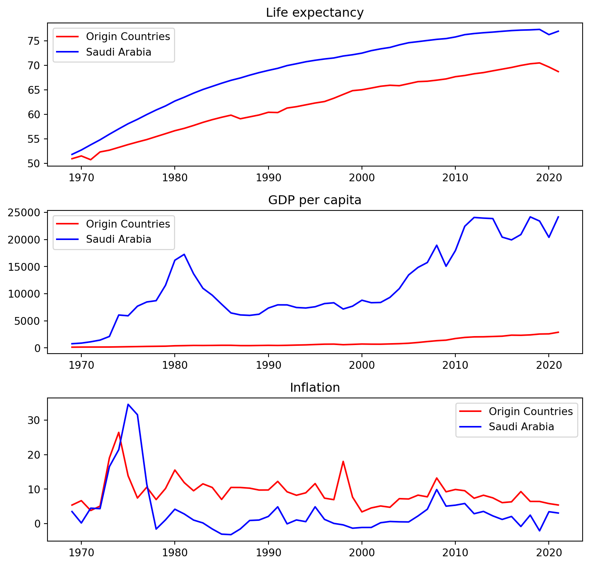

<!DOCTYPE html>
<html xmlns="http://www.w3.org/1999/xhtml" lang="en" xml:lang="en"><head>

<meta charset="utf-8">
<meta name="generator" content="quarto-1.3.450">

<meta name="viewport" content="width=device-width, initial-scale=1.0, user-scalable=yes">

<meta name="author" content="Niloufar &amp; Nasim">

<title>Global Migration and Attractive Destinations</title>
<style>
code{white-space: pre-wrap;}
span.smallcaps{font-variant: small-caps;}
div.columns{display: flex; gap: min(4vw, 1.5em);}
div.column{flex: auto; overflow-x: auto;}
div.hanging-indent{margin-left: 1.5em; text-indent: -1.5em;}
ul.task-list{list-style: none;}
ul.task-list li input[type="checkbox"] {
  width: 0.8em;
  margin: 0 0.8em 0.2em -1em; /* quarto-specific, see https://github.com/quarto-dev/quarto-cli/issues/4556 */ 
  vertical-align: middle;
}
/* CSS for syntax highlighting */
pre > code.sourceCode { white-space: pre; position: relative; }
pre > code.sourceCode > span { display: inline-block; line-height: 1.25; }
pre > code.sourceCode > span:empty { height: 1.2em; }
.sourceCode { overflow: visible; }
code.sourceCode > span { color: inherit; text-decoration: inherit; }
div.sourceCode { margin: 1em 0; }
pre.sourceCode { margin: 0; }
@media screen {
div.sourceCode { overflow: auto; }
}
@media print {
pre > code.sourceCode { white-space: pre-wrap; }
pre > code.sourceCode > span { text-indent: -5em; padding-left: 5em; }
}
pre.numberSource code
  { counter-reset: source-line 0; }
pre.numberSource code > span
  { position: relative; left: -4em; counter-increment: source-line; }
pre.numberSource code > span > a:first-child::before
  { content: counter(source-line);
    position: relative; left: -1em; text-align: right; vertical-align: baseline;
    border: none; display: inline-block;
    -webkit-touch-callout: none; -webkit-user-select: none;
    -khtml-user-select: none; -moz-user-select: none;
    -ms-user-select: none; user-select: none;
    padding: 0 4px; width: 4em;
  }
pre.numberSource { margin-left: 3em;  padding-left: 4px; }
div.sourceCode
  {   }
@media screen {
pre > code.sourceCode > span > a:first-child::before { text-decoration: underline; }
}
/* CSS for citations */
div.csl-bib-body { }
div.csl-entry {
  clear: both;
}
.hanging-indent div.csl-entry {
  margin-left:2em;
  text-indent:-2em;
}
div.csl-left-margin {
  min-width:2em;
  float:left;
}
div.csl-right-inline {
  margin-left:2em;
  padding-left:1em;
}
div.csl-indent {
  margin-left: 2em;
}</style>


<script src="index_files/libs/clipboard/clipboard.min.js"></script>
<script src="index_files/libs/quarto-html/quarto.js"></script>
<script src="index_files/libs/quarto-html/popper.min.js"></script>
<script src="index_files/libs/quarto-html/tippy.umd.min.js"></script>
<script src="index_files/libs/quarto-html/anchor.min.js"></script>
<link href="index_files/libs/quarto-html/tippy.css" rel="stylesheet">
<link href="index_files/libs/quarto-html/quarto-syntax-highlighting.css" rel="stylesheet" id="quarto-text-highlighting-styles">
<script src="index_files/libs/bootstrap/bootstrap.min.js"></script>
<link href="index_files/libs/bootstrap/bootstrap-icons.css" rel="stylesheet">
<link href="index_files/libs/bootstrap/bootstrap.min.css" rel="stylesheet" id="quarto-bootstrap" data-mode="light">
<script src="https://cdnjs.cloudflare.com/ajax/libs/require.js/2.3.6/require.min.js" integrity="sha512-c3Nl8+7g4LMSTdrm621y7kf9v3SDPnhxLNhcjFJbKECVnmZHTdo+IRO05sNLTH/D3vA6u1X32ehoLC7WFVdheg==" crossorigin="anonymous"></script>
<script src="https://cdnjs.cloudflare.com/ajax/libs/jquery/3.5.1/jquery.min.js" integrity="sha512-bLT0Qm9VnAYZDflyKcBaQ2gg0hSYNQrJ8RilYldYQ1FxQYoCLtUjuuRuZo+fjqhx/qtq/1itJ0C2ejDxltZVFg==" crossorigin="anonymous"></script>
<script type="application/javascript">define('jquery', [],function() {return window.jQuery;})</script>
<script type="text/javascript">
window.PlotlyConfig = {MathJaxConfig: 'local'};
if (window.MathJax && window.MathJax.Hub && window.MathJax.Hub.Config) {window.MathJax.Hub.Config({SVG: {font: "STIX-Web"}});}
if (typeof require !== 'undefined') {
require.undef("plotly");
requirejs.config({
    paths: {
        'plotly': ['https://cdn.plot.ly/plotly-2.27.0.min']
    }
});
require(['plotly'], function(Plotly) {
    window._Plotly = Plotly;
});
}
</script>


</head>

<body>

<div id="quarto-content" class="page-columns page-rows-contents page-layout-article">
<div id="quarto-margin-sidebar" class="sidebar margin-sidebar">
  <nav id="TOC" role="doc-toc" class="toc-active">
    <h2 id="toc-title">Table of contents</h2>
   
  <ul>
  <li><a href="#executive-summary" id="toc-executive-summary" class="nav-link active" data-scroll-target="#executive-summary"><span class="header-section-number">1</span> Executive Summary</a></li>
  <li><a href="#introduction" id="toc-introduction" class="nav-link" data-scroll-target="#introduction"><span class="header-section-number">2</span> Introduction</a></li>
  <li><a href="#data-source" id="toc-data-source" class="nav-link" data-scroll-target="#data-source"><span class="header-section-number">3</span> Data Source</a>
  <ul class="collapse">
  <li><a href="#united-nations-international-migration-stock" id="toc-united-nations-international-migration-stock" class="nav-link" data-scroll-target="#united-nations-international-migration-stock"><span class="header-section-number">3.1</span> United Nations International Migration Stock</a></li>
  <li><a href="#wdi-dataset" id="toc-wdi-dataset" class="nav-link" data-scroll-target="#wdi-dataset"><span class="header-section-number">3.2</span> WDI Dataset</a></li>
  </ul></li>
  <li><a href="#visualisation" id="toc-visualisation" class="nav-link" data-scroll-target="#visualisation"><span class="header-section-number">4</span> Visualisation</a>
  <ul class="collapse">
  <li><a href="#global-migration" id="toc-global-migration" class="nav-link" data-scroll-target="#global-migration"><span class="header-section-number">4.1</span> Global Migration</a></li>
  <li><a href="#migration-within-continents" id="toc-migration-within-continents" class="nav-link" data-scroll-target="#migration-within-continents"><span class="header-section-number">4.2</span> Migration within Continents</a></li>
  <li><a href="#comparing-regions-based-on-their-international-migration-stock-and-population" id="toc-comparing-regions-based-on-their-international-migration-stock-and-population" class="nav-link" data-scroll-target="#comparing-regions-based-on-their-international-migration-stock-and-population"><span class="header-section-number">4.3</span> Comparing Regions based on their International Migration Stock and Population</a></li>
  <li><a href="#international-migration-stock-on-the-world-map" id="toc-international-migration-stock-on-the-world-map" class="nav-link" data-scroll-target="#international-migration-stock-on-the-world-map"><span class="header-section-number">4.4</span> International Migration Stock on the World Map</a></li>
  <li><a href="#migration-demographic-characteristics" id="toc-migration-demographic-characteristics" class="nav-link" data-scroll-target="#migration-demographic-characteristics"><span class="header-section-number">4.5</span> Migration demographic characteristics</a>
  <ul class="collapse">
  <li><a href="#gender-analysis" id="toc-gender-analysis" class="nav-link" data-scroll-target="#gender-analysis"><span class="header-section-number">4.5.1</span> Gender Analysis</a></li>
  <li><a href="#age-analysis" id="toc-age-analysis" class="nav-link" data-scroll-target="#age-analysis"><span class="header-section-number">4.5.2</span> Age Analysis</a></li>
  </ul></li>
  <li><a href="#selecting-the-countries-of-destination" id="toc-selecting-the-countries-of-destination" class="nav-link" data-scroll-target="#selecting-the-countries-of-destination"><span class="header-section-number">4.6</span> Selecting the countries of destination</a></li>
  </ul></li>
  <li><a href="#destination-and-origin-countries" id="toc-destination-and-origin-countries" class="nav-link" data-scroll-target="#destination-and-origin-countries"><span class="header-section-number">5</span> Destination and Origin countries</a>
  <ul class="collapse">
  <li><a href="#origin-countries" id="toc-origin-countries" class="nav-link" data-scroll-target="#origin-countries"><span class="header-section-number">5.1</span> Origin Countries</a></li>
  <li><a href="#top-destinations" id="toc-top-destinations" class="nav-link" data-scroll-target="#top-destinations"><span class="header-section-number">5.2</span> Top Destinations</a>
  <ul class="collapse">
  <li><a href="#united-states-of-america" id="toc-united-states-of-america" class="nav-link" data-scroll-target="#united-states-of-america"><span class="header-section-number">5.2.1</span> United States of America</a></li>
  <li><a href="#germany" id="toc-germany" class="nav-link" data-scroll-target="#germany"><span class="header-section-number">5.2.2</span> Germany</a></li>
  <li><a href="#saudi-arabia" id="toc-saudi-arabia" class="nav-link" data-scroll-target="#saudi-arabia"><span class="header-section-number">5.2.3</span> Saudi Arabia</a></li>
  </ul></li>
  </ul></li>
  <li><a href="#economic-and-social-indices" id="toc-economic-and-social-indices" class="nav-link" data-scroll-target="#economic-and-social-indices"><span class="header-section-number">6</span> Economic and Social Indices</a>
  <ul class="collapse">
  <li><a href="#united-states-of-america-1" id="toc-united-states-of-america-1" class="nav-link" data-scroll-target="#united-states-of-america-1"><span class="header-section-number">6.1</span> United States of America</a></li>
  <li><a href="#germany-1" id="toc-germany-1" class="nav-link" data-scroll-target="#germany-1"><span class="header-section-number">6.2</span> Germany</a></li>
  <li><a href="#saudi-arabia-1" id="toc-saudi-arabia-1" class="nav-link" data-scroll-target="#saudi-arabia-1"><span class="header-section-number">6.3</span> Saudi Arabia</a></li>
  <li><a href="#comparing-the-destinations" id="toc-comparing-the-destinations" class="nav-link" data-scroll-target="#comparing-the-destinations"><span class="header-section-number">6.4</span> Comparing the destinations</a></li>
  </ul></li>
  <li><a href="#conclusion" id="toc-conclusion" class="nav-link" data-scroll-target="#conclusion"><span class="header-section-number">7</span> Conclusion</a></li>
  
  </ul>
</nav>
</div>
<main class="content" id="quarto-document-content">

<header id="title-block-header" class="quarto-title-block default">
<div class="quarto-title">
<div class="quarto-title-block"><div><h1 class="title">Global Migration and Attractive Destinations</h1><button type="button" class="btn code-tools-button" id="quarto-code-tools-source"><i class="bi"></i> Code</button></div></div>
</div>


<div class="quarto-title-meta">

    <div>
    <div class="quarto-title-meta-heading">Author</div>
    <div class="quarto-title-meta-contents">
             <p>Niloufar &amp; Nasim </p>
          </div>
  </div>
    
  
    
  </div>
  

</header>

<iframe class="slide-deck" style="border:1px solid lightgray;" width="100%" height="500" src="presentation.html"></iframe>
<p><a href="presentation.html" class="internal" target="_blank">Presentation in standalone browser tab.</a></p>
<section id="executive-summary" class="level1" data-number="1">
<h1 data-number="1"><span class="header-section-number">1</span> Executive Summary</h1>
<p style="text-align: justify;">
Migration is a complex phenomenon that has societal, economic, cultural and environmental impact on the countries involved. The phenomenon of human migration has been in existence since the beginning of human existence. According to researchers, the decisions to migrate can be categorized into factors associated with areas of origin, factors associated with the destination area, intervening obstacles and personal factors.
</p><p style="text-align: justify">
The push factors influencing migration involve conditions that force individuals to leave their homes. They can be categorized into economic, social and political factors. The pull factors to migration are the opposite of push factors, and they involve the various aspects that attract people to certain location. Similar the push factors, pull factors can be categorized into economic, social and political migration pull factors. According to searches, economic factors that pull migrants include indices such as hope for better employment, better shelter, more income and food, and higher living standards.
</p><p style="text-align: justify">
Similarly, various social and political factors contribute to the pulling of migrants to other regions or countries. Social factors such as religious tolerance and better educational opportunities in some countries contribute to the pull of migrants. Some of the social factors that pull migrants to developed countries such as the US and other European countries include better health care and increased religious tolerance. Some of the political pull factors influencing migration also include factors such as the right to vote and freedom from persecution and improved protection under the law and safety.
</p><p style="text-align: justify">
This comprehensive study illuminates an increasing trend on international migrant stock during 1960 until 2020. Then, we focused on the demographic characteristics such as gender and age range. During the years, the ratio of migration stock distribution among males and females were almost consistent where men had a slightly higher migration stock compared to women. In addition, young adults had always consisted biggest amount of migrant stock while children consisted the least.
</p><p style="text-align: justify">
Regarding the geographical areas in the last year of study (2020), Asia, Europe and North America had the highest number of migrants. Within these continents, the regions of Northern America, Western Europe and Western Asia have the highest number of international migrant stocks, respectively. According to this, the top 3 attractive destinations (United States of America, Germany, and Saudi Arabia) and their correspondent top 5 origin countries were selected for further studies.
</p><p style="text-align: justify">
The results depict that all three destination countries have a significant economic and social advantage over their respective origin countries, with higher GDP per capita and life expectancy. However, the inflation rate of Germany and the United States didn’t show a meaningful differences compared to their origin countries.
</p><p style="text-align: justify">
Policymakers and stakeholders should consider the nuanced economic and social contexts when formulating immigration policies, recognizing the unique needs and contributions of diverse migrant groups.
</p>
</section>
<section id="introduction" class="level1" data-number="2">
<h1 data-number="2"><span class="header-section-number">2</span> Introduction</h1>
<p style="text-align: justify;">
<b>Migration</b> is a phenomenon that has been occurring for hundreds of years, yet it is still a complex and ever-evolving topic. Migration is the process of moving from one place to another, either temporarily or permanently, with people relocating for various reasons, such as seeking better living conditions, economic opportunities, or fleeing from violence.
</p><p style="text-align: justify;">
<b>Migrant</b> is an umbrella term which has not been defined in international law, reflecting the general lay understanding of people who have relocated from their normal home in a foreign country temporarily or permanently. On international levels there is no universal definition of “migrant”. <span class="citation" data-cites="whatismig">(<a href="#ref-whatismig" role="doc-biblioref"><span>“What Is Migration?”</span> n.d.</a>)</span>
</p><p style="text-align: justify;">
While there is no formal legal definition of an <i>International migrant</i> regarding the <b>United Nations</b> documentation, most experts agree that an international migrant is someone who changes his or her country of usual residence, irrespective of the reason for migration or legal status. Generally, a distinction is made between short-term or temporary migration, covering movements with a duration between three and 12 months, and long-term or permanent migration, referring to a change of country of residence for a duration of one year or more. There is another definition in <b>World Bank Data</b> documentation. <i>International migrant stock</i> is the number of people born in a country other than that in which they live, including refugees. <span class="citation" data-cites="migreport">(<a href="#ref-migreport" role="doc-biblioref"><span>“World Migration Report 2022,”</span> n.d.</a>)</span>
</p><p style="text-align: justify;">
Migration is a complex phenomenon that has both positive and negative impacts on the countries involved. It has been an important factor in the growth and development of societies, economies, and cultures around the world. It has both positive and negative effects on the countries involved. On the positive side, it can lead to economic growth by providing a source of labor and capital. It can also lead to a more diverse and multicultural society, which can bring many benefits. On the negative side, migration can lead to overpopulation and competition for resources, as well as economic, social, and political instability. <span class="citation" data-cites="migreport">(<a href="#ref-migreport" role="doc-biblioref"><span>“World Migration Report 2022,”</span> n.d.</a>)</span>
</p><p style="text-align: justify;">
It can also have an impact on the environment. Whether it is people moving from one country to another in search of a better life or animals following seasonal patterns to find food, migration has a major impact on the world. For example, increased migration can lead to increased pressure on natural resources, such as water and land, and can lead to greater pollution and degradation of the environment.
</p><p style="text-align: justify;">
This report delves into the intricate landscape of international migration, exploring the multifaceted dimensions of migration stock across different countries, regions, and continents. As we navigate through the comprehensive analysis, several key questions will be addressed, shedding light on the evolving nature of migration patterns globally. This study will address the following questions:
</p>
<ol type="1">
<li>How is the Migration Stock changing in different countries, regions and continents during the years?
<ul>
<li>Which continents have the highest number of international migrants?</li>
<li>Which regions within the continents have the highest number of international migrants?</li>
<li>which countries have the highest number of international migrants?</li>
</ul></li>
<li>How is Migration Stock distributed among demographic characteristics such as age and gender?
<ul>
<li>Migrants are mostly female or male?</li>
<li>Which age group has the most number of migrants?</li>
</ul></li>
<li>Which countries have the most number of migrants?
<ul>
<li>What are the top 3 attractive destinations for migrants?</li>
<li>For which countries they are attractive?</li>
</ul></li>
<li>What are the differences between these 3 destinations and their corresponding origin countries in terms of economic and social indices?
<ul>
<li>Do they have a significant superiority in these indies?</li>
</ul></li>
</ol>
</section>
<section id="data-source" class="level1" data-number="3">
<h1 data-number="3"><span class="header-section-number">3</span> Data Source</h1>
<p>To address our research inquiries, three datasets were utilized, sourced from the following two distinct data repositories.</p>
<section id="united-nations-international-migration-stock" class="level2" data-number="3.1">
<h2 data-number="3.1" class="anchored" data-anchor-id="united-nations-international-migration-stock"><span class="header-section-number">3.1</span> United Nations International Migration Stock</h2>
<p style="text-align: justify;">
From the UN data source, we selected 2 datasets of <i>age, sex</i>, and <i>origin and destination</i>. These two datasets are in excel format, presenting the estimation of international migrant by age, sex, origin and destination. Estimates are presented for 1990, 1995, 2000, 2005, 2010, 2015 and 2020 and are available for 232 countries and areas of the world. The estimates are based on official statistics on the foreign-born or the foreign population. From these datasets, we extracted the International Migration Stock and population of all countries, regions and continents for different genders and age ranges, as well as the number of exchanged migrants between countries of destination and origin.
</p>
<p>Dataset link: <a href="https://www.un.org/development/desa/pd/content/international-migrant-stock" class="uri">https://www.un.org/development/desa/pd/content/international-migrant-stock</a></p>
</section>
<section id="wdi-dataset" class="level2" data-number="3.2">
<h2 data-number="3.2" class="anchored" data-anchor-id="wdi-dataset"><span class="header-section-number">3.2</span> WDI Dataset</h2>
<p style="text-align: justify;">
World Development Indicators (WDI) is the primary World Bank collection of development indicators, compiled from officially recognized international sources. It presents the most current and accurate global development data available, and includes national, regional and global estimates. From this databank, we extracted the GDP, Life Expectancy and Inflation indicators from 1960 to 2022.
</p>
<p>Dataset Link: <a href="https://databank.worldbank.org/reports.aspx?source=World-Development-Indicators" class="uri">https://databank.worldbank.org/reports.aspx?source=World-Development-Indicators</a></p>
</section>
</section>
<section id="visualisation" class="level1" data-number="4">
<h1 data-number="4"><span class="header-section-number">4</span> Visualisation</h1>
<section id="global-migration" class="level2" data-number="4.1">
<h2 data-number="4.1" class="anchored" data-anchor-id="global-migration"><span class="header-section-number">4.1</span> Global Migration</h2>
<p style="text-align: justify;">
In most discussions on migration, the starting point is usually numbers. Understanding changes in scale, emerging trends and shifting demographics related to global social and economic transformations, such as migration, help us make sense of the changing world we live in and plan for the future.
</p><p style="text-align: justify;">
Overall, the estimated number of international migrants has increased over the past five decades. The total estimated 280 million people living in a country other than their countries of birth in 2020 was 128 million more than in 1990. This can be depicted from the following bar chart (<a href="#fig-imsworldcontinent">Figure&nbsp;1</a>).
</p><p style="text-align: justify;">
From the information presented in the bar chart, it is evident that with the exception of 2015 when Asia held the highest number of international migration stocks, Europe consistently maintains the top position and Asia and Northern America have the second and third place, respectively.
</p>
<div class="cell" data-execution_count="19">
<div id="fig-imsworldcontinent" class="quarto-figure quarto-figure-center anchored">
<figure class="figure">

<div>                            <div id="57b2e58f-cc0d-45ed-b04f-b15e5f02b176" class="plotly-graph-div" style="height:600px; width:850px;"></div>            <script type="text/javascript">                require(["plotly"], function(Plotly) {                    window.PLOTLYENV=window.PLOTLYENV || {};                                    if (document.getElementById("57b2e58f-cc0d-45ed-b04f-b15e5f02b176")) {                    Plotly.newPlot(                        "57b2e58f-cc0d-45ed-b04f-b15e5f02b176",                        [{"alignmentgroup":"True","hovertemplate":"continent=Europe\u003cbr\u003eyear=%{x}\u003cbr\u003eint_migrant_stock=%{y}\u003cextra\u003e\u003c\u002fextra\u003e","legendgroup":"Europe","marker":{"color":"#636efa","pattern":{"shape":""}},"name":"Europe","offsetgroup":"Europe","orientation":"v","showlegend":true,"textposition":"auto","x":[2020,2015,2010,2005,2000,1995,1990],"xaxis":"x","y":[86706068.0,74759083.0,70627160.0,63585731.0,56858793.0,53489827.0,49608225.0],"yaxis":"y","type":"bar"},{"alignmentgroup":"True","hovertemplate":"continent=Asia\u003cbr\u003eyear=%{x}\u003cbr\u003eint_migrant_stock=%{y}\u003cextra\u003e\u003c\u002fextra\u003e","legendgroup":"Asia","marker":{"color":"#EF553B","pattern":{"shape":""}},"name":"Asia","offsetgroup":"Asia","orientation":"v","showlegend":true,"textposition":"auto","x":[2020,2015,2010,2005,2000,1990,1995],"xaxis":"x","y":[85618502.0,77191249.0,66123640.0,53249787.0,49066986.0,48209949.0,46418044.0],"yaxis":"y","type":"bar"},{"alignmentgroup":"True","hovertemplate":"continent=Northern America\u003cbr\u003eyear=%{x}\u003cbr\u003eint_migrant_stock=%{y}\u003cextra\u003e\u003c\u002fextra\u003e","legendgroup":"Northern America","marker":{"color":"#00cc96","pattern":{"shape":""}},"name":"Northern America","offsetgroup":"Northern America","orientation":"v","showlegend":true,"textposition":"auto","x":[2020,2015,2010,2005,2000,1995,1990],"xaxis":"x","y":[58708795.0,55633741.0,50970524.0,45363089.0,40351710.0,33340948.0,27610408.0],"yaxis":"y","type":"bar"},{"alignmentgroup":"True","hovertemplate":"continent=Africa\u003cbr\u003eyear=%{x}\u003cbr\u003eint_migrant_stock=%{y}\u003cextra\u003e\u003c\u002fextra\u003e","legendgroup":"Africa","marker":{"color":"#ab63fa","pattern":{"shape":""}},"name":"Africa","offsetgroup":"Africa","orientation":"v","showlegend":true,"textposition":"auto","x":[2020,2015,2010,1995,2005,1990,2000],"xaxis":"x","y":[25389464.0,22860792.0,17806677.0,16357077.0,16040087.0,15689666.0,15051677.0],"yaxis":"y","type":"bar"},{"alignmentgroup":"True","hovertemplate":"continent=Latin America And The Caribbean\u003cbr\u003eyear=%{x}\u003cbr\u003eint_migrant_stock=%{y}\u003cextra\u003e\u003c\u002fextra\u003e","legendgroup":"Latin America And The Caribbean","marker":{"color":"#FFA15A","pattern":{"shape":""}},"name":"Latin America And The Caribbean","offsetgroup":"Latin America And The Caribbean","orientation":"v","showlegend":true,"textposition":"auto","x":[2020,2015,2010,2005,1990,1995,2000],"xaxis":"x","y":[14794623.0,9441503.0,8326588.0,7184113.0,7135971.0,6661553.0,6539738.0],"yaxis":"y","type":"bar"},{"alignmentgroup":"True","hovertemplate":"continent=Oceania \u003cbr\u003eyear=%{x}\u003cbr\u003eint_migrant_stock=%{y}\u003cextra\u003e\u003c\u002fextra\u003e","legendgroup":"Oceania ","marker":{"color":"#19d3f3","pattern":{"shape":""}},"name":"Oceania ","offsetgroup":"Oceania ","orientation":"v","showlegend":true,"textposition":"auto","x":[2020,2015,2010,2005,2000,1995,1990],"xaxis":"x","y":[9380653.0,8072276.0,7128598.0,6024021.0,5361681.0,5022527.0,4731938.0],"yaxis":"y","type":"bar"},{"mode":"text","showlegend":false,"text":["280,598,105.0"],"textposition":"top center","x":[2020],"y":[280598105.0],"type":"scatter"},{"mode":"text","showlegend":false,"text":["247,958,644.0"],"textposition":"top center","x":[2015],"y":[247958644.0],"type":"scatter"},{"mode":"text","showlegend":false,"text":["220,983,187.0"],"textposition":"top center","x":[2010],"y":[220983187.0],"type":"scatter"},{"mode":"text","showlegend":false,"text":["191,446,828.0"],"textposition":"top center","x":[2005],"y":[191446828.0],"type":"scatter"},{"mode":"text","showlegend":false,"text":["173,230,585.0"],"textposition":"top center","x":[2000],"y":[173230585.0],"type":"scatter"},{"mode":"text","showlegend":false,"text":["161,289,976.0"],"textposition":"top center","x":[1995],"y":[161289976.0],"type":"scatter"},{"mode":"text","showlegend":false,"text":["152,986,157.0"],"textposition":"top center","x":[1990],"y":[152986157.0],"type":"scatter"}],                        {"template":{"data":{"histogram2dcontour":[{"type":"histogram2dcontour","colorbar":{"outlinewidth":0,"ticks":""},"colorscale":[[0.0,"#0d0887"],[0.1111111111111111,"#46039f"],[0.2222222222222222,"#7201a8"],[0.3333333333333333,"#9c179e"],[0.4444444444444444,"#bd3786"],[0.5555555555555556,"#d8576b"],[0.6666666666666666,"#ed7953"],[0.7777777777777778,"#fb9f3a"],[0.8888888888888888,"#fdca26"],[1.0,"#f0f921"]]}],"choropleth":[{"type":"choropleth","colorbar":{"outlinewidth":0,"ticks":""}}],"histogram2d":[{"type":"histogram2d","colorbar":{"outlinewidth":0,"ticks":""},"colorscale":[[0.0,"#0d0887"],[0.1111111111111111,"#46039f"],[0.2222222222222222,"#7201a8"],[0.3333333333333333,"#9c179e"],[0.4444444444444444,"#bd3786"],[0.5555555555555556,"#d8576b"],[0.6666666666666666,"#ed7953"],[0.7777777777777778,"#fb9f3a"],[0.8888888888888888,"#fdca26"],[1.0,"#f0f921"]]}],"heatmap":[{"type":"heatmap","colorbar":{"outlinewidth":0,"ticks":""},"colorscale":[[0.0,"#0d0887"],[0.1111111111111111,"#46039f"],[0.2222222222222222,"#7201a8"],[0.3333333333333333,"#9c179e"],[0.4444444444444444,"#bd3786"],[0.5555555555555556,"#d8576b"],[0.6666666666666666,"#ed7953"],[0.7777777777777778,"#fb9f3a"],[0.8888888888888888,"#fdca26"],[1.0,"#f0f921"]]}],"heatmapgl":[{"type":"heatmapgl","colorbar":{"outlinewidth":0,"ticks":""},"colorscale":[[0.0,"#0d0887"],[0.1111111111111111,"#46039f"],[0.2222222222222222,"#7201a8"],[0.3333333333333333,"#9c179e"],[0.4444444444444444,"#bd3786"],[0.5555555555555556,"#d8576b"],[0.6666666666666666,"#ed7953"],[0.7777777777777778,"#fb9f3a"],[0.8888888888888888,"#fdca26"],[1.0,"#f0f921"]]}],"contourcarpet":[{"type":"contourcarpet","colorbar":{"outlinewidth":0,"ticks":""}}],"contour":[{"type":"contour","colorbar":{"outlinewidth":0,"ticks":""},"colorscale":[[0.0,"#0d0887"],[0.1111111111111111,"#46039f"],[0.2222222222222222,"#7201a8"],[0.3333333333333333,"#9c179e"],[0.4444444444444444,"#bd3786"],[0.5555555555555556,"#d8576b"],[0.6666666666666666,"#ed7953"],[0.7777777777777778,"#fb9f3a"],[0.8888888888888888,"#fdca26"],[1.0,"#f0f921"]]}],"surface":[{"type":"surface","colorbar":{"outlinewidth":0,"ticks":""},"colorscale":[[0.0,"#0d0887"],[0.1111111111111111,"#46039f"],[0.2222222222222222,"#7201a8"],[0.3333333333333333,"#9c179e"],[0.4444444444444444,"#bd3786"],[0.5555555555555556,"#d8576b"],[0.6666666666666666,"#ed7953"],[0.7777777777777778,"#fb9f3a"],[0.8888888888888888,"#fdca26"],[1.0,"#f0f921"]]}],"mesh3d":[{"type":"mesh3d","colorbar":{"outlinewidth":0,"ticks":""}}],"scatter":[{"fillpattern":{"fillmode":"overlay","size":10,"solidity":0.2},"type":"scatter"}],"parcoords":[{"type":"parcoords","line":{"colorbar":{"outlinewidth":0,"ticks":""}}}],"scatterpolargl":[{"type":"scatterpolargl","marker":{"colorbar":{"outlinewidth":0,"ticks":""}}}],"bar":[{"error_x":{"color":"#2a3f5f"},"error_y":{"color":"#2a3f5f"},"marker":{"line":{"color":"#E5ECF6","width":0.5},"pattern":{"fillmode":"overlay","size":10,"solidity":0.2}},"type":"bar"}],"scattergeo":[{"type":"scattergeo","marker":{"colorbar":{"outlinewidth":0,"ticks":""}}}],"scatterpolar":[{"type":"scatterpolar","marker":{"colorbar":{"outlinewidth":0,"ticks":""}}}],"histogram":[{"marker":{"pattern":{"fillmode":"overlay","size":10,"solidity":0.2}},"type":"histogram"}],"scattergl":[{"type":"scattergl","marker":{"colorbar":{"outlinewidth":0,"ticks":""}}}],"scatter3d":[{"type":"scatter3d","line":{"colorbar":{"outlinewidth":0,"ticks":""}},"marker":{"colorbar":{"outlinewidth":0,"ticks":""}}}],"scattermapbox":[{"type":"scattermapbox","marker":{"colorbar":{"outlinewidth":0,"ticks":""}}}],"scatterternary":[{"type":"scatterternary","marker":{"colorbar":{"outlinewidth":0,"ticks":""}}}],"scattercarpet":[{"type":"scattercarpet","marker":{"colorbar":{"outlinewidth":0,"ticks":""}}}],"carpet":[{"aaxis":{"endlinecolor":"#2a3f5f","gridcolor":"white","linecolor":"white","minorgridcolor":"white","startlinecolor":"#2a3f5f"},"baxis":{"endlinecolor":"#2a3f5f","gridcolor":"white","linecolor":"white","minorgridcolor":"white","startlinecolor":"#2a3f5f"},"type":"carpet"}],"table":[{"cells":{"fill":{"color":"#EBF0F8"},"line":{"color":"white"}},"header":{"fill":{"color":"#C8D4E3"},"line":{"color":"white"}},"type":"table"}],"barpolar":[{"marker":{"line":{"color":"#E5ECF6","width":0.5},"pattern":{"fillmode":"overlay","size":10,"solidity":0.2}},"type":"barpolar"}],"pie":[{"automargin":true,"type":"pie"}]},"layout":{"autotypenumbers":"strict","colorway":["#636efa","#EF553B","#00cc96","#ab63fa","#FFA15A","#19d3f3","#FF6692","#B6E880","#FF97FF","#FECB52"],"font":{"color":"#2a3f5f"},"hovermode":"closest","hoverlabel":{"align":"left"},"paper_bgcolor":"white","plot_bgcolor":"#E5ECF6","polar":{"bgcolor":"#E5ECF6","angularaxis":{"gridcolor":"white","linecolor":"white","ticks":""},"radialaxis":{"gridcolor":"white","linecolor":"white","ticks":""}},"ternary":{"bgcolor":"#E5ECF6","aaxis":{"gridcolor":"white","linecolor":"white","ticks":""},"baxis":{"gridcolor":"white","linecolor":"white","ticks":""},"caxis":{"gridcolor":"white","linecolor":"white","ticks":""}},"coloraxis":{"colorbar":{"outlinewidth":0,"ticks":""}},"colorscale":{"sequential":[[0.0,"#0d0887"],[0.1111111111111111,"#46039f"],[0.2222222222222222,"#7201a8"],[0.3333333333333333,"#9c179e"],[0.4444444444444444,"#bd3786"],[0.5555555555555556,"#d8576b"],[0.6666666666666666,"#ed7953"],[0.7777777777777778,"#fb9f3a"],[0.8888888888888888,"#fdca26"],[1.0,"#f0f921"]],"sequentialminus":[[0.0,"#0d0887"],[0.1111111111111111,"#46039f"],[0.2222222222222222,"#7201a8"],[0.3333333333333333,"#9c179e"],[0.4444444444444444,"#bd3786"],[0.5555555555555556,"#d8576b"],[0.6666666666666666,"#ed7953"],[0.7777777777777778,"#fb9f3a"],[0.8888888888888888,"#fdca26"],[1.0,"#f0f921"]],"diverging":[[0,"#8e0152"],[0.1,"#c51b7d"],[0.2,"#de77ae"],[0.3,"#f1b6da"],[0.4,"#fde0ef"],[0.5,"#f7f7f7"],[0.6,"#e6f5d0"],[0.7,"#b8e186"],[0.8,"#7fbc41"],[0.9,"#4d9221"],[1,"#276419"]]},"xaxis":{"gridcolor":"white","linecolor":"white","ticks":"","title":{"standoff":15},"zerolinecolor":"white","automargin":true,"zerolinewidth":2},"yaxis":{"gridcolor":"white","linecolor":"white","ticks":"","title":{"standoff":15},"zerolinecolor":"white","automargin":true,"zerolinewidth":2},"scene":{"xaxis":{"backgroundcolor":"#E5ECF6","gridcolor":"white","linecolor":"white","showbackground":true,"ticks":"","zerolinecolor":"white","gridwidth":2},"yaxis":{"backgroundcolor":"#E5ECF6","gridcolor":"white","linecolor":"white","showbackground":true,"ticks":"","zerolinecolor":"white","gridwidth":2},"zaxis":{"backgroundcolor":"#E5ECF6","gridcolor":"white","linecolor":"white","showbackground":true,"ticks":"","zerolinecolor":"white","gridwidth":2}},"shapedefaults":{"line":{"color":"#2a3f5f"}},"annotationdefaults":{"arrowcolor":"#2a3f5f","arrowhead":0,"arrowwidth":1},"geo":{"bgcolor":"white","landcolor":"#E5ECF6","subunitcolor":"white","showland":true,"showlakes":true,"lakecolor":"white"},"title":{"x":0.05},"mapbox":{"style":"light"}}},"xaxis":{"anchor":"y","domain":[0.0,1.0],"title":{"text":"Year"}},"yaxis":{"anchor":"x","domain":[0.0,1.0],"title":{"text":"International Migration Stock"}},"legend":{"title":{"text":"continent"},"tracegroupgap":0},"margin":{"t":60},"barmode":"stack","showlegend":true,"title":{"text":"Total International Migrant Stock"},"height":600,"width":850},                        {"responsive": true}                    ).then(function(){
                            
var gd = document.getElementById('57b2e58f-cc0d-45ed-b04f-b15e5f02b176');
var x = new MutationObserver(function (mutations, observer) {{
        var display = window.getComputedStyle(gd).display;
        if (!display || display === 'none') {{
            console.log([gd, 'removed!']);
            Plotly.purge(gd);
            observer.disconnect();
        }}
}});

// Listen for the removal of the full notebook cells
var notebookContainer = gd.closest('#notebook-container');
if (notebookContainer) {{
    x.observe(notebookContainer, {childList: true});
}}

// Listen for the clearing of the current output cell
var outputEl = gd.closest('.output');
if (outputEl) {{
    x.observe(outputEl, {childList: true});
}}

                        })                };                });            </script>        </div>
<figcaption class="figure-caption">Figure&nbsp;1: Total International Migrant Stock, Separated by Continent</figcaption>
</figure>
</div>
</div>
<p style="text-align: justify;">
In the subsequent line chart (<a href="#fig-imspopcompare">Figure&nbsp;2</a>), it becomes evident that the international migrant stock is experiencing exponential growth, surpassing the global population growth rate.
</p>
<div class="cell" data-execution_count="21">
<div class="cell-output cell-output-display">
<div id="fig-imspopcompare" class="quarto-figure quarto-figure-center anchored">
<figure class="figure">
<p></p>
<figcaption class="figure-caption">Figure&nbsp;2: Comparison of International Migrant Stock and Population</figcaption>
</figure>
</div>
</div>
</div>
</section>
<section id="migration-within-continents" class="level2" data-number="4.2">
<h2 data-number="4.2" class="anchored" data-anchor-id="migration-within-continents"><span class="header-section-number">4.2</span> Migration within Continents</h2>
<p style="text-align: justify;">
The subsequent bar chart (<a href="#fig-imsinregion">Figure&nbsp;3</a>) offers further insights into each continent, highlighting Northern America as the region with the highest count of International Migration Stock. In the initial year of analysis (1990), Eastern Europe and Southern Asia held the second and third positions, respectively. By 1995, Western Europe surpassed Southern Asia, securing the third position. In 2000, Western Europe overtook Eastern Europe, claiming the second position. In 2005, Western Asia ascended to the third place, and from 2010 onward, it consistently held the second position, while Western Europe shifted to the third position.
</p>
<div class="cell" data-execution_count="24">
<div id="fig-imsinregion" class="quarto-figure quarto-figure-center anchored">
<figure class="figure">

<div>                            <div id="50e3b7b5-131d-47ec-9331-a0fae2f0f0ab" class="plotly-graph-div" style="height:700px; width:850px;"></div>            <script type="text/javascript">                require(["plotly"], function(Plotly) {                    window.PLOTLYENV=window.PLOTLYENV || {};                                    if (document.getElementById("50e3b7b5-131d-47ec-9331-a0fae2f0f0ab")) {                    Plotly.newPlot(                        "50e3b7b5-131d-47ec-9331-a0fae2f0f0ab",                        [{"alignmentgroup":"True","hovertemplate":"region=Northern America\u003cbr\u003eyear=1990\u003cbr\u003econtinent=%{x}\u003cbr\u003eint_migrant_stock=%{y}\u003cextra\u003e\u003c\u002fextra\u003e","ids":["Northern America"],"legendgroup":"Northern America","marker":{"color":"#636efa","pattern":{"shape":""}},"name":"Northern America","offsetgroup":"Northern America","orientation":"v","showlegend":true,"textposition":"auto","x":["Northern America"],"xaxis":"x","y":[27610408.0],"yaxis":"y","type":"bar"},{"alignmentgroup":"True","hovertemplate":"region=Western Asia\u003cbr\u003eyear=1990\u003cbr\u003econtinent=%{x}\u003cbr\u003eint_migrant_stock=%{y}\u003cextra\u003e\u003c\u002fextra\u003e","ids":["Western Asia"],"legendgroup":"Western Asia","marker":{"color":"#EF553B","pattern":{"shape":""}},"name":"Western Asia","offsetgroup":"Western Asia","orientation":"v","showlegend":true,"textposition":"auto","x":["Asia"],"xaxis":"x","y":[15205444.0],"yaxis":"y","type":"bar"},{"alignmentgroup":"True","hovertemplate":"region=Western Europe\u003cbr\u003eyear=1990\u003cbr\u003econtinent=%{x}\u003cbr\u003eint_migrant_stock=%{y}\u003cextra\u003e\u003c\u002fextra\u003e","ids":["Western Europe"],"legendgroup":"Western Europe","marker":{"color":"#00cc96","pattern":{"shape":""}},"name":"Western Europe","offsetgroup":"Western Europe","orientation":"v","showlegend":true,"textposition":"auto","x":["Europe"],"xaxis":"x","y":[16626875.0],"yaxis":"y","type":"bar"},{"alignmentgroup":"True","hovertemplate":"region=Eastern Europe\u003cbr\u003eyear=1990\u003cbr\u003econtinent=%{x}\u003cbr\u003eint_migrant_stock=%{y}\u003cextra\u003e\u003c\u002fextra\u003e","ids":["Eastern Europe"],"legendgroup":"Eastern Europe","marker":{"color":"#ab63fa","pattern":{"shape":""}},"name":"Eastern Europe","offsetgroup":"Eastern Europe","orientation":"v","showlegend":true,"textposition":"auto","x":["Europe"],"xaxis":"x","y":[21995312.0],"yaxis":"y","type":"bar"},{"alignmentgroup":"True","hovertemplate":"region=Southern Asia\u003cbr\u003eyear=1990\u003cbr\u003econtinent=%{x}\u003cbr\u003eint_migrant_stock=%{y}\u003cextra\u003e\u003c\u002fextra\u003e","ids":["Southern Asia"],"legendgroup":"Southern Asia","marker":{"color":"#FFA15A","pattern":{"shape":""}},"name":"Southern Asia","offsetgroup":"Southern Asia","orientation":"v","showlegend":true,"textposition":"auto","x":["Asia"],"xaxis":"x","y":[19537940.0],"yaxis":"y","type":"bar"},{"alignmentgroup":"True","hovertemplate":"region=Southern Europe\u003cbr\u003eyear=1990\u003cbr\u003econtinent=%{x}\u003cbr\u003eint_migrant_stock=%{y}\u003cextra\u003e\u003c\u002fextra\u003e","ids":["Southern Europe"],"legendgroup":"Southern Europe","marker":{"color":"#19d3f3","pattern":{"shape":""}},"name":"Southern Europe","offsetgroup":"Southern Europe","orientation":"v","showlegend":true,"textposition":"auto","x":["Europe"],"xaxis":"x","y":[4340433.0],"yaxis":"y","type":"bar"},{"alignmentgroup":"True","hovertemplate":"region=Northern Europe\u003cbr\u003eyear=1990\u003cbr\u003econtinent=%{x}\u003cbr\u003eint_migrant_stock=%{y}\u003cextra\u003e\u003c\u002fextra\u003e","ids":["Northern Europe"],"legendgroup":"Northern Europe","marker":{"color":"#FF6692","pattern":{"shape":""}},"name":"Northern Europe","offsetgroup":"Northern Europe","orientation":"v","showlegend":true,"textposition":"auto","x":["Europe"],"xaxis":"x","y":[6645605.0],"yaxis":"y","type":"bar"},{"alignmentgroup":"True","hovertemplate":"region=South America\u003cbr\u003eyear=1990\u003cbr\u003econtinent=%{x}\u003cbr\u003eint_migrant_stock=%{y}\u003cextra\u003e\u003c\u002fextra\u003e","ids":["South America"],"legendgroup":"South America","marker":{"color":"#B6E880","pattern":{"shape":""}},"name":"South America","offsetgroup":"South America","orientation":"v","showlegend":true,"textposition":"auto","x":["Latin America And The Caribbean"],"xaxis":"x","y":[4274977.0],"yaxis":"y","type":"bar"},{"alignmentgroup":"True","hovertemplate":"region=South-Eastern Asia\u003cbr\u003eyear=1990\u003cbr\u003econtinent=%{x}\u003cbr\u003eint_migrant_stock=%{y}\u003cextra\u003e\u003c\u002fextra\u003e","ids":["South-Eastern Asia"],"legendgroup":"South-Eastern Asia","marker":{"color":"#FF97FF","pattern":{"shape":""}},"name":"South-Eastern Asia","offsetgroup":"South-Eastern Asia","orientation":"v","showlegend":true,"textposition":"auto","x":["Asia"],"xaxis":"x","y":[2876616.0],"yaxis":"y","type":"bar"},{"alignmentgroup":"True","hovertemplate":"region=Oceania \u003cbr\u003eyear=1990\u003cbr\u003econtinent=%{x}\u003cbr\u003eint_migrant_stock=%{y}\u003cextra\u003e\u003c\u002fextra\u003e","ids":["Oceania "],"legendgroup":"Oceania ","marker":{"color":"#FECB52","pattern":{"shape":""}},"name":"Oceania ","offsetgroup":"Oceania ","orientation":"v","showlegend":true,"textposition":"auto","x":["Oceania "],"xaxis":"x","y":[4473260.0],"yaxis":"y","type":"bar"},{"alignmentgroup":"True","hovertemplate":"region=Eastern Asia\u003cbr\u003eyear=1990\u003cbr\u003econtinent=%{x}\u003cbr\u003eint_migrant_stock=%{y}\u003cextra\u003e\u003c\u002fextra\u003e","ids":["Eastern Asia"],"legendgroup":"Eastern Asia","marker":{"color":"#636efa","pattern":{"shape":""}},"name":"Eastern Asia","offsetgroup":"Eastern Asia","orientation":"v","showlegend":true,"textposition":"auto","x":["Asia"],"xaxis":"x","y":[3959266.0],"yaxis":"y","type":"bar"},{"alignmentgroup":"True","hovertemplate":"region=Eastern Africa\u003cbr\u003eyear=1990\u003cbr\u003econtinent=%{x}\u003cbr\u003eint_migrant_stock=%{y}\u003cextra\u003e\u003c\u002fextra\u003e","ids":["Eastern Africa"],"legendgroup":"Eastern Africa","marker":{"color":"#EF553B","pattern":{"shape":""}},"name":"Eastern Africa","offsetgroup":"Eastern Africa","orientation":"v","showlegend":true,"textposition":"auto","x":["Africa"],"xaxis":"x","y":[5959183.0],"yaxis":"y","type":"bar"},{"alignmentgroup":"True","hovertemplate":"region=Western Africa\u003cbr\u003eyear=1990\u003cbr\u003econtinent=%{x}\u003cbr\u003eint_migrant_stock=%{y}\u003cextra\u003e\u003c\u002fextra\u003e","ids":["Western Africa"],"legendgroup":"Western Africa","marker":{"color":"#00cc96","pattern":{"shape":""}},"name":"Western Africa","offsetgroup":"Western Africa","orientation":"v","showlegend":true,"textposition":"auto","x":["Africa"],"xaxis":"x","y":[4470738.0],"yaxis":"y","type":"bar"},{"alignmentgroup":"True","hovertemplate":"region=Central Asia\u003cbr\u003eyear=1990\u003cbr\u003econtinent=%{x}\u003cbr\u003eint_migrant_stock=%{y}\u003cextra\u003e\u003c\u002fextra\u003e","ids":["Central Asia"],"legendgroup":"Central Asia","marker":{"color":"#ab63fa","pattern":{"shape":""}},"name":"Central Asia","offsetgroup":"Central Asia","orientation":"v","showlegend":true,"textposition":"auto","x":["Asia"],"xaxis":"x","y":[6630683.0],"yaxis":"y","type":"bar"},{"alignmentgroup":"True","hovertemplate":"region=Middle Africa\u003cbr\u003eyear=1990\u003cbr\u003econtinent=%{x}\u003cbr\u003eint_migrant_stock=%{y}\u003cextra\u003e\u003c\u002fextra\u003e","ids":["Middle Africa"],"legendgroup":"Middle Africa","marker":{"color":"#FFA15A","pattern":{"shape":""}},"name":"Middle Africa","offsetgroup":"Middle Africa","orientation":"v","showlegend":true,"textposition":"auto","x":["Africa"],"xaxis":"x","y":[1461155.0],"yaxis":"y","type":"bar"},{"alignmentgroup":"True","hovertemplate":"region=Southern Africa\u003cbr\u003eyear=1990\u003cbr\u003econtinent=%{x}\u003cbr\u003eint_migrant_stock=%{y}\u003cextra\u003e\u003c\u002fextra\u003e","ids":["Southern Africa"],"legendgroup":"Southern Africa","marker":{"color":"#19d3f3","pattern":{"shape":""}},"name":"Southern Africa","offsetgroup":"Southern Africa","orientation":"v","showlegend":true,"textposition":"auto","x":["Africa"],"xaxis":"x","y":[1395265.0],"yaxis":"y","type":"bar"},{"alignmentgroup":"True","hovertemplate":"region=Northern Africa\u003cbr\u003eyear=1990\u003cbr\u003econtinent=%{x}\u003cbr\u003eint_migrant_stock=%{y}\u003cextra\u003e\u003c\u002fextra\u003e","ids":["Northern Africa"],"legendgroup":"Northern Africa","marker":{"color":"#FF6692","pattern":{"shape":""}},"name":"Northern Africa","offsetgroup":"Northern Africa","orientation":"v","showlegend":true,"textposition":"auto","x":["Africa"],"xaxis":"x","y":[2403325.0],"yaxis":"y","type":"bar"},{"alignmentgroup":"True","hovertemplate":"region=Central America\u003cbr\u003eyear=1990\u003cbr\u003econtinent=%{x}\u003cbr\u003eint_migrant_stock=%{y}\u003cextra\u003e\u003c\u002fextra\u003e","ids":["Central America"],"legendgroup":"Central America","marker":{"color":"#B6E880","pattern":{"shape":""}},"name":"Central America","offsetgroup":"Central America","orientation":"v","showlegend":true,"textposition":"auto","x":["Latin America And The Caribbean"],"xaxis":"x","y":[1829911.0],"yaxis":"y","type":"bar"},{"alignmentgroup":"True","hovertemplate":"region=Caribbean\u003cbr\u003eyear=1990\u003cbr\u003econtinent=%{x}\u003cbr\u003eint_migrant_stock=%{y}\u003cextra\u003e\u003c\u002fextra\u003e","ids":["Caribbean"],"legendgroup":"Caribbean","marker":{"color":"#FF97FF","pattern":{"shape":""}},"name":"Caribbean","offsetgroup":"Caribbean","orientation":"v","showlegend":true,"textposition":"auto","x":["Latin America And The Caribbean"],"xaxis":"x","y":[1031083.0],"yaxis":"y","type":"bar"},{"alignmentgroup":"True","hovertemplate":"region=Micronesia\u003cbr\u003eyear=1990\u003cbr\u003econtinent=%{x}\u003cbr\u003eint_migrant_stock=%{y}\u003cextra\u003e\u003c\u002fextra\u003e","ids":["Micronesia"],"legendgroup":"Micronesia","marker":{"color":"#FECB52","pattern":{"shape":""}},"name":"Micronesia","offsetgroup":"Micronesia","orientation":"v","showlegend":true,"textposition":"auto","x":["Oceania "],"xaxis":"x","y":[108969.0],"yaxis":"y","type":"bar"},{"alignmentgroup":"True","hovertemplate":"region=Melanesia\u003cbr\u003eyear=1990\u003cbr\u003econtinent=%{x}\u003cbr\u003eint_migrant_stock=%{y}\u003cextra\u003e\u003c\u002fextra\u003e","ids":["Melanesia"],"legendgroup":"Melanesia","marker":{"color":"#636efa","pattern":{"shape":""}},"name":"Melanesia","offsetgroup":"Melanesia","orientation":"v","showlegend":true,"textposition":"auto","x":["Oceania "],"xaxis":"x","y":[91200.0],"yaxis":"y","type":"bar"},{"alignmentgroup":"True","hovertemplate":"region=Polynesia\u003cbr\u003eyear=1990\u003cbr\u003econtinent=%{x}\u003cbr\u003eint_migrant_stock=%{y}\u003cextra\u003e\u003c\u002fextra\u003e","ids":["Polynesia"],"legendgroup":"Polynesia","marker":{"color":"#EF553B","pattern":{"shape":""}},"name":"Polynesia","offsetgroup":"Polynesia","orientation":"v","showlegend":true,"textposition":"auto","x":["Oceania "],"xaxis":"x","y":[58509.0],"yaxis":"y","type":"bar"}],                        {"template":{"data":{"histogram2dcontour":[{"type":"histogram2dcontour","colorbar":{"outlinewidth":0,"ticks":""},"colorscale":[[0.0,"#0d0887"],[0.1111111111111111,"#46039f"],[0.2222222222222222,"#7201a8"],[0.3333333333333333,"#9c179e"],[0.4444444444444444,"#bd3786"],[0.5555555555555556,"#d8576b"],[0.6666666666666666,"#ed7953"],[0.7777777777777778,"#fb9f3a"],[0.8888888888888888,"#fdca26"],[1.0,"#f0f921"]]}],"choropleth":[{"type":"choropleth","colorbar":{"outlinewidth":0,"ticks":""}}],"histogram2d":[{"type":"histogram2d","colorbar":{"outlinewidth":0,"ticks":""},"colorscale":[[0.0,"#0d0887"],[0.1111111111111111,"#46039f"],[0.2222222222222222,"#7201a8"],[0.3333333333333333,"#9c179e"],[0.4444444444444444,"#bd3786"],[0.5555555555555556,"#d8576b"],[0.6666666666666666,"#ed7953"],[0.7777777777777778,"#fb9f3a"],[0.8888888888888888,"#fdca26"],[1.0,"#f0f921"]]}],"heatmap":[{"type":"heatmap","colorbar":{"outlinewidth":0,"ticks":""},"colorscale":[[0.0,"#0d0887"],[0.1111111111111111,"#46039f"],[0.2222222222222222,"#7201a8"],[0.3333333333333333,"#9c179e"],[0.4444444444444444,"#bd3786"],[0.5555555555555556,"#d8576b"],[0.6666666666666666,"#ed7953"],[0.7777777777777778,"#fb9f3a"],[0.8888888888888888,"#fdca26"],[1.0,"#f0f921"]]}],"heatmapgl":[{"type":"heatmapgl","colorbar":{"outlinewidth":0,"ticks":""},"colorscale":[[0.0,"#0d0887"],[0.1111111111111111,"#46039f"],[0.2222222222222222,"#7201a8"],[0.3333333333333333,"#9c179e"],[0.4444444444444444,"#bd3786"],[0.5555555555555556,"#d8576b"],[0.6666666666666666,"#ed7953"],[0.7777777777777778,"#fb9f3a"],[0.8888888888888888,"#fdca26"],[1.0,"#f0f921"]]}],"contourcarpet":[{"type":"contourcarpet","colorbar":{"outlinewidth":0,"ticks":""}}],"contour":[{"type":"contour","colorbar":{"outlinewidth":0,"ticks":""},"colorscale":[[0.0,"#0d0887"],[0.1111111111111111,"#46039f"],[0.2222222222222222,"#7201a8"],[0.3333333333333333,"#9c179e"],[0.4444444444444444,"#bd3786"],[0.5555555555555556,"#d8576b"],[0.6666666666666666,"#ed7953"],[0.7777777777777778,"#fb9f3a"],[0.8888888888888888,"#fdca26"],[1.0,"#f0f921"]]}],"surface":[{"type":"surface","colorbar":{"outlinewidth":0,"ticks":""},"colorscale":[[0.0,"#0d0887"],[0.1111111111111111,"#46039f"],[0.2222222222222222,"#7201a8"],[0.3333333333333333,"#9c179e"],[0.4444444444444444,"#bd3786"],[0.5555555555555556,"#d8576b"],[0.6666666666666666,"#ed7953"],[0.7777777777777778,"#fb9f3a"],[0.8888888888888888,"#fdca26"],[1.0,"#f0f921"]]}],"mesh3d":[{"type":"mesh3d","colorbar":{"outlinewidth":0,"ticks":""}}],"scatter":[{"fillpattern":{"fillmode":"overlay","size":10,"solidity":0.2},"type":"scatter"}],"parcoords":[{"type":"parcoords","line":{"colorbar":{"outlinewidth":0,"ticks":""}}}],"scatterpolargl":[{"type":"scatterpolargl","marker":{"colorbar":{"outlinewidth":0,"ticks":""}}}],"bar":[{"error_x":{"color":"#2a3f5f"},"error_y":{"color":"#2a3f5f"},"marker":{"line":{"color":"#E5ECF6","width":0.5},"pattern":{"fillmode":"overlay","size":10,"solidity":0.2}},"type":"bar"}],"scattergeo":[{"type":"scattergeo","marker":{"colorbar":{"outlinewidth":0,"ticks":""}}}],"scatterpolar":[{"type":"scatterpolar","marker":{"colorbar":{"outlinewidth":0,"ticks":""}}}],"histogram":[{"marker":{"pattern":{"fillmode":"overlay","size":10,"solidity":0.2}},"type":"histogram"}],"scattergl":[{"type":"scattergl","marker":{"colorbar":{"outlinewidth":0,"ticks":""}}}],"scatter3d":[{"type":"scatter3d","line":{"colorbar":{"outlinewidth":0,"ticks":""}},"marker":{"colorbar":{"outlinewidth":0,"ticks":""}}}],"scattermapbox":[{"type":"scattermapbox","marker":{"colorbar":{"outlinewidth":0,"ticks":""}}}],"scatterternary":[{"type":"scatterternary","marker":{"colorbar":{"outlinewidth":0,"ticks":""}}}],"scattercarpet":[{"type":"scattercarpet","marker":{"colorbar":{"outlinewidth":0,"ticks":""}}}],"carpet":[{"aaxis":{"endlinecolor":"#2a3f5f","gridcolor":"white","linecolor":"white","minorgridcolor":"white","startlinecolor":"#2a3f5f"},"baxis":{"endlinecolor":"#2a3f5f","gridcolor":"white","linecolor":"white","minorgridcolor":"white","startlinecolor":"#2a3f5f"},"type":"carpet"}],"table":[{"cells":{"fill":{"color":"#EBF0F8"},"line":{"color":"white"}},"header":{"fill":{"color":"#C8D4E3"},"line":{"color":"white"}},"type":"table"}],"barpolar":[{"marker":{"line":{"color":"#E5ECF6","width":0.5},"pattern":{"fillmode":"overlay","size":10,"solidity":0.2}},"type":"barpolar"}],"pie":[{"automargin":true,"type":"pie"}]},"layout":{"autotypenumbers":"strict","colorway":["#636efa","#EF553B","#00cc96","#ab63fa","#FFA15A","#19d3f3","#FF6692","#B6E880","#FF97FF","#FECB52"],"font":{"color":"#2a3f5f"},"hovermode":"closest","hoverlabel":{"align":"left"},"paper_bgcolor":"white","plot_bgcolor":"#E5ECF6","polar":{"bgcolor":"#E5ECF6","angularaxis":{"gridcolor":"white","linecolor":"white","ticks":""},"radialaxis":{"gridcolor":"white","linecolor":"white","ticks":""}},"ternary":{"bgcolor":"#E5ECF6","aaxis":{"gridcolor":"white","linecolor":"white","ticks":""},"baxis":{"gridcolor":"white","linecolor":"white","ticks":""},"caxis":{"gridcolor":"white","linecolor":"white","ticks":""}},"coloraxis":{"colorbar":{"outlinewidth":0,"ticks":""}},"colorscale":{"sequential":[[0.0,"#0d0887"],[0.1111111111111111,"#46039f"],[0.2222222222222222,"#7201a8"],[0.3333333333333333,"#9c179e"],[0.4444444444444444,"#bd3786"],[0.5555555555555556,"#d8576b"],[0.6666666666666666,"#ed7953"],[0.7777777777777778,"#fb9f3a"],[0.8888888888888888,"#fdca26"],[1.0,"#f0f921"]],"sequentialminus":[[0.0,"#0d0887"],[0.1111111111111111,"#46039f"],[0.2222222222222222,"#7201a8"],[0.3333333333333333,"#9c179e"],[0.4444444444444444,"#bd3786"],[0.5555555555555556,"#d8576b"],[0.6666666666666666,"#ed7953"],[0.7777777777777778,"#fb9f3a"],[0.8888888888888888,"#fdca26"],[1.0,"#f0f921"]],"diverging":[[0,"#8e0152"],[0.1,"#c51b7d"],[0.2,"#de77ae"],[0.3,"#f1b6da"],[0.4,"#fde0ef"],[0.5,"#f7f7f7"],[0.6,"#e6f5d0"],[0.7,"#b8e186"],[0.8,"#7fbc41"],[0.9,"#4d9221"],[1,"#276419"]]},"xaxis":{"gridcolor":"white","linecolor":"white","ticks":"","title":{"standoff":15},"zerolinecolor":"white","automargin":true,"zerolinewidth":2},"yaxis":{"gridcolor":"white","linecolor":"white","ticks":"","title":{"standoff":15},"zerolinecolor":"white","automargin":true,"zerolinewidth":2},"scene":{"xaxis":{"backgroundcolor":"#E5ECF6","gridcolor":"white","linecolor":"white","showbackground":true,"ticks":"","zerolinecolor":"white","gridwidth":2},"yaxis":{"backgroundcolor":"#E5ECF6","gridcolor":"white","linecolor":"white","showbackground":true,"ticks":"","zerolinecolor":"white","gridwidth":2},"zaxis":{"backgroundcolor":"#E5ECF6","gridcolor":"white","linecolor":"white","showbackground":true,"ticks":"","zerolinecolor":"white","gridwidth":2}},"shapedefaults":{"line":{"color":"#2a3f5f"}},"annotationdefaults":{"arrowcolor":"#2a3f5f","arrowhead":0,"arrowwidth":1},"geo":{"bgcolor":"white","landcolor":"#E5ECF6","subunitcolor":"white","showland":true,"showlakes":true,"lakecolor":"white"},"title":{"x":0.05},"mapbox":{"style":"light"}}},"xaxis":{"anchor":"y","domain":[0.0,1.0],"title":{"text":"Continent","standoff":0},"tickangle":20},"yaxis":{"anchor":"x","domain":[0.0,1.0],"title":{"text":"International Migration Stock"},"range":[0,93934072.0]},"legend":{"title":{"text":"region"},"tracegroupgap":0},"margin":{"t":60},"barmode":"stack","updatemenus":[{"buttons":[{"args":[null,{"frame":{"duration":500,"redraw":true},"mode":"immediate","fromcurrent":true,"transition":{"duration":500,"easing":"linear"}}],"label":"&#9654;","method":"animate"},{"args":[[null],{"frame":{"duration":0,"redraw":true},"mode":"immediate","fromcurrent":true,"transition":{"duration":0,"easing":"linear"}}],"label":"&#9724;","method":"animate"}],"direction":"left","pad":{"r":10,"t":70},"showactive":false,"type":"buttons","x":0.1,"xanchor":"right","y":0,"yanchor":"top"}],"sliders":[{"active":0,"currentvalue":{"prefix":"year="},"len":0.9,"pad":{"b":10,"t":60},"steps":[{"args":[["1990"],{"frame":{"duration":0,"redraw":true},"mode":"immediate","fromcurrent":true,"transition":{"duration":0,"easing":"linear"}}],"label":"1990","method":"animate"},{"args":[["1995"],{"frame":{"duration":0,"redraw":true},"mode":"immediate","fromcurrent":true,"transition":{"duration":0,"easing":"linear"}}],"label":"1995","method":"animate"},{"args":[["2000"],{"frame":{"duration":0,"redraw":true},"mode":"immediate","fromcurrent":true,"transition":{"duration":0,"easing":"linear"}}],"label":"2000","method":"animate"},{"args":[["2005"],{"frame":{"duration":0,"redraw":true},"mode":"immediate","fromcurrent":true,"transition":{"duration":0,"easing":"linear"}}],"label":"2005","method":"animate"},{"args":[["2010"],{"frame":{"duration":0,"redraw":true},"mode":"immediate","fromcurrent":true,"transition":{"duration":0,"easing":"linear"}}],"label":"2010","method":"animate"},{"args":[["2015"],{"frame":{"duration":0,"redraw":true},"mode":"immediate","fromcurrent":true,"transition":{"duration":0,"easing":"linear"}}],"label":"2015","method":"animate"},{"args":[["2020"],{"frame":{"duration":0,"redraw":true},"mode":"immediate","fromcurrent":true,"transition":{"duration":0,"easing":"linear"}}],"label":"2020","method":"animate"}],"x":0.1,"xanchor":"left","y":0,"yanchor":"top"}],"showlegend":true,"title":{"text":"International Migration Stock in Continents and Regions"},"height":700,"width":850},                        {"responsive": true}                    ).then(function(){
                            Plotly.addFrames('50e3b7b5-131d-47ec-9331-a0fae2f0f0ab', [{"data":[{"alignmentgroup":"True","hovertemplate":"region=Northern America\u003cbr\u003eyear=1990\u003cbr\u003econtinent=%{x}\u003cbr\u003eint_migrant_stock=%{y}\u003cextra\u003e\u003c\u002fextra\u003e","ids":["Northern America"],"legendgroup":"Northern America","marker":{"color":"#636efa","pattern":{"shape":""}},"name":"Northern America","offsetgroup":"Northern America","orientation":"v","showlegend":true,"textposition":"auto","x":["Northern America"],"xaxis":"x","y":[27610408.0],"yaxis":"y","type":"bar"},{"alignmentgroup":"True","hovertemplate":"region=Western Asia\u003cbr\u003eyear=1990\u003cbr\u003econtinent=%{x}\u003cbr\u003eint_migrant_stock=%{y}\u003cextra\u003e\u003c\u002fextra\u003e","ids":["Western Asia"],"legendgroup":"Western Asia","marker":{"color":"#EF553B","pattern":{"shape":""}},"name":"Western Asia","offsetgroup":"Western Asia","orientation":"v","showlegend":true,"textposition":"auto","x":["Asia"],"xaxis":"x","y":[15205444.0],"yaxis":"y","type":"bar"},{"alignmentgroup":"True","hovertemplate":"region=Western Europe\u003cbr\u003eyear=1990\u003cbr\u003econtinent=%{x}\u003cbr\u003eint_migrant_stock=%{y}\u003cextra\u003e\u003c\u002fextra\u003e","ids":["Western Europe"],"legendgroup":"Western Europe","marker":{"color":"#00cc96","pattern":{"shape":""}},"name":"Western Europe","offsetgroup":"Western Europe","orientation":"v","showlegend":true,"textposition":"auto","x":["Europe"],"xaxis":"x","y":[16626875.0],"yaxis":"y","type":"bar"},{"alignmentgroup":"True","hovertemplate":"region=Eastern Europe\u003cbr\u003eyear=1990\u003cbr\u003econtinent=%{x}\u003cbr\u003eint_migrant_stock=%{y}\u003cextra\u003e\u003c\u002fextra\u003e","ids":["Eastern Europe"],"legendgroup":"Eastern Europe","marker":{"color":"#ab63fa","pattern":{"shape":""}},"name":"Eastern Europe","offsetgroup":"Eastern Europe","orientation":"v","showlegend":true,"textposition":"auto","x":["Europe"],"xaxis":"x","y":[21995312.0],"yaxis":"y","type":"bar"},{"alignmentgroup":"True","hovertemplate":"region=Southern Asia\u003cbr\u003eyear=1990\u003cbr\u003econtinent=%{x}\u003cbr\u003eint_migrant_stock=%{y}\u003cextra\u003e\u003c\u002fextra\u003e","ids":["Southern Asia"],"legendgroup":"Southern Asia","marker":{"color":"#FFA15A","pattern":{"shape":""}},"name":"Southern Asia","offsetgroup":"Southern Asia","orientation":"v","showlegend":true,"textposition":"auto","x":["Asia"],"xaxis":"x","y":[19537940.0],"yaxis":"y","type":"bar"},{"alignmentgroup":"True","hovertemplate":"region=Southern Europe\u003cbr\u003eyear=1990\u003cbr\u003econtinent=%{x}\u003cbr\u003eint_migrant_stock=%{y}\u003cextra\u003e\u003c\u002fextra\u003e","ids":["Southern Europe"],"legendgroup":"Southern Europe","marker":{"color":"#19d3f3","pattern":{"shape":""}},"name":"Southern Europe","offsetgroup":"Southern Europe","orientation":"v","showlegend":true,"textposition":"auto","x":["Europe"],"xaxis":"x","y":[4340433.0],"yaxis":"y","type":"bar"},{"alignmentgroup":"True","hovertemplate":"region=Northern Europe\u003cbr\u003eyear=1990\u003cbr\u003econtinent=%{x}\u003cbr\u003eint_migrant_stock=%{y}\u003cextra\u003e\u003c\u002fextra\u003e","ids":["Northern Europe"],"legendgroup":"Northern Europe","marker":{"color":"#FF6692","pattern":{"shape":""}},"name":"Northern Europe","offsetgroup":"Northern Europe","orientation":"v","showlegend":true,"textposition":"auto","x":["Europe"],"xaxis":"x","y":[6645605.0],"yaxis":"y","type":"bar"},{"alignmentgroup":"True","hovertemplate":"region=South America\u003cbr\u003eyear=1990\u003cbr\u003econtinent=%{x}\u003cbr\u003eint_migrant_stock=%{y}\u003cextra\u003e\u003c\u002fextra\u003e","ids":["South America"],"legendgroup":"South America","marker":{"color":"#B6E880","pattern":{"shape":""}},"name":"South America","offsetgroup":"South America","orientation":"v","showlegend":true,"textposition":"auto","x":["Latin America And The Caribbean"],"xaxis":"x","y":[4274977.0],"yaxis":"y","type":"bar"},{"alignmentgroup":"True","hovertemplate":"region=South-Eastern Asia\u003cbr\u003eyear=1990\u003cbr\u003econtinent=%{x}\u003cbr\u003eint_migrant_stock=%{y}\u003cextra\u003e\u003c\u002fextra\u003e","ids":["South-Eastern Asia"],"legendgroup":"South-Eastern Asia","marker":{"color":"#FF97FF","pattern":{"shape":""}},"name":"South-Eastern Asia","offsetgroup":"South-Eastern Asia","orientation":"v","showlegend":true,"textposition":"auto","x":["Asia"],"xaxis":"x","y":[2876616.0],"yaxis":"y","type":"bar"},{"alignmentgroup":"True","hovertemplate":"region=Oceania \u003cbr\u003eyear=1990\u003cbr\u003econtinent=%{x}\u003cbr\u003eint_migrant_stock=%{y}\u003cextra\u003e\u003c\u002fextra\u003e","ids":["Oceania "],"legendgroup":"Oceania ","marker":{"color":"#FECB52","pattern":{"shape":""}},"name":"Oceania ","offsetgroup":"Oceania ","orientation":"v","showlegend":true,"textposition":"auto","x":["Oceania "],"xaxis":"x","y":[4473260.0],"yaxis":"y","type":"bar"},{"alignmentgroup":"True","hovertemplate":"region=Eastern Asia\u003cbr\u003eyear=1990\u003cbr\u003econtinent=%{x}\u003cbr\u003eint_migrant_stock=%{y}\u003cextra\u003e\u003c\u002fextra\u003e","ids":["Eastern Asia"],"legendgroup":"Eastern Asia","marker":{"color":"#636efa","pattern":{"shape":""}},"name":"Eastern Asia","offsetgroup":"Eastern Asia","orientation":"v","showlegend":true,"textposition":"auto","x":["Asia"],"xaxis":"x","y":[3959266.0],"yaxis":"y","type":"bar"},{"alignmentgroup":"True","hovertemplate":"region=Eastern Africa\u003cbr\u003eyear=1990\u003cbr\u003econtinent=%{x}\u003cbr\u003eint_migrant_stock=%{y}\u003cextra\u003e\u003c\u002fextra\u003e","ids":["Eastern Africa"],"legendgroup":"Eastern Africa","marker":{"color":"#EF553B","pattern":{"shape":""}},"name":"Eastern Africa","offsetgroup":"Eastern Africa","orientation":"v","showlegend":true,"textposition":"auto","x":["Africa"],"xaxis":"x","y":[5959183.0],"yaxis":"y","type":"bar"},{"alignmentgroup":"True","hovertemplate":"region=Western Africa\u003cbr\u003eyear=1990\u003cbr\u003econtinent=%{x}\u003cbr\u003eint_migrant_stock=%{y}\u003cextra\u003e\u003c\u002fextra\u003e","ids":["Western Africa"],"legendgroup":"Western Africa","marker":{"color":"#00cc96","pattern":{"shape":""}},"name":"Western Africa","offsetgroup":"Western Africa","orientation":"v","showlegend":true,"textposition":"auto","x":["Africa"],"xaxis":"x","y":[4470738.0],"yaxis":"y","type":"bar"},{"alignmentgroup":"True","hovertemplate":"region=Central Asia\u003cbr\u003eyear=1990\u003cbr\u003econtinent=%{x}\u003cbr\u003eint_migrant_stock=%{y}\u003cextra\u003e\u003c\u002fextra\u003e","ids":["Central Asia"],"legendgroup":"Central Asia","marker":{"color":"#ab63fa","pattern":{"shape":""}},"name":"Central Asia","offsetgroup":"Central Asia","orientation":"v","showlegend":true,"textposition":"auto","x":["Asia"],"xaxis":"x","y":[6630683.0],"yaxis":"y","type":"bar"},{"alignmentgroup":"True","hovertemplate":"region=Middle Africa\u003cbr\u003eyear=1990\u003cbr\u003econtinent=%{x}\u003cbr\u003eint_migrant_stock=%{y}\u003cextra\u003e\u003c\u002fextra\u003e","ids":["Middle Africa"],"legendgroup":"Middle Africa","marker":{"color":"#FFA15A","pattern":{"shape":""}},"name":"Middle Africa","offsetgroup":"Middle Africa","orientation":"v","showlegend":true,"textposition":"auto","x":["Africa"],"xaxis":"x","y":[1461155.0],"yaxis":"y","type":"bar"},{"alignmentgroup":"True","hovertemplate":"region=Southern Africa\u003cbr\u003eyear=1990\u003cbr\u003econtinent=%{x}\u003cbr\u003eint_migrant_stock=%{y}\u003cextra\u003e\u003c\u002fextra\u003e","ids":["Southern Africa"],"legendgroup":"Southern Africa","marker":{"color":"#19d3f3","pattern":{"shape":""}},"name":"Southern Africa","offsetgroup":"Southern Africa","orientation":"v","showlegend":true,"textposition":"auto","x":["Africa"],"xaxis":"x","y":[1395265.0],"yaxis":"y","type":"bar"},{"alignmentgroup":"True","hovertemplate":"region=Northern Africa\u003cbr\u003eyear=1990\u003cbr\u003econtinent=%{x}\u003cbr\u003eint_migrant_stock=%{y}\u003cextra\u003e\u003c\u002fextra\u003e","ids":["Northern Africa"],"legendgroup":"Northern Africa","marker":{"color":"#FF6692","pattern":{"shape":""}},"name":"Northern Africa","offsetgroup":"Northern Africa","orientation":"v","showlegend":true,"textposition":"auto","x":["Africa"],"xaxis":"x","y":[2403325.0],"yaxis":"y","type":"bar"},{"alignmentgroup":"True","hovertemplate":"region=Central America\u003cbr\u003eyear=1990\u003cbr\u003econtinent=%{x}\u003cbr\u003eint_migrant_stock=%{y}\u003cextra\u003e\u003c\u002fextra\u003e","ids":["Central America"],"legendgroup":"Central America","marker":{"color":"#B6E880","pattern":{"shape":""}},"name":"Central America","offsetgroup":"Central America","orientation":"v","showlegend":true,"textposition":"auto","x":["Latin America And The Caribbean"],"xaxis":"x","y":[1829911.0],"yaxis":"y","type":"bar"},{"alignmentgroup":"True","hovertemplate":"region=Caribbean\u003cbr\u003eyear=1990\u003cbr\u003econtinent=%{x}\u003cbr\u003eint_migrant_stock=%{y}\u003cextra\u003e\u003c\u002fextra\u003e","ids":["Caribbean"],"legendgroup":"Caribbean","marker":{"color":"#FF97FF","pattern":{"shape":""}},"name":"Caribbean","offsetgroup":"Caribbean","orientation":"v","showlegend":true,"textposition":"auto","x":["Latin America And The Caribbean"],"xaxis":"x","y":[1031083.0],"yaxis":"y","type":"bar"},{"alignmentgroup":"True","hovertemplate":"region=Micronesia\u003cbr\u003eyear=1990\u003cbr\u003econtinent=%{x}\u003cbr\u003eint_migrant_stock=%{y}\u003cextra\u003e\u003c\u002fextra\u003e","ids":["Micronesia"],"legendgroup":"Micronesia","marker":{"color":"#FECB52","pattern":{"shape":""}},"name":"Micronesia","offsetgroup":"Micronesia","orientation":"v","showlegend":true,"textposition":"auto","x":["Oceania "],"xaxis":"x","y":[108969.0],"yaxis":"y","type":"bar"},{"alignmentgroup":"True","hovertemplate":"region=Melanesia\u003cbr\u003eyear=1990\u003cbr\u003econtinent=%{x}\u003cbr\u003eint_migrant_stock=%{y}\u003cextra\u003e\u003c\u002fextra\u003e","ids":["Melanesia"],"legendgroup":"Melanesia","marker":{"color":"#636efa","pattern":{"shape":""}},"name":"Melanesia","offsetgroup":"Melanesia","orientation":"v","showlegend":true,"textposition":"auto","x":["Oceania "],"xaxis":"x","y":[91200.0],"yaxis":"y","type":"bar"},{"alignmentgroup":"True","hovertemplate":"region=Polynesia\u003cbr\u003eyear=1990\u003cbr\u003econtinent=%{x}\u003cbr\u003eint_migrant_stock=%{y}\u003cextra\u003e\u003c\u002fextra\u003e","ids":["Polynesia"],"legendgroup":"Polynesia","marker":{"color":"#EF553B","pattern":{"shape":""}},"name":"Polynesia","offsetgroup":"Polynesia","orientation":"v","showlegend":true,"textposition":"auto","x":["Oceania "],"xaxis":"x","y":[58509.0],"yaxis":"y","type":"bar"}],"name":"1990"},{"data":[{"alignmentgroup":"True","hovertemplate":"region=Northern America\u003cbr\u003eyear=1995\u003cbr\u003econtinent=%{x}\u003cbr\u003eint_migrant_stock=%{y}\u003cextra\u003e\u003c\u002fextra\u003e","ids":["Northern America"],"legendgroup":"Northern America","marker":{"color":"#636efa","pattern":{"shape":""}},"name":"Northern America","offsetgroup":"Northern America","orientation":"v","showlegend":true,"textposition":"auto","x":["Northern America"],"xaxis":"x","y":[33340948.0],"yaxis":"y","type":"bar"},{"alignmentgroup":"True","hovertemplate":"region=Western Asia\u003cbr\u003eyear=1995\u003cbr\u003econtinent=%{x}\u003cbr\u003eint_migrant_stock=%{y}\u003cextra\u003e\u003c\u002fextra\u003e","ids":["Western Asia"],"legendgroup":"Western Asia","marker":{"color":"#EF553B","pattern":{"shape":""}},"name":"Western Asia","offsetgroup":"Western Asia","orientation":"v","showlegend":true,"textposition":"auto","x":["Asia"],"xaxis":"x","y":[16830424.0],"yaxis":"y","type":"bar"},{"alignmentgroup":"True","hovertemplate":"region=Western Europe\u003cbr\u003eyear=1995\u003cbr\u003econtinent=%{x}\u003cbr\u003eint_migrant_stock=%{y}\u003cextra\u003e\u003c\u002fextra\u003e","ids":["Western Europe"],"legendgroup":"Western Europe","marker":{"color":"#00cc96","pattern":{"shape":""}},"name":"Western Europe","offsetgroup":"Western Europe","orientation":"v","showlegend":true,"textposition":"auto","x":["Europe"],"xaxis":"x","y":[18720765.0],"yaxis":"y","type":"bar"},{"alignmentgroup":"True","hovertemplate":"region=Eastern Europe\u003cbr\u003eyear=1995\u003cbr\u003econtinent=%{x}\u003cbr\u003eint_migrant_stock=%{y}\u003cextra\u003e\u003c\u002fextra\u003e","ids":["Eastern Europe"],"legendgroup":"Eastern Europe","marker":{"color":"#ab63fa","pattern":{"shape":""}},"name":"Eastern Europe","offsetgroup":"Eastern Europe","orientation":"v","showlegend":true,"textposition":"auto","x":["Europe"],"xaxis":"x","y":[21344124.0],"yaxis":"y","type":"bar"},{"alignmentgroup":"True","hovertemplate":"region=Southern Asia\u003cbr\u003eyear=1995\u003cbr\u003econtinent=%{x}\u003cbr\u003eint_migrant_stock=%{y}\u003cextra\u003e\u003c\u002fextra\u003e","ids":["Southern Asia"],"legendgroup":"Southern Asia","marker":{"color":"#FFA15A","pattern":{"shape":""}},"name":"Southern Asia","offsetgroup":"Southern Asia","orientation":"v","showlegend":true,"textposition":"auto","x":["Asia"],"xaxis":"x","y":[15343019.0],"yaxis":"y","type":"bar"},{"alignmentgroup":"True","hovertemplate":"region=Southern Europe\u003cbr\u003eyear=1995\u003cbr\u003econtinent=%{x}\u003cbr\u003eint_migrant_stock=%{y}\u003cextra\u003e\u003c\u002fextra\u003e","ids":["Southern Europe"],"legendgroup":"Southern Europe","marker":{"color":"#19d3f3","pattern":{"shape":""}},"name":"Southern Europe","offsetgroup":"Southern Europe","orientation":"v","showlegend":true,"textposition":"auto","x":["Europe"],"xaxis":"x","y":[6230114.0],"yaxis":"y","type":"bar"},{"alignmentgroup":"True","hovertemplate":"region=Northern Europe\u003cbr\u003eyear=1995\u003cbr\u003econtinent=%{x}\u003cbr\u003eint_migrant_stock=%{y}\u003cextra\u003e\u003c\u002fextra\u003e","ids":["Northern Europe"],"legendgroup":"Northern Europe","marker":{"color":"#FF6692","pattern":{"shape":""}},"name":"Northern Europe","offsetgroup":"Northern Europe","orientation":"v","showlegend":true,"textposition":"auto","x":["Europe"],"xaxis":"x","y":[7194824.0],"yaxis":"y","type":"bar"},{"alignmentgroup":"True","hovertemplate":"region=South America\u003cbr\u003eyear=1995\u003cbr\u003econtinent=%{x}\u003cbr\u003eint_migrant_stock=%{y}\u003cextra\u003e\u003c\u002fextra\u003e","ids":["South America"],"legendgroup":"South America","marker":{"color":"#B6E880","pattern":{"shape":""}},"name":"South America","offsetgroup":"South America","orientation":"v","showlegend":true,"textposition":"auto","x":["Latin America And The Caribbean"],"xaxis":"x","y":[4241074.0],"yaxis":"y","type":"bar"},{"alignmentgroup":"True","hovertemplate":"region=South-Eastern Asia\u003cbr\u003eyear=1995\u003cbr\u003econtinent=%{x}\u003cbr\u003eint_migrant_stock=%{y}\u003cextra\u003e\u003c\u002fextra\u003e","ids":["South-Eastern Asia"],"legendgroup":"South-Eastern Asia","marker":{"color":"#FF97FF","pattern":{"shape":""}},"name":"South-Eastern Asia","offsetgroup":"South-Eastern Asia","orientation":"v","showlegend":true,"textposition":"auto","x":["Asia"],"xaxis":"x","y":[3700057.0],"yaxis":"y","type":"bar"},{"alignmentgroup":"True","hovertemplate":"region=Oceania \u003cbr\u003eyear=1995\u003cbr\u003econtinent=%{x}\u003cbr\u003eint_migrant_stock=%{y}\u003cextra\u003e\u003c\u002fextra\u003e","ids":["Oceania "],"legendgroup":"Oceania ","marker":{"color":"#FECB52","pattern":{"shape":""}},"name":"Oceania ","offsetgroup":"Oceania ","orientation":"v","showlegend":true,"textposition":"auto","x":["Oceania "],"xaxis":"x","y":[4741947.0],"yaxis":"y","type":"bar"},{"alignmentgroup":"True","hovertemplate":"region=Eastern Asia\u003cbr\u003eyear=1995\u003cbr\u003econtinent=%{x}\u003cbr\u003eint_migrant_stock=%{y}\u003cextra\u003e\u003c\u002fextra\u003e","ids":["Eastern Asia"],"legendgroup":"Eastern Asia","marker":{"color":"#636efa","pattern":{"shape":""}},"name":"Eastern Asia","offsetgroup":"Eastern Asia","orientation":"v","showlegend":true,"textposition":"auto","x":["Asia"],"xaxis":"x","y":[4639749.0],"yaxis":"y","type":"bar"},{"alignmentgroup":"True","hovertemplate":"region=Eastern Africa\u003cbr\u003eyear=1995\u003cbr\u003econtinent=%{x}\u003cbr\u003eint_migrant_stock=%{y}\u003cextra\u003e\u003c\u002fextra\u003e","ids":["Eastern Africa"],"legendgroup":"Eastern Africa","marker":{"color":"#EF553B","pattern":{"shape":""}},"name":"Eastern Africa","offsetgroup":"Eastern Africa","orientation":"v","showlegend":true,"textposition":"auto","x":["Africa"],"xaxis":"x","y":[4977644.0],"yaxis":"y","type":"bar"},{"alignmentgroup":"True","hovertemplate":"region=Western Africa\u003cbr\u003eyear=1995\u003cbr\u003econtinent=%{x}\u003cbr\u003eint_migrant_stock=%{y}\u003cextra\u003e\u003c\u002fextra\u003e","ids":["Western Africa"],"legendgroup":"Western Africa","marker":{"color":"#00cc96","pattern":{"shape":""}},"name":"Western Africa","offsetgroup":"Western Africa","orientation":"v","showlegend":true,"textposition":"auto","x":["Africa"],"xaxis":"x","y":[5433595.0],"yaxis":"y","type":"bar"},{"alignmentgroup":"True","hovertemplate":"region=Central Asia\u003cbr\u003eyear=1995\u003cbr\u003econtinent=%{x}\u003cbr\u003eint_migrant_stock=%{y}\u003cextra\u003e\u003c\u002fextra\u003e","ids":["Central Asia"],"legendgroup":"Central Asia","marker":{"color":"#ab63fa","pattern":{"shape":""}},"name":"Central Asia","offsetgroup":"Central Asia","orientation":"v","showlegend":true,"textposition":"auto","x":["Asia"],"xaxis":"x","y":[5904795.0],"yaxis":"y","type":"bar"},{"alignmentgroup":"True","hovertemplate":"region=Middle Africa\u003cbr\u003eyear=1995\u003cbr\u003econtinent=%{x}\u003cbr\u003eint_migrant_stock=%{y}\u003cextra\u003e\u003c\u002fextra\u003e","ids":["Middle Africa"],"legendgroup":"Middle Africa","marker":{"color":"#FFA15A","pattern":{"shape":""}},"name":"Middle Africa","offsetgroup":"Middle Africa","orientation":"v","showlegend":true,"textposition":"auto","x":["Africa"],"xaxis":"x","y":[2662490.0],"yaxis":"y","type":"bar"},{"alignmentgroup":"True","hovertemplate":"region=Southern Africa\u003cbr\u003eyear=1995\u003cbr\u003econtinent=%{x}\u003cbr\u003eint_migrant_stock=%{y}\u003cextra\u003e\u003c\u002fextra\u003e","ids":["Southern Africa"],"legendgroup":"Southern Africa","marker":{"color":"#19d3f3","pattern":{"shape":""}},"name":"Southern Africa","offsetgroup":"Southern Africa","orientation":"v","showlegend":true,"textposition":"auto","x":["Africa"],"xaxis":"x","y":[1201708.0],"yaxis":"y","type":"bar"},{"alignmentgroup":"True","hovertemplate":"region=Northern Africa\u003cbr\u003eyear=1995\u003cbr\u003econtinent=%{x}\u003cbr\u003eint_migrant_stock=%{y}\u003cextra\u003e\u003c\u002fextra\u003e","ids":["Northern Africa"],"legendgroup":"Northern Africa","marker":{"color":"#FF6692","pattern":{"shape":""}},"name":"Northern Africa","offsetgroup":"Northern Africa","orientation":"v","showlegend":true,"textposition":"auto","x":["Africa"],"xaxis":"x","y":[2081640.0],"yaxis":"y","type":"bar"},{"alignmentgroup":"True","hovertemplate":"region=Central America\u003cbr\u003eyear=1995\u003cbr\u003econtinent=%{x}\u003cbr\u003eint_migrant_stock=%{y}\u003cextra\u003e\u003c\u002fextra\u003e","ids":["Central America"],"legendgroup":"Central America","marker":{"color":"#B6E880","pattern":{"shape":""}},"name":"Central America","offsetgroup":"Central America","orientation":"v","showlegend":true,"textposition":"auto","x":["Latin America And The Caribbean"],"xaxis":"x","y":[1298916.0],"yaxis":"y","type":"bar"},{"alignmentgroup":"True","hovertemplate":"region=Caribbean\u003cbr\u003eyear=1995\u003cbr\u003econtinent=%{x}\u003cbr\u003eint_migrant_stock=%{y}\u003cextra\u003e\u003c\u002fextra\u003e","ids":["Caribbean"],"legendgroup":"Caribbean","marker":{"color":"#FF97FF","pattern":{"shape":""}},"name":"Caribbean","offsetgroup":"Caribbean","orientation":"v","showlegend":true,"textposition":"auto","x":["Latin America And The Caribbean"],"xaxis":"x","y":[1121563.0],"yaxis":"y","type":"bar"},{"alignmentgroup":"True","hovertemplate":"region=Micronesia\u003cbr\u003eyear=1995\u003cbr\u003econtinent=%{x}\u003cbr\u003eint_migrant_stock=%{y}\u003cextra\u003e\u003c\u002fextra\u003e","ids":["Micronesia"],"legendgroup":"Micronesia","marker":{"color":"#FECB52","pattern":{"shape":""}},"name":"Micronesia","offsetgroup":"Micronesia","orientation":"v","showlegend":true,"textposition":"auto","x":["Oceania "],"xaxis":"x","y":[118687.0],"yaxis":"y","type":"bar"},{"alignmentgroup":"True","hovertemplate":"region=Melanesia\u003cbr\u003eyear=1995\u003cbr\u003econtinent=%{x}\u003cbr\u003eint_migrant_stock=%{y}\u003cextra\u003e\u003c\u002fextra\u003e","ids":["Melanesia"],"legendgroup":"Melanesia","marker":{"color":"#636efa","pattern":{"shape":""}},"name":"Melanesia","offsetgroup":"Melanesia","orientation":"v","showlegend":true,"textposition":"auto","x":["Oceania "],"xaxis":"x","y":[96828.0],"yaxis":"y","type":"bar"},{"alignmentgroup":"True","hovertemplate":"region=Polynesia\u003cbr\u003eyear=1995\u003cbr\u003econtinent=%{x}\u003cbr\u003eint_migrant_stock=%{y}\u003cextra\u003e\u003c\u002fextra\u003e","ids":["Polynesia"],"legendgroup":"Polynesia","marker":{"color":"#EF553B","pattern":{"shape":""}},"name":"Polynesia","offsetgroup":"Polynesia","orientation":"v","showlegend":true,"textposition":"auto","x":["Oceania "],"xaxis":"x","y":[65065.0],"yaxis":"y","type":"bar"}],"name":"1995"},{"data":[{"alignmentgroup":"True","hovertemplate":"region=Northern America\u003cbr\u003eyear=2000\u003cbr\u003econtinent=%{x}\u003cbr\u003eint_migrant_stock=%{y}\u003cextra\u003e\u003c\u002fextra\u003e","ids":["Northern America"],"legendgroup":"Northern America","marker":{"color":"#636efa","pattern":{"shape":""}},"name":"Northern America","offsetgroup":"Northern America","orientation":"v","showlegend":true,"textposition":"auto","x":["Northern America"],"xaxis":"x","y":[40351710.0],"yaxis":"y","type":"bar"},{"alignmentgroup":"True","hovertemplate":"region=Western Asia\u003cbr\u003eyear=2000\u003cbr\u003econtinent=%{x}\u003cbr\u003eint_migrant_stock=%{y}\u003cextra\u003e\u003c\u002fextra\u003e","ids":["Western Asia"],"legendgroup":"Western Asia","marker":{"color":"#EF553B","pattern":{"shape":""}},"name":"Western Asia","offsetgroup":"Western Asia","orientation":"v","showlegend":true,"textposition":"auto","x":["Asia"],"xaxis":"x","y":[18420949.0],"yaxis":"y","type":"bar"},{"alignmentgroup":"True","hovertemplate":"region=Western Europe\u003cbr\u003eyear=2000\u003cbr\u003econtinent=%{x}\u003cbr\u003eint_migrant_stock=%{y}\u003cextra\u003e\u003c\u002fextra\u003e","ids":["Western Europe"],"legendgroup":"Western Europe","marker":{"color":"#00cc96","pattern":{"shape":""}},"name":"Western Europe","offsetgroup":"Western Europe","orientation":"v","showlegend":true,"textposition":"auto","x":["Europe"],"xaxis":"x","y":[20840377.0],"yaxis":"y","type":"bar"},{"alignmentgroup":"True","hovertemplate":"region=Eastern Europe\u003cbr\u003eyear=2000\u003cbr\u003econtinent=%{x}\u003cbr\u003eint_migrant_stock=%{y}\u003cextra\u003e\u003c\u002fextra\u003e","ids":["Eastern Europe"],"legendgroup":"Eastern Europe","marker":{"color":"#ab63fa","pattern":{"shape":""}},"name":"Eastern Europe","offsetgroup":"Eastern Europe","orientation":"v","showlegend":true,"textposition":"auto","x":["Europe"],"xaxis":"x","y":[20435785.0],"yaxis":"y","type":"bar"},{"alignmentgroup":"True","hovertemplate":"region=Southern Asia\u003cbr\u003eyear=2000\u003cbr\u003econtinent=%{x}\u003cbr\u003eint_migrant_stock=%{y}\u003cextra\u003e\u003c\u002fextra\u003e","ids":["Southern Asia"],"legendgroup":"Southern Asia","marker":{"color":"#FFA15A","pattern":{"shape":""}},"name":"Southern Asia","offsetgroup":"Southern Asia","orientation":"v","showlegend":true,"textposition":"auto","x":["Asia"],"xaxis":"x","y":[14950743.0],"yaxis":"y","type":"bar"},{"alignmentgroup":"True","hovertemplate":"region=Southern Europe\u003cbr\u003eyear=2000\u003cbr\u003econtinent=%{x}\u003cbr\u003eint_migrant_stock=%{y}\u003cextra\u003e\u003c\u002fextra\u003e","ids":["Southern Europe"],"legendgroup":"Southern Europe","marker":{"color":"#19d3f3","pattern":{"shape":""}},"name":"Southern Europe","offsetgroup":"Southern Europe","orientation":"v","showlegend":true,"textposition":"auto","x":["Europe"],"xaxis":"x","y":[7681658.0],"yaxis":"y","type":"bar"},{"alignmentgroup":"True","hovertemplate":"region=Northern Europe\u003cbr\u003eyear=2000\u003cbr\u003econtinent=%{x}\u003cbr\u003eint_migrant_stock=%{y}\u003cextra\u003e\u003c\u002fextra\u003e","ids":["Northern Europe"],"legendgroup":"Northern Europe","marker":{"color":"#FF6692","pattern":{"shape":""}},"name":"Northern Europe","offsetgroup":"Northern Europe","orientation":"v","showlegend":true,"textposition":"auto","x":["Europe"],"xaxis":"x","y":[7900973.0],"yaxis":"y","type":"bar"},{"alignmentgroup":"True","hovertemplate":"region=South America\u003cbr\u003eyear=2000\u003cbr\u003econtinent=%{x}\u003cbr\u003eint_migrant_stock=%{y}\u003cextra\u003e\u003c\u002fextra\u003e","ids":["South America"],"legendgroup":"South America","marker":{"color":"#B6E880","pattern":{"shape":""}},"name":"South America","offsetgroup":"South America","orientation":"v","showlegend":true,"textposition":"auto","x":["Latin America And The Caribbean"],"xaxis":"x","y":[4215289.0],"yaxis":"y","type":"bar"},{"alignmentgroup":"True","hovertemplate":"region=South-Eastern Asia\u003cbr\u003eyear=2000\u003cbr\u003econtinent=%{x}\u003cbr\u003eint_migrant_stock=%{y}\u003cextra\u003e\u003c\u002fextra\u003e","ids":["South-Eastern Asia"],"legendgroup":"South-Eastern Asia","marker":{"color":"#FF97FF","pattern":{"shape":""}},"name":"South-Eastern Asia","offsetgroup":"South-Eastern Asia","orientation":"v","showlegend":true,"textposition":"auto","x":["Asia"],"xaxis":"x","y":[5113208.0],"yaxis":"y","type":"bar"},{"alignmentgroup":"True","hovertemplate":"region=Oceania \u003cbr\u003eyear=2000\u003cbr\u003econtinent=%{x}\u003cbr\u003eint_migrant_stock=%{y}\u003cextra\u003e\u003c\u002fextra\u003e","ids":["Oceania "],"legendgroup":"Oceania ","marker":{"color":"#FECB52","pattern":{"shape":""}},"name":"Oceania ","offsetgroup":"Oceania ","orientation":"v","showlegend":true,"textposition":"auto","x":["Oceania "],"xaxis":"x","y":[5065063.0],"yaxis":"y","type":"bar"},{"alignmentgroup":"True","hovertemplate":"region=Eastern Asia\u003cbr\u003eyear=2000\u003cbr\u003econtinent=%{x}\u003cbr\u003eint_migrant_stock=%{y}\u003cextra\u003e\u003c\u002fextra\u003e","ids":["Eastern Asia"],"legendgroup":"Eastern Asia","marker":{"color":"#636efa","pattern":{"shape":""}},"name":"Eastern Asia","offsetgroup":"Eastern Asia","orientation":"v","showlegend":true,"textposition":"auto","x":["Asia"],"xaxis":"x","y":[5393004.0],"yaxis":"y","type":"bar"},{"alignmentgroup":"True","hovertemplate":"region=Eastern Africa\u003cbr\u003eyear=2000\u003cbr\u003econtinent=%{x}\u003cbr\u003eint_migrant_stock=%{y}\u003cextra\u003e\u003c\u002fextra\u003e","ids":["Eastern Africa"],"legendgroup":"Eastern Africa","marker":{"color":"#EF553B","pattern":{"shape":""}},"name":"Eastern Africa","offsetgroup":"Eastern Africa","orientation":"v","showlegend":true,"textposition":"auto","x":["Africa"],"xaxis":"x","y":[4847119.0],"yaxis":"y","type":"bar"},{"alignmentgroup":"True","hovertemplate":"region=Western Africa\u003cbr\u003eyear=2000\u003cbr\u003econtinent=%{x}\u003cbr\u003eint_migrant_stock=%{y}\u003cextra\u003e\u003c\u002fextra\u003e","ids":["Western Africa"],"legendgroup":"Western Africa","marker":{"color":"#00cc96","pattern":{"shape":""}},"name":"Western Africa","offsetgroup":"Western Africa","orientation":"v","showlegend":true,"textposition":"auto","x":["Africa"],"xaxis":"x","y":[5261131.0],"yaxis":"y","type":"bar"},{"alignmentgroup":"True","hovertemplate":"region=Central Asia\u003cbr\u003eyear=2000\u003cbr\u003econtinent=%{x}\u003cbr\u003eint_migrant_stock=%{y}\u003cextra\u003e\u003c\u002fextra\u003e","ids":["Central Asia"],"legendgroup":"Central Asia","marker":{"color":"#ab63fa","pattern":{"shape":""}},"name":"Central Asia","offsetgroup":"Central Asia","orientation":"v","showlegend":true,"textposition":"auto","x":["Asia"],"xaxis":"x","y":[5189082.0],"yaxis":"y","type":"bar"},{"alignmentgroup":"True","hovertemplate":"region=Middle Africa\u003cbr\u003eyear=2000\u003cbr\u003econtinent=%{x}\u003cbr\u003eint_migrant_stock=%{y}\u003cextra\u003e\u003c\u002fextra\u003e","ids":["Middle Africa"],"legendgroup":"Middle Africa","marker":{"color":"#FFA15A","pattern":{"shape":""}},"name":"Middle Africa","offsetgroup":"Middle Africa","orientation":"v","showlegend":true,"textposition":"auto","x":["Africa"],"xaxis":"x","y":[1775284.0],"yaxis":"y","type":"bar"},{"alignmentgroup":"True","hovertemplate":"region=Southern Africa\u003cbr\u003eyear=2000\u003cbr\u003econtinent=%{x}\u003cbr\u003eint_migrant_stock=%{y}\u003cextra\u003e\u003c\u002fextra\u003e","ids":["Southern Africa"],"legendgroup":"Southern Africa","marker":{"color":"#19d3f3","pattern":{"shape":""}},"name":"Southern Africa","offsetgroup":"Southern Africa","orientation":"v","showlegend":true,"textposition":"auto","x":["Africa"],"xaxis":"x","y":[1267695.0],"yaxis":"y","type":"bar"},{"alignmentgroup":"True","hovertemplate":"region=Northern Africa\u003cbr\u003eyear=2000\u003cbr\u003econtinent=%{x}\u003cbr\u003eint_migrant_stock=%{y}\u003cextra\u003e\u003c\u002fextra\u003e","ids":["Northern Africa"],"legendgroup":"Northern Africa","marker":{"color":"#FF6692","pattern":{"shape":""}},"name":"Northern Africa","offsetgroup":"Northern Africa","orientation":"v","showlegend":true,"textposition":"auto","x":["Africa"],"xaxis":"x","y":[1900448.0],"yaxis":"y","type":"bar"},{"alignmentgroup":"True","hovertemplate":"region=Central America\u003cbr\u003eyear=2000\u003cbr\u003econtinent=%{x}\u003cbr\u003eint_migrant_stock=%{y}\u003cextra\u003e\u003c\u002fextra\u003e","ids":["Central America"],"legendgroup":"Central America","marker":{"color":"#B6E880","pattern":{"shape":""}},"name":"Central America","offsetgroup":"Central America","orientation":"v","showlegend":true,"textposition":"auto","x":["Latin America And The Caribbean"],"xaxis":"x","y":[1107577.0],"yaxis":"y","type":"bar"},{"alignmentgroup":"True","hovertemplate":"region=Caribbean\u003cbr\u003eyear=2000\u003cbr\u003econtinent=%{x}\u003cbr\u003eint_migrant_stock=%{y}\u003cextra\u003e\u003c\u002fextra\u003e","ids":["Caribbean"],"legendgroup":"Caribbean","marker":{"color":"#FF97FF","pattern":{"shape":""}},"name":"Caribbean","offsetgroup":"Caribbean","orientation":"v","showlegend":true,"textposition":"auto","x":["Latin America And The Caribbean"],"xaxis":"x","y":[1216872.0],"yaxis":"y","type":"bar"},{"alignmentgroup":"True","hovertemplate":"region=Micronesia\u003cbr\u003eyear=2000\u003cbr\u003econtinent=%{x}\u003cbr\u003eint_migrant_stock=%{y}\u003cextra\u003e\u003c\u002fextra\u003e","ids":["Micronesia"],"legendgroup":"Micronesia","marker":{"color":"#FECB52","pattern":{"shape":""}},"name":"Micronesia","offsetgroup":"Micronesia","orientation":"v","showlegend":true,"textposition":"auto","x":["Oceania "],"xaxis":"x","y":[130186.0],"yaxis":"y","type":"bar"},{"alignmentgroup":"True","hovertemplate":"region=Melanesia\u003cbr\u003eyear=2000\u003cbr\u003econtinent=%{x}\u003cbr\u003eint_migrant_stock=%{y}\u003cextra\u003e\u003c\u002fextra\u003e","ids":["Melanesia"],"legendgroup":"Melanesia","marker":{"color":"#636efa","pattern":{"shape":""}},"name":"Melanesia","offsetgroup":"Melanesia","orientation":"v","showlegend":true,"textposition":"auto","x":["Oceania "],"xaxis":"x","y":[95281.0],"yaxis":"y","type":"bar"},{"alignmentgroup":"True","hovertemplate":"region=Polynesia\u003cbr\u003eyear=2000\u003cbr\u003econtinent=%{x}\u003cbr\u003eint_migrant_stock=%{y}\u003cextra\u003e\u003c\u002fextra\u003e","ids":["Polynesia"],"legendgroup":"Polynesia","marker":{"color":"#EF553B","pattern":{"shape":""}},"name":"Polynesia","offsetgroup":"Polynesia","orientation":"v","showlegend":true,"textposition":"auto","x":["Oceania "],"xaxis":"x","y":[71151.0],"yaxis":"y","type":"bar"}],"name":"2000"},{"data":[{"alignmentgroup":"True","hovertemplate":"region=Northern America\u003cbr\u003eyear=2005\u003cbr\u003econtinent=%{x}\u003cbr\u003eint_migrant_stock=%{y}\u003cextra\u003e\u003c\u002fextra\u003e","ids":["Northern America"],"legendgroup":"Northern America","marker":{"color":"#636efa","pattern":{"shape":""}},"name":"Northern America","offsetgroup":"Northern America","orientation":"v","showlegend":true,"textposition":"auto","x":["Northern America"],"xaxis":"x","y":[45363089.0],"yaxis":"y","type":"bar"},{"alignmentgroup":"True","hovertemplate":"region=Western Asia\u003cbr\u003eyear=2005\u003cbr\u003econtinent=%{x}\u003cbr\u003eint_migrant_stock=%{y}\u003cextra\u003e\u003c\u002fextra\u003e","ids":["Western Asia"],"legendgroup":"Western Asia","marker":{"color":"#EF553B","pattern":{"shape":""}},"name":"Western Asia","offsetgroup":"Western Asia","orientation":"v","showlegend":true,"textposition":"auto","x":["Asia"],"xaxis":"x","y":[21416086.0],"yaxis":"y","type":"bar"},{"alignmentgroup":"True","hovertemplate":"region=Western Europe\u003cbr\u003eyear=2005\u003cbr\u003econtinent=%{x}\u003cbr\u003eint_migrant_stock=%{y}\u003cextra\u003e\u003c\u002fextra\u003e","ids":["Western Europe"],"legendgroup":"Western Europe","marker":{"color":"#00cc96","pattern":{"shape":""}},"name":"Western Europe","offsetgroup":"Western Europe","orientation":"v","showlegend":true,"textposition":"auto","x":["Europe"],"xaxis":"x","y":[22248336.0],"yaxis":"y","type":"bar"},{"alignmentgroup":"True","hovertemplate":"region=Eastern Europe\u003cbr\u003eyear=2005\u003cbr\u003econtinent=%{x}\u003cbr\u003eint_migrant_stock=%{y}\u003cextra\u003e\u003c\u002fextra\u003e","ids":["Eastern Europe"],"legendgroup":"Eastern Europe","marker":{"color":"#ab63fa","pattern":{"shape":""}},"name":"Eastern Europe","offsetgroup":"Eastern Europe","orientation":"v","showlegend":true,"textposition":"auto","x":["Europe"],"xaxis":"x","y":[19744557.0],"yaxis":"y","type":"bar"},{"alignmentgroup":"True","hovertemplate":"region=Southern Asia\u003cbr\u003eyear=2005\u003cbr\u003econtinent=%{x}\u003cbr\u003eint_migrant_stock=%{y}\u003cextra\u003e\u003c\u002fextra\u003e","ids":["Southern Asia"],"legendgroup":"Southern Asia","marker":{"color":"#FFA15A","pattern":{"shape":""}},"name":"Southern Asia","offsetgroup":"Southern Asia","orientation":"v","showlegend":true,"textposition":"auto","x":["Asia"],"xaxis":"x","y":[13618667.0],"yaxis":"y","type":"bar"},{"alignmentgroup":"True","hovertemplate":"region=Southern Europe\u003cbr\u003eyear=2005\u003cbr\u003econtinent=%{x}\u003cbr\u003eint_migrant_stock=%{y}\u003cextra\u003e\u003c\u002fextra\u003e","ids":["Southern Europe"],"legendgroup":"Southern Europe","marker":{"color":"#19d3f3","pattern":{"shape":""}},"name":"Southern Europe","offsetgroup":"Southern Europe","orientation":"v","showlegend":true,"textposition":"auto","x":["Europe"],"xaxis":"x","y":[12004024.0],"yaxis":"y","type":"bar"},{"alignmentgroup":"True","hovertemplate":"region=Northern Europe\u003cbr\u003eyear=2005\u003cbr\u003econtinent=%{x}\u003cbr\u003eint_migrant_stock=%{y}\u003cextra\u003e\u003c\u002fextra\u003e","ids":["Northern Europe"],"legendgroup":"Northern Europe","marker":{"color":"#FF6692","pattern":{"shape":""}},"name":"Northern Europe","offsetgroup":"Northern Europe","orientation":"v","showlegend":true,"textposition":"auto","x":["Europe"],"xaxis":"x","y":[9588814.0],"yaxis":"y","type":"bar"},{"alignmentgroup":"True","hovertemplate":"region=South America\u003cbr\u003eyear=2005\u003cbr\u003econtinent=%{x}\u003cbr\u003eint_migrant_stock=%{y}\u003cextra\u003e\u003c\u002fextra\u003e","ids":["South America"],"legendgroup":"South America","marker":{"color":"#B6E880","pattern":{"shape":""}},"name":"South America","offsetgroup":"South America","orientation":"v","showlegend":true,"textposition":"auto","x":["Latin America And The Caribbean"],"xaxis":"x","y":[4530341.0],"yaxis":"y","type":"bar"},{"alignmentgroup":"True","hovertemplate":"region=South-Eastern Asia\u003cbr\u003eyear=2005\u003cbr\u003econtinent=%{x}\u003cbr\u003eint_migrant_stock=%{y}\u003cextra\u003e\u003c\u002fextra\u003e","ids":["South-Eastern Asia"],"legendgroup":"South-Eastern Asia","marker":{"color":"#FF97FF","pattern":{"shape":""}},"name":"South-Eastern Asia","offsetgroup":"South-Eastern Asia","orientation":"v","showlegend":true,"textposition":"auto","x":["Asia"],"xaxis":"x","y":[6750473.0],"yaxis":"y","type":"bar"},{"alignmentgroup":"True","hovertemplate":"region=Oceania \u003cbr\u003eyear=2005\u003cbr\u003econtinent=%{x}\u003cbr\u003eint_migrant_stock=%{y}\u003cextra\u003e\u003c\u002fextra\u003e","ids":["Oceania "],"legendgroup":"Oceania ","marker":{"color":"#FECB52","pattern":{"shape":""}},"name":"Oceania ","offsetgroup":"Oceania ","orientation":"v","showlegend":true,"textposition":"auto","x":["Oceania "],"xaxis":"x","y":[5717982.0],"yaxis":"y","type":"bar"},{"alignmentgroup":"True","hovertemplate":"region=Eastern Asia\u003cbr\u003eyear=2005\u003cbr\u003econtinent=%{x}\u003cbr\u003eint_migrant_stock=%{y}\u003cextra\u003e\u003c\u002fextra\u003e","ids":["Eastern Asia"],"legendgroup":"Eastern Asia","marker":{"color":"#636efa","pattern":{"shape":""}},"name":"Eastern Asia","offsetgroup":"Eastern Asia","orientation":"v","showlegend":true,"textposition":"auto","x":["Asia"],"xaxis":"x","y":[6228684.0],"yaxis":"y","type":"bar"},{"alignmentgroup":"True","hovertemplate":"region=Eastern Africa\u003cbr\u003eyear=2005\u003cbr\u003econtinent=%{x}\u003cbr\u003eint_migrant_stock=%{y}\u003cextra\u003e\u003c\u002fextra\u003e","ids":["Eastern Africa"],"legendgroup":"Eastern Africa","marker":{"color":"#EF553B","pattern":{"shape":""}},"name":"Eastern Africa","offsetgroup":"Eastern Africa","orientation":"v","showlegend":true,"textposition":"auto","x":["Africa"],"xaxis":"x","y":[4788649.0],"yaxis":"y","type":"bar"},{"alignmentgroup":"True","hovertemplate":"region=Western Africa\u003cbr\u003eyear=2005\u003cbr\u003econtinent=%{x}\u003cbr\u003eint_migrant_stock=%{y}\u003cextra\u003e\u003c\u002fextra\u003e","ids":["Western Africa"],"legendgroup":"Western Africa","marker":{"color":"#00cc96","pattern":{"shape":""}},"name":"Western Africa","offsetgroup":"Western Africa","orientation":"v","showlegend":true,"textposition":"auto","x":["Africa"],"xaxis":"x","y":[5957048.0],"yaxis":"y","type":"bar"},{"alignmentgroup":"True","hovertemplate":"region=Central Asia\u003cbr\u003eyear=2005\u003cbr\u003econtinent=%{x}\u003cbr\u003eint_migrant_stock=%{y}\u003cextra\u003e\u003c\u002fextra\u003e","ids":["Central Asia"],"legendgroup":"Central Asia","marker":{"color":"#ab63fa","pattern":{"shape":""}},"name":"Central Asia","offsetgroup":"Central Asia","orientation":"v","showlegend":true,"textposition":"auto","x":["Asia"],"xaxis":"x","y":[5235877.0],"yaxis":"y","type":"bar"},{"alignmentgroup":"True","hovertemplate":"region=Middle Africa\u003cbr\u003eyear=2005\u003cbr\u003econtinent=%{x}\u003cbr\u003eint_migrant_stock=%{y}\u003cextra\u003e\u003c\u002fextra\u003e","ids":["Middle Africa"],"legendgroup":"Middle Africa","marker":{"color":"#FFA15A","pattern":{"shape":""}},"name":"Middle Africa","offsetgroup":"Middle Africa","orientation":"v","showlegend":true,"textposition":"auto","x":["Africa"],"xaxis":"x","y":[1961951.0],"yaxis":"y","type":"bar"},{"alignmentgroup":"True","hovertemplate":"region=Southern Africa\u003cbr\u003eyear=2005\u003cbr\u003econtinent=%{x}\u003cbr\u003eint_migrant_stock=%{y}\u003cextra\u003e\u003c\u002fextra\u003e","ids":["Southern Africa"],"legendgroup":"Southern Africa","marker":{"color":"#19d3f3","pattern":{"shape":""}},"name":"Southern Africa","offsetgroup":"Southern Africa","orientation":"v","showlegend":true,"textposition":"auto","x":["Africa"],"xaxis":"x","y":[1582721.0],"yaxis":"y","type":"bar"},{"alignmentgroup":"True","hovertemplate":"region=Northern Africa\u003cbr\u003eyear=2005\u003cbr\u003econtinent=%{x}\u003cbr\u003eint_migrant_stock=%{y}\u003cextra\u003e\u003c\u002fextra\u003e","ids":["Northern Africa"],"legendgroup":"Northern Africa","marker":{"color":"#FF6692","pattern":{"shape":""}},"name":"Northern Africa","offsetgroup":"Northern Africa","orientation":"v","showlegend":true,"textposition":"auto","x":["Africa"],"xaxis":"x","y":[1749718.0],"yaxis":"y","type":"bar"},{"alignmentgroup":"True","hovertemplate":"region=Central America\u003cbr\u003eyear=2005\u003cbr\u003econtinent=%{x}\u003cbr\u003eint_migrant_stock=%{y}\u003cextra\u003e\u003c\u002fextra\u003e","ids":["Central America"],"legendgroup":"Central America","marker":{"color":"#B6E880","pattern":{"shape":""}},"name":"Central America","offsetgroup":"Central America","orientation":"v","showlegend":true,"textposition":"auto","x":["Latin America And The Caribbean"],"xaxis":"x","y":[1378041.0],"yaxis":"y","type":"bar"},{"alignmentgroup":"True","hovertemplate":"region=Caribbean\u003cbr\u003eyear=2005\u003cbr\u003econtinent=%{x}\u003cbr\u003eint_migrant_stock=%{y}\u003cextra\u003e\u003c\u002fextra\u003e","ids":["Caribbean"],"legendgroup":"Caribbean","marker":{"color":"#FF97FF","pattern":{"shape":""}},"name":"Caribbean","offsetgroup":"Caribbean","orientation":"v","showlegend":true,"textposition":"auto","x":["Latin America And The Caribbean"],"xaxis":"x","y":[1275731.0],"yaxis":"y","type":"bar"},{"alignmentgroup":"True","hovertemplate":"region=Micronesia\u003cbr\u003eyear=2005\u003cbr\u003econtinent=%{x}\u003cbr\u003eint_migrant_stock=%{y}\u003cextra\u003e\u003c\u002fextra\u003e","ids":["Micronesia"],"legendgroup":"Micronesia","marker":{"color":"#FECB52","pattern":{"shape":""}},"name":"Micronesia","offsetgroup":"Micronesia","orientation":"v","showlegend":true,"textposition":"auto","x":["Oceania "],"xaxis":"x","y":[128390.0],"yaxis":"y","type":"bar"},{"alignmentgroup":"True","hovertemplate":"region=Melanesia\u003cbr\u003eyear=2005\u003cbr\u003econtinent=%{x}\u003cbr\u003eint_migrant_stock=%{y}\u003cextra\u003e\u003c\u002fextra\u003e","ids":["Melanesia"],"legendgroup":"Melanesia","marker":{"color":"#636efa","pattern":{"shape":""}},"name":"Melanesia","offsetgroup":"Melanesia","orientation":"v","showlegend":true,"textposition":"auto","x":["Oceania "],"xaxis":"x","y":[103881.0],"yaxis":"y","type":"bar"},{"alignmentgroup":"True","hovertemplate":"region=Polynesia\u003cbr\u003eyear=2005\u003cbr\u003econtinent=%{x}\u003cbr\u003eint_migrant_stock=%{y}\u003cextra\u003e\u003c\u002fextra\u003e","ids":["Polynesia"],"legendgroup":"Polynesia","marker":{"color":"#EF553B","pattern":{"shape":""}},"name":"Polynesia","offsetgroup":"Polynesia","orientation":"v","showlegend":true,"textposition":"auto","x":["Oceania "],"xaxis":"x","y":[73768.0],"yaxis":"y","type":"bar"}],"name":"2005"},{"data":[{"alignmentgroup":"True","hovertemplate":"region=Northern America\u003cbr\u003eyear=2010\u003cbr\u003econtinent=%{x}\u003cbr\u003eint_migrant_stock=%{y}\u003cextra\u003e\u003c\u002fextra\u003e","ids":["Northern America"],"legendgroup":"Northern America","marker":{"color":"#636efa","pattern":{"shape":""}},"name":"Northern America","offsetgroup":"Northern America","orientation":"v","showlegend":true,"textposition":"auto","x":["Northern America"],"xaxis":"x","y":[50970524.0],"yaxis":"y","type":"bar"},{"alignmentgroup":"True","hovertemplate":"region=Western Asia\u003cbr\u003eyear=2010\u003cbr\u003econtinent=%{x}\u003cbr\u003eint_migrant_stock=%{y}\u003cextra\u003e\u003c\u002fextra\u003e","ids":["Western Asia"],"legendgroup":"Western Asia","marker":{"color":"#EF553B","pattern":{"shape":""}},"name":"Western Asia","offsetgroup":"Western Asia","orientation":"v","showlegend":true,"textposition":"auto","x":["Asia"],"xaxis":"x","y":[30686394.0],"yaxis":"y","type":"bar"},{"alignmentgroup":"True","hovertemplate":"region=Western Europe\u003cbr\u003eyear=2010\u003cbr\u003econtinent=%{x}\u003cbr\u003eint_migrant_stock=%{y}\u003cextra\u003e\u003c\u002fextra\u003e","ids":["Western Europe"],"legendgroup":"Western Europe","marker":{"color":"#00cc96","pattern":{"shape":""}},"name":"Western Europe","offsetgroup":"Western Europe","orientation":"v","showlegend":true,"textposition":"auto","x":["Europe"],"xaxis":"x","y":[24015264.0],"yaxis":"y","type":"bar"},{"alignmentgroup":"True","hovertemplate":"region=Eastern Europe\u003cbr\u003eyear=2010\u003cbr\u003econtinent=%{x}\u003cbr\u003eint_migrant_stock=%{y}\u003cextra\u003e\u003c\u002fextra\u003e","ids":["Eastern Europe"],"legendgroup":"Eastern Europe","marker":{"color":"#ab63fa","pattern":{"shape":""}},"name":"Eastern Europe","offsetgroup":"Eastern Europe","orientation":"v","showlegend":true,"textposition":"auto","x":["Europe"],"xaxis":"x","y":[19110686.0],"yaxis":"y","type":"bar"},{"alignmentgroup":"True","hovertemplate":"region=Southern Asia\u003cbr\u003eyear=2010\u003cbr\u003econtinent=%{x}\u003cbr\u003eint_migrant_stock=%{y}\u003cextra\u003e\u003c\u002fextra\u003e","ids":["Southern Asia"],"legendgroup":"Southern Asia","marker":{"color":"#FFA15A","pattern":{"shape":""}},"name":"Southern Asia","offsetgroup":"Southern Asia","orientation":"v","showlegend":true,"textposition":"auto","x":["Asia"],"xaxis":"x","y":[14411845.0],"yaxis":"y","type":"bar"},{"alignmentgroup":"True","hovertemplate":"region=Southern Europe\u003cbr\u003eyear=2010\u003cbr\u003econtinent=%{x}\u003cbr\u003eint_migrant_stock=%{y}\u003cextra\u003e\u003c\u002fextra\u003e","ids":["Southern Europe"],"legendgroup":"Southern Europe","marker":{"color":"#19d3f3","pattern":{"shape":""}},"name":"Southern Europe","offsetgroup":"Southern Europe","orientation":"v","showlegend":true,"textposition":"auto","x":["Europe"],"xaxis":"x","y":[16206273.0],"yaxis":"y","type":"bar"},{"alignmentgroup":"True","hovertemplate":"region=Northern Europe\u003cbr\u003eyear=2010\u003cbr\u003econtinent=%{x}\u003cbr\u003eint_migrant_stock=%{y}\u003cextra\u003e\u003c\u002fextra\u003e","ids":["Northern Europe"],"legendgroup":"Northern Europe","marker":{"color":"#FF6692","pattern":{"shape":""}},"name":"Northern Europe","offsetgroup":"Northern Europe","orientation":"v","showlegend":true,"textposition":"auto","x":["Europe"],"xaxis":"x","y":[11294937.0],"yaxis":"y","type":"bar"},{"alignmentgroup":"True","hovertemplate":"region=South America\u003cbr\u003eyear=2010\u003cbr\u003econtinent=%{x}\u003cbr\u003eint_migrant_stock=%{y}\u003cextra\u003e\u003c\u002fextra\u003e","ids":["South America"],"legendgroup":"South America","marker":{"color":"#B6E880","pattern":{"shape":""}},"name":"South America","offsetgroup":"South America","orientation":"v","showlegend":true,"textposition":"auto","x":["Latin America And The Caribbean"],"xaxis":"x","y":[5236667.0],"yaxis":"y","type":"bar"},{"alignmentgroup":"True","hovertemplate":"region=South-Eastern Asia\u003cbr\u003eyear=2010\u003cbr\u003econtinent=%{x}\u003cbr\u003eint_migrant_stock=%{y}\u003cextra\u003e\u003c\u002fextra\u003e","ids":["South-Eastern Asia"],"legendgroup":"South-Eastern Asia","marker":{"color":"#FF97FF","pattern":{"shape":""}},"name":"South-Eastern Asia","offsetgroup":"South-Eastern Asia","orientation":"v","showlegend":true,"textposition":"auto","x":["Asia"],"xaxis":"x","y":[8697936.0],"yaxis":"y","type":"bar"},{"alignmentgroup":"True","hovertemplate":"region=Oceania \u003cbr\u003eyear=2010\u003cbr\u003econtinent=%{x}\u003cbr\u003eint_migrant_stock=%{y}\u003cextra\u003e\u003c\u002fextra\u003e","ids":["Oceania "],"legendgroup":"Oceania ","marker":{"color":"#FECB52","pattern":{"shape":""}},"name":"Oceania ","offsetgroup":"Oceania ","orientation":"v","showlegend":true,"textposition":"auto","x":["Oceania "],"xaxis":"x","y":[6830423.0],"yaxis":"y","type":"bar"},{"alignmentgroup":"True","hovertemplate":"region=Eastern Asia\u003cbr\u003eyear=2010\u003cbr\u003econtinent=%{x}\u003cbr\u003eint_migrant_stock=%{y}\u003cextra\u003e\u003c\u002fextra\u003e","ids":["Eastern Asia"],"legendgroup":"Eastern Asia","marker":{"color":"#636efa","pattern":{"shape":""}},"name":"Eastern Asia","offsetgroup":"Eastern Asia","orientation":"v","showlegend":true,"textposition":"auto","x":["Asia"],"xaxis":"x","y":[7062527.0],"yaxis":"y","type":"bar"},{"alignmentgroup":"True","hovertemplate":"region=Eastern Africa\u003cbr\u003eyear=2010\u003cbr\u003econtinent=%{x}\u003cbr\u003eint_migrant_stock=%{y}\u003cextra\u003e\u003c\u002fextra\u003e","ids":["Eastern Africa"],"legendgroup":"Eastern Africa","marker":{"color":"#EF553B","pattern":{"shape":""}},"name":"Eastern Africa","offsetgroup":"Eastern Africa","orientation":"v","showlegend":true,"textposition":"auto","x":["Africa"],"xaxis":"x","y":[4743657.0],"yaxis":"y","type":"bar"},{"alignmentgroup":"True","hovertemplate":"region=Western Africa\u003cbr\u003eyear=2010\u003cbr\u003econtinent=%{x}\u003cbr\u003eint_migrant_stock=%{y}\u003cextra\u003e\u003c\u002fextra\u003e","ids":["Western Africa"],"legendgroup":"Western Africa","marker":{"color":"#00cc96","pattern":{"shape":""}},"name":"Western Africa","offsetgroup":"Western Africa","orientation":"v","showlegend":true,"textposition":"auto","x":["Africa"],"xaxis":"x","y":[6321637.0],"yaxis":"y","type":"bar"},{"alignmentgroup":"True","hovertemplate":"region=Central Asia\u003cbr\u003eyear=2010\u003cbr\u003econtinent=%{x}\u003cbr\u003eint_migrant_stock=%{y}\u003cextra\u003e\u003c\u002fextra\u003e","ids":["Central Asia"],"legendgroup":"Central Asia","marker":{"color":"#ab63fa","pattern":{"shape":""}},"name":"Central Asia","offsetgroup":"Central Asia","orientation":"v","showlegend":true,"textposition":"auto","x":["Asia"],"xaxis":"x","y":[5264938.0],"yaxis":"y","type":"bar"},{"alignmentgroup":"True","hovertemplate":"region=Middle Africa\u003cbr\u003eyear=2010\u003cbr\u003econtinent=%{x}\u003cbr\u003eint_migrant_stock=%{y}\u003cextra\u003e\u003c\u002fextra\u003e","ids":["Middle Africa"],"legendgroup":"Middle Africa","marker":{"color":"#FFA15A","pattern":{"shape":""}},"name":"Middle Africa","offsetgroup":"Middle Africa","orientation":"v","showlegend":true,"textposition":"auto","x":["Africa"],"xaxis":"x","y":[2436802.0],"yaxis":"y","type":"bar"},{"alignmentgroup":"True","hovertemplate":"region=Southern Africa\u003cbr\u003eyear=2010\u003cbr\u003econtinent=%{x}\u003cbr\u003eint_migrant_stock=%{y}\u003cextra\u003e\u003c\u002fextra\u003e","ids":["Southern Africa"],"legendgroup":"Southern Africa","marker":{"color":"#19d3f3","pattern":{"shape":""}},"name":"Southern Africa","offsetgroup":"Southern Africa","orientation":"v","showlegend":true,"textposition":"auto","x":["Africa"],"xaxis":"x","y":[2352541.0],"yaxis":"y","type":"bar"},{"alignmentgroup":"True","hovertemplate":"region=Northern Africa\u003cbr\u003eyear=2010\u003cbr\u003econtinent=%{x}\u003cbr\u003eint_migrant_stock=%{y}\u003cextra\u003e\u003c\u002fextra\u003e","ids":["Northern Africa"],"legendgroup":"Northern Africa","marker":{"color":"#FF6692","pattern":{"shape":""}},"name":"Northern Africa","offsetgroup":"Northern Africa","orientation":"v","showlegend":true,"textposition":"auto","x":["Africa"],"xaxis":"x","y":[1952040.0],"yaxis":"y","type":"bar"},{"alignmentgroup":"True","hovertemplate":"region=Central America\u003cbr\u003eyear=2010\u003cbr\u003econtinent=%{x}\u003cbr\u003eint_migrant_stock=%{y}\u003cextra\u003e\u003c\u002fextra\u003e","ids":["Central America"],"legendgroup":"Central America","marker":{"color":"#B6E880","pattern":{"shape":""}},"name":"Central America","offsetgroup":"Central America","orientation":"v","showlegend":true,"textposition":"auto","x":["Latin America And The Caribbean"],"xaxis":"x","y":[1751028.0],"yaxis":"y","type":"bar"},{"alignmentgroup":"True","hovertemplate":"region=Caribbean\u003cbr\u003eyear=2010\u003cbr\u003econtinent=%{x}\u003cbr\u003eint_migrant_stock=%{y}\u003cextra\u003e\u003c\u002fextra\u003e","ids":["Caribbean"],"legendgroup":"Caribbean","marker":{"color":"#FF97FF","pattern":{"shape":""}},"name":"Caribbean","offsetgroup":"Caribbean","orientation":"v","showlegend":true,"textposition":"auto","x":["Latin America And The Caribbean"],"xaxis":"x","y":[1338893.0],"yaxis":"y","type":"bar"},{"alignmentgroup":"True","hovertemplate":"region=Micronesia\u003cbr\u003eyear=2010\u003cbr\u003econtinent=%{x}\u003cbr\u003eint_migrant_stock=%{y}\u003cextra\u003e\u003c\u002fextra\u003e","ids":["Micronesia"],"legendgroup":"Micronesia","marker":{"color":"#FECB52","pattern":{"shape":""}},"name":"Micronesia","offsetgroup":"Micronesia","orientation":"v","showlegend":true,"textposition":"auto","x":["Oceania "],"xaxis":"x","y":[114743.0],"yaxis":"y","type":"bar"},{"alignmentgroup":"True","hovertemplate":"region=Melanesia\u003cbr\u003eyear=2010\u003cbr\u003econtinent=%{x}\u003cbr\u003eint_migrant_stock=%{y}\u003cextra\u003e\u003c\u002fextra\u003e","ids":["Melanesia"],"legendgroup":"Melanesia","marker":{"color":"#636efa","pattern":{"shape":""}},"name":"Melanesia","offsetgroup":"Melanesia","orientation":"v","showlegend":true,"textposition":"auto","x":["Oceania "],"xaxis":"x","y":[110691.0],"yaxis":"y","type":"bar"},{"alignmentgroup":"True","hovertemplate":"region=Polynesia\u003cbr\u003eyear=2010\u003cbr\u003econtinent=%{x}\u003cbr\u003eint_migrant_stock=%{y}\u003cextra\u003e\u003c\u002fextra\u003e","ids":["Polynesia"],"legendgroup":"Polynesia","marker":{"color":"#EF553B","pattern":{"shape":""}},"name":"Polynesia","offsetgroup":"Polynesia","orientation":"v","showlegend":true,"textposition":"auto","x":["Oceania "],"xaxis":"x","y":[72741.0],"yaxis":"y","type":"bar"}],"name":"2010"},{"data":[{"alignmentgroup":"True","hovertemplate":"region=Northern America\u003cbr\u003eyear=2015\u003cbr\u003econtinent=%{x}\u003cbr\u003eint_migrant_stock=%{y}\u003cextra\u003e\u003c\u002fextra\u003e","ids":["Northern America"],"legendgroup":"Northern America","marker":{"color":"#636efa","pattern":{"shape":""}},"name":"Northern America","offsetgroup":"Northern America","orientation":"v","showlegend":true,"textposition":"auto","x":["Northern America"],"xaxis":"x","y":[55633741.0],"yaxis":"y","type":"bar"},{"alignmentgroup":"True","hovertemplate":"region=Western Asia\u003cbr\u003eyear=2015\u003cbr\u003econtinent=%{x}\u003cbr\u003eint_migrant_stock=%{y}\u003cextra\u003e\u003c\u002fextra\u003e","ids":["Western Asia"],"legendgroup":"Western Asia","marker":{"color":"#EF553B","pattern":{"shape":""}},"name":"Western Asia","offsetgroup":"Western Asia","orientation":"v","showlegend":true,"textposition":"auto","x":["Asia"],"xaxis":"x","y":[39897174.0],"yaxis":"y","type":"bar"},{"alignmentgroup":"True","hovertemplate":"region=Western Europe\u003cbr\u003eyear=2015\u003cbr\u003econtinent=%{x}\u003cbr\u003eint_migrant_stock=%{y}\u003cextra\u003e\u003c\u002fextra\u003e","ids":["Western Europe"],"legendgroup":"Western Europe","marker":{"color":"#00cc96","pattern":{"shape":""}},"name":"Western Europe","offsetgroup":"Western Europe","orientation":"v","showlegend":true,"textposition":"auto","x":["Europe"],"xaxis":"x","y":[25918551.0],"yaxis":"y","type":"bar"},{"alignmentgroup":"True","hovertemplate":"region=Eastern Europe\u003cbr\u003eyear=2015\u003cbr\u003econtinent=%{x}\u003cbr\u003eint_migrant_stock=%{y}\u003cextra\u003e\u003c\u002fextra\u003e","ids":["Eastern Europe"],"legendgroup":"Eastern Europe","marker":{"color":"#ab63fa","pattern":{"shape":""}},"name":"Eastern Europe","offsetgroup":"Eastern Europe","orientation":"v","showlegend":true,"textposition":"auto","x":["Europe"],"xaxis":"x","y":[19833989.0],"yaxis":"y","type":"bar"},{"alignmentgroup":"True","hovertemplate":"region=Southern Asia\u003cbr\u003eyear=2015\u003cbr\u003econtinent=%{x}\u003cbr\u003eint_migrant_stock=%{y}\u003cextra\u003e\u003c\u002fextra\u003e","ids":["Southern Asia"],"legendgroup":"Southern Asia","marker":{"color":"#FFA15A","pattern":{"shape":""}},"name":"Southern Asia","offsetgroup":"Southern Asia","orientation":"v","showlegend":true,"textposition":"auto","x":["Asia"],"xaxis":"x","y":[13873473.0],"yaxis":"y","type":"bar"},{"alignmentgroup":"True","hovertemplate":"region=Southern Europe\u003cbr\u003eyear=2015\u003cbr\u003econtinent=%{x}\u003cbr\u003eint_migrant_stock=%{y}\u003cextra\u003e\u003c\u002fextra\u003e","ids":["Southern Europe"],"legendgroup":"Southern Europe","marker":{"color":"#19d3f3","pattern":{"shape":""}},"name":"Southern Europe","offsetgroup":"Southern Europe","orientation":"v","showlegend":true,"textposition":"auto","x":["Europe"],"xaxis":"x","y":[15815457.0],"yaxis":"y","type":"bar"},{"alignmentgroup":"True","hovertemplate":"region=Northern Europe\u003cbr\u003eyear=2015\u003cbr\u003econtinent=%{x}\u003cbr\u003eint_migrant_stock=%{y}\u003cextra\u003e\u003c\u002fextra\u003e","ids":["Northern Europe"],"legendgroup":"Northern Europe","marker":{"color":"#FF6692","pattern":{"shape":""}},"name":"Northern Europe","offsetgroup":"Northern Europe","orientation":"v","showlegend":true,"textposition":"auto","x":["Europe"],"xaxis":"x","y":[13191086.0],"yaxis":"y","type":"bar"},{"alignmentgroup":"True","hovertemplate":"region=South America\u003cbr\u003eyear=2015\u003cbr\u003econtinent=%{x}\u003cbr\u003eint_migrant_stock=%{y}\u003cextra\u003e\u003c\u002fextra\u003e","ids":["South America"],"legendgroup":"South America","marker":{"color":"#B6E880","pattern":{"shape":""}},"name":"South America","offsetgroup":"South America","orientation":"v","showlegend":true,"textposition":"auto","x":["Latin America And The Caribbean"],"xaxis":"x","y":[6080207.0],"yaxis":"y","type":"bar"},{"alignmentgroup":"True","hovertemplate":"region=South-Eastern Asia\u003cbr\u003eyear=2015\u003cbr\u003econtinent=%{x}\u003cbr\u003eint_migrant_stock=%{y}\u003cextra\u003e\u003c\u002fextra\u003e","ids":["South-Eastern Asia"],"legendgroup":"South-Eastern Asia","marker":{"color":"#FF97FF","pattern":{"shape":""}},"name":"South-Eastern Asia","offsetgroup":"South-Eastern Asia","orientation":"v","showlegend":true,"textposition":"auto","x":["Asia"],"xaxis":"x","y":[10161147.0],"yaxis":"y","type":"bar"},{"alignmentgroup":"True","hovertemplate":"region=Oceania \u003cbr\u003eyear=2015\u003cbr\u003econtinent=%{x}\u003cbr\u003eint_migrant_stock=%{y}\u003cextra\u003e\u003c\u002fextra\u003e","ids":["Oceania "],"legendgroup":"Oceania ","marker":{"color":"#FECB52","pattern":{"shape":""}},"name":"Oceania ","offsetgroup":"Oceania ","orientation":"v","showlegend":true,"textposition":"auto","x":["Oceania "],"xaxis":"x","y":[7769466.0],"yaxis":"y","type":"bar"},{"alignmentgroup":"True","hovertemplate":"region=Eastern Asia\u003cbr\u003eyear=2015\u003cbr\u003econtinent=%{x}\u003cbr\u003eint_migrant_stock=%{y}\u003cextra\u003e\u003c\u002fextra\u003e","ids":["Eastern Asia"],"legendgroup":"Eastern Asia","marker":{"color":"#636efa","pattern":{"shape":""}},"name":"Eastern Asia","offsetgroup":"Eastern Asia","orientation":"v","showlegend":true,"textposition":"auto","x":["Asia"],"xaxis":"x","y":[7866663.0],"yaxis":"y","type":"bar"},{"alignmentgroup":"True","hovertemplate":"region=Eastern Africa\u003cbr\u003eyear=2015\u003cbr\u003econtinent=%{x}\u003cbr\u003eint_migrant_stock=%{y}\u003cextra\u003e\u003c\u002fextra\u003e","ids":["Eastern Africa"],"legendgroup":"Eastern Africa","marker":{"color":"#EF553B","pattern":{"shape":""}},"name":"Eastern Africa","offsetgroup":"Eastern Africa","orientation":"v","showlegend":true,"textposition":"auto","x":["Africa"],"xaxis":"x","y":[6696922.0],"yaxis":"y","type":"bar"},{"alignmentgroup":"True","hovertemplate":"region=Western Africa\u003cbr\u003eyear=2015\u003cbr\u003econtinent=%{x}\u003cbr\u003eint_migrant_stock=%{y}\u003cextra\u003e\u003c\u002fextra\u003e","ids":["Western Africa"],"legendgroup":"Western Africa","marker":{"color":"#00cc96","pattern":{"shape":""}},"name":"Western Africa","offsetgroup":"Western Africa","orientation":"v","showlegend":true,"textposition":"auto","x":["Africa"],"xaxis":"x","y":[7067138.0],"yaxis":"y","type":"bar"},{"alignmentgroup":"True","hovertemplate":"region=Central Asia\u003cbr\u003eyear=2015\u003cbr\u003econtinent=%{x}\u003cbr\u003eint_migrant_stock=%{y}\u003cextra\u003e\u003c\u002fextra\u003e","ids":["Central Asia"],"legendgroup":"Central Asia","marker":{"color":"#ab63fa","pattern":{"shape":""}},"name":"Central Asia","offsetgroup":"Central Asia","orientation":"v","showlegend":true,"textposition":"auto","x":["Asia"],"xaxis":"x","y":[5392792.0],"yaxis":"y","type":"bar"},{"alignmentgroup":"True","hovertemplate":"region=Middle Africa\u003cbr\u003eyear=2015\u003cbr\u003econtinent=%{x}\u003cbr\u003eint_migrant_stock=%{y}\u003cextra\u003e\u003c\u002fextra\u003e","ids":["Middle Africa"],"legendgroup":"Middle Africa","marker":{"color":"#FFA15A","pattern":{"shape":""}},"name":"Middle Africa","offsetgroup":"Middle Africa","orientation":"v","showlegend":true,"textposition":"auto","x":["Africa"],"xaxis":"x","y":[3479911.0],"yaxis":"y","type":"bar"},{"alignmentgroup":"True","hovertemplate":"region=Southern Africa\u003cbr\u003eyear=2015\u003cbr\u003econtinent=%{x}\u003cbr\u003eint_migrant_stock=%{y}\u003cextra\u003e\u003c\u002fextra\u003e","ids":["Southern Africa"],"legendgroup":"Southern Africa","marker":{"color":"#19d3f3","pattern":{"shape":""}},"name":"Southern Africa","offsetgroup":"Southern Africa","orientation":"v","showlegend":true,"textposition":"auto","x":["Africa"],"xaxis":"x","y":[3477903.0],"yaxis":"y","type":"bar"},{"alignmentgroup":"True","hovertemplate":"region=Northern Africa\u003cbr\u003eyear=2015\u003cbr\u003econtinent=%{x}\u003cbr\u003eint_migrant_stock=%{y}\u003cextra\u003e\u003c\u002fextra\u003e","ids":["Northern Africa"],"legendgroup":"Northern Africa","marker":{"color":"#FF6692","pattern":{"shape":""}},"name":"Northern Africa","offsetgroup":"Northern Africa","orientation":"v","showlegend":true,"textposition":"auto","x":["Africa"],"xaxis":"x","y":[2138918.0],"yaxis":"y","type":"bar"},{"alignmentgroup":"True","hovertemplate":"region=Central America\u003cbr\u003eyear=2015\u003cbr\u003econtinent=%{x}\u003cbr\u003eint_migrant_stock=%{y}\u003cextra\u003e\u003c\u002fextra\u003e","ids":["Central America"],"legendgroup":"Central America","marker":{"color":"#B6E880","pattern":{"shape":""}},"name":"Central America","offsetgroup":"Central America","orientation":"v","showlegend":true,"textposition":"auto","x":["Latin America And The Caribbean"],"xaxis":"x","y":[1860215.0],"yaxis":"y","type":"bar"},{"alignmentgroup":"True","hovertemplate":"region=Caribbean\u003cbr\u003eyear=2015\u003cbr\u003econtinent=%{x}\u003cbr\u003eint_migrant_stock=%{y}\u003cextra\u003e\u003c\u002fextra\u003e","ids":["Caribbean"],"legendgroup":"Caribbean","marker":{"color":"#FF97FF","pattern":{"shape":""}},"name":"Caribbean","offsetgroup":"Caribbean","orientation":"v","showlegend":true,"textposition":"auto","x":["Latin America And The Caribbean"],"xaxis":"x","y":[1501081.0],"yaxis":"y","type":"bar"},{"alignmentgroup":"True","hovertemplate":"region=Micronesia\u003cbr\u003eyear=2015\u003cbr\u003econtinent=%{x}\u003cbr\u003eint_migrant_stock=%{y}\u003cextra\u003e\u003c\u002fextra\u003e","ids":["Micronesia"],"legendgroup":"Micronesia","marker":{"color":"#FECB52","pattern":{"shape":""}},"name":"Micronesia","offsetgroup":"Micronesia","orientation":"v","showlegend":true,"textposition":"auto","x":["Oceania "],"xaxis":"x","y":[113466.0],"yaxis":"y","type":"bar"},{"alignmentgroup":"True","hovertemplate":"region=Melanesia\u003cbr\u003eyear=2015\u003cbr\u003econtinent=%{x}\u003cbr\u003eint_migrant_stock=%{y}\u003cextra\u003e\u003c\u002fextra\u003e","ids":["Melanesia"],"legendgroup":"Melanesia","marker":{"color":"#636efa","pattern":{"shape":""}},"name":"Melanesia","offsetgroup":"Melanesia","orientation":"v","showlegend":true,"textposition":"auto","x":["Oceania "],"xaxis":"x","y":[119343.0],"yaxis":"y","type":"bar"},{"alignmentgroup":"True","hovertemplate":"region=Polynesia\u003cbr\u003eyear=2015\u003cbr\u003econtinent=%{x}\u003cbr\u003eint_migrant_stock=%{y}\u003cextra\u003e\u003c\u002fextra\u003e","ids":["Polynesia"],"legendgroup":"Polynesia","marker":{"color":"#EF553B","pattern":{"shape":""}},"name":"Polynesia","offsetgroup":"Polynesia","orientation":"v","showlegend":true,"textposition":"auto","x":["Oceania "],"xaxis":"x","y":[70001.0],"yaxis":"y","type":"bar"}],"name":"2015"},{"data":[{"alignmentgroup":"True","hovertemplate":"region=Northern America\u003cbr\u003eyear=2020\u003cbr\u003econtinent=%{x}\u003cbr\u003eint_migrant_stock=%{y}\u003cextra\u003e\u003c\u002fextra\u003e","ids":["Northern America"],"legendgroup":"Northern America","marker":{"color":"#636efa","pattern":{"shape":""}},"name":"Northern America","offsetgroup":"Northern America","orientation":"v","showlegend":true,"textposition":"auto","x":["Northern America"],"xaxis":"x","y":[58708795.0],"yaxis":"y","type":"bar"},{"alignmentgroup":"True","hovertemplate":"region=Western Asia\u003cbr\u003eyear=2020\u003cbr\u003econtinent=%{x}\u003cbr\u003eint_migrant_stock=%{y}\u003cextra\u003e\u003c\u002fextra\u003e","ids":["Western Asia"],"legendgroup":"Western Asia","marker":{"color":"#EF553B","pattern":{"shape":""}},"name":"Western Asia","offsetgroup":"Western Asia","orientation":"v","showlegend":true,"textposition":"auto","x":["Asia"],"xaxis":"x","y":[46599820.0],"yaxis":"y","type":"bar"},{"alignmentgroup":"True","hovertemplate":"region=Western Europe\u003cbr\u003eyear=2020\u003cbr\u003econtinent=%{x}\u003cbr\u003eint_migrant_stock=%{y}\u003cextra\u003e\u003c\u002fextra\u003e","ids":["Western Europe"],"legendgroup":"Western Europe","marker":{"color":"#00cc96","pattern":{"shape":""}},"name":"Western Europe","offsetgroup":"Western Europe","orientation":"v","showlegend":true,"textposition":"auto","x":["Europe"],"xaxis":"x","y":[33231117.0],"yaxis":"y","type":"bar"},{"alignmentgroup":"True","hovertemplate":"region=Eastern Europe\u003cbr\u003eyear=2020\u003cbr\u003econtinent=%{x}\u003cbr\u003eint_migrant_stock=%{y}\u003cextra\u003e\u003c\u002fextra\u003e","ids":["Eastern Europe"],"legendgroup":"Eastern Europe","marker":{"color":"#ab63fa","pattern":{"shape":""}},"name":"Eastern Europe","offsetgroup":"Eastern Europe","orientation":"v","showlegend":true,"textposition":"auto","x":["Europe"],"xaxis":"x","y":[20835402.0],"yaxis":"y","type":"bar"},{"alignmentgroup":"True","hovertemplate":"region=Southern Asia\u003cbr\u003eyear=2020\u003cbr\u003econtinent=%{x}\u003cbr\u003eint_migrant_stock=%{y}\u003cextra\u003e\u003c\u002fextra\u003e","ids":["Southern Asia"],"legendgroup":"Southern Asia","marker":{"color":"#FFA15A","pattern":{"shape":""}},"name":"Southern Asia","offsetgroup":"Southern Asia","orientation":"v","showlegend":true,"textposition":"auto","x":["Asia"],"xaxis":"x","y":[13863534.0],"yaxis":"y","type":"bar"},{"alignmentgroup":"True","hovertemplate":"region=Southern Europe\u003cbr\u003eyear=2020\u003cbr\u003econtinent=%{x}\u003cbr\u003eint_migrant_stock=%{y}\u003cextra\u003e\u003c\u002fextra\u003e","ids":["Southern Europe"],"legendgroup":"Southern Europe","marker":{"color":"#19d3f3","pattern":{"shape":""}},"name":"Southern Europe","offsetgroup":"Southern Europe","orientation":"v","showlegend":true,"textposition":"auto","x":["Europe"],"xaxis":"x","y":[17665688.0],"yaxis":"y","type":"bar"},{"alignmentgroup":"True","hovertemplate":"region=Northern Europe\u003cbr\u003eyear=2020\u003cbr\u003econtinent=%{x}\u003cbr\u003eint_migrant_stock=%{y}\u003cextra\u003e\u003c\u002fextra\u003e","ids":["Northern Europe"],"legendgroup":"Northern Europe","marker":{"color":"#FF6692","pattern":{"shape":""}},"name":"Northern Europe","offsetgroup":"Northern Europe","orientation":"v","showlegend":true,"textposition":"auto","x":["Europe"],"xaxis":"x","y":[14973861.0],"yaxis":"y","type":"bar"},{"alignmentgroup":"True","hovertemplate":"region=South America\u003cbr\u003eyear=2020\u003cbr\u003econtinent=%{x}\u003cbr\u003eint_migrant_stock=%{y}\u003cextra\u003e\u003c\u002fextra\u003e","ids":["South America"],"legendgroup":"South America","marker":{"color":"#B6E880","pattern":{"shape":""}},"name":"South America","offsetgroup":"South America","orientation":"v","showlegend":true,"textposition":"auto","x":["Latin America And The Caribbean"],"xaxis":"x","y":[10887474.0],"yaxis":"y","type":"bar"},{"alignmentgroup":"True","hovertemplate":"region=South-Eastern Asia\u003cbr\u003eyear=2020\u003cbr\u003econtinent=%{x}\u003cbr\u003eint_migrant_stock=%{y}\u003cextra\u003e\u003c\u002fextra\u003e","ids":["South-Eastern Asia"],"legendgroup":"South-Eastern Asia","marker":{"color":"#FF97FF","pattern":{"shape":""}},"name":"South-Eastern Asia","offsetgroup":"South-Eastern Asia","orientation":"v","showlegend":true,"textposition":"auto","x":["Asia"],"xaxis":"x","y":[10615377.0],"yaxis":"y","type":"bar"},{"alignmentgroup":"True","hovertemplate":"region=Oceania \u003cbr\u003eyear=2020\u003cbr\u003econtinent=%{x}\u003cbr\u003eint_migrant_stock=%{y}\u003cextra\u003e\u003c\u002fextra\u003e","ids":["Oceania "],"legendgroup":"Oceania ","marker":{"color":"#FECB52","pattern":{"shape":""}},"name":"Oceania ","offsetgroup":"Oceania ","orientation":"v","showlegend":true,"textposition":"auto","x":["Oceania "],"xaxis":"x","y":[9067584.0],"yaxis":"y","type":"bar"},{"alignmentgroup":"True","hovertemplate":"region=Eastern Asia\u003cbr\u003eyear=2020\u003cbr\u003econtinent=%{x}\u003cbr\u003eint_migrant_stock=%{y}\u003cextra\u003e\u003c\u002fextra\u003e","ids":["Eastern Asia"],"legendgroup":"Eastern Asia","marker":{"color":"#636efa","pattern":{"shape":""}},"name":"Eastern Asia","offsetgroup":"Eastern Asia","orientation":"v","showlegend":true,"textposition":"auto","x":["Asia"],"xaxis":"x","y":[8975729.0],"yaxis":"y","type":"bar"},{"alignmentgroup":"True","hovertemplate":"region=Eastern Africa\u003cbr\u003eyear=2020\u003cbr\u003econtinent=%{x}\u003cbr\u003eint_migrant_stock=%{y}\u003cextra\u003e\u003c\u002fextra\u003e","ids":["Eastern Africa"],"legendgroup":"Eastern Africa","marker":{"color":"#EF553B","pattern":{"shape":""}},"name":"Eastern Africa","offsetgroup":"Eastern Africa","orientation":"v","showlegend":true,"textposition":"auto","x":["Africa"],"xaxis":"x","y":[7682801.0],"yaxis":"y","type":"bar"},{"alignmentgroup":"True","hovertemplate":"region=Western Africa\u003cbr\u003eyear=2020\u003cbr\u003econtinent=%{x}\u003cbr\u003eint_migrant_stock=%{y}\u003cextra\u003e\u003c\u002fextra\u003e","ids":["Western Africa"],"legendgroup":"Western Africa","marker":{"color":"#00cc96","pattern":{"shape":""}},"name":"Western Africa","offsetgroup":"Western Africa","orientation":"v","showlegend":true,"textposition":"auto","x":["Africa"],"xaxis":"x","y":[7552097.0],"yaxis":"y","type":"bar"},{"alignmentgroup":"True","hovertemplate":"region=Central Asia\u003cbr\u003eyear=2020\u003cbr\u003econtinent=%{x}\u003cbr\u003eint_migrant_stock=%{y}\u003cextra\u003e\u003c\u002fextra\u003e","ids":["Central Asia"],"legendgroup":"Central Asia","marker":{"color":"#ab63fa","pattern":{"shape":""}},"name":"Central Asia","offsetgroup":"Central Asia","orientation":"v","showlegend":true,"textposition":"auto","x":["Asia"],"xaxis":"x","y":[5564042.0],"yaxis":"y","type":"bar"},{"alignmentgroup":"True","hovertemplate":"region=Middle Africa\u003cbr\u003eyear=2020\u003cbr\u003econtinent=%{x}\u003cbr\u003eint_migrant_stock=%{y}\u003cextra\u003e\u003c\u002fextra\u003e","ids":["Middle Africa"],"legendgroup":"Middle Africa","marker":{"color":"#FFA15A","pattern":{"shape":""}},"name":"Middle Africa","offsetgroup":"Middle Africa","orientation":"v","showlegend":true,"textposition":"auto","x":["Africa"],"xaxis":"x","y":[3861568.0],"yaxis":"y","type":"bar"},{"alignmentgroup":"True","hovertemplate":"region=Southern Africa\u003cbr\u003eyear=2020\u003cbr\u003econtinent=%{x}\u003cbr\u003eint_migrant_stock=%{y}\u003cextra\u003e\u003c\u002fextra\u003e","ids":["Southern Africa"],"legendgroup":"Southern Africa","marker":{"color":"#19d3f3","pattern":{"shape":""}},"name":"Southern Africa","offsetgroup":"Southern Africa","orientation":"v","showlegend":true,"textposition":"auto","x":["Africa"],"xaxis":"x","y":[3125072.0],"yaxis":"y","type":"bar"},{"alignmentgroup":"True","hovertemplate":"region=Northern Africa\u003cbr\u003eyear=2020\u003cbr\u003econtinent=%{x}\u003cbr\u003eint_migrant_stock=%{y}\u003cextra\u003e\u003c\u002fextra\u003e","ids":["Northern Africa"],"legendgroup":"Northern Africa","marker":{"color":"#FF6692","pattern":{"shape":""}},"name":"Northern Africa","offsetgroup":"Northern Africa","orientation":"v","showlegend":true,"textposition":"auto","x":["Africa"],"xaxis":"x","y":[3167926.0],"yaxis":"y","type":"bar"},{"alignmentgroup":"True","hovertemplate":"region=Central America\u003cbr\u003eyear=2020\u003cbr\u003econtinent=%{x}\u003cbr\u003eint_migrant_stock=%{y}\u003cextra\u003e\u003c\u002fextra\u003e","ids":["Central America"],"legendgroup":"Central America","marker":{"color":"#B6E880","pattern":{"shape":""}},"name":"Central America","offsetgroup":"Central America","orientation":"v","showlegend":true,"textposition":"auto","x":["Latin America And The Caribbean"],"xaxis":"x","y":[2302001.0],"yaxis":"y","type":"bar"},{"alignmentgroup":"True","hovertemplate":"region=Caribbean\u003cbr\u003eyear=2020\u003cbr\u003econtinent=%{x}\u003cbr\u003eint_migrant_stock=%{y}\u003cextra\u003e\u003c\u002fextra\u003e","ids":["Caribbean"],"legendgroup":"Caribbean","marker":{"color":"#FF97FF","pattern":{"shape":""}},"name":"Caribbean","offsetgroup":"Caribbean","orientation":"v","showlegend":true,"textposition":"auto","x":["Latin America And The Caribbean"],"xaxis":"x","y":[1605148.0],"yaxis":"y","type":"bar"},{"alignmentgroup":"True","hovertemplate":"region=Micronesia\u003cbr\u003eyear=2020\u003cbr\u003econtinent=%{x}\u003cbr\u003eint_migrant_stock=%{y}\u003cextra\u003e\u003c\u002fextra\u003e","ids":["Micronesia"],"legendgroup":"Micronesia","marker":{"color":"#FECB52","pattern":{"shape":""}},"name":"Micronesia","offsetgroup":"Micronesia","orientation":"v","showlegend":true,"textposition":"auto","x":["Oceania "],"xaxis":"x","y":[118860.0],"yaxis":"y","type":"bar"},{"alignmentgroup":"True","hovertemplate":"region=Melanesia\u003cbr\u003eyear=2020\u003cbr\u003econtinent=%{x}\u003cbr\u003eint_migrant_stock=%{y}\u003cextra\u003e\u003c\u002fextra\u003e","ids":["Melanesia"],"legendgroup":"Melanesia","marker":{"color":"#636efa","pattern":{"shape":""}},"name":"Melanesia","offsetgroup":"Melanesia","orientation":"v","showlegend":true,"textposition":"auto","x":["Oceania "],"xaxis":"x","y":[124073.0],"yaxis":"y","type":"bar"},{"alignmentgroup":"True","hovertemplate":"region=Polynesia\u003cbr\u003eyear=2020\u003cbr\u003econtinent=%{x}\u003cbr\u003eint_migrant_stock=%{y}\u003cextra\u003e\u003c\u002fextra\u003e","ids":["Polynesia"],"legendgroup":"Polynesia","marker":{"color":"#EF553B","pattern":{"shape":""}},"name":"Polynesia","offsetgroup":"Polynesia","orientation":"v","showlegend":true,"textposition":"auto","x":["Oceania "],"xaxis":"x","y":[70136.0],"yaxis":"y","type":"bar"}],"name":"2020"}]);
                        }).then(function(){
                            
var gd = document.getElementById('50e3b7b5-131d-47ec-9331-a0fae2f0f0ab');
var x = new MutationObserver(function (mutations, observer) {{
        var display = window.getComputedStyle(gd).display;
        if (!display || display === 'none') {{
            console.log([gd, 'removed!']);
            Plotly.purge(gd);
            observer.disconnect();
        }}
}});

// Listen for the removal of the full notebook cells
var notebookContainer = gd.closest('#notebook-container');
if (notebookContainer) {{
    x.observe(notebookContainer, {childList: true});
}}

// Listen for the clearing of the current output cell
var outputEl = gd.closest('.output');
if (outputEl) {{
    x.observe(outputEl, {childList: true});
}}

                        })                };                });            </script>        </div>
<figcaption class="figure-caption">Figure&nbsp;3: International Migration Stock, Comparison between Continents and Regions</figcaption>
</figure>
</div>
</div>
</section>
<section id="comparing-regions-based-on-their-international-migration-stock-and-population" class="level2" data-number="4.3">
<h2 data-number="4.3" class="anchored" data-anchor-id="comparing-regions-based-on-their-international-migration-stock-and-population"><span class="header-section-number">4.3</span> Comparing Regions based on their International Migration Stock and Population</h2>
<p style="text-align: justify;">
The following bubble plot (<a href="#fig-imspopregioncompare">Figure&nbsp;4</a>) provides information on the population and the number of International Migrant Stock in each region. Each continent’s regions are represented by distinct colors. As illustrated in the plot, within Asia, only Western Asia exhibits a high number of international migrant stock, whereas in Europe, all four regions boast a relatively high count. Northern America (which has just one region with the same name) has the highest count of International Migrant Stock. Additionally, regions in Oceania, Africa, Latin America, and other parts of Asia do not show a significant presence of migration stock.
</p><p style="text-align: justify;">
It is worth noting that highly populated regions in Asia display a notably low percentage of international migrant stock, a trend reflected in the size of the bubbles.
</p>
<div class="cell" data-execution_count="25">
<div id="fig-imspopregioncompare" class="quarto-figure quarto-figure-center anchored">
<figure class="figure">

<div>                            <div id="3d397594-f9ae-4c95-a144-7c1ca206b7f7" class="plotly-graph-div" style="height:600px; width:850px;"></div>            <script type="text/javascript">                require(["plotly"], function(Plotly) {                    window.PLOTLYENV=window.PLOTLYENV || {};                                    if (document.getElementById("3d397594-f9ae-4c95-a144-7c1ca206b7f7")) {                    Plotly.newPlot(                        "3d397594-f9ae-4c95-a144-7c1ca206b7f7",                        [{"hovertemplate":"\u003cb\u003e%{hovertext}\u003c\u002fb\u003e\u003cbr\u003e\u003cbr\u003econtinent=Northern America\u003cbr\u003eyear=1990\u003cbr\u003epopulation=%{x}\u003cbr\u003eint_migrant_stock=%{y}\u003cbr\u003emig_percentage=%{marker.size}\u003cextra\u003e\u003c\u002fextra\u003e","hovertext":["Northern America"],"legendgroup":"Northern America","marker":{"color":"#636efa","size":[9.868428697122422],"sizemode":"area","sizeref":0.07476048668638341,"symbol":"circle"},"mode":"markers","name":"Northern America","orientation":"v","showlegend":true,"x":[279785251.0],"xaxis":"x","y":[27610408.0],"yaxis":"y","type":"scatter"},{"hovertemplate":"\u003cb\u003e%{hovertext}\u003c\u002fb\u003e\u003cbr\u003e\u003cbr\u003econtinent=Asia\u003cbr\u003eyear=1990\u003cbr\u003epopulation=%{x}\u003cbr\u003eint_migrant_stock=%{y}\u003cbr\u003emig_percentage=%{marker.size}\u003cextra\u003e\u003c\u002fextra\u003e","hovertext":["Southern Asia","Western Asia","Central Asia","Eastern Asia","South-Eastern Asia"],"legendgroup":"Asia","marker":{"color":"#EF553B","size":[1.6420349379749526,10.252086075093512,13.22884896010211,0.2883962449168041,0.6472098402599333],"sizemode":"area","sizeref":0.07476048668638341,"symbol":"circle"},"mode":"markers","name":"Asia","orientation":"v","showlegend":true,"x":[1189861406.0,148315610.0,50122902.0,1372856294.0,444464194.0],"xaxis":"x","y":[19537940.0,15205444.0,6630683.0,3959266.0,2876616.0],"yaxis":"y","type":"scatter"},{"hovertemplate":"\u003cb\u003e%{hovertext}\u003c\u002fb\u003e\u003cbr\u003e\u003cbr\u003econtinent=Europe\u003cbr\u003eyear=1990\u003cbr\u003epopulation=%{x}\u003cbr\u003eint_migrant_stock=%{y}\u003cbr\u003emig_percentage=%{marker.size}\u003cextra\u003e\u003c\u002fextra\u003e","hovertext":["Eastern Europe","Western Europe","Northern Europe","Southern Europe"],"legendgroup":"Europe","marker":{"color":"#00cc96","size":[7.09964443148103,9.473481294722111,7.220636802622375,3.0376293234397678],"sizemode":"area","sizeref":0.07476048668638341,"symbol":"circle"},"mode":"markers","name":"Europe","orientation":"v","showlegend":true,"x":[309808642.0,175509662.0,92036273.0,142888830.0],"xaxis":"x","y":[21995312.0,16626875.0,6645605.0,4340433.0],"yaxis":"y","type":"scatter"},{"hovertemplate":"\u003cb\u003e%{hovertext}\u003c\u002fb\u003e\u003cbr\u003e\u003cbr\u003econtinent=Latin America And The Caribbean\u003cbr\u003eyear=1990\u003cbr\u003epopulation=%{x}\u003cbr\u003eint_migrant_stock=%{y}\u003cbr\u003emig_percentage=%{marker.size}\u003cextra\u003e\u003c\u002fextra\u003e","hovertext":["South America","Central America","Caribbean"],"legendgroup":"Latin America And The Caribbean","marker":{"color":"#ab63fa","size":[1.4471913954973392,1.613910083831978,3.0464099294450935],"sizemode":"area","sizeref":0.07476048668638341,"symbol":"circle"},"mode":"markers","name":"Latin America And The Caribbean","orientation":"v","showlegend":true,"x":[295398177.0,113383702.0,33845839.0],"xaxis":"x","y":[4274977.0,1829911.0,1031083.0],"yaxis":"y","type":"scatter"},{"hovertemplate":"\u003cb\u003e%{hovertext}\u003c\u002fb\u003e\u003cbr\u003e\u003cbr\u003econtinent=Oceania \u003cbr\u003eyear=1990\u003cbr\u003epopulation=%{x}\u003cbr\u003eint_migrant_stock=%{y}\u003cbr\u003emig_percentage=%{marker.size}\u003cextra\u003e\u003c\u002fextra\u003e","hovertext":["Oceania ","Micronesia","Melanesia","Polynesia"],"legendgroup":"Oceania ","marker":{"color":"#FFA15A","size":[21.972147145395535,26.146452188768702,1.526820561920191,10.63881241840286],"sizemode":"area","sizeref":0.07476048668638341,"symbol":"circle"},"mode":"markers","name":"Oceania ","orientation":"v","showlegend":true,"x":[20358775.0,416764.0,5973197.0,549958.0],"xaxis":"x","y":[4473260.0,108969.0,91200.0,58509.0],"yaxis":"y","type":"scatter"},{"hovertemplate":"\u003cb\u003e%{hovertext}\u003c\u002fb\u003e\u003cbr\u003e\u003cbr\u003econtinent=Africa\u003cbr\u003eyear=1990\u003cbr\u003epopulation=%{x}\u003cbr\u003eint_migrant_stock=%{y}\u003cbr\u003emig_percentage=%{marker.size}\u003cextra\u003e\u003c\u002fextra\u003e","hovertext":["Eastern Africa","Western Africa","Northern Africa","Middle Africa","Southern Africa"],"legendgroup":"Africa","marker":{"color":"#19d3f3","size":[3.1089915849136722,2.4763826710586936,1.7197952499610487,2.062172899413502,3.3183980665904302],"sizemode":"area","sizeref":0.07476048668638341,"symbol":"circle"},"mode":"markers","name":"Africa","orientation":"v","showlegend":true,"x":[191675752.0,180535022.0,139744833.0,70855116.0,42046342.0],"xaxis":"x","y":[5959183.0,4470738.0,2403325.0,1461155.0,1395265.0],"yaxis":"y","type":"scatter"}],                        {"template":{"data":{"histogram2dcontour":[{"type":"histogram2dcontour","colorbar":{"outlinewidth":0,"ticks":""},"colorscale":[[0.0,"#0d0887"],[0.1111111111111111,"#46039f"],[0.2222222222222222,"#7201a8"],[0.3333333333333333,"#9c179e"],[0.4444444444444444,"#bd3786"],[0.5555555555555556,"#d8576b"],[0.6666666666666666,"#ed7953"],[0.7777777777777778,"#fb9f3a"],[0.8888888888888888,"#fdca26"],[1.0,"#f0f921"]]}],"choropleth":[{"type":"choropleth","colorbar":{"outlinewidth":0,"ticks":""}}],"histogram2d":[{"type":"histogram2d","colorbar":{"outlinewidth":0,"ticks":""},"colorscale":[[0.0,"#0d0887"],[0.1111111111111111,"#46039f"],[0.2222222222222222,"#7201a8"],[0.3333333333333333,"#9c179e"],[0.4444444444444444,"#bd3786"],[0.5555555555555556,"#d8576b"],[0.6666666666666666,"#ed7953"],[0.7777777777777778,"#fb9f3a"],[0.8888888888888888,"#fdca26"],[1.0,"#f0f921"]]}],"heatmap":[{"type":"heatmap","colorbar":{"outlinewidth":0,"ticks":""},"colorscale":[[0.0,"#0d0887"],[0.1111111111111111,"#46039f"],[0.2222222222222222,"#7201a8"],[0.3333333333333333,"#9c179e"],[0.4444444444444444,"#bd3786"],[0.5555555555555556,"#d8576b"],[0.6666666666666666,"#ed7953"],[0.7777777777777778,"#fb9f3a"],[0.8888888888888888,"#fdca26"],[1.0,"#f0f921"]]}],"heatmapgl":[{"type":"heatmapgl","colorbar":{"outlinewidth":0,"ticks":""},"colorscale":[[0.0,"#0d0887"],[0.1111111111111111,"#46039f"],[0.2222222222222222,"#7201a8"],[0.3333333333333333,"#9c179e"],[0.4444444444444444,"#bd3786"],[0.5555555555555556,"#d8576b"],[0.6666666666666666,"#ed7953"],[0.7777777777777778,"#fb9f3a"],[0.8888888888888888,"#fdca26"],[1.0,"#f0f921"]]}],"contourcarpet":[{"type":"contourcarpet","colorbar":{"outlinewidth":0,"ticks":""}}],"contour":[{"type":"contour","colorbar":{"outlinewidth":0,"ticks":""},"colorscale":[[0.0,"#0d0887"],[0.1111111111111111,"#46039f"],[0.2222222222222222,"#7201a8"],[0.3333333333333333,"#9c179e"],[0.4444444444444444,"#bd3786"],[0.5555555555555556,"#d8576b"],[0.6666666666666666,"#ed7953"],[0.7777777777777778,"#fb9f3a"],[0.8888888888888888,"#fdca26"],[1.0,"#f0f921"]]}],"surface":[{"type":"surface","colorbar":{"outlinewidth":0,"ticks":""},"colorscale":[[0.0,"#0d0887"],[0.1111111111111111,"#46039f"],[0.2222222222222222,"#7201a8"],[0.3333333333333333,"#9c179e"],[0.4444444444444444,"#bd3786"],[0.5555555555555556,"#d8576b"],[0.6666666666666666,"#ed7953"],[0.7777777777777778,"#fb9f3a"],[0.8888888888888888,"#fdca26"],[1.0,"#f0f921"]]}],"mesh3d":[{"type":"mesh3d","colorbar":{"outlinewidth":0,"ticks":""}}],"scatter":[{"fillpattern":{"fillmode":"overlay","size":10,"solidity":0.2},"type":"scatter"}],"parcoords":[{"type":"parcoords","line":{"colorbar":{"outlinewidth":0,"ticks":""}}}],"scatterpolargl":[{"type":"scatterpolargl","marker":{"colorbar":{"outlinewidth":0,"ticks":""}}}],"bar":[{"error_x":{"color":"#2a3f5f"},"error_y":{"color":"#2a3f5f"},"marker":{"line":{"color":"#E5ECF6","width":0.5},"pattern":{"fillmode":"overlay","size":10,"solidity":0.2}},"type":"bar"}],"scattergeo":[{"type":"scattergeo","marker":{"colorbar":{"outlinewidth":0,"ticks":""}}}],"scatterpolar":[{"type":"scatterpolar","marker":{"colorbar":{"outlinewidth":0,"ticks":""}}}],"histogram":[{"marker":{"pattern":{"fillmode":"overlay","size":10,"solidity":0.2}},"type":"histogram"}],"scattergl":[{"type":"scattergl","marker":{"colorbar":{"outlinewidth":0,"ticks":""}}}],"scatter3d":[{"type":"scatter3d","line":{"colorbar":{"outlinewidth":0,"ticks":""}},"marker":{"colorbar":{"outlinewidth":0,"ticks":""}}}],"scattermapbox":[{"type":"scattermapbox","marker":{"colorbar":{"outlinewidth":0,"ticks":""}}}],"scatterternary":[{"type":"scatterternary","marker":{"colorbar":{"outlinewidth":0,"ticks":""}}}],"scattercarpet":[{"type":"scattercarpet","marker":{"colorbar":{"outlinewidth":0,"ticks":""}}}],"carpet":[{"aaxis":{"endlinecolor":"#2a3f5f","gridcolor":"white","linecolor":"white","minorgridcolor":"white","startlinecolor":"#2a3f5f"},"baxis":{"endlinecolor":"#2a3f5f","gridcolor":"white","linecolor":"white","minorgridcolor":"white","startlinecolor":"#2a3f5f"},"type":"carpet"}],"table":[{"cells":{"fill":{"color":"#EBF0F8"},"line":{"color":"white"}},"header":{"fill":{"color":"#C8D4E3"},"line":{"color":"white"}},"type":"table"}],"barpolar":[{"marker":{"line":{"color":"#E5ECF6","width":0.5},"pattern":{"fillmode":"overlay","size":10,"solidity":0.2}},"type":"barpolar"}],"pie":[{"automargin":true,"type":"pie"}]},"layout":{"autotypenumbers":"strict","colorway":["#636efa","#EF553B","#00cc96","#ab63fa","#FFA15A","#19d3f3","#FF6692","#B6E880","#FF97FF","#FECB52"],"font":{"color":"#2a3f5f"},"hovermode":"closest","hoverlabel":{"align":"left"},"paper_bgcolor":"white","plot_bgcolor":"#E5ECF6","polar":{"bgcolor":"#E5ECF6","angularaxis":{"gridcolor":"white","linecolor":"white","ticks":""},"radialaxis":{"gridcolor":"white","linecolor":"white","ticks":""}},"ternary":{"bgcolor":"#E5ECF6","aaxis":{"gridcolor":"white","linecolor":"white","ticks":""},"baxis":{"gridcolor":"white","linecolor":"white","ticks":""},"caxis":{"gridcolor":"white","linecolor":"white","ticks":""}},"coloraxis":{"colorbar":{"outlinewidth":0,"ticks":""}},"colorscale":{"sequential":[[0.0,"#0d0887"],[0.1111111111111111,"#46039f"],[0.2222222222222222,"#7201a8"],[0.3333333333333333,"#9c179e"],[0.4444444444444444,"#bd3786"],[0.5555555555555556,"#d8576b"],[0.6666666666666666,"#ed7953"],[0.7777777777777778,"#fb9f3a"],[0.8888888888888888,"#fdca26"],[1.0,"#f0f921"]],"sequentialminus":[[0.0,"#0d0887"],[0.1111111111111111,"#46039f"],[0.2222222222222222,"#7201a8"],[0.3333333333333333,"#9c179e"],[0.4444444444444444,"#bd3786"],[0.5555555555555556,"#d8576b"],[0.6666666666666666,"#ed7953"],[0.7777777777777778,"#fb9f3a"],[0.8888888888888888,"#fdca26"],[1.0,"#f0f921"]],"diverging":[[0,"#8e0152"],[0.1,"#c51b7d"],[0.2,"#de77ae"],[0.3,"#f1b6da"],[0.4,"#fde0ef"],[0.5,"#f7f7f7"],[0.6,"#e6f5d0"],[0.7,"#b8e186"],[0.8,"#7fbc41"],[0.9,"#4d9221"],[1,"#276419"]]},"xaxis":{"gridcolor":"white","linecolor":"white","ticks":"","title":{"standoff":15},"zerolinecolor":"white","automargin":true,"zerolinewidth":2},"yaxis":{"gridcolor":"white","linecolor":"white","ticks":"","title":{"standoff":15},"zerolinecolor":"white","automargin":true,"zerolinewidth":2},"scene":{"xaxis":{"backgroundcolor":"#E5ECF6","gridcolor":"white","linecolor":"white","showbackground":true,"ticks":"","zerolinecolor":"white","gridwidth":2},"yaxis":{"backgroundcolor":"#E5ECF6","gridcolor":"white","linecolor":"white","showbackground":true,"ticks":"","zerolinecolor":"white","gridwidth":2},"zaxis":{"backgroundcolor":"#E5ECF6","gridcolor":"white","linecolor":"white","showbackground":true,"ticks":"","zerolinecolor":"white","gridwidth":2}},"shapedefaults":{"line":{"color":"#2a3f5f"}},"annotationdefaults":{"arrowcolor":"#2a3f5f","arrowhead":0,"arrowwidth":1},"geo":{"bgcolor":"white","landcolor":"#E5ECF6","subunitcolor":"white","showland":true,"showlakes":true,"lakecolor":"white"},"title":{"x":0.05},"mapbox":{"style":"light"}}},"xaxis":{"anchor":"y","domain":[0.0,1.0],"title":{"text":"Population"},"tickformat":"s","range":[0,1950000000.0]},"yaxis":{"anchor":"x","domain":[0.0,1.0],"title":{"text":"Migration Stock"},"range":[0,61000000.0]},"legend":{"title":{"text":"continent"},"tracegroupgap":0,"itemsizing":"constant"},"title":{"text":"Comparion of Regions based on International Migrant Stock and Population"},"updatemenus":[{"buttons":[{"args":[null,{"frame":{"duration":500,"redraw":false},"mode":"immediate","fromcurrent":true,"transition":{"duration":500,"easing":"linear"}}],"label":"&#9654;","method":"animate"},{"args":[[null],{"frame":{"duration":0,"redraw":false},"mode":"immediate","fromcurrent":true,"transition":{"duration":0,"easing":"linear"}}],"label":"&#9724;","method":"animate"}],"direction":"left","pad":{"r":10,"t":70},"showactive":false,"type":"buttons","x":0.1,"xanchor":"right","y":0,"yanchor":"top"}],"sliders":[{"active":0,"currentvalue":{"prefix":"year="},"len":0.9,"pad":{"b":10,"t":60},"steps":[{"args":[["1990"],{"frame":{"duration":0,"redraw":false},"mode":"immediate","fromcurrent":true,"transition":{"duration":0,"easing":"linear"}}],"label":"1990","method":"animate"},{"args":[["1995"],{"frame":{"duration":0,"redraw":false},"mode":"immediate","fromcurrent":true,"transition":{"duration":0,"easing":"linear"}}],"label":"1995","method":"animate"},{"args":[["2000"],{"frame":{"duration":0,"redraw":false},"mode":"immediate","fromcurrent":true,"transition":{"duration":0,"easing":"linear"}}],"label":"2000","method":"animate"},{"args":[["2005"],{"frame":{"duration":0,"redraw":false},"mode":"immediate","fromcurrent":true,"transition":{"duration":0,"easing":"linear"}}],"label":"2005","method":"animate"},{"args":[["2010"],{"frame":{"duration":0,"redraw":false},"mode":"immediate","fromcurrent":true,"transition":{"duration":0,"easing":"linear"}}],"label":"2010","method":"animate"},{"args":[["2015"],{"frame":{"duration":0,"redraw":false},"mode":"immediate","fromcurrent":true,"transition":{"duration":0,"easing":"linear"}}],"label":"2015","method":"animate"},{"args":[["2020"],{"frame":{"duration":0,"redraw":false},"mode":"immediate","fromcurrent":true,"transition":{"duration":0,"easing":"linear"}}],"label":"2020","method":"animate"}],"x":0.1,"xanchor":"left","y":0,"yanchor":"top"}],"annotations":[{"font":{"size":14},"showarrow":false,"text":"Size represents migration percentage","x":0.02,"xref":"paper","y":1,"yref":"paper"}],"showlegend":true,"height":600,"width":850},                        {"responsive": true}                    ).then(function(){
                            Plotly.addFrames('3d397594-f9ae-4c95-a144-7c1ca206b7f7', [{"data":[{"hovertemplate":"\u003cb\u003e%{hovertext}\u003c\u002fb\u003e\u003cbr\u003e\u003cbr\u003econtinent=Northern America\u003cbr\u003eyear=1990\u003cbr\u003epopulation=%{x}\u003cbr\u003eint_migrant_stock=%{y}\u003cbr\u003emig_percentage=%{marker.size}\u003cextra\u003e\u003c\u002fextra\u003e","hovertext":["Northern America"],"legendgroup":"Northern America","marker":{"color":"#636efa","size":[9.868428697122422],"sizemode":"area","sizeref":0.07476048668638341,"symbol":"circle"},"mode":"markers","name":"Northern America","orientation":"v","showlegend":true,"x":[279785251.0],"xaxis":"x","y":[27610408.0],"yaxis":"y","type":"scatter"},{"hovertemplate":"\u003cb\u003e%{hovertext}\u003c\u002fb\u003e\u003cbr\u003e\u003cbr\u003econtinent=Asia\u003cbr\u003eyear=1990\u003cbr\u003epopulation=%{x}\u003cbr\u003eint_migrant_stock=%{y}\u003cbr\u003emig_percentage=%{marker.size}\u003cextra\u003e\u003c\u002fextra\u003e","hovertext":["Southern Asia","Western Asia","Central Asia","Eastern Asia","South-Eastern Asia"],"legendgroup":"Asia","marker":{"color":"#EF553B","size":[1.6420349379749526,10.252086075093512,13.22884896010211,0.2883962449168041,0.6472098402599333],"sizemode":"area","sizeref":0.07476048668638341,"symbol":"circle"},"mode":"markers","name":"Asia","orientation":"v","showlegend":true,"x":[1189861406.0,148315610.0,50122902.0,1372856294.0,444464194.0],"xaxis":"x","y":[19537940.0,15205444.0,6630683.0,3959266.0,2876616.0],"yaxis":"y","type":"scatter"},{"hovertemplate":"\u003cb\u003e%{hovertext}\u003c\u002fb\u003e\u003cbr\u003e\u003cbr\u003econtinent=Europe\u003cbr\u003eyear=1990\u003cbr\u003epopulation=%{x}\u003cbr\u003eint_migrant_stock=%{y}\u003cbr\u003emig_percentage=%{marker.size}\u003cextra\u003e\u003c\u002fextra\u003e","hovertext":["Eastern Europe","Western Europe","Northern Europe","Southern Europe"],"legendgroup":"Europe","marker":{"color":"#00cc96","size":[7.09964443148103,9.473481294722111,7.220636802622375,3.0376293234397678],"sizemode":"area","sizeref":0.07476048668638341,"symbol":"circle"},"mode":"markers","name":"Europe","orientation":"v","showlegend":true,"x":[309808642.0,175509662.0,92036273.0,142888830.0],"xaxis":"x","y":[21995312.0,16626875.0,6645605.0,4340433.0],"yaxis":"y","type":"scatter"},{"hovertemplate":"\u003cb\u003e%{hovertext}\u003c\u002fb\u003e\u003cbr\u003e\u003cbr\u003econtinent=Latin America And The Caribbean\u003cbr\u003eyear=1990\u003cbr\u003epopulation=%{x}\u003cbr\u003eint_migrant_stock=%{y}\u003cbr\u003emig_percentage=%{marker.size}\u003cextra\u003e\u003c\u002fextra\u003e","hovertext":["South America","Central America","Caribbean"],"legendgroup":"Latin America And The Caribbean","marker":{"color":"#ab63fa","size":[1.4471913954973392,1.613910083831978,3.0464099294450935],"sizemode":"area","sizeref":0.07476048668638341,"symbol":"circle"},"mode":"markers","name":"Latin America And The Caribbean","orientation":"v","showlegend":true,"x":[295398177.0,113383702.0,33845839.0],"xaxis":"x","y":[4274977.0,1829911.0,1031083.0],"yaxis":"y","type":"scatter"},{"hovertemplate":"\u003cb\u003e%{hovertext}\u003c\u002fb\u003e\u003cbr\u003e\u003cbr\u003econtinent=Oceania \u003cbr\u003eyear=1990\u003cbr\u003epopulation=%{x}\u003cbr\u003eint_migrant_stock=%{y}\u003cbr\u003emig_percentage=%{marker.size}\u003cextra\u003e\u003c\u002fextra\u003e","hovertext":["Oceania ","Micronesia","Melanesia","Polynesia"],"legendgroup":"Oceania ","marker":{"color":"#FFA15A","size":[21.972147145395535,26.146452188768702,1.526820561920191,10.63881241840286],"sizemode":"area","sizeref":0.07476048668638341,"symbol":"circle"},"mode":"markers","name":"Oceania ","orientation":"v","showlegend":true,"x":[20358775.0,416764.0,5973197.0,549958.0],"xaxis":"x","y":[4473260.0,108969.0,91200.0,58509.0],"yaxis":"y","type":"scatter"},{"hovertemplate":"\u003cb\u003e%{hovertext}\u003c\u002fb\u003e\u003cbr\u003e\u003cbr\u003econtinent=Africa\u003cbr\u003eyear=1990\u003cbr\u003epopulation=%{x}\u003cbr\u003eint_migrant_stock=%{y}\u003cbr\u003emig_percentage=%{marker.size}\u003cextra\u003e\u003c\u002fextra\u003e","hovertext":["Eastern Africa","Western Africa","Northern Africa","Middle Africa","Southern Africa"],"legendgroup":"Africa","marker":{"color":"#19d3f3","size":[3.1089915849136722,2.4763826710586936,1.7197952499610487,2.062172899413502,3.3183980665904302],"sizemode":"area","sizeref":0.07476048668638341,"symbol":"circle"},"mode":"markers","name":"Africa","orientation":"v","showlegend":true,"x":[191675752.0,180535022.0,139744833.0,70855116.0,42046342.0],"xaxis":"x","y":[5959183.0,4470738.0,2403325.0,1461155.0,1395265.0],"yaxis":"y","type":"scatter"}],"name":"1990"},{"data":[{"hovertemplate":"\u003cb\u003e%{hovertext}\u003c\u002fb\u003e\u003cbr\u003e\u003cbr\u003econtinent=Northern America\u003cbr\u003eyear=1995\u003cbr\u003epopulation=%{x}\u003cbr\u003eint_migrant_stock=%{y}\u003cbr\u003emig_percentage=%{marker.size}\u003cextra\u003e\u003c\u002fextra\u003e","hovertext":["Northern America"],"legendgroup":"Northern America","marker":{"color":"#636efa","size":[11.322991364219737],"sizemode":"area","sizeref":0.07476048668638341,"symbol":"circle"},"mode":"markers","name":"Northern America","orientation":"v","showlegend":true,"x":[294453532.0],"xaxis":"x","y":[33340948.0],"yaxis":"y","type":"scatter"},{"hovertemplate":"\u003cb\u003e%{hovertext}\u003c\u002fb\u003e\u003cbr\u003e\u003cbr\u003econtinent=Asia\u003cbr\u003eyear=1995\u003cbr\u003epopulation=%{x}\u003cbr\u003eint_migrant_stock=%{y}\u003cbr\u003emig_percentage=%{marker.size}\u003cextra\u003e\u003c\u002fextra\u003e","hovertext":["Western Asia","Southern Asia","Central Asia","Eastern Asia","South-Eastern Asia"],"legendgroup":"Asia","marker":{"color":"#EF553B","size":[10.09820530252582,1.1596875294262883,11.105682313834231,0.3214884497633687,0.7618689461835206],"sizemode":"area","sizeref":0.07476048668638341,"symbol":"circle"},"mode":"markers","name":"Asia","orientation":"v","showlegend":true,"x":[166667477.0,1323030438.0,53169133.0,1443208614.0,485655311.0],"xaxis":"x","y":[16830424.0,15343019.0,5904795.0,4639749.0,3700057.0],"yaxis":"y","type":"scatter"},{"hovertemplate":"\u003cb\u003e%{hovertext}\u003c\u002fb\u003e\u003cbr\u003e\u003cbr\u003econtinent=Europe\u003cbr\u003eyear=1995\u003cbr\u003epopulation=%{x}\u003cbr\u003eint_migrant_stock=%{y}\u003cbr\u003emig_percentage=%{marker.size}\u003cextra\u003e\u003c\u002fextra\u003e","hovertext":["Eastern Europe","Western Europe","Northern Europe","Southern Europe"],"legendgroup":"Europe","marker":{"color":"#00cc96","size":[6.897770273810287,10.39753171350852,7.721695018662596,4.335136582624124],"sizemode":"area","sizeref":0.07476048668638341,"symbol":"circle"},"mode":"markers","name":"Europe","orientation":"v","showlegend":true,"x":[309435124.0,180050088.0,93176744.0,143712058.0],"xaxis":"x","y":[21344124.0,18720765.0,7194824.0,6230114.0],"yaxis":"y","type":"scatter"},{"hovertemplate":"\u003cb\u003e%{hovertext}\u003c\u002fb\u003e\u003cbr\u003e\u003cbr\u003econtinent=Latin America And The Caribbean\u003cbr\u003eyear=1995\u003cbr\u003epopulation=%{x}\u003cbr\u003eint_migrant_stock=%{y}\u003cbr\u003emig_percentage=%{marker.size}\u003cextra\u003e\u003c\u002fextra\u003e","hovertext":["South America","Central America","Caribbean"],"legendgroup":"Latin America And The Caribbean","marker":{"color":"#ab63fa","size":[1.3158682980112373,1.0428559961345516,3.119486013235724],"sizemode":"area","sizeref":0.07476048668638341,"symbol":"circle"},"mode":"markers","name":"Latin America And The Caribbean","orientation":"v","showlegend":true,"x":[322302316.0,124553726.0,35953455.0],"xaxis":"x","y":[4241074.0,1298916.0,1121563.0],"yaxis":"y","type":"scatter"},{"hovertemplate":"\u003cb\u003e%{hovertext}\u003c\u002fb\u003e\u003cbr\u003e\u003cbr\u003econtinent=Oceania \u003cbr\u003eyear=1995\u003cbr\u003epopulation=%{x}\u003cbr\u003eint_migrant_stock=%{y}\u003cbr\u003emig_percentage=%{marker.size}\u003cextra\u003e\u003c\u002fextra\u003e","hovertext":["Oceania ","Micronesia","Melanesia","Polynesia"],"legendgroup":"Oceania ","marker":{"color":"#FFA15A","size":[21.884539258611643,26.089642134880858,1.4488217064099602,11.151540288827722],"sizemode":"area","sizeref":0.07476048668638341,"symbol":"circle"},"mode":"markers","name":"Oceania ","orientation":"v","showlegend":true,"x":[21668023.0,454920.0,6683224.0,583462.0],"xaxis":"x","y":[4741947.0,118687.0,96828.0,65065.0],"yaxis":"y","type":"scatter"},{"hovertemplate":"\u003cb\u003e%{hovertext}\u003c\u002fb\u003e\u003cbr\u003e\u003cbr\u003econtinent=Africa\u003cbr\u003eyear=1995\u003cbr\u003epopulation=%{x}\u003cbr\u003eint_migrant_stock=%{y}\u003cbr\u003emig_percentage=%{marker.size}\u003cextra\u003e\u003c\u002fextra\u003e","hovertext":["Western Africa","Eastern Africa","Middle Africa","Northern Africa","Southern Africa"],"legendgroup":"Africa","marker":{"color":"#19d3f3","size":[2.641619453841661,2.274806394555137,3.178137047012457,1.3300309806413162,2.537484822597059],"sizemode":"area","sizeref":0.07476048668638341,"symbol":"circle"},"mode":"markers","name":"Africa","orientation":"v","showlegend":true,"x":[205691815.0,218816160.0,83775179.0,156510640.0,47358234.0],"xaxis":"x","y":[5433595.0,4977644.0,2662490.0,2081640.0,1201708.0],"yaxis":"y","type":"scatter"}],"name":"1995"},{"data":[{"hovertemplate":"\u003cb\u003e%{hovertext}\u003c\u002fb\u003e\u003cbr\u003e\u003cbr\u003econtinent=Northern America\u003cbr\u003eyear=2000\u003cbr\u003epopulation=%{x}\u003cbr\u003eint_migrant_stock=%{y}\u003cbr\u003emig_percentage=%{marker.size}\u003cextra\u003e\u003c\u002fextra\u003e","hovertext":["Northern America"],"legendgroup":"Northern America","marker":{"color":"#636efa","size":[12.915573163805401],"sizemode":"area","sizeref":0.07476048668638341,"symbol":"circle"},"mode":"markers","name":"Northern America","orientation":"v","showlegend":true,"x":[312426785.0],"xaxis":"x","y":[40351710.0],"yaxis":"y","type":"scatter"},{"hovertemplate":"\u003cb\u003e%{hovertext}\u003c\u002fb\u003e\u003cbr\u003e\u003cbr\u003econtinent=Asia\u003cbr\u003eyear=2000\u003cbr\u003epopulation=%{x}\u003cbr\u003eint_migrant_stock=%{y}\u003cbr\u003emig_percentage=%{marker.size}\u003cextra\u003e\u003c\u002fextra\u003e","hovertext":["Western Asia","Southern Asia","Eastern Asia","Central Asia","South-Eastern Asia"],"legendgroup":"Asia","marker":{"color":"#EF553B","size":[9.981072050839163,1.0264352912817007,0.3600581406205351,9.375738537785166,0.9739296792519846],"sizemode":"area","sizeref":0.07476048668638341,"symbol":"circle"},"mode":"markers","name":"Asia","orientation":"v","showlegend":true,"x":[184558822.0,1456569462.0,1497814767.0,55345848.0,525007925.0],"xaxis":"x","y":[18420949.0,14950743.0,5393004.0,5189082.0,5113208.0],"yaxis":"y","type":"scatter"},{"hovertemplate":"\u003cb\u003e%{hovertext}\u003c\u002fb\u003e\u003cbr\u003e\u003cbr\u003econtinent=Europe\u003cbr\u003eyear=2000\u003cbr\u003epopulation=%{x}\u003cbr\u003eint_migrant_stock=%{y}\u003cbr\u003emig_percentage=%{marker.size}\u003cextra\u003e\u003c\u002fextra\u003e","hovertext":["Western Europe","Eastern Europe","Northern Europe","Southern Europe"],"legendgroup":"Europe","marker":{"color":"#00cc96","size":[11.429487259607173,6.724102477439628,8.3648700386853,5.325861449817138],"sizemode":"area","sizeref":0.07476048668638341,"symbol":"circle"},"mode":"markers","name":"Europe","orientation":"v","showlegend":true,"x":[182338687.0,303918405.0,94454223.0,144233155.0],"xaxis":"x","y":[20840377.0,20435785.0,7900973.0,7681658.0],"yaxis":"y","type":"scatter"},{"hovertemplate":"\u003cb\u003e%{hovertext}\u003c\u002fb\u003e\u003cbr\u003e\u003cbr\u003econtinent=Latin America And The Caribbean\u003cbr\u003eyear=2000\u003cbr\u003epopulation=%{x}\u003cbr\u003eint_migrant_stock=%{y}\u003cbr\u003emig_percentage=%{marker.size}\u003cextra\u003e\u003c\u002fextra\u003e","hovertext":["South America","Caribbean","Central America"],"legendgroup":"Latin America And The Caribbean","marker":{"color":"#ab63fa","size":[1.2098579643765888,3.210657739835438,0.8184730695374928],"sizemode":"area","sizeref":0.07476048668638341,"symbol":"circle"},"mode":"markers","name":"Latin America And The Caribbean","orientation":"v","showlegend":true,"x":[348411890.0,37901019.0,135322351.0],"xaxis":"x","y":[4215289.0,1216872.0,1107577.0],"yaxis":"y","type":"scatter"},{"hovertemplate":"\u003cb\u003e%{hovertext}\u003c\u002fb\u003e\u003cbr\u003e\u003cbr\u003econtinent=Oceania \u003cbr\u003eyear=2000\u003cbr\u003epopulation=%{x}\u003cbr\u003eint_migrant_stock=%{y}\u003cbr\u003emig_percentage=%{marker.size}\u003cextra\u003e\u003c\u002fextra\u003e","hovertext":["Oceania ","Micronesia","Melanesia","Polynesia"],"legendgroup":"Oceania ","marker":{"color":"#FFA15A","size":[22.166164429494664,26.85471111578678,1.2749192378985301,11.543197558684533],"sizemode":"area","sizeref":0.07476048668638341,"symbol":"circle"},"mode":"markers","name":"Oceania ","orientation":"v","showlegend":true,"x":[22850426.0,484779.0,7473493.0,616389.0],"xaxis":"x","y":[5065063.0,130186.0,95281.0,71151.0],"yaxis":"y","type":"scatter"},{"hovertemplate":"\u003cb\u003e%{hovertext}\u003c\u002fb\u003e\u003cbr\u003e\u003cbr\u003econtinent=Africa\u003cbr\u003eyear=2000\u003cbr\u003epopulation=%{x}\u003cbr\u003eint_migrant_stock=%{y}\u003cbr\u003emig_percentage=%{marker.size}\u003cextra\u003e\u003c\u002fextra\u003e","hovertext":["Western Africa","Eastern Africa","Northern Africa","Middle Africa","Southern Africa"],"legendgroup":"Africa","marker":{"color":"#19d3f3","size":[2.241176540249736,1.929939347361661,1.1092787940261044,1.847031014721666,2.464229651791722],"sizemode":"area","sizeref":0.07476048668638341,"symbol":"circle"},"mode":"markers","name":"Africa","orientation":"v","showlegend":true,"x":[234748620.0,251153955.0,171322846.0,96115549.0,51443866.0],"xaxis":"x","y":[5261131.0,4847119.0,1900448.0,1775284.0,1267695.0],"yaxis":"y","type":"scatter"}],"name":"2000"},{"data":[{"hovertemplate":"\u003cb\u003e%{hovertext}\u003c\u002fb\u003e\u003cbr\u003e\u003cbr\u003econtinent=Northern America\u003cbr\u003eyear=2005\u003cbr\u003epopulation=%{x}\u003cbr\u003eint_migrant_stock=%{y}\u003cbr\u003emig_percentage=%{marker.size}\u003cextra\u003e\u003c\u002fextra\u003e","hovertext":["Northern America"],"legendgroup":"Northern America","marker":{"color":"#636efa","size":[13.860333298028962],"sizemode":"area","sizeref":0.07476048668638341,"symbol":"circle"},"mode":"markers","name":"Northern America","orientation":"v","showlegend":true,"x":[327287144.0],"xaxis":"x","y":[45363089.0],"yaxis":"y","type":"scatter"},{"hovertemplate":"\u003cb\u003e%{hovertext}\u003c\u002fb\u003e\u003cbr\u003e\u003cbr\u003econtinent=Asia\u003cbr\u003eyear=2005\u003cbr\u003epopulation=%{x}\u003cbr\u003eint_migrant_stock=%{y}\u003cbr\u003emig_percentage=%{marker.size}\u003cextra\u003e\u003c\u002fextra\u003e","hovertext":["Western Asia","Southern Asia","South-Eastern Asia","Eastern Asia","Central Asia"],"legendgroup":"Asia","marker":{"color":"#EF553B","size":[10.41819521341796,0.8572618778524966,1.2029581837499503,0.40406994079083147,8.957889028309339],"sizemode":"area","sizeref":0.07476048668638341,"symbol":"circle"},"mode":"markers","name":"Asia","orientation":"v","showlegend":true,"x":[205564261.0,1588623891.0,561156081.0,1541486602.0,58449898.0],"xaxis":"x","y":[21416086.0,13618667.0,6750473.0,6228684.0,5235877.0],"yaxis":"y","type":"scatter"},{"hovertemplate":"\u003cb\u003e%{hovertext}\u003c\u002fb\u003e\u003cbr\u003e\u003cbr\u003econtinent=Europe\u003cbr\u003eyear=2005\u003cbr\u003epopulation=%{x}\u003cbr\u003eint_migrant_stock=%{y}\u003cbr\u003emig_percentage=%{marker.size}\u003cextra\u003e\u003c\u002fextra\u003e","hovertext":["Western Europe","Eastern Europe","Southern Europe","Northern Europe"],"legendgroup":"Europe","marker":{"color":"#00cc96","size":[11.974102551526574,6.636813478762036,8.053160953276597,9.956469582753636],"sizemode":"area","sizeref":0.07476048668638341,"symbol":"circle"},"mode":"markers","name":"Europe","orientation":"v","showlegend":true,"x":[185803787.0,297500556.0,149059780.0,96307370.0],"xaxis":"x","y":[22248336.0,19744557.0,12004024.0,9588814.0],"yaxis":"y","type":"scatter"},{"hovertemplate":"\u003cb\u003e%{hovertext}\u003c\u002fb\u003e\u003cbr\u003e\u003cbr\u003econtinent=Latin America And The Caribbean\u003cbr\u003eyear=2005\u003cbr\u003epopulation=%{x}\u003cbr\u003eint_migrant_stock=%{y}\u003cbr\u003emig_percentage=%{marker.size}\u003cextra\u003e\u003c\u002fextra\u003e","hovertext":["South America","Central America","Caribbean"],"legendgroup":"Latin America And The Caribbean","marker":{"color":"#ab63fa","size":[1.2184735136505225,0.9441834987547735,3.2237528281381977],"sizemode":"area","sizeref":0.07476048668638341,"symbol":"circle"},"mode":"markers","name":"Latin America And The Caribbean","orientation":"v","showlegend":true,"x":[371804635.0,145950549.0,39572854.0],"xaxis":"x","y":[4530341.0,1378041.0,1275731.0],"yaxis":"y","type":"scatter"},{"hovertemplate":"\u003cb\u003e%{hovertext}\u003c\u002fb\u003e\u003cbr\u003e\u003cbr\u003econtinent=Oceania \u003cbr\u003eyear=2005\u003cbr\u003epopulation=%{x}\u003cbr\u003eint_migrant_stock=%{y}\u003cbr\u003emig_percentage=%{marker.size}\u003cextra\u003e\u003c\u002fextra\u003e","hovertext":["Oceania ","Micronesia","Melanesia","Polynesia"],"legendgroup":"Oceania ","marker":{"color":"#FFA15A","size":[23.51734168806184,25.765809880071284,1.2618940692157055,11.4214581217331],"sizemode":"area","sizeref":0.07476048668638341,"symbol":"circle"},"mode":"markers","name":"Oceania ","orientation":"v","showlegend":true,"x":[24313896.0,498296.0,8232149.0,645872.0],"xaxis":"x","y":[5717982.0,128390.0,103881.0,73768.0],"yaxis":"y","type":"scatter"},{"hovertemplate":"\u003cb\u003e%{hovertext}\u003c\u002fb\u003e\u003cbr\u003e\u003cbr\u003econtinent=Africa\u003cbr\u003eyear=2005\u003cbr\u003epopulation=%{x}\u003cbr\u003eint_migrant_stock=%{y}\u003cbr\u003emig_percentage=%{marker.size}\u003cextra\u003e\u003c\u002fextra\u003e","hovertext":["Western Africa","Eastern Africa","Middle Africa","Northern Africa","Southern Africa"],"legendgroup":"Africa","marker":{"color":"#19d3f3","size":[2.2236530333085534,1.6647514769381715,1.751613095607966,0.9385827525850831,2.8963863598940045],"sizemode":"area","sizeref":0.07476048668638341,"symbol":"circle"},"mode":"markers","name":"Africa","orientation":"v","showlegend":true,"x":[267894672.0,287649482.0,112008240.0,186421282.0,54644678.0],"xaxis":"x","y":[5957048.0,4788649.0,1961951.0,1749718.0,1582721.0],"yaxis":"y","type":"scatter"}],"name":"2005"},{"data":[{"hovertemplate":"\u003cb\u003e%{hovertext}\u003c\u002fb\u003e\u003cbr\u003e\u003cbr\u003econtinent=Northern America\u003cbr\u003eyear=2010\u003cbr\u003epopulation=%{x}\u003cbr\u003eint_migrant_stock=%{y}\u003cbr\u003emig_percentage=%{marker.size}\u003cextra\u003e\u003c\u002fextra\u003e","hovertext":["Northern America"],"legendgroup":"Northern America","marker":{"color":"#636efa","size":[14.847769167610226],"sizemode":"area","sizeref":0.07476048668638341,"symbol":"circle"},"mode":"markers","name":"Northern America","orientation":"v","showlegend":true,"x":[343287422.0],"xaxis":"x","y":[50970524.0],"yaxis":"y","type":"scatter"},{"hovertemplate":"\u003cb\u003e%{hovertext}\u003c\u002fb\u003e\u003cbr\u003e\u003cbr\u003econtinent=Asia\u003cbr\u003eyear=2010\u003cbr\u003epopulation=%{x}\u003cbr\u003eint_migrant_stock=%{y}\u003cbr\u003emig_percentage=%{marker.size}\u003cextra\u003e\u003c\u002fextra\u003e","hovertext":["Western Asia","Southern Asia","South-Eastern Asia","Eastern Asia","Central Asia"],"legendgroup":"Asia","marker":{"color":"#EF553B","size":[13.202621798957647,0.8415403444987205,1.4570694576920789,0.4465228929606962,8.382980187576207],"sizemode":"area","sizeref":0.07476048668638341,"symbol":"circle"},"mode":"markers","name":"Asia","orientation":"v","showlegend":true,"x":[232426517.0,1712555446.0,596947246.0,1581671872.0,62805087.0],"xaxis":"x","y":[30686394.0,14411845.0,8697936.0,7062527.0,5264938.0],"yaxis":"y","type":"scatter"},{"hovertemplate":"\u003cb\u003e%{hovertext}\u003c\u002fb\u003e\u003cbr\u003e\u003cbr\u003econtinent=Europe\u003cbr\u003eyear=2010\u003cbr\u003epopulation=%{x}\u003cbr\u003eint_migrant_stock=%{y}\u003cbr\u003emig_percentage=%{marker.size}\u003cextra\u003e\u003c\u002fextra\u003e","hovertext":["Western Europe","Eastern Europe","Southern Europe","Northern Europe"],"legendgroup":"Europe","marker":{"color":"#00cc96","size":[12.765499809510963,6.4809916878517,10.59126107719349,11.250127629151812],"sizemode":"area","sizeref":0.07476048668638341,"symbol":"circle"},"mode":"markers","name":"Europe","orientation":"v","showlegend":true,"x":[188126312.0,294872867.0,153015518.0,100398301.0],"xaxis":"x","y":[24015264.0,19110686.0,16206273.0,11294937.0],"yaxis":"y","type":"scatter"},{"hovertemplate":"\u003cb\u003e%{hovertext}\u003c\u002fb\u003e\u003cbr\u003e\u003cbr\u003econtinent=Latin America And The Caribbean\u003cbr\u003eyear=2010\u003cbr\u003epopulation=%{x}\u003cbr\u003eint_migrant_stock=%{y}\u003cbr\u003emig_percentage=%{marker.size}\u003cextra\u003e\u003c\u002fextra\u003e","hovertext":["South America","Central America","Caribbean"],"legendgroup":"Latin America And The Caribbean","marker":{"color":"#ab63fa","size":[1.3340341640183522,1.1111196423203793,3.2520669399301307],"sizemode":"area","sizeref":0.07476048668638341,"symbol":"circle"},"mode":"markers","name":"Latin America And The Caribbean","orientation":"v","showlegend":true,"x":[392543695.0,157591310.0,41170524.0],"xaxis":"x","y":[5236667.0,1751028.0,1338893.0],"yaxis":"y","type":"scatter"},{"hovertemplate":"\u003cb\u003e%{hovertext}\u003c\u002fb\u003e\u003cbr\u003e\u003cbr\u003econtinent=Oceania \u003cbr\u003eyear=2010\u003cbr\u003epopulation=%{x}\u003cbr\u003eint_migrant_stock=%{y}\u003cbr\u003emig_percentage=%{marker.size}\u003cextra\u003e\u003c\u002fextra\u003e","hovertext":["Oceania ","Micronesia","Melanesia","Polynesia"],"legendgroup":"Oceania ","marker":{"color":"#FFA15A","size":[25.75113346038701,22.785456134079986,1.2047430902311662,11.074926005773376],"sizemode":"area","sizeref":0.07476048668638341,"symbol":"circle"},"mode":"markers","name":"Oceania ","orientation":"v","showlegend":true,"x":[26524747.0,503580.0,9187934.0,656808.0],"xaxis":"x","y":[6830423.0,114743.0,110691.0,72741.0],"yaxis":"y","type":"scatter"},{"hovertemplate":"\u003cb\u003e%{hovertext}\u003c\u002fb\u003e\u003cbr\u003e\u003cbr\u003econtinent=Africa\u003cbr\u003eyear=2010\u003cbr\u003epopulation=%{x}\u003cbr\u003eint_migrant_stock=%{y}\u003cbr\u003emig_percentage=%{marker.size}\u003cextra\u003e\u003c\u002fextra\u003e","hovertext":["Western Africa","Eastern Africa","Middle Africa","Southern Africa","Northern Africa"],"legendgroup":"Africa","marker":{"color":"#19d3f3","size":[2.058894137094202,1.3979980717194807,1.8513619111667474,4.029471339490772,0.9618790647827699],"sizemode":"area","sizeref":0.07476048668638341,"symbol":"circle"},"mode":"markers","name":"Africa","orientation":"v","showlegend":true,"x":[307040410.0,339317850.0,131622131.0,58383366.0,202940273.0],"xaxis":"x","y":[6321637.0,4743657.0,2436802.0,2352541.0,1952040.0],"yaxis":"y","type":"scatter"}],"name":"2010"},{"data":[{"hovertemplate":"\u003cb\u003e%{hovertext}\u003c\u002fb\u003e\u003cbr\u003e\u003cbr\u003econtinent=Northern America\u003cbr\u003eyear=2015\u003cbr\u003epopulation=%{x}\u003cbr\u003eint_migrant_stock=%{y}\u003cbr\u003emig_percentage=%{marker.size}\u003cextra\u003e\u003c\u002fextra\u003e","hovertext":["Northern America"],"legendgroup":"Northern America","marker":{"color":"#636efa","size":[15.58232590109916],"sizemode":"area","sizeref":0.07476048668638341,"symbol":"circle"},"mode":"markers","name":"Northern America","orientation":"v","showlegend":true,"x":[357031045.0],"xaxis":"x","y":[55633741.0],"yaxis":"y","type":"scatter"},{"hovertemplate":"\u003cb\u003e%{hovertext}\u003c\u002fb\u003e\u003cbr\u003e\u003cbr\u003econtinent=Asia\u003cbr\u003eyear=2015\u003cbr\u003epopulation=%{x}\u003cbr\u003eint_migrant_stock=%{y}\u003cbr\u003emig_percentage=%{marker.size}\u003cextra\u003e\u003c\u002fextra\u003e","hovertext":["Western Asia","Southern Asia","South-Eastern Asia","Eastern Asia","Central Asia"],"legendgroup":"Asia","marker":{"color":"#EF553B","size":[15.48452213745491,0.7590061274587905,1.601932162365768,0.48510944238154025,7.874989007738523],"sizemode":"area","sizeref":0.07476048668638341,"symbol":"circle"},"mode":"markers","name":"Asia","orientation":"v","showlegend":true,"x":[257658413.0,1827847299.0,634305699.0,1621626444.0,68479994.0],"xaxis":"x","y":[39897174.0,13873473.0,10161147.0,7866663.0,5392792.0],"yaxis":"y","type":"scatter"},{"hovertemplate":"\u003cb\u003e%{hovertext}\u003c\u002fb\u003e\u003cbr\u003e\u003cbr\u003econtinent=Europe\u003cbr\u003eyear=2015\u003cbr\u003epopulation=%{x}\u003cbr\u003eint_migrant_stock=%{y}\u003cbr\u003emig_percentage=%{marker.size}\u003cextra\u003e\u003c\u002fextra\u003e","hovertext":["Western Europe","Eastern Europe","Southern Europe","Northern Europe"],"legendgroup":"Europe","marker":{"color":"#00cc96","size":[13.493313946855205,6.737300339769507,10.332518944434756,12.742676809839542],"sizemode":"area","sizeref":0.07476048668638341,"symbol":"circle"},"mode":"markers","name":"Europe","orientation":"v","showlegend":true,"x":[192084399.0,294390750.0,153064873.0,103518956.0],"xaxis":"x","y":[25918551.0,19833989.0,15815457.0,13191086.0],"yaxis":"y","type":"scatter"},{"hovertemplate":"\u003cb\u003e%{hovertext}\u003c\u002fb\u003e\u003cbr\u003e\u003cbr\u003econtinent=Latin America And The Caribbean\u003cbr\u003eyear=2015\u003cbr\u003epopulation=%{x}\u003cbr\u003eint_migrant_stock=%{y}\u003cbr\u003emig_percentage=%{marker.size}\u003cextra\u003e\u003c\u002fextra\u003e","hovertext":["South America","Central America","Caribbean"],"legendgroup":"Latin America And The Caribbean","marker":{"color":"#ab63fa","size":[1.4744803900663273,1.1010501881406263,3.5255910630408134],"sizemode":"area","sizeref":0.07476048668638341,"symbol":"circle"},"mode":"markers","name":"Latin America And The Caribbean","orientation":"v","showlegend":true,"x":[412362690.0,168949156.0,42576719.0],"xaxis":"x","y":[6080207.0,1860215.0,1501081.0],"yaxis":"y","type":"scatter"},{"hovertemplate":"\u003cb\u003e%{hovertext}\u003c\u002fb\u003e\u003cbr\u003e\u003cbr\u003econtinent=Oceania \u003cbr\u003eyear=2015\u003cbr\u003epopulation=%{x}\u003cbr\u003eint_migrant_stock=%{y}\u003cbr\u003emig_percentage=%{marker.size}\u003cextra\u003e\u003c\u002fextra\u003e","hovertext":["Oceania ","Melanesia","Micronesia","Polynesia"],"legendgroup":"Oceania ","marker":{"color":"#FFA15A","size":[27.216376234778362,1.1790774439974523,21.698290006616617,10.49468227053705],"sizemode":"area","sizeref":0.07476048668638341,"symbol":"circle"},"mode":"markers","name":"Oceania ","orientation":"v","showlegend":true,"x":[28547026.0,10121727.0,522926.0,667014.0],"xaxis":"x","y":[7769466.0,119343.0,113466.0,70001.0],"yaxis":"y","type":"scatter"},{"hovertemplate":"\u003cb\u003e%{hovertext}\u003c\u002fb\u003e\u003cbr\u003e\u003cbr\u003econtinent=Africa\u003cbr\u003eyear=2015\u003cbr\u003epopulation=%{x}\u003cbr\u003eint_migrant_stock=%{y}\u003cbr\u003emig_percentage=%{marker.size}\u003cextra\u003e\u003c\u002fextra\u003e","hovertext":["Western Africa","Eastern Africa","Middle Africa","Southern Africa","Northern Africa"],"legendgroup":"Africa","marker":{"color":"#19d3f3","size":[2.0093214317107164,1.7186079872780982,2.2567043943898786,5.521792597241551,0.9554644391403936],"sizemode":"area","sizeref":0.07476048668638341,"symbol":"circle"},"mode":"markers","name":"Africa","orientation":"v","showlegend":true,"x":[351717644.0,389671295.0,154203227.0,62985035.0,223861602.0],"xaxis":"x","y":[7067138.0,6696922.0,3479911.0,3477903.0,2138918.0],"yaxis":"y","type":"scatter"}],"name":"2015"},{"data":[{"hovertemplate":"\u003cb\u003e%{hovertext}\u003c\u002fb\u003e\u003cbr\u003e\u003cbr\u003econtinent=Northern America\u003cbr\u003eyear=2020\u003cbr\u003epopulation=%{x}\u003cbr\u003eint_migrant_stock=%{y}\u003cbr\u003emig_percentage=%{marker.size}\u003cextra\u003e\u003c\u002fextra\u003e","hovertext":["Northern America"],"legendgroup":"Northern America","marker":{"color":"#636efa","size":[15.915865117922255],"sizemode":"area","sizeref":0.07476048668638341,"symbol":"circle"},"mode":"markers","name":"Northern America","orientation":"v","showlegend":true,"x":[368869644.0],"xaxis":"x","y":[58708795.0],"yaxis":"y","type":"scatter"},{"hovertemplate":"\u003cb\u003e%{hovertext}\u003c\u002fb\u003e\u003cbr\u003e\u003cbr\u003econtinent=Asia\u003cbr\u003eyear=2020\u003cbr\u003epopulation=%{x}\u003cbr\u003eint_migrant_stock=%{y}\u003cbr\u003emig_percentage=%{marker.size}\u003cextra\u003e\u003c\u002fextra\u003e","hovertext":["Western Asia","Southern Asia","South-Eastern Asia","Eastern Asia","Central Asia"],"legendgroup":"Asia","marker":{"color":"#EF553B","size":[16.664410525634228,0.7144790334932092,1.5876550683462056,0.5425785105007574,7.484695164953015],"sizemode":"area","sizeref":0.07476048668638341,"symbol":"circle"},"mode":"markers","name":"Asia","orientation":"v","showlegend":true,"x":[279636774.0,1940369605.0,668619854.0,1654272852.0,74338926.0],"xaxis":"x","y":[46599820.0,13863534.0,10615377.0,8975729.0,5564042.0],"yaxis":"y","type":"scatter"},{"hovertemplate":"\u003cb\u003e%{hovertext}\u003c\u002fb\u003e\u003cbr\u003e\u003cbr\u003econtinent=Europe\u003cbr\u003eyear=2020\u003cbr\u003epopulation=%{x}\u003cbr\u003eint_migrant_stock=%{y}\u003cbr\u003emig_percentage=%{marker.size}\u003cextra\u003e\u003c\u002fextra\u003e","hovertext":["Western Europe","Eastern Europe","Southern Europe","Northern Europe"],"legendgroup":"Europe","marker":{"color":"#00cc96","size":[16.94200371976388,7.1107381131383125,11.605728606299962,14.09155081534833],"sizemode":"area","sizeref":0.07476048668638341,"symbol":"circle"},"mode":"markers","name":"Europe","orientation":"v","showlegend":true,"x":[196146321.0,293013210.0,152215243.0,106261271.0],"xaxis":"x","y":[33231117.0,20835402.0,17665688.0,14973861.0],"yaxis":"y","type":"scatter"},{"hovertemplate":"\u003cb\u003e%{hovertext}\u003c\u002fb\u003e\u003cbr\u003e\u003cbr\u003econtinent=Latin America And The Caribbean\u003cbr\u003eyear=2020\u003cbr\u003epopulation=%{x}\u003cbr\u003eint_migrant_stock=%{y}\u003cbr\u003emig_percentage=%{marker.size}\u003cextra\u003e\u003c\u002fextra\u003e","hovertext":["South America","Central America","Caribbean"],"legendgroup":"Latin America And The Caribbean","marker":{"color":"#ab63fa","size":[2.527504820018337,1.281237055100505,3.6913675727276094],"sizemode":"area","sizeref":0.07476048668638341,"symbol":"circle"},"mode":"markers","name":"Latin America And The Caribbean","orientation":"v","showlegend":true,"x":[430759772.0,179670186.0,43483830.0],"xaxis":"x","y":[10887474.0,2302001.0,1605148.0],"yaxis":"y","type":"scatter"},{"hovertemplate":"\u003cb\u003e%{hovertext}\u003c\u002fb\u003e\u003cbr\u003e\u003cbr\u003econtinent=Oceania \u003cbr\u003eyear=2020\u003cbr\u003epopulation=%{x}\u003cbr\u003eint_migrant_stock=%{y}\u003cbr\u003emig_percentage=%{marker.size}\u003cextra\u003e\u003c\u002fextra\u003e","hovertext":["Oceania ","Melanesia","Micronesia","Polynesia"],"legendgroup":"Oceania ","marker":{"color":"#FFA15A","size":[29.904194674553363,1.1154644569490757,21.653152422817605,10.257130238176718],"sizemode":"area","sizeref":0.07476048668638341,"symbol":"circle"},"mode":"markers","name":"Oceania ","orientation":"v","showlegend":true,"x":[30322114.0,11122990.0,548927.0,683778.0],"xaxis":"x","y":[9067584.0,124073.0,118860.0,70136.0],"yaxis":"y","type":"scatter"},{"hovertemplate":"\u003cb\u003e%{hovertext}\u003c\u002fb\u003e\u003cbr\u003e\u003cbr\u003econtinent=Africa\u003cbr\u003eyear=2020\u003cbr\u003epopulation=%{x}\u003cbr\u003eint_migrant_stock=%{y}\u003cbr\u003emig_percentage=%{marker.size}\u003cextra\u003e\u003c\u002fextra\u003e","hovertext":["Eastern Africa","Western Africa","Middle Africa","Northern Africa","Southern Africa"],"legendgroup":"Africa","marker":{"color":"#19d3f3","size":[1.7249000415526903,1.8792797031403288,2.1501519041789137,1.2865587999452939,4.629486166873325],"sizemode":"area","sizeref":0.07476048668638341,"symbol":"circle"},"mode":"markers","name":"Africa","orientation":"v","showlegend":true,"x":[445405578.0,401861255.0,179595125.0,246232508.0,67503647.0],"xaxis":"x","y":[7682801.0,7552097.0,3861568.0,3167926.0,3125072.0],"yaxis":"y","type":"scatter"}],"name":"2020"}]);
                        }).then(function(){
                            
var gd = document.getElementById('3d397594-f9ae-4c95-a144-7c1ca206b7f7');
var x = new MutationObserver(function (mutations, observer) {{
        var display = window.getComputedStyle(gd).display;
        if (!display || display === 'none') {{
            console.log([gd, 'removed!']);
            Plotly.purge(gd);
            observer.disconnect();
        }}
}});

// Listen for the removal of the full notebook cells
var notebookContainer = gd.closest('#notebook-container');
if (notebookContainer) {{
    x.observe(notebookContainer, {childList: true});
}}

// Listen for the clearing of the current output cell
var outputEl = gd.closest('.output');
if (outputEl) {{
    x.observe(outputEl, {childList: true});
}}

                        })                };                });            </script>        </div>
<figcaption class="figure-caption">Figure&nbsp;4: Comparion of Regions based on International Migrant Stock and Population</figcaption>
</figure>
</div>
</div>
</section>
<section id="international-migration-stock-on-the-world-map" class="level2" data-number="4.4">
<h2 data-number="4.4" class="anchored" data-anchor-id="international-migration-stock-on-the-world-map"><span class="header-section-number">4.4</span> International Migration Stock on the World Map</h2>
<p style="text-align: justify;">
In this section of the report, our focus shifts to examining the changes in International Migration Stock through world maps. The first map (<a href="#fig-imsmap">Figure&nbsp;5</a>) utilizes International Migration Stock count as the variable, while the second map (<a href="#fig-imspercmap">Figure&nbsp;6</a>) considers International Migration Stock per population of the destination country.
</p><p style="text-align: justify;">
The initial map illustrates a consistent trend where the United States of America maintains the highest count of international migration stock.
</p><p style="text-align: justify;">
On the other hand, the second map reveals that Arabic countries around the Persian Gulf exhibit the highest percentage of migrants, with figures such as 88% in the United Arab Emirates, 77% in Qatar, and 72% in Kuwait as of 2020.
</p>
<div class="cell" data-execution_count="28">
<div id="fig-imsmap" class="quarto-figure quarto-figure-center anchored">
<figure class="figure">

<div>                            <div id="1e63af26-5d44-4a6f-ac29-ba0b8cbf79bb" class="plotly-graph-div" style="height:600px; width:850px;"></div>            <script type="text/javascript">                require(["plotly"], function(Plotly) {                    window.PLOTLYENV=window.PLOTLYENV || {};                                    if (document.getElementById("1e63af26-5d44-4a6f-ac29-ba0b8cbf79bb")) {                    Plotly.newPlot(                        "1e63af26-5d44-4a6f-ac29-ba0b8cbf79bb",                        [{"coloraxis":"coloraxis","geo":"geo","hovertemplate":"\u003cb\u003e%{hovertext}\u003c\u002fb\u003e\u003cbr\u003e\u003cbr\u003eyear=1990\u003cbr\u003eISO_A3=%{location}\u003cbr\u003eint_migrant_stock=%{z}\u003cextra\u003e\u003c\u002fextra\u003e","hovertext":["Aruba","Afghanistan","Angola","Anguilla","Albania","Andorra","United Arab Emirates","Argentina","Armenia","American Samoa","Antigua and Barbuda","Australia","Austria","Azerbaijan","Burundi","Belgium","Benin","Burkina Faso","Bangladesh","Bulgaria","Bahrain","The Bahamas","Bosnia and Herzegovina","Belarus","Belize","Bermuda","Bolivia","Brazil","Barbados","Brunei","Bhutan","Botswana","Central African Republic","Canada","Switzerland","Chile","China","Cameroon","Democratic Republic of the Congo","Republic of Congo","Cook Islands","Colombia","Comoros","Cape Verde","Costa Rica","Cuba","Cayman Islands","Cyprus","Germany","Djibouti","Dominica","Denmark","Dominican Republic","Algeria","Ecuador","Egypt","Eritrea","Spain","Estonia","Ethiopia","Finland","Fiji","Falkland Islands","France","Faroe Islands","Federated States of Micronesia","Gabon","United Kingdom","Georgia","Ghana","Gibraltar","Guinea","Gambia","Guinea Bissau","Equatorial Guinea","Greece","Grenada","Greenland","Guatemala","Guam","Guyana","Hong Kong S.A.R.","Honduras","Croatia","Haiti","Hungary","Indonesia","Isle of Man","India","Ireland","Iran","Iraq","Iceland","Israel","Italy","Jamaica","Jordan","Japan","Kazakhstan","Kenya","Kyrgyzstan","Cambodia","Kiribati","Saint Kitts and Nevis","South Korea","Kuwait","Lebanon","Liberia","Libya","Saint Lucia","Liechtenstein","Sri Lanka","Lesotho","Lithuania","Luxembourg","Latvia","Macao S.A.R","Morocco","Monaco","Madagascar","Maldives","Mexico","Marshall Islands","Mali","Malta","Myanmar","Mongolia","Northern Mariana Islands","Mozambique","Mauritania","Montserrat","Mauritius","Malawi","Malaysia","Namibia","New Caledonia","Niger","Nigeria","Nicaragua","Niue","Netherlands","Norway","Nepal","Nauru","New Zealand","Oman","Pakistan","Panama","Peru","Philippines","Palau","Papua New Guinea","Poland","Puerto Rico","North Korea","Portugal","Paraguay","Palestine","French Polynesia","Qatar","Romania","Russia","Rwanda","Western Sahara","Saudi Arabia","Sudan","Senegal","Singapore","Saint Helena","Solomon Islands","Sierra Leone","El Salvador","San Marino","Somalia","Saint Pierre and Miquelon","Republic of Serbia","Sao Tome and Principe","Suriname","Slovakia","Slovenia","Sweden","Seychelles","Syria","Turks and Caicos Islands","Chad","Togo","Thailand","Tajikistan","Turkmenistan","Tonga","Trinidad and Tobago","Tunisia","Turkey","Tuvalu","United Republic of Tanzania","Uganda","Ukraine","Uruguay","United States of America","Uzbekistan","Saint Vincent and the Grenadines","Venezuela","British Virgin Islands","United States Virgin Islands","Vietnam","Vanuatu","Wallis and Futuna","Samoa","Yemen","South Africa","Zambia","Zimbabwe"],"locations":["ABW","AFG","AGO","AIA","ALB","AND","ARE","ARG","ARM","ASM","ATG","AUS","AUT","AZE","BDI","BEL","BEN","BFA","BGD","BGR","BHR","BHS","BIH","BLR","BLZ","BMU","BOL","BRA","BRB","BRN","BTN","BWA","CAF","CAN","CHE","CHL","CHN","CMR","COD","COG","COK","COL","COM","CPV","CRI","CUB","CYM","CYP","DEU","DJI","DMA","DNK","DOM","DZA","ECU","EGY","ERI","ESP","EST","ETH","FIN","FJI","FLK","FRA","FRO","FSM","GAB","GBR","GEO","GHA","GIB","GIN","GMB","GNB","GNQ","GRC","GRD","GRL","GTM","GUM","GUY","HKG","HND","HRV","HTI","HUN","IDN","IMN","IND","IRL","IRN","IRQ","ISL","ISR","ITA","JAM","JOR","JPN","KAZ","KEN","KGZ","KHM","KIR","KNA","KOR","KWT","LBN","LBR","LBY","LCA","LIE","LKA","LSO","LTU","LUX","LVA","MAC","MAR","MCO","MDG","MDV","MEX","MHL","MLI","MLT","MMR","MNG","MNP","MOZ","MRT","MSR","MUS","MWI","MYS","NAM","NCL","NER","NGA","NIC","NIU","NLD","NOR","NPL","NRU","NZL","OMN","PAK","PAN","PER","PHL","PLW","PNG","POL","PRI","PRK","PRT","PRY","PSE","PYF","QAT","ROU","RUS","RWA","ESH","SAU","SDN","SEN","SGP","SHN","SLB","SLE","SLV","SMR","SOM","SPM","SRB","STP","SUR","SVK","SVN","SWE","SYC","SYR","TCA","TCD","TGO","THA","TJK","TKM","TON","TTO","TUN","TUR","TUV","TZA","UGA","UKR","URY","USA","UZB","VCT","VEN","VGB","VIR","VNM","VUT","WLF","WSM","YEM","ZAF","ZMB","ZWE"],"name":"","z":[14444.0,57686.0,33517.0,2570.0,66013.0,38891.0,1306574.0,1649919.0,658789.0,21283.0,12029.0,3955213.0,793239.0,360600.0,333110.0,1280583.0,76751.0,349652.0,881617.0,21510.0,173212.0,26855.0,56000.0,1248977.0,30404.0,15683.0,73758.0,798517.0,24024.0,73200.0,23807.0,27510.0,67234.0,4333318.0,1392282.0,107501.0,376361.0,265967.0,754194.0,129391.0,2587.0,104277.0,14079.0,8931.0,417628.0,34555.0,9315.0,43805.0,5936181.0,122221.0,2519.0,235189.0,291151.0,273954.0,78663.0,173833.0,11848.0,821605.0,381997.0,1155390.0,63255.0,13283.0,855.0,5897267.0,4285.0,3685.0,128188.0,3650286.0,304470.0,164851.0,8709.0,403621.0,118123.0,15368.0,2740.0,618139.0,4263.0,9282.0,264257.0,69755.0,4095.0,2218473.0,270423.0,475438.0,19084.0,347510.0,465612.0,34769.0,7594801.0,227961.0,4291601.0,83638.0,9584.0,1632704.0,1428219.0,20475.0,1146349.0,1075317.0,3619200.0,298089.0,623083.0,38375.0,2162.0,3210.0,43247.0,1074391.0,523693.0,94964.0,457075.0,5305.0,10906.0,41561.0,8240.0,349258.0,113795.0,646007.0,205047.0,54895.0,20359.0,23917.0,8689.0,695674.0,1158.0,160736.0,15077.0,133545.0,6718.0,26593.0,122332.0,111650.0,2013.0,3613.0,1127724.0,695920.0,120641.0,37673.0,115464.0,456621.0,41421.0,461.0,1182263.0,192587.0,429974.0,2815.0,518047.0,304000.0,6208204.0,62744.0,56688.0,154071.0,2801.0,33710.0,1127771.0,321909.0,34103.0,435782.0,195884.0,288332.0,25830.0,309753.0,135825.0,11524948.0,160024.0,2688.0,4998445.0,1402896.0,270410.0,727262.0,178.0,4226.0,222148.0,47360.0,3310.0,478294.0,1099.0,99269.0,5582.0,18083.0,41295.0,178077.0,788767.0,3721.0,714140.0,5062.0,74342.0,84844.0,528693.0,428900.0,306500.0,2911.0,50666.0,37984.0,1163686.0,318.0,574025.0,544273.0,6892920.0,98116.0,23251026.0,1653000.0,3970.0,1025009.0,8035.0,51970.0,28118.0,2308.0,1402.0,3357.0,118863.0,1163883.0,279463.0,634621.0],"type":"choropleth"}],                        {"template":{"data":{"histogram2dcontour":[{"type":"histogram2dcontour","colorbar":{"outlinewidth":0,"ticks":""},"colorscale":[[0.0,"#0d0887"],[0.1111111111111111,"#46039f"],[0.2222222222222222,"#7201a8"],[0.3333333333333333,"#9c179e"],[0.4444444444444444,"#bd3786"],[0.5555555555555556,"#d8576b"],[0.6666666666666666,"#ed7953"],[0.7777777777777778,"#fb9f3a"],[0.8888888888888888,"#fdca26"],[1.0,"#f0f921"]]}],"choropleth":[{"type":"choropleth","colorbar":{"outlinewidth":0,"ticks":""}}],"histogram2d":[{"type":"histogram2d","colorbar":{"outlinewidth":0,"ticks":""},"colorscale":[[0.0,"#0d0887"],[0.1111111111111111,"#46039f"],[0.2222222222222222,"#7201a8"],[0.3333333333333333,"#9c179e"],[0.4444444444444444,"#bd3786"],[0.5555555555555556,"#d8576b"],[0.6666666666666666,"#ed7953"],[0.7777777777777778,"#fb9f3a"],[0.8888888888888888,"#fdca26"],[1.0,"#f0f921"]]}],"heatmap":[{"type":"heatmap","colorbar":{"outlinewidth":0,"ticks":""},"colorscale":[[0.0,"#0d0887"],[0.1111111111111111,"#46039f"],[0.2222222222222222,"#7201a8"],[0.3333333333333333,"#9c179e"],[0.4444444444444444,"#bd3786"],[0.5555555555555556,"#d8576b"],[0.6666666666666666,"#ed7953"],[0.7777777777777778,"#fb9f3a"],[0.8888888888888888,"#fdca26"],[1.0,"#f0f921"]]}],"heatmapgl":[{"type":"heatmapgl","colorbar":{"outlinewidth":0,"ticks":""},"colorscale":[[0.0,"#0d0887"],[0.1111111111111111,"#46039f"],[0.2222222222222222,"#7201a8"],[0.3333333333333333,"#9c179e"],[0.4444444444444444,"#bd3786"],[0.5555555555555556,"#d8576b"],[0.6666666666666666,"#ed7953"],[0.7777777777777778,"#fb9f3a"],[0.8888888888888888,"#fdca26"],[1.0,"#f0f921"]]}],"contourcarpet":[{"type":"contourcarpet","colorbar":{"outlinewidth":0,"ticks":""}}],"contour":[{"type":"contour","colorbar":{"outlinewidth":0,"ticks":""},"colorscale":[[0.0,"#0d0887"],[0.1111111111111111,"#46039f"],[0.2222222222222222,"#7201a8"],[0.3333333333333333,"#9c179e"],[0.4444444444444444,"#bd3786"],[0.5555555555555556,"#d8576b"],[0.6666666666666666,"#ed7953"],[0.7777777777777778,"#fb9f3a"],[0.8888888888888888,"#fdca26"],[1.0,"#f0f921"]]}],"surface":[{"type":"surface","colorbar":{"outlinewidth":0,"ticks":""},"colorscale":[[0.0,"#0d0887"],[0.1111111111111111,"#46039f"],[0.2222222222222222,"#7201a8"],[0.3333333333333333,"#9c179e"],[0.4444444444444444,"#bd3786"],[0.5555555555555556,"#d8576b"],[0.6666666666666666,"#ed7953"],[0.7777777777777778,"#fb9f3a"],[0.8888888888888888,"#fdca26"],[1.0,"#f0f921"]]}],"mesh3d":[{"type":"mesh3d","colorbar":{"outlinewidth":0,"ticks":""}}],"scatter":[{"fillpattern":{"fillmode":"overlay","size":10,"solidity":0.2},"type":"scatter"}],"parcoords":[{"type":"parcoords","line":{"colorbar":{"outlinewidth":0,"ticks":""}}}],"scatterpolargl":[{"type":"scatterpolargl","marker":{"colorbar":{"outlinewidth":0,"ticks":""}}}],"bar":[{"error_x":{"color":"#2a3f5f"},"error_y":{"color":"#2a3f5f"},"marker":{"line":{"color":"#E5ECF6","width":0.5},"pattern":{"fillmode":"overlay","size":10,"solidity":0.2}},"type":"bar"}],"scattergeo":[{"type":"scattergeo","marker":{"colorbar":{"outlinewidth":0,"ticks":""}}}],"scatterpolar":[{"type":"scatterpolar","marker":{"colorbar":{"outlinewidth":0,"ticks":""}}}],"histogram":[{"marker":{"pattern":{"fillmode":"overlay","size":10,"solidity":0.2}},"type":"histogram"}],"scattergl":[{"type":"scattergl","marker":{"colorbar":{"outlinewidth":0,"ticks":""}}}],"scatter3d":[{"type":"scatter3d","line":{"colorbar":{"outlinewidth":0,"ticks":""}},"marker":{"colorbar":{"outlinewidth":0,"ticks":""}}}],"scattermapbox":[{"type":"scattermapbox","marker":{"colorbar":{"outlinewidth":0,"ticks":""}}}],"scatterternary":[{"type":"scatterternary","marker":{"colorbar":{"outlinewidth":0,"ticks":""}}}],"scattercarpet":[{"type":"scattercarpet","marker":{"colorbar":{"outlinewidth":0,"ticks":""}}}],"carpet":[{"aaxis":{"endlinecolor":"#2a3f5f","gridcolor":"white","linecolor":"white","minorgridcolor":"white","startlinecolor":"#2a3f5f"},"baxis":{"endlinecolor":"#2a3f5f","gridcolor":"white","linecolor":"white","minorgridcolor":"white","startlinecolor":"#2a3f5f"},"type":"carpet"}],"table":[{"cells":{"fill":{"color":"#EBF0F8"},"line":{"color":"white"}},"header":{"fill":{"color":"#C8D4E3"},"line":{"color":"white"}},"type":"table"}],"barpolar":[{"marker":{"line":{"color":"#E5ECF6","width":0.5},"pattern":{"fillmode":"overlay","size":10,"solidity":0.2}},"type":"barpolar"}],"pie":[{"automargin":true,"type":"pie"}]},"layout":{"autotypenumbers":"strict","colorway":["#636efa","#EF553B","#00cc96","#ab63fa","#FFA15A","#19d3f3","#FF6692","#B6E880","#FF97FF","#FECB52"],"font":{"color":"#2a3f5f"},"hovermode":"closest","hoverlabel":{"align":"left"},"paper_bgcolor":"white","plot_bgcolor":"#E5ECF6","polar":{"bgcolor":"#E5ECF6","angularaxis":{"gridcolor":"white","linecolor":"white","ticks":""},"radialaxis":{"gridcolor":"white","linecolor":"white","ticks":""}},"ternary":{"bgcolor":"#E5ECF6","aaxis":{"gridcolor":"white","linecolor":"white","ticks":""},"baxis":{"gridcolor":"white","linecolor":"white","ticks":""},"caxis":{"gridcolor":"white","linecolor":"white","ticks":""}},"coloraxis":{"colorbar":{"outlinewidth":0,"ticks":""}},"colorscale":{"sequential":[[0.0,"#0d0887"],[0.1111111111111111,"#46039f"],[0.2222222222222222,"#7201a8"],[0.3333333333333333,"#9c179e"],[0.4444444444444444,"#bd3786"],[0.5555555555555556,"#d8576b"],[0.6666666666666666,"#ed7953"],[0.7777777777777778,"#fb9f3a"],[0.8888888888888888,"#fdca26"],[1.0,"#f0f921"]],"sequentialminus":[[0.0,"#0d0887"],[0.1111111111111111,"#46039f"],[0.2222222222222222,"#7201a8"],[0.3333333333333333,"#9c179e"],[0.4444444444444444,"#bd3786"],[0.5555555555555556,"#d8576b"],[0.6666666666666666,"#ed7953"],[0.7777777777777778,"#fb9f3a"],[0.8888888888888888,"#fdca26"],[1.0,"#f0f921"]],"diverging":[[0,"#8e0152"],[0.1,"#c51b7d"],[0.2,"#de77ae"],[0.3,"#f1b6da"],[0.4,"#fde0ef"],[0.5,"#f7f7f7"],[0.6,"#e6f5d0"],[0.7,"#b8e186"],[0.8,"#7fbc41"],[0.9,"#4d9221"],[1,"#276419"]]},"xaxis":{"gridcolor":"white","linecolor":"white","ticks":"","title":{"standoff":15},"zerolinecolor":"white","automargin":true,"zerolinewidth":2},"yaxis":{"gridcolor":"white","linecolor":"white","ticks":"","title":{"standoff":15},"zerolinecolor":"white","automargin":true,"zerolinewidth":2},"scene":{"xaxis":{"backgroundcolor":"#E5ECF6","gridcolor":"white","linecolor":"white","showbackground":true,"ticks":"","zerolinecolor":"white","gridwidth":2},"yaxis":{"backgroundcolor":"#E5ECF6","gridcolor":"white","linecolor":"white","showbackground":true,"ticks":"","zerolinecolor":"white","gridwidth":2},"zaxis":{"backgroundcolor":"#E5ECF6","gridcolor":"white","linecolor":"white","showbackground":true,"ticks":"","zerolinecolor":"white","gridwidth":2}},"shapedefaults":{"line":{"color":"#2a3f5f"}},"annotationdefaults":{"arrowcolor":"#2a3f5f","arrowhead":0,"arrowwidth":1},"geo":{"bgcolor":"white","landcolor":"#E5ECF6","subunitcolor":"white","showland":true,"showlakes":true,"lakecolor":"white"},"title":{"x":0.05},"mapbox":{"style":"light"}}},"geo":{"domain":{"x":[0.0,1.0],"y":[0.0,1.0]},"projection":{"type":"natural earth"},"center":{},"showcoastlines":true,"coastlinecolor":"Black"},"coloraxis":{"colorbar":{"title":{"text":"int_migrant_stock"}},"colorscale":[[0.0,"lightblue"],[1,"darkblue"]]},"legend":{"tracegroupgap":0},"title":{"text":"International Migrant Stock on map"},"updatemenus":[{"buttons":[{"args":[null,{"frame":{"duration":500,"redraw":true},"mode":"immediate","fromcurrent":true,"transition":{"duration":500,"easing":"linear"}}],"label":"&#9654;","method":"animate"},{"args":[[null],{"frame":{"duration":0,"redraw":true},"mode":"immediate","fromcurrent":true,"transition":{"duration":0,"easing":"linear"}}],"label":"&#9724;","method":"animate"}],"direction":"left","pad":{"r":10,"t":70},"showactive":false,"type":"buttons","x":0.1,"xanchor":"right","y":0,"yanchor":"top"}],"sliders":[{"active":0,"currentvalue":{"prefix":"year="},"len":0.9,"pad":{"b":10,"t":60},"steps":[{"args":[["1990"],{"frame":{"duration":0,"redraw":true},"mode":"immediate","fromcurrent":true,"transition":{"duration":0,"easing":"linear"}}],"label":"1990","method":"animate"},{"args":[["1995"],{"frame":{"duration":0,"redraw":true},"mode":"immediate","fromcurrent":true,"transition":{"duration":0,"easing":"linear"}}],"label":"1995","method":"animate"},{"args":[["2000"],{"frame":{"duration":0,"redraw":true},"mode":"immediate","fromcurrent":true,"transition":{"duration":0,"easing":"linear"}}],"label":"2000","method":"animate"},{"args":[["2005"],{"frame":{"duration":0,"redraw":true},"mode":"immediate","fromcurrent":true,"transition":{"duration":0,"easing":"linear"}}],"label":"2005","method":"animate"},{"args":[["2010"],{"frame":{"duration":0,"redraw":true},"mode":"immediate","fromcurrent":true,"transition":{"duration":0,"easing":"linear"}}],"label":"2010","method":"animate"},{"args":[["2015"],{"frame":{"duration":0,"redraw":true},"mode":"immediate","fromcurrent":true,"transition":{"duration":0,"easing":"linear"}}],"label":"2015","method":"animate"},{"args":[["2020"],{"frame":{"duration":0,"redraw":true},"mode":"immediate","fromcurrent":true,"transition":{"duration":0,"easing":"linear"}}],"label":"2020","method":"animate"}],"x":0.1,"xanchor":"left","y":0,"yanchor":"top"}],"height":600,"width":850},                        {"responsive": true}                    ).then(function(){
                            Plotly.addFrames('1e63af26-5d44-4a6f-ac29-ba0b8cbf79bb', [{"data":[{"coloraxis":"coloraxis","geo":"geo","hovertemplate":"\u003cb\u003e%{hovertext}\u003c\u002fb\u003e\u003cbr\u003e\u003cbr\u003eyear=1990\u003cbr\u003eISO_A3=%{location}\u003cbr\u003eint_migrant_stock=%{z}\u003cextra\u003e\u003c\u002fextra\u003e","hovertext":["Aruba","Afghanistan","Angola","Anguilla","Albania","Andorra","United Arab Emirates","Argentina","Armenia","American Samoa","Antigua and Barbuda","Australia","Austria","Azerbaijan","Burundi","Belgium","Benin","Burkina Faso","Bangladesh","Bulgaria","Bahrain","The Bahamas","Bosnia and Herzegovina","Belarus","Belize","Bermuda","Bolivia","Brazil","Barbados","Brunei","Bhutan","Botswana","Central African Republic","Canada","Switzerland","Chile","China","Cameroon","Democratic Republic of the Congo","Republic of Congo","Cook Islands","Colombia","Comoros","Cape Verde","Costa Rica","Cuba","Cayman Islands","Cyprus","Germany","Djibouti","Dominica","Denmark","Dominican Republic","Algeria","Ecuador","Egypt","Eritrea","Spain","Estonia","Ethiopia","Finland","Fiji","Falkland Islands","France","Faroe Islands","Federated States of Micronesia","Gabon","United Kingdom","Georgia","Ghana","Gibraltar","Guinea","Gambia","Guinea Bissau","Equatorial Guinea","Greece","Grenada","Greenland","Guatemala","Guam","Guyana","Hong Kong S.A.R.","Honduras","Croatia","Haiti","Hungary","Indonesia","Isle of Man","India","Ireland","Iran","Iraq","Iceland","Israel","Italy","Jamaica","Jordan","Japan","Kazakhstan","Kenya","Kyrgyzstan","Cambodia","Kiribati","Saint Kitts and Nevis","South Korea","Kuwait","Lebanon","Liberia","Libya","Saint Lucia","Liechtenstein","Sri Lanka","Lesotho","Lithuania","Luxembourg","Latvia","Macao S.A.R","Morocco","Monaco","Madagascar","Maldives","Mexico","Marshall Islands","Mali","Malta","Myanmar","Mongolia","Northern Mariana Islands","Mozambique","Mauritania","Montserrat","Mauritius","Malawi","Malaysia","Namibia","New Caledonia","Niger","Nigeria","Nicaragua","Niue","Netherlands","Norway","Nepal","Nauru","New Zealand","Oman","Pakistan","Panama","Peru","Philippines","Palau","Papua New Guinea","Poland","Puerto Rico","North Korea","Portugal","Paraguay","Palestine","French Polynesia","Qatar","Romania","Russia","Rwanda","Western Sahara","Saudi Arabia","Sudan","Senegal","Singapore","Saint Helena","Solomon Islands","Sierra Leone","El Salvador","San Marino","Somalia","Saint Pierre and Miquelon","Republic of Serbia","Sao Tome and Principe","Suriname","Slovakia","Slovenia","Sweden","Seychelles","Syria","Turks and Caicos Islands","Chad","Togo","Thailand","Tajikistan","Turkmenistan","Tonga","Trinidad and Tobago","Tunisia","Turkey","Tuvalu","United Republic of Tanzania","Uganda","Ukraine","Uruguay","United States of America","Uzbekistan","Saint Vincent and the Grenadines","Venezuela","British Virgin Islands","United States Virgin Islands","Vietnam","Vanuatu","Wallis and Futuna","Samoa","Yemen","South Africa","Zambia","Zimbabwe"],"locations":["ABW","AFG","AGO","AIA","ALB","AND","ARE","ARG","ARM","ASM","ATG","AUS","AUT","AZE","BDI","BEL","BEN","BFA","BGD","BGR","BHR","BHS","BIH","BLR","BLZ","BMU","BOL","BRA","BRB","BRN","BTN","BWA","CAF","CAN","CHE","CHL","CHN","CMR","COD","COG","COK","COL","COM","CPV","CRI","CUB","CYM","CYP","DEU","DJI","DMA","DNK","DOM","DZA","ECU","EGY","ERI","ESP","EST","ETH","FIN","FJI","FLK","FRA","FRO","FSM","GAB","GBR","GEO","GHA","GIB","GIN","GMB","GNB","GNQ","GRC","GRD","GRL","GTM","GUM","GUY","HKG","HND","HRV","HTI","HUN","IDN","IMN","IND","IRL","IRN","IRQ","ISL","ISR","ITA","JAM","JOR","JPN","KAZ","KEN","KGZ","KHM","KIR","KNA","KOR","KWT","LBN","LBR","LBY","LCA","LIE","LKA","LSO","LTU","LUX","LVA","MAC","MAR","MCO","MDG","MDV","MEX","MHL","MLI","MLT","MMR","MNG","MNP","MOZ","MRT","MSR","MUS","MWI","MYS","NAM","NCL","NER","NGA","NIC","NIU","NLD","NOR","NPL","NRU","NZL","OMN","PAK","PAN","PER","PHL","PLW","PNG","POL","PRI","PRK","PRT","PRY","PSE","PYF","QAT","ROU","RUS","RWA","ESH","SAU","SDN","SEN","SGP","SHN","SLB","SLE","SLV","SMR","SOM","SPM","SRB","STP","SUR","SVK","SVN","SWE","SYC","SYR","TCA","TCD","TGO","THA","TJK","TKM","TON","TTO","TUN","TUR","TUV","TZA","UGA","UKR","URY","USA","UZB","VCT","VEN","VGB","VIR","VNM","VUT","WLF","WSM","YEM","ZAF","ZMB","ZWE"],"name":"","z":[14444.0,57686.0,33517.0,2570.0,66013.0,38891.0,1306574.0,1649919.0,658789.0,21283.0,12029.0,3955213.0,793239.0,360600.0,333110.0,1280583.0,76751.0,349652.0,881617.0,21510.0,173212.0,26855.0,56000.0,1248977.0,30404.0,15683.0,73758.0,798517.0,24024.0,73200.0,23807.0,27510.0,67234.0,4333318.0,1392282.0,107501.0,376361.0,265967.0,754194.0,129391.0,2587.0,104277.0,14079.0,8931.0,417628.0,34555.0,9315.0,43805.0,5936181.0,122221.0,2519.0,235189.0,291151.0,273954.0,78663.0,173833.0,11848.0,821605.0,381997.0,1155390.0,63255.0,13283.0,855.0,5897267.0,4285.0,3685.0,128188.0,3650286.0,304470.0,164851.0,8709.0,403621.0,118123.0,15368.0,2740.0,618139.0,4263.0,9282.0,264257.0,69755.0,4095.0,2218473.0,270423.0,475438.0,19084.0,347510.0,465612.0,34769.0,7594801.0,227961.0,4291601.0,83638.0,9584.0,1632704.0,1428219.0,20475.0,1146349.0,1075317.0,3619200.0,298089.0,623083.0,38375.0,2162.0,3210.0,43247.0,1074391.0,523693.0,94964.0,457075.0,5305.0,10906.0,41561.0,8240.0,349258.0,113795.0,646007.0,205047.0,54895.0,20359.0,23917.0,8689.0,695674.0,1158.0,160736.0,15077.0,133545.0,6718.0,26593.0,122332.0,111650.0,2013.0,3613.0,1127724.0,695920.0,120641.0,37673.0,115464.0,456621.0,41421.0,461.0,1182263.0,192587.0,429974.0,2815.0,518047.0,304000.0,6208204.0,62744.0,56688.0,154071.0,2801.0,33710.0,1127771.0,321909.0,34103.0,435782.0,195884.0,288332.0,25830.0,309753.0,135825.0,11524948.0,160024.0,2688.0,4998445.0,1402896.0,270410.0,727262.0,178.0,4226.0,222148.0,47360.0,3310.0,478294.0,1099.0,99269.0,5582.0,18083.0,41295.0,178077.0,788767.0,3721.0,714140.0,5062.0,74342.0,84844.0,528693.0,428900.0,306500.0,2911.0,50666.0,37984.0,1163686.0,318.0,574025.0,544273.0,6892920.0,98116.0,23251026.0,1653000.0,3970.0,1025009.0,8035.0,51970.0,28118.0,2308.0,1402.0,3357.0,118863.0,1163883.0,279463.0,634621.0],"type":"choropleth"}],"name":"1990"},{"data":[{"coloraxis":"coloraxis","geo":"geo","hovertemplate":"\u003cb\u003e%{hovertext}\u003c\u002fb\u003e\u003cbr\u003e\u003cbr\u003eyear=1995\u003cbr\u003eISO_A3=%{location}\u003cbr\u003eint_migrant_stock=%{z}\u003cextra\u003e\u003c\u002fextra\u003e","hovertext":["Aruba","Afghanistan","Angola","Anguilla","Albania","Andorra","United Arab Emirates","Argentina","Armenia","American Samoa","Antigua and Barbuda","Australia","Austria","Azerbaijan","Burundi","Belgium","Benin","Burkina Faso","Bangladesh","Bulgaria","Bahrain","The Bahamas","Bosnia and Herzegovina","Belarus","Belize","Bermuda","Bolivia","Brazil","Barbados","Brunei","Bhutan","Botswana","Central African Republic","Canada","Switzerland","Chile","China","Cameroon","Democratic Republic of the Congo","Republic of Congo","Cook Islands","Colombia","Comoros","Cape Verde","Costa Rica","Cuba","Cayman Islands","Cyprus","Germany","Djibouti","Dominica","Denmark","Dominican Republic","Algeria","Ecuador","Egypt","Eritrea","Spain","Estonia","Ethiopia","Finland","Fiji","Falkland Islands","France","Faroe Islands","Federated States of Micronesia","Gabon","United Kingdom","Georgia","Ghana","Gibraltar","Guinea","Gambia","Guinea Bissau","Equatorial Guinea","Greece","Grenada","Greenland","Guatemala","Guam","Guyana","Hong Kong S.A.R.","Honduras","Croatia","Haiti","Hungary","Indonesia","Isle of Man","India","Ireland","Iran","Iraq","Iceland","Israel","Italy","Jamaica","Jordan","Japan","Kazakhstan","Kenya","Kyrgyzstan","Cambodia","Kiribati","Saint Kitts and Nevis","South Korea","Kuwait","Lebanon","Liberia","Libya","Saint Lucia","Liechtenstein","Sri Lanka","Lesotho","Lithuania","Luxembourg","Latvia","Macao S.A.R","Morocco","Monaco","Madagascar","Maldives","Mexico","Marshall Islands","Mali","Malta","Myanmar","Mongolia","Northern Mariana Islands","Mozambique","Mauritania","Montserrat","Mauritius","Malawi","Malaysia","Namibia","New Caledonia","Niger","Nigeria","Nicaragua","Niue","Netherlands","Norway","Nepal","Nauru","New Zealand","Oman","Pakistan","Panama","Peru","Philippines","Palau","Papua New Guinea","Poland","Puerto Rico","North Korea","Portugal","Paraguay","Palestine","French Polynesia","Qatar","Romania","Russia","Rwanda","Western Sahara","Saudi Arabia","Sudan","Senegal","Singapore","Saint Helena","Solomon Islands","Sierra Leone","El Salvador","San Marino","Somalia","Saint Pierre and Miquelon","Republic of Serbia","Sao Tome and Principe","Suriname","Slovakia","Slovenia","Sweden","Seychelles","Syria","Turks and Caicos Islands","Chad","Togo","Thailand","Tajikistan","Turkmenistan","Tonga","Trinidad and Tobago","Tunisia","Turkey","Tuvalu","United Republic of Tanzania","Uganda","Ukraine","Uruguay","United States of America","Uzbekistan","Saint Vincent and the Grenadines","Venezuela","British Virgin Islands","United States Virgin Islands","Vietnam","Vanuatu","Wallis and Futuna","Samoa","Yemen","South Africa","Zambia","Zimbabwe"],"locations":["ABW","AFG","AGO","AIA","ALB","AND","ARE","ARG","ARM","ASM","ATG","AUS","AUT","AZE","BDI","BEL","BEN","BFA","BGD","BGR","BHR","BHS","BIH","BLR","BLZ","BMU","BOL","BRA","BRB","BRN","BTN","BWA","CAF","CAN","CHE","CHL","CHN","CMR","COD","COG","COK","COL","COM","CPV","CRI","CUB","CYM","CYP","DEU","DJI","DMA","DNK","DOM","DZA","ECU","EGY","ERI","ESP","EST","ETH","FIN","FJI","FLK","FRA","FRO","FSM","GAB","GBR","GEO","GHA","GIB","GIN","GMB","GNB","GNQ","GRC","GRD","GRL","GTM","GUM","GUY","HKG","HND","HRV","HTI","HUN","IDN","IMN","IND","IRL","IRN","IRQ","ISL","ISR","ITA","JAM","JOR","JPN","KAZ","KEN","KGZ","KHM","KIR","KNA","KOR","KWT","LBN","LBR","LBY","LCA","LIE","LKA","LSO","LTU","LUX","LVA","MAC","MAR","MCO","MDG","MDV","MEX","MHL","MLI","MLT","MMR","MNG","MNP","MOZ","MRT","MSR","MUS","MWI","MYS","NAM","NCL","NER","NGA","NIC","NIU","NLD","NOR","NPL","NRU","NZL","OMN","PAK","PAN","PER","PHL","PLW","PNG","POL","PRI","PRK","PRT","PRY","PSE","PYF","QAT","ROU","RUS","RWA","ESH","SAU","SDN","SEN","SGP","SHN","SLB","SLE","SLV","SMR","SOM","SPM","SRB","STP","SUR","SVK","SVN","SWE","SYC","SYR","TCA","TCD","TGO","THA","TJK","TKM","TON","TTO","TUN","TUR","TUV","TZA","UGA","UKR","URY","USA","UZB","VCT","VEN","VGB","VIR","VNM","VUT","WLF","WSM","YEM","ZAF","ZMB","ZWE"],"name":"","z":[22274.0,71522.0,39813.0,3317.0,71354.0,44206.0,1824118.0,1595069.0,693999.0,23098.0,17550.0,4153330.0,894893.0,344070.0,254853.0,1288003.0,105703.0,464104.0,934735.0,32435.0,205979.0,31654.0,69476.0,1186282.0,33446.0,16676.0,83598.0,741557.0,26224.0,84748.0,27972.0,40168.0,99712.0,4864778.0,1478829.0,142417.0,442198.0,244791.0,1816963.0,191635.0,2686.0,106943.0,13939.0,9979.0,364287.0,26187.0,12666.0,61941.0,7464406.0,99774.0,3121.0,303108.0,323381.0,262032.0,115093.0,166955.0,12400.0,1020067.0,315755.0,806904.0,99729.0,13001.0,868.0,6087993.0,2900.0,3342.0,171427.0,4155293.0,152235.0,252879.0,8381.0,774505.0,150890.0,27961.0,3629.0,857850.0,5544.0,7121.0,156188.0,71912.0,6352.0,2443798.0,149442.0,674085.0,18129.0,322234.0,378960.0,36886.0,6952238.0,226892.0,2937668.0,199460.0,12738.0,1792185.0,1774954.0,22713.0,1537097.0,1362371.0,3251968.0,618745.0,518338.0,92230.0,2223.0,4248.0,123886.0,921954.0,608303.0,208563.0,508041.0,7155.0,13311.0,40841.0,7204.0,273587.0,126106.0,538093.0,224929.0,50360.0,21060.0,21177.0,18510.0,458549.0,1480.0,176187.0,17740.0,113663.0,7424.0,32376.0,168256.0,89562.0,1612.0,7493.0,241624.0,937368.0,115372.0,43662.0,145999.0,462999.0,26619.0,480.0,1346164.0,233302.0,690225.0,2605.0,588617.0,539643.0,3669308.0,70848.0,56732.0,207345.0,4749.0,33526.0,964725.0,338067.0,35143.0,532822.0,186570.0,281767.0,28360.0,361673.0,135037.0,11928927.0,215735.0,2989.0,5122702.0,1053396.0,287654.0,991492.0,117.0,4178.0,98516.0,39537.0,3659.0,19527.0,1320.0,870980.0,4936.0,22320.0,69323.0,174419.0,936022.0,5148.0,830610.0,7039.0,89584.0,101583.0,809720.0,348347.0,273565.0,3274.0,45994.0,37867.0,1216173.0,263.0,1106043.0,606987.0,6172338.0,93428.0,28451053.0,1512577.0,4135.0,1019996.0,10046.0,54241.0,51262.0,2461.0,1704.0,4694.0,136515.0,1003807.0,244338.0,431226.0],"type":"choropleth"}],"name":"1995"},{"data":[{"coloraxis":"coloraxis","geo":"geo","hovertemplate":"\u003cb\u003e%{hovertext}\u003c\u002fb\u003e\u003cbr\u003e\u003cbr\u003eyear=2000\u003cbr\u003eISO_A3=%{location}\u003cbr\u003eint_migrant_stock=%{z}\u003cextra\u003e\u003c\u002fextra\u003e","hovertext":["Aruba","Afghanistan","Angola","Anguilla","Albania","Andorra","United Arab Emirates","Argentina","Armenia","American Samoa","Antigua and Barbuda","Australia","Austria","Azerbaijan","Burundi","Belgium","Benin","Burkina Faso","Bangladesh","Bulgaria","Bahrain","The Bahamas","Bosnia and Herzegovina","Belarus","Belize","Bermuda","Bolivia","Brazil","Barbados","Brunei","Bhutan","Botswana","Central African Republic","Canada","Switzerland","Chile","China","Cameroon","Democratic Republic of the Congo","Republic of Congo","Cook Islands","Colombia","Comoros","Cape Verde","Costa Rica","Cuba","Cayman Islands","Cyprus","Germany","Djibouti","Dominica","Denmark","Dominican Republic","Algeria","Ecuador","Egypt","Eritrea","Spain","Estonia","Ethiopia","Finland","Fiji","Falkland Islands","France","Faroe Islands","Federated States of Micronesia","Gabon","United Kingdom","Georgia","Ghana","Gibraltar","Guinea","Gambia","Guinea Bissau","Equatorial Guinea","Greece","Grenada","Greenland","Guatemala","Guam","Guyana","Hong Kong S.A.R.","Honduras","Croatia","Haiti","Hungary","Indonesia","Isle of Man","India","Ireland","Iran","Iraq","Iceland","Israel","Italy","Jamaica","Jordan","Japan","Kazakhstan","Kenya","Kyrgyzstan","Cambodia","Kiribati","Saint Kitts and Nevis","South Korea","Kuwait","Lebanon","Liberia","Libya","Saint Lucia","Liechtenstein","Sri Lanka","Lesotho","Lithuania","Luxembourg","Latvia","Macao S.A.R","Morocco","Monaco","Madagascar","Maldives","Mexico","Marshall Islands","Mali","Malta","Myanmar","Mongolia","Northern Mariana Islands","Mozambique","Mauritania","Montserrat","Mauritius","Malawi","Malaysia","Namibia","New Caledonia","Niger","Nigeria","Nicaragua","Niue","Netherlands","Norway","Nepal","Nauru","New Zealand","Oman","Pakistan","Panama","Peru","Philippines","Palau","Papua New Guinea","Poland","Puerto Rico","North Korea","Portugal","Paraguay","Palestine","French Polynesia","Qatar","Romania","Russia","Rwanda","Western Sahara","Saudi Arabia","Sudan","Senegal","Singapore","Saint Helena","Solomon Islands","Sierra Leone","El Salvador","San Marino","Somalia","Saint Pierre and Miquelon","Republic of Serbia","Sao Tome and Principe","Suriname","Slovakia","Slovenia","Sweden","Seychelles","Syria","Turks and Caicos Islands","Chad","Togo","Thailand","Tajikistan","Turkmenistan","Tonga","Trinidad and Tobago","Tunisia","Turkey","Tuvalu","United Republic of Tanzania","Uganda","Ukraine","Uruguay","United States of America","Uzbekistan","Saint Vincent and the Grenadines","Venezuela","British Virgin Islands","United States Virgin Islands","Vietnam","Vanuatu","Wallis and Futuna","Samoa","Yemen","South Africa","Zambia","Zimbabwe"],"locations":["ABW","AFG","AGO","AIA","ALB","AND","ARE","ARG","ARM","ASM","ATG","AUS","AUT","AZE","BDI","BEL","BEN","BFA","BGD","BGR","BHR","BHS","BIH","BLR","BLZ","BMU","BOL","BRA","BRB","BRN","BTN","BWA","CAF","CAN","CHE","CHL","CHN","CMR","COD","COG","COK","COL","COM","CPV","CRI","CUB","CYM","CYP","DEU","DJI","DMA","DNK","DOM","DZA","ECU","EGY","ERI","ESP","EST","ETH","FIN","FJI","FLK","FRA","FRO","FSM","GAB","GBR","GEO","GHA","GIB","GIN","GMB","GNB","GNQ","GRC","GRD","GRL","GTM","GUM","GUY","HKG","HND","HRV","HTI","HUN","IDN","IMN","IND","IRL","IRN","IRQ","ISL","ISR","ITA","JAM","JOR","JPN","KAZ","KEN","KGZ","KHM","KIR","KNA","KOR","KWT","LBN","LBR","LBY","LCA","LIE","LKA","LSO","LTU","LUX","LVA","MAC","MAR","MCO","MDG","MDV","MEX","MHL","MLI","MLT","MMR","MNG","MNP","MOZ","MRT","MSR","MUS","MWI","MYS","NAM","NCL","NER","NGA","NIC","NIU","NLD","NOR","NPL","NRU","NZL","OMN","PAK","PAN","PER","PHL","PLW","PNG","POL","PRI","PRK","PRT","PRY","PSE","PYF","QAT","ROU","RUS","RWA","ESH","SAU","SDN","SEN","SGP","SHN","SLB","SLE","SLV","SMR","SOM","SPM","SRB","STP","SUR","SVK","SVN","SWE","SYC","SYR","TCA","TCD","TGO","THA","TJK","TKM","TON","TTO","TUN","TUR","TUV","TZA","UGA","UKR","URY","USA","UZB","VCT","VEN","VGB","VIR","VNM","VUT","WLF","WSM","YEM","ZAF","ZMB","ZWE"],"name":"","z":[30104.0,75917.0,46108.0,4063.0,76695.0,42147.0,2447010.0,1540219.0,657900.0,24912.0,23071.0,4386250.0,996547.0,327540.0,125628.0,1268368.0,134655.0,520363.0,987853.0,43360.0,239361.0,36454.0,82952.0,1123586.0,36488.0,17684.0,92658.0,684596.0,28424.0,96296.0,32137.0,74934.0,123529.0,5511914.0,1570756.0,177332.0,508034.0,227242.0,744387.0,305880.0,2785.0,109609.0,13799.0,11027.0,310946.0,18545.0,19176.0,80076.0,8992631.0,100507.0,3723.0,371026.0,355611.0,250110.0,151523.0,184774.0,12952.0,1657285.0,249512.0,611384.0,136203.0,12719.0,1067.0,6278718.0,3593.0,3116.0,214431.0,4730165.0,76117.0,191601.0,8054.0,560075.0,182514.0,20450.0,4517.0,1111665.0,6825.0,6601.0,48119.0,74070.0,8610.0,2669122.0,28461.0,585298.0,17222.0,296957.0,292307.0,39002.0,6411331.0,350552.0,2476469.0,210525.0,15892.0,1851309.0,2121688.0,24952.0,1927845.0,1686444.0,2874194.0,707852.0,389824.0,146085.0,2283.0,5871.0,244224.0,1127640.0,692913.0,151868.0,567436.0,9871.0,15483.0,40132.0,6167.0,214311.0,139750.0,430178.0,240791.0,53034.0,21787.0,23541.0,27092.0,538051.0,1891.0,189475.0,21521.0,98011.0,8206.0,40122.0,195702.0,57366.0,1211.0,15543.0,232620.0,1463598.0,135547.0,49651.0,122260.0,487882.0,30389.0,498.0,1556337.0,292440.0,717900.0,2394.0,678813.0,623608.0,4181912.0,83410.0,66300.0,318095.0,6310.0,26304.0,825251.0,355038.0,36183.0,651472.0,176608.0,275202.0,30329.0,359697.0,134254.0,11900297.0,347076.0,3289.0,5263387.0,805086.0,231901.0,1351691.0,108.0,3981.0,97974.0,31713.0,4045.0,20097.0,1458.0,977873.0,4365.0,27506.0,116376.0,214508.0,1003798.0,6574.0,834916.0,9015.0,104825.0,137968.0,1257821.0,299499.0,219067.0,3684.0,41753.0,36719.0,1280963.0,218.0,949600.0,584280.0,5527087.0,88874.0,34814053.0,1406498.0,4307.0,1013738.0,12958.0,56611.0,56754.0,2626.0,2015.0,5998.0,144940.0,1016963.0,343703.0,410109.0],"type":"choropleth"}],"name":"2000"},{"data":[{"coloraxis":"coloraxis","geo":"geo","hovertemplate":"\u003cb\u003e%{hovertext}\u003c\u002fb\u003e\u003cbr\u003e\u003cbr\u003eyear=2005\u003cbr\u003eISO_A3=%{location}\u003cbr\u003eint_migrant_stock=%{z}\u003cextra\u003e\u003c\u002fextra\u003e","hovertext":["Aruba","Afghanistan","Angola","Anguilla","Albania","Andorra","United Arab Emirates","Argentina","Armenia","American Samoa","Antigua and Barbuda","Australia","Austria","Azerbaijan","Burundi","Belgium","Benin","Burkina Faso","Bangladesh","Bulgaria","Bahrain","The Bahamas","Bosnia and Herzegovina","Belarus","Belize","Bermuda","Bolivia","Brazil","Barbados","Brunei","Bhutan","Botswana","Central African Republic","Canada","Switzerland","Chile","China","Cameroon","Democratic Republic of the Congo","Republic of Congo","Cook Islands","Colombia","Comoros","Cape Verde","Costa Rica","Cuba","Cayman Islands","Cyprus","Germany","Djibouti","Dominica","Denmark","Dominican Republic","Algeria","Ecuador","Egypt","Eritrea","Spain","Estonia","Ethiopia","Finland","Fiji","Falkland Islands","France","Faroe Islands","Federated States of Micronesia","Gabon","United Kingdom","Georgia","Ghana","Gibraltar","Guinea","Gambia","Guinea Bissau","Equatorial Guinea","Greece","Grenada","Greenland","Guatemala","Guam","Guyana","Hong Kong S.A.R.","Honduras","Croatia","Haiti","Hungary","Indonesia","Isle of Man","India","Ireland","Iran","Iraq","Iceland","Israel","Italy","Jamaica","Jordan","Japan","Kazakhstan","Kenya","Kyrgyzstan","Cambodia","Kiribati","Saint Kitts and Nevis","South Korea","Kuwait","Lebanon","Liberia","Libya","Saint Lucia","Liechtenstein","Sri Lanka","Lesotho","Lithuania","Luxembourg","Latvia","Macao S.A.R","Morocco","Monaco","Madagascar","Maldives","Mexico","Marshall Islands","Mali","Malta","Myanmar","Mongolia","Northern Mariana Islands","Mozambique","Mauritania","Montserrat","Mauritius","Malawi","Malaysia","Namibia","New Caledonia","Niger","Nigeria","Nicaragua","Niue","Netherlands","Norway","Nepal","Nauru","New Zealand","Oman","Pakistan","Panama","Peru","Philippines","Palau","Papua New Guinea","Poland","Puerto Rico","North Korea","Portugal","Paraguay","Palestine","French Polynesia","Qatar","Romania","Russia","Rwanda","Western Sahara","Saudi Arabia","Sudan","Senegal","Singapore","Saint Helena","Solomon Islands","Sierra Leone","El Salvador","San Marino","Somalia","Saint Pierre and Miquelon","Republic of Serbia","Sao Tome and Principe","Suriname","Slovakia","Slovenia","Sweden","Sint Maarten","Seychelles","Syria","Turks and Caicos Islands","Chad","Togo","Thailand","Tajikistan","Turkmenistan","Tonga","Trinidad and Tobago","Tunisia","Turkey","Tuvalu","United Republic of Tanzania","Uganda","Ukraine","Uruguay","United States of America","Uzbekistan","Saint Vincent and the Grenadines","Venezuela","British Virgin Islands","United States Virgin Islands","Vietnam","Vanuatu","Wallis and Futuna","Samoa","Yemen","South Africa","Zambia","Zimbabwe"],"locations":["ABW","AFG","AGO","AIA","ALB","AND","ARE","ARG","ARM","ASM","ATG","AUS","AUT","AZE","BDI","BEL","BEN","BFA","BGD","BGR","BHR","BHS","BIH","BLR","BLZ","BMU","BOL","BRA","BRB","BRN","BTN","BWA","CAF","CAN","CHE","CHL","CHN","CMR","COD","COG","COK","COL","COM","CPV","CRI","CUB","CYM","CYP","DEU","DJI","DMA","DNK","DOM","DZA","ECU","EGY","ERI","ESP","EST","ETH","FIN","FJI","FLK","FRA","FRO","FSM","GAB","GBR","GEO","GHA","GIB","GIN","GMB","GNB","GNQ","GRC","GRD","GRL","GTM","GUM","GUY","HKG","HND","HRV","HTI","HUN","IDN","IMN","IND","IRL","IRN","IRQ","ISL","ISR","ITA","JAM","JOR","JPN","KAZ","KEN","KGZ","KHM","KIR","KNA","KOR","KWT","LBN","LBR","LBY","LCA","LIE","LKA","LSO","LTU","LUX","LVA","MAC","MAR","MCO","MDG","MDV","MEX","MHL","MLI","MLT","MMR","MNG","MNP","MOZ","MRT","MSR","MUS","MWI","MYS","NAM","NCL","NER","NGA","NIC","NIU","NLD","NOR","NPL","NRU","NZL","OMN","PAK","PAN","PER","PHL","PLW","PNG","POL","PRI","PRK","PRT","PRY","PSE","PYF","QAT","ROU","RUS","RWA","ESH","SAU","SDN","SEN","SGP","SHN","SLB","SLE","SLV","SMR","SOM","SPM","SRB","STP","SUR","SVK","SVN","SWE","SXM","SYC","SYR","TCA","TCD","TGO","THA","TJK","TKM","TON","TTO","TUN","TUR","TUV","TZA","UGA","UKR","URY","USA","UZB","VCT","VEN","VGB","VIR","VNM","VUT","WLF","WSM","YEM","ZAF","ZMB","ZWE"],"name":"","z":[32540.0,87314.0,62331.0,4684.0,64739.0,50298.0,3281115.0,1674163.0,469189.0,24233.0,24741.0,4878030.0,1127164.0,301834.0,192774.0,1248733.0,248320.0,597658.0,1062270.0,61074.0,404018.0,45531.0,47287.0,1106982.0,41438.0,18108.0,107745.0,638582.0,30624.0,98441.0,40279.0,84661.0,96409.0,6078985.0,1805437.0,276360.0,678947.0,265503.0,623009.0,318724.0,3277.0,106523.0,13209.0,12700.0,358398.0,11693.0,20679.0,122849.0,9402447.0,92110.0,4744.0,440383.0,375417.0,197728.0,189893.0,285006.0,15905.0,4107226.0,233701.0,514451.0,192169.0,12434.0,1166.0,6737600.0,4583.0,2905.0,233824.0,5926156.0,71296.0,309932.0,9211.0,233419.0,181839.0,20902.0,6588.0,1190707.0,6902.0,6556.0,57214.0,74743.0,10868.0,2721235.0,27934.0,579273.0,16360.0,366787.0,289310.0,41475.0,5936740.0,589046.0,2552206.0,134863.0,25492.0,1889503.0,3954790.0,24284.0,2198740.0,2011555.0,3103027.0,773354.0,309399.0,114096.0,2487.0,6682.0,486065.0,1333530.0,742243.0,87217.0,625412.0,9839.0,18898.0,39526.0,6290.0,201209.0,150618.0,376725.0,279308.0,56222.0,21312.0,26058.0,45045.0,712648.0,2417.0,258630.0,24560.0,83025.0,11477.0,37542.0,268694.0,58211.0,1244.0,19647.0,221661.0,1918504.0,107347.0,55405.0,124509.0,969714.0,34919.0,522.0,1736127.0,361144.0,680729.0,2253.0,839952.0,666164.0,3174558.0,109461.0,77877.0,257468.0,6043.0,29971.0,722509.0,352144.0,40097.0,771184.0,168243.0,274520.0,32286.0,646026.0,145162.0,11667588.0,423187.0,3891.0,6501819.0,546419.0,238298.0,1710594.0,163.0,3271.0,146227.0,36029.0,4218.0,20768.0,1147.0,854848.0,3433.0,33662.0,130491.0,217218.0,1125790.0,13099.0,8997.0,882398.0,13115.0,352130.0,204219.0,2195610.0,280466.0,213053.0,4301.0,44812.0,35040.0,1324108.0,209.0,771153.0,593308.0,5050302.0,82317.0,39258293.0,1329932.0,4436.0,1076474.0,15016.0,56647.0,51768.0,2800.0,2191.0,5746.0,171871.0,1351031.0,252895.0,402226.0],"type":"choropleth"}],"name":"2005"},{"data":[{"coloraxis":"coloraxis","geo":"geo","hovertemplate":"\u003cb\u003e%{hovertext}\u003c\u002fb\u003e\u003cbr\u003e\u003cbr\u003eyear=2010\u003cbr\u003eISO_A3=%{location}\u003cbr\u003eint_migrant_stock=%{z}\u003cextra\u003e\u003c\u002fextra\u003e","hovertext":["Aruba","Afghanistan","Angola","Anguilla","Albania","Andorra","United Arab Emirates","Argentina","Armenia","American Samoa","Antigua and Barbuda","Australia","Austria","Azerbaijan","Burundi","Belgium","Benin","Burkina Faso","Bangladesh","Bulgaria","Bahrain","The Bahamas","Bosnia and Herzegovina","Belarus","Belize","Bermuda","Bolivia","Brazil","Barbados","Brunei","Bhutan","Botswana","Central African Republic","Canada","Switzerland","Chile","China","Cameroon","Democratic Republic of the Congo","Republic of Congo","Cook Islands","Colombia","Comoros","Cape Verde","Costa Rica","Cuba","Cura\u00e7ao","Cayman Islands","Cyprus","Germany","Djibouti","Dominica","Denmark","Dominican Republic","Algeria","Ecuador","Egypt","Eritrea","Spain","Estonia","Ethiopia","Finland","Fiji","Falkland Islands","France","Faroe Islands","Federated States of Micronesia","Gabon","United Kingdom","Georgia","Ghana","Gibraltar","Guinea","Gambia","Guinea Bissau","Equatorial Guinea","Greece","Grenada","Greenland","Guatemala","Guam","Guyana","Hong Kong S.A.R.","Honduras","Croatia","Haiti","Hungary","Indonesia","Isle of Man","India","Ireland","Iran","Iraq","Iceland","Israel","Italy","Jamaica","Jordan","Japan","Kazakhstan","Kenya","Kyrgyzstan","Cambodia","Kiribati","Saint Kitts and Nevis","South Korea","Kuwait","Lebanon","Liberia","Libya","Saint Lucia","Liechtenstein","Sri Lanka","Lesotho","Lithuania","Luxembourg","Latvia","Macao S.A.R","Morocco","Monaco","Madagascar","Maldives","Mexico","Marshall Islands","Mali","Malta","Myanmar","Montenegro","Mongolia","Northern Mariana Islands","Mozambique","Mauritania","Montserrat","Mauritius","Malawi","Malaysia","Namibia","New Caledonia","Niger","Nigeria","Nicaragua","Niue","Netherlands","Norway","Nepal","Nauru","New Zealand","Oman","Pakistan","Panama","Peru","Philippines","Palau","Papua New Guinea","Poland","Puerto Rico","North Korea","Portugal","Paraguay","Palestine","French Polynesia","Qatar","Romania","Russia","Rwanda","Western Sahara","Saudi Arabia","Sudan","South Sudan","Senegal","Singapore","Saint Helena","Solomon Islands","Sierra Leone","El Salvador","San Marino","Somalia","Saint Pierre and Miquelon","Republic of Serbia","Sao Tome and Principe","Suriname","Slovakia","Slovenia","Sweden","Sint Maarten","Seychelles","Syria","Turks and Caicos Islands","Chad","Togo","Thailand","Tajikistan","Turkmenistan","Tonga","Trinidad and Tobago","Tunisia","Turkey","Tuvalu","United Republic of Tanzania","Uganda","Ukraine","Uruguay","United States of America","Uzbekistan","Saint Vincent and the Grenadines","Venezuela","British Virgin Islands","United States Virgin Islands","Vietnam","Vanuatu","Wallis and Futuna","Samoa","Yemen","South Africa","Zambia","Zimbabwe"],"locations":["ABW","AFG","AGO","AIA","ALB","AND","ARE","ARG","ARM","ASM","ATG","AUS","AUT","AZE","BDI","BEL","BEN","BFA","BGD","BGR","BHR","BHS","BIH","BLR","BLZ","BMU","BOL","BRA","BRB","BRN","BTN","BWA","CAF","CAN","CHE","CHL","CHN","CMR","COD","COG","COK","COL","COM","CPV","CRI","CUB","CUW","CYM","CYP","DEU","DJI","DMA","DNK","DOM","DZA","ECU","EGY","ERI","ESP","EST","ETH","FIN","FJI","FLK","FRA","FRO","FSM","GAB","GBR","GEO","GHA","GIB","GIN","GMB","GNB","GNQ","GRC","GRD","GRL","GTM","GUM","GUY","HKG","HND","HRV","HTI","HUN","IDN","IMN","IND","IRL","IRN","IRQ","ISL","ISR","ITA","JAM","JOR","JPN","KAZ","KEN","KGZ","KHM","KIR","KNA","KOR","KWT","LBN","LBR","LBY","LCA","LIE","LKA","LSO","LTU","LUX","LVA","MAC","MAR","MCO","MDG","MDV","MEX","MHL","MLI","MLT","MMR","MNE","MNG","MNP","MOZ","MRT","MSR","MUS","MWI","MYS","NAM","NCL","NER","NGA","NIC","NIU","NLD","NOR","NPL","NRU","NZL","OMN","PAK","PAN","PER","PHL","PLW","PNG","POL","PRI","PRK","PRT","PRY","PSE","PYF","QAT","ROU","RUS","RWA","ESH","SAU","SDN","SSD","SEN","SGP","SHN","SLB","SLE","SLV","SMR","SOM","SPM","SRB","STP","SUR","SVK","SVN","SWE","SXM","SYC","SYR","TCA","TCD","TGO","THA","TJK","TKM","TON","TTO","TUN","TUR","TUV","TZA","UGA","UKR","URY","USA","UZB","VCT","VEN","VGB","VIR","VNM","VUT","WLF","WSM","YEM","ZAF","ZMB","ZWE"],"name":"","z":[34328.0,102276.0,336367.0,5103.0,52784.0,52053.0,7316697.0,1805957.0,211147.0,23555.0,26412.0,5882980.0,1274901.0,276901.0,247321.0,1503806.0,309225.0,674438.0,1345546.0,76287.0,666406.0,54745.0,38945.0,1090378.0,46390.0,18547.0,122846.0,592640.0,32825.0,100587.0,48420.0,94863.0,94685.0,6761226.0,2075182.0,375388.0,849861.0,291474.0,589882.0,425173.0,3769.0,130309.0,12618.0,14373.0,405779.0,7373.0,34630.0,24062.0,188472.0,9812263.0,102307.0,8110.0,500772.0,395479.0,217268.0,375253.0,310017.0,15813.0,6280062.0,217890.0,568748.0,228481.0,13357.0,1436.0,7309986.0,5096.0,2806.0,270829.0,7119664.0,73078.0,337766.0,10369.0,178762.0,185837.0,21391.0,8658.0,1321149.0,6980.0,6091.0,66386.0,75416.0,8182.0,2779950.0,27288.0,573248.0,17182.0,436616.0,307487.0,43447.0,5574018.0,730542.0,2722397.0,120466.0,35091.0,1956190.0,5787893.0,23677.0,2786853.0,2134151.0,3334937.0,954925.0,232065.0,82028.0,2868.0,7245.0,919987.0,1874812.0,793191.0,99165.0,687192.0,9050.0,22342.0,38959.0,6414.0,160772.0,163142.0,313786.0,318506.0,71189.0,21132.0,28905.0,54659.0,969710.0,3089.0,341078.0,33008.0,76414.0,78512.0,16062.0,24168.0,306471.0,84920.0,1291.0,24836.0,217722.0,2417395.0,103826.0,61158.0,126482.0,990494.0,37345.0,589.0,1832510.0,524601.0,581889.0,906.0,947443.0,816234.0,3943681.0,157788.0,104706.0,208599.0,5490.0,30425.0,642417.0,304969.0,44010.0,762825.0,160299.0,273840.0,31640.0,1456413.0,177211.0,11194710.0,426901.0,4493.0,8429956.0,618709.0,230732.0,256092.0,2164794.0,248.0,2760.0,79265.0,40342.0,4880.0,48106.0,1017.0,826275.0,2700.0,39713.0,146319.0,253786.0,1337214.0,26203.0,11420.0,1783595.0,17216.0,417034.0,255564.0,3234381.0,279808.0,197979.0,4607.0,48226.0,43172.0,1373749.0,220.0,309847.0,492930.0,4818767.0,76303.0,44183643.0,1220149.0,4569.0,1347347.0,17076.0,56684.0,61756.0,2991.0,2111.0,5122.0,288394.0,2114801.0,149962.0,398307.0],"type":"choropleth"}],"name":"2010"},{"data":[{"coloraxis":"coloraxis","geo":"geo","hovertemplate":"\u003cb\u003e%{hovertext}\u003c\u002fb\u003e\u003cbr\u003e\u003cbr\u003eyear=2015\u003cbr\u003eISO_A3=%{location}\u003cbr\u003eint_migrant_stock=%{z}\u003cextra\u003e\u003c\u002fextra\u003e","hovertext":["Aruba","Afghanistan","Angola","Anguilla","Albania","Andorra","United Arab Emirates","Argentina","Armenia","American Samoa","Antigua and Barbuda","Australia","Austria","Azerbaijan","Burundi","Belgium","Benin","Burkina Faso","Bangladesh","Bulgaria","Bahrain","The Bahamas","Bosnia and Herzegovina","Belarus","Belize","Bermuda","Bolivia","Brazil","Barbados","Brunei","Bhutan","Botswana","Central African Republic","Canada","Switzerland","Chile","China","Cameroon","Democratic Republic of the Congo","Republic of Congo","Cook Islands","Colombia","Comoros","Cape Verde","Costa Rica","Cuba","Cura\u00e7ao","Cayman Islands","Cyprus","Germany","Djibouti","Dominica","Denmark","Dominican Republic","Algeria","Ecuador","Egypt","Eritrea","Spain","Estonia","Ethiopia","Finland","Fiji","Falkland Islands","France","Faroe Islands","Federated States of Micronesia","Gabon","United Kingdom","Georgia","Ghana","Gibraltar","Guinea","Gambia","Guinea Bissau","Equatorial Guinea","Greece","Grenada","Greenland","Guatemala","Guam","Guyana","Hong Kong S.A.R.","Honduras","Croatia","Haiti","Hungary","Indonesia","Isle of Man","India","Ireland","Iran","Iraq","Iceland","Israel","Italy","Jamaica","Jordan","Japan","Kazakhstan","Kenya","Kyrgyzstan","Cambodia","Kiribati","Saint Kitts and Nevis","South Korea","Kuwait","Lebanon","Liberia","Libya","Saint Lucia","Liechtenstein","Sri Lanka","Lesotho","Lithuania","Luxembourg","Latvia","Macao S.A.R","Morocco","Monaco","Madagascar","Maldives","Mexico","Marshall Islands","Mali","Malta","Myanmar","Montenegro","Mongolia","Northern Mariana Islands","Mozambique","Mauritania","Montserrat","Mauritius","Malawi","Malaysia","Namibia","New Caledonia","Niger","Nigeria","Nicaragua","Niue","Netherlands","Norway","Nepal","Nauru","New Zealand","Oman","Pakistan","Panama","Peru","Philippines","Palau","Papua New Guinea","Poland","Puerto Rico","North Korea","Portugal","Paraguay","Palestine","French Polynesia","Qatar","Romania","Russia","Rwanda","Western Sahara","Saudi Arabia","Sudan","South Sudan","Senegal","Singapore","Saint Helena","Solomon Islands","Sierra Leone","El Salvador","San Marino","Somalia","Saint Pierre and Miquelon","Republic of Serbia","Sao Tome and Principe","Suriname","Slovakia","Slovenia","Sweden","Sint Maarten","Seychelles","Syria","Turks and Caicos Islands","Chad","Togo","Thailand","Tajikistan","Turkmenistan","Tonga","Trinidad and Tobago","Tunisia","Turkey","Tuvalu","United Republic of Tanzania","Uganda","Ukraine","Uruguay","United States of America","Uzbekistan","Saint Vincent and the Grenadines","Venezuela","British Virgin Islands","United States Virgin Islands","Vietnam","Vanuatu","Wallis and Futuna","Samoa","Yemen","South Africa","Zambia","Zimbabwe"],"locations":["ABW","AFG","AGO","AIA","ALB","AND","ARE","ARG","ARM","ASM","ATG","AUS","AUT","AZE","BDI","BEL","BEN","BFA","BGD","BGR","BHR","BHS","BIH","BLR","BLZ","BMU","BOL","BRA","BRB","BRN","BTN","BWA","CAF","CAN","CHE","CHL","CHN","CMR","COD","COG","COK","COL","COM","CPV","CRI","CUB","CUW","CYM","CYP","DEU","DJI","DMA","DNK","DOM","DZA","ECU","EGY","ERI","ESP","EST","ETH","FIN","FJI","FLK","FRA","FRO","FSM","GAB","GBR","GEO","GHA","GIB","GIN","GMB","GNB","GNQ","GRC","GRD","GRL","GTM","GUM","GUY","HKG","HND","HRV","HTI","HUN","IDN","IMN","IND","IRL","IRN","IRQ","ISL","ISR","ITA","JAM","JOR","JPN","KAZ","KEN","KGZ","KHM","KIR","KNA","KOR","KWT","LBN","LBR","LBY","LCA","LIE","LKA","LSO","LTU","LUX","LVA","MAC","MAR","MCO","MDG","MDV","MEX","MHL","MLI","MLT","MMR","MNE","MNG","MNP","MOZ","MRT","MSR","MUS","MWI","MYS","NAM","NCL","NER","NGA","NIC","NIU","NLD","NOR","NPL","NRU","NZL","OMN","PAK","PAN","PER","PHL","PLW","PNG","POL","PRI","PRK","PRT","PRY","PSE","PYF","QAT","ROU","RUS","RWA","ESH","SAU","SDN","SSD","SEN","SGP","SHN","SLB","SLE","SLV","SMR","SOM","SPM","SRB","STP","SUR","SVK","SVN","SWE","SXM","SYC","SYR","TCA","TCD","TGO","THA","TJK","TKM","TON","TTO","TUN","TUR","TUV","TZA","UGA","UKR","URY","USA","UZB","VCT","VEN","VGB","VIR","VNM","VUT","WLF","WSM","YEM","ZAF","ZMB","ZWE"],"name":"","z":[36114.0,339432.0,632178.0,5471.0,52031.0,42264.0,7995126.0,2086301.0,191199.0,23513.0,28082.0,6729730.0,1483123.0,264359.0,298299.0,1783488.0,366284.0,704676.0,1422179.0,123803.0,722487.0,59241.0,38597.0,1082905.0,54615.0,19212.0,143008.0,710304.0,34475.0,102733.0,51106.0,103053.0,81568.0,7428657.0,2258196.0,639724.0,978046.0,508346.0,810018.0,390142.0,4168.0,159407.0,12555.0,14924.0,411697.0,4649.0,37611.0,26193.0,176693.0,10220418.0,112351.0,8093.0,595876.0,549289.0,239473.0,387513.0,353641.0,15941.0,5891208.0,194664.0,1161642.0,314856.0,13751.0,1571.0,7878338.0,5485.0,2756.0,378686.0,8406996.0,76685.0,414744.0,11065.0,126657.0,192540.0,22333.0,209611.0,1242924.0,7057.0,6009.0,74852.0,76089.0,8661.0,2841113.0,38330.0,561093.0,18047.0,475508.0,338124.0,42238.0,5210847.0,759256.0,2729939.0,359352.0,39072.0,2011727.0,5805328.0,23165.0,3166961.0,2232189.0,3546060.0,1126886.0,204382.0,73962.0,2919.0,7443.0,1370905.0,2866136.0,1916259.0,112111.0,771146.0,8673.0,23799.0,39706.0,9152.0,136021.0,248888.0,265418.0,376066.0,92424.0,25983.0,32075.0,64273.0,1013691.0,3284.0,420504.0,52642.0,73309.0,71719.0,19886.0,21648.0,321794.0,166552.0,1351.0,28585.0,197328.0,3280681.0,101618.0,68881.0,252998.0,1199115.0,40261.0,588.0,1996318.0,746375.0,509471.0,1833.0,1039736.0,1856226.0,3506520.0,184710.0,154774.0,211862.0,4937.0,30940.0,611855.0,280494.0,48458.0,864814.0,156462.0,273163.0,30058.0,1687640.0,281048.0,11643276.0,514647.0,5179.0,10771366.0,620523.0,844112.0,266496.0,2483405.0,377.0,2585.0,58830.0,42059.0,5195.0,40990.0,986.0,807441.0,2394.0,43127.0,177624.0,237616.0,1602522.0,27295.0,12791.0,835716.0,22723.0,466968.0,277384.0,3470220.0,275101.0,196376.0,3954.0,50021.0,56532.0,4346197.0,230.0,384567.0,851175.0,4915142.0,78799.0,48178877.0,1170873.0,4637.0,1404448.0,19535.0,56721.0,72793.0,3186.0,2050.0,4255.0,379882.0,3231728.0,132107.0,400482.0],"type":"choropleth"}],"name":"2015"},{"data":[{"coloraxis":"coloraxis","geo":"geo","hovertemplate":"\u003cb\u003e%{hovertext}\u003c\u002fb\u003e\u003cbr\u003e\u003cbr\u003eyear=2020\u003cbr\u003eISO_A3=%{location}\u003cbr\u003eint_migrant_stock=%{z}\u003cextra\u003e\u003c\u002fextra\u003e","hovertext":["Aruba","Afghanistan","Angola","Anguilla","Albania","Andorra","United Arab Emirates","Argentina","Armenia","American Samoa","Antigua and Barbuda","Australia","Austria","Azerbaijan","Burundi","Belgium","Benin","Burkina Faso","Bangladesh","Bulgaria","Bahrain","The Bahamas","Bosnia and Herzegovina","Belarus","Belize","Bermuda","Bolivia","Brazil","Barbados","Brunei","Bhutan","Botswana","Central African Republic","Canada","Switzerland","Chile","China","Cameroon","Democratic Republic of the Congo","Republic of Congo","Cook Islands","Colombia","Comoros","Cape Verde","Costa Rica","Cuba","Cura\u00e7ao","Cayman Islands","Cyprus","Germany","Djibouti","Dominica","Denmark","Dominican Republic","Algeria","Ecuador","Egypt","Eritrea","Spain","Estonia","Ethiopia","Finland","Fiji","Falkland Islands","France","Faroe Islands","Federated States of Micronesia","Gabon","United Kingdom","Georgia","Ghana","Gibraltar","Guinea","Gambia","Guinea Bissau","Equatorial Guinea","Greece","Grenada","Greenland","Guatemala","Guam","Guyana","Hong Kong S.A.R.","Honduras","Croatia","Haiti","Hungary","Indonesia","Isle of Man","India","Ireland","Iran","Iraq","Iceland","Israel","Italy","Jamaica","Jordan","Japan","Kazakhstan","Kenya","Kyrgyzstan","Cambodia","Kiribati","Saint Kitts and Nevis","South Korea","Kuwait","Lebanon","Liberia","Libya","Saint Lucia","Liechtenstein","Sri Lanka","Lesotho","Lithuania","Luxembourg","Latvia","Macao S.A.R","Morocco","Monaco","Madagascar","Maldives","Mexico","Marshall Islands","Mali","Malta","Myanmar","Montenegro","Mongolia","Northern Mariana Islands","Mozambique","Mauritania","Montserrat","Mauritius","Malawi","Malaysia","Namibia","New Caledonia","Niger","Nigeria","Nicaragua","Niue","Netherlands","Norway","Nepal","Nauru","New Zealand","Oman","Pakistan","Panama","Peru","Philippines","Palau","Papua New Guinea","Poland","Puerto Rico","North Korea","Portugal","Paraguay","Palestine","French Polynesia","Qatar","Romania","Russia","Rwanda","Western Sahara","Saudi Arabia","Sudan","South Sudan","Senegal","Singapore","Saint Helena","Solomon Islands","Sierra Leone","El Salvador","San Marino","Somalia","Saint Pierre and Miquelon","Republic of Serbia","Sao Tome and Principe","Suriname","Slovakia","Slovenia","Sweden","Sint Maarten","Seychelles","Syria","Turks and Caicos Islands","Chad","Togo","Thailand","Tajikistan","Turkmenistan","Tonga","Trinidad and Tobago","Tunisia","Turkey","Tuvalu","United Republic of Tanzania","Uganda","Ukraine","Uruguay","United States of America","Uzbekistan","Saint Vincent and the Grenadines","Venezuela","British Virgin Islands","United States Virgin Islands","Vietnam","Vanuatu","Wallis and Futuna","Samoa","Yemen","South Africa","Zambia","Zimbabwe"],"locations":["ABW","AFG","AGO","AIA","ALB","AND","ARE","ARG","ARM","ASM","ATG","AUS","AUT","AZE","BDI","BEL","BEN","BFA","BGD","BGR","BHR","BHS","BIH","BLR","BLZ","BMU","BOL","BRA","BRB","BRN","BTN","BWA","CAF","CAN","CHE","CHL","CHN","CMR","COD","COG","COK","COL","COM","CPV","CRI","CUB","CUW","CYM","CYP","DEU","DJI","DMA","DNK","DOM","DZA","ECU","EGY","ERI","ESP","EST","ETH","FIN","FJI","FLK","FRA","FRO","FSM","GAB","GBR","GEO","GHA","GIB","GIN","GMB","GNB","GNQ","GRC","GRD","GRL","GTM","GUM","GUY","HKG","HND","HRV","HTI","HUN","IDN","IMN","IND","IRL","IRN","IRQ","ISL","ISR","ITA","JAM","JOR","JPN","KAZ","KEN","KGZ","KHM","KIR","KNA","KOR","KWT","LBN","LBR","LBY","LCA","LIE","LKA","LSO","LTU","LUX","LVA","MAC","MAR","MCO","MDG","MDV","MEX","MHL","MLI","MLT","MMR","MNE","MNG","MNP","MOZ","MRT","MSR","MUS","MWI","MYS","NAM","NCL","NER","NGA","NIC","NIU","NLD","NOR","NPL","NRU","NZL","OMN","PAK","PAN","PER","PHL","PLW","PNG","POL","PRI","PRK","PRT","PRY","PSE","PYF","QAT","ROU","RUS","RWA","ESH","SAU","SDN","SSD","SEN","SGP","SHN","SLB","SLE","SLV","SMR","SOM","SPM","SRB","STP","SUR","SVK","SVN","SWE","SXM","SYC","SYR","TCA","TCD","TGO","THA","TJK","TKM","TON","TTO","TUN","TUR","TUV","TZA","UGA","UKR","URY","USA","UZB","VCT","VEN","VGB","VIR","VNM","VUT","WLF","WSM","YEM","ZAF","ZMB","ZWE"],"name":"","z":[53593.0,144098.0,656434.0,5715.0,48810.0,45574.0,8716332.0,2281728.0,190349.0,23608.0,29386.0,7685860.0,1738183.0,252228.0,344767.0,2005479.0,394276.0,723989.0,2115408.0,184363.0,936094.0,63583.0,36042.0,1067090.0,62043.0,19739.0,164121.0,1079708.0,34869.0,111959.0,53612.0,110268.0,88546.0,8049323.0,2491249.0,1645015.0,1039675.0,579209.0,952871.0,387606.0,4579.0,1905393.0,12496.0,15788.0,520729.0,3024.0,57210.0,29242.0,190366.0,15762457.0,119738.0,8284.0,717574.0,603794.0,250378.0,784787.0,543937.0,13934.0,6842202.0,199277.0,1085517.0,386052.0,14087.0,1957.0,8524876.0,6812.0,2832.0,416651.0,9359587.0,79368.0,476412.0,11190.0,121437.0,215659.0,17945.0,230618.0,1340456.0,7213.0,5899.0,84311.0,80472.0,31169.0,2962492.0,39195.0,528056.0,18884.0,584567.0,355505.0,43040.0,4878704.0,871256.0,2797235.0,365766.0,65424.0,1953575.0,6386998.0,23629.0,3457691.0,2770996.0,3732073.0,1050147.0,199011.0,79341.0,3126.0,7725.0,1728182.0,3110159.0,1712762.0,87947.0,826537.0,8338.0,25877.0,40254.0,12060.0,145184.0,298062.0,239422.0,403490.0,102358.0,26601.0,35563.0,70079.0,1197624.0,3298.0,485829.0,114760.0,76446.0,70999.0,21345.0,21843.0,338850.0,182286.0,1379.0,28893.0,191362.0,3476560.0,109391.0,73141.0,348056.0,1308568.0,42167.0,588.0,2358333.0,852238.0,487564.0,2201.0,1381724.0,2372836.0,3276580.0,313165.0,1224519.0,225525.0,5088.0,31068.0,817254.0,247132.0,49549.0,1001963.0,169567.0,272784.0,30081.0,2226192.0,705310.0,11636911.0,513907.0,5424.0,13454842.0,1379147.0,882252.0,274929.0,2523648.0,437.0,2520.0,53746.0,42767.0,5543.0,58590.0,998.0,823011.0,2139.0,47801.0,197161.0,277964.0,2003908.0,28845.0,13050.0,868711.0,25748.0,547494.0,279936.0,3632496.0,276031.0,194920.0,3742.0,78849.0,60145.0,6052652.0,239.0,426017.0,1720313.0,4997387.0,108267.0,50632836.0,1162007.0,4738.0,1324193.0,22164.0,56753.0,76767.0,3257.0,2040.0,4021.0,387113.0,2860495.0,187955.0,416141.0],"type":"choropleth"}],"name":"2020"}]);
                        }).then(function(){
                            
var gd = document.getElementById('1e63af26-5d44-4a6f-ac29-ba0b8cbf79bb');
var x = new MutationObserver(function (mutations, observer) {{
        var display = window.getComputedStyle(gd).display;
        if (!display || display === 'none') {{
            console.log([gd, 'removed!']);
            Plotly.purge(gd);
            observer.disconnect();
        }}
}});

// Listen for the removal of the full notebook cells
var notebookContainer = gd.closest('#notebook-container');
if (notebookContainer) {{
    x.observe(notebookContainer, {childList: true});
}}

// Listen for the clearing of the current output cell
var outputEl = gd.closest('.output');
if (outputEl) {{
    x.observe(outputEl, {childList: true});
}}

                        })                };                });            </script>        </div>
<figcaption class="figure-caption">Figure&nbsp;5: International Migration Stock on map</figcaption>
</figure>
</div>
</div>
<div class="cell" data-execution_count="29">
<div id="fig-imspercmap" class="quarto-figure quarto-figure-center anchored">
<figure class="figure">

<div>                            <div id="ad032986-d82a-4b18-b723-1eacc50286b2" class="plotly-graph-div" style="height:600px; width:850px;"></div>            <script type="text/javascript">                require(["plotly"], function(Plotly) {                    window.PLOTLYENV=window.PLOTLYENV || {};                                    if (document.getElementById("ad032986-d82a-4b18-b723-1eacc50286b2")) {                    Plotly.newPlot(                        "ad032986-d82a-4b18-b723-1eacc50286b2",                        [{"coloraxis":"coloraxis","geo":"geo","hovertemplate":"\u003cb\u003e%{hovertext}\u003c\u002fb\u003e\u003cbr\u003e\u003cbr\u003eyear=1990\u003cbr\u003eISO_A3=%{location}\u003cbr\u003emig_percentage=%{z}\u003cextra\u003e\u003c\u002fextra\u003e","hovertext":["Aruba","Afghanistan","Angola","Anguilla","Albania","Andorra","United Arab Emirates","Argentina","Armenia","American Samoa","Antigua and Barbuda","Australia","Austria","Azerbaijan","Burundi","Belgium","Benin","Burkina Faso","Bangladesh","Bulgaria","Bahrain","The Bahamas","Bosnia and Herzegovina","Belarus","Belize","Bermuda","Bolivia","Brazil","Barbados","Brunei","Bhutan","Botswana","Central African Republic","Canada","Switzerland","Chile","China","Cameroon","Democratic Republic of the Congo","Republic of Congo","Cook Islands","Colombia","Comoros","Cape Verde","Costa Rica","Cuba","Cayman Islands","Cyprus","Germany","Djibouti","Dominica","Denmark","Dominican Republic","Algeria","Ecuador","Egypt","Eritrea","Spain","Estonia","Ethiopia","Finland","Fiji","Falkland Islands","France","Faroe Islands","Federated States of Micronesia","Gabon","United Kingdom","Georgia","Ghana","Gibraltar","Guinea","Gambia","Guinea Bissau","Equatorial Guinea","Greece","Grenada","Greenland","Guatemala","Guam","Guyana","Hong Kong S.A.R.","Honduras","Croatia","Haiti","Hungary","Indonesia","Isle of Man","India","Ireland","Iran","Iraq","Iceland","Israel","Italy","Jamaica","Jordan","Japan","Kazakhstan","Kenya","Kyrgyzstan","Cambodia","Kiribati","Saint Kitts and Nevis","South Korea","Kuwait","Lebanon","Liberia","Libya","Saint Lucia","Liechtenstein","Sri Lanka","Lesotho","Lithuania","Luxembourg","Latvia","Macao S.A.R","Morocco","Monaco","Madagascar","Maldives","Mexico","Marshall Islands","Mali","Malta","Myanmar","Mongolia","Northern Mariana Islands","Mozambique","Mauritania","Montserrat","Mauritius","Malawi","Malaysia","Namibia","New Caledonia","Niger","Nigeria","Nicaragua","Niue","Netherlands","Norway","Nepal","Nauru","New Zealand","Oman","Pakistan","Panama","Peru","Philippines","Palau","Papua New Guinea","Poland","Puerto Rico","North Korea","Portugal","Paraguay","Palestine","French Polynesia","Qatar","Romania","Russia","Rwanda","Western Sahara","Saudi Arabia","Sudan","Senegal","Singapore","Saint Helena","Solomon Islands","Sierra Leone","El Salvador","San Marino","Somalia","Saint Pierre and Miquelon","Republic of Serbia","Sao Tome and Principe","Suriname","Slovakia","Slovenia","Sweden","Seychelles","Syria","Turks and Caicos Islands","Chad","Togo","Thailand","Tajikistan","Turkmenistan","Tonga","Trinidad and Tobago","Tunisia","Turkey","Tuvalu","United Republic of Tanzania","Uganda","Ukraine","Uruguay","United States of America","Uzbekistan","Saint Vincent and the Grenadines","Venezuela","British Virgin Islands","United States Virgin Islands","Vietnam","Vanuatu","Wallis and Futuna","Samoa","Yemen","South Africa","Zambia","Zimbabwe"],"locations":["ABW","AFG","AGO","AIA","ALB","AND","ARE","ARG","ARM","ASM","ATG","AUS","AUT","AZE","BDI","BEL","BEN","BFA","BGD","BGR","BHR","BHS","BIH","BLR","BLZ","BMU","BOL","BRA","BRB","BRN","BTN","BWA","CAF","CAN","CHE","CHL","CHN","CMR","COD","COG","COK","COL","COM","CPV","CRI","CUB","CYM","CYP","DEU","DJI","DMA","DNK","DOM","DZA","ECU","EGY","ERI","ESP","EST","ETH","FIN","FJI","FLK","FRA","FRO","FSM","GAB","GBR","GEO","GHA","GIB","GIN","GMB","GNB","GNQ","GRC","GRD","GRL","GTM","GUM","GUY","HKG","HND","HRV","HTI","HUN","IDN","IMN","IND","IRL","IRN","IRQ","ISL","ISR","ITA","JAM","JOR","JPN","KAZ","KEN","KGZ","KHM","KIR","KNA","KOR","KWT","LBN","LBR","LBY","LCA","LIE","LKA","LSO","LTU","LUX","LVA","MAC","MAR","MCO","MDG","MDV","MEX","MHL","MLI","MLT","MMR","MNG","MNP","MOZ","MRT","MSR","MUS","MWI","MYS","NAM","NCL","NER","NGA","NIC","NIU","NLD","NOR","NPL","NRU","NZL","OMN","PAK","PAN","PER","PHL","PLW","PNG","POL","PRI","PRK","PRT","PRY","PSE","PYF","QAT","ROU","RUS","RWA","ESH","SAU","SDN","SEN","SGP","SHN","SLB","SLE","SLV","SMR","SOM","SPM","SRB","STP","SUR","SVK","SVN","SWE","SYC","SYR","TCA","TCD","TGO","THA","TJK","TKM","TON","TTO","TUN","TUR","TUV","TZA","UGA","UKR","URY","USA","UZB","VCT","VEN","VGB","VIR","VNM","VUT","WLF","WSM","YEM","ZAF","ZMB","ZWE"],"name":"","z":[23.239799201956494,0.4647482648476984,0.282882435032285,28.895884866201936,2.0088738219210183,71.34915975636603,71.45851894268165,5.0582078079998904,18.619515658403625,44.947308398977846,19.23624326355684,23.320006367699257,10.269856604531824,4.978766376013115,6.124517577720296,12.797454066313598,1.5416524973742034,3.968342871942484,0.8545122392124441,0.24328544610135922,34.92691464671212,10.480940728338545,1.2546427382398528,12.303816272761617,16.210797956855092,25.447022553950998,1.074431607208851,0.5359058503599503,9.206961173941203,28.293791599990723,4.4851083551086,2.1379344646537493,2.3954480999308805,15.733877417580848,20.927530106166163,0.8098237410540734,0.03197945609035937,2.257767897449985,2.1789942760641297,5.490253485747261,14.218191810937071,0.3150118046729243,3.4205705567082445,2.642675164889792,13.387932946853214,0.32608328443578205,36.80799778717351,5.7140732778861905,7.509021936199952,20.701634335095438,3.577007185254608,4.574667333966529,4.0814658629274225,1.0635325956819848,0.7688743087017204,0.309672426276058,0.5245613638949655,2.095796178837873,24.404917821224267,2.4126989669031804,1.266057139197233,1.8231479257454621,43.18181818181818,10.406906075139753,9.063795583382689,3.8264246552583487,13.500678783308565,6.388948635949947,5.627495194440337,1.1158731639310284,29.8775258156369,6.35395279995441,12.361199043527854,1.5757768401408847,0.6536446654007271,6.044783928010882,4.425504526202142,16.693043665923316,2.8525705378558737,53.46030042918456,0.5509171189254493,38.73071689622556,5.457245592700505,9.953960853116488,0.2711598534509155,3.348804848351689,0.2566580005298175,49.46366585102145,0.8696890048844583,6.492985663712328,7.613782881134535,0.48015074016685005,3.7577829707815122,36.70360322528723,2.503528724296949,0.8461089937150321,32.14764456987993,0.8636720623885694,22.090004193756045,1.2564567018147512,14.248785412833861,0.42754816197741496,2.986435339945299,7.973174366616989,0.10076560141455361,51.27501372085809,18.683090310777757,4.574556689886927,10.302224892898108,3.8436736970996748,37.88120875303925,0.2398796844168937,0.48363704448463013,9.449531727919243,29.806433024254808,24.245443801284093,59.63858575517137,0.22128423380369316,69.1706587843577,0.20620508581733715,3.8936363758575725,0.8287443636695246,2.4500158679784194,1.9022203181925499,4.16472154622573,0.32307824510196975,0.30758115669378183,58.12423500611995,0.9419361634434645,5.488247580181748,18.961944235116803,0.3421826003036362,11.991324577736677,3.8598269178889377,8.419365216948298,22.117004725981154,1.43851836495489,0.4795811690768941,0.9924917963260479,19.76843910806175,7.899953773500308,4.5343544089095955,2.2743352721009993,29.612876078266357,15.244859373045825,16.775579171352607,5.767138013760749,2.5392703847028626,0.2568387834174609,0.24892249668144537,18.595233353249686,0.7303108012989177,2.9709306272494453,9.459098110936633,0.16805255117550796,4.4039033251753,4.638049842627278,13.7206541213308,12.921072904265005,65.03658600598393,0.5782455529692084,7.811852490248833,2.195452993277571,1.23723867475536,30.790383709628795,6.9630951430821115,3.59286481309689,24.137727317382726,2.675082657048392,1.3550561293363559,5.142596943397126,0.898659108012525,13.72077599071464,6.619904612939716,17.21221613155834,1.0429961008342687,4.682453800404325,4.463075901660789,0.7808518745077722,8.87543087035313,9.206635638103853,5.272629371422093,5.737830310501995,41.782913743293435,1.2466691820735338,2.247934059470473,0.9347769861683707,8.117247191468431,8.319810813202468,3.061986557132188,4.149138373674681,0.4608305553563848,2.1581010025674607,3.569023569023569,2.277529209031891,3.136225722648355,13.393907219077217,3.1552631562021842,9.22219478955184,8.103597806234005,3.6934011852375592,5.220936637995911,45.94316427468694,50.08915233000819,0.0413567782543183,1.5746205014497698,10.16383935044222,2.0620773110069597,1.0150566349902865,3.1626819706587193,3.4772707562379237,6.083168326701915],"type":"choropleth"}],                        {"template":{"data":{"histogram2dcontour":[{"type":"histogram2dcontour","colorbar":{"outlinewidth":0,"ticks":""},"colorscale":[[0.0,"#0d0887"],[0.1111111111111111,"#46039f"],[0.2222222222222222,"#7201a8"],[0.3333333333333333,"#9c179e"],[0.4444444444444444,"#bd3786"],[0.5555555555555556,"#d8576b"],[0.6666666666666666,"#ed7953"],[0.7777777777777778,"#fb9f3a"],[0.8888888888888888,"#fdca26"],[1.0,"#f0f921"]]}],"choropleth":[{"type":"choropleth","colorbar":{"outlinewidth":0,"ticks":""}}],"histogram2d":[{"type":"histogram2d","colorbar":{"outlinewidth":0,"ticks":""},"colorscale":[[0.0,"#0d0887"],[0.1111111111111111,"#46039f"],[0.2222222222222222,"#7201a8"],[0.3333333333333333,"#9c179e"],[0.4444444444444444,"#bd3786"],[0.5555555555555556,"#d8576b"],[0.6666666666666666,"#ed7953"],[0.7777777777777778,"#fb9f3a"],[0.8888888888888888,"#fdca26"],[1.0,"#f0f921"]]}],"heatmap":[{"type":"heatmap","colorbar":{"outlinewidth":0,"ticks":""},"colorscale":[[0.0,"#0d0887"],[0.1111111111111111,"#46039f"],[0.2222222222222222,"#7201a8"],[0.3333333333333333,"#9c179e"],[0.4444444444444444,"#bd3786"],[0.5555555555555556,"#d8576b"],[0.6666666666666666,"#ed7953"],[0.7777777777777778,"#fb9f3a"],[0.8888888888888888,"#fdca26"],[1.0,"#f0f921"]]}],"heatmapgl":[{"type":"heatmapgl","colorbar":{"outlinewidth":0,"ticks":""},"colorscale":[[0.0,"#0d0887"],[0.1111111111111111,"#46039f"],[0.2222222222222222,"#7201a8"],[0.3333333333333333,"#9c179e"],[0.4444444444444444,"#bd3786"],[0.5555555555555556,"#d8576b"],[0.6666666666666666,"#ed7953"],[0.7777777777777778,"#fb9f3a"],[0.8888888888888888,"#fdca26"],[1.0,"#f0f921"]]}],"contourcarpet":[{"type":"contourcarpet","colorbar":{"outlinewidth":0,"ticks":""}}],"contour":[{"type":"contour","colorbar":{"outlinewidth":0,"ticks":""},"colorscale":[[0.0,"#0d0887"],[0.1111111111111111,"#46039f"],[0.2222222222222222,"#7201a8"],[0.3333333333333333,"#9c179e"],[0.4444444444444444,"#bd3786"],[0.5555555555555556,"#d8576b"],[0.6666666666666666,"#ed7953"],[0.7777777777777778,"#fb9f3a"],[0.8888888888888888,"#fdca26"],[1.0,"#f0f921"]]}],"surface":[{"type":"surface","colorbar":{"outlinewidth":0,"ticks":""},"colorscale":[[0.0,"#0d0887"],[0.1111111111111111,"#46039f"],[0.2222222222222222,"#7201a8"],[0.3333333333333333,"#9c179e"],[0.4444444444444444,"#bd3786"],[0.5555555555555556,"#d8576b"],[0.6666666666666666,"#ed7953"],[0.7777777777777778,"#fb9f3a"],[0.8888888888888888,"#fdca26"],[1.0,"#f0f921"]]}],"mesh3d":[{"type":"mesh3d","colorbar":{"outlinewidth":0,"ticks":""}}],"scatter":[{"fillpattern":{"fillmode":"overlay","size":10,"solidity":0.2},"type":"scatter"}],"parcoords":[{"type":"parcoords","line":{"colorbar":{"outlinewidth":0,"ticks":""}}}],"scatterpolargl":[{"type":"scatterpolargl","marker":{"colorbar":{"outlinewidth":0,"ticks":""}}}],"bar":[{"error_x":{"color":"#2a3f5f"},"error_y":{"color":"#2a3f5f"},"marker":{"line":{"color":"#E5ECF6","width":0.5},"pattern":{"fillmode":"overlay","size":10,"solidity":0.2}},"type":"bar"}],"scattergeo":[{"type":"scattergeo","marker":{"colorbar":{"outlinewidth":0,"ticks":""}}}],"scatterpolar":[{"type":"scatterpolar","marker":{"colorbar":{"outlinewidth":0,"ticks":""}}}],"histogram":[{"marker":{"pattern":{"fillmode":"overlay","size":10,"solidity":0.2}},"type":"histogram"}],"scattergl":[{"type":"scattergl","marker":{"colorbar":{"outlinewidth":0,"ticks":""}}}],"scatter3d":[{"type":"scatter3d","line":{"colorbar":{"outlinewidth":0,"ticks":""}},"marker":{"colorbar":{"outlinewidth":0,"ticks":""}}}],"scattermapbox":[{"type":"scattermapbox","marker":{"colorbar":{"outlinewidth":0,"ticks":""}}}],"scatterternary":[{"type":"scatterternary","marker":{"colorbar":{"outlinewidth":0,"ticks":""}}}],"scattercarpet":[{"type":"scattercarpet","marker":{"colorbar":{"outlinewidth":0,"ticks":""}}}],"carpet":[{"aaxis":{"endlinecolor":"#2a3f5f","gridcolor":"white","linecolor":"white","minorgridcolor":"white","startlinecolor":"#2a3f5f"},"baxis":{"endlinecolor":"#2a3f5f","gridcolor":"white","linecolor":"white","minorgridcolor":"white","startlinecolor":"#2a3f5f"},"type":"carpet"}],"table":[{"cells":{"fill":{"color":"#EBF0F8"},"line":{"color":"white"}},"header":{"fill":{"color":"#C8D4E3"},"line":{"color":"white"}},"type":"table"}],"barpolar":[{"marker":{"line":{"color":"#E5ECF6","width":0.5},"pattern":{"fillmode":"overlay","size":10,"solidity":0.2}},"type":"barpolar"}],"pie":[{"automargin":true,"type":"pie"}]},"layout":{"autotypenumbers":"strict","colorway":["#636efa","#EF553B","#00cc96","#ab63fa","#FFA15A","#19d3f3","#FF6692","#B6E880","#FF97FF","#FECB52"],"font":{"color":"#2a3f5f"},"hovermode":"closest","hoverlabel":{"align":"left"},"paper_bgcolor":"white","plot_bgcolor":"#E5ECF6","polar":{"bgcolor":"#E5ECF6","angularaxis":{"gridcolor":"white","linecolor":"white","ticks":""},"radialaxis":{"gridcolor":"white","linecolor":"white","ticks":""}},"ternary":{"bgcolor":"#E5ECF6","aaxis":{"gridcolor":"white","linecolor":"white","ticks":""},"baxis":{"gridcolor":"white","linecolor":"white","ticks":""},"caxis":{"gridcolor":"white","linecolor":"white","ticks":""}},"coloraxis":{"colorbar":{"outlinewidth":0,"ticks":""}},"colorscale":{"sequential":[[0.0,"#0d0887"],[0.1111111111111111,"#46039f"],[0.2222222222222222,"#7201a8"],[0.3333333333333333,"#9c179e"],[0.4444444444444444,"#bd3786"],[0.5555555555555556,"#d8576b"],[0.6666666666666666,"#ed7953"],[0.7777777777777778,"#fb9f3a"],[0.8888888888888888,"#fdca26"],[1.0,"#f0f921"]],"sequentialminus":[[0.0,"#0d0887"],[0.1111111111111111,"#46039f"],[0.2222222222222222,"#7201a8"],[0.3333333333333333,"#9c179e"],[0.4444444444444444,"#bd3786"],[0.5555555555555556,"#d8576b"],[0.6666666666666666,"#ed7953"],[0.7777777777777778,"#fb9f3a"],[0.8888888888888888,"#fdca26"],[1.0,"#f0f921"]],"diverging":[[0,"#8e0152"],[0.1,"#c51b7d"],[0.2,"#de77ae"],[0.3,"#f1b6da"],[0.4,"#fde0ef"],[0.5,"#f7f7f7"],[0.6,"#e6f5d0"],[0.7,"#b8e186"],[0.8,"#7fbc41"],[0.9,"#4d9221"],[1,"#276419"]]},"xaxis":{"gridcolor":"white","linecolor":"white","ticks":"","title":{"standoff":15},"zerolinecolor":"white","automargin":true,"zerolinewidth":2},"yaxis":{"gridcolor":"white","linecolor":"white","ticks":"","title":{"standoff":15},"zerolinecolor":"white","automargin":true,"zerolinewidth":2},"scene":{"xaxis":{"backgroundcolor":"#E5ECF6","gridcolor":"white","linecolor":"white","showbackground":true,"ticks":"","zerolinecolor":"white","gridwidth":2},"yaxis":{"backgroundcolor":"#E5ECF6","gridcolor":"white","linecolor":"white","showbackground":true,"ticks":"","zerolinecolor":"white","gridwidth":2},"zaxis":{"backgroundcolor":"#E5ECF6","gridcolor":"white","linecolor":"white","showbackground":true,"ticks":"","zerolinecolor":"white","gridwidth":2}},"shapedefaults":{"line":{"color":"#2a3f5f"}},"annotationdefaults":{"arrowcolor":"#2a3f5f","arrowhead":0,"arrowwidth":1},"geo":{"bgcolor":"white","landcolor":"#E5ECF6","subunitcolor":"white","showland":true,"showlakes":true,"lakecolor":"white"},"title":{"x":0.05},"mapbox":{"style":"light"}}},"geo":{"domain":{"x":[0.0,1.0],"y":[0.0,1.0]},"projection":{"type":"natural earth"},"center":{},"showcoastlines":true,"coastlinecolor":"Black"},"coloraxis":{"colorbar":{"title":{"text":"mig_percentage"}},"colorscale":[[0.0,"lightblue"],[1,"darkblue"]]},"legend":{"tracegroupgap":0},"title":{"text":"Migration Stock Percentage per Population on map"},"updatemenus":[{"buttons":[{"args":[null,{"frame":{"duration":500,"redraw":true},"mode":"immediate","fromcurrent":true,"transition":{"duration":500,"easing":"linear"}}],"label":"&#9654;","method":"animate"},{"args":[[null],{"frame":{"duration":0,"redraw":true},"mode":"immediate","fromcurrent":true,"transition":{"duration":0,"easing":"linear"}}],"label":"&#9724;","method":"animate"}],"direction":"left","pad":{"r":10,"t":70},"showactive":false,"type":"buttons","x":0.1,"xanchor":"right","y":0,"yanchor":"top"}],"sliders":[{"active":0,"currentvalue":{"prefix":"year="},"len":0.9,"pad":{"b":10,"t":60},"steps":[{"args":[["1990"],{"frame":{"duration":0,"redraw":true},"mode":"immediate","fromcurrent":true,"transition":{"duration":0,"easing":"linear"}}],"label":"1990","method":"animate"},{"args":[["1995"],{"frame":{"duration":0,"redraw":true},"mode":"immediate","fromcurrent":true,"transition":{"duration":0,"easing":"linear"}}],"label":"1995","method":"animate"},{"args":[["2000"],{"frame":{"duration":0,"redraw":true},"mode":"immediate","fromcurrent":true,"transition":{"duration":0,"easing":"linear"}}],"label":"2000","method":"animate"},{"args":[["2005"],{"frame":{"duration":0,"redraw":true},"mode":"immediate","fromcurrent":true,"transition":{"duration":0,"easing":"linear"}}],"label":"2005","method":"animate"},{"args":[["2010"],{"frame":{"duration":0,"redraw":true},"mode":"immediate","fromcurrent":true,"transition":{"duration":0,"easing":"linear"}}],"label":"2010","method":"animate"},{"args":[["2015"],{"frame":{"duration":0,"redraw":true},"mode":"immediate","fromcurrent":true,"transition":{"duration":0,"easing":"linear"}}],"label":"2015","method":"animate"},{"args":[["2020"],{"frame":{"duration":0,"redraw":true},"mode":"immediate","fromcurrent":true,"transition":{"duration":0,"easing":"linear"}}],"label":"2020","method":"animate"}],"x":0.1,"xanchor":"left","y":0,"yanchor":"top"}],"height":600,"width":850},                        {"responsive": true}                    ).then(function(){
                            Plotly.addFrames('ad032986-d82a-4b18-b723-1eacc50286b2', [{"data":[{"coloraxis":"coloraxis","geo":"geo","hovertemplate":"\u003cb\u003e%{hovertext}\u003c\u002fb\u003e\u003cbr\u003e\u003cbr\u003eyear=1990\u003cbr\u003eISO_A3=%{location}\u003cbr\u003emig_percentage=%{z}\u003cextra\u003e\u003c\u002fextra\u003e","hovertext":["Aruba","Afghanistan","Angola","Anguilla","Albania","Andorra","United Arab Emirates","Argentina","Armenia","American Samoa","Antigua and Barbuda","Australia","Austria","Azerbaijan","Burundi","Belgium","Benin","Burkina Faso","Bangladesh","Bulgaria","Bahrain","The Bahamas","Bosnia and Herzegovina","Belarus","Belize","Bermuda","Bolivia","Brazil","Barbados","Brunei","Bhutan","Botswana","Central African Republic","Canada","Switzerland","Chile","China","Cameroon","Democratic Republic of the Congo","Republic of Congo","Cook Islands","Colombia","Comoros","Cape Verde","Costa Rica","Cuba","Cayman Islands","Cyprus","Germany","Djibouti","Dominica","Denmark","Dominican Republic","Algeria","Ecuador","Egypt","Eritrea","Spain","Estonia","Ethiopia","Finland","Fiji","Falkland Islands","France","Faroe Islands","Federated States of Micronesia","Gabon","United Kingdom","Georgia","Ghana","Gibraltar","Guinea","Gambia","Guinea Bissau","Equatorial Guinea","Greece","Grenada","Greenland","Guatemala","Guam","Guyana","Hong Kong S.A.R.","Honduras","Croatia","Haiti","Hungary","Indonesia","Isle of Man","India","Ireland","Iran","Iraq","Iceland","Israel","Italy","Jamaica","Jordan","Japan","Kazakhstan","Kenya","Kyrgyzstan","Cambodia","Kiribati","Saint Kitts and Nevis","South Korea","Kuwait","Lebanon","Liberia","Libya","Saint Lucia","Liechtenstein","Sri Lanka","Lesotho","Lithuania","Luxembourg","Latvia","Macao S.A.R","Morocco","Monaco","Madagascar","Maldives","Mexico","Marshall Islands","Mali","Malta","Myanmar","Mongolia","Northern Mariana Islands","Mozambique","Mauritania","Montserrat","Mauritius","Malawi","Malaysia","Namibia","New Caledonia","Niger","Nigeria","Nicaragua","Niue","Netherlands","Norway","Nepal","Nauru","New Zealand","Oman","Pakistan","Panama","Peru","Philippines","Palau","Papua New Guinea","Poland","Puerto Rico","North Korea","Portugal","Paraguay","Palestine","French Polynesia","Qatar","Romania","Russia","Rwanda","Western Sahara","Saudi Arabia","Sudan","Senegal","Singapore","Saint Helena","Solomon Islands","Sierra Leone","El Salvador","San Marino","Somalia","Saint Pierre and Miquelon","Republic of Serbia","Sao Tome and Principe","Suriname","Slovakia","Slovenia","Sweden","Seychelles","Syria","Turks and Caicos Islands","Chad","Togo","Thailand","Tajikistan","Turkmenistan","Tonga","Trinidad and Tobago","Tunisia","Turkey","Tuvalu","United Republic of Tanzania","Uganda","Ukraine","Uruguay","United States of America","Uzbekistan","Saint Vincent and the Grenadines","Venezuela","British Virgin Islands","United States Virgin Islands","Vietnam","Vanuatu","Wallis and Futuna","Samoa","Yemen","South Africa","Zambia","Zimbabwe"],"locations":["ABW","AFG","AGO","AIA","ALB","AND","ARE","ARG","ARM","ASM","ATG","AUS","AUT","AZE","BDI","BEL","BEN","BFA","BGD","BGR","BHR","BHS","BIH","BLR","BLZ","BMU","BOL","BRA","BRB","BRN","BTN","BWA","CAF","CAN","CHE","CHL","CHN","CMR","COD","COG","COK","COL","COM","CPV","CRI","CUB","CYM","CYP","DEU","DJI","DMA","DNK","DOM","DZA","ECU","EGY","ERI","ESP","EST","ETH","FIN","FJI","FLK","FRA","FRO","FSM","GAB","GBR","GEO","GHA","GIB","GIN","GMB","GNB","GNQ","GRC","GRD","GRL","GTM","GUM","GUY","HKG","HND","HRV","HTI","HUN","IDN","IMN","IND","IRL","IRN","IRQ","ISL","ISR","ITA","JAM","JOR","JPN","KAZ","KEN","KGZ","KHM","KIR","KNA","KOR","KWT","LBN","LBR","LBY","LCA","LIE","LKA","LSO","LTU","LUX","LVA","MAC","MAR","MCO","MDG","MDV","MEX","MHL","MLI","MLT","MMR","MNG","MNP","MOZ","MRT","MSR","MUS","MWI","MYS","NAM","NCL","NER","NGA","NIC","NIU","NLD","NOR","NPL","NRU","NZL","OMN","PAK","PAN","PER","PHL","PLW","PNG","POL","PRI","PRK","PRT","PRY","PSE","PYF","QAT","ROU","RUS","RWA","ESH","SAU","SDN","SEN","SGP","SHN","SLB","SLE","SLV","SMR","SOM","SPM","SRB","STP","SUR","SVK","SVN","SWE","SYC","SYR","TCA","TCD","TGO","THA","TJK","TKM","TON","TTO","TUN","TUR","TUV","TZA","UGA","UKR","URY","USA","UZB","VCT","VEN","VGB","VIR","VNM","VUT","WLF","WSM","YEM","ZAF","ZMB","ZWE"],"name":"","z":[23.239799201956494,0.4647482648476984,0.282882435032285,28.895884866201936,2.0088738219210183,71.34915975636603,71.45851894268165,5.0582078079998904,18.619515658403625,44.947308398977846,19.23624326355684,23.320006367699257,10.269856604531824,4.978766376013115,6.124517577720296,12.797454066313598,1.5416524973742034,3.968342871942484,0.8545122392124441,0.24328544610135922,34.92691464671212,10.480940728338545,1.2546427382398528,12.303816272761617,16.210797956855092,25.447022553950998,1.074431607208851,0.5359058503599503,9.206961173941203,28.293791599990723,4.4851083551086,2.1379344646537493,2.3954480999308805,15.733877417580848,20.927530106166163,0.8098237410540734,0.03197945609035937,2.257767897449985,2.1789942760641297,5.490253485747261,14.218191810937071,0.3150118046729243,3.4205705567082445,2.642675164889792,13.387932946853214,0.32608328443578205,36.80799778717351,5.7140732778861905,7.509021936199952,20.701634335095438,3.577007185254608,4.574667333966529,4.0814658629274225,1.0635325956819848,0.7688743087017204,0.309672426276058,0.5245613638949655,2.095796178837873,24.404917821224267,2.4126989669031804,1.266057139197233,1.8231479257454621,43.18181818181818,10.406906075139753,9.063795583382689,3.8264246552583487,13.500678783308565,6.388948635949947,5.627495194440337,1.1158731639310284,29.8775258156369,6.35395279995441,12.361199043527854,1.5757768401408847,0.6536446654007271,6.044783928010882,4.425504526202142,16.693043665923316,2.8525705378558737,53.46030042918456,0.5509171189254493,38.73071689622556,5.457245592700505,9.953960853116488,0.2711598534509155,3.348804848351689,0.2566580005298175,49.46366585102145,0.8696890048844583,6.492985663712328,7.613782881134535,0.48015074016685005,3.7577829707815122,36.70360322528723,2.503528724296949,0.8461089937150321,32.14764456987993,0.8636720623885694,22.090004193756045,1.2564567018147512,14.248785412833861,0.42754816197741496,2.986435339945299,7.973174366616989,0.10076560141455361,51.27501372085809,18.683090310777757,4.574556689886927,10.302224892898108,3.8436736970996748,37.88120875303925,0.2398796844168937,0.48363704448463013,9.449531727919243,29.806433024254808,24.245443801284093,59.63858575517137,0.22128423380369316,69.1706587843577,0.20620508581733715,3.8936363758575725,0.8287443636695246,2.4500158679784194,1.9022203181925499,4.16472154622573,0.32307824510196975,0.30758115669378183,58.12423500611995,0.9419361634434645,5.488247580181748,18.961944235116803,0.3421826003036362,11.991324577736677,3.8598269178889377,8.419365216948298,22.117004725981154,1.43851836495489,0.4795811690768941,0.9924917963260479,19.76843910806175,7.899953773500308,4.5343544089095955,2.2743352721009993,29.612876078266357,15.244859373045825,16.775579171352607,5.767138013760749,2.5392703847028626,0.2568387834174609,0.24892249668144537,18.595233353249686,0.7303108012989177,2.9709306272494453,9.459098110936633,0.16805255117550796,4.4039033251753,4.638049842627278,13.7206541213308,12.921072904265005,65.03658600598393,0.5782455529692084,7.811852490248833,2.195452993277571,1.23723867475536,30.790383709628795,6.9630951430821115,3.59286481309689,24.137727317382726,2.675082657048392,1.3550561293363559,5.142596943397126,0.898659108012525,13.72077599071464,6.619904612939716,17.21221613155834,1.0429961008342687,4.682453800404325,4.463075901660789,0.7808518745077722,8.87543087035313,9.206635638103853,5.272629371422093,5.737830310501995,41.782913743293435,1.2466691820735338,2.247934059470473,0.9347769861683707,8.117247191468431,8.319810813202468,3.061986557132188,4.149138373674681,0.4608305553563848,2.1581010025674607,3.569023569023569,2.277529209031891,3.136225722648355,13.393907219077217,3.1552631562021842,9.22219478955184,8.103597806234005,3.6934011852375592,5.220936637995911,45.94316427468694,50.08915233000819,0.0413567782543183,1.5746205014497698,10.16383935044222,2.0620773110069597,1.0150566349902865,3.1626819706587193,3.4772707562379237,6.083168326701915],"type":"choropleth"}],"name":"1990"},{"data":[{"coloraxis":"coloraxis","geo":"geo","hovertemplate":"\u003cb\u003e%{hovertext}\u003c\u002fb\u003e\u003cbr\u003e\u003cbr\u003eyear=1995\u003cbr\u003eISO_A3=%{location}\u003cbr\u003emig_percentage=%{z}\u003cextra\u003e\u003c\u002fextra\u003e","hovertext":["Aruba","Afghanistan","Angola","Anguilla","Albania","Andorra","United Arab Emirates","Argentina","Armenia","American Samoa","Antigua and Barbuda","Australia","Austria","Azerbaijan","Burundi","Belgium","Benin","Burkina Faso","Bangladesh","Bulgaria","Bahrain","The Bahamas","Bosnia and Herzegovina","Belarus","Belize","Bermuda","Bolivia","Brazil","Barbados","Brunei","Bhutan","Botswana","Central African Republic","Canada","Switzerland","Chile","China","Cameroon","Democratic Republic of the Congo","Republic of Congo","Cook Islands","Colombia","Comoros","Cape Verde","Costa Rica","Cuba","Cayman Islands","Cyprus","Germany","Djibouti","Dominica","Denmark","Dominican Republic","Algeria","Ecuador","Egypt","Eritrea","Spain","Estonia","Ethiopia","Finland","Fiji","Falkland Islands","France","Faroe Islands","Federated States of Micronesia","Gabon","United Kingdom","Georgia","Ghana","Gibraltar","Guinea","Gambia","Guinea Bissau","Equatorial Guinea","Greece","Grenada","Greenland","Guatemala","Guam","Guyana","Hong Kong S.A.R.","Honduras","Croatia","Haiti","Hungary","Indonesia","Isle of Man","India","Ireland","Iran","Iraq","Iceland","Israel","Italy","Jamaica","Jordan","Japan","Kazakhstan","Kenya","Kyrgyzstan","Cambodia","Kiribati","Saint Kitts and Nevis","South Korea","Kuwait","Lebanon","Liberia","Libya","Saint Lucia","Liechtenstein","Sri Lanka","Lesotho","Lithuania","Luxembourg","Latvia","Macao S.A.R","Morocco","Monaco","Madagascar","Maldives","Mexico","Marshall Islands","Mali","Malta","Myanmar","Mongolia","Northern Mariana Islands","Mozambique","Mauritania","Montserrat","Mauritius","Malawi","Malaysia","Namibia","New Caledonia","Niger","Nigeria","Nicaragua","Niue","Netherlands","Norway","Nepal","Nauru","New Zealand","Oman","Pakistan","Panama","Peru","Philippines","Palau","Papua New Guinea","Poland","Puerto Rico","North Korea","Portugal","Paraguay","Palestine","French Polynesia","Qatar","Romania","Russia","Rwanda","Western Sahara","Saudi Arabia","Sudan","Senegal","Singapore","Saint Helena","Solomon Islands","Sierra Leone","El Salvador","San Marino","Somalia","Saint Pierre and Miquelon","Republic of Serbia","Sao Tome and Principe","Suriname","Slovakia","Slovenia","Sweden","Seychelles","Syria","Turks and Caicos Islands","Chad","Togo","Thailand","Tajikistan","Turkmenistan","Tonga","Trinidad and Tobago","Tunisia","Turkey","Tuvalu","United Republic of Tanzania","Uganda","Ukraine","Uruguay","United States of America","Uzbekistan","Saint Vincent and the Grenadines","Venezuela","British Virgin Islands","United States Virgin Islands","Vietnam","Vanuatu","Wallis and Futuna","Samoa","Yemen","South Africa","Zambia","Zimbabwe"],"locations":["ABW","AFG","AGO","AIA","ALB","AND","ARE","ARG","ARM","ASM","ATG","AUS","AUT","AZE","BDI","BEL","BEN","BFA","BGD","BGR","BHR","BHS","BIH","BLR","BLZ","BMU","BOL","BRA","BRB","BRN","BTN","BWA","CAF","CAN","CHE","CHL","CHN","CMR","COD","COG","COK","COL","COM","CPV","CRI","CUB","CYM","CYP","DEU","DJI","DMA","DNK","DOM","DZA","ECU","EGY","ERI","ESP","EST","ETH","FIN","FJI","FLK","FRA","FRO","FSM","GAB","GBR","GEO","GHA","GIB","GIN","GMB","GNB","GNQ","GRC","GRD","GRL","GTM","GUM","GUY","HKG","HND","HRV","HTI","HUN","IDN","IMN","IND","IRL","IRN","IRQ","ISL","ISR","ITA","JAM","JOR","JPN","KAZ","KEN","KGZ","KHM","KIR","KNA","KOR","KWT","LBN","LBR","LBY","LCA","LIE","LKA","LSO","LTU","LUX","LVA","MAC","MAR","MCO","MDG","MDV","MEX","MHL","MLI","MLT","MMR","MNG","MNP","MOZ","MRT","MSR","MUS","MWI","MYS","NAM","NCL","NER","NGA","NIC","NIU","NLD","NOR","NPL","NRU","NZL","OMN","PAK","PAN","PER","PHL","PLW","PNG","POL","PRI","PRK","PRT","PRY","PSE","PYF","QAT","ROU","RUS","RWA","ESH","SAU","SDN","SEN","SGP","SHN","SLB","SLE","SLV","SMR","SOM","SPM","SRB","STP","SUR","SVK","SVN","SWE","SYC","SYR","TCA","TCD","TGO","THA","TJK","TKM","TON","TTO","TUN","TUR","TUV","TZA","UGA","UKR","URY","USA","UZB","VCT","VEN","VGB","VIR","VNM","VUT","WLF","WSM","YEM","ZAF","ZMB","ZWE"],"name":"","z":[27.73019271948608,0.3949165414273647,0.2854959823107656,33.61370085123632,2.2921864755408343,69.22330097087378,75.52974018870448,4.57982458336597,21.57052281241482,43.451597125550244,25.556267474370923,23.08292581099081,11.200004305320839,4.425099718111618,4.256741724296664,12.644458677062849,1.7898919525219659,4.599697915138733,0.8116137394991799,0.38708460904573827,36.54066539175232,11.297777492246029,1.814445310049571,11.771466358180703,16.160454576202394,26.28666908368669,1.0967506803034346,0.45769504261294736,9.860314714895377,28.52392363822397,5.232039414248011,2.73405514530964,3.0940880551544034,16.680676445498005,21.139660974403757,0.9903229736405268,0.03563467491289545,1.799935941101107,4.370195678353687,7.077848018047432,14.059146820204136,0.2936265174373401,2.9320942207936995,2.5833057200844967,10.274560262460499,0.24050705687582738,39.383103759211465,7.241249907936838,9.199568545955525,15.827470514050937,4.389283454046832,5.792563660620149,4.135709370182955,0.911168828423104,1.0047223074576141,0.26783927397597057,0.5625554899744899,2.5637932277728135,22.034143134876828,1.4144322843331008,1.9482079745075807,1.6766224588227405,34.70611755297881,10.53251600592209,6.3561643835616435,3.1078253591853815,15.80043707042991,7.172651942046297,3.0592301193749836,1.4862944513296006,29.21430563301729,10.65397954861808,13.369933996528372,2.5679386508701842,0.7305220948209225,7.983340378141477,5.5281893783778395,12.759362121483605,1.5005832740707918,49.40402173689019,0.8343644670024091,40.16607513780699,2.617651746975395,14.600814466759502,0.2340884360777423,3.113580154344619,0.1924297000292844,51.13609582299364,0.7212444340421338,6.316275910449922,4.781153836150773,0.9899082560611656,4.759609456444977,33.998480090936546,3.1044551888001926,0.8964342731296658,33.49640279617385,1.0781195428631518,20.530934431239853,2.2282425169969913,11.35188572469786,0.8655099944679807,2.8604148437902106,10.095776790170403,0.27352418735976297,57.410173814548415,17.24029646475053,10.200390578957743,10.265951556701873,4.87162203566395,43.099987048309806,0.22387318870112713,0.37943787995141676,7.543879144401837,30.89735265653138,21.450992554842063,58.34476819439869,0.18655821396071126,68.5301487097719,0.1571529994316311,7.28327247544699,0.5002537002544858,2.933365045387878,1.8380268025362885,4.706906204148127,0.2589040152934752,0.32306114358597,70.57900244157656,1.0866950194070675,3.871059763229211,16.36880584890333,0.663875195361645,2.4544264577144124,4.575293431091308,7.087315540714039,22.588154954060094,1.5384041518651328,0.42890794271507965,0.5721827485364404,22.211938917167977,8.7029795733758,5.342390970818384,3.1990296288379434,24.515339732731036,16.0170506185135,24.48174381778614,2.964454536262783,2.586007715536231,0.23347301438469004,0.29712361214957217,27.678051054901502,0.6463387855516696,2.5084739081530754,9.475792606478532,0.16074703942403132,5.280001966045678,3.9057217347542452,10.75992364065589,13.005356225695209,70.44018175196271,0.5880186705300955,8.047716742060587,3.696314051767415,1.1692452129012068,27.48409097371664,4.3718917750558095,3.3101135710467764,28.119742572527684,1.8737988468930173,1.1628942651332124,2.288965516119716,0.7024301949222915,14.113789778206364,0.2606502949217976,20.660510251995618,8.81189015337189,3.7485096332748578,5.051476628999368,1.2896174660076236,8.759817309401816,10.592772797946136,6.715979805095691,5.790042320614889,43.394365328894644,1.2779168061665933,2.403595775304741,1.3616229108340467,6.042649136848664,6.501315044936346,3.4114116617346726,3.667198214000957,0.4149626317750455,2.07940973955114,2.828565282856528,3.730440234195083,2.9735087032348795,12.125499592044072,2.8976436563258408,10.729616686166757,6.636719801160395,3.827179919106282,4.650914019902434,52.032941420210285,50.5093678995791,0.06843102903303414,1.4634784521975963,12.044956527885772,2.7603645986474565,0.9153901617970467,2.422561999042325,2.686034178893935,3.7791301706526697],"type":"choropleth"}],"name":"1995"},{"data":[{"coloraxis":"coloraxis","geo":"geo","hovertemplate":"\u003cb\u003e%{hovertext}\u003c\u002fb\u003e\u003cbr\u003e\u003cbr\u003eyear=2000\u003cbr\u003eISO_A3=%{location}\u003cbr\u003emig_percentage=%{z}\u003cextra\u003e\u003c\u002fextra\u003e","hovertext":["Aruba","Afghanistan","Angola","Anguilla","Albania","Andorra","United Arab Emirates","Argentina","Armenia","American Samoa","Antigua and Barbuda","Australia","Austria","Azerbaijan","Burundi","Belgium","Benin","Burkina Faso","Bangladesh","Bulgaria","Bahrain","The Bahamas","Bosnia and Herzegovina","Belarus","Belize","Bermuda","Bolivia","Brazil","Barbados","Brunei","Bhutan","Botswana","Central African Republic","Canada","Switzerland","Chile","China","Cameroon","Democratic Republic of the Congo","Republic of Congo","Cook Islands","Colombia","Comoros","Cape Verde","Costa Rica","Cuba","Cayman Islands","Cyprus","Germany","Djibouti","Dominica","Denmark","Dominican Republic","Algeria","Ecuador","Egypt","Eritrea","Spain","Estonia","Ethiopia","Finland","Fiji","Falkland Islands","France","Faroe Islands","Federated States of Micronesia","Gabon","United Kingdom","Georgia","Ghana","Gibraltar","Guinea","Gambia","Guinea Bissau","Equatorial Guinea","Greece","Grenada","Greenland","Guatemala","Guam","Guyana","Hong Kong S.A.R.","Honduras","Croatia","Haiti","Hungary","Indonesia","Isle of Man","India","Ireland","Iran","Iraq","Iceland","Israel","Italy","Jamaica","Jordan","Japan","Kazakhstan","Kenya","Kyrgyzstan","Cambodia","Kiribati","Saint Kitts and Nevis","South Korea","Kuwait","Lebanon","Liberia","Libya","Saint Lucia","Liechtenstein","Sri Lanka","Lesotho","Lithuania","Luxembourg","Latvia","Macao S.A.R","Morocco","Monaco","Madagascar","Maldives","Mexico","Marshall Islands","Mali","Malta","Myanmar","Mongolia","Northern Mariana Islands","Mozambique","Mauritania","Montserrat","Mauritius","Malawi","Malaysia","Namibia","New Caledonia","Niger","Nigeria","Nicaragua","Niue","Netherlands","Norway","Nepal","Nauru","New Zealand","Oman","Pakistan","Panama","Peru","Philippines","Palau","Papua New Guinea","Poland","Puerto Rico","North Korea","Portugal","Paraguay","Palestine","French Polynesia","Qatar","Romania","Russia","Rwanda","Western Sahara","Saudi Arabia","Sudan","Senegal","Singapore","Saint Helena","Solomon Islands","Sierra Leone","El Salvador","San Marino","Somalia","Saint Pierre and Miquelon","Republic of Serbia","Sao Tome and Principe","Suriname","Slovakia","Slovenia","Sweden","Seychelles","Syria","Turks and Caicos Islands","Chad","Togo","Thailand","Tajikistan","Turkmenistan","Tonga","Trinidad and Tobago","Tunisia","Turkey","Tuvalu","United Republic of Tanzania","Uganda","Ukraine","Uruguay","United States of America","Uzbekistan","Saint Vincent and the Grenadines","Venezuela","British Virgin Islands","United States Virgin Islands","Vietnam","Vanuatu","Wallis and Futuna","Samoa","Yemen","South Africa","Zambia","Zimbabwe"],"locations":["ABW","AFG","AGO","AIA","ALB","AND","ARE","ARG","ARM","ASM","ATG","AUS","AUT","AZE","BDI","BEL","BEN","BFA","BGD","BGR","BHR","BHS","BIH","BLR","BLZ","BMU","BOL","BRA","BRB","BRN","BTN","BWA","CAF","CAN","CHE","CHL","CHN","CMR","COD","COG","COK","COL","COM","CPV","CRI","CUB","CYM","CYP","DEU","DJI","DMA","DNK","DOM","DZA","ECU","EGY","ERI","ESP","EST","ETH","FIN","FJI","FLK","FRA","FRO","FSM","GAB","GBR","GEO","GHA","GIB","GIN","GMB","GNB","GNQ","GRC","GRD","GRL","GTM","GUM","GUY","HKG","HND","HRV","HTI","HUN","IDN","IMN","IND","IRL","IRN","IRQ","ISL","ISR","ITA","JAM","JOR","JPN","KAZ","KEN","KGZ","KHM","KIR","KNA","KOR","KWT","LBN","LBR","LBY","LCA","LIE","LKA","LSO","LTU","LUX","LVA","MAC","MAR","MCO","MDG","MDV","MEX","MHL","MLI","MLT","MMR","MNG","MNP","MOZ","MRT","MSR","MUS","MWI","MYS","NAM","NCL","NER","NGA","NIC","NIU","NLD","NOR","NPL","NRU","NZL","OMN","PAK","PAN","PER","PHL","PLW","PNG","POL","PRI","PRK","PRT","PRY","PSE","PYF","QAT","ROU","RUS","RWA","ESH","SAU","SDN","SEN","SGP","SHN","SLB","SLE","SLV","SMR","SOM","SPM","SRB","STP","SUR","SVK","SVN","SWE","SYC","SYR","TCA","TCD","TGO","THA","TJK","TKM","TON","TTO","TUN","TUR","TUV","TZA","UGA","UKR","URY","USA","UZB","VCT","VEN","VGB","VIR","VNM","VUT","WLF","WSM","YEM","ZAF","ZMB","ZWE"],"name":"","z":[33.130103669139174,0.3653376183598455,0.2812239009575629,36.1251889392727,2.4509098997010783,64.45480960391497,78.07778200019335,4.177341329978338,21.432780915540377,43.08841843088418,30.353783204178562,23.095938937523098,12.349893596401957,4.032381672053393,1.9694394196088931,12.335754965500056,1.9612009765296727,4.4828152703263475,0.77382856372763,0.5421388553143174,36.01525706805495,12.231038937073262,2.211359850884096,11.381964588439503,14.753952529214347,27.199040251011276,1.1006774551065717,0.3916669559179698,10.46882078442494,28.903309461349597,5.437603846947788,4.559879221070836,3.3932613837795134,18.019634188526304,21.987792429873103,1.1558333632070705,0.03936567340012282,1.464759702626231,1.5802438891321944,9.780585914267991,15.528296626707554,0.27658111734390883,2.5442604331456344,2.575330820359757,7.847477102713048,0.1666753097558847,45.32797541661742,8.489029861505712,11.047338393122835,14.006441120604478,5.34529791816224,6.946501829554152,4.19782425802269,0.805708660567579,1.1948705173824117,0.2684437158122856,0.5649941786231364,4.059510965714544,17.833610056671702,0.9231948105731798,2.625370738709468,1.5682894559999803,36.88212927756654,10.63917345075053,7.6875347682827675,2.901168474465807,17.456704432498967,8.027664096574352,1.7449286870980225,0.9938404002313416,25.912937164183905,6.796420464922121,13.850868325911355,1.7023153986706123,0.7451582038338447,10.031173686077453,6.636716356953237,11.75036046780711,0.4130122505481195,47.68772171539308,1.1530457281061928,40.40250499218325,0.43289918184016757,13.217888134234402,0.2034782949790177,2.9055010861005064,0.13819758786260314,50.69013022796392,0.6068028937576738,9.266275364483313,3.7737592279777896,0.8959429837673984,5.666829506595017,31.135635371241833,3.7424704339282924,0.9399185896098162,37.63488300134993,1.322450502088357,19.26051838792971,2.2144902555665014,7.922105581468698,1.2018272611789433,2.7048160653989695,13.31805911575891,0.5154663001432462,55.13800392445833,18.03158343425869,5.331607012522964,10.590655692452238,6.29781098272903,46.658027965284475,0.2137226651789371,0.3033739094502424,6.11995058600588,32.044961546046146,18.04324392341086,56.28956546945569,0.18418630315716591,67.77093442826924,0.14930734861581985,9.696631304671506,0.5440362419172649,3.7258147141112032,1.7309267809978177,5.467053136169532,0.2097851745531403,0.3422850509527546,69.83447339564513,1.1049166027972679,2.181036773771898,24.588832487309645,1.3114828793390187,2.086511753648458,6.31017546933611,7.5531195826551345,22.852947809797342,1.0789334320311208,0.3989749979500564,0.5994701448520607,26.182965299684543,9.772187795346884,6.4995693846367555,2.998609211715803,23.164005805515238,17.59042257667287,27.496270899168554,2.9378999122145184,2.752502777747528,0.25056742372546215,0.40785720470433817,33.02973199329983,0.44982633871389754,2.140356984398483,9.676815332976284,0.15780399019969316,6.32674174722886,3.31770239040337,8.53601835478747,12.601327067778511,60.711735843515335,0.6064572195236998,8.128346669294995,4.374711987665761,1.047065415324275,25.471485454784784,2.9517339657948543,2.3668847409670666,33.550110303826976,1.7839444995044598,0.9647050270800771,2.1370379337647805,0.5386103435332961,14.730517115804806,0.2265152582490349,23.150206414734836,10.306840119515849,3.0682393296969015,5.840609499218591,2.1554276396515264,10.791715089223278,11.301941690511732,8.116249783945282,5.087586277539483,44.692875910961284,1.2545397403961438,2.801718623525355,1.998043322695336,4.817939977115111,4.850770394461804,3.7606418815459057,3.2950087558072823,0.3782209267962919,2.0255519132167144,2.3211243611584327,2.8346965061261056,2.4705119318648134,11.317171948155679,2.6771422047670086,12.35807747228423,5.678242047674289,3.9958436546151206,4.190307479825627,63.79166051297199,52.06566724914927,0.0710220349135734,1.4197357323587292,13.710281009729878,3.438155616953466,0.8325544769160859,2.261540407892214,3.299778358980878,3.4516653730569975],"type":"choropleth"}],"name":"2000"},{"data":[{"coloraxis":"coloraxis","geo":"geo","hovertemplate":"\u003cb\u003e%{hovertext}\u003c\u002fb\u003e\u003cbr\u003e\u003cbr\u003eyear=2005\u003cbr\u003eISO_A3=%{location}\u003cbr\u003emig_percentage=%{z}\u003cextra\u003e\u003c\u002fextra\u003e","hovertext":["Aruba","Afghanistan","Angola","Anguilla","Albania","Andorra","United Arab Emirates","Argentina","Armenia","American Samoa","Antigua and Barbuda","Australia","Austria","Azerbaijan","Burundi","Belgium","Benin","Burkina Faso","Bangladesh","Bulgaria","Bahrain","The Bahamas","Bosnia and Herzegovina","Belarus","Belize","Bermuda","Bolivia","Brazil","Barbados","Brunei","Bhutan","Botswana","Central African Republic","Canada","Switzerland","Chile","China","Cameroon","Democratic Republic of the Congo","Republic of Congo","Cook Islands","Colombia","Comoros","Cape Verde","Costa Rica","Cuba","Cayman Islands","Cyprus","Germany","Djibouti","Dominica","Denmark","Dominican Republic","Algeria","Ecuador","Egypt","Eritrea","Spain","Estonia","Ethiopia","Finland","Fiji","Falkland Islands","France","Faroe Islands","Federated States of Micronesia","Gabon","United Kingdom","Georgia","Ghana","Gibraltar","Guinea","Gambia","Guinea Bissau","Equatorial Guinea","Greece","Grenada","Greenland","Guatemala","Guam","Guyana","Hong Kong S.A.R.","Honduras","Croatia","Haiti","Hungary","Indonesia","Isle of Man","India","Ireland","Iran","Iraq","Iceland","Israel","Italy","Jamaica","Jordan","Japan","Kazakhstan","Kenya","Kyrgyzstan","Cambodia","Kiribati","Saint Kitts and Nevis","South Korea","Kuwait","Lebanon","Liberia","Libya","Saint Lucia","Liechtenstein","Sri Lanka","Lesotho","Lithuania","Luxembourg","Latvia","Macao S.A.R","Morocco","Monaco","Madagascar","Maldives","Mexico","Marshall Islands","Mali","Malta","Myanmar","Mongolia","Northern Mariana Islands","Mozambique","Mauritania","Montserrat","Mauritius","Malawi","Malaysia","Namibia","New Caledonia","Niger","Nigeria","Nicaragua","Niue","Netherlands","Norway","Nepal","Nauru","New Zealand","Oman","Pakistan","Panama","Peru","Philippines","Palau","Papua New Guinea","Poland","Puerto Rico","North Korea","Portugal","Paraguay","Palestine","French Polynesia","Qatar","Romania","Russia","Rwanda","Western Sahara","Saudi Arabia","Sudan","Senegal","Singapore","Saint Helena","Solomon Islands","Sierra Leone","El Salvador","San Marino","Somalia","Saint Pierre and Miquelon","Republic of Serbia","Sao Tome and Principe","Suriname","Slovakia","Slovenia","Sweden","Sint Maarten","Seychelles","Syria","Turks and Caicos Islands","Chad","Togo","Thailand","Tajikistan","Turkmenistan","Tonga","Trinidad and Tobago","Tunisia","Turkey","Tuvalu","United Republic of Tanzania","Uganda","Ukraine","Uruguay","United States of America","Uzbekistan","Saint Vincent and the Grenadines","Venezuela","British Virgin Islands","United States Virgin Islands","Vietnam","Vanuatu","Wallis and Futuna","Samoa","Yemen","South Africa","Zambia","Zimbabwe"],"locations":["ABW","AFG","AGO","AIA","ALB","AND","ARE","ARG","ARM","ASM","ATG","AUS","AUT","AZE","BDI","BEL","BEN","BFA","BGD","BGR","BHR","BHS","BIH","BLR","BLZ","BMU","BOL","BRA","BRB","BRN","BTN","BWA","CAF","CAN","CHE","CHL","CHN","CMR","COD","COG","COK","COL","COM","CPV","CRI","CUB","CYM","CYP","DEU","DJI","DMA","DNK","DOM","DZA","ECU","EGY","ERI","ESP","EST","ETH","FIN","FJI","FLK","FRA","FRO","FSM","GAB","GBR","GEO","GHA","GIB","GIN","GMB","GNB","GNQ","GRC","GRD","GRL","GTM","GUM","GUY","HKG","HND","HRV","HTI","HUN","IDN","IMN","IND","IRL","IRN","IRQ","ISL","ISR","ITA","JAM","JOR","JPN","KAZ","KEN","KGZ","KHM","KIR","KNA","KOR","KWT","LBN","LBR","LBY","LCA","LIE","LKA","LSO","LTU","LUX","LVA","MAC","MAR","MCO","MDG","MDV","MEX","MHL","MLI","MLT","MMR","MNG","MNP","MOZ","MRT","MSR","MUS","MWI","MYS","NAM","NCL","NER","NGA","NIC","NIU","NLD","NOR","NPL","NRU","NZL","OMN","PAK","PAN","PER","PHL","PLW","PNG","POL","PRI","PRK","PRT","PRY","PSE","PYF","QAT","ROU","RUS","RWA","ESH","SAU","SDN","SEN","SGP","SHN","SLB","SLE","SLV","SMR","SOM","SPM","SRB","STP","SUR","SVK","SVN","SWE","SXM","SYC","SYR","TCA","TCD","TGO","THA","TJK","TKM","TON","TTO","TUN","TUR","TUV","TZA","UGA","UKR","URY","USA","UZB","VCT","VEN","VGB","VIR","VNM","VUT","WLF","WSM","YEM","ZAF","ZMB","ZWE"],"name":"","z":[32.53089135042188,0.340348746567531,0.32073824289102526,37.6466805979746,2.0972784201165604,63.772489254605624,71.51168796976258,4.304543931950192,15.737932459475216,40.68875195191161,30.371216027104662,24.174342022612834,13.656542022105112,3.5349313295723777,2.617484630047807,11.839827588904212,3.110912837188337,4.452845286465774,0.7640278646810396,0.794513932938934,45.438319666830495,14.016093680736837,1.2558520736020091,11.576787191661063,14.601230452645895,27.328705101116814,1.1670438388003164,0.34308919687292405,11.0828025477707,26.961863756874603,6.208766477994401,4.705801919539853,2.3873186772913892,18.899781879376686,24.441335904038787,1.707748261987962,0.051018864642006945,1.497191064458676,1.1371704548619759,8.797786227408547,17.184058730991087,0.24977413218067804,2.159656652360515,2.742779147967536,8.363030346022311,0.10383084585066438,41.97844136335032,11.954280465174666,11.52221986078188,11.760004494106592,6.721450835930859,8.12259842436903,4.126703177285649,0.5964695931066688,1.3734645687686657,0.3773735502143066,0.5626796072952711,9.330550421296492,17.239036624497473,0.6738387225263408,3.6541442912469124,1.5133774582950952,39.52542372881356,11.023537123482464,9.601726341371435,2.737080133791869,16.81521700046744,9.82975155915478,1.6934281326259015,1.4207517810968116,27.72560351574258,2.5623450464538178,11.77908268528805,1.5541317733028683,0.8789543271956848,10.607823747416434,6.594813583290336,11.512054645384467,0.4368805564557437,47.184450083961465,1.4565318780523109,40.19799458725572,0.37450150704211377,13.231253252006708,0.17791719216220392,3.636616193113147,0.12784952059722018,51.65456515511938,0.5173134072688622,14.22397951520543,3.6584291998785305,0.5009345605548475,8.642059014970709,28.93807613787949,6.785703433159735,0.8862773722627737,38.13523531390016,1.567533623222366,20.14585916602322,2.1115526959707216,6.096123609452766,0.85958674351737,2.6939199948006367,14.261931187569367,0.9980581740413131,58.74074309002395,15.79656849965342,2.7101898814025853,10.785541030056315,6.021125036717908,54.43285903565874,0.20223087371555307,0.31511210526447625,6.016549555521866,32.89694396393563,16.72849330105382,57.84415041119324,0.18460338428155146,62.97500147745405,0.14210827867707215,14.094003829739302,0.6722764607045358,4.374106448051831,2.024420318595525,6.069307738120244,0.16961208791080828,0.45427755935353814,66.39078996233222,1.311090841691785,1.9248408999675286,25.691862866584056,1.607760983952668,1.7555985886210543,7.467723135471845,5.538157864868267,23.43290715231284,0.9138628030704158,0.6983141196385145,0.6420477570710016,30.924170616113745,10.607385413944625,7.796114247622,2.644172541707938,22.87774167343623,20.31149456890379,26.527145402257197,1.9803360249129642,3.2868979905844116,0.2794682004755592,0.29824994948523825,30.544884755357867,0.46145422979438333,1.883056138325574,9.695901714949676,0.16774062865273656,7.338672886904631,2.8887406541273792,7.672537057470802,12.476234639462092,74.64970360869414,0.6777795899172477,8.120982410471063,4.787064122838572,0.8893389041772186,27.30001354121726,1.7655172226613962,2.1487408209990098,40.10119809372123,3.044452745610758,0.6960788903595947,2.590092264298628,0.595311662484113,14.384122220706589,0.198796652313385,18.76329134631114,9.298073988412648,2.180070107701687,6.7396653592572795,2.41696459430535,10.888234913750972,12.45532092429525,39.176336882402204,10.148671208771376,4.805780979847807,46.538447890422624,3.487599327696469,3.6392015671702564,3.356371004737069,4.130989298188713,4.48093782678522,4.262298331153129,3.4563905662720393,0.3466980277987703,1.9499860250127752,2.090627188156447,2.005582631906629,2.1430983807237167,10.770353017197946,2.4780849172391224,13.308188757468558,5.032324880802534,4.084075236841379,4.072547961416358,64.9874491474076,52.54775002087179,0.061751587943133665,1.337907703481427,14.668273415009708,3.1971600583122823,0.8547642322613707,2.8216671075202804,2.1330110952507386,3.330596105872326],"type":"choropleth"}],"name":"2005"},{"data":[{"coloraxis":"coloraxis","geo":"geo","hovertemplate":"\u003cb\u003e%{hovertext}\u003c\u002fb\u003e\u003cbr\u003e\u003cbr\u003eyear=2010\u003cbr\u003eISO_A3=%{location}\u003cbr\u003emig_percentage=%{z}\u003cextra\u003e\u003c\u002fextra\u003e","hovertext":["Aruba","Afghanistan","Angola","Anguilla","Albania","Andorra","United Arab Emirates","Argentina","Armenia","American Samoa","Antigua and Barbuda","Australia","Austria","Azerbaijan","Burundi","Belgium","Benin","Burkina Faso","Bangladesh","Bulgaria","Bahrain","The Bahamas","Bosnia and Herzegovina","Belarus","Belize","Bermuda","Bolivia","Brazil","Barbados","Brunei","Bhutan","Botswana","Central African Republic","Canada","Switzerland","Chile","China","Cameroon","Democratic Republic of the Congo","Republic of Congo","Cook Islands","Colombia","Comoros","Cape Verde","Costa Rica","Cuba","Cura\u00e7ao","Cayman Islands","Cyprus","Germany","Djibouti","Dominica","Denmark","Dominican Republic","Algeria","Ecuador","Egypt","Eritrea","Spain","Estonia","Ethiopia","Finland","Fiji","Falkland Islands","France","Faroe Islands","Federated States of Micronesia","Gabon","United Kingdom","Georgia","Ghana","Gibraltar","Guinea","Gambia","Guinea Bissau","Equatorial Guinea","Greece","Grenada","Greenland","Guatemala","Guam","Guyana","Hong Kong S.A.R.","Honduras","Croatia","Haiti","Hungary","Indonesia","Isle of Man","India","Ireland","Iran","Iraq","Iceland","Israel","Italy","Jamaica","Jordan","Japan","Kazakhstan","Kenya","Kyrgyzstan","Cambodia","Kiribati","Saint Kitts and Nevis","South Korea","Kuwait","Lebanon","Liberia","Libya","Saint Lucia","Liechtenstein","Sri Lanka","Lesotho","Lithuania","Luxembourg","Latvia","Macao S.A.R","Morocco","Monaco","Madagascar","Maldives","Mexico","Marshall Islands","Mali","Malta","Myanmar","Montenegro","Mongolia","Northern Mariana Islands","Mozambique","Mauritania","Montserrat","Mauritius","Malawi","Malaysia","Namibia","New Caledonia","Niger","Nigeria","Nicaragua","Niue","Netherlands","Norway","Nepal","Nauru","New Zealand","Oman","Pakistan","Panama","Peru","Philippines","Palau","Papua New Guinea","Poland","Puerto Rico","North Korea","Portugal","Paraguay","Palestine","French Polynesia","Qatar","Romania","Russia","Rwanda","Western Sahara","Saudi Arabia","Sudan","South Sudan","Senegal","Singapore","Saint Helena","Solomon Islands","Sierra Leone","El Salvador","San Marino","Somalia","Saint Pierre and Miquelon","Republic of Serbia","Sao Tome and Principe","Suriname","Slovakia","Slovenia","Sweden","Sint Maarten","Seychelles","Syria","Turks and Caicos Islands","Chad","Togo","Thailand","Tajikistan","Turkmenistan","Tonga","Trinidad and Tobago","Tunisia","Turkey","Tuvalu","United Republic of Tanzania","Uganda","Ukraine","Uruguay","United States of America","Uzbekistan","Saint Vincent and the Grenadines","Venezuela","British Virgin Islands","United States Virgin Islands","Vietnam","Vanuatu","Wallis and Futuna","Samoa","Yemen","South Africa","Zambia","Zimbabwe"],"locations":["ABW","AFG","AGO","AIA","ALB","AND","ARE","ARG","ARM","ASM","ATG","AUS","AUT","AZE","BDI","BEL","BEN","BFA","BGD","BGR","BHR","BHS","BIH","BLR","BLZ","BMU","BOL","BRA","BRB","BRN","BTN","BWA","CAF","CAN","CHE","CHL","CHN","CMR","COD","COG","COK","COL","COM","CPV","CRI","CUB","CUW","CYM","CYP","DEU","DJI","DMA","DNK","DOM","DZA","ECU","EGY","ERI","ESP","EST","ETH","FIN","FJI","FLK","FRA","FRO","FSM","GAB","GBR","GEO","GHA","GIB","GIN","GMB","GNB","GNQ","GRC","GRD","GRL","GTM","GUM","GUY","HKG","HND","HRV","HTI","HUN","IDN","IMN","IND","IRL","IRN","IRQ","ISL","ISR","ITA","JAM","JOR","JPN","KAZ","KEN","KGZ","KHM","KIR","KNA","KOR","KWT","LBN","LBR","LBY","LCA","LIE","LKA","LSO","LTU","LUX","LVA","MAC","MAR","MCO","MDG","MDV","MEX","MHL","MLI","MLT","MMR","MNE","MNG","MNP","MOZ","MRT","MSR","MUS","MWI","MYS","NAM","NCL","NER","NGA","NIC","NIU","NLD","NOR","NPL","NRU","NZL","OMN","PAK","PAN","PER","PHL","PLW","PNG","POL","PRI","PRK","PRT","PRY","PSE","PYF","QAT","ROU","RUS","RWA","ESH","SAU","SDN","SSD","SEN","SGP","SHN","SLB","SLE","SLV","SMR","SOM","SPM","SRB","STP","SUR","SVK","SVN","SWE","SXM","SYC","SYR","TCA","TCD","TGO","THA","TJK","TKM","TON","TTO","TUN","TUR","TUV","TZA","UGA","UKR","URY","USA","UZB","VCT","VEN","VGB","VIR","VNM","VUT","WLF","WSM","YEM","ZAF","ZMB","ZWE"],"name":"","z":[33.76579943933507,0.35043415892221313,1.4401586008231546,37.98005358737719,1.7904844219646414,61.634736069339525,85.57542352641487,4.416001554782549,7.338337074090628,41.999500748876684,30.003407929115074,26.55411019799106,15.159445156894606,3.065619407326793,2.850763393358343,13.747531135912881,3.361413871168249,4.3218768397300105,0.9117682886961274,1.0274328213116453,53.7049990974031,15.42390740865959,1.051011502429646,11.57443026838274,14.386057401578466,28.364531718358105,1.2225189247812407,0.3028097628168854,11.634666165717345,25.88219249988421,7.0634367222852745,4.773927510661233,2.158424260246446,19.80002322859556,26.575344290208555,2.200072193275429,0.06208755232582929,1.432921775254955,0.9136412599167525,9.94850409641396,20.492605480643757,0.28814954189266767,1.8295016934997448,2.917522592379081,8.864892096358368,0.06567886766175837,23.212322706920126,42.45835686053077,16.93952186601499,12.13983307385115,12.176592548863715,11.44235788760811,9.01504253310936,4.079156548600703,0.6039004819991277,2.499834455990408,0.3745920010578865,0.49876405050786377,13.381476056418217,16.356843277133976,0.6489596606625639,4.258110278013428,1.5534719056170156,49.48311509303928,11.625381771668636,10.660418802167229,2.7264953943021495,16.67516343974002,11.219171645369642,1.7827833258845367,1.363080151288878,30.873902039601013,1.7539153593229624,10.36343428699213,1.4048967459015909,0.9175109151795177,12.134392760965646,6.570834157041054,10.754263921748649,0.453753207358367,47.30084860040517,1.0917630732690178,39.90555133525228,0.32808065243901774,13.244602848829862,0.17269525408676253,4.398098994900971,0.1271478421751601,51.200857924012446,0.45160034577956204,16.040603118351108,3.690759259455334,0.40503696173257075,10.954230166509543,26.627705423819897,9.756207948752733,0.8424587541416648,38.3782588296341,1.6602707330328934,20.519818981627985,2.2719711151976494,4.2798274827388685,0.5731332104312369,2.78635966190615,14.782395788700496,1.8568476199660604,62.66325833488197,16.014148010201364,2.548339820787453,11.08791421029881,5.1984008455299495,62.06800755639515,0.19227866829587867,0.3214111221076632,5.146639136315255,32.121522376892635,14.809224793579551,59.178209451613206,0.22010374671988558,59.34454772669831,0.13665607016760875,14.945178136876931,0.8499297340525679,5.480740228171963,2.2663965863779385,7.968000540727133,0.1510133421337165,12.576428167534067,0.59053598254643,44.77960386133294,1.302382455023076,2.4303130902638657,26.37385086823289,1.990139051711082,1.497440543277333,8.569883013445676,4.900048469071116,24.122684189974322,0.7682325555263673,0.6249047219569437,0.6412195757665875,36.31319358816276,10.98434345483859,10.737087581802083,2.154090774930944,9.0518533320012,21.680320178670314,26.83713444476045,2.197959507713776,4.331632850549223,0.36071088009789276,0.2219922733548059,30.578144146151274,0.41618152052824753,1.6760256201809016,8.519063131836544,0.1792752732919356,7.19914156730972,2.565598012937545,6.752091905774488,11.874692717931012,78.45662056672066,0.8656321408997522,7.802318596916782,4.252282371606574,0.9355193350379372,30.742176166498453,1.7910225770931805,2.4266194044574614,2.0199488205804275,42.18909137682049,4.784873625313525,0.522864920878792,1.2354971510229071,0.6523739071782961,15.63050510874091,0.39942257839371775,15.988052193051407,9.189759653209817,1.4969063934535294,7.505395690251471,2.707458681459351,12.420179549520979,14.240592569432012,76.69320376982965,12.511914805035444,8.349170634710543,52.71602670096148,3.489201175288028,3.979709963476813,4.8134228137580175,3.7171946690203796,3.8917001869983374,4.430617131976034,3.631082171812695,0.4059332906764254,1.8993586792604342,2.091055983271552,0.6986949960371197,1.520067556091057,10.523143671594257,2.2714140827494522,14.298382886235203,4.278836220119661,4.22039534454092,4.737516693951064,61.43329975536049,53.43212110928869,0.07020307634664127,1.2662139736512346,16.640390982185085,2.7545927806221226,1.2455012672504866,4.129102373438084,1.102176644897327,3.1368367632382737],"type":"choropleth"}],"name":"2010"},{"data":[{"coloraxis":"coloraxis","geo":"geo","hovertemplate":"\u003cb\u003e%{hovertext}\u003c\u002fb\u003e\u003cbr\u003e\u003cbr\u003eyear=2015\u003cbr\u003eISO_A3=%{location}\u003cbr\u003emig_percentage=%{z}\u003cextra\u003e\u003c\u002fextra\u003e","hovertext":["Aruba","Afghanistan","Angola","Anguilla","Albania","Andorra","United Arab Emirates","Argentina","Armenia","American Samoa","Antigua and Barbuda","Australia","Austria","Azerbaijan","Burundi","Belgium","Benin","Burkina Faso","Bangladesh","Bulgaria","Bahrain","The Bahamas","Bosnia and Herzegovina","Belarus","Belize","Bermuda","Bolivia","Brazil","Barbados","Brunei","Bhutan","Botswana","Central African Republic","Canada","Switzerland","Chile","China","Cameroon","Democratic Republic of the Congo","Republic of Congo","Cook Islands","Colombia","Comoros","Cape Verde","Costa Rica","Cuba","Cura\u00e7ao","Cayman Islands","Cyprus","Germany","Djibouti","Dominica","Denmark","Dominican Republic","Algeria","Ecuador","Egypt","Eritrea","Spain","Estonia","Ethiopia","Finland","Fiji","Falkland Islands","France","Faroe Islands","Federated States of Micronesia","Gabon","United Kingdom","Georgia","Ghana","Gibraltar","Guinea","Gambia","Guinea Bissau","Equatorial Guinea","Greece","Grenada","Greenland","Guatemala","Guam","Guyana","Hong Kong S.A.R.","Honduras","Croatia","Haiti","Hungary","Indonesia","Isle of Man","India","Ireland","Iran","Iraq","Iceland","Israel","Italy","Jamaica","Jordan","Japan","Kazakhstan","Kenya","Kyrgyzstan","Cambodia","Kiribati","Saint Kitts and Nevis","South Korea","Kuwait","Lebanon","Liberia","Libya","Saint Lucia","Liechtenstein","Sri Lanka","Lesotho","Lithuania","Luxembourg","Latvia","Macao S.A.R","Morocco","Monaco","Madagascar","Maldives","Mexico","Marshall Islands","Mali","Malta","Myanmar","Montenegro","Mongolia","Northern Mariana Islands","Mozambique","Mauritania","Montserrat","Mauritius","Malawi","Malaysia","Namibia","New Caledonia","Niger","Nigeria","Nicaragua","Niue","Netherlands","Norway","Nepal","Nauru","New Zealand","Oman","Pakistan","Panama","Peru","Philippines","Palau","Papua New Guinea","Poland","Puerto Rico","North Korea","Portugal","Paraguay","Palestine","French Polynesia","Qatar","Romania","Russia","Rwanda","Western Sahara","Saudi Arabia","Sudan","South Sudan","Senegal","Singapore","Saint Helena","Solomon Islands","Sierra Leone","El Salvador","San Marino","Somalia","Saint Pierre and Miquelon","Republic of Serbia","Sao Tome and Principe","Suriname","Slovakia","Slovenia","Sweden","Sint Maarten","Seychelles","Syria","Turks and Caicos Islands","Chad","Togo","Thailand","Tajikistan","Turkmenistan","Tonga","Trinidad and Tobago","Tunisia","Turkey","Tuvalu","United Republic of Tanzania","Uganda","Ukraine","Uruguay","United States of America","Uzbekistan","Saint Vincent and the Grenadines","Venezuela","British Virgin Islands","United States Virgin Islands","Vietnam","Vanuatu","Wallis and Futuna","Samoa","Yemen","South Africa","Zambia","Zimbabwe"],"locations":["ABW","AFG","AGO","AIA","ALB","AND","ARE","ARG","ARM","ASM","ATG","AUS","AUT","AZE","BDI","BEL","BEN","BFA","BGD","BGR","BHR","BHS","BIH","BLR","BLZ","BMU","BOL","BRA","BRB","BRN","BTN","BWA","CAF","CAN","CHE","CHL","CHN","CMR","COD","COG","COK","COL","COM","CPV","CRI","CUB","CUW","CYM","CYP","DEU","DJI","DMA","DNK","DOM","DZA","ECU","EGY","ERI","ESP","EST","ETH","FIN","FJI","FLK","FRA","FRO","FSM","GAB","GBR","GEO","GHA","GIB","GIN","GMB","GNB","GNQ","GRC","GRD","GRL","GTM","GUM","GUY","HKG","HND","HRV","HTI","HUN","IDN","IMN","IND","IRL","IRN","IRQ","ISL","ISR","ITA","JAM","JOR","JPN","KAZ","KEN","KGZ","KHM","KIR","KNA","KOR","KWT","LBN","LBR","LBY","LCA","LIE","LKA","LSO","LTU","LUX","LVA","MAC","MAR","MCO","MDG","MDV","MEX","MHL","MLI","MLT","MMR","MNE","MNG","MNP","MOZ","MRT","MSR","MUS","MWI","MYS","NAM","NCL","NER","NGA","NIC","NIU","NLD","NOR","NPL","NRU","NZL","OMN","PAK","PAN","PER","PHL","PLW","PNG","POL","PRI","PRK","PRT","PRY","PSE","PYF","QAT","ROU","RUS","RWA","ESH","SAU","SDN","SSD","SEN","SGP","SHN","SLB","SLE","SLV","SMR","SOM","SPM","SRB","STP","SUR","SVK","SVN","SWE","SXM","SYC","SYR","TCA","TCD","TGO","THA","TJK","TKM","TON","TTO","TUN","TUR","TUV","TZA","UGA","UKR","URY","USA","UZB","VCT","VEN","VGB","VIR","VNM","VUT","WLF","WSM","YEM","ZAF","ZMB","ZWE"],"name":"","z":[34.612177613356465,0.9863308994411308,2.267140241239002,38.31500805378528,1.8000542462197167,54.18947854294616,86.31345963508605,4.8433681986959805,6.535468947985667,42.13346235171845,30.011435166878627,28.119629295712077,17.08929493434879,2.7472317918563953,2.9360039543174756,15.79995483671897,3.463363427364811,3.890955448450787,0.9101579381570739,1.7195484447422331,52.665045015756064,15.831373597006948,1.1254863149472119,11.472151266856962,15.131910696375435,30.16249313132899,1.315653412614037,0.3473848924046279,12.08262800225706,24.76007076165181,7.021164057509084,4.859349389545795,1.8153771579136426,20.619883581795573,27.217756296874388,3.5600830658594553,0.06952038114756556,2.181894566385228,1.0623948744285032,8.034071835115185,23.707411410044934,0.33544773266755706,1.6149260066757993,2.84407516103213,8.492441424520994,0.04105158097152818,23.5289333750391,42.4377440417362,15.219205727540446,12.496321713863763,12.292258845205351,11.37056550755181,10.47473981290964,5.342407730257959,0.6027811101585229,2.3902817304343653,0.38255219466092394,0.47687310526627535,12.622596469624487,14.799632031505402,1.1520174357723172,5.744365028512379,1.5830639442249421,55.394922425952046,12.223347690108266,11.414004786182499,2.5310875594658633,19.442827143950012,12.764921014679148,1.9056056140629893,1.4892490819216622,32.79295833086361,1.107907071459162,9.2307249767482,1.2855693075148789,17.93731681749139,11.659987483743736,6.438692371559172,10.658412856078613,0.4605589627394066,47.011757727786666,1.1285675752801874,39.53682386509754,0.4206123536470921,13.255603639513012,0.16873388346918436,4.863076777537157,0.1308614203280207,50.74730872741253,0.3977283125091604,16.319592814062357,3.4779745271021043,1.010202638465373,11.831502829785881,25.214363709651543,9.583150877203293,0.801273182097416,34.17618357940956,1.7441001490024557,20.18016151823269,2.3536447243919634,3.429731138425333,0.4765152191147275,2.6314603297664227,14.535973752050621,2.6974060036927705,74.72481403112117,29.333423750524478,2.5068260144997048,12.014773347833504,4.841708023736818,63.52328840250901,0.18990795112919326,0.4444852407296513,4.6393908056013355,43.91565106459564,13.286345376500181,62.4597861127766,0.26663121738510315,68.87840309625427,0.13235493156744552,14.128604527449145,0.8318607822460868,5.716872084116705,2.4113165766488605,12.141830754291803,0.13915716116581844,11.439221509609112,0.6632130849680483,38.810304953477115,1.1899785078774312,4.116151431034346,27.20499395892066,2.2696288956272426,1.178407917920874,10.837715282614875,4.389734161417702,25.41152946558352,1.2648848248268156,0.6619917490945854,0.6469465875780984,36.52173913043478,11.785689068424745,14.353842925928113,1.885879613769119,17.669172932330827,22.531800117325133,43.498422085321984,1.7582979367889153,4.654415155386558,0.5079430466061227,0.20747757151019233,27.947919615058023,0.38160915230472686,1.6087021543523234,8.294928422551806,0.1924171031636488,8.34090606158398,2.339182860285022,6.031206669669431,11.005459158828202,65.77677584510786,1.410516601554756,8.030673008865003,4.526730691861583,0.9842059554057213,33.96013629750175,1.5950539275326898,7.877370468278333,1.828013266156553,44.40882502468195,6.423581530073267,0.4285953512740971,0.8202836929470243,0.664951706062224,15.614667868951006,0.2970891783581659,16.455273698264353,9.096105489638862,1.2003670295177975,7.713150289017341,3.267781707825464,11.472388698526796,16.410961286126533,68.2938424199965,13.466903907097208,4.643534561721127,63.15628561105089,3.3092549052790203,3.7877627177986777,5.050199070737874,3.2540854237493435,3.528589651236065,3.92339749950387,3.6502832890131733,0.5056551678983209,5.534482984101766,2.072258762050635,0.7469838666775389,2.226723470362557,10.941591708725836,2.309457789287438,15.014687873326883,3.7856120534029003,4.248866083291336,4.66875898195944,67.02003567997804,54.045736064792756,0.07854476902930543,1.1750907320527573,16.718316750937856,2.198852772466539,1.4336316175621742,5.83487969756602,0.8319410656720009,2.8989676315897293],"type":"choropleth"}],"name":"2015"},{"data":[{"coloraxis":"coloraxis","geo":"geo","hovertemplate":"\u003cb\u003e%{hovertext}\u003c\u002fb\u003e\u003cbr\u003e\u003cbr\u003eyear=2020\u003cbr\u003eISO_A3=%{location}\u003cbr\u003emig_percentage=%{z}\u003cextra\u003e\u003c\u002fextra\u003e","hovertext":["Aruba","Afghanistan","Angola","Anguilla","Albania","Andorra","United Arab Emirates","Argentina","Armenia","American Samoa","Antigua and Barbuda","Australia","Austria","Azerbaijan","Burundi","Belgium","Benin","Burkina Faso","Bangladesh","Bulgaria","Bahrain","The Bahamas","Bosnia and Herzegovina","Belarus","Belize","Bermuda","Bolivia","Brazil","Barbados","Brunei","Bhutan","Botswana","Central African Republic","Canada","Switzerland","Chile","China","Cameroon","Democratic Republic of the Congo","Republic of Congo","Cook Islands","Colombia","Comoros","Cape Verde","Costa Rica","Cuba","Cura\u00e7ao","Cayman Islands","Cyprus","Germany","Djibouti","Dominica","Denmark","Dominican Republic","Algeria","Ecuador","Egypt","Eritrea","Spain","Estonia","Ethiopia","Finland","Fiji","Falkland Islands","France","Faroe Islands","Federated States of Micronesia","Gabon","United Kingdom","Georgia","Ghana","Gibraltar","Guinea","Gambia","Guinea Bissau","Equatorial Guinea","Greece","Grenada","Greenland","Guatemala","Guam","Guyana","Hong Kong S.A.R.","Honduras","Croatia","Haiti","Hungary","Indonesia","Isle of Man","India","Ireland","Iran","Iraq","Iceland","Israel","Italy","Jamaica","Jordan","Japan","Kazakhstan","Kenya","Kyrgyzstan","Cambodia","Kiribati","Saint Kitts and Nevis","South Korea","Kuwait","Lebanon","Liberia","Libya","Saint Lucia","Liechtenstein","Sri Lanka","Lesotho","Lithuania","Luxembourg","Latvia","Macao S.A.R","Morocco","Monaco","Madagascar","Maldives","Mexico","Marshall Islands","Mali","Malta","Myanmar","Montenegro","Mongolia","Northern Mariana Islands","Mozambique","Mauritania","Montserrat","Mauritius","Malawi","Malaysia","Namibia","New Caledonia","Niger","Nigeria","Nicaragua","Niue","Netherlands","Norway","Nepal","Nauru","New Zealand","Oman","Pakistan","Panama","Peru","Philippines","Palau","Papua New Guinea","Poland","Puerto Rico","North Korea","Portugal","Paraguay","Palestine","French Polynesia","Qatar","Romania","Russia","Rwanda","Western Sahara","Saudi Arabia","Sudan","South Sudan","Senegal","Singapore","Saint Helena","Solomon Islands","Sierra Leone","El Salvador","San Marino","Somalia","Saint Pierre and Miquelon","Republic of Serbia","Sao Tome and Principe","Suriname","Slovakia","Slovenia","Sweden","Sint Maarten","Seychelles","Syria","Turks and Caicos Islands","Chad","Togo","Thailand","Tajikistan","Turkmenistan","Tonga","Trinidad and Tobago","Tunisia","Turkey","Tuvalu","United Republic of Tanzania","Uganda","Ukraine","Uruguay","United States of America","Uzbekistan","Saint Vincent and the Grenadines","Venezuela","British Virgin Islands","United States Virgin Islands","Vietnam","Vanuatu","Wallis and Futuna","Samoa","Yemen","South Africa","Zambia","Zimbabwe"],"locations":["ABW","AFG","AGO","AIA","ALB","AND","ARE","ARG","ARM","ASM","ATG","AUS","AUT","AZE","BDI","BEL","BEN","BFA","BGD","BGR","BHR","BHS","BIH","BLR","BLZ","BMU","BOL","BRA","BRB","BRN","BTN","BWA","CAF","CAN","CHE","CHL","CHN","CMR","COD","COG","COK","COL","COM","CPV","CRI","CUB","CUW","CYM","CYP","DEU","DJI","DMA","DNK","DOM","DZA","ECU","EGY","ERI","ESP","EST","ETH","FIN","FJI","FLK","FRA","FRO","FSM","GAB","GBR","GEO","GHA","GIB","GIN","GMB","GNB","GNQ","GRC","GRD","GRL","GTM","GUM","GUY","HKG","HND","HRV","HTI","HUN","IDN","IMN","IND","IRL","IRN","IRQ","ISL","ISR","ITA","JAM","JOR","JPN","KAZ","KEN","KGZ","KHM","KIR","KNA","KOR","KWT","LBN","LBR","LBY","LCA","LIE","LKA","LSO","LTU","LUX","LVA","MAC","MAR","MCO","MDG","MDV","MEX","MHL","MLI","MLT","MMR","MNE","MNG","MNP","MOZ","MRT","MSR","MUS","MWI","MYS","NAM","NCL","NER","NGA","NIC","NIU","NLD","NOR","NPL","NRU","NZL","OMN","PAK","PAN","PER","PHL","PLW","PNG","POL","PRI","PRK","PRT","PRY","PSE","PYF","QAT","ROU","RUS","RWA","ESH","SAU","SDN","SSD","SEN","SGP","SHN","SLB","SLE","SLV","SMR","SOM","SPM","SRB","STP","SUR","SVK","SVN","SWE","SXM","SYC","SYR","TCA","TCD","TGO","THA","TJK","TKM","TON","TTO","TUN","TUR","TUV","TZA","UGA","UKR","URY","USA","UZB","VCT","VEN","VGB","VIR","VNM","VUT","WLF","WSM","YEM","ZAF","ZMB","ZWE"],"name":"","z":[50.19669183073263,0.3701621910884926,1.9972879184214043,38.09492067724303,1.696087288901244,58.98401604866369,88.12921620965786,5.048542477762911,6.423691142852707,42.77044042248673,30.007760803855895,30.14076810789823,19.29942041215136,2.487658019513422,2.899447900015987,17.304102223921827,3.2522441685766412,3.463518975349225,1.284483529821713,2.6532986876919944,55.013126012659974,16.168677272357392,1.098568495937747,11.292769078328485,15.603552126270996,31.697525412297466,1.4059846848662845,0.5079558722333481,12.133792205894123,25.591622988778994,6.948051611431652,4.689012916600223,1.8333400969488365,21.32714089446451,28.785198838354276,8.605341153154372,0.07223357376434192,2.18191805698997,1.0639303957316257,7.024275782281267,26.070371213846503,3.7446639227446306,1.43699078306568,2.8396296322942223,10.222170135964763,0.026698177107796362,34.86288848263254,44.494826536822885,15.767115220716919,18.81321892875777,12.119206236424622,11.50699392979678,12.388619666817617,5.565996896727699,0.5709738762656112,4.448134280561309,0.5315289717378817,0.39290249030926055,14.634228972894602,15.022325012683382,0.944226833987942,6.967544639521448,1.571431121185484,56.18719494688487,13.060237972180813,13.940448173539343,2.462159083993358,18.719762702360757,13.78721157309539,1.9895843125458272,1.5332051725383609,33.21361788014603,0.924685322054899,8.923830536640592,0.911840357561339,16.43766683179079,12.860489284524615,6.410472897910575,10.390685549214401,0.47060190726868983,47.67778745489771,3.962703369995131,39.51576286369939,0.39572489895612223,12.862887392491794,0.16561232491061417,6.051198973122092,0.12997232147639637,50.61623859252987,0.35352815201380683,17.644633354638387,3.330321056815326,0.9093566355132101,19.17186813186813,22.57022409113422,10.563686562702008,0.7979640418065752,33.888499030690554,2.1909184079143014,19.876078377321434,1.9529879322240675,3.0503552087914043,0.47455671763531376,2.617082196138841,14.522860580538428,3.370800740085911,72.82784494690746,25.093788797853676,1.7388813085533141,12.028852818984275,4.54067712616199,67.85274143220495,0.18798641028335258,0.5629589796158435,5.333155052123377,47.61556353598221,12.693338253272978,62.138287681991926,0.27731360766748636,67.78361023341148,0.12842792098044495,12.964579995634011,0.9288749151272679,5.571510626076967,2.3990567499590387,25.990909070319947,0.1405004400494514,11.304457203269742,0.6511012441844717,37.95020588286394,1.0841314478585884,3.920415686308246,27.585517103420685,2.271878417980652,1.0003264513690702,10.741395955100781,4.305179706845878,25.619371538857617,1.43785365302308,0.6347970416764248,0.636525870269908,36.341161928306555,13.763352666809961,15.72034600189403,1.6733610627492208,20.31567288166882,28.653198632251904,46.465863343713316,1.48333805214813,7.257980035079522,3.7138320978449317,0.2058065039235558,28.122927260667698,0.3472438386516549,2.159385234157727,8.638441856238028,0.1922082143806843,9.826339032787741,2.3773752090772837,5.347221242102193,10.708640674394099,77.26989371967262,3.6662940992579043,7.9740665775581725,3.9677170125960752,0.9080407814775752,38.647938765320156,3.145199524306779,7.881663027575529,1.6419621916718476,43.13675283654309,7.198155163893922,0.36687737851554425,0.673763332888303,0.6593536031337912,16.332724379751312,0.36864778620366334,17.22174288179465,9.419436283458294,0.9759948165960185,8.148351442296219,3.611243445771088,13.370519093457604,19.84210739984177,67.2659857282776,13.270286760219646,4.963876499036579,66.50136887235911,3.333122486927472,3.3813853489970755,5.2041506374113755,2.8941220481959795,3.2318679556777132,3.540308618030786,5.634119833568062,0.5089004484280649,7.1765697858621085,2.026797829036635,0.7131875998768076,3.760986860803218,11.426840761618502,3.116738880171067,15.296806976894056,3.4718697630020965,4.270507539636043,4.656757822309603,73.30092271058636,54.34913764209034,0.07886595184974082,1.0603939443268762,18.139783033967632,2.026611561917242,1.2979059053506663,4.823062185322252,1.0223860413939199,2.799859004891836],"type":"choropleth"}],"name":"2020"}]);
                        }).then(function(){
                            
var gd = document.getElementById('ad032986-d82a-4b18-b723-1eacc50286b2');
var x = new MutationObserver(function (mutations, observer) {{
        var display = window.getComputedStyle(gd).display;
        if (!display || display === 'none') {{
            console.log([gd, 'removed!']);
            Plotly.purge(gd);
            observer.disconnect();
        }}
}});

// Listen for the removal of the full notebook cells
var notebookContainer = gd.closest('#notebook-container');
if (notebookContainer) {{
    x.observe(notebookContainer, {childList: true});
}}

// Listen for the clearing of the current output cell
var outputEl = gd.closest('.output');
if (outputEl) {{
    x.observe(outputEl, {childList: true});
}}

                        })                };                });            </script>        </div>
<figcaption class="figure-caption">Figure&nbsp;6: International Migration Stock per Population on map</figcaption>
</figure>
</div>
</div>
</section>
<section id="migration-demographic-characteristics" class="level2" data-number="4.5">
<h2 data-number="4.5" class="anchored" data-anchor-id="migration-demographic-characteristics"><span class="header-section-number">4.5</span> Migration demographic characteristics</h2>
<p style="text-align: justify;">
</p><p>The dynamics of migration are intertwined with demographic variables, such as age and gender. Gaining insights into the composition of international migration stock across different age groups and genders is crucial for understanding the diverse aspects of this global phenomenon. These demographic factors significantly influence the decision-making processes of individuals and communities as they navigate the complexities of migration. This section aims to present a analysis of the International Migration Stock based on age and gender.</p>
<section id="gender-analysis" class="level3" data-number="4.5.1">
<h3 data-number="4.5.1" class="anchored" data-anchor-id="gender-analysis"><span class="header-section-number">4.5.1</span> Gender Analysis</h3>
<p style="text-align: justify;">
In the following plot (<a href="#fig-gendersunburst">Figure&nbsp;7</a>), two sunburst charts are plotted to show the distribution of gender in different continents. Regarding the left hand side plot, in <b>Europe</b> and <b>Northern America</b> the number of female migrants were more than male while in <b>Asia</b> and other continents, the number of male migrants were more or equal to the number of female migrants.
</p><p style="text-align: justify;">
The right hand side plot shows that generally, the number of male migrants were always slightly more than female migrants. <b>Female</b> migrants has always selected Europe as their first destination and Asia, Northern America and Africa were ranked next. For <b>male</b>, Asia was the first destination. However in 1995, 2000 and 2005, Europe overtook Asia. Northern America was always the third destination.
</p>
<div class="cell" data-execution_count="30">
<div id="fig-gendersunburst" class="quarto-figure quarto-figure-center anchored">
<figure class="figure">

<div>                            <div id="7e27dd5e-ccc1-4e79-b7f7-e93fe2d0ce26" class="plotly-graph-div" style="height:600px; width:850px;"></div>            <script type="text/javascript">                require(["plotly"], function(Plotly) {                    window.PLOTLYENV=window.PLOTLYENV || {};                                    if (document.getElementById("7e27dd5e-ccc1-4e79-b7f7-e93fe2d0ce26")) {                    Plotly.newPlot(                        "7e27dd5e-ccc1-4e79-b7f7-e93fe2d0ce26",                        [{"branchvalues":"total","domain":{"x":[0.0,0.45],"y":[0.0,1.0]},"hovertemplate":"labels=%{label}\u003cbr\u003eint_migrant_stock=%{value}\u003cbr\u003eparent=%{parent}\u003cbr\u003eid=%{id}\u003cextra\u003e\u003c\u002fextra\u003e","ids":["Africa\u002ffemale","Asia\u002ffemale","Europe\u002ffemale","Latin America And The Caribbean\u002ffemale","Northern America\u002ffemale","Oceania \u002ffemale","Africa\u002fmale","Asia\u002fmale","Europe\u002fmale","Latin America And The Caribbean\u002fmale","Northern America\u002fmale","Oceania \u002fmale","Africa","Asia","Europe","Latin America And The Caribbean","Northern America","Oceania "],"labels":["female","female","female","female","female","female","male","male","male","male","male","male","Africa","Asia","Europe","Latin America And The Caribbean","Northern America","Oceania "],"name":"","parents":["Africa","Asia","Europe","Latin America And The Caribbean","Northern America","Oceania ","Africa","Asia","Europe","Latin America And The Caribbean","Northern America","Oceania ","","","","","",""],"values":[7410471.0,22540097.0,25428706.0,3530820.0,14101707.0,2288756.0,8279017.0,25669852.0,24057528.0,3558562.0,13482637.0,2383404.0,15689488.0,48209949.0,49486234.0,7089382.0,27584344.0,4672160.0],"type":"sunburst","textinfo":"label+percent entry"},{"branchvalues":"total","domain":{"x":[0.55,1.0],"y":[0.0,1.0]},"hovertemplate":"labels=%{label}\u003cbr\u003eint_migrant_stock=%{value}\u003cbr\u003eparent=%{parent}\u003cbr\u003eid=%{id}\u003cextra\u003e\u003c\u002fextra\u003e","ids":["female\u002fAfrica","male\u002fAfrica","female\u002fAsia","male\u002fAsia","female\u002fEurope","male\u002fEurope","female\u002fLatin America And The Caribbean","male\u002fLatin America And The Caribbean","female\u002fNorthern America","male\u002fNorthern America","female\u002fOceania ","male\u002fOceania ","female","male"],"labels":["Africa","Africa","Asia","Asia","Europe","Europe","Latin America And The Caribbean","Latin America And The Caribbean","Northern America","Northern America","Oceania ","Oceania ","female","male"],"name":"","parents":["female","male","female","male","female","male","female","male","female","male","female","male","",""],"values":[7410471.0,8279017.0,22540097.0,25669852.0,25428706.0,24057528.0,3530820.0,3558562.0,14101707.0,13482637.0,2288756.0,2383404.0,75300557.0,77431000.0],"type":"sunburst","textinfo":"label+percent entry"},{"branchvalues":"total","domain":{"x":[0.0,0.45],"y":[0.0,1.0]},"hovertemplate":"labels=%{label}\u003cbr\u003eint_migrant_stock=%{value}\u003cbr\u003eparent=%{parent}\u003cbr\u003eid=%{id}\u003cextra\u003e\u003c\u002fextra\u003e","ids":["Africa\u002ffemale","Asia\u002ffemale","Europe\u002ffemale","Latin America And The Caribbean\u002ffemale","Northern America\u002ffemale","Oceania \u002ffemale","Africa\u002fmale","Asia\u002fmale","Europe\u002fmale","Latin America And The Caribbean\u002fmale","Northern America\u002fmale","Oceania \u002fmale","Africa","Asia","Europe","Latin America And The Caribbean","Northern America","Oceania "],"labels":["female","female","female","female","female","female","male","male","male","male","male","male","Africa","Asia","Europe","Latin America And The Caribbean","Northern America","Oceania "],"name":"","parents":["Africa","Asia","Europe","Latin America And The Caribbean","Northern America","Oceania ","Africa","Asia","Europe","Latin America And The Caribbean","Northern America","Oceania ","","","","","",""],"values":[7737129.0,21642121.0,27511894.0,3297698.0,16927567.0,2453043.0,8619831.0,24775923.0,25846752.0,3305837.0,16388264.0,2499537.0,16356960.0,46418044.0,53358646.0,6603535.0,33315831.0,4952580.0],"type":"sunburst","textinfo":"label+percent entry"},{"branchvalues":"total","domain":{"x":[0.55,1.0],"y":[0.0,1.0]},"hovertemplate":"labels=%{label}\u003cbr\u003eint_migrant_stock=%{value}\u003cbr\u003eparent=%{parent}\u003cbr\u003eid=%{id}\u003cextra\u003e\u003c\u002fextra\u003e","ids":["female\u002fAfrica","male\u002fAfrica","female\u002fAsia","male\u002fAsia","female\u002fEurope","male\u002fEurope","female\u002fLatin America And The Caribbean","male\u002fLatin America And The Caribbean","female\u002fNorthern America","male\u002fNorthern America","female\u002fOceania ","male\u002fOceania ","female","male"],"labels":["Africa","Africa","Asia","Asia","Europe","Europe","Latin America And The Caribbean","Latin America And The Caribbean","Northern America","Northern America","Oceania ","Oceania ","female","male"],"name":"","parents":["female","male","female","male","female","male","female","male","female","male","female","male","",""],"values":[7737129.0,8619831.0,21642121.0,24775923.0,27511894.0,25846752.0,3297698.0,3305837.0,16927567.0,16388264.0,2453043.0,2499537.0,79569452.0,81436144.0],"type":"sunburst","textinfo":"label+percent entry"},{"branchvalues":"total","domain":{"x":[0.0,0.45],"y":[0.0,1.0]},"hovertemplate":"labels=%{label}\u003cbr\u003eint_migrant_stock=%{value}\u003cbr\u003eparent=%{parent}\u003cbr\u003eid=%{id}\u003cextra\u003e\u003c\u002fextra\u003e","ids":["Africa\u002ffemale","Asia\u002ffemale","Europe\u002ffemale","Latin America And The Caribbean\u002ffemale","Northern America\u002ffemale","Oceania \u002ffemale","Africa\u002fmale","Asia\u002fmale","Europe\u002fmale","Latin America And The Caribbean\u002fmale","Northern America\u002fmale","Oceania \u002fmale","Africa","Asia","Europe","Latin America And The Caribbean","Northern America","Oceania "],"labels":["female","female","female","female","female","female","male","male","male","male","male","male","Africa","Asia","Europe","Latin America And The Caribbean","Northern America","Oceania "],"name":"","parents":["Africa","Asia","Europe","Latin America And The Caribbean","Northern America","Oceania ","Africa","Asia","Europe","Latin America And The Caribbean","Northern America","Oceania ","","","","","",""],"values":[7054939.0,22771840.0,29290168.0,3238236.0,20356047.0,2643171.0,7996630.0,26295146.0,27433724.0,3230031.0,19969920.0,2636653.0,15051569.0,49066986.0,56723892.0,6468267.0,40325967.0,5279824.0],"type":"sunburst","textinfo":"label+percent entry"},{"branchvalues":"total","domain":{"x":[0.55,1.0],"y":[0.0,1.0]},"hovertemplate":"labels=%{label}\u003cbr\u003eint_migrant_stock=%{value}\u003cbr\u003eparent=%{parent}\u003cbr\u003eid=%{id}\u003cextra\u003e\u003c\u002fextra\u003e","ids":["female\u002fAfrica","male\u002fAfrica","female\u002fAsia","male\u002fAsia","female\u002fEurope","male\u002fEurope","female\u002fLatin America And The Caribbean","male\u002fLatin America And The Caribbean","female\u002fNorthern America","male\u002fNorthern America","female\u002fOceania ","male\u002fOceania ","female","male"],"labels":["Africa","Africa","Asia","Asia","Europe","Europe","Latin America And The Caribbean","Latin America And The Caribbean","Northern America","Northern America","Oceania ","Oceania ","female","male"],"name":"","parents":["female","male","female","male","female","male","female","male","female","male","female","male","",""],"values":[7054939.0,7996630.0,22771840.0,26295146.0,29290168.0,27433724.0,3238236.0,3230031.0,20356047.0,19969920.0,2643171.0,2636653.0,85354401.0,87562104.0],"type":"sunburst","textinfo":"label+percent entry"},{"branchvalues":"total","domain":{"x":[0.0,0.45],"y":[0.0,1.0]},"hovertemplate":"labels=%{label}\u003cbr\u003eint_migrant_stock=%{value}\u003cbr\u003eparent=%{parent}\u003cbr\u003eid=%{id}\u003cextra\u003e\u003c\u002fextra\u003e","ids":["Africa\u002ffemale","Asia\u002ffemale","Europe\u002ffemale","Latin America And The Caribbean\u002ffemale","Northern America\u002ffemale","Oceania \u002ffemale","Africa\u002fmale","Asia\u002fmale","Europe\u002fmale","Latin America And The Caribbean\u002fmale","Northern America\u002fmale","Oceania \u002fmale","Africa","Asia","Europe","Latin America And The Caribbean","Northern America","Oceania "],"labels":["female","female","female","female","female","female","male","male","male","male","male","male","Africa","Asia","Europe","Latin America And The Caribbean","Northern America","Oceania "],"name":"","parents":["Africa","Asia","Europe","Latin America And The Caribbean","Northern America","Oceania ","Africa","Asia","Europe","Latin America And The Caribbean","Northern America","Oceania ","","","","","",""],"values":[7336719.0,24166143.0,32740028.0,3564636.0,22806562.0,2994752.0,8703205.0,29083644.0,30694910.0,3524649.0,22530716.0,2949579.0,16039924.0,53249787.0,63434938.0,7089285.0,45337278.0,5944331.0],"type":"sunburst","textinfo":"label+percent entry"},{"branchvalues":"total","domain":{"x":[0.55,1.0],"y":[0.0,1.0]},"hovertemplate":"labels=%{label}\u003cbr\u003eint_migrant_stock=%{value}\u003cbr\u003eparent=%{parent}\u003cbr\u003eid=%{id}\u003cextra\u003e\u003c\u002fextra\u003e","ids":["female\u002fAfrica","male\u002fAfrica","female\u002fAsia","male\u002fAsia","female\u002fEurope","male\u002fEurope","female\u002fLatin America And The Caribbean","male\u002fLatin America And The Caribbean","female\u002fNorthern America","male\u002fNorthern America","female\u002fOceania ","male\u002fOceania ","female","male"],"labels":["Africa","Africa","Asia","Asia","Europe","Europe","Latin America And The Caribbean","Latin America And The Caribbean","Northern America","Northern America","Oceania ","Oceania ","female","male"],"name":"","parents":["female","male","female","male","female","male","female","male","female","male","female","male","",""],"values":[7336719.0,8703205.0,24166143.0,29083644.0,32740028.0,30694910.0,3564636.0,3524649.0,22806562.0,22530716.0,2994752.0,2949579.0,93608840.0,97486703.0],"type":"sunburst","textinfo":"label+percent entry"},{"branchvalues":"total","domain":{"x":[0.0,0.45],"y":[0.0,1.0]},"hovertemplate":"labels=%{label}\u003cbr\u003eint_migrant_stock=%{value}\u003cbr\u003eparent=%{parent}\u003cbr\u003eid=%{id}\u003cextra\u003e\u003c\u002fextra\u003e","ids":["Africa\u002ffemale","Asia\u002ffemale","Europe\u002ffemale","Latin America And The Caribbean\u002ffemale","Northern America\u002ffemale","Oceania \u002ffemale","Africa\u002fmale","Asia\u002fmale","Europe\u002fmale","Latin America And The Caribbean\u002fmale","Northern America\u002fmale","Oceania \u002fmale","Africa","Asia","Europe","Latin America And The Caribbean","Northern America","Oceania "],"labels":["female","female","female","female","female","female","male","male","male","male","male","male","Africa","Asia","Europe","Latin America And The Caribbean","Northern America","Oceania "],"name":"","parents":["Africa","Asia","Europe","Latin America And The Caribbean","Northern America","Oceania ","Africa","Asia","Europe","Latin America And The Caribbean","Northern America","Oceania ","","","","","",""],"values":[8262939.0,28436334.0,36461315.0,4123247.0,26014161.0,3555895.0,9543490.0,37687306.0,34005743.0,4074658.0,24930708.0,3507678.0,17806429.0,66123640.0,70467058.0,8197905.0,50944869.0,7063573.0],"type":"sunburst","textinfo":"label+percent entry"},{"branchvalues":"total","domain":{"x":[0.55,1.0],"y":[0.0,1.0]},"hovertemplate":"labels=%{label}\u003cbr\u003eint_migrant_stock=%{value}\u003cbr\u003eparent=%{parent}\u003cbr\u003eid=%{id}\u003cextra\u003e\u003c\u002fextra\u003e","ids":["female\u002fAfrica","male\u002fAfrica","female\u002fAsia","male\u002fAsia","female\u002fEurope","male\u002fEurope","female\u002fLatin America And The Caribbean","male\u002fLatin America And The Caribbean","female\u002fNorthern America","male\u002fNorthern America","female\u002fOceania ","male\u002fOceania ","female","male"],"labels":["Africa","Africa","Asia","Asia","Europe","Europe","Latin America And The Caribbean","Latin America And The Caribbean","Northern America","Northern America","Oceania ","Oceania ","female","male"],"name":"","parents":["female","male","female","male","female","male","female","male","female","male","female","male","",""],"values":[8262939.0,9543490.0,28436334.0,37687306.0,36461315.0,34005743.0,4123247.0,4074658.0,26014161.0,24930708.0,3555895.0,3507678.0,106853891.0,113749583.0],"type":"sunburst","textinfo":"label+percent entry"},{"branchvalues":"total","domain":{"x":[0.0,0.45],"y":[0.0,1.0]},"hovertemplate":"labels=%{label}\u003cbr\u003eint_migrant_stock=%{value}\u003cbr\u003eparent=%{parent}\u003cbr\u003eid=%{id}\u003cextra\u003e\u003c\u002fextra\u003e","ids":["Africa\u002ffemale","Asia\u002ffemale","Europe\u002ffemale","Latin America And The Caribbean\u002ffemale","Northern America\u002ffemale","Oceania \u002ffemale","Africa\u002fmale","Asia\u002fmale","Europe\u002fmale","Latin America And The Caribbean\u002fmale","Northern America\u002fmale","Oceania \u002fmale","Africa","Asia","Europe","Latin America And The Caribbean","Northern America","Oceania "],"labels":["female","female","female","female","female","female","male","male","male","male","male","male","Africa","Asia","Europe","Latin America And The Caribbean","Northern America","Oceania "],"name":"","parents":["Africa","Asia","Europe","Latin America And The Caribbean","Northern America","Oceania ","Africa","Asia","Europe","Latin America And The Caribbean","Northern America","Oceania ","","","","","",""],"values":[10720668.0,32640303.0,38872091.0,4631266.0,28627497.0,4033651.0,12139747.0,44550946.0,35730173.0,4665991.0,26980037.0,3975189.0,22860415.0,77191249.0,74602264.0,9297257.0,55607534.0,8008840.0],"type":"sunburst","textinfo":"label+percent entry"},{"branchvalues":"total","domain":{"x":[0.55,1.0],"y":[0.0,1.0]},"hovertemplate":"labels=%{label}\u003cbr\u003eint_migrant_stock=%{value}\u003cbr\u003eparent=%{parent}\u003cbr\u003eid=%{id}\u003cextra\u003e\u003c\u002fextra\u003e","ids":["female\u002fAfrica","male\u002fAfrica","female\u002fAsia","male\u002fAsia","female\u002fEurope","male\u002fEurope","female\u002fLatin America And The Caribbean","male\u002fLatin America And The Caribbean","female\u002fNorthern America","male\u002fNorthern America","female\u002fOceania ","male\u002fOceania ","female","male"],"labels":["Africa","Africa","Asia","Asia","Europe","Europe","Latin America And The Caribbean","Latin America And The Caribbean","Northern America","Northern America","Oceania ","Oceania ","female","male"],"name":"","parents":["female","male","female","male","female","male","female","male","female","male","female","male","",""],"values":[10720668.0,12139747.0,32640303.0,44550946.0,38872091.0,35730173.0,4631266.0,4665991.0,28627497.0,26980037.0,4033651.0,3975189.0,119525476.0,128042083.0],"type":"sunburst","textinfo":"label+percent entry"},{"branchvalues":"total","domain":{"x":[0.0,0.45],"y":[0.0,1.0]},"hovertemplate":"labels=%{label}\u003cbr\u003eint_migrant_stock=%{value}\u003cbr\u003eparent=%{parent}\u003cbr\u003eid=%{id}\u003cextra\u003e\u003c\u002fextra\u003e","ids":["Africa\u002ffemale","Asia\u002ffemale","Europe\u002ffemale","Latin America And The Caribbean\u002ffemale","Northern America\u002ffemale","Oceania \u002ffemale","Africa\u002fmale","Asia\u002fmale","Europe\u002fmale","Latin America And The Caribbean\u002fmale","Northern America\u002fmale","Oceania \u002fmale","Africa","Asia","Europe","Latin America And The Caribbean","Northern America","Oceania "],"labels":["female","female","female","female","female","female","male","male","male","male","male","male","Africa","Asia","Europe","Latin America And The Caribbean","Northern America","Oceania "],"name":"","parents":["Africa","Asia","Europe","Latin America And The Caribbean","Northern America","Oceania ","Africa","Asia","Europe","Latin America And The Caribbean","Northern America","Oceania ","","","","","",""],"values":[11950260.0,35821598.0,44643855.0,7243267.0,30374802.0,4701868.0,13438767.0,49796904.0,41896767.0,7394076.0,28307357.0,4614063.0,25389027.0,85618502.0,86540622.0,14637343.0,58682159.0,9315931.0],"type":"sunburst","textinfo":"label+percent entry"},{"branchvalues":"total","domain":{"x":[0.55,1.0],"y":[0.0,1.0]},"hovertemplate":"labels=%{label}\u003cbr\u003eint_migrant_stock=%{value}\u003cbr\u003eparent=%{parent}\u003cbr\u003eid=%{id}\u003cextra\u003e\u003c\u002fextra\u003e","ids":["female\u002fAfrica","male\u002fAfrica","female\u002fAsia","male\u002fAsia","female\u002fEurope","male\u002fEurope","female\u002fLatin America And The Caribbean","male\u002fLatin America And The Caribbean","female\u002fNorthern America","male\u002fNorthern America","female\u002fOceania ","male\u002fOceania ","female","male"],"labels":["Africa","Africa","Asia","Asia","Europe","Europe","Latin America And The Caribbean","Latin America And The Caribbean","Northern America","Northern America","Oceania ","Oceania ","female","male"],"name":"","parents":["female","male","female","male","female","male","female","male","female","male","female","male","",""],"values":[11950260.0,13438767.0,35821598.0,49796904.0,44643855.0,41896767.0,7243267.0,7394076.0,30374802.0,28307357.0,4701868.0,4614063.0,134735650.0,145447934.0],"type":"sunburst","textinfo":"label+percent entry"}],                        {"template":{"data":{"histogram2dcontour":[{"type":"histogram2dcontour","colorbar":{"outlinewidth":0,"ticks":""},"colorscale":[[0.0,"#0d0887"],[0.1111111111111111,"#46039f"],[0.2222222222222222,"#7201a8"],[0.3333333333333333,"#9c179e"],[0.4444444444444444,"#bd3786"],[0.5555555555555556,"#d8576b"],[0.6666666666666666,"#ed7953"],[0.7777777777777778,"#fb9f3a"],[0.8888888888888888,"#fdca26"],[1.0,"#f0f921"]]}],"choropleth":[{"type":"choropleth","colorbar":{"outlinewidth":0,"ticks":""}}],"histogram2d":[{"type":"histogram2d","colorbar":{"outlinewidth":0,"ticks":""},"colorscale":[[0.0,"#0d0887"],[0.1111111111111111,"#46039f"],[0.2222222222222222,"#7201a8"],[0.3333333333333333,"#9c179e"],[0.4444444444444444,"#bd3786"],[0.5555555555555556,"#d8576b"],[0.6666666666666666,"#ed7953"],[0.7777777777777778,"#fb9f3a"],[0.8888888888888888,"#fdca26"],[1.0,"#f0f921"]]}],"heatmap":[{"type":"heatmap","colorbar":{"outlinewidth":0,"ticks":""},"colorscale":[[0.0,"#0d0887"],[0.1111111111111111,"#46039f"],[0.2222222222222222,"#7201a8"],[0.3333333333333333,"#9c179e"],[0.4444444444444444,"#bd3786"],[0.5555555555555556,"#d8576b"],[0.6666666666666666,"#ed7953"],[0.7777777777777778,"#fb9f3a"],[0.8888888888888888,"#fdca26"],[1.0,"#f0f921"]]}],"heatmapgl":[{"type":"heatmapgl","colorbar":{"outlinewidth":0,"ticks":""},"colorscale":[[0.0,"#0d0887"],[0.1111111111111111,"#46039f"],[0.2222222222222222,"#7201a8"],[0.3333333333333333,"#9c179e"],[0.4444444444444444,"#bd3786"],[0.5555555555555556,"#d8576b"],[0.6666666666666666,"#ed7953"],[0.7777777777777778,"#fb9f3a"],[0.8888888888888888,"#fdca26"],[1.0,"#f0f921"]]}],"contourcarpet":[{"type":"contourcarpet","colorbar":{"outlinewidth":0,"ticks":""}}],"contour":[{"type":"contour","colorbar":{"outlinewidth":0,"ticks":""},"colorscale":[[0.0,"#0d0887"],[0.1111111111111111,"#46039f"],[0.2222222222222222,"#7201a8"],[0.3333333333333333,"#9c179e"],[0.4444444444444444,"#bd3786"],[0.5555555555555556,"#d8576b"],[0.6666666666666666,"#ed7953"],[0.7777777777777778,"#fb9f3a"],[0.8888888888888888,"#fdca26"],[1.0,"#f0f921"]]}],"surface":[{"type":"surface","colorbar":{"outlinewidth":0,"ticks":""},"colorscale":[[0.0,"#0d0887"],[0.1111111111111111,"#46039f"],[0.2222222222222222,"#7201a8"],[0.3333333333333333,"#9c179e"],[0.4444444444444444,"#bd3786"],[0.5555555555555556,"#d8576b"],[0.6666666666666666,"#ed7953"],[0.7777777777777778,"#fb9f3a"],[0.8888888888888888,"#fdca26"],[1.0,"#f0f921"]]}],"mesh3d":[{"type":"mesh3d","colorbar":{"outlinewidth":0,"ticks":""}}],"scatter":[{"fillpattern":{"fillmode":"overlay","size":10,"solidity":0.2},"type":"scatter"}],"parcoords":[{"type":"parcoords","line":{"colorbar":{"outlinewidth":0,"ticks":""}}}],"scatterpolargl":[{"type":"scatterpolargl","marker":{"colorbar":{"outlinewidth":0,"ticks":""}}}],"bar":[{"error_x":{"color":"#2a3f5f"},"error_y":{"color":"#2a3f5f"},"marker":{"line":{"color":"#E5ECF6","width":0.5},"pattern":{"fillmode":"overlay","size":10,"solidity":0.2}},"type":"bar"}],"scattergeo":[{"type":"scattergeo","marker":{"colorbar":{"outlinewidth":0,"ticks":""}}}],"scatterpolar":[{"type":"scatterpolar","marker":{"colorbar":{"outlinewidth":0,"ticks":""}}}],"histogram":[{"marker":{"pattern":{"fillmode":"overlay","size":10,"solidity":0.2}},"type":"histogram"}],"scattergl":[{"type":"scattergl","marker":{"colorbar":{"outlinewidth":0,"ticks":""}}}],"scatter3d":[{"type":"scatter3d","line":{"colorbar":{"outlinewidth":0,"ticks":""}},"marker":{"colorbar":{"outlinewidth":0,"ticks":""}}}],"scattermapbox":[{"type":"scattermapbox","marker":{"colorbar":{"outlinewidth":0,"ticks":""}}}],"scatterternary":[{"type":"scatterternary","marker":{"colorbar":{"outlinewidth":0,"ticks":""}}}],"scattercarpet":[{"type":"scattercarpet","marker":{"colorbar":{"outlinewidth":0,"ticks":""}}}],"carpet":[{"aaxis":{"endlinecolor":"#2a3f5f","gridcolor":"white","linecolor":"white","minorgridcolor":"white","startlinecolor":"#2a3f5f"},"baxis":{"endlinecolor":"#2a3f5f","gridcolor":"white","linecolor":"white","minorgridcolor":"white","startlinecolor":"#2a3f5f"},"type":"carpet"}],"table":[{"cells":{"fill":{"color":"#EBF0F8"},"line":{"color":"white"}},"header":{"fill":{"color":"#C8D4E3"},"line":{"color":"white"}},"type":"table"}],"barpolar":[{"marker":{"line":{"color":"#E5ECF6","width":0.5},"pattern":{"fillmode":"overlay","size":10,"solidity":0.2}},"type":"barpolar"}],"pie":[{"automargin":true,"type":"pie"}]},"layout":{"autotypenumbers":"strict","colorway":["#636efa","#EF553B","#00cc96","#ab63fa","#FFA15A","#19d3f3","#FF6692","#B6E880","#FF97FF","#FECB52"],"font":{"color":"#2a3f5f"},"hovermode":"closest","hoverlabel":{"align":"left"},"paper_bgcolor":"white","plot_bgcolor":"#E5ECF6","polar":{"bgcolor":"#E5ECF6","angularaxis":{"gridcolor":"white","linecolor":"white","ticks":""},"radialaxis":{"gridcolor":"white","linecolor":"white","ticks":""}},"ternary":{"bgcolor":"#E5ECF6","aaxis":{"gridcolor":"white","linecolor":"white","ticks":""},"baxis":{"gridcolor":"white","linecolor":"white","ticks":""},"caxis":{"gridcolor":"white","linecolor":"white","ticks":""}},"coloraxis":{"colorbar":{"outlinewidth":0,"ticks":""}},"colorscale":{"sequential":[[0.0,"#0d0887"],[0.1111111111111111,"#46039f"],[0.2222222222222222,"#7201a8"],[0.3333333333333333,"#9c179e"],[0.4444444444444444,"#bd3786"],[0.5555555555555556,"#d8576b"],[0.6666666666666666,"#ed7953"],[0.7777777777777778,"#fb9f3a"],[0.8888888888888888,"#fdca26"],[1.0,"#f0f921"]],"sequentialminus":[[0.0,"#0d0887"],[0.1111111111111111,"#46039f"],[0.2222222222222222,"#7201a8"],[0.3333333333333333,"#9c179e"],[0.4444444444444444,"#bd3786"],[0.5555555555555556,"#d8576b"],[0.6666666666666666,"#ed7953"],[0.7777777777777778,"#fb9f3a"],[0.8888888888888888,"#fdca26"],[1.0,"#f0f921"]],"diverging":[[0,"#8e0152"],[0.1,"#c51b7d"],[0.2,"#de77ae"],[0.3,"#f1b6da"],[0.4,"#fde0ef"],[0.5,"#f7f7f7"],[0.6,"#e6f5d0"],[0.7,"#b8e186"],[0.8,"#7fbc41"],[0.9,"#4d9221"],[1,"#276419"]]},"xaxis":{"gridcolor":"white","linecolor":"white","ticks":"","title":{"standoff":15},"zerolinecolor":"white","automargin":true,"zerolinewidth":2},"yaxis":{"gridcolor":"white","linecolor":"white","ticks":"","title":{"standoff":15},"zerolinecolor":"white","automargin":true,"zerolinewidth":2},"scene":{"xaxis":{"backgroundcolor":"#E5ECF6","gridcolor":"white","linecolor":"white","showbackground":true,"ticks":"","zerolinecolor":"white","gridwidth":2},"yaxis":{"backgroundcolor":"#E5ECF6","gridcolor":"white","linecolor":"white","showbackground":true,"ticks":"","zerolinecolor":"white","gridwidth":2},"zaxis":{"backgroundcolor":"#E5ECF6","gridcolor":"white","linecolor":"white","showbackground":true,"ticks":"","zerolinecolor":"white","gridwidth":2}},"shapedefaults":{"line":{"color":"#2a3f5f"}},"annotationdefaults":{"arrowcolor":"#2a3f5f","arrowhead":0,"arrowwidth":1},"geo":{"bgcolor":"white","landcolor":"#E5ECF6","subunitcolor":"white","showland":true,"showlakes":true,"lakecolor":"white"},"title":{"x":0.05},"mapbox":{"style":"light"}}},"annotations":[{"font":{"size":16},"showarrow":false,"text":"Path: continent -\u003e gender","x":0.225,"xanchor":"center","xref":"paper","y":1.0,"yanchor":"bottom","yref":"paper"},{"font":{"size":16},"showarrow":false,"text":"Path: gender -\u003e continent","x":0.775,"xanchor":"center","xref":"paper","y":1.0,"yanchor":"bottom","yref":"paper"}],"title":{"text":"International Migrant Stock and Gender","x":0.5},"margin":{"t":50,"l":0,"r":0,"b":0},"updatemenus":[{"buttons":[{"args":[{"visible":[true,true,false,false,false,false,false,false,false,false,false,false,false,false]},{"title":"International Migrant Stock and Gender - 1990"}],"label":"1990","method":"update"},{"args":[{"visible":[false,false,true,true,false,false,false,false,false,false,false,false,false,false]},{"title":"International Migrant Stock and Gender - 1995"}],"label":"1995","method":"update"},{"args":[{"visible":[false,false,false,false,true,true,false,false,false,false,false,false,false,false]},{"title":"International Migrant Stock and Gender - 2000"}],"label":"2000","method":"update"},{"args":[{"visible":[false,false,false,false,false,false,true,true,false,false,false,false,false,false]},{"title":"International Migrant Stock and Gender - 2005"}],"label":"2005","method":"update"},{"args":[{"visible":[false,false,false,false,false,false,false,false,true,true,false,false,false,false]},{"title":"International Migrant Stock and Gender - 2010"}],"label":"2010","method":"update"},{"args":[{"visible":[false,false,false,false,false,false,false,false,false,false,true,true,false,false]},{"title":"International Migrant Stock and Gender - 2015"}],"label":"2015","method":"update"},{"args":[{"visible":[false,false,false,false,false,false,false,false,false,false,false,false,true,true]},{"title":"International Migrant Stock and Gender - 2020"}],"label":"2020","method":"update"}],"showactive":false,"type":"buttons","x":0.473,"xanchor":"left","y":0.8,"yanchor":"top"}],"height":600,"width":850},                        {"responsive": true}                    ).then(function(){
                            
var gd = document.getElementById('7e27dd5e-ccc1-4e79-b7f7-e93fe2d0ce26');
var x = new MutationObserver(function (mutations, observer) {{
        var display = window.getComputedStyle(gd).display;
        if (!display || display === 'none') {{
            console.log([gd, 'removed!']);
            Plotly.purge(gd);
            observer.disconnect();
        }}
}});

// Listen for the removal of the full notebook cells
var notebookContainer = gd.closest('#notebook-container');
if (notebookContainer) {{
    x.observe(notebookContainer, {childList: true});
}}

// Listen for the clearing of the current output cell
var outputEl = gd.closest('.output');
if (outputEl) {{
    x.observe(outputEl, {childList: true});
}}

                        })                };                });            </script>        </div>
<figcaption class="figure-caption">Figure&nbsp;7: Gender Analysis of International Migration Stock</figcaption>
</figure>
</div>
</div>
</section>
<section id="age-analysis" class="level3" data-number="4.5.2">
<h3 data-number="4.5.2" class="anchored" data-anchor-id="age-analysis"><span class="header-section-number">4.5.2</span> Age Analysis</h3>
<p style="text-align: justify;">
</p><p>In the next plot (<a href="#fig-agesunburst">Figure&nbsp;8</a>), we plotted two sunburst charts to show the distribution of age range in different continents. First of all, we devided our population into 4 age groups based on the below table:</p>
<table class="table">
<thead>
<tr class="header">
<th>Title</th>
<th>Age range</th>
</tr>
</thead>
<tbody>
<tr class="odd">
<td>children</td>
<td>0-14</td>
</tr>
<tr class="even">
<td>young adult</td>
<td>15-39</td>
</tr>
<tr class="odd">
<td>middle_age adult</td>
<td>40-59</td>
</tr>
<tr class="even">
<td>old adult</td>
<td>+60</td>
</tr>
</tbody>
</table>
<p style="text-align: justify;">
In this figure, the left handside plot shows that in <b>Europe</b>, the highest amount of international migration stocks were young adults and middle_age adults, old adults and children were in second, third and forth places. In <b>Asia</b>, we notice the same trend as Europe but in 2015 and 2020, the amount of children overtakes the old adults. In <b>Northern America</b>, the same trend as Europe can be perceived until 2015 where the amount of middle_age adults overtakes the young adults in 2015 and 2020. In <b>Africa</b>, until 2010, the largest number belonged to young adults, children and middle_age adults, respectively. From 2010 onwards, middle_age adults overtook children. In <b>Latin America and The Caribbean</b>, the same trend as Europe can be noticed. However, From 2010 onwards, children overtook the old adults. In <b>Oceania</b>, the highest amount of international migration stocks were young adults and middle_age adults, old adults and chidren were in next places, respectively. However, in 2000 and 2005, middle_age adults overtook the young adults.
</p><p style="text-align: justify;">
The right handside plot shows that except 1995, 2000 and 2005, most of <b>young adults</b> have selected Asia as their destination. In 1995, 2000 and 2005, Europe was the first destination and Northern America was constantly the third destination. The <b>middle_age adults</b> and <b>old adults</b> constantly selected Europe as their first destination and Asia and Northern America were alternately the second and third destinations. For <b>children</b>, Asia is the first destination and Europe and Africa were alternately the second and third destinations.
</p>
<div class="cell" data-execution_count="31">
<div id="fig-agesunburst" class="quarto-figure quarto-figure-center anchored">
<figure class="figure">

<div>                            <div id="4900f800-a8e4-4621-a053-b53265ba6173" class="plotly-graph-div" style="height:600px; width:850px;"></div>            <script type="text/javascript">                require(["plotly"], function(Plotly) {                    window.PLOTLYENV=window.PLOTLYENV || {};                                    if (document.getElementById("4900f800-a8e4-4621-a053-b53265ba6173")) {                    Plotly.newPlot(                        "4900f800-a8e4-4621-a053-b53265ba6173",                        [{"branchvalues":"total","domain":{"x":[0.0,0.45],"y":[0.0,1.0]},"hovertemplate":"labels=%{label}\u003cbr\u003eint_migrant_stock=%{value}\u003cbr\u003eparent=%{parent}\u003cbr\u003eid=%{id}\u003cextra\u003e\u003c\u002fextra\u003e","ids":["Africa\u002fchildren","Asia\u002fchildren","Europe\u002fchildren","Latin America And The Caribbean\u002fchildren","Northern America\u002fchildren","Oceania \u002fchildren","Africa\u002fmiddle_age adult","Asia\u002fmiddle_age adult","Europe\u002fmiddle_age adult","Latin America And The Caribbean\u002fmiddle_age adult","Northern America\u002fmiddle_age adult","Oceania \u002fmiddle_age adult","Africa\u002fold adult","Asia\u002fold adult","Europe\u002fold adult","Latin America And The Caribbean\u002fold adult","Northern America\u002fold adult","Oceania \u002fold adult","Africa\u002fyoung adult","Asia\u002fyoung adult","Europe\u002fyoung adult","Latin America And The Caribbean\u002fyoung adult","Northern America\u002fyoung adult","Oceania \u002fyoung adult","Africa","Asia","Europe","Latin America And The Caribbean","Northern America","Oceania "],"labels":["children","children","children","children","children","children","middle_age adult","middle_age adult","middle_age adult","middle_age adult","middle_age adult","middle_age adult","old adult","old adult","old adult","old adult","old adult","old adult","young adult","young adult","young adult","young adult","young adult","young adult","Africa","Asia","Europe","Latin America And The Caribbean","Northern America","Oceania "],"name":"","parents":["Africa","Asia","Europe","Latin America And The Caribbean","Northern America","Oceania ","Africa","Asia","Europe","Latin America And The Caribbean","Northern America","Oceania ","Africa","Asia","Europe","Latin America And The Caribbean","Northern America","Oceania ","Africa","Asia","Europe","Latin America And The Caribbean","Northern America","Oceania ","","","","","",""],"values":[4106675.0,7130744.0,4565262.0,1130142.0,2008033.0,342828.0,2782635.0,12028856.0,14898309.0,1862532.0,7700887.0,1593039.0,1004504.0,7931914.0,8950025.0,1534554.0,5055214.0,958497.0,7795674.0,21118435.0,21072638.0,2562154.0,12820210.0,1777796.0,15689488.0,48209949.0,49486234.0,7089382.0,27584344.0,4672160.0],"type":"sunburst","textinfo":"label+percent entry"},{"branchvalues":"total","domain":{"x":[0.55,1.0],"y":[0.0,1.0]},"hovertemplate":"labels=%{label}\u003cbr\u003eint_migrant_stock=%{value}\u003cbr\u003eparent=%{parent}\u003cbr\u003eid=%{id}\u003cextra\u003e\u003c\u002fextra\u003e","ids":["children\u002fAfrica","middle_age adult\u002fAfrica","old adult\u002fAfrica","young adult\u002fAfrica","children\u002fAsia","middle_age adult\u002fAsia","old adult\u002fAsia","young adult\u002fAsia","children\u002fEurope","middle_age adult\u002fEurope","old adult\u002fEurope","young adult\u002fEurope","children\u002fLatin America And The Caribbean","middle_age adult\u002fLatin America And The Caribbean","old adult\u002fLatin America And The Caribbean","young adult\u002fLatin America And The Caribbean","children\u002fNorthern America","middle_age adult\u002fNorthern America","old adult\u002fNorthern America","young adult\u002fNorthern America","children\u002fOceania ","middle_age adult\u002fOceania ","old adult\u002fOceania ","young adult\u002fOceania ","children","middle_age adult","old adult","young adult"],"labels":["Africa","Africa","Africa","Africa","Asia","Asia","Asia","Asia","Europe","Europe","Europe","Europe","Latin America And The Caribbean","Latin America And The Caribbean","Latin America And The Caribbean","Latin America And The Caribbean","Northern America","Northern America","Northern America","Northern America","Oceania ","Oceania ","Oceania ","Oceania ","children","middle_age adult","old adult","young adult"],"name":"","parents":["children","middle_age adult","old adult","young adult","children","middle_age adult","old adult","young adult","children","middle_age adult","old adult","young adult","children","middle_age adult","old adult","young adult","children","middle_age adult","old adult","young adult","children","middle_age adult","old adult","young adult","","","",""],"values":[4106675.0,2782635.0,1004504.0,7795674.0,7130744.0,12028856.0,7931914.0,21118435.0,4565262.0,14898309.0,8950025.0,21072638.0,1130142.0,1862532.0,1534554.0,2562154.0,2008033.0,7700887.0,5055214.0,12820210.0,342828.0,1593039.0,958497.0,1777796.0,19283684.0,40866258.0,25434708.0,67146907.0],"type":"sunburst","textinfo":"label+percent entry"},{"branchvalues":"total","domain":{"x":[0.0,0.45],"y":[0.0,1.0]},"hovertemplate":"labels=%{label}\u003cbr\u003eint_migrant_stock=%{value}\u003cbr\u003eparent=%{parent}\u003cbr\u003eid=%{id}\u003cextra\u003e\u003c\u002fextra\u003e","ids":["Africa\u002fchildren","Asia\u002fchildren","Europe\u002fchildren","Latin America And The Caribbean\u002fchildren","Northern America\u002fchildren","Oceania \u002fchildren","Africa\u002fmiddle_age adult","Asia\u002fmiddle_age adult","Europe\u002fmiddle_age adult","Latin America And The Caribbean\u002fmiddle_age adult","Northern America\u002fmiddle_age adult","Oceania \u002fmiddle_age adult","Africa\u002fold adult","Asia\u002fold adult","Europe\u002fold adult","Latin America And The Caribbean\u002fold adult","Northern America\u002fold adult","Oceania \u002fold adult","Africa\u002fyoung adult","Asia\u002fyoung adult","Europe\u002fyoung adult","Latin America And The Caribbean\u002fyoung adult","Northern America\u002fyoung adult","Oceania \u002fyoung adult","Africa","Asia","Europe","Latin America And The Caribbean","Northern America","Oceania "],"labels":["children","children","children","children","children","children","middle_age adult","middle_age adult","middle_age adult","middle_age adult","middle_age adult","middle_age adult","old adult","old adult","old adult","old adult","old adult","old adult","young adult","young adult","young adult","young adult","young adult","young adult","Africa","Asia","Europe","Latin America And The Caribbean","Northern America","Oceania "],"name":"","parents":["Africa","Asia","Europe","Latin America And The Caribbean","Northern America","Oceania ","Africa","Asia","Europe","Latin America And The Caribbean","Northern America","Oceania ","Africa","Asia","Europe","Latin America And The Caribbean","Northern America","Oceania ","Africa","Asia","Europe","Latin America And The Caribbean","Northern America","Oceania ","","","","","",""],"values":[3975049.0,6582744.0,4528271.0,927084.0,2249227.0,331694.0,3089855.0,11697061.0,16790754.0,1768883.0,10250401.0,1749832.0,1109034.0,7989026.0,9969832.0,1393172.0,5380135.0,1061583.0,8183022.0,20149213.0,22069789.0,2514396.0,15436068.0,1809471.0,16356960.0,46418044.0,53358646.0,6603535.0,33315831.0,4952580.0],"type":"sunburst","textinfo":"label+percent entry"},{"branchvalues":"total","domain":{"x":[0.55,1.0],"y":[0.0,1.0]},"hovertemplate":"labels=%{label}\u003cbr\u003eint_migrant_stock=%{value}\u003cbr\u003eparent=%{parent}\u003cbr\u003eid=%{id}\u003cextra\u003e\u003c\u002fextra\u003e","ids":["children\u002fAfrica","middle_age adult\u002fAfrica","old adult\u002fAfrica","young adult\u002fAfrica","children\u002fAsia","middle_age adult\u002fAsia","old adult\u002fAsia","young adult\u002fAsia","children\u002fEurope","middle_age adult\u002fEurope","old adult\u002fEurope","young adult\u002fEurope","children\u002fLatin America And The Caribbean","middle_age adult\u002fLatin America And The Caribbean","old adult\u002fLatin America And The Caribbean","young adult\u002fLatin America And The Caribbean","children\u002fNorthern America","middle_age adult\u002fNorthern America","old adult\u002fNorthern America","young adult\u002fNorthern America","children\u002fOceania ","middle_age adult\u002fOceania ","old adult\u002fOceania ","young adult\u002fOceania ","children","middle_age adult","old adult","young adult"],"labels":["Africa","Africa","Africa","Africa","Asia","Asia","Asia","Asia","Europe","Europe","Europe","Europe","Latin America And The Caribbean","Latin America And The Caribbean","Latin America And The Caribbean","Latin America And The Caribbean","Northern America","Northern America","Northern America","Northern America","Oceania ","Oceania ","Oceania ","Oceania ","children","middle_age adult","old adult","young adult"],"name":"","parents":["children","middle_age adult","old adult","young adult","children","middle_age adult","old adult","young adult","children","middle_age adult","old adult","young adult","children","middle_age adult","old adult","young adult","children","middle_age adult","old adult","young adult","children","middle_age adult","old adult","young adult","","","",""],"values":[3975049.0,3089855.0,1109034.0,8183022.0,6582744.0,11697061.0,7989026.0,20149213.0,4528271.0,16790754.0,9969832.0,22069789.0,927084.0,1768883.0,1393172.0,2514396.0,2249227.0,10250401.0,5380135.0,15436068.0,331694.0,1749832.0,1061583.0,1809471.0,18594069.0,45346786.0,26902782.0,70161959.0],"type":"sunburst","textinfo":"label+percent entry"},{"branchvalues":"total","domain":{"x":[0.0,0.45],"y":[0.0,1.0]},"hovertemplate":"labels=%{label}\u003cbr\u003eint_migrant_stock=%{value}\u003cbr\u003eparent=%{parent}\u003cbr\u003eid=%{id}\u003cextra\u003e\u003c\u002fextra\u003e","ids":["Africa\u002fchildren","Asia\u002fchildren","Europe\u002fchildren","Latin America And The Caribbean\u002fchildren","Northern America\u002fchildren","Oceania \u002fchildren","Africa\u002fmiddle_age adult","Asia\u002fmiddle_age adult","Europe\u002fmiddle_age adult","Latin America And The Caribbean\u002fmiddle_age adult","Northern America\u002fmiddle_age adult","Oceania \u002fmiddle_age adult","Africa\u002fold adult","Asia\u002fold adult","Europe\u002fold adult","Latin America And The Caribbean\u002fold adult","Northern America\u002fold adult","Oceania \u002fold adult","Africa\u002fyoung adult","Asia\u002fyoung adult","Europe\u002fyoung adult","Latin America And The Caribbean\u002fyoung adult","Northern America\u002fyoung adult","Oceania \u002fyoung adult","Africa","Asia","Europe","Latin America And The Caribbean","Northern America","Oceania "],"labels":["children","children","children","children","children","children","middle_age adult","middle_age adult","middle_age adult","middle_age adult","middle_age adult","middle_age adult","old adult","old adult","old adult","old adult","old adult","old adult","young adult","young adult","young adult","young adult","young adult","young adult","Africa","Asia","Europe","Latin America And The Caribbean","Northern America","Oceania "],"name":"","parents":["Africa","Asia","Europe","Latin America And The Caribbean","Northern America","Oceania ","Africa","Asia","Europe","Latin America And The Caribbean","Northern America","Oceania ","Africa","Asia","Europe","Latin America And The Caribbean","Northern America","Oceania ","Africa","Asia","Europe","Latin America And The Caribbean","Northern America","Oceania ","","","","","",""],"values":[3427163.0,6660252.0,4156211.0,957952.0,2910668.0,331870.0,2959705.0,12909472.0,18765978.0,1738507.0,12329189.0,1911808.0,1035764.0,8607097.0,10938443.0,1385286.0,6378867.0,1221439.0,7628937.0,20890165.0,22863260.0,2386522.0,18707243.0,1814707.0,15051569.0,49066986.0,56723892.0,6468267.0,40325967.0,5279824.0],"type":"sunburst","textinfo":"label+percent entry"},{"branchvalues":"total","domain":{"x":[0.55,1.0],"y":[0.0,1.0]},"hovertemplate":"labels=%{label}\u003cbr\u003eint_migrant_stock=%{value}\u003cbr\u003eparent=%{parent}\u003cbr\u003eid=%{id}\u003cextra\u003e\u003c\u002fextra\u003e","ids":["children\u002fAfrica","middle_age adult\u002fAfrica","old adult\u002fAfrica","young adult\u002fAfrica","children\u002fAsia","middle_age adult\u002fAsia","old adult\u002fAsia","young adult\u002fAsia","children\u002fEurope","middle_age adult\u002fEurope","old adult\u002fEurope","young adult\u002fEurope","children\u002fLatin America And The Caribbean","middle_age adult\u002fLatin America And The Caribbean","old adult\u002fLatin America And The Caribbean","young adult\u002fLatin America And The Caribbean","children\u002fNorthern America","middle_age adult\u002fNorthern America","old adult\u002fNorthern America","young adult\u002fNorthern America","children\u002fOceania ","middle_age adult\u002fOceania ","old adult\u002fOceania ","young adult\u002fOceania ","children","middle_age adult","old adult","young adult"],"labels":["Africa","Africa","Africa","Africa","Asia","Asia","Asia","Asia","Europe","Europe","Europe","Europe","Latin America And The Caribbean","Latin America And The Caribbean","Latin America And The Caribbean","Latin America And The Caribbean","Northern America","Northern America","Northern America","Northern America","Oceania ","Oceania ","Oceania ","Oceania ","children","middle_age adult","old adult","young adult"],"name":"","parents":["children","middle_age adult","old adult","young adult","children","middle_age adult","old adult","young adult","children","middle_age adult","old adult","young adult","children","middle_age adult","old adult","young adult","children","middle_age adult","old adult","young adult","children","middle_age adult","old adult","young adult","","","",""],"values":[3427163.0,2959705.0,1035764.0,7628937.0,6660252.0,12909472.0,8607097.0,20890165.0,4156211.0,18765978.0,10938443.0,22863260.0,957952.0,1738507.0,1385286.0,2386522.0,2910668.0,12329189.0,6378867.0,18707243.0,331870.0,1911808.0,1221439.0,1814707.0,18444116.0,50614659.0,29566896.0,74290834.0],"type":"sunburst","textinfo":"label+percent entry"},{"branchvalues":"total","domain":{"x":[0.0,0.45],"y":[0.0,1.0]},"hovertemplate":"labels=%{label}\u003cbr\u003eint_migrant_stock=%{value}\u003cbr\u003eparent=%{parent}\u003cbr\u003eid=%{id}\u003cextra\u003e\u003c\u002fextra\u003e","ids":["Africa\u002fchildren","Asia\u002fchildren","Europe\u002fchildren","Latin America And The Caribbean\u002fchildren","Northern America\u002fchildren","Oceania \u002fchildren","Africa\u002fmiddle_age adult","Asia\u002fmiddle_age adult","Europe\u002fmiddle_age adult","Latin America And The Caribbean\u002fmiddle_age adult","Northern America\u002fmiddle_age adult","Oceania \u002fmiddle_age adult","Africa\u002fold adult","Asia\u002fold adult","Europe\u002fold adult","Latin America And The Caribbean\u002fold adult","Northern America\u002fold adult","Oceania \u002fold adult","Africa\u002fyoung adult","Asia\u002fyoung adult","Europe\u002fyoung adult","Latin America And The Caribbean\u002fyoung adult","Northern America\u002fyoung adult","Oceania \u002fyoung adult","Africa","Asia","Europe","Latin America And The Caribbean","Northern America","Oceania "],"labels":["children","children","children","children","children","children","middle_age adult","middle_age adult","middle_age adult","middle_age adult","middle_age adult","middle_age adult","old adult","old adult","old adult","old adult","old adult","old adult","young adult","young adult","young adult","young adult","young adult","young adult","Africa","Asia","Europe","Latin America And The Caribbean","Northern America","Oceania "],"name":"","parents":["Africa","Asia","Europe","Latin America And The Caribbean","Northern America","Oceania ","Africa","Asia","Europe","Latin America And The Caribbean","Northern America","Oceania ","Africa","Asia","Europe","Latin America And The Caribbean","Northern America","Oceania ","Africa","Asia","Europe","Latin America And The Caribbean","Northern America","Oceania ","","","","","",""],"values":[3568671.0,7077967.0,4098458.0,980070.0,3426907.0,382513.0,3526597.0,14045790.0,21127316.0,1851512.0,14417836.0,2143618.0,1142285.0,8249125.0,11902229.0,1353402.0,7586307.0,1423765.0,7802371.0,23876905.0,26306935.0,2904301.0,19906228.0,1994435.0,16039924.0,53249787.0,63434938.0,7089285.0,45337278.0,5944331.0],"type":"sunburst","textinfo":"label+percent entry"},{"branchvalues":"total","domain":{"x":[0.55,1.0],"y":[0.0,1.0]},"hovertemplate":"labels=%{label}\u003cbr\u003eint_migrant_stock=%{value}\u003cbr\u003eparent=%{parent}\u003cbr\u003eid=%{id}\u003cextra\u003e\u003c\u002fextra\u003e","ids":["children\u002fAfrica","middle_age adult\u002fAfrica","old adult\u002fAfrica","young adult\u002fAfrica","children\u002fAsia","middle_age adult\u002fAsia","old adult\u002fAsia","young adult\u002fAsia","children\u002fEurope","middle_age adult\u002fEurope","old adult\u002fEurope","young adult\u002fEurope","children\u002fLatin America And The Caribbean","middle_age adult\u002fLatin America And The Caribbean","old adult\u002fLatin America And The Caribbean","young adult\u002fLatin America And The Caribbean","children\u002fNorthern America","middle_age adult\u002fNorthern America","old adult\u002fNorthern America","young adult\u002fNorthern America","children\u002fOceania ","middle_age adult\u002fOceania ","old adult\u002fOceania ","young adult\u002fOceania ","children","middle_age adult","old adult","young adult"],"labels":["Africa","Africa","Africa","Africa","Asia","Asia","Asia","Asia","Europe","Europe","Europe","Europe","Latin America And The Caribbean","Latin America And The Caribbean","Latin America And The Caribbean","Latin America And The Caribbean","Northern America","Northern America","Northern America","Northern America","Oceania ","Oceania ","Oceania ","Oceania ","children","middle_age adult","old adult","young adult"],"name":"","parents":["children","middle_age adult","old adult","young adult","children","middle_age adult","old adult","young adult","children","middle_age adult","old adult","young adult","children","middle_age adult","old adult","young adult","children","middle_age adult","old adult","young adult","children","middle_age adult","old adult","young adult","","","",""],"values":[3568671.0,3526597.0,1142285.0,7802371.0,7077967.0,14045790.0,8249125.0,23876905.0,4098458.0,21127316.0,11902229.0,26306935.0,980070.0,1851512.0,1353402.0,2904301.0,3426907.0,14417836.0,7586307.0,19906228.0,382513.0,2143618.0,1423765.0,1994435.0,19534586.0,57112669.0,31657113.0,82791175.0],"type":"sunburst","textinfo":"label+percent entry"},{"branchvalues":"total","domain":{"x":[0.0,0.45],"y":[0.0,1.0]},"hovertemplate":"labels=%{label}\u003cbr\u003eint_migrant_stock=%{value}\u003cbr\u003eparent=%{parent}\u003cbr\u003eid=%{id}\u003cextra\u003e\u003c\u002fextra\u003e","ids":["Africa\u002fchildren","Asia\u002fchildren","Europe\u002fchildren","Latin America And The Caribbean\u002fchildren","Northern America\u002fchildren","Oceania \u002fchildren","Africa\u002fmiddle_age adult","Asia\u002fmiddle_age adult","Europe\u002fmiddle_age adult","Latin America And The Caribbean\u002fmiddle_age adult","Northern America\u002fmiddle_age adult","Oceania \u002fmiddle_age adult","Africa\u002fold adult","Asia\u002fold adult","Europe\u002fold adult","Latin America And The Caribbean\u002fold adult","Northern America\u002fold adult","Oceania \u002fold adult","Africa\u002fyoung adult","Asia\u002fyoung adult","Europe\u002fyoung adult","Latin America And The Caribbean\u002fyoung adult","Northern America\u002fyoung adult","Oceania \u002fyoung adult","Africa","Asia","Europe","Latin America And The Caribbean","Northern America","Oceania "],"labels":["children","children","children","children","children","children","middle_age adult","middle_age adult","middle_age adult","middle_age adult","middle_age adult","middle_age adult","old adult","old adult","old adult","old adult","old adult","old adult","young adult","young adult","young adult","young adult","young adult","young adult","Africa","Asia","Europe","Latin America And The Caribbean","Northern America","Oceania "],"name":"","parents":["Africa","Asia","Europe","Latin America And The Caribbean","Northern America","Oceania ","Africa","Asia","Europe","Latin America And The Caribbean","Northern America","Oceania ","Africa","Asia","Europe","Latin America And The Caribbean","Northern America","Oceania ","Africa","Asia","Europe","Latin America And The Caribbean","Northern America","Oceania ","","","","","",""],"values":[3694001.0,8401881.0,4044257.0,1490978.0,3443768.0,452867.0,4206151.0,16838492.0,24040273.0,2050164.0,17183471.0,2272117.0,1313232.0,8979305.0,13358639.0,1422324.0,9395432.0,1722698.0,8593045.0,31903962.0,29023889.0,3234439.0,20922198.0,2615891.0,17806429.0,66123640.0,70467058.0,8197905.0,50944869.0,7063573.0],"type":"sunburst","textinfo":"label+percent entry"},{"branchvalues":"total","domain":{"x":[0.55,1.0],"y":[0.0,1.0]},"hovertemplate":"labels=%{label}\u003cbr\u003eint_migrant_stock=%{value}\u003cbr\u003eparent=%{parent}\u003cbr\u003eid=%{id}\u003cextra\u003e\u003c\u002fextra\u003e","ids":["children\u002fAfrica","middle_age adult\u002fAfrica","old adult\u002fAfrica","young adult\u002fAfrica","children\u002fAsia","middle_age adult\u002fAsia","old adult\u002fAsia","young adult\u002fAsia","children\u002fEurope","middle_age adult\u002fEurope","old adult\u002fEurope","young adult\u002fEurope","children\u002fLatin America And The Caribbean","middle_age adult\u002fLatin America And The Caribbean","old adult\u002fLatin America And The Caribbean","young adult\u002fLatin America And The Caribbean","children\u002fNorthern America","middle_age adult\u002fNorthern America","old adult\u002fNorthern America","young adult\u002fNorthern America","children\u002fOceania ","middle_age adult\u002fOceania ","old adult\u002fOceania ","young adult\u002fOceania ","children","middle_age adult","old adult","young adult"],"labels":["Africa","Africa","Africa","Africa","Asia","Asia","Asia","Asia","Europe","Europe","Europe","Europe","Latin America And The Caribbean","Latin America And The Caribbean","Latin America And The Caribbean","Latin America And The Caribbean","Northern America","Northern America","Northern America","Northern America","Oceania ","Oceania ","Oceania ","Oceania ","children","middle_age adult","old adult","young adult"],"name":"","parents":["children","middle_age adult","old adult","young adult","children","middle_age adult","old adult","young adult","children","middle_age adult","old adult","young adult","children","middle_age adult","old adult","young adult","children","middle_age adult","old adult","young adult","children","middle_age adult","old adult","young adult","","","",""],"values":[3694001.0,4206151.0,1313232.0,8593045.0,8401881.0,16838492.0,8979305.0,31903962.0,4044257.0,24040273.0,13358639.0,29023889.0,1490978.0,2050164.0,1422324.0,3234439.0,3443768.0,17183471.0,9395432.0,20922198.0,452867.0,2272117.0,1722698.0,2615891.0,21527752.0,66590668.0,36191630.0,96293424.0],"type":"sunburst","textinfo":"label+percent entry"},{"branchvalues":"total","domain":{"x":[0.0,0.45],"y":[0.0,1.0]},"hovertemplate":"labels=%{label}\u003cbr\u003eint_migrant_stock=%{value}\u003cbr\u003eparent=%{parent}\u003cbr\u003eid=%{id}\u003cextra\u003e\u003c\u002fextra\u003e","ids":["Africa\u002fchildren","Asia\u002fchildren","Europe\u002fchildren","Latin America And The Caribbean\u002fchildren","Northern America\u002fchildren","Oceania \u002fchildren","Africa\u002fmiddle_age adult","Asia\u002fmiddle_age adult","Europe\u002fmiddle_age adult","Latin America And The Caribbean\u002fmiddle_age adult","Northern America\u002fmiddle_age adult","Oceania \u002fmiddle_age adult","Africa\u002fold adult","Asia\u002fold adult","Europe\u002fold adult","Latin America And The Caribbean\u002fold adult","Northern America\u002fold adult","Oceania \u002fold adult","Africa\u002fyoung adult","Asia\u002fyoung adult","Europe\u002fyoung adult","Latin America And The Caribbean\u002fyoung adult","Northern America\u002fyoung adult","Oceania \u002fyoung adult","Africa","Asia","Europe","Latin America And The Caribbean","Northern America","Oceania "],"labels":["children","children","children","children","children","children","middle_age adult","middle_age adult","middle_age adult","middle_age adult","middle_age adult","middle_age adult","old adult","old adult","old adult","old adult","old adult","old adult","young adult","young adult","young adult","young adult","young adult","young adult","Africa","Asia","Europe","Latin America And The Caribbean","Northern America","Oceania "],"name":"","parents":["Africa","Asia","Europe","Latin America And The Caribbean","Northern America","Oceania ","Africa","Asia","Europe","Latin America And The Caribbean","Northern America","Oceania ","Africa","Asia","Europe","Latin America And The Caribbean","Northern America","Oceania ","Africa","Asia","Europe","Latin America And The Caribbean","Northern America","Oceania ","","","","","",""],"values":[4616793.0,10322525.0,4113721.0,1543061.0,2528780.0,529689.0,5321582.0,19920484.0,26276852.0,2271901.0,20449659.0,2476370.0,1661785.0,9429174.0,14934693.0,1395523.0,12255102.0,2028645.0,11260255.0,37519066.0,29276998.0,4086772.0,20373993.0,2974136.0,22860415.0,77191249.0,74602264.0,9297257.0,55607534.0,8008840.0],"type":"sunburst","textinfo":"label+percent entry"},{"branchvalues":"total","domain":{"x":[0.55,1.0],"y":[0.0,1.0]},"hovertemplate":"labels=%{label}\u003cbr\u003eint_migrant_stock=%{value}\u003cbr\u003eparent=%{parent}\u003cbr\u003eid=%{id}\u003cextra\u003e\u003c\u002fextra\u003e","ids":["children\u002fAfrica","middle_age adult\u002fAfrica","old adult\u002fAfrica","young adult\u002fAfrica","children\u002fAsia","middle_age adult\u002fAsia","old adult\u002fAsia","young adult\u002fAsia","children\u002fEurope","middle_age adult\u002fEurope","old adult\u002fEurope","young adult\u002fEurope","children\u002fLatin America And The Caribbean","middle_age adult\u002fLatin America And The Caribbean","old adult\u002fLatin America And The Caribbean","young adult\u002fLatin America And The Caribbean","children\u002fNorthern America","middle_age adult\u002fNorthern America","old adult\u002fNorthern America","young adult\u002fNorthern America","children\u002fOceania ","middle_age adult\u002fOceania ","old adult\u002fOceania ","young adult\u002fOceania ","children","middle_age adult","old adult","young adult"],"labels":["Africa","Africa","Africa","Africa","Asia","Asia","Asia","Asia","Europe","Europe","Europe","Europe","Latin America And The Caribbean","Latin America And The Caribbean","Latin America And The Caribbean","Latin America And The Caribbean","Northern America","Northern America","Northern America","Northern America","Oceania ","Oceania ","Oceania ","Oceania ","children","middle_age adult","old adult","young adult"],"name":"","parents":["children","middle_age adult","old adult","young adult","children","middle_age adult","old adult","young adult","children","middle_age adult","old adult","young adult","children","middle_age adult","old adult","young adult","children","middle_age adult","old adult","young adult","children","middle_age adult","old adult","young adult","","","",""],"values":[4616793.0,5321582.0,1661785.0,11260255.0,10322525.0,19920484.0,9429174.0,37519066.0,4113721.0,26276852.0,14934693.0,29276998.0,1543061.0,2271901.0,1395523.0,4086772.0,2528780.0,20449659.0,12255102.0,20373993.0,529689.0,2476370.0,2028645.0,2974136.0,23654569.0,76716848.0,41704922.0,105491220.0],"type":"sunburst","textinfo":"label+percent entry"},{"branchvalues":"total","domain":{"x":[0.0,0.45],"y":[0.0,1.0]},"hovertemplate":"labels=%{label}\u003cbr\u003eint_migrant_stock=%{value}\u003cbr\u003eparent=%{parent}\u003cbr\u003eid=%{id}\u003cextra\u003e\u003c\u002fextra\u003e","ids":["Africa\u002fchildren","Asia\u002fchildren","Europe\u002fchildren","Latin America And The Caribbean\u002fchildren","Northern America\u002fchildren","Oceania \u002fchildren","Africa\u002fmiddle_age adult","Asia\u002fmiddle_age adult","Europe\u002fmiddle_age adult","Latin America And The Caribbean\u002fmiddle_age adult","Northern America\u002fmiddle_age adult","Oceania \u002fmiddle_age adult","Africa\u002fold adult","Asia\u002fold adult","Europe\u002fold adult","Latin America And The Caribbean\u002fold adult","Northern America\u002fold adult","Oceania \u002fold adult","Africa\u002fyoung adult","Asia\u002fyoung adult","Europe\u002fyoung adult","Latin America And The Caribbean\u002fyoung adult","Northern America\u002fyoung adult","Oceania \u002fyoung adult","Africa","Asia","Europe","Latin America And The Caribbean","Northern America","Oceania "],"labels":["children","children","children","children","children","children","middle_age adult","middle_age adult","middle_age adult","middle_age adult","middle_age adult","middle_age adult","old adult","old adult","old adult","old adult","old adult","old adult","young adult","young adult","young adult","young adult","young adult","young adult","Africa","Asia","Europe","Latin America And The Caribbean","Northern America","Oceania "],"name":"","parents":["Africa","Asia","Europe","Latin America And The Caribbean","Northern America","Oceania ","Africa","Asia","Europe","Latin America And The Caribbean","Northern America","Oceania ","Africa","Asia","Europe","Latin America And The Caribbean","Northern America","Oceania ","Africa","Asia","Europe","Latin America And The Caribbean","Northern America","Oceania ","","","","","",""],"values":[5174403.0,11482134.0,5386121.0,3039253.0,2757825.0,530705.0,6128387.0,23882530.0,29764638.0,3204086.0,21506071.0,2655546.0,1890121.0,10077690.0,19330284.0,1539183.0,13000980.0,2274270.0,12196116.0,40176148.0,32059579.0,6854821.0,21417283.0,3855410.0,25389027.0,85618502.0,86540622.0,14637343.0,58682159.0,9315931.0],"type":"sunburst","textinfo":"label+percent entry"},{"branchvalues":"total","domain":{"x":[0.55,1.0],"y":[0.0,1.0]},"hovertemplate":"labels=%{label}\u003cbr\u003eint_migrant_stock=%{value}\u003cbr\u003eparent=%{parent}\u003cbr\u003eid=%{id}\u003cextra\u003e\u003c\u002fextra\u003e","ids":["children\u002fAfrica","middle_age adult\u002fAfrica","old adult\u002fAfrica","young adult\u002fAfrica","children\u002fAsia","middle_age adult\u002fAsia","old adult\u002fAsia","young adult\u002fAsia","children\u002fEurope","middle_age adult\u002fEurope","old adult\u002fEurope","young adult\u002fEurope","children\u002fLatin America And The Caribbean","middle_age adult\u002fLatin America And The Caribbean","old adult\u002fLatin America And The Caribbean","young adult\u002fLatin America And The Caribbean","children\u002fNorthern America","middle_age adult\u002fNorthern America","old adult\u002fNorthern America","young adult\u002fNorthern America","children\u002fOceania ","middle_age adult\u002fOceania ","old adult\u002fOceania ","young adult\u002fOceania ","children","middle_age adult","old adult","young adult"],"labels":["Africa","Africa","Africa","Africa","Asia","Asia","Asia","Asia","Europe","Europe","Europe","Europe","Latin America And The Caribbean","Latin America And The Caribbean","Latin America And The Caribbean","Latin America And The Caribbean","Northern America","Northern America","Northern America","Northern America","Oceania ","Oceania ","Oceania ","Oceania ","children","middle_age adult","old adult","young adult"],"name":"","parents":["children","middle_age adult","old adult","young adult","children","middle_age adult","old adult","young adult","children","middle_age adult","old adult","young adult","children","middle_age adult","old adult","young adult","children","middle_age adult","old adult","young adult","children","middle_age adult","old adult","young adult","","","",""],"values":[5174403.0,6128387.0,1890121.0,12196116.0,11482134.0,23882530.0,10077690.0,40176148.0,5386121.0,29764638.0,19330284.0,32059579.0,3039253.0,3204086.0,1539183.0,6854821.0,2757825.0,21506071.0,13000980.0,21417283.0,530705.0,2655546.0,2274270.0,3855410.0,28370441.0,87141258.0,48112528.0,116559357.0],"type":"sunburst","textinfo":"label+percent entry"}],                        {"template":{"data":{"histogram2dcontour":[{"type":"histogram2dcontour","colorbar":{"outlinewidth":0,"ticks":""},"colorscale":[[0.0,"#0d0887"],[0.1111111111111111,"#46039f"],[0.2222222222222222,"#7201a8"],[0.3333333333333333,"#9c179e"],[0.4444444444444444,"#bd3786"],[0.5555555555555556,"#d8576b"],[0.6666666666666666,"#ed7953"],[0.7777777777777778,"#fb9f3a"],[0.8888888888888888,"#fdca26"],[1.0,"#f0f921"]]}],"choropleth":[{"type":"choropleth","colorbar":{"outlinewidth":0,"ticks":""}}],"histogram2d":[{"type":"histogram2d","colorbar":{"outlinewidth":0,"ticks":""},"colorscale":[[0.0,"#0d0887"],[0.1111111111111111,"#46039f"],[0.2222222222222222,"#7201a8"],[0.3333333333333333,"#9c179e"],[0.4444444444444444,"#bd3786"],[0.5555555555555556,"#d8576b"],[0.6666666666666666,"#ed7953"],[0.7777777777777778,"#fb9f3a"],[0.8888888888888888,"#fdca26"],[1.0,"#f0f921"]]}],"heatmap":[{"type":"heatmap","colorbar":{"outlinewidth":0,"ticks":""},"colorscale":[[0.0,"#0d0887"],[0.1111111111111111,"#46039f"],[0.2222222222222222,"#7201a8"],[0.3333333333333333,"#9c179e"],[0.4444444444444444,"#bd3786"],[0.5555555555555556,"#d8576b"],[0.6666666666666666,"#ed7953"],[0.7777777777777778,"#fb9f3a"],[0.8888888888888888,"#fdca26"],[1.0,"#f0f921"]]}],"heatmapgl":[{"type":"heatmapgl","colorbar":{"outlinewidth":0,"ticks":""},"colorscale":[[0.0,"#0d0887"],[0.1111111111111111,"#46039f"],[0.2222222222222222,"#7201a8"],[0.3333333333333333,"#9c179e"],[0.4444444444444444,"#bd3786"],[0.5555555555555556,"#d8576b"],[0.6666666666666666,"#ed7953"],[0.7777777777777778,"#fb9f3a"],[0.8888888888888888,"#fdca26"],[1.0,"#f0f921"]]}],"contourcarpet":[{"type":"contourcarpet","colorbar":{"outlinewidth":0,"ticks":""}}],"contour":[{"type":"contour","colorbar":{"outlinewidth":0,"ticks":""},"colorscale":[[0.0,"#0d0887"],[0.1111111111111111,"#46039f"],[0.2222222222222222,"#7201a8"],[0.3333333333333333,"#9c179e"],[0.4444444444444444,"#bd3786"],[0.5555555555555556,"#d8576b"],[0.6666666666666666,"#ed7953"],[0.7777777777777778,"#fb9f3a"],[0.8888888888888888,"#fdca26"],[1.0,"#f0f921"]]}],"surface":[{"type":"surface","colorbar":{"outlinewidth":0,"ticks":""},"colorscale":[[0.0,"#0d0887"],[0.1111111111111111,"#46039f"],[0.2222222222222222,"#7201a8"],[0.3333333333333333,"#9c179e"],[0.4444444444444444,"#bd3786"],[0.5555555555555556,"#d8576b"],[0.6666666666666666,"#ed7953"],[0.7777777777777778,"#fb9f3a"],[0.8888888888888888,"#fdca26"],[1.0,"#f0f921"]]}],"mesh3d":[{"type":"mesh3d","colorbar":{"outlinewidth":0,"ticks":""}}],"scatter":[{"fillpattern":{"fillmode":"overlay","size":10,"solidity":0.2},"type":"scatter"}],"parcoords":[{"type":"parcoords","line":{"colorbar":{"outlinewidth":0,"ticks":""}}}],"scatterpolargl":[{"type":"scatterpolargl","marker":{"colorbar":{"outlinewidth":0,"ticks":""}}}],"bar":[{"error_x":{"color":"#2a3f5f"},"error_y":{"color":"#2a3f5f"},"marker":{"line":{"color":"#E5ECF6","width":0.5},"pattern":{"fillmode":"overlay","size":10,"solidity":0.2}},"type":"bar"}],"scattergeo":[{"type":"scattergeo","marker":{"colorbar":{"outlinewidth":0,"ticks":""}}}],"scatterpolar":[{"type":"scatterpolar","marker":{"colorbar":{"outlinewidth":0,"ticks":""}}}],"histogram":[{"marker":{"pattern":{"fillmode":"overlay","size":10,"solidity":0.2}},"type":"histogram"}],"scattergl":[{"type":"scattergl","marker":{"colorbar":{"outlinewidth":0,"ticks":""}}}],"scatter3d":[{"type":"scatter3d","line":{"colorbar":{"outlinewidth":0,"ticks":""}},"marker":{"colorbar":{"outlinewidth":0,"ticks":""}}}],"scattermapbox":[{"type":"scattermapbox","marker":{"colorbar":{"outlinewidth":0,"ticks":""}}}],"scatterternary":[{"type":"scatterternary","marker":{"colorbar":{"outlinewidth":0,"ticks":""}}}],"scattercarpet":[{"type":"scattercarpet","marker":{"colorbar":{"outlinewidth":0,"ticks":""}}}],"carpet":[{"aaxis":{"endlinecolor":"#2a3f5f","gridcolor":"white","linecolor":"white","minorgridcolor":"white","startlinecolor":"#2a3f5f"},"baxis":{"endlinecolor":"#2a3f5f","gridcolor":"white","linecolor":"white","minorgridcolor":"white","startlinecolor":"#2a3f5f"},"type":"carpet"}],"table":[{"cells":{"fill":{"color":"#EBF0F8"},"line":{"color":"white"}},"header":{"fill":{"color":"#C8D4E3"},"line":{"color":"white"}},"type":"table"}],"barpolar":[{"marker":{"line":{"color":"#E5ECF6","width":0.5},"pattern":{"fillmode":"overlay","size":10,"solidity":0.2}},"type":"barpolar"}],"pie":[{"automargin":true,"type":"pie"}]},"layout":{"autotypenumbers":"strict","colorway":["#636efa","#EF553B","#00cc96","#ab63fa","#FFA15A","#19d3f3","#FF6692","#B6E880","#FF97FF","#FECB52"],"font":{"color":"#2a3f5f"},"hovermode":"closest","hoverlabel":{"align":"left"},"paper_bgcolor":"white","plot_bgcolor":"#E5ECF6","polar":{"bgcolor":"#E5ECF6","angularaxis":{"gridcolor":"white","linecolor":"white","ticks":""},"radialaxis":{"gridcolor":"white","linecolor":"white","ticks":""}},"ternary":{"bgcolor":"#E5ECF6","aaxis":{"gridcolor":"white","linecolor":"white","ticks":""},"baxis":{"gridcolor":"white","linecolor":"white","ticks":""},"caxis":{"gridcolor":"white","linecolor":"white","ticks":""}},"coloraxis":{"colorbar":{"outlinewidth":0,"ticks":""}},"colorscale":{"sequential":[[0.0,"#0d0887"],[0.1111111111111111,"#46039f"],[0.2222222222222222,"#7201a8"],[0.3333333333333333,"#9c179e"],[0.4444444444444444,"#bd3786"],[0.5555555555555556,"#d8576b"],[0.6666666666666666,"#ed7953"],[0.7777777777777778,"#fb9f3a"],[0.8888888888888888,"#fdca26"],[1.0,"#f0f921"]],"sequentialminus":[[0.0,"#0d0887"],[0.1111111111111111,"#46039f"],[0.2222222222222222,"#7201a8"],[0.3333333333333333,"#9c179e"],[0.4444444444444444,"#bd3786"],[0.5555555555555556,"#d8576b"],[0.6666666666666666,"#ed7953"],[0.7777777777777778,"#fb9f3a"],[0.8888888888888888,"#fdca26"],[1.0,"#f0f921"]],"diverging":[[0,"#8e0152"],[0.1,"#c51b7d"],[0.2,"#de77ae"],[0.3,"#f1b6da"],[0.4,"#fde0ef"],[0.5,"#f7f7f7"],[0.6,"#e6f5d0"],[0.7,"#b8e186"],[0.8,"#7fbc41"],[0.9,"#4d9221"],[1,"#276419"]]},"xaxis":{"gridcolor":"white","linecolor":"white","ticks":"","title":{"standoff":15},"zerolinecolor":"white","automargin":true,"zerolinewidth":2},"yaxis":{"gridcolor":"white","linecolor":"white","ticks":"","title":{"standoff":15},"zerolinecolor":"white","automargin":true,"zerolinewidth":2},"scene":{"xaxis":{"backgroundcolor":"#E5ECF6","gridcolor":"white","linecolor":"white","showbackground":true,"ticks":"","zerolinecolor":"white","gridwidth":2},"yaxis":{"backgroundcolor":"#E5ECF6","gridcolor":"white","linecolor":"white","showbackground":true,"ticks":"","zerolinecolor":"white","gridwidth":2},"zaxis":{"backgroundcolor":"#E5ECF6","gridcolor":"white","linecolor":"white","showbackground":true,"ticks":"","zerolinecolor":"white","gridwidth":2}},"shapedefaults":{"line":{"color":"#2a3f5f"}},"annotationdefaults":{"arrowcolor":"#2a3f5f","arrowhead":0,"arrowwidth":1},"geo":{"bgcolor":"white","landcolor":"#E5ECF6","subunitcolor":"white","showland":true,"showlakes":true,"lakecolor":"white"},"title":{"x":0.05},"mapbox":{"style":"light"}}},"annotations":[{"font":{"size":16},"showarrow":false,"text":"Path: continent -\u003e age range","x":0.225,"xanchor":"center","xref":"paper","y":1.0,"yanchor":"bottom","yref":"paper"},{"font":{"size":16},"showarrow":false,"text":"Path: age range -\u003e continent","x":0.775,"xanchor":"center","xref":"paper","y":1.0,"yanchor":"bottom","yref":"paper"}],"title":{"text":"International Migrant Stock and Age","x":0.5},"margin":{"t":50,"l":0,"r":0,"b":0},"updatemenus":[{"buttons":[{"args":[{"visible":[true,true,false,false,false,false,false,false,false,false,false,false,false,false]},{"title":"International Migrant Stock and Age - 1990"}],"label":"1990","method":"update"},{"args":[{"visible":[false,false,true,true,false,false,false,false,false,false,false,false,false,false]},{"title":"International Migrant Stock and Age - 1995"}],"label":"1995","method":"update"},{"args":[{"visible":[false,false,false,false,true,true,false,false,false,false,false,false,false,false]},{"title":"International Migrant Stock and Age - 2000"}],"label":"2000","method":"update"},{"args":[{"visible":[false,false,false,false,false,false,true,true,false,false,false,false,false,false]},{"title":"International Migrant Stock and Age - 2005"}],"label":"2005","method":"update"},{"args":[{"visible":[false,false,false,false,false,false,false,false,true,true,false,false,false,false]},{"title":"International Migrant Stock and Age - 2010"}],"label":"2010","method":"update"},{"args":[{"visible":[false,false,false,false,false,false,false,false,false,false,true,true,false,false]},{"title":"International Migrant Stock and Age - 2015"}],"label":"2015","method":"update"},{"args":[{"visible":[false,false,false,false,false,false,false,false,false,false,false,false,true,true]},{"title":"International Migrant Stock and Age - 2020"}],"label":"2020","method":"update"}],"showactive":false,"type":"buttons","x":0.473,"xanchor":"left","y":0.8,"yanchor":"top"}],"height":600,"width":850},                        {"responsive": true}                    ).then(function(){
                            
var gd = document.getElementById('4900f800-a8e4-4621-a053-b53265ba6173');
var x = new MutationObserver(function (mutations, observer) {{
        var display = window.getComputedStyle(gd).display;
        if (!display || display === 'none') {{
            console.log([gd, 'removed!']);
            Plotly.purge(gd);
            observer.disconnect();
        }}
}});

// Listen for the removal of the full notebook cells
var notebookContainer = gd.closest('#notebook-container');
if (notebookContainer) {{
    x.observe(notebookContainer, {childList: true});
}}

// Listen for the clearing of the current output cell
var outputEl = gd.closest('.output');
if (outputEl) {{
    x.observe(outputEl, {childList: true});
}}

                        })                };                });            </script>        </div>
<figcaption class="figure-caption">Figure&nbsp;8: Age Analysis of International Migration Stock</figcaption>
</figure>
</div>
</div>
</section>
</section>
<section id="selecting-the-countries-of-destination" class="level2" data-number="4.6">
<h2 data-number="4.6" class="anchored" data-anchor-id="selecting-the-countries-of-destination"><span class="header-section-number">4.6</span> Selecting the countries of destination</h2>
<p style="text-align: justify;">
In this section, our objective is to identify the top-3 destinations that accommodated the highest numbers of migrants for further analysis. To achieve this, we utilized an interactive treemap plot (<a href="#fig-treemapregion">Figure&nbsp;9</a>). Each continent is represented by a specific color in the plot, and the size of each box corresponds to the international migration stock of the continents, arranged from left to right based on their respective sizes.
</p><p style="text-align: justify;">
It is noteworthy that, with the exception of 2015, Europe consistently had the highest number of migrants throughout the study period. In 2015, Asia surpassed Europe in migration numbers. Similarly, within each continent, the size of each region and country correlates with the number of migrants.
</p><p style="text-align: justify;">
As observed earlier, in the final year of the study, Northern America, Western Asia, and Western Europe attracted the highest international migration stocks. Examining the box sizes for countries in 2020 reveals that the <b>United States of America</b>, <b>Germany</b> and <b>Saudi Arabia</b> emerged as the most attractive destinations for migrants.
</p>
<div class="cell" data-execution_count="32">
<div id="fig-treemapregion" class="quarto-figure quarto-figure-center anchored">
<figure class="figure">

<div>                            <div id="4f087c37-ee8b-4d51-8073-f3393261f908" class="plotly-graph-div" style="height:525px; width:100%;"></div>            <script type="text/javascript">                require(["plotly"], function(Plotly) {                    window.PLOTLYENV=window.PLOTLYENV || {};                                    if (document.getElementById("4f087c37-ee8b-4d51-8073-f3393261f908")) {                    Plotly.newPlot(                        "4f087c37-ee8b-4d51-8073-f3393261f908",                        [{"branchvalues":"total","domain":{"x":[0.0,1.0],"y":[0.0,1.0]},"hovertemplate":"labels=%{label}\u003cbr\u003eint_migrant_stock=%{value}\u003cbr\u003eparent=%{parent}\u003cbr\u003eid=%{id}\u003cextra\u003e\u003c\u002fextra\u003e","ids":["Asia\u002fSouthern Asia\u002fAfghanistan","Europe\u002fSouthern Europe\u002fAlbania","Africa\u002fNorthern Africa\u002fAlgeria","Africa\u002fMiddle Africa\u002fAngola","Latin America And The Caribbean\u002fCaribbean\u002fAntigua and Barbuda","Latin America And The Caribbean\u002fSouth America\u002fArgentina","Asia\u002fWestern Asia\u002fArmenia","Latin America And The Caribbean\u002fCaribbean\u002fAruba","Oceania \u002fOceania \u002fAustralia","Europe\u002fWestern Europe\u002fAustria","Asia\u002fWestern Asia\u002fAzerbaijan","Asia\u002fWestern Asia\u002fBahrain","Asia\u002fSouthern Asia\u002fBangladesh","Latin America And The Caribbean\u002fCaribbean\u002fBarbados","Europe\u002fEastern Europe\u002fBelarus","Europe\u002fWestern Europe\u002fBelgium","Latin America And The Caribbean\u002fCentral America\u002fBelize","Africa\u002fWestern Africa\u002fBenin","Asia\u002fSouthern Asia\u002fBhutan","Latin America And The Caribbean\u002fSouth America\u002fBolivia","Europe\u002fSouthern Europe\u002fBosnia and Herzegovina","Africa\u002fSouthern Africa\u002fBotswana","Latin America And The Caribbean\u002fSouth America\u002fBrazil","Asia\u002fSouth-Eastern Asia\u002fBrunei","Europe\u002fEastern Europe\u002fBulgaria","Africa\u002fWestern Africa\u002fBurkina Faso","Africa\u002fEastern Africa\u002fBurundi","Asia\u002fSouth-Eastern Asia\u002fCambodia","Africa\u002fMiddle Africa\u002fCameroon","Northern America\u002fNorthern America\u002fCanada","Africa\u002fWestern Africa\u002fCape Verde","Africa\u002fMiddle Africa\u002fCentral African Republic","Africa\u002fMiddle Africa\u002fChad","Europe\u002fNorthern Europe\u002fChannel Islands","Latin America And The Caribbean\u002fSouth America\u002fChile","Asia\u002fEastern Asia\u002fChina","Latin America And The Caribbean\u002fSouth America\u002fColombia","Africa\u002fEastern Africa\u002fComoros","Latin America And The Caribbean\u002fCentral America\u002fCosta Rica","Europe\u002fSouthern Europe\u002fCroatia","Latin America And The Caribbean\u002fCaribbean\u002fCuba","Asia\u002fWestern Asia\u002fCyprus","Europe\u002fEastern Europe\u002fCzechia","Africa\u002fWestern Africa\u002fC\u00f4te D'Ivoire","Africa\u002fMiddle Africa\u002fDemocratic Republic of the Congo","Europe\u002fNorthern Europe\u002fDenmark","Africa\u002fEastern Africa\u002fDjibouti","Latin America And The Caribbean\u002fCaribbean\u002fDominican Republic","Latin America And The Caribbean\u002fSouth America\u002fEcuador","Africa\u002fNorthern Africa\u002fEgypt","Latin America And The Caribbean\u002fCentral America\u002fEl Salvador","Africa\u002fMiddle Africa\u002fEquatorial Guinea","Africa\u002fEastern Africa\u002fEritrea","Europe\u002fNorthern Europe\u002fEstonia","Africa\u002fSouthern Africa\u002fEswatini","Africa\u002fEastern Africa\u002fEthiopia","Oceania \u002fMicronesia\u002fFederated States of Micronesia","Oceania \u002fMelanesia\u002fFiji","Europe\u002fNorthern Europe\u002fFinland","Europe\u002fWestern Europe\u002fFrance","Latin America And The Caribbean\u002fSouth America\u002fFrench Guiana","Oceania \u002fPolynesia\u002fFrench Polynesia","Africa\u002fMiddle Africa\u002fGabon","Africa\u002fWestern Africa\u002fGambia","Asia\u002fWestern Asia\u002fGeorgia","Europe\u002fWestern Europe\u002fGermany","Africa\u002fWestern Africa\u002fGhana","Europe\u002fSouthern Europe\u002fGreece","Latin America And The Caribbean\u002fCaribbean\u002fGrenada","Latin America And The Caribbean\u002fCaribbean\u002fGuadeloupe","Oceania \u002fMicronesia\u002fGuam","Latin America And The Caribbean\u002fCentral America\u002fGuatemala","Africa\u002fWestern Africa\u002fGuinea","Africa\u002fWestern Africa\u002fGuinea Bissau","Latin America And The Caribbean\u002fSouth America\u002fGuyana","Latin America And The Caribbean\u002fCaribbean\u002fHaiti","Latin America And The Caribbean\u002fCentral America\u002fHonduras","Asia\u002fEastern Asia\u002fHong Kong S.A.R.","Europe\u002fEastern Europe\u002fHungary","Europe\u002fNorthern Europe\u002fIceland","Asia\u002fSouthern Asia\u002fIndia","Asia\u002fSouth-Eastern Asia\u002fIndonesia","Asia\u002fSouthern Asia\u002fIran","Asia\u002fWestern Asia\u002fIraq","Europe\u002fNorthern Europe\u002fIreland","Asia\u002fWestern Asia\u002fIsrael","Europe\u002fSouthern Europe\u002fItaly","Latin America And The Caribbean\u002fCaribbean\u002fJamaica","Asia\u002fEastern Asia\u002fJapan","Asia\u002fWestern Asia\u002fJordan","Asia\u002fCentral Asia\u002fKazakhstan","Africa\u002fEastern Africa\u002fKenya","Oceania \u002fMicronesia\u002fKiribati","Asia\u002fWestern Asia\u002fKuwait","Asia\u002fCentral Asia\u002fKyrgyzstan","Asia\u002fSouth-Eastern Asia\u002fLao People'S Democratic Republic","Europe\u002fNorthern Europe\u002fLatvia","Asia\u002fWestern Asia\u002fLebanon","Africa\u002fSouthern Africa\u002fLesotho","Africa\u002fWestern Africa\u002fLiberia","Africa\u002fNorthern Africa\u002fLibya","Europe\u002fNorthern Europe\u002fLithuania","Europe\u002fWestern Europe\u002fLuxembourg","Asia\u002fEastern Asia\u002fMacao S.A.R","Africa\u002fEastern Africa\u002fMadagascar","Africa\u002fEastern Africa\u002fMalawi","Asia\u002fSouth-Eastern Asia\u002fMalaysia","Asia\u002fSouthern Asia\u002fMaldives","Africa\u002fWestern Africa\u002fMali","Europe\u002fSouthern Europe\u002fMalta","Latin America And The Caribbean\u002fCaribbean\u002fMartinique","Africa\u002fWestern Africa\u002fMauritania","Africa\u002fEastern Africa\u002fMauritius","Africa\u002fEastern Africa\u002fMayotte","Latin America And The Caribbean\u002fCentral America\u002fMexico","Asia\u002fEastern Asia\u002fMongolia","Africa\u002fNorthern Africa\u002fMorocco","Africa\u002fEastern Africa\u002fMozambique","Asia\u002fSouth-Eastern Asia\u002fMyanmar","Africa\u002fSouthern Africa\u002fNamibia","Asia\u002fSouthern Asia\u002fNepal","Europe\u002fWestern Europe\u002fNetherlands","Oceania \u002fMelanesia\u002fNew Caledonia","Oceania \u002fOceania \u002fNew Zealand","Latin America And The Caribbean\u002fCentral America\u002fNicaragua","Africa\u002fWestern Africa\u002fNiger","Africa\u002fWestern Africa\u002fNigeria","Asia\u002fEastern Asia\u002fNorth Korea","Europe\u002fSouthern Europe\u002fNorth Macedonia","Europe\u002fNorthern Europe\u002fNorway","Asia\u002fWestern Asia\u002fOman","Asia\u002fSouthern Asia\u002fPakistan","Asia\u002fWestern Asia\u002fPalestine","Latin America And The Caribbean\u002fCentral America\u002fPanama","Oceania \u002fMelanesia\u002fPapua New Guinea","Latin America And The Caribbean\u002fSouth America\u002fParaguay","Latin America And The Caribbean\u002fSouth America\u002fPeru","Asia\u002fSouth-Eastern Asia\u002fPhilippines","Europe\u002fEastern Europe\u002fPoland","Europe\u002fSouthern Europe\u002fPortugal","Latin America And The Caribbean\u002fCaribbean\u002fPuerto Rico","Asia\u002fWestern Asia\u002fQatar","Europe\u002fEastern Europe\u002fRepublic Of Moldova","Africa\u002fMiddle Africa\u002fRepublic of Congo","Europe\u002fSouthern Europe\u002fRepublic of Serbia","Europe\u002fEastern Europe\u002fRomania","Europe\u002fEastern Europe\u002fRussia","Africa\u002fEastern Africa\u002fRwanda","Africa\u002fEastern Africa\u002fR\u00e9union","Latin America And The Caribbean\u002fCaribbean\u002fSaint Lucia","Latin America And The Caribbean\u002fCaribbean\u002fSaint Vincent and the Grenadines","Oceania \u002fPolynesia\u002fSamoa","Africa\u002fMiddle Africa\u002fSao Tome and Principe","Asia\u002fWestern Asia\u002fSaudi Arabia","Africa\u002fWestern Africa\u002fSenegal","Africa\u002fEastern Africa\u002fSeychelles","Africa\u002fWestern Africa\u002fSierra Leone","Asia\u002fSouth-Eastern Asia\u002fSingapore","Europe\u002fEastern Europe\u002fSlovakia","Europe\u002fSouthern Europe\u002fSlovenia","Oceania \u002fMelanesia\u002fSolomon Islands","Africa\u002fEastern Africa\u002fSomalia","Africa\u002fSouthern Africa\u002fSouth Africa","Asia\u002fEastern Asia\u002fSouth Korea","Europe\u002fSouthern Europe\u002fSpain","Asia\u002fSouthern Asia\u002fSri Lanka","Africa\u002fNorthern Africa\u002fSudan","Latin America And The Caribbean\u002fSouth America\u002fSuriname","Europe\u002fNorthern Europe\u002fSweden","Europe\u002fWestern Europe\u002fSwitzerland","Asia\u002fWestern Asia\u002fSyria","Asia\u002fCentral Asia\u002fTajikistan","Asia\u002fSouth-Eastern Asia\u002fThailand","Latin America And The Caribbean\u002fCaribbean\u002fThe Bahamas","Asia\u002fSouth-Eastern Asia\u002fTimor-Leste","Africa\u002fWestern Africa\u002fTogo","Oceania \u002fPolynesia\u002fTonga","Latin America And The Caribbean\u002fCaribbean\u002fTrinidad and Tobago","Africa\u002fNorthern Africa\u002fTunisia","Asia\u002fWestern Asia\u002fTurkey","Asia\u002fCentral Asia\u002fTurkmenistan","Africa\u002fEastern Africa\u002fUganda","Europe\u002fEastern Europe\u002fUkraine","Asia\u002fWestern Asia\u002fUnited Arab Emirates","Europe\u002fNorthern Europe\u002fUnited Kingdom","Africa\u002fEastern Africa\u002fUnited Republic of Tanzania","Latin America And The Caribbean\u002fCaribbean\u002fUnited States Virgin Islands","Northern America\u002fNorthern America\u002fUnited States of America","Latin America And The Caribbean\u002fSouth America\u002fUruguay","Asia\u002fCentral Asia\u002fUzbekistan","Oceania \u002fMelanesia\u002fVanuatu","Latin America And The Caribbean\u002fSouth America\u002fVenezuela","Asia\u002fSouth-Eastern Asia\u002fVietnam","Africa\u002fNorthern Africa\u002fWestern Sahara","Asia\u002fWestern Asia\u002fYemen","Africa\u002fEastern Africa\u002fZambia","Africa\u002fEastern Africa\u002fZimbabwe","Latin America And The Caribbean\u002fCaribbean","Latin America And The Caribbean\u002fCentral America","Asia\u002fCentral Asia","Africa\u002fEastern Africa","Asia\u002fEastern Asia","Europe\u002fEastern Europe","Oceania \u002fMelanesia","Oceania \u002fMicronesia","Africa\u002fMiddle Africa","Africa\u002fNorthern Africa","Northern America\u002fNorthern America","Europe\u002fNorthern Europe","Oceania \u002fOceania ","Oceania \u002fPolynesia","Latin America And The Caribbean\u002fSouth America","Asia\u002fSouth-Eastern Asia","Africa\u002fSouthern Africa","Asia\u002fSouthern Asia","Europe\u002fSouthern Europe","Africa\u002fWestern Africa","Asia\u002fWestern Asia","Europe\u002fWestern Europe","Africa","Asia","Europe","Latin America And The Caribbean","Northern America","Oceania "],"labels":["Afghanistan","Albania","Algeria","Angola","Antigua and Barbuda","Argentina","Armenia","Aruba","Australia","Austria","Azerbaijan","Bahrain","Bangladesh","Barbados","Belarus","Belgium","Belize","Benin","Bhutan","Bolivia","Bosnia and Herzegovina","Botswana","Brazil","Brunei","Bulgaria","Burkina Faso","Burundi","Cambodia","Cameroon","Canada","Cape Verde","Central African Republic","Chad","Channel Islands","Chile","China","Colombia","Comoros","Costa Rica","Croatia","Cuba","Cyprus","Czechia","C\u00f4te D'Ivoire","Democratic Republic of the Congo","Denmark","Djibouti","Dominican Republic","Ecuador","Egypt","El Salvador","Equatorial Guinea","Eritrea","Estonia","Eswatini","Ethiopia","Federated States of Micronesia","Fiji","Finland","France","French Guiana","French Polynesia","Gabon","Gambia","Georgia","Germany","Ghana","Greece","Grenada","Guadeloupe","Guam","Guatemala","Guinea","Guinea Bissau","Guyana","Haiti","Honduras","Hong Kong S.A.R.","Hungary","Iceland","India","Indonesia","Iran","Iraq","Ireland","Israel","Italy","Jamaica","Japan","Jordan","Kazakhstan","Kenya","Kiribati","Kuwait","Kyrgyzstan","Lao People'S Democratic Republic","Latvia","Lebanon","Lesotho","Liberia","Libya","Lithuania","Luxembourg","Macao S.A.R","Madagascar","Malawi","Malaysia","Maldives","Mali","Malta","Martinique","Mauritania","Mauritius","Mayotte","Mexico","Mongolia","Morocco","Mozambique","Myanmar","Namibia","Nepal","Netherlands","New Caledonia","New Zealand","Nicaragua","Niger","Nigeria","North Korea","North Macedonia","Norway","Oman","Pakistan","Palestine","Panama","Papua New Guinea","Paraguay","Peru","Philippines","Poland","Portugal","Puerto Rico","Qatar","Republic Of Moldova","Republic of Congo","Republic of Serbia","Romania","Russia","Rwanda","R\u00e9union","Saint Lucia","Saint Vincent and the Grenadines","Samoa","Sao Tome and Principe","Saudi Arabia","Senegal","Seychelles","Sierra Leone","Singapore","Slovakia","Slovenia","Solomon Islands","Somalia","South Africa","South Korea","Spain","Sri Lanka","Sudan","Suriname","Sweden","Switzerland","Syria","Tajikistan","Thailand","The Bahamas","Timor-Leste","Togo","Tonga","Trinidad and Tobago","Tunisia","Turkey","Turkmenistan","Uganda","Ukraine","United Arab Emirates","United Kingdom","United Republic of Tanzania","United States Virgin Islands","United States of America","Uruguay","Uzbekistan","Vanuatu","Venezuela","Vietnam","Western Sahara","Yemen","Zambia","Zimbabwe","Caribbean","Central America","Central Asia","Eastern Africa","Eastern Asia","Eastern Europe","Melanesia","Micronesia","Middle Africa","Northern Africa","Northern America","Northern Europe","Oceania ","Polynesia","South America","South-Eastern Asia","Southern Africa","Southern Asia","Southern Europe","Western Africa","Western Asia","Western Europe","Africa","Asia","Europe","Latin America And The Caribbean","Northern America","Oceania "],"name":"","parents":["Asia\u002fSouthern Asia","Europe\u002fSouthern Europe","Africa\u002fNorthern Africa","Africa\u002fMiddle Africa","Latin America And The Caribbean\u002fCaribbean","Latin America And The Caribbean\u002fSouth America","Asia\u002fWestern Asia","Latin America And The Caribbean\u002fCaribbean","Oceania \u002fOceania ","Europe\u002fWestern Europe","Asia\u002fWestern Asia","Asia\u002fWestern Asia","Asia\u002fSouthern Asia","Latin America And The Caribbean\u002fCaribbean","Europe\u002fEastern Europe","Europe\u002fWestern Europe","Latin America And The Caribbean\u002fCentral America","Africa\u002fWestern Africa","Asia\u002fSouthern Asia","Latin America And The Caribbean\u002fSouth America","Europe\u002fSouthern Europe","Africa\u002fSouthern Africa","Latin America And The Caribbean\u002fSouth America","Asia\u002fSouth-Eastern Asia","Europe\u002fEastern Europe","Africa\u002fWestern Africa","Africa\u002fEastern Africa","Asia\u002fSouth-Eastern Asia","Africa\u002fMiddle Africa","Northern America\u002fNorthern America","Africa\u002fWestern Africa","Africa\u002fMiddle Africa","Africa\u002fMiddle Africa","Europe\u002fNorthern Europe","Latin America And The Caribbean\u002fSouth America","Asia\u002fEastern Asia","Latin America And The Caribbean\u002fSouth America","Africa\u002fEastern Africa","Latin America And The Caribbean\u002fCentral America","Europe\u002fSouthern Europe","Latin America And The Caribbean\u002fCaribbean","Asia\u002fWestern Asia","Europe\u002fEastern Europe","Africa\u002fWestern Africa","Africa\u002fMiddle Africa","Europe\u002fNorthern Europe","Africa\u002fEastern Africa","Latin America And The Caribbean\u002fCaribbean","Latin America And The Caribbean\u002fSouth America","Africa\u002fNorthern Africa","Latin America And The Caribbean\u002fCentral America","Africa\u002fMiddle Africa","Africa\u002fEastern Africa","Europe\u002fNorthern Europe","Africa\u002fSouthern Africa","Africa\u002fEastern Africa","Oceania \u002fMicronesia","Oceania \u002fMelanesia","Europe\u002fNorthern Europe","Europe\u002fWestern Europe","Latin America And The Caribbean\u002fSouth America","Oceania \u002fPolynesia","Africa\u002fMiddle Africa","Africa\u002fWestern Africa","Asia\u002fWestern Asia","Europe\u002fWestern Europe","Africa\u002fWestern Africa","Europe\u002fSouthern Europe","Latin America And The Caribbean\u002fCaribbean","Latin America And The Caribbean\u002fCaribbean","Oceania \u002fMicronesia","Latin America And The Caribbean\u002fCentral America","Africa\u002fWestern Africa","Africa\u002fWestern Africa","Latin America And The Caribbean\u002fSouth America","Latin America And The Caribbean\u002fCaribbean","Latin America And The Caribbean\u002fCentral America","Asia\u002fEastern Asia","Europe\u002fEastern Europe","Europe\u002fNorthern Europe","Asia\u002fSouthern Asia","Asia\u002fSouth-Eastern Asia","Asia\u002fSouthern Asia","Asia\u002fWestern Asia","Europe\u002fNorthern Europe","Asia\u002fWestern Asia","Europe\u002fSouthern Europe","Latin America And The Caribbean\u002fCaribbean","Asia\u002fEastern Asia","Asia\u002fWestern Asia","Asia\u002fCentral Asia","Africa\u002fEastern Africa","Oceania \u002fMicronesia","Asia\u002fWestern Asia","Asia\u002fCentral Asia","Asia\u002fSouth-Eastern Asia","Europe\u002fNorthern Europe","Asia\u002fWestern Asia","Africa\u002fSouthern Africa","Africa\u002fWestern Africa","Africa\u002fNorthern Africa","Europe\u002fNorthern Europe","Europe\u002fWestern Europe","Asia\u002fEastern Asia","Africa\u002fEastern Africa","Africa\u002fEastern Africa","Asia\u002fSouth-Eastern Asia","Asia\u002fSouthern Asia","Africa\u002fWestern Africa","Europe\u002fSouthern Europe","Latin America And The Caribbean\u002fCaribbean","Africa\u002fWestern Africa","Africa\u002fEastern Africa","Africa\u002fEastern Africa","Latin America And The Caribbean\u002fCentral America","Asia\u002fEastern Asia","Africa\u002fNorthern Africa","Africa\u002fEastern Africa","Asia\u002fSouth-Eastern Asia","Africa\u002fSouthern Africa","Asia\u002fSouthern Asia","Europe\u002fWestern Europe","Oceania \u002fMelanesia","Oceania \u002fOceania ","Latin America And The Caribbean\u002fCentral America","Africa\u002fWestern Africa","Africa\u002fWestern Africa","Asia\u002fEastern Asia","Europe\u002fSouthern Europe","Europe\u002fNorthern Europe","Asia\u002fWestern Asia","Asia\u002fSouthern Asia","Asia\u002fWestern Asia","Latin America And The Caribbean\u002fCentral America","Oceania \u002fMelanesia","Latin America And The Caribbean\u002fSouth America","Latin America And The Caribbean\u002fSouth America","Asia\u002fSouth-Eastern Asia","Europe\u002fEastern Europe","Europe\u002fSouthern Europe","Latin America And The Caribbean\u002fCaribbean","Asia\u002fWestern Asia","Europe\u002fEastern Europe","Africa\u002fMiddle Africa","Europe\u002fSouthern Europe","Europe\u002fEastern Europe","Europe\u002fEastern Europe","Africa\u002fEastern Africa","Africa\u002fEastern Africa","Latin America And The Caribbean\u002fCaribbean","Latin America And The Caribbean\u002fCaribbean","Oceania \u002fPolynesia","Africa\u002fMiddle Africa","Asia\u002fWestern Asia","Africa\u002fWestern Africa","Africa\u002fEastern Africa","Africa\u002fWestern Africa","Asia\u002fSouth-Eastern Asia","Europe\u002fEastern Europe","Europe\u002fSouthern Europe","Oceania \u002fMelanesia","Africa\u002fEastern Africa","Africa\u002fSouthern Africa","Asia\u002fEastern Asia","Europe\u002fSouthern Europe","Asia\u002fSouthern Asia","Africa\u002fNorthern Africa","Latin America And The Caribbean\u002fSouth America","Europe\u002fNorthern Europe","Europe\u002fWestern Europe","Asia\u002fWestern Asia","Asia\u002fCentral Asia","Asia\u002fSouth-Eastern Asia","Latin America And The Caribbean\u002fCaribbean","Asia\u002fSouth-Eastern Asia","Africa\u002fWestern Africa","Oceania \u002fPolynesia","Latin America And The Caribbean\u002fCaribbean","Africa\u002fNorthern Africa","Asia\u002fWestern Asia","Asia\u002fCentral Asia","Africa\u002fEastern Africa","Europe\u002fEastern Europe","Asia\u002fWestern Asia","Europe\u002fNorthern Europe","Africa\u002fEastern Africa","Latin America And The Caribbean\u002fCaribbean","Northern America\u002fNorthern America","Latin America And The Caribbean\u002fSouth America","Asia\u002fCentral Asia","Oceania \u002fMelanesia","Latin America And The Caribbean\u002fSouth America","Asia\u002fSouth-Eastern Asia","Africa\u002fNorthern Africa","Asia\u002fWestern Asia","Africa\u002fEastern Africa","Africa\u002fEastern Africa","Latin America And The Caribbean","Latin America And The Caribbean","Asia","Africa","Asia","Europe","Oceania ","Oceania ","Africa","Africa","Northern America","Europe","Oceania ","Oceania ","Latin America And The Caribbean","Asia","Africa","Asia","Europe","Africa","Asia","Europe","","","","","",""],"values":[57686.0,66013.0,273954.0,33517.0,12029.0,1649919.0,658789.0,14444.0,3955213.0,793239.0,360600.0,173212.0,881617.0,24024.0,1248977.0,1280583.0,30404.0,76751.0,23807.0,73758.0,56000.0,27510.0,798517.0,73200.0,21510.0,349652.0,333110.0,38375.0,265967.0,4333318.0,8931.0,67234.0,74342.0,61660.0,107501.0,376361.0,104277.0,14079.0,417628.0,475438.0,34555.0,43805.0,110394.0,1816426.0,754194.0,235189.0,122221.0,291151.0,78663.0,173833.0,47360.0,2740.0,11848.0,381997.0,74991.0,1155390.0,3685.0,13283.0,63255.0,5897267.0,63612.0,25830.0,128188.0,118123.0,304470.0,5936181.0,164851.0,618139.0,4263.0,65944.0,69755.0,264257.0,403621.0,15368.0,4095.0,19084.0,270423.0,2218473.0,347510.0,9584.0,7594801.0,465612.0,4291601.0,83638.0,227961.0,1632704.0,1428219.0,20475.0,1075317.0,1146349.0,3619200.0,298089.0,2162.0,1074391.0,623083.0,22866.0,646007.0,523693.0,8240.0,94964.0,457075.0,349258.0,113795.0,205047.0,23917.0,1127724.0,695920.0,8689.0,160736.0,15077.0,38705.0,111650.0,3613.0,15229.0,695674.0,6718.0,54895.0,122332.0,133545.0,120641.0,429974.0,1182263.0,37673.0,518047.0,41421.0,115464.0,456621.0,34103.0,95142.0,192587.0,304000.0,6208204.0,288332.0,62744.0,33710.0,195884.0,56688.0,154071.0,1127771.0,435782.0,321909.0,309753.0,544162.0,129391.0,99269.0,135825.0,11524948.0,160024.0,57210.0,5305.0,3970.0,3357.0,5582.0,4998445.0,270410.0,3721.0,222148.0,727262.0,41295.0,178077.0,4226.0,478294.0,1163883.0,43247.0,821605.0,41561.0,1402896.0,18083.0,788767.0,1392282.0,714140.0,428900.0,528693.0,26855.0,8954.0,84844.0,2911.0,50666.0,37984.0,1163686.0,306500.0,544273.0,6892920.0,1306574.0,3650286.0,574025.0,51970.0,23251026.0,98116.0,1653000.0,2308.0,1025009.0,28118.0,2688.0,118863.0,279463.0,634621.0,985349.0,1829911.0,6630683.0,5959183.0,3959266.0,21995312.0,91200.0,75602.0,1461155.0,2403325.0,27584344.0,6606551.0,4473260.0,32098.0,4274122.0,2876616.0,1395265.0,19537940.0,4288761.0,4470560.0,15205444.0,16595610.0,15689488.0,48209949.0,49486234.0,7089382.0,27584344.0,4672160.0],"type":"treemap"},{"branchvalues":"total","domain":{"x":[0.0,1.0],"y":[0.0,1.0]},"hovertemplate":"labels=%{label}\u003cbr\u003eint_migrant_stock=%{value}\u003cbr\u003eparent=%{parent}\u003cbr\u003eid=%{id}\u003cextra\u003e\u003c\u002fextra\u003e","ids":["Asia\u002fSouthern Asia\u002fAfghanistan","Europe\u002fSouthern Europe\u002fAlbania","Africa\u002fNorthern Africa\u002fAlgeria","Africa\u002fMiddle Africa\u002fAngola","Latin America And The Caribbean\u002fCaribbean\u002fAntigua and Barbuda","Latin America And The Caribbean\u002fSouth America\u002fArgentina","Asia\u002fWestern Asia\u002fArmenia","Latin America And The Caribbean\u002fCaribbean\u002fAruba","Oceania \u002fOceania \u002fAustralia","Europe\u002fWestern Europe\u002fAustria","Asia\u002fWestern Asia\u002fAzerbaijan","Asia\u002fWestern Asia\u002fBahrain","Asia\u002fSouthern Asia\u002fBangladesh","Latin America And The Caribbean\u002fCaribbean\u002fBarbados","Europe\u002fEastern Europe\u002fBelarus","Europe\u002fWestern Europe\u002fBelgium","Latin America And The Caribbean\u002fCentral America\u002fBelize","Africa\u002fWestern Africa\u002fBenin","Asia\u002fSouthern Asia\u002fBhutan","Latin America And The Caribbean\u002fSouth America\u002fBolivia","Europe\u002fSouthern Europe\u002fBosnia and Herzegovina","Africa\u002fSouthern Africa\u002fBotswana","Latin America And The Caribbean\u002fSouth America\u002fBrazil","Asia\u002fSouth-Eastern Asia\u002fBrunei","Europe\u002fEastern Europe\u002fBulgaria","Africa\u002fWestern Africa\u002fBurkina Faso","Africa\u002fEastern Africa\u002fBurundi","Asia\u002fSouth-Eastern Asia\u002fCambodia","Africa\u002fMiddle Africa\u002fCameroon","Northern America\u002fNorthern America\u002fCanada","Africa\u002fWestern Africa\u002fCape Verde","Africa\u002fMiddle Africa\u002fCentral African Republic","Africa\u002fMiddle Africa\u002fChad","Europe\u002fNorthern Europe\u002fChannel Islands","Latin America And The Caribbean\u002fSouth America\u002fChile","Asia\u002fEastern Asia\u002fChina","Latin America And The Caribbean\u002fSouth America\u002fColombia","Africa\u002fEastern Africa\u002fComoros","Latin America And The Caribbean\u002fCentral America\u002fCosta Rica","Europe\u002fSouthern Europe\u002fCroatia","Latin America And The Caribbean\u002fCaribbean\u002fCuba","Asia\u002fWestern Asia\u002fCyprus","Europe\u002fEastern Europe\u002fCzechia","Africa\u002fWestern Africa\u002fC\u00f4te D'Ivoire","Africa\u002fMiddle Africa\u002fDemocratic Republic of the Congo","Europe\u002fNorthern Europe\u002fDenmark","Africa\u002fEastern Africa\u002fDjibouti","Latin America And The Caribbean\u002fCaribbean\u002fDominican Republic","Latin America And The Caribbean\u002fSouth America\u002fEcuador","Africa\u002fNorthern Africa\u002fEgypt","Latin America And The Caribbean\u002fCentral America\u002fEl Salvador","Africa\u002fMiddle Africa\u002fEquatorial Guinea","Africa\u002fEastern Africa\u002fEritrea","Europe\u002fNorthern Europe\u002fEstonia","Africa\u002fSouthern Africa\u002fEswatini","Africa\u002fEastern Africa\u002fEthiopia","Oceania \u002fMicronesia\u002fFederated States of Micronesia","Oceania \u002fMelanesia\u002fFiji","Europe\u002fNorthern Europe\u002fFinland","Europe\u002fWestern Europe\u002fFrance","Latin America And The Caribbean\u002fSouth America\u002fFrench Guiana","Oceania \u002fPolynesia\u002fFrench Polynesia","Africa\u002fMiddle Africa\u002fGabon","Africa\u002fWestern Africa\u002fGambia","Asia\u002fWestern Asia\u002fGeorgia","Europe\u002fWestern Europe\u002fGermany","Africa\u002fWestern Africa\u002fGhana","Europe\u002fSouthern Europe\u002fGreece","Latin America And The Caribbean\u002fCaribbean\u002fGrenada","Latin America And The Caribbean\u002fCaribbean\u002fGuadeloupe","Oceania \u002fMicronesia\u002fGuam","Latin America And The Caribbean\u002fCentral America\u002fGuatemala","Africa\u002fWestern Africa\u002fGuinea","Africa\u002fWestern Africa\u002fGuinea Bissau","Latin America And The Caribbean\u002fSouth America\u002fGuyana","Latin America And The Caribbean\u002fCaribbean\u002fHaiti","Latin America And The Caribbean\u002fCentral America\u002fHonduras","Asia\u002fEastern Asia\u002fHong Kong S.A.R.","Europe\u002fEastern Europe\u002fHungary","Europe\u002fNorthern Europe\u002fIceland","Asia\u002fSouthern Asia\u002fIndia","Asia\u002fSouth-Eastern Asia\u002fIndonesia","Asia\u002fSouthern Asia\u002fIran","Asia\u002fWestern Asia\u002fIraq","Europe\u002fNorthern Europe\u002fIreland","Asia\u002fWestern Asia\u002fIsrael","Europe\u002fSouthern Europe\u002fItaly","Latin America And The Caribbean\u002fCaribbean\u002fJamaica","Asia\u002fEastern Asia\u002fJapan","Asia\u002fWestern Asia\u002fJordan","Asia\u002fCentral Asia\u002fKazakhstan","Africa\u002fEastern Africa\u002fKenya","Oceania \u002fMicronesia\u002fKiribati","Asia\u002fWestern Asia\u002fKuwait","Asia\u002fCentral Asia\u002fKyrgyzstan","Asia\u002fSouth-Eastern Asia\u002fLao People'S Democratic Republic","Europe\u002fNorthern Europe\u002fLatvia","Asia\u002fWestern Asia\u002fLebanon","Africa\u002fSouthern Africa\u002fLesotho","Africa\u002fWestern Africa\u002fLiberia","Africa\u002fNorthern Africa\u002fLibya","Europe\u002fNorthern Europe\u002fLithuania","Europe\u002fWestern Europe\u002fLuxembourg","Asia\u002fEastern Asia\u002fMacao S.A.R","Africa\u002fEastern Africa\u002fMadagascar","Africa\u002fEastern Africa\u002fMalawi","Asia\u002fSouth-Eastern Asia\u002fMalaysia","Asia\u002fSouthern Asia\u002fMaldives","Africa\u002fWestern Africa\u002fMali","Europe\u002fSouthern Europe\u002fMalta","Latin America And The Caribbean\u002fCaribbean\u002fMartinique","Africa\u002fWestern Africa\u002fMauritania","Africa\u002fEastern Africa\u002fMauritius","Africa\u002fEastern Africa\u002fMayotte","Latin America And The Caribbean\u002fCentral America\u002fMexico","Asia\u002fEastern Asia\u002fMongolia","Africa\u002fNorthern Africa\u002fMorocco","Africa\u002fEastern Africa\u002fMozambique","Asia\u002fSouth-Eastern Asia\u002fMyanmar","Africa\u002fSouthern Africa\u002fNamibia","Asia\u002fSouthern Asia\u002fNepal","Europe\u002fWestern Europe\u002fNetherlands","Oceania \u002fMelanesia\u002fNew Caledonia","Oceania \u002fOceania \u002fNew Zealand","Latin America And The Caribbean\u002fCentral America\u002fNicaragua","Africa\u002fWestern Africa\u002fNiger","Africa\u002fWestern Africa\u002fNigeria","Asia\u002fEastern Asia\u002fNorth Korea","Europe\u002fSouthern Europe\u002fNorth Macedonia","Europe\u002fNorthern Europe\u002fNorway","Asia\u002fWestern Asia\u002fOman","Asia\u002fSouthern Asia\u002fPakistan","Asia\u002fWestern Asia\u002fPalestine","Latin America And The Caribbean\u002fCentral America\u002fPanama","Oceania \u002fMelanesia\u002fPapua New Guinea","Latin America And The Caribbean\u002fSouth America\u002fParaguay","Latin America And The Caribbean\u002fSouth America\u002fPeru","Asia\u002fSouth-Eastern Asia\u002fPhilippines","Europe\u002fEastern Europe\u002fPoland","Europe\u002fSouthern Europe\u002fPortugal","Latin America And The Caribbean\u002fCaribbean\u002fPuerto Rico","Asia\u002fWestern Asia\u002fQatar","Europe\u002fEastern Europe\u002fRepublic Of Moldova","Africa\u002fMiddle Africa\u002fRepublic of Congo","Europe\u002fSouthern Europe\u002fRepublic of Serbia","Europe\u002fEastern Europe\u002fRomania","Europe\u002fEastern Europe\u002fRussia","Africa\u002fEastern Africa\u002fRwanda","Africa\u002fEastern Africa\u002fR\u00e9union","Latin America And The Caribbean\u002fCaribbean\u002fSaint Lucia","Latin America And The Caribbean\u002fCaribbean\u002fSaint Vincent and the Grenadines","Oceania \u002fPolynesia\u002fSamoa","Africa\u002fMiddle Africa\u002fSao Tome and Principe","Asia\u002fWestern Asia\u002fSaudi Arabia","Africa\u002fWestern Africa\u002fSenegal","Africa\u002fEastern Africa\u002fSeychelles","Africa\u002fWestern Africa\u002fSierra Leone","Asia\u002fSouth-Eastern Asia\u002fSingapore","Europe\u002fEastern Europe\u002fSlovakia","Europe\u002fSouthern Europe\u002fSlovenia","Oceania \u002fMelanesia\u002fSolomon Islands","Africa\u002fEastern Africa\u002fSomalia","Africa\u002fSouthern Africa\u002fSouth Africa","Asia\u002fEastern Asia\u002fSouth Korea","Europe\u002fSouthern Europe\u002fSpain","Asia\u002fSouthern Asia\u002fSri Lanka","Africa\u002fNorthern Africa\u002fSudan","Latin America And The Caribbean\u002fSouth America\u002fSuriname","Europe\u002fNorthern Europe\u002fSweden","Europe\u002fWestern Europe\u002fSwitzerland","Asia\u002fWestern Asia\u002fSyria","Asia\u002fCentral Asia\u002fTajikistan","Asia\u002fSouth-Eastern Asia\u002fThailand","Latin America And The Caribbean\u002fCaribbean\u002fThe Bahamas","Asia\u002fSouth-Eastern Asia\u002fTimor-Leste","Africa\u002fWestern Africa\u002fTogo","Oceania \u002fPolynesia\u002fTonga","Latin America And The Caribbean\u002fCaribbean\u002fTrinidad and Tobago","Africa\u002fNorthern Africa\u002fTunisia","Asia\u002fWestern Asia\u002fTurkey","Asia\u002fCentral Asia\u002fTurkmenistan","Africa\u002fEastern Africa\u002fUganda","Europe\u002fEastern Europe\u002fUkraine","Asia\u002fWestern Asia\u002fUnited Arab Emirates","Europe\u002fNorthern Europe\u002fUnited Kingdom","Africa\u002fEastern Africa\u002fUnited Republic of Tanzania","Latin America And The Caribbean\u002fCaribbean\u002fUnited States Virgin Islands","Northern America\u002fNorthern America\u002fUnited States of America","Latin America And The Caribbean\u002fSouth America\u002fUruguay","Asia\u002fCentral Asia\u002fUzbekistan","Oceania \u002fMelanesia\u002fVanuatu","Latin America And The Caribbean\u002fSouth America\u002fVenezuela","Asia\u002fSouth-Eastern Asia\u002fVietnam","Africa\u002fNorthern Africa\u002fWestern Sahara","Asia\u002fWestern Asia\u002fYemen","Africa\u002fEastern Africa\u002fZambia","Africa\u002fEastern Africa\u002fZimbabwe","Latin America And The Caribbean\u002fCaribbean","Latin America And The Caribbean\u002fCentral America","Asia\u002fCentral Asia","Africa\u002fEastern Africa","Asia\u002fEastern Asia","Europe\u002fEastern Europe","Oceania \u002fMelanesia","Oceania \u002fMicronesia","Africa\u002fMiddle Africa","Africa\u002fNorthern Africa","Northern America\u002fNorthern America","Europe\u002fNorthern Europe","Oceania \u002fOceania ","Oceania \u002fPolynesia","Latin America And The Caribbean\u002fSouth America","Asia\u002fSouth-Eastern Asia","Africa\u002fSouthern Africa","Asia\u002fSouthern Asia","Europe\u002fSouthern Europe","Africa\u002fWestern Africa","Asia\u002fWestern Asia","Europe\u002fWestern Europe","Africa","Asia","Europe","Latin America And The Caribbean","Northern America","Oceania "],"labels":["Afghanistan","Albania","Algeria","Angola","Antigua and Barbuda","Argentina","Armenia","Aruba","Australia","Austria","Azerbaijan","Bahrain","Bangladesh","Barbados","Belarus","Belgium","Belize","Benin","Bhutan","Bolivia","Bosnia and Herzegovina","Botswana","Brazil","Brunei","Bulgaria","Burkina Faso","Burundi","Cambodia","Cameroon","Canada","Cape Verde","Central African Republic","Chad","Channel Islands","Chile","China","Colombia","Comoros","Costa Rica","Croatia","Cuba","Cyprus","Czechia","C\u00f4te D'Ivoire","Democratic Republic of the Congo","Denmark","Djibouti","Dominican Republic","Ecuador","Egypt","El Salvador","Equatorial Guinea","Eritrea","Estonia","Eswatini","Ethiopia","Federated States of Micronesia","Fiji","Finland","France","French Guiana","French Polynesia","Gabon","Gambia","Georgia","Germany","Ghana","Greece","Grenada","Guadeloupe","Guam","Guatemala","Guinea","Guinea Bissau","Guyana","Haiti","Honduras","Hong Kong S.A.R.","Hungary","Iceland","India","Indonesia","Iran","Iraq","Ireland","Israel","Italy","Jamaica","Japan","Jordan","Kazakhstan","Kenya","Kiribati","Kuwait","Kyrgyzstan","Lao People'S Democratic Republic","Latvia","Lebanon","Lesotho","Liberia","Libya","Lithuania","Luxembourg","Macao S.A.R","Madagascar","Malawi","Malaysia","Maldives","Mali","Malta","Martinique","Mauritania","Mauritius","Mayotte","Mexico","Mongolia","Morocco","Mozambique","Myanmar","Namibia","Nepal","Netherlands","New Caledonia","New Zealand","Nicaragua","Niger","Nigeria","North Korea","North Macedonia","Norway","Oman","Pakistan","Palestine","Panama","Papua New Guinea","Paraguay","Peru","Philippines","Poland","Portugal","Puerto Rico","Qatar","Republic Of Moldova","Republic of Congo","Republic of Serbia","Romania","Russia","Rwanda","R\u00e9union","Saint Lucia","Saint Vincent and the Grenadines","Samoa","Sao Tome and Principe","Saudi Arabia","Senegal","Seychelles","Sierra Leone","Singapore","Slovakia","Slovenia","Solomon Islands","Somalia","South Africa","South Korea","Spain","Sri Lanka","Sudan","Suriname","Sweden","Switzerland","Syria","Tajikistan","Thailand","The Bahamas","Timor-Leste","Togo","Tonga","Trinidad and Tobago","Tunisia","Turkey","Turkmenistan","Uganda","Ukraine","United Arab Emirates","United Kingdom","United Republic of Tanzania","United States Virgin Islands","United States of America","Uruguay","Uzbekistan","Vanuatu","Venezuela","Vietnam","Western Sahara","Yemen","Zambia","Zimbabwe","Caribbean","Central America","Central Asia","Eastern Africa","Eastern Asia","Eastern Europe","Melanesia","Micronesia","Middle Africa","Northern Africa","Northern America","Northern Europe","Oceania ","Polynesia","South America","South-Eastern Asia","Southern Africa","Southern Asia","Southern Europe","Western Africa","Western Asia","Western Europe","Africa","Asia","Europe","Latin America And The Caribbean","Northern America","Oceania "],"name":"","parents":["Asia\u002fSouthern Asia","Europe\u002fSouthern Europe","Africa\u002fNorthern Africa","Africa\u002fMiddle Africa","Latin America And The Caribbean\u002fCaribbean","Latin America And The Caribbean\u002fSouth America","Asia\u002fWestern Asia","Latin America And The Caribbean\u002fCaribbean","Oceania \u002fOceania ","Europe\u002fWestern Europe","Asia\u002fWestern Asia","Asia\u002fWestern Asia","Asia\u002fSouthern Asia","Latin America And The Caribbean\u002fCaribbean","Europe\u002fEastern Europe","Europe\u002fWestern Europe","Latin America And The Caribbean\u002fCentral America","Africa\u002fWestern Africa","Asia\u002fSouthern Asia","Latin America And The Caribbean\u002fSouth America","Europe\u002fSouthern Europe","Africa\u002fSouthern Africa","Latin America And The Caribbean\u002fSouth America","Asia\u002fSouth-Eastern Asia","Europe\u002fEastern Europe","Africa\u002fWestern Africa","Africa\u002fEastern Africa","Asia\u002fSouth-Eastern Asia","Africa\u002fMiddle Africa","Northern America\u002fNorthern America","Africa\u002fWestern Africa","Africa\u002fMiddle Africa","Africa\u002fMiddle Africa","Europe\u002fNorthern Europe","Latin America And The Caribbean\u002fSouth America","Asia\u002fEastern Asia","Latin America And The Caribbean\u002fSouth America","Africa\u002fEastern Africa","Latin America And The Caribbean\u002fCentral America","Europe\u002fSouthern Europe","Latin America And The Caribbean\u002fCaribbean","Asia\u002fWestern Asia","Europe\u002fEastern Europe","Africa\u002fWestern Africa","Africa\u002fMiddle Africa","Europe\u002fNorthern Europe","Africa\u002fEastern Africa","Latin America And The Caribbean\u002fCaribbean","Latin America And The Caribbean\u002fSouth America","Africa\u002fNorthern Africa","Latin America And The Caribbean\u002fCentral America","Africa\u002fMiddle Africa","Africa\u002fEastern Africa","Europe\u002fNorthern Europe","Africa\u002fSouthern Africa","Africa\u002fEastern Africa","Oceania \u002fMicronesia","Oceania \u002fMelanesia","Europe\u002fNorthern Europe","Europe\u002fWestern Europe","Latin America And The Caribbean\u002fSouth America","Oceania \u002fPolynesia","Africa\u002fMiddle Africa","Africa\u002fWestern Africa","Asia\u002fWestern Asia","Europe\u002fWestern Europe","Africa\u002fWestern Africa","Europe\u002fSouthern Europe","Latin America And The Caribbean\u002fCaribbean","Latin America And The Caribbean\u002fCaribbean","Oceania \u002fMicronesia","Latin America And The Caribbean\u002fCentral America","Africa\u002fWestern Africa","Africa\u002fWestern Africa","Latin America And The Caribbean\u002fSouth America","Latin America And The Caribbean\u002fCaribbean","Latin America And The Caribbean\u002fCentral America","Asia\u002fEastern Asia","Europe\u002fEastern Europe","Europe\u002fNorthern Europe","Asia\u002fSouthern Asia","Asia\u002fSouth-Eastern Asia","Asia\u002fSouthern Asia","Asia\u002fWestern Asia","Europe\u002fNorthern Europe","Asia\u002fWestern Asia","Europe\u002fSouthern Europe","Latin America And The Caribbean\u002fCaribbean","Asia\u002fEastern Asia","Asia\u002fWestern Asia","Asia\u002fCentral Asia","Africa\u002fEastern Africa","Oceania \u002fMicronesia","Asia\u002fWestern Asia","Asia\u002fCentral Asia","Asia\u002fSouth-Eastern Asia","Europe\u002fNorthern Europe","Asia\u002fWestern Asia","Africa\u002fSouthern Africa","Africa\u002fWestern Africa","Africa\u002fNorthern Africa","Europe\u002fNorthern Europe","Europe\u002fWestern Europe","Asia\u002fEastern Asia","Africa\u002fEastern Africa","Africa\u002fEastern Africa","Asia\u002fSouth-Eastern Asia","Asia\u002fSouthern Asia","Africa\u002fWestern Africa","Europe\u002fSouthern Europe","Latin America And The Caribbean\u002fCaribbean","Africa\u002fWestern Africa","Africa\u002fEastern Africa","Africa\u002fEastern Africa","Latin America And The Caribbean\u002fCentral America","Asia\u002fEastern Asia","Africa\u002fNorthern Africa","Africa\u002fEastern Africa","Asia\u002fSouth-Eastern Asia","Africa\u002fSouthern Africa","Asia\u002fSouthern Asia","Europe\u002fWestern Europe","Oceania \u002fMelanesia","Oceania \u002fOceania ","Latin America And The Caribbean\u002fCentral America","Africa\u002fWestern Africa","Africa\u002fWestern Africa","Asia\u002fEastern Asia","Europe\u002fSouthern Europe","Europe\u002fNorthern Europe","Asia\u002fWestern Asia","Asia\u002fSouthern Asia","Asia\u002fWestern Asia","Latin America And The Caribbean\u002fCentral America","Oceania \u002fMelanesia","Latin America And The Caribbean\u002fSouth America","Latin America And The Caribbean\u002fSouth America","Asia\u002fSouth-Eastern Asia","Europe\u002fEastern Europe","Europe\u002fSouthern Europe","Latin America And The Caribbean\u002fCaribbean","Asia\u002fWestern Asia","Europe\u002fEastern Europe","Africa\u002fMiddle Africa","Europe\u002fSouthern Europe","Europe\u002fEastern Europe","Europe\u002fEastern Europe","Africa\u002fEastern Africa","Africa\u002fEastern Africa","Latin America And The Caribbean\u002fCaribbean","Latin America And The Caribbean\u002fCaribbean","Oceania \u002fPolynesia","Africa\u002fMiddle Africa","Asia\u002fWestern Asia","Africa\u002fWestern Africa","Africa\u002fEastern Africa","Africa\u002fWestern Africa","Asia\u002fSouth-Eastern Asia","Europe\u002fEastern Europe","Europe\u002fSouthern Europe","Oceania \u002fMelanesia","Africa\u002fEastern Africa","Africa\u002fSouthern Africa","Asia\u002fEastern Asia","Europe\u002fSouthern Europe","Asia\u002fSouthern Asia","Africa\u002fNorthern Africa","Latin America And The Caribbean\u002fSouth America","Europe\u002fNorthern Europe","Europe\u002fWestern Europe","Asia\u002fWestern Asia","Asia\u002fCentral Asia","Asia\u002fSouth-Eastern Asia","Latin America And The Caribbean\u002fCaribbean","Asia\u002fSouth-Eastern Asia","Africa\u002fWestern Africa","Oceania \u002fPolynesia","Latin America And The Caribbean\u002fCaribbean","Africa\u002fNorthern Africa","Asia\u002fWestern Asia","Asia\u002fCentral Asia","Africa\u002fEastern Africa","Europe\u002fEastern Europe","Asia\u002fWestern Asia","Europe\u002fNorthern Europe","Africa\u002fEastern Africa","Latin America And The Caribbean\u002fCaribbean","Northern America\u002fNorthern America","Latin America And The Caribbean\u002fSouth America","Asia\u002fCentral Asia","Oceania \u002fMelanesia","Latin America And The Caribbean\u002fSouth America","Asia\u002fSouth-Eastern Asia","Africa\u002fNorthern Africa","Asia\u002fWestern Asia","Africa\u002fEastern Africa","Africa\u002fEastern Africa","Latin America And The Caribbean","Latin America And The Caribbean","Asia","Africa","Asia","Europe","Oceania ","Oceania ","Africa","Africa","Northern America","Europe","Oceania ","Oceania ","Latin America And The Caribbean","Asia","Africa","Asia","Europe","Africa","Asia","Europe","","","","","",""],"values":[71522.0,71354.0,262032.0,39813.0,17550.0,1595069.0,693999.0,22274.0,4153330.0,894893.0,344070.0,205979.0,934735.0,26224.0,1186282.0,1288003.0,33446.0,105703.0,27972.0,83598.0,69476.0,40168.0,741557.0,84748.0,32435.0,464104.0,254853.0,92230.0,244791.0,4864778.0,9979.0,99712.0,89584.0,60519.0,142417.0,442198.0,106943.0,13939.0,364287.0,674085.0,26187.0,61941.0,165592.0,2076394.0,1816963.0,303108.0,99774.0,323381.0,115093.0,166955.0,39537.0,3629.0,12400.0,315755.0,35157.0,806904.0,3342.0,13001.0,99729.0,6087993.0,70131.0,28360.0,171427.0,150890.0,152235.0,7464406.0,252879.0,857850.0,5544.0,74566.0,71912.0,156188.0,774505.0,27961.0,6352.0,18129.0,149442.0,2443798.0,322234.0,12738.0,6952238.0,378960.0,2937668.0,199460.0,226892.0,1792185.0,1774954.0,22713.0,1362371.0,1537097.0,3251968.0,618745.0,2223.0,921954.0,518338.0,23526.0,538093.0,608303.0,7204.0,208563.0,508041.0,273587.0,126106.0,224929.0,21177.0,241624.0,937368.0,18510.0,176187.0,17740.0,46599.0,89562.0,7493.0,26316.0,458549.0,7424.0,50360.0,168256.0,113663.0,115372.0,690225.0,1346164.0,43662.0,588617.0,26619.0,145999.0,462999.0,35143.0,109343.0,233302.0,539643.0,3669308.0,281767.0,70848.0,33526.0,186570.0,56732.0,207345.0,964725.0,532822.0,338067.0,361673.0,367231.0,191635.0,870980.0,135037.0,11928927.0,215735.0,77159.0,7155.0,4135.0,4694.0,4936.0,5122702.0,287654.0,5148.0,98516.0,991492.0,69323.0,174419.0,4178.0,19527.0,1003807.0,123886.0,1020067.0,40841.0,1053396.0,22320.0,936022.0,1478829.0,830610.0,348347.0,809720.0,31654.0,9743.0,101583.0,3274.0,45994.0,37867.0,1216173.0,273565.0,606987.0,6172338.0,1824118.0,4155293.0,1106043.0,54241.0,28451053.0,93428.0,1512577.0,2461.0,1019996.0,51262.0,2989.0,136515.0,244338.0,431226.0,1064413.0,1298916.0,5904795.0,4977644.0,4639749.0,21344124.0,96828.0,77477.0,2662490.0,2081640.0,33315831.0,7155038.0,4741947.0,36328.0,4240206.0,3700057.0,1201708.0,15343019.0,6173090.0,5433478.0,16830424.0,18686394.0,16356960.0,46418044.0,53358646.0,6603535.0,33315831.0,4952580.0],"type":"treemap"},{"branchvalues":"total","domain":{"x":[0.0,1.0],"y":[0.0,1.0]},"hovertemplate":"labels=%{label}\u003cbr\u003eint_migrant_stock=%{value}\u003cbr\u003eparent=%{parent}\u003cbr\u003eid=%{id}\u003cextra\u003e\u003c\u002fextra\u003e","ids":["Asia\u002fSouthern Asia\u002fAfghanistan","Europe\u002fSouthern Europe\u002fAlbania","Africa\u002fNorthern Africa\u002fAlgeria","Africa\u002fMiddle Africa\u002fAngola","Latin America And The Caribbean\u002fCaribbean\u002fAntigua and Barbuda","Latin America And The Caribbean\u002fSouth America\u002fArgentina","Asia\u002fWestern Asia\u002fArmenia","Latin America And The Caribbean\u002fCaribbean\u002fAruba","Oceania \u002fOceania \u002fAustralia","Europe\u002fWestern Europe\u002fAustria","Asia\u002fWestern Asia\u002fAzerbaijan","Asia\u002fWestern Asia\u002fBahrain","Asia\u002fSouthern Asia\u002fBangladesh","Latin America And The Caribbean\u002fCaribbean\u002fBarbados","Europe\u002fEastern Europe\u002fBelarus","Europe\u002fWestern Europe\u002fBelgium","Latin America And The Caribbean\u002fCentral America\u002fBelize","Africa\u002fWestern Africa\u002fBenin","Asia\u002fSouthern Asia\u002fBhutan","Latin America And The Caribbean\u002fSouth America\u002fBolivia","Europe\u002fSouthern Europe\u002fBosnia and Herzegovina","Africa\u002fSouthern Africa\u002fBotswana","Latin America And The Caribbean\u002fSouth America\u002fBrazil","Asia\u002fSouth-Eastern Asia\u002fBrunei","Europe\u002fEastern Europe\u002fBulgaria","Africa\u002fWestern Africa\u002fBurkina Faso","Africa\u002fEastern Africa\u002fBurundi","Asia\u002fSouth-Eastern Asia\u002fCambodia","Africa\u002fMiddle Africa\u002fCameroon","Northern America\u002fNorthern America\u002fCanada","Africa\u002fWestern Africa\u002fCape Verde","Africa\u002fMiddle Africa\u002fCentral African Republic","Africa\u002fMiddle Africa\u002fChad","Europe\u002fNorthern Europe\u002fChannel Islands","Latin America And The Caribbean\u002fSouth America\u002fChile","Asia\u002fEastern Asia\u002fChina","Latin America And The Caribbean\u002fSouth America\u002fColombia","Africa\u002fEastern Africa\u002fComoros","Latin America And The Caribbean\u002fCentral America\u002fCosta Rica","Europe\u002fSouthern Europe\u002fCroatia","Latin America And The Caribbean\u002fCaribbean\u002fCuba","Asia\u002fWestern Asia\u002fCyprus","Europe\u002fEastern Europe\u002fCzechia","Africa\u002fWestern Africa\u002fC\u00f4te D'Ivoire","Africa\u002fMiddle Africa\u002fDemocratic Republic of the Congo","Europe\u002fNorthern Europe\u002fDenmark","Africa\u002fEastern Africa\u002fDjibouti","Latin America And The Caribbean\u002fCaribbean\u002fDominican Republic","Latin America And The Caribbean\u002fSouth America\u002fEcuador","Africa\u002fNorthern Africa\u002fEgypt","Latin America And The Caribbean\u002fCentral America\u002fEl Salvador","Africa\u002fMiddle Africa\u002fEquatorial Guinea","Africa\u002fEastern Africa\u002fEritrea","Europe\u002fNorthern Europe\u002fEstonia","Africa\u002fSouthern Africa\u002fEswatini","Africa\u002fEastern Africa\u002fEthiopia","Oceania \u002fMicronesia\u002fFederated States of Micronesia","Oceania \u002fMelanesia\u002fFiji","Europe\u002fNorthern Europe\u002fFinland","Europe\u002fWestern Europe\u002fFrance","Latin America And The Caribbean\u002fSouth America\u002fFrench Guiana","Oceania \u002fPolynesia\u002fFrench Polynesia","Africa\u002fMiddle Africa\u002fGabon","Africa\u002fWestern Africa\u002fGambia","Asia\u002fWestern Asia\u002fGeorgia","Europe\u002fWestern Europe\u002fGermany","Africa\u002fWestern Africa\u002fGhana","Europe\u002fSouthern Europe\u002fGreece","Latin America And The Caribbean\u002fCaribbean\u002fGrenada","Latin America And The Caribbean\u002fCaribbean\u002fGuadeloupe","Oceania \u002fMicronesia\u002fGuam","Latin America And The Caribbean\u002fCentral America\u002fGuatemala","Africa\u002fWestern Africa\u002fGuinea","Africa\u002fWestern Africa\u002fGuinea Bissau","Latin America And The Caribbean\u002fSouth America\u002fGuyana","Latin America And The Caribbean\u002fCaribbean\u002fHaiti","Latin America And The Caribbean\u002fCentral America\u002fHonduras","Asia\u002fEastern Asia\u002fHong Kong S.A.R.","Europe\u002fEastern Europe\u002fHungary","Europe\u002fNorthern Europe\u002fIceland","Asia\u002fSouthern Asia\u002fIndia","Asia\u002fSouth-Eastern Asia\u002fIndonesia","Asia\u002fSouthern Asia\u002fIran","Asia\u002fWestern Asia\u002fIraq","Europe\u002fNorthern Europe\u002fIreland","Asia\u002fWestern Asia\u002fIsrael","Europe\u002fSouthern Europe\u002fItaly","Latin America And The Caribbean\u002fCaribbean\u002fJamaica","Asia\u002fEastern Asia\u002fJapan","Asia\u002fWestern Asia\u002fJordan","Asia\u002fCentral Asia\u002fKazakhstan","Africa\u002fEastern Africa\u002fKenya","Oceania \u002fMicronesia\u002fKiribati","Asia\u002fWestern Asia\u002fKuwait","Asia\u002fCentral Asia\u002fKyrgyzstan","Asia\u002fSouth-Eastern Asia\u002fLao People'S Democratic Republic","Europe\u002fNorthern Europe\u002fLatvia","Asia\u002fWestern Asia\u002fLebanon","Africa\u002fSouthern Africa\u002fLesotho","Africa\u002fWestern Africa\u002fLiberia","Africa\u002fNorthern Africa\u002fLibya","Europe\u002fNorthern Europe\u002fLithuania","Europe\u002fWestern Europe\u002fLuxembourg","Asia\u002fEastern Asia\u002fMacao S.A.R","Africa\u002fEastern Africa\u002fMadagascar","Africa\u002fEastern Africa\u002fMalawi","Asia\u002fSouth-Eastern Asia\u002fMalaysia","Asia\u002fSouthern Asia\u002fMaldives","Africa\u002fWestern Africa\u002fMali","Europe\u002fSouthern Europe\u002fMalta","Latin America And The Caribbean\u002fCaribbean\u002fMartinique","Africa\u002fWestern Africa\u002fMauritania","Africa\u002fEastern Africa\u002fMauritius","Africa\u002fEastern Africa\u002fMayotte","Latin America And The Caribbean\u002fCentral America\u002fMexico","Asia\u002fEastern Asia\u002fMongolia","Africa\u002fNorthern Africa\u002fMorocco","Africa\u002fEastern Africa\u002fMozambique","Asia\u002fSouth-Eastern Asia\u002fMyanmar","Africa\u002fSouthern Africa\u002fNamibia","Asia\u002fSouthern Asia\u002fNepal","Europe\u002fWestern Europe\u002fNetherlands","Oceania \u002fMelanesia\u002fNew Caledonia","Oceania \u002fOceania \u002fNew Zealand","Latin America And The Caribbean\u002fCentral America\u002fNicaragua","Africa\u002fWestern Africa\u002fNiger","Africa\u002fWestern Africa\u002fNigeria","Asia\u002fEastern Asia\u002fNorth Korea","Europe\u002fSouthern Europe\u002fNorth Macedonia","Europe\u002fNorthern Europe\u002fNorway","Asia\u002fWestern Asia\u002fOman","Asia\u002fSouthern Asia\u002fPakistan","Asia\u002fWestern Asia\u002fPalestine","Latin America And The Caribbean\u002fCentral America\u002fPanama","Oceania \u002fMelanesia\u002fPapua New Guinea","Latin America And The Caribbean\u002fSouth America\u002fParaguay","Latin America And The Caribbean\u002fSouth America\u002fPeru","Asia\u002fSouth-Eastern Asia\u002fPhilippines","Europe\u002fEastern Europe\u002fPoland","Europe\u002fSouthern Europe\u002fPortugal","Latin America And The Caribbean\u002fCaribbean\u002fPuerto Rico","Asia\u002fWestern Asia\u002fQatar","Europe\u002fEastern Europe\u002fRepublic Of Moldova","Africa\u002fMiddle Africa\u002fRepublic of Congo","Europe\u002fSouthern Europe\u002fRepublic of Serbia","Europe\u002fEastern Europe\u002fRomania","Europe\u002fEastern Europe\u002fRussia","Africa\u002fEastern Africa\u002fRwanda","Africa\u002fEastern Africa\u002fR\u00e9union","Latin America And The Caribbean\u002fCaribbean\u002fSaint Lucia","Latin America And The Caribbean\u002fCaribbean\u002fSaint Vincent and the Grenadines","Oceania \u002fPolynesia\u002fSamoa","Africa\u002fMiddle Africa\u002fSao Tome and Principe","Asia\u002fWestern Asia\u002fSaudi Arabia","Africa\u002fWestern Africa\u002fSenegal","Africa\u002fEastern Africa\u002fSeychelles","Africa\u002fWestern Africa\u002fSierra Leone","Asia\u002fSouth-Eastern Asia\u002fSingapore","Europe\u002fEastern Europe\u002fSlovakia","Europe\u002fSouthern Europe\u002fSlovenia","Oceania \u002fMelanesia\u002fSolomon Islands","Africa\u002fEastern Africa\u002fSomalia","Africa\u002fSouthern Africa\u002fSouth Africa","Asia\u002fEastern Asia\u002fSouth Korea","Europe\u002fSouthern Europe\u002fSpain","Asia\u002fSouthern Asia\u002fSri Lanka","Africa\u002fNorthern Africa\u002fSudan","Latin America And The Caribbean\u002fSouth America\u002fSuriname","Europe\u002fNorthern Europe\u002fSweden","Europe\u002fWestern Europe\u002fSwitzerland","Asia\u002fWestern Asia\u002fSyria","Asia\u002fCentral Asia\u002fTajikistan","Asia\u002fSouth-Eastern Asia\u002fThailand","Latin America And The Caribbean\u002fCaribbean\u002fThe Bahamas","Asia\u002fSouth-Eastern Asia\u002fTimor-Leste","Africa\u002fWestern Africa\u002fTogo","Oceania \u002fPolynesia\u002fTonga","Latin America And The Caribbean\u002fCaribbean\u002fTrinidad and Tobago","Africa\u002fNorthern Africa\u002fTunisia","Asia\u002fWestern Asia\u002fTurkey","Asia\u002fCentral Asia\u002fTurkmenistan","Africa\u002fEastern Africa\u002fUganda","Europe\u002fEastern Europe\u002fUkraine","Asia\u002fWestern Asia\u002fUnited Arab Emirates","Europe\u002fNorthern Europe\u002fUnited Kingdom","Africa\u002fEastern Africa\u002fUnited Republic of Tanzania","Latin America And The Caribbean\u002fCaribbean\u002fUnited States Virgin Islands","Northern America\u002fNorthern America\u002fUnited States of America","Latin America And The Caribbean\u002fSouth America\u002fUruguay","Asia\u002fCentral Asia\u002fUzbekistan","Oceania \u002fMelanesia\u002fVanuatu","Latin America And The Caribbean\u002fSouth America\u002fVenezuela","Asia\u002fSouth-Eastern Asia\u002fVietnam","Africa\u002fNorthern Africa\u002fWestern Sahara","Asia\u002fWestern Asia\u002fYemen","Africa\u002fEastern Africa\u002fZambia","Africa\u002fEastern Africa\u002fZimbabwe","Latin America And The Caribbean\u002fCaribbean","Latin America And The Caribbean\u002fCentral America","Asia\u002fCentral Asia","Africa\u002fEastern Africa","Asia\u002fEastern Asia","Europe\u002fEastern Europe","Oceania \u002fMelanesia","Oceania \u002fMicronesia","Africa\u002fMiddle Africa","Africa\u002fNorthern Africa","Northern America\u002fNorthern America","Europe\u002fNorthern Europe","Oceania \u002fOceania ","Oceania \u002fPolynesia","Latin America And The Caribbean\u002fSouth America","Asia\u002fSouth-Eastern Asia","Africa\u002fSouthern Africa","Asia\u002fSouthern Asia","Europe\u002fSouthern Europe","Africa\u002fWestern Africa","Asia\u002fWestern Asia","Europe\u002fWestern Europe","Africa","Asia","Europe","Latin America And The Caribbean","Northern America","Oceania "],"labels":["Afghanistan","Albania","Algeria","Angola","Antigua and Barbuda","Argentina","Armenia","Aruba","Australia","Austria","Azerbaijan","Bahrain","Bangladesh","Barbados","Belarus","Belgium","Belize","Benin","Bhutan","Bolivia","Bosnia and Herzegovina","Botswana","Brazil","Brunei","Bulgaria","Burkina Faso","Burundi","Cambodia","Cameroon","Canada","Cape Verde","Central African Republic","Chad","Channel Islands","Chile","China","Colombia","Comoros","Costa Rica","Croatia","Cuba","Cyprus","Czechia","C\u00f4te D'Ivoire","Democratic Republic of the Congo","Denmark","Djibouti","Dominican Republic","Ecuador","Egypt","El Salvador","Equatorial Guinea","Eritrea","Estonia","Eswatini","Ethiopia","Federated States of Micronesia","Fiji","Finland","France","French Guiana","French Polynesia","Gabon","Gambia","Georgia","Germany","Ghana","Greece","Grenada","Guadeloupe","Guam","Guatemala","Guinea","Guinea Bissau","Guyana","Haiti","Honduras","Hong Kong S.A.R.","Hungary","Iceland","India","Indonesia","Iran","Iraq","Ireland","Israel","Italy","Jamaica","Japan","Jordan","Kazakhstan","Kenya","Kiribati","Kuwait","Kyrgyzstan","Lao People'S Democratic Republic","Latvia","Lebanon","Lesotho","Liberia","Libya","Lithuania","Luxembourg","Macao S.A.R","Madagascar","Malawi","Malaysia","Maldives","Mali","Malta","Martinique","Mauritania","Mauritius","Mayotte","Mexico","Mongolia","Morocco","Mozambique","Myanmar","Namibia","Nepal","Netherlands","New Caledonia","New Zealand","Nicaragua","Niger","Nigeria","North Korea","North Macedonia","Norway","Oman","Pakistan","Palestine","Panama","Papua New Guinea","Paraguay","Peru","Philippines","Poland","Portugal","Puerto Rico","Qatar","Republic Of Moldova","Republic of Congo","Republic of Serbia","Romania","Russia","Rwanda","R\u00e9union","Saint Lucia","Saint Vincent and the Grenadines","Samoa","Sao Tome and Principe","Saudi Arabia","Senegal","Seychelles","Sierra Leone","Singapore","Slovakia","Slovenia","Solomon Islands","Somalia","South Africa","South Korea","Spain","Sri Lanka","Sudan","Suriname","Sweden","Switzerland","Syria","Tajikistan","Thailand","The Bahamas","Timor-Leste","Togo","Tonga","Trinidad and Tobago","Tunisia","Turkey","Turkmenistan","Uganda","Ukraine","United Arab Emirates","United Kingdom","United Republic of Tanzania","United States Virgin Islands","United States of America","Uruguay","Uzbekistan","Vanuatu","Venezuela","Vietnam","Western Sahara","Yemen","Zambia","Zimbabwe","Caribbean","Central America","Central Asia","Eastern Africa","Eastern Asia","Eastern Europe","Melanesia","Micronesia","Middle Africa","Northern Africa","Northern America","Northern Europe","Oceania ","Polynesia","South America","South-Eastern Asia","Southern Africa","Southern Asia","Southern Europe","Western Africa","Western Asia","Western Europe","Africa","Asia","Europe","Latin America And The Caribbean","Northern America","Oceania "],"name":"","parents":["Asia\u002fSouthern Asia","Europe\u002fSouthern Europe","Africa\u002fNorthern Africa","Africa\u002fMiddle Africa","Latin America And The Caribbean\u002fCaribbean","Latin America And The Caribbean\u002fSouth America","Asia\u002fWestern Asia","Latin America And The Caribbean\u002fCaribbean","Oceania \u002fOceania ","Europe\u002fWestern Europe","Asia\u002fWestern Asia","Asia\u002fWestern Asia","Asia\u002fSouthern Asia","Latin America And The Caribbean\u002fCaribbean","Europe\u002fEastern Europe","Europe\u002fWestern Europe","Latin America And The Caribbean\u002fCentral America","Africa\u002fWestern Africa","Asia\u002fSouthern Asia","Latin America And The Caribbean\u002fSouth America","Europe\u002fSouthern Europe","Africa\u002fSouthern Africa","Latin America And The Caribbean\u002fSouth America","Asia\u002fSouth-Eastern Asia","Europe\u002fEastern Europe","Africa\u002fWestern Africa","Africa\u002fEastern Africa","Asia\u002fSouth-Eastern Asia","Africa\u002fMiddle Africa","Northern America\u002fNorthern America","Africa\u002fWestern Africa","Africa\u002fMiddle Africa","Africa\u002fMiddle Africa","Europe\u002fNorthern Europe","Latin America And The Caribbean\u002fSouth America","Asia\u002fEastern Asia","Latin America And The Caribbean\u002fSouth America","Africa\u002fEastern Africa","Latin America And The Caribbean\u002fCentral America","Europe\u002fSouthern Europe","Latin America And The Caribbean\u002fCaribbean","Asia\u002fWestern Asia","Europe\u002fEastern Europe","Africa\u002fWestern Africa","Africa\u002fMiddle Africa","Europe\u002fNorthern Europe","Africa\u002fEastern Africa","Latin America And The Caribbean\u002fCaribbean","Latin America And The Caribbean\u002fSouth America","Africa\u002fNorthern Africa","Latin America And The Caribbean\u002fCentral America","Africa\u002fMiddle Africa","Africa\u002fEastern Africa","Europe\u002fNorthern Europe","Africa\u002fSouthern Africa","Africa\u002fEastern Africa","Oceania \u002fMicronesia","Oceania \u002fMelanesia","Europe\u002fNorthern Europe","Europe\u002fWestern Europe","Latin America And The Caribbean\u002fSouth America","Oceania \u002fPolynesia","Africa\u002fMiddle Africa","Africa\u002fWestern Africa","Asia\u002fWestern Asia","Europe\u002fWestern Europe","Africa\u002fWestern Africa","Europe\u002fSouthern Europe","Latin America And The Caribbean\u002fCaribbean","Latin America And The Caribbean\u002fCaribbean","Oceania \u002fMicronesia","Latin America And The Caribbean\u002fCentral America","Africa\u002fWestern Africa","Africa\u002fWestern Africa","Latin America And The Caribbean\u002fSouth America","Latin America And The Caribbean\u002fCaribbean","Latin America And The Caribbean\u002fCentral America","Asia\u002fEastern Asia","Europe\u002fEastern Europe","Europe\u002fNorthern Europe","Asia\u002fSouthern Asia","Asia\u002fSouth-Eastern Asia","Asia\u002fSouthern Asia","Asia\u002fWestern Asia","Europe\u002fNorthern Europe","Asia\u002fWestern Asia","Europe\u002fSouthern Europe","Latin America And The Caribbean\u002fCaribbean","Asia\u002fEastern Asia","Asia\u002fWestern Asia","Asia\u002fCentral Asia","Africa\u002fEastern Africa","Oceania \u002fMicronesia","Asia\u002fWestern Asia","Asia\u002fCentral Asia","Asia\u002fSouth-Eastern Asia","Europe\u002fNorthern Europe","Asia\u002fWestern Asia","Africa\u002fSouthern Africa","Africa\u002fWestern Africa","Africa\u002fNorthern Africa","Europe\u002fNorthern Europe","Europe\u002fWestern Europe","Asia\u002fEastern Asia","Africa\u002fEastern Africa","Africa\u002fEastern Africa","Asia\u002fSouth-Eastern Asia","Asia\u002fSouthern Asia","Africa\u002fWestern Africa","Europe\u002fSouthern Europe","Latin America And The Caribbean\u002fCaribbean","Africa\u002fWestern Africa","Africa\u002fEastern Africa","Africa\u002fEastern Africa","Latin America And The Caribbean\u002fCentral America","Asia\u002fEastern Asia","Africa\u002fNorthern Africa","Africa\u002fEastern Africa","Asia\u002fSouth-Eastern Asia","Africa\u002fSouthern Africa","Asia\u002fSouthern Asia","Europe\u002fWestern Europe","Oceania \u002fMelanesia","Oceania \u002fOceania ","Latin America And The Caribbean\u002fCentral America","Africa\u002fWestern Africa","Africa\u002fWestern Africa","Asia\u002fEastern Asia","Europe\u002fSouthern Europe","Europe\u002fNorthern Europe","Asia\u002fWestern Asia","Asia\u002fSouthern Asia","Asia\u002fWestern Asia","Latin America And The Caribbean\u002fCentral America","Oceania \u002fMelanesia","Latin America And The Caribbean\u002fSouth America","Latin America And The Caribbean\u002fSouth America","Asia\u002fSouth-Eastern Asia","Europe\u002fEastern Europe","Europe\u002fSouthern Europe","Latin America And The Caribbean\u002fCaribbean","Asia\u002fWestern Asia","Europe\u002fEastern Europe","Africa\u002fMiddle Africa","Europe\u002fSouthern Europe","Europe\u002fEastern Europe","Europe\u002fEastern Europe","Africa\u002fEastern Africa","Africa\u002fEastern Africa","Latin America And The Caribbean\u002fCaribbean","Latin America And The Caribbean\u002fCaribbean","Oceania \u002fPolynesia","Africa\u002fMiddle Africa","Asia\u002fWestern Asia","Africa\u002fWestern Africa","Africa\u002fEastern Africa","Africa\u002fWestern Africa","Asia\u002fSouth-Eastern Asia","Europe\u002fEastern Europe","Europe\u002fSouthern Europe","Oceania \u002fMelanesia","Africa\u002fEastern Africa","Africa\u002fSouthern Africa","Asia\u002fEastern Asia","Europe\u002fSouthern Europe","Asia\u002fSouthern Asia","Africa\u002fNorthern Africa","Latin America And The Caribbean\u002fSouth America","Europe\u002fNorthern Europe","Europe\u002fWestern Europe","Asia\u002fWestern Asia","Asia\u002fCentral Asia","Asia\u002fSouth-Eastern Asia","Latin America And The Caribbean\u002fCaribbean","Asia\u002fSouth-Eastern Asia","Africa\u002fWestern Africa","Oceania \u002fPolynesia","Latin America And The Caribbean\u002fCaribbean","Africa\u002fNorthern Africa","Asia\u002fWestern Asia","Asia\u002fCentral Asia","Africa\u002fEastern Africa","Europe\u002fEastern Europe","Asia\u002fWestern Asia","Europe\u002fNorthern Europe","Africa\u002fEastern Africa","Latin America And The Caribbean\u002fCaribbean","Northern America\u002fNorthern America","Latin America And The Caribbean\u002fSouth America","Asia\u002fCentral Asia","Oceania \u002fMelanesia","Latin America And The Caribbean\u002fSouth America","Asia\u002fSouth-Eastern Asia","Africa\u002fNorthern Africa","Asia\u002fWestern Asia","Africa\u002fEastern Africa","Africa\u002fEastern Africa","Latin America And The Caribbean","Latin America And The Caribbean","Asia","Africa","Asia","Europe","Oceania ","Oceania ","Africa","Africa","Northern America","Europe","Oceania ","Oceania ","Latin America And The Caribbean","Asia","Africa","Asia","Europe","Africa","Asia","Europe","","","","","",""],"values":[75917.0,76695.0,250110.0,46108.0,23071.0,1540219.0,657900.0,30104.0,4386250.0,996547.0,327540.0,239361.0,987853.0,28424.0,1123586.0,1268368.0,36488.0,134655.0,32137.0,92658.0,82952.0,74934.0,684596.0,96296.0,43360.0,520363.0,125628.0,146085.0,227242.0,5511914.0,11027.0,123529.0,104825.0,64301.0,177332.0,508034.0,109609.0,13799.0,310946.0,585298.0,18545.0,80076.0,220789.0,2163644.0,744387.0,371026.0,100507.0,355611.0,151523.0,184774.0,31713.0,4517.0,12952.0,249512.0,34084.0,611384.0,3116.0,12719.0,136203.0,6278718.0,76649.0,30329.0,214431.0,182514.0,76117.0,8992631.0,191601.0,1111665.0,6825.0,83188.0,74070.0,48119.0,560075.0,20450.0,8610.0,17222.0,28461.0,2669122.0,296957.0,15892.0,6411331.0,292307.0,2476469.0,210525.0,350552.0,1851309.0,2121688.0,24952.0,1686444.0,1927845.0,2874194.0,707852.0,2283.0,1127640.0,389824.0,21948.0,430178.0,692913.0,6167.0,151868.0,567436.0,214311.0,139750.0,240791.0,23541.0,232620.0,1463598.0,27092.0,189475.0,21521.0,54492.0,57366.0,15543.0,45474.0,538051.0,8206.0,53034.0,195702.0,98011.0,135547.0,717900.0,1556337.0,49651.0,678813.0,30389.0,122260.0,487882.0,36183.0,125665.0,292440.0,623608.0,4181912.0,275202.0,83410.0,26304.0,176608.0,66300.0,318095.0,825251.0,651472.0,355038.0,359697.0,247828.0,305880.0,977873.0,134254.0,11900297.0,347076.0,100678.0,9871.0,4307.0,5998.0,4365.0,5263387.0,231901.0,6574.0,97974.0,1351691.0,116376.0,214508.0,3981.0,20097.0,1016963.0,244224.0,1657285.0,40132.0,805086.0,27506.0,1003798.0,1570756.0,834916.0,299499.0,1257821.0,36454.0,10602.0,137968.0,3684.0,41753.0,36719.0,1280963.0,219067.0,584280.0,5527087.0,2447010.0,4730165.0,949600.0,56611.0,34814053.0,88874.0,1406498.0,2626.0,1013738.0,56754.0,3289.0,144940.0,343703.0,410109.0,1146468.0,1107577.0,5189082.0,4847119.0,5393004.0,20435785.0,95281.0,79469.0,1775284.0,1900448.0,40325967.0,7858378.0,5065063.0,40011.0,4214222.0,5113208.0,1267695.0,14950743.0,7626622.0,5261023.0,18420949.0,20803107.0,15051569.0,49066986.0,56723892.0,6468267.0,40325967.0,5279824.0],"type":"treemap"},{"branchvalues":"total","domain":{"x":[0.0,1.0],"y":[0.0,1.0]},"hovertemplate":"labels=%{label}\u003cbr\u003eint_migrant_stock=%{value}\u003cbr\u003eparent=%{parent}\u003cbr\u003eid=%{id}\u003cextra\u003e\u003c\u002fextra\u003e","ids":["Asia\u002fSouthern Asia\u002fAfghanistan","Europe\u002fSouthern Europe\u002fAlbania","Africa\u002fNorthern Africa\u002fAlgeria","Africa\u002fMiddle Africa\u002fAngola","Latin America And The Caribbean\u002fCaribbean\u002fAntigua and Barbuda","Latin America And The Caribbean\u002fSouth America\u002fArgentina","Asia\u002fWestern Asia\u002fArmenia","Latin America And The Caribbean\u002fCaribbean\u002fAruba","Oceania \u002fOceania \u002fAustralia","Europe\u002fWestern Europe\u002fAustria","Asia\u002fWestern Asia\u002fAzerbaijan","Asia\u002fWestern Asia\u002fBahrain","Asia\u002fSouthern Asia\u002fBangladesh","Latin America And The Caribbean\u002fCaribbean\u002fBarbados","Europe\u002fEastern Europe\u002fBelarus","Europe\u002fWestern Europe\u002fBelgium","Latin America And The Caribbean\u002fCentral America\u002fBelize","Africa\u002fWestern Africa\u002fBenin","Asia\u002fSouthern Asia\u002fBhutan","Latin America And The Caribbean\u002fSouth America\u002fBolivia","Europe\u002fSouthern Europe\u002fBosnia and Herzegovina","Africa\u002fSouthern Africa\u002fBotswana","Latin America And The Caribbean\u002fSouth America\u002fBrazil","Asia\u002fSouth-Eastern Asia\u002fBrunei","Europe\u002fEastern Europe\u002fBulgaria","Africa\u002fWestern Africa\u002fBurkina Faso","Africa\u002fEastern Africa\u002fBurundi","Asia\u002fSouth-Eastern Asia\u002fCambodia","Africa\u002fMiddle Africa\u002fCameroon","Northern America\u002fNorthern America\u002fCanada","Africa\u002fWestern Africa\u002fCape Verde","Africa\u002fMiddle Africa\u002fCentral African Republic","Africa\u002fMiddle Africa\u002fChad","Europe\u002fNorthern Europe\u002fChannel Islands","Latin America And The Caribbean\u002fSouth America\u002fChile","Asia\u002fEastern Asia\u002fChina","Latin America And The Caribbean\u002fSouth America\u002fColombia","Africa\u002fEastern Africa\u002fComoros","Latin America And The Caribbean\u002fCentral America\u002fCosta Rica","Europe\u002fSouthern Europe\u002fCroatia","Latin America And The Caribbean\u002fCaribbean\u002fCuba","Asia\u002fWestern Asia\u002fCyprus","Europe\u002fEastern Europe\u002fCzechia","Africa\u002fWestern Africa\u002fC\u00f4te D'Ivoire","Africa\u002fMiddle Africa\u002fDemocratic Republic of the Congo","Europe\u002fNorthern Europe\u002fDenmark","Africa\u002fEastern Africa\u002fDjibouti","Latin America And The Caribbean\u002fCaribbean\u002fDominican Republic","Latin America And The Caribbean\u002fSouth America\u002fEcuador","Africa\u002fNorthern Africa\u002fEgypt","Latin America And The Caribbean\u002fCentral America\u002fEl Salvador","Africa\u002fMiddle Africa\u002fEquatorial Guinea","Africa\u002fEastern Africa\u002fEritrea","Europe\u002fNorthern Europe\u002fEstonia","Africa\u002fSouthern Africa\u002fEswatini","Africa\u002fEastern Africa\u002fEthiopia","Oceania \u002fMicronesia\u002fFederated States of Micronesia","Oceania \u002fMelanesia\u002fFiji","Europe\u002fNorthern Europe\u002fFinland","Europe\u002fWestern Europe\u002fFrance","Latin America And The Caribbean\u002fSouth America\u002fFrench Guiana","Oceania \u002fPolynesia\u002fFrench Polynesia","Africa\u002fMiddle Africa\u002fGabon","Africa\u002fWestern Africa\u002fGambia","Asia\u002fWestern Asia\u002fGeorgia","Europe\u002fWestern Europe\u002fGermany","Africa\u002fWestern Africa\u002fGhana","Europe\u002fSouthern Europe\u002fGreece","Latin America And The Caribbean\u002fCaribbean\u002fGrenada","Latin America And The Caribbean\u002fCaribbean\u002fGuadeloupe","Oceania \u002fMicronesia\u002fGuam","Latin America And The Caribbean\u002fCentral America\u002fGuatemala","Africa\u002fWestern Africa\u002fGuinea","Africa\u002fWestern Africa\u002fGuinea Bissau","Latin America And The Caribbean\u002fSouth America\u002fGuyana","Latin America And The Caribbean\u002fCaribbean\u002fHaiti","Latin America And The Caribbean\u002fCentral America\u002fHonduras","Asia\u002fEastern Asia\u002fHong Kong S.A.R.","Europe\u002fEastern Europe\u002fHungary","Europe\u002fNorthern Europe\u002fIceland","Asia\u002fSouthern Asia\u002fIndia","Asia\u002fSouth-Eastern Asia\u002fIndonesia","Asia\u002fSouthern Asia\u002fIran","Asia\u002fWestern Asia\u002fIraq","Europe\u002fNorthern Europe\u002fIreland","Asia\u002fWestern Asia\u002fIsrael","Europe\u002fSouthern Europe\u002fItaly","Latin America And The Caribbean\u002fCaribbean\u002fJamaica","Asia\u002fEastern Asia\u002fJapan","Asia\u002fWestern Asia\u002fJordan","Asia\u002fCentral Asia\u002fKazakhstan","Africa\u002fEastern Africa\u002fKenya","Oceania \u002fMicronesia\u002fKiribati","Asia\u002fWestern Asia\u002fKuwait","Asia\u002fCentral Asia\u002fKyrgyzstan","Asia\u002fSouth-Eastern Asia\u002fLao People'S Democratic Republic","Europe\u002fNorthern Europe\u002fLatvia","Asia\u002fWestern Asia\u002fLebanon","Africa\u002fSouthern Africa\u002fLesotho","Africa\u002fWestern Africa\u002fLiberia","Africa\u002fNorthern Africa\u002fLibya","Europe\u002fNorthern Europe\u002fLithuania","Europe\u002fWestern Europe\u002fLuxembourg","Asia\u002fEastern Asia\u002fMacao S.A.R","Africa\u002fEastern Africa\u002fMadagascar","Africa\u002fEastern Africa\u002fMalawi","Asia\u002fSouth-Eastern Asia\u002fMalaysia","Asia\u002fSouthern Asia\u002fMaldives","Africa\u002fWestern Africa\u002fMali","Europe\u002fSouthern Europe\u002fMalta","Latin America And The Caribbean\u002fCaribbean\u002fMartinique","Africa\u002fWestern Africa\u002fMauritania","Africa\u002fEastern Africa\u002fMauritius","Africa\u002fEastern Africa\u002fMayotte","Latin America And The Caribbean\u002fCentral America\u002fMexico","Asia\u002fEastern Asia\u002fMongolia","Africa\u002fNorthern Africa\u002fMorocco","Africa\u002fEastern Africa\u002fMozambique","Asia\u002fSouth-Eastern Asia\u002fMyanmar","Africa\u002fSouthern Africa\u002fNamibia","Asia\u002fSouthern Asia\u002fNepal","Europe\u002fWestern Europe\u002fNetherlands","Oceania \u002fMelanesia\u002fNew Caledonia","Oceania \u002fOceania \u002fNew Zealand","Latin America And The Caribbean\u002fCentral America\u002fNicaragua","Africa\u002fWestern Africa\u002fNiger","Africa\u002fWestern Africa\u002fNigeria","Asia\u002fEastern Asia\u002fNorth Korea","Europe\u002fSouthern Europe\u002fNorth Macedonia","Europe\u002fNorthern Europe\u002fNorway","Asia\u002fWestern Asia\u002fOman","Asia\u002fSouthern Asia\u002fPakistan","Asia\u002fWestern Asia\u002fPalestine","Latin America And The Caribbean\u002fCentral America\u002fPanama","Oceania \u002fMelanesia\u002fPapua New Guinea","Latin America And The Caribbean\u002fSouth America\u002fParaguay","Latin America And The Caribbean\u002fSouth America\u002fPeru","Asia\u002fSouth-Eastern Asia\u002fPhilippines","Europe\u002fEastern Europe\u002fPoland","Europe\u002fSouthern Europe\u002fPortugal","Latin America And The Caribbean\u002fCaribbean\u002fPuerto Rico","Asia\u002fWestern Asia\u002fQatar","Europe\u002fEastern Europe\u002fRepublic Of Moldova","Africa\u002fMiddle Africa\u002fRepublic of Congo","Europe\u002fSouthern Europe\u002fRepublic of Serbia","Europe\u002fEastern Europe\u002fRomania","Europe\u002fEastern Europe\u002fRussia","Africa\u002fEastern Africa\u002fRwanda","Africa\u002fEastern Africa\u002fR\u00e9union","Latin America And The Caribbean\u002fCaribbean\u002fSaint Lucia","Latin America And The Caribbean\u002fCaribbean\u002fSaint Vincent and the Grenadines","Oceania \u002fPolynesia\u002fSamoa","Africa\u002fMiddle Africa\u002fSao Tome and Principe","Asia\u002fWestern Asia\u002fSaudi Arabia","Africa\u002fWestern Africa\u002fSenegal","Africa\u002fEastern Africa\u002fSeychelles","Africa\u002fWestern Africa\u002fSierra Leone","Asia\u002fSouth-Eastern Asia\u002fSingapore","Europe\u002fEastern Europe\u002fSlovakia","Europe\u002fSouthern Europe\u002fSlovenia","Oceania \u002fMelanesia\u002fSolomon Islands","Africa\u002fEastern Africa\u002fSomalia","Africa\u002fSouthern Africa\u002fSouth Africa","Asia\u002fEastern Asia\u002fSouth Korea","Europe\u002fSouthern Europe\u002fSpain","Asia\u002fSouthern Asia\u002fSri Lanka","Africa\u002fNorthern Africa\u002fSudan","Latin America And The Caribbean\u002fSouth America\u002fSuriname","Europe\u002fNorthern Europe\u002fSweden","Europe\u002fWestern Europe\u002fSwitzerland","Asia\u002fWestern Asia\u002fSyria","Asia\u002fCentral Asia\u002fTajikistan","Asia\u002fSouth-Eastern Asia\u002fThailand","Latin America And The Caribbean\u002fCaribbean\u002fThe Bahamas","Asia\u002fSouth-Eastern Asia\u002fTimor-Leste","Africa\u002fWestern Africa\u002fTogo","Oceania \u002fPolynesia\u002fTonga","Latin America And The Caribbean\u002fCaribbean\u002fTrinidad and Tobago","Africa\u002fNorthern Africa\u002fTunisia","Asia\u002fWestern Asia\u002fTurkey","Asia\u002fCentral Asia\u002fTurkmenistan","Africa\u002fEastern Africa\u002fUganda","Europe\u002fEastern Europe\u002fUkraine","Asia\u002fWestern Asia\u002fUnited Arab Emirates","Europe\u002fNorthern Europe\u002fUnited Kingdom","Africa\u002fEastern Africa\u002fUnited Republic of Tanzania","Latin America And The Caribbean\u002fCaribbean\u002fUnited States Virgin Islands","Northern America\u002fNorthern America\u002fUnited States of America","Latin America And The Caribbean\u002fSouth America\u002fUruguay","Asia\u002fCentral Asia\u002fUzbekistan","Oceania \u002fMelanesia\u002fVanuatu","Latin America And The Caribbean\u002fSouth America\u002fVenezuela","Asia\u002fSouth-Eastern Asia\u002fVietnam","Africa\u002fNorthern Africa\u002fWestern Sahara","Asia\u002fWestern Asia\u002fYemen","Africa\u002fEastern Africa\u002fZambia","Africa\u002fEastern Africa\u002fZimbabwe","Latin America And The Caribbean\u002fCaribbean","Latin America And The Caribbean\u002fCentral America","Asia\u002fCentral Asia","Africa\u002fEastern Africa","Asia\u002fEastern Asia","Europe\u002fEastern Europe","Oceania \u002fMelanesia","Oceania \u002fMicronesia","Africa\u002fMiddle Africa","Africa\u002fNorthern Africa","Northern America\u002fNorthern America","Europe\u002fNorthern Europe","Oceania \u002fOceania ","Oceania \u002fPolynesia","Latin America And The Caribbean\u002fSouth America","Asia\u002fSouth-Eastern Asia","Africa\u002fSouthern Africa","Asia\u002fSouthern Asia","Europe\u002fSouthern Europe","Africa\u002fWestern Africa","Asia\u002fWestern Asia","Europe\u002fWestern Europe","Africa","Asia","Europe","Latin America And The Caribbean","Northern America","Oceania "],"labels":["Afghanistan","Albania","Algeria","Angola","Antigua and Barbuda","Argentina","Armenia","Aruba","Australia","Austria","Azerbaijan","Bahrain","Bangladesh","Barbados","Belarus","Belgium","Belize","Benin","Bhutan","Bolivia","Bosnia and Herzegovina","Botswana","Brazil","Brunei","Bulgaria","Burkina Faso","Burundi","Cambodia","Cameroon","Canada","Cape Verde","Central African Republic","Chad","Channel Islands","Chile","China","Colombia","Comoros","Costa Rica","Croatia","Cuba","Cyprus","Czechia","C\u00f4te D'Ivoire","Democratic Republic of the Congo","Denmark","Djibouti","Dominican Republic","Ecuador","Egypt","El Salvador","Equatorial Guinea","Eritrea","Estonia","Eswatini","Ethiopia","Federated States of Micronesia","Fiji","Finland","France","French Guiana","French Polynesia","Gabon","Gambia","Georgia","Germany","Ghana","Greece","Grenada","Guadeloupe","Guam","Guatemala","Guinea","Guinea Bissau","Guyana","Haiti","Honduras","Hong Kong S.A.R.","Hungary","Iceland","India","Indonesia","Iran","Iraq","Ireland","Israel","Italy","Jamaica","Japan","Jordan","Kazakhstan","Kenya","Kiribati","Kuwait","Kyrgyzstan","Lao People'S Democratic Republic","Latvia","Lebanon","Lesotho","Liberia","Libya","Lithuania","Luxembourg","Macao S.A.R","Madagascar","Malawi","Malaysia","Maldives","Mali","Malta","Martinique","Mauritania","Mauritius","Mayotte","Mexico","Mongolia","Morocco","Mozambique","Myanmar","Namibia","Nepal","Netherlands","New Caledonia","New Zealand","Nicaragua","Niger","Nigeria","North Korea","North Macedonia","Norway","Oman","Pakistan","Palestine","Panama","Papua New Guinea","Paraguay","Peru","Philippines","Poland","Portugal","Puerto Rico","Qatar","Republic Of Moldova","Republic of Congo","Republic of Serbia","Romania","Russia","Rwanda","R\u00e9union","Saint Lucia","Saint Vincent and the Grenadines","Samoa","Sao Tome and Principe","Saudi Arabia","Senegal","Seychelles","Sierra Leone","Singapore","Slovakia","Slovenia","Solomon Islands","Somalia","South Africa","South Korea","Spain","Sri Lanka","Sudan","Suriname","Sweden","Switzerland","Syria","Tajikistan","Thailand","The Bahamas","Timor-Leste","Togo","Tonga","Trinidad and Tobago","Tunisia","Turkey","Turkmenistan","Uganda","Ukraine","United Arab Emirates","United Kingdom","United Republic of Tanzania","United States Virgin Islands","United States of America","Uruguay","Uzbekistan","Vanuatu","Venezuela","Vietnam","Western Sahara","Yemen","Zambia","Zimbabwe","Caribbean","Central America","Central Asia","Eastern Africa","Eastern Asia","Eastern Europe","Melanesia","Micronesia","Middle Africa","Northern Africa","Northern America","Northern Europe","Oceania ","Polynesia","South America","South-Eastern Asia","Southern Africa","Southern Asia","Southern Europe","Western Africa","Western Asia","Western Europe","Africa","Asia","Europe","Latin America And The Caribbean","Northern America","Oceania "],"name":"","parents":["Asia\u002fSouthern Asia","Europe\u002fSouthern Europe","Africa\u002fNorthern Africa","Africa\u002fMiddle Africa","Latin America And The Caribbean\u002fCaribbean","Latin America And The Caribbean\u002fSouth America","Asia\u002fWestern Asia","Latin America And The Caribbean\u002fCaribbean","Oceania \u002fOceania ","Europe\u002fWestern Europe","Asia\u002fWestern Asia","Asia\u002fWestern Asia","Asia\u002fSouthern Asia","Latin America And The Caribbean\u002fCaribbean","Europe\u002fEastern Europe","Europe\u002fWestern Europe","Latin America And The Caribbean\u002fCentral America","Africa\u002fWestern Africa","Asia\u002fSouthern Asia","Latin America And The Caribbean\u002fSouth America","Europe\u002fSouthern Europe","Africa\u002fSouthern Africa","Latin America And The Caribbean\u002fSouth America","Asia\u002fSouth-Eastern Asia","Europe\u002fEastern Europe","Africa\u002fWestern Africa","Africa\u002fEastern Africa","Asia\u002fSouth-Eastern Asia","Africa\u002fMiddle Africa","Northern America\u002fNorthern America","Africa\u002fWestern Africa","Africa\u002fMiddle Africa","Africa\u002fMiddle Africa","Europe\u002fNorthern Europe","Latin America And The Caribbean\u002fSouth America","Asia\u002fEastern Asia","Latin America And The Caribbean\u002fSouth America","Africa\u002fEastern Africa","Latin America And The Caribbean\u002fCentral America","Europe\u002fSouthern Europe","Latin America And The Caribbean\u002fCaribbean","Asia\u002fWestern Asia","Europe\u002fEastern Europe","Africa\u002fWestern Africa","Africa\u002fMiddle Africa","Europe\u002fNorthern Europe","Africa\u002fEastern Africa","Latin America And The Caribbean\u002fCaribbean","Latin America And The Caribbean\u002fSouth America","Africa\u002fNorthern Africa","Latin America And The Caribbean\u002fCentral America","Africa\u002fMiddle Africa","Africa\u002fEastern Africa","Europe\u002fNorthern Europe","Africa\u002fSouthern Africa","Africa\u002fEastern Africa","Oceania \u002fMicronesia","Oceania \u002fMelanesia","Europe\u002fNorthern Europe","Europe\u002fWestern Europe","Latin America And The Caribbean\u002fSouth America","Oceania \u002fPolynesia","Africa\u002fMiddle Africa","Africa\u002fWestern Africa","Asia\u002fWestern Asia","Europe\u002fWestern Europe","Africa\u002fWestern Africa","Europe\u002fSouthern Europe","Latin America And The Caribbean\u002fCaribbean","Latin America And The Caribbean\u002fCaribbean","Oceania \u002fMicronesia","Latin America And The Caribbean\u002fCentral America","Africa\u002fWestern Africa","Africa\u002fWestern Africa","Latin America And The Caribbean\u002fSouth America","Latin America And The Caribbean\u002fCaribbean","Latin America And The Caribbean\u002fCentral America","Asia\u002fEastern Asia","Europe\u002fEastern Europe","Europe\u002fNorthern Europe","Asia\u002fSouthern Asia","Asia\u002fSouth-Eastern Asia","Asia\u002fSouthern Asia","Asia\u002fWestern Asia","Europe\u002fNorthern Europe","Asia\u002fWestern Asia","Europe\u002fSouthern Europe","Latin America And The Caribbean\u002fCaribbean","Asia\u002fEastern Asia","Asia\u002fWestern Asia","Asia\u002fCentral Asia","Africa\u002fEastern Africa","Oceania \u002fMicronesia","Asia\u002fWestern Asia","Asia\u002fCentral Asia","Asia\u002fSouth-Eastern Asia","Europe\u002fNorthern Europe","Asia\u002fWestern Asia","Africa\u002fSouthern Africa","Africa\u002fWestern Africa","Africa\u002fNorthern Africa","Europe\u002fNorthern Europe","Europe\u002fWestern Europe","Asia\u002fEastern Asia","Africa\u002fEastern Africa","Africa\u002fEastern Africa","Asia\u002fSouth-Eastern Asia","Asia\u002fSouthern Asia","Africa\u002fWestern Africa","Europe\u002fSouthern Europe","Latin America And The Caribbean\u002fCaribbean","Africa\u002fWestern Africa","Africa\u002fEastern Africa","Africa\u002fEastern Africa","Latin America And The Caribbean\u002fCentral America","Asia\u002fEastern Asia","Africa\u002fNorthern Africa","Africa\u002fEastern Africa","Asia\u002fSouth-Eastern Asia","Africa\u002fSouthern Africa","Asia\u002fSouthern Asia","Europe\u002fWestern Europe","Oceania \u002fMelanesia","Oceania \u002fOceania ","Latin America And The Caribbean\u002fCentral America","Africa\u002fWestern Africa","Africa\u002fWestern Africa","Asia\u002fEastern Asia","Europe\u002fSouthern Europe","Europe\u002fNorthern Europe","Asia\u002fWestern Asia","Asia\u002fSouthern Asia","Asia\u002fWestern Asia","Latin America And The Caribbean\u002fCentral America","Oceania \u002fMelanesia","Latin America And The Caribbean\u002fSouth America","Latin America And The Caribbean\u002fSouth America","Asia\u002fSouth-Eastern Asia","Europe\u002fEastern Europe","Europe\u002fSouthern Europe","Latin America And The Caribbean\u002fCaribbean","Asia\u002fWestern Asia","Europe\u002fEastern Europe","Africa\u002fMiddle Africa","Europe\u002fSouthern Europe","Europe\u002fEastern Europe","Europe\u002fEastern Europe","Africa\u002fEastern Africa","Africa\u002fEastern Africa","Latin America And The Caribbean\u002fCaribbean","Latin America And The Caribbean\u002fCaribbean","Oceania \u002fPolynesia","Africa\u002fMiddle Africa","Asia\u002fWestern Asia","Africa\u002fWestern Africa","Africa\u002fEastern Africa","Africa\u002fWestern Africa","Asia\u002fSouth-Eastern Asia","Europe\u002fEastern Europe","Europe\u002fSouthern Europe","Oceania \u002fMelanesia","Africa\u002fEastern Africa","Africa\u002fSouthern Africa","Asia\u002fEastern Asia","Europe\u002fSouthern Europe","Asia\u002fSouthern Asia","Africa\u002fNorthern Africa","Latin America And The Caribbean\u002fSouth America","Europe\u002fNorthern Europe","Europe\u002fWestern Europe","Asia\u002fWestern Asia","Asia\u002fCentral Asia","Asia\u002fSouth-Eastern Asia","Latin America And The Caribbean\u002fCaribbean","Asia\u002fSouth-Eastern Asia","Africa\u002fWestern Africa","Oceania \u002fPolynesia","Latin America And The Caribbean\u002fCaribbean","Africa\u002fNorthern Africa","Asia\u002fWestern Asia","Asia\u002fCentral Asia","Africa\u002fEastern Africa","Europe\u002fEastern Europe","Asia\u002fWestern Asia","Europe\u002fNorthern Europe","Africa\u002fEastern Africa","Latin America And The Caribbean\u002fCaribbean","Northern America\u002fNorthern America","Latin America And The Caribbean\u002fSouth America","Asia\u002fCentral Asia","Oceania \u002fMelanesia","Latin America And The Caribbean\u002fSouth America","Asia\u002fSouth-Eastern Asia","Africa\u002fNorthern Africa","Asia\u002fWestern Asia","Africa\u002fEastern Africa","Africa\u002fEastern Africa","Latin America And The Caribbean","Latin America And The Caribbean","Asia","Africa","Asia","Europe","Oceania ","Oceania ","Africa","Africa","Northern America","Europe","Oceania ","Oceania ","Latin America And The Caribbean","Asia","Africa","Asia","Europe","Africa","Asia","Europe","","","","","",""],"values":[87314.0,64739.0,197728.0,62331.0,24741.0,1674163.0,469189.0,32540.0,4878030.0,1127164.0,301834.0,404018.0,1062270.0,30624.0,1106982.0,1248733.0,41438.0,248320.0,40279.0,107745.0,47287.0,84661.0,638582.0,98441.0,61074.0,597658.0,192774.0,114096.0,265503.0,6078985.0,12700.0,96409.0,352130.0,70941.0,276360.0,678947.0,106523.0,13209.0,358398.0,579273.0,11693.0,122849.0,322540.0,2265090.0,623009.0,440383.0,92110.0,375417.0,189893.0,285006.0,36029.0,6588.0,15905.0,233701.0,33392.0,514451.0,2905.0,12434.0,192169.0,6737600.0,86468.0,32286.0,233824.0,181839.0,71296.0,9402447.0,309932.0,1190707.0,6902.0,89065.0,74743.0,57214.0,233419.0,20902.0,10868.0,16360.0,27934.0,2721235.0,366787.0,25492.0,5936740.0,289310.0,2552206.0,134863.0,589046.0,1889503.0,3954790.0,24284.0,2011555.0,2198740.0,3103027.0,773354.0,2487.0,1333530.0,309399.0,20371.0,376725.0,742243.0,6290.0,87217.0,625412.0,201209.0,150618.0,279308.0,26058.0,221661.0,1918504.0,45045.0,258630.0,24560.0,57034.0,58211.0,19647.0,63176.0,712648.0,11477.0,56222.0,268694.0,83025.0,107347.0,680729.0,1736127.0,55405.0,839952.0,34919.0,124509.0,969714.0,40097.0,127667.0,361144.0,666164.0,3174558.0,274520.0,109461.0,29971.0,168243.0,77877.0,257468.0,722509.0,771184.0,352144.0,646026.0,171122.0,318724.0,854848.0,145162.0,11667588.0,423187.0,115076.0,9839.0,4436.0,5746.0,3433.0,6501819.0,238298.0,8997.0,146227.0,1710594.0,130491.0,217218.0,3271.0,20768.0,1351031.0,486065.0,4107226.0,39526.0,546419.0,33662.0,1125790.0,1805437.0,882398.0,280466.0,2195610.0,45531.0,11286.0,204219.0,4301.0,44812.0,35040.0,1324108.0,213053.0,593308.0,5050302.0,3281115.0,5926156.0,771153.0,56647.0,39258293.0,82317.0,1329932.0,2800.0,1076474.0,51768.0,3891.0,171871.0,252895.0,402226.0,1182069.0,1378041.0,5235877.0,4788649.0,6228684.0,19744557.0,103881.0,80135.0,1961951.0,1749718.0,45337278.0,9542756.0,5717982.0,42333.0,4529175.0,6750473.0,1582721.0,13618667.0,11939499.0,5956885.0,21416086.0,22208126.0,16039924.0,53249787.0,63434938.0,7089285.0,45337278.0,5944331.0],"type":"treemap"},{"branchvalues":"total","domain":{"x":[0.0,1.0],"y":[0.0,1.0]},"hovertemplate":"labels=%{label}\u003cbr\u003eint_migrant_stock=%{value}\u003cbr\u003eparent=%{parent}\u003cbr\u003eid=%{id}\u003cextra\u003e\u003c\u002fextra\u003e","ids":["Asia\u002fSouthern Asia\u002fAfghanistan","Europe\u002fSouthern Europe\u002fAlbania","Africa\u002fNorthern Africa\u002fAlgeria","Africa\u002fMiddle Africa\u002fAngola","Latin America And The Caribbean\u002fCaribbean\u002fAntigua and Barbuda","Latin America And The Caribbean\u002fSouth America\u002fArgentina","Asia\u002fWestern Asia\u002fArmenia","Latin America And The Caribbean\u002fCaribbean\u002fAruba","Oceania \u002fOceania \u002fAustralia","Europe\u002fWestern Europe\u002fAustria","Asia\u002fWestern Asia\u002fAzerbaijan","Asia\u002fWestern Asia\u002fBahrain","Asia\u002fSouthern Asia\u002fBangladesh","Latin America And The Caribbean\u002fCaribbean\u002fBarbados","Europe\u002fEastern Europe\u002fBelarus","Europe\u002fWestern Europe\u002fBelgium","Latin America And The Caribbean\u002fCentral America\u002fBelize","Africa\u002fWestern Africa\u002fBenin","Asia\u002fSouthern Asia\u002fBhutan","Latin America And The Caribbean\u002fSouth America\u002fBolivia","Europe\u002fSouthern Europe\u002fBosnia and Herzegovina","Africa\u002fSouthern Africa\u002fBotswana","Latin America And The Caribbean\u002fSouth America\u002fBrazil","Asia\u002fSouth-Eastern Asia\u002fBrunei","Europe\u002fEastern Europe\u002fBulgaria","Africa\u002fWestern Africa\u002fBurkina Faso","Africa\u002fEastern Africa\u002fBurundi","Asia\u002fSouth-Eastern Asia\u002fCambodia","Africa\u002fMiddle Africa\u002fCameroon","Northern America\u002fNorthern America\u002fCanada","Africa\u002fWestern Africa\u002fCape Verde","Africa\u002fMiddle Africa\u002fCentral African Republic","Africa\u002fMiddle Africa\u002fChad","Europe\u002fNorthern Europe\u002fChannel Islands","Latin America And The Caribbean\u002fSouth America\u002fChile","Asia\u002fEastern Asia\u002fChina","Latin America And The Caribbean\u002fSouth America\u002fColombia","Africa\u002fEastern Africa\u002fComoros","Latin America And The Caribbean\u002fCentral America\u002fCosta Rica","Europe\u002fSouthern Europe\u002fCroatia","Latin America And The Caribbean\u002fCaribbean\u002fCuba","Latin America And The Caribbean\u002fCaribbean\u002fCura\u00e7ao","Asia\u002fWestern Asia\u002fCyprus","Europe\u002fEastern Europe\u002fCzechia","Africa\u002fWestern Africa\u002fC\u00f4te D'Ivoire","Africa\u002fMiddle Africa\u002fDemocratic Republic of the Congo","Europe\u002fNorthern Europe\u002fDenmark","Africa\u002fEastern Africa\u002fDjibouti","Latin America And The Caribbean\u002fCaribbean\u002fDominican Republic","Latin America And The Caribbean\u002fSouth America\u002fEcuador","Africa\u002fNorthern Africa\u002fEgypt","Latin America And The Caribbean\u002fCentral America\u002fEl Salvador","Africa\u002fMiddle Africa\u002fEquatorial Guinea","Africa\u002fEastern Africa\u002fEritrea","Europe\u002fNorthern Europe\u002fEstonia","Africa\u002fSouthern Africa\u002fEswatini","Africa\u002fEastern Africa\u002fEthiopia","Oceania \u002fMicronesia\u002fFederated States of Micronesia","Oceania \u002fMelanesia\u002fFiji","Europe\u002fNorthern Europe\u002fFinland","Europe\u002fWestern Europe\u002fFrance","Latin America And The Caribbean\u002fSouth America\u002fFrench Guiana","Oceania \u002fPolynesia\u002fFrench Polynesia","Africa\u002fMiddle Africa\u002fGabon","Africa\u002fWestern Africa\u002fGambia","Asia\u002fWestern Asia\u002fGeorgia","Europe\u002fWestern Europe\u002fGermany","Africa\u002fWestern Africa\u002fGhana","Europe\u002fSouthern Europe\u002fGreece","Latin America And The Caribbean\u002fCaribbean\u002fGrenada","Latin America And The Caribbean\u002fCaribbean\u002fGuadeloupe","Oceania \u002fMicronesia\u002fGuam","Latin America And The Caribbean\u002fCentral America\u002fGuatemala","Africa\u002fWestern Africa\u002fGuinea","Africa\u002fWestern Africa\u002fGuinea Bissau","Latin America And The Caribbean\u002fSouth America\u002fGuyana","Latin America And The Caribbean\u002fCaribbean\u002fHaiti","Latin America And The Caribbean\u002fCentral America\u002fHonduras","Asia\u002fEastern Asia\u002fHong Kong S.A.R.","Europe\u002fEastern Europe\u002fHungary","Europe\u002fNorthern Europe\u002fIceland","Asia\u002fSouthern Asia\u002fIndia","Asia\u002fSouth-Eastern Asia\u002fIndonesia","Asia\u002fSouthern Asia\u002fIran","Asia\u002fWestern Asia\u002fIraq","Europe\u002fNorthern Europe\u002fIreland","Asia\u002fWestern Asia\u002fIsrael","Europe\u002fSouthern Europe\u002fItaly","Latin America And The Caribbean\u002fCaribbean\u002fJamaica","Asia\u002fEastern Asia\u002fJapan","Asia\u002fWestern Asia\u002fJordan","Asia\u002fCentral Asia\u002fKazakhstan","Africa\u002fEastern Africa\u002fKenya","Oceania \u002fMicronesia\u002fKiribati","Asia\u002fWestern Asia\u002fKuwait","Asia\u002fCentral Asia\u002fKyrgyzstan","Asia\u002fSouth-Eastern Asia\u002fLao People'S Democratic Republic","Europe\u002fNorthern Europe\u002fLatvia","Asia\u002fWestern Asia\u002fLebanon","Africa\u002fSouthern Africa\u002fLesotho","Africa\u002fWestern Africa\u002fLiberia","Africa\u002fNorthern Africa\u002fLibya","Europe\u002fNorthern Europe\u002fLithuania","Europe\u002fWestern Europe\u002fLuxembourg","Asia\u002fEastern Asia\u002fMacao S.A.R","Africa\u002fEastern Africa\u002fMadagascar","Africa\u002fEastern Africa\u002fMalawi","Asia\u002fSouth-Eastern Asia\u002fMalaysia","Asia\u002fSouthern Asia\u002fMaldives","Africa\u002fWestern Africa\u002fMali","Europe\u002fSouthern Europe\u002fMalta","Latin America And The Caribbean\u002fCaribbean\u002fMartinique","Africa\u002fWestern Africa\u002fMauritania","Africa\u002fEastern Africa\u002fMauritius","Africa\u002fEastern Africa\u002fMayotte","Latin America And The Caribbean\u002fCentral America\u002fMexico","Asia\u002fEastern Asia\u002fMongolia","Europe\u002fSouthern Europe\u002fMontenegro","Africa\u002fNorthern Africa\u002fMorocco","Africa\u002fEastern Africa\u002fMozambique","Asia\u002fSouth-Eastern Asia\u002fMyanmar","Africa\u002fSouthern Africa\u002fNamibia","Asia\u002fSouthern Asia\u002fNepal","Europe\u002fWestern Europe\u002fNetherlands","Oceania \u002fMelanesia\u002fNew Caledonia","Oceania \u002fOceania \u002fNew Zealand","Latin America And The Caribbean\u002fCentral America\u002fNicaragua","Africa\u002fWestern Africa\u002fNiger","Africa\u002fWestern Africa\u002fNigeria","Asia\u002fEastern Asia\u002fNorth Korea","Europe\u002fSouthern Europe\u002fNorth Macedonia","Europe\u002fNorthern Europe\u002fNorway","Asia\u002fWestern Asia\u002fOman","Asia\u002fSouthern Asia\u002fPakistan","Asia\u002fWestern Asia\u002fPalestine","Latin America And The Caribbean\u002fCentral America\u002fPanama","Oceania \u002fMelanesia\u002fPapua New Guinea","Latin America And The Caribbean\u002fSouth America\u002fParaguay","Latin America And The Caribbean\u002fSouth America\u002fPeru","Asia\u002fSouth-Eastern Asia\u002fPhilippines","Europe\u002fEastern Europe\u002fPoland","Europe\u002fSouthern Europe\u002fPortugal","Latin America And The Caribbean\u002fCaribbean\u002fPuerto Rico","Asia\u002fWestern Asia\u002fQatar","Europe\u002fEastern Europe\u002fRepublic Of Moldova","Africa\u002fMiddle Africa\u002fRepublic of Congo","Europe\u002fSouthern Europe\u002fRepublic of Serbia","Europe\u002fEastern Europe\u002fRomania","Europe\u002fEastern Europe\u002fRussia","Africa\u002fEastern Africa\u002fRwanda","Africa\u002fEastern Africa\u002fR\u00e9union","Latin America And The Caribbean\u002fCaribbean\u002fSaint Lucia","Latin America And The Caribbean\u002fCaribbean\u002fSaint Vincent and the Grenadines","Oceania \u002fPolynesia\u002fSamoa","Africa\u002fMiddle Africa\u002fSao Tome and Principe","Asia\u002fWestern Asia\u002fSaudi Arabia","Africa\u002fWestern Africa\u002fSenegal","Africa\u002fEastern Africa\u002fSeychelles","Africa\u002fWestern Africa\u002fSierra Leone","Asia\u002fSouth-Eastern Asia\u002fSingapore","Europe\u002fEastern Europe\u002fSlovakia","Europe\u002fSouthern Europe\u002fSlovenia","Oceania \u002fMelanesia\u002fSolomon Islands","Africa\u002fEastern Africa\u002fSomalia","Africa\u002fSouthern Africa\u002fSouth Africa","Asia\u002fEastern Asia\u002fSouth Korea","Africa\u002fEastern Africa\u002fSouth Sudan","Europe\u002fSouthern Europe\u002fSpain","Asia\u002fSouthern Asia\u002fSri Lanka","Africa\u002fNorthern Africa\u002fSudan","Latin America And The Caribbean\u002fSouth America\u002fSuriname","Europe\u002fNorthern Europe\u002fSweden","Europe\u002fWestern Europe\u002fSwitzerland","Asia\u002fWestern Asia\u002fSyria","Asia\u002fCentral Asia\u002fTajikistan","Asia\u002fSouth-Eastern Asia\u002fThailand","Latin America And The Caribbean\u002fCaribbean\u002fThe Bahamas","Asia\u002fSouth-Eastern Asia\u002fTimor-Leste","Africa\u002fWestern Africa\u002fTogo","Oceania \u002fPolynesia\u002fTonga","Latin America And The Caribbean\u002fCaribbean\u002fTrinidad and Tobago","Africa\u002fNorthern Africa\u002fTunisia","Asia\u002fWestern Asia\u002fTurkey","Asia\u002fCentral Asia\u002fTurkmenistan","Africa\u002fEastern Africa\u002fUganda","Europe\u002fEastern Europe\u002fUkraine","Asia\u002fWestern Asia\u002fUnited Arab Emirates","Europe\u002fNorthern Europe\u002fUnited Kingdom","Africa\u002fEastern Africa\u002fUnited Republic of Tanzania","Latin America And The Caribbean\u002fCaribbean\u002fUnited States Virgin Islands","Northern America\u002fNorthern America\u002fUnited States of America","Latin America And The Caribbean\u002fSouth America\u002fUruguay","Asia\u002fCentral Asia\u002fUzbekistan","Oceania \u002fMelanesia\u002fVanuatu","Latin America And The Caribbean\u002fSouth America\u002fVenezuela","Asia\u002fSouth-Eastern Asia\u002fVietnam","Africa\u002fNorthern Africa\u002fWestern Sahara","Asia\u002fWestern Asia\u002fYemen","Africa\u002fEastern Africa\u002fZambia","Africa\u002fEastern Africa\u002fZimbabwe","Latin America And The Caribbean\u002fCaribbean","Latin America And The Caribbean\u002fCentral America","Asia\u002fCentral Asia","Africa\u002fEastern Africa","Asia\u002fEastern Asia","Europe\u002fEastern Europe","Oceania \u002fMelanesia","Oceania \u002fMicronesia","Africa\u002fMiddle Africa","Africa\u002fNorthern Africa","Northern America\u002fNorthern America","Europe\u002fNorthern Europe","Oceania \u002fOceania ","Oceania \u002fPolynesia","Latin America And The Caribbean\u002fSouth America","Asia\u002fSouth-Eastern Asia","Africa\u002fSouthern Africa","Asia\u002fSouthern Asia","Europe\u002fSouthern Europe","Africa\u002fWestern Africa","Asia\u002fWestern Asia","Europe\u002fWestern Europe","Africa","Asia","Europe","Latin America And The Caribbean","Northern America","Oceania "],"labels":["Afghanistan","Albania","Algeria","Angola","Antigua and Barbuda","Argentina","Armenia","Aruba","Australia","Austria","Azerbaijan","Bahrain","Bangladesh","Barbados","Belarus","Belgium","Belize","Benin","Bhutan","Bolivia","Bosnia and Herzegovina","Botswana","Brazil","Brunei","Bulgaria","Burkina Faso","Burundi","Cambodia","Cameroon","Canada","Cape Verde","Central African Republic","Chad","Channel Islands","Chile","China","Colombia","Comoros","Costa Rica","Croatia","Cuba","Cura\u00e7ao","Cyprus","Czechia","C\u00f4te D'Ivoire","Democratic Republic of the Congo","Denmark","Djibouti","Dominican Republic","Ecuador","Egypt","El Salvador","Equatorial Guinea","Eritrea","Estonia","Eswatini","Ethiopia","Federated States of Micronesia","Fiji","Finland","France","French Guiana","French Polynesia","Gabon","Gambia","Georgia","Germany","Ghana","Greece","Grenada","Guadeloupe","Guam","Guatemala","Guinea","Guinea Bissau","Guyana","Haiti","Honduras","Hong Kong S.A.R.","Hungary","Iceland","India","Indonesia","Iran","Iraq","Ireland","Israel","Italy","Jamaica","Japan","Jordan","Kazakhstan","Kenya","Kiribati","Kuwait","Kyrgyzstan","Lao People'S Democratic Republic","Latvia","Lebanon","Lesotho","Liberia","Libya","Lithuania","Luxembourg","Macao S.A.R","Madagascar","Malawi","Malaysia","Maldives","Mali","Malta","Martinique","Mauritania","Mauritius","Mayotte","Mexico","Mongolia","Montenegro","Morocco","Mozambique","Myanmar","Namibia","Nepal","Netherlands","New Caledonia","New Zealand","Nicaragua","Niger","Nigeria","North Korea","North Macedonia","Norway","Oman","Pakistan","Palestine","Panama","Papua New Guinea","Paraguay","Peru","Philippines","Poland","Portugal","Puerto Rico","Qatar","Republic Of Moldova","Republic of Congo","Republic of Serbia","Romania","Russia","Rwanda","R\u00e9union","Saint Lucia","Saint Vincent and the Grenadines","Samoa","Sao Tome and Principe","Saudi Arabia","Senegal","Seychelles","Sierra Leone","Singapore","Slovakia","Slovenia","Solomon Islands","Somalia","South Africa","South Korea","South Sudan","Spain","Sri Lanka","Sudan","Suriname","Sweden","Switzerland","Syria","Tajikistan","Thailand","The Bahamas","Timor-Leste","Togo","Tonga","Trinidad and Tobago","Tunisia","Turkey","Turkmenistan","Uganda","Ukraine","United Arab Emirates","United Kingdom","United Republic of Tanzania","United States Virgin Islands","United States of America","Uruguay","Uzbekistan","Vanuatu","Venezuela","Vietnam","Western Sahara","Yemen","Zambia","Zimbabwe","Caribbean","Central America","Central Asia","Eastern Africa","Eastern Asia","Eastern Europe","Melanesia","Micronesia","Middle Africa","Northern Africa","Northern America","Northern Europe","Oceania ","Polynesia","South America","South-Eastern Asia","Southern Africa","Southern Asia","Southern Europe","Western Africa","Western Asia","Western Europe","Africa","Asia","Europe","Latin America And The Caribbean","Northern America","Oceania "],"name":"","parents":["Asia\u002fSouthern Asia","Europe\u002fSouthern Europe","Africa\u002fNorthern Africa","Africa\u002fMiddle Africa","Latin America And The Caribbean\u002fCaribbean","Latin America And The Caribbean\u002fSouth America","Asia\u002fWestern Asia","Latin America And The Caribbean\u002fCaribbean","Oceania \u002fOceania ","Europe\u002fWestern Europe","Asia\u002fWestern Asia","Asia\u002fWestern Asia","Asia\u002fSouthern Asia","Latin America And The Caribbean\u002fCaribbean","Europe\u002fEastern Europe","Europe\u002fWestern Europe","Latin America And The Caribbean\u002fCentral America","Africa\u002fWestern Africa","Asia\u002fSouthern Asia","Latin America And The Caribbean\u002fSouth America","Europe\u002fSouthern Europe","Africa\u002fSouthern Africa","Latin America And The Caribbean\u002fSouth America","Asia\u002fSouth-Eastern Asia","Europe\u002fEastern Europe","Africa\u002fWestern Africa","Africa\u002fEastern Africa","Asia\u002fSouth-Eastern Asia","Africa\u002fMiddle Africa","Northern America\u002fNorthern America","Africa\u002fWestern Africa","Africa\u002fMiddle Africa","Africa\u002fMiddle Africa","Europe\u002fNorthern Europe","Latin America And The Caribbean\u002fSouth America","Asia\u002fEastern Asia","Latin America And The Caribbean\u002fSouth America","Africa\u002fEastern Africa","Latin America And The Caribbean\u002fCentral America","Europe\u002fSouthern Europe","Latin America And The Caribbean\u002fCaribbean","Latin America And The Caribbean\u002fCaribbean","Asia\u002fWestern Asia","Europe\u002fEastern Europe","Africa\u002fWestern Africa","Africa\u002fMiddle Africa","Europe\u002fNorthern Europe","Africa\u002fEastern Africa","Latin America And The Caribbean\u002fCaribbean","Latin America And The Caribbean\u002fSouth America","Africa\u002fNorthern Africa","Latin America And The Caribbean\u002fCentral America","Africa\u002fMiddle Africa","Africa\u002fEastern Africa","Europe\u002fNorthern Europe","Africa\u002fSouthern Africa","Africa\u002fEastern Africa","Oceania \u002fMicronesia","Oceania \u002fMelanesia","Europe\u002fNorthern Europe","Europe\u002fWestern Europe","Latin America And The Caribbean\u002fSouth America","Oceania \u002fPolynesia","Africa\u002fMiddle Africa","Africa\u002fWestern Africa","Asia\u002fWestern Asia","Europe\u002fWestern Europe","Africa\u002fWestern Africa","Europe\u002fSouthern Europe","Latin America And The Caribbean\u002fCaribbean","Latin America And The Caribbean\u002fCaribbean","Oceania \u002fMicronesia","Latin America And The Caribbean\u002fCentral America","Africa\u002fWestern Africa","Africa\u002fWestern Africa","Latin America And The Caribbean\u002fSouth America","Latin America And The Caribbean\u002fCaribbean","Latin America And The Caribbean\u002fCentral America","Asia\u002fEastern Asia","Europe\u002fEastern Europe","Europe\u002fNorthern Europe","Asia\u002fSouthern Asia","Asia\u002fSouth-Eastern Asia","Asia\u002fSouthern Asia","Asia\u002fWestern Asia","Europe\u002fNorthern Europe","Asia\u002fWestern Asia","Europe\u002fSouthern Europe","Latin America And The Caribbean\u002fCaribbean","Asia\u002fEastern Asia","Asia\u002fWestern Asia","Asia\u002fCentral Asia","Africa\u002fEastern Africa","Oceania \u002fMicronesia","Asia\u002fWestern Asia","Asia\u002fCentral Asia","Asia\u002fSouth-Eastern Asia","Europe\u002fNorthern Europe","Asia\u002fWestern Asia","Africa\u002fSouthern Africa","Africa\u002fWestern Africa","Africa\u002fNorthern Africa","Europe\u002fNorthern Europe","Europe\u002fWestern Europe","Asia\u002fEastern Asia","Africa\u002fEastern Africa","Africa\u002fEastern Africa","Asia\u002fSouth-Eastern Asia","Asia\u002fSouthern Asia","Africa\u002fWestern Africa","Europe\u002fSouthern Europe","Latin America And The Caribbean\u002fCaribbean","Africa\u002fWestern Africa","Africa\u002fEastern Africa","Africa\u002fEastern Africa","Latin America And The Caribbean\u002fCentral America","Asia\u002fEastern Asia","Europe\u002fSouthern Europe","Africa\u002fNorthern Africa","Africa\u002fEastern Africa","Asia\u002fSouth-Eastern Asia","Africa\u002fSouthern Africa","Asia\u002fSouthern Asia","Europe\u002fWestern Europe","Oceania \u002fMelanesia","Oceania \u002fOceania ","Latin America And The Caribbean\u002fCentral America","Africa\u002fWestern Africa","Africa\u002fWestern Africa","Asia\u002fEastern Asia","Europe\u002fSouthern Europe","Europe\u002fNorthern Europe","Asia\u002fWestern Asia","Asia\u002fSouthern Asia","Asia\u002fWestern Asia","Latin America And The Caribbean\u002fCentral America","Oceania \u002fMelanesia","Latin America And The Caribbean\u002fSouth America","Latin America And The Caribbean\u002fSouth America","Asia\u002fSouth-Eastern Asia","Europe\u002fEastern Europe","Europe\u002fSouthern Europe","Latin America And The Caribbean\u002fCaribbean","Asia\u002fWestern Asia","Europe\u002fEastern Europe","Africa\u002fMiddle Africa","Europe\u002fSouthern Europe","Europe\u002fEastern Europe","Europe\u002fEastern Europe","Africa\u002fEastern Africa","Africa\u002fEastern Africa","Latin America And The Caribbean\u002fCaribbean","Latin America And The Caribbean\u002fCaribbean","Oceania \u002fPolynesia","Africa\u002fMiddle Africa","Asia\u002fWestern Asia","Africa\u002fWestern Africa","Africa\u002fEastern Africa","Africa\u002fWestern Africa","Asia\u002fSouth-Eastern Asia","Europe\u002fEastern Europe","Europe\u002fSouthern Europe","Oceania \u002fMelanesia","Africa\u002fEastern Africa","Africa\u002fSouthern Africa","Asia\u002fEastern Asia","Africa\u002fEastern Africa","Europe\u002fSouthern Europe","Asia\u002fSouthern Asia","Africa\u002fNorthern Africa","Latin America And The Caribbean\u002fSouth America","Europe\u002fNorthern Europe","Europe\u002fWestern Europe","Asia\u002fWestern Asia","Asia\u002fCentral Asia","Asia\u002fSouth-Eastern Asia","Latin America And The Caribbean\u002fCaribbean","Asia\u002fSouth-Eastern Asia","Africa\u002fWestern Africa","Oceania \u002fPolynesia","Latin America And The Caribbean\u002fCaribbean","Africa\u002fNorthern Africa","Asia\u002fWestern Asia","Asia\u002fCentral Asia","Africa\u002fEastern Africa","Europe\u002fEastern Europe","Asia\u002fWestern Asia","Europe\u002fNorthern Europe","Africa\u002fEastern Africa","Latin America And The Caribbean\u002fCaribbean","Northern America\u002fNorthern America","Latin America And The Caribbean\u002fSouth America","Asia\u002fCentral Asia","Oceania \u002fMelanesia","Latin America And The Caribbean\u002fSouth America","Asia\u002fSouth-Eastern Asia","Africa\u002fNorthern Africa","Asia\u002fWestern Asia","Africa\u002fEastern Africa","Africa\u002fEastern Africa","Latin America And The Caribbean","Latin America And The Caribbean","Asia","Africa","Asia","Europe","Oceania ","Oceania ","Africa","Africa","Northern America","Europe","Oceania ","Oceania ","Latin America And The Caribbean","Asia","Africa","Asia","Europe","Africa","Asia","Europe","","","","","",""],"values":[102276.0,52784.0,217268.0,336367.0,26412.0,1805957.0,211147.0,34328.0,5882980.0,1274901.0,276901.0,666406.0,1345546.0,32825.0,1090378.0,1503806.0,46390.0,309225.0,48420.0,122846.0,38945.0,94863.0,592640.0,100587.0,76287.0,674438.0,247321.0,82028.0,291474.0,6761226.0,14373.0,94685.0,417034.0,77581.0,375388.0,849861.0,130309.0,12618.0,405779.0,573248.0,7373.0,34630.0,188472.0,398493.0,2366537.0,589882.0,500772.0,102307.0,395479.0,375253.0,310017.0,40342.0,8658.0,15813.0,217890.0,32637.0,568748.0,2806.0,13357.0,228481.0,7309986.0,96288.0,31640.0,270829.0,185837.0,73078.0,9812263.0,337766.0,1321149.0,6980.0,94942.0,75416.0,66386.0,178762.0,21391.0,8182.0,17182.0,27288.0,2779950.0,436616.0,35091.0,5574018.0,307487.0,2722397.0,120466.0,730542.0,1956190.0,5787893.0,23677.0,2134151.0,2786853.0,3334937.0,954925.0,2868.0,1874812.0,232065.0,32955.0,313786.0,793191.0,6414.0,99165.0,687192.0,160772.0,163142.0,318506.0,28905.0,217722.0,2417395.0,54659.0,341078.0,33008.0,59575.0,84920.0,24836.0,72757.0,969710.0,16062.0,78512.0,71189.0,306471.0,76414.0,103826.0,581889.0,1832510.0,61158.0,947443.0,37345.0,126482.0,990494.0,44010.0,129701.0,524601.0,816234.0,3943681.0,273840.0,157788.0,30425.0,160299.0,104706.0,208599.0,642417.0,762825.0,304969.0,1456413.0,129488.0,425173.0,826275.0,177211.0,11194710.0,426901.0,123029.0,9050.0,4569.0,5122.0,2700.0,8429956.0,256092.0,11420.0,79265.0,2164794.0,146319.0,253786.0,2760.0,48106.0,2114801.0,919987.0,230732.0,6280062.0,38959.0,618709.0,39713.0,1337214.0,2075182.0,1783595.0,279808.0,3234381.0,54745.0,11540.0,255564.0,4607.0,48226.0,43172.0,1373749.0,197979.0,492930.0,4818767.0,7316697.0,7119664.0,309847.0,56684.0,44183643.0,76303.0,1220149.0,2991.0,1347347.0,61756.0,4493.0,288394.0,149962.0,398307.0,1211646.0,1751028.0,5264938.0,4743657.0,7062527.0,19110686.0,110691.0,81090.0,2436802.0,1952040.0,50944869.0,11246394.0,6830423.0,41369.0,5235231.0,8697936.0,2352541.0,14411845.0,16138188.0,6321389.0,30686394.0,23971790.0,17806429.0,66123640.0,70467058.0,8197905.0,50944869.0,7063573.0],"type":"treemap"},{"branchvalues":"total","domain":{"x":[0.0,1.0],"y":[0.0,1.0]},"hovertemplate":"labels=%{label}\u003cbr\u003eint_migrant_stock=%{value}\u003cbr\u003eparent=%{parent}\u003cbr\u003eid=%{id}\u003cextra\u003e\u003c\u002fextra\u003e","ids":["Asia\u002fSouthern Asia\u002fAfghanistan","Europe\u002fSouthern Europe\u002fAlbania","Africa\u002fNorthern Africa\u002fAlgeria","Africa\u002fMiddle Africa\u002fAngola","Latin America And The Caribbean\u002fCaribbean\u002fAntigua and Barbuda","Latin America And The Caribbean\u002fSouth America\u002fArgentina","Asia\u002fWestern Asia\u002fArmenia","Latin America And The Caribbean\u002fCaribbean\u002fAruba","Oceania \u002fOceania \u002fAustralia","Europe\u002fWestern Europe\u002fAustria","Asia\u002fWestern Asia\u002fAzerbaijan","Asia\u002fWestern Asia\u002fBahrain","Asia\u002fSouthern Asia\u002fBangladesh","Latin America And The Caribbean\u002fCaribbean\u002fBarbados","Europe\u002fEastern Europe\u002fBelarus","Europe\u002fWestern Europe\u002fBelgium","Latin America And The Caribbean\u002fCentral America\u002fBelize","Africa\u002fWestern Africa\u002fBenin","Asia\u002fSouthern Asia\u002fBhutan","Latin America And The Caribbean\u002fSouth America\u002fBolivia","Europe\u002fSouthern Europe\u002fBosnia and Herzegovina","Africa\u002fSouthern Africa\u002fBotswana","Latin America And The Caribbean\u002fSouth America\u002fBrazil","Asia\u002fSouth-Eastern Asia\u002fBrunei","Europe\u002fEastern Europe\u002fBulgaria","Africa\u002fWestern Africa\u002fBurkina Faso","Africa\u002fEastern Africa\u002fBurundi","Asia\u002fSouth-Eastern Asia\u002fCambodia","Africa\u002fMiddle Africa\u002fCameroon","Northern America\u002fNorthern America\u002fCanada","Africa\u002fWestern Africa\u002fCape Verde","Africa\u002fMiddle Africa\u002fCentral African Republic","Africa\u002fMiddle Africa\u002fChad","Europe\u002fNorthern Europe\u002fChannel Islands","Latin America And The Caribbean\u002fSouth America\u002fChile","Asia\u002fEastern Asia\u002fChina","Latin America And The Caribbean\u002fSouth America\u002fColombia","Africa\u002fEastern Africa\u002fComoros","Latin America And The Caribbean\u002fCentral America\u002fCosta Rica","Europe\u002fSouthern Europe\u002fCroatia","Latin America And The Caribbean\u002fCaribbean\u002fCuba","Latin America And The Caribbean\u002fCaribbean\u002fCura\u00e7ao","Asia\u002fWestern Asia\u002fCyprus","Europe\u002fEastern Europe\u002fCzechia","Africa\u002fWestern Africa\u002fC\u00f4te D'Ivoire","Africa\u002fMiddle Africa\u002fDemocratic Republic of the Congo","Europe\u002fNorthern Europe\u002fDenmark","Africa\u002fEastern Africa\u002fDjibouti","Latin America And The Caribbean\u002fCaribbean\u002fDominican Republic","Latin America And The Caribbean\u002fSouth America\u002fEcuador","Africa\u002fNorthern Africa\u002fEgypt","Latin America And The Caribbean\u002fCentral America\u002fEl Salvador","Africa\u002fMiddle Africa\u002fEquatorial Guinea","Africa\u002fEastern Africa\u002fEritrea","Europe\u002fNorthern Europe\u002fEstonia","Africa\u002fSouthern Africa\u002fEswatini","Africa\u002fEastern Africa\u002fEthiopia","Oceania \u002fMicronesia\u002fFederated States of Micronesia","Oceania \u002fMelanesia\u002fFiji","Europe\u002fNorthern Europe\u002fFinland","Europe\u002fWestern Europe\u002fFrance","Latin America And The Caribbean\u002fSouth America\u002fFrench Guiana","Oceania \u002fPolynesia\u002fFrench Polynesia","Africa\u002fMiddle Africa\u002fGabon","Africa\u002fWestern Africa\u002fGambia","Asia\u002fWestern Asia\u002fGeorgia","Europe\u002fWestern Europe\u002fGermany","Africa\u002fWestern Africa\u002fGhana","Europe\u002fSouthern Europe\u002fGreece","Latin America And The Caribbean\u002fCaribbean\u002fGrenada","Latin America And The Caribbean\u002fCaribbean\u002fGuadeloupe","Oceania \u002fMicronesia\u002fGuam","Latin America And The Caribbean\u002fCentral America\u002fGuatemala","Africa\u002fWestern Africa\u002fGuinea","Africa\u002fWestern Africa\u002fGuinea Bissau","Latin America And The Caribbean\u002fSouth America\u002fGuyana","Latin America And The Caribbean\u002fCaribbean\u002fHaiti","Latin America And The Caribbean\u002fCentral America\u002fHonduras","Asia\u002fEastern Asia\u002fHong Kong S.A.R.","Europe\u002fEastern Europe\u002fHungary","Europe\u002fNorthern Europe\u002fIceland","Asia\u002fSouthern Asia\u002fIndia","Asia\u002fSouth-Eastern Asia\u002fIndonesia","Asia\u002fSouthern Asia\u002fIran","Asia\u002fWestern Asia\u002fIraq","Europe\u002fNorthern Europe\u002fIreland","Asia\u002fWestern Asia\u002fIsrael","Europe\u002fSouthern Europe\u002fItaly","Latin America And The Caribbean\u002fCaribbean\u002fJamaica","Asia\u002fEastern Asia\u002fJapan","Asia\u002fWestern Asia\u002fJordan","Asia\u002fCentral Asia\u002fKazakhstan","Africa\u002fEastern Africa\u002fKenya","Oceania \u002fMicronesia\u002fKiribati","Asia\u002fWestern Asia\u002fKuwait","Asia\u002fCentral Asia\u002fKyrgyzstan","Asia\u002fSouth-Eastern Asia\u002fLao People'S Democratic Republic","Europe\u002fNorthern Europe\u002fLatvia","Asia\u002fWestern Asia\u002fLebanon","Africa\u002fSouthern Africa\u002fLesotho","Africa\u002fWestern Africa\u002fLiberia","Africa\u002fNorthern Africa\u002fLibya","Europe\u002fNorthern Europe\u002fLithuania","Europe\u002fWestern Europe\u002fLuxembourg","Asia\u002fEastern Asia\u002fMacao S.A.R","Africa\u002fEastern Africa\u002fMadagascar","Africa\u002fEastern Africa\u002fMalawi","Asia\u002fSouth-Eastern Asia\u002fMalaysia","Asia\u002fSouthern Asia\u002fMaldives","Africa\u002fWestern Africa\u002fMali","Europe\u002fSouthern Europe\u002fMalta","Latin America And The Caribbean\u002fCaribbean\u002fMartinique","Africa\u002fWestern Africa\u002fMauritania","Africa\u002fEastern Africa\u002fMauritius","Africa\u002fEastern Africa\u002fMayotte","Latin America And The Caribbean\u002fCentral America\u002fMexico","Asia\u002fEastern Asia\u002fMongolia","Europe\u002fSouthern Europe\u002fMontenegro","Africa\u002fNorthern Africa\u002fMorocco","Africa\u002fEastern Africa\u002fMozambique","Asia\u002fSouth-Eastern Asia\u002fMyanmar","Africa\u002fSouthern Africa\u002fNamibia","Asia\u002fSouthern Asia\u002fNepal","Europe\u002fWestern Europe\u002fNetherlands","Oceania \u002fMelanesia\u002fNew Caledonia","Oceania \u002fOceania \u002fNew Zealand","Latin America And The Caribbean\u002fCentral America\u002fNicaragua","Africa\u002fWestern Africa\u002fNiger","Africa\u002fWestern Africa\u002fNigeria","Asia\u002fEastern Asia\u002fNorth Korea","Europe\u002fSouthern Europe\u002fNorth Macedonia","Europe\u002fNorthern Europe\u002fNorway","Asia\u002fWestern Asia\u002fOman","Asia\u002fSouthern Asia\u002fPakistan","Asia\u002fWestern Asia\u002fPalestine","Latin America And The Caribbean\u002fCentral America\u002fPanama","Oceania \u002fMelanesia\u002fPapua New Guinea","Latin America And The Caribbean\u002fSouth America\u002fParaguay","Latin America And The Caribbean\u002fSouth America\u002fPeru","Asia\u002fSouth-Eastern Asia\u002fPhilippines","Europe\u002fEastern Europe\u002fPoland","Europe\u002fSouthern Europe\u002fPortugal","Latin America And The Caribbean\u002fCaribbean\u002fPuerto Rico","Asia\u002fWestern Asia\u002fQatar","Europe\u002fEastern Europe\u002fRepublic Of Moldova","Africa\u002fMiddle Africa\u002fRepublic of Congo","Europe\u002fSouthern Europe\u002fRepublic of Serbia","Europe\u002fEastern Europe\u002fRomania","Europe\u002fEastern Europe\u002fRussia","Africa\u002fEastern Africa\u002fRwanda","Africa\u002fEastern Africa\u002fR\u00e9union","Latin America And The Caribbean\u002fCaribbean\u002fSaint Lucia","Latin America And The Caribbean\u002fCaribbean\u002fSaint Vincent and the Grenadines","Oceania \u002fPolynesia\u002fSamoa","Africa\u002fMiddle Africa\u002fSao Tome and Principe","Asia\u002fWestern Asia\u002fSaudi Arabia","Africa\u002fWestern Africa\u002fSenegal","Africa\u002fEastern Africa\u002fSeychelles","Africa\u002fWestern Africa\u002fSierra Leone","Asia\u002fSouth-Eastern Asia\u002fSingapore","Europe\u002fEastern Europe\u002fSlovakia","Europe\u002fSouthern Europe\u002fSlovenia","Oceania \u002fMelanesia\u002fSolomon Islands","Africa\u002fEastern Africa\u002fSomalia","Africa\u002fSouthern Africa\u002fSouth Africa","Asia\u002fEastern Asia\u002fSouth Korea","Africa\u002fEastern Africa\u002fSouth Sudan","Europe\u002fSouthern Europe\u002fSpain","Asia\u002fSouthern Asia\u002fSri Lanka","Africa\u002fNorthern Africa\u002fSudan","Latin America And The Caribbean\u002fSouth America\u002fSuriname","Europe\u002fNorthern Europe\u002fSweden","Europe\u002fWestern Europe\u002fSwitzerland","Asia\u002fWestern Asia\u002fSyria","Asia\u002fCentral Asia\u002fTajikistan","Asia\u002fSouth-Eastern Asia\u002fThailand","Latin America And The Caribbean\u002fCaribbean\u002fThe Bahamas","Asia\u002fSouth-Eastern Asia\u002fTimor-Leste","Africa\u002fWestern Africa\u002fTogo","Oceania \u002fPolynesia\u002fTonga","Latin America And The Caribbean\u002fCaribbean\u002fTrinidad and Tobago","Africa\u002fNorthern Africa\u002fTunisia","Asia\u002fWestern Asia\u002fTurkey","Asia\u002fCentral Asia\u002fTurkmenistan","Africa\u002fEastern Africa\u002fUganda","Europe\u002fEastern Europe\u002fUkraine","Asia\u002fWestern Asia\u002fUnited Arab Emirates","Europe\u002fNorthern Europe\u002fUnited Kingdom","Africa\u002fEastern Africa\u002fUnited Republic of Tanzania","Latin America And The Caribbean\u002fCaribbean\u002fUnited States Virgin Islands","Northern America\u002fNorthern America\u002fUnited States of America","Latin America And The Caribbean\u002fSouth America\u002fUruguay","Asia\u002fCentral Asia\u002fUzbekistan","Oceania \u002fMelanesia\u002fVanuatu","Latin America And The Caribbean\u002fSouth America\u002fVenezuela","Asia\u002fSouth-Eastern Asia\u002fVietnam","Africa\u002fNorthern Africa\u002fWestern Sahara","Asia\u002fWestern Asia\u002fYemen","Africa\u002fEastern Africa\u002fZambia","Africa\u002fEastern Africa\u002fZimbabwe","Latin America And The Caribbean\u002fCaribbean","Latin America And The Caribbean\u002fCentral America","Asia\u002fCentral Asia","Africa\u002fEastern Africa","Asia\u002fEastern Asia","Europe\u002fEastern Europe","Oceania \u002fMelanesia","Oceania \u002fMicronesia","Africa\u002fMiddle Africa","Africa\u002fNorthern Africa","Northern America\u002fNorthern America","Europe\u002fNorthern Europe","Oceania \u002fOceania ","Oceania \u002fPolynesia","Latin America And The Caribbean\u002fSouth America","Asia\u002fSouth-Eastern Asia","Africa\u002fSouthern Africa","Asia\u002fSouthern Asia","Europe\u002fSouthern Europe","Africa\u002fWestern Africa","Asia\u002fWestern Asia","Europe\u002fWestern Europe","Africa","Asia","Europe","Latin America And The Caribbean","Northern America","Oceania "],"labels":["Afghanistan","Albania","Algeria","Angola","Antigua and Barbuda","Argentina","Armenia","Aruba","Australia","Austria","Azerbaijan","Bahrain","Bangladesh","Barbados","Belarus","Belgium","Belize","Benin","Bhutan","Bolivia","Bosnia and Herzegovina","Botswana","Brazil","Brunei","Bulgaria","Burkina Faso","Burundi","Cambodia","Cameroon","Canada","Cape Verde","Central African Republic","Chad","Channel Islands","Chile","China","Colombia","Comoros","Costa Rica","Croatia","Cuba","Cura\u00e7ao","Cyprus","Czechia","C\u00f4te D'Ivoire","Democratic Republic of the Congo","Denmark","Djibouti","Dominican Republic","Ecuador","Egypt","El Salvador","Equatorial Guinea","Eritrea","Estonia","Eswatini","Ethiopia","Federated States of Micronesia","Fiji","Finland","France","French Guiana","French Polynesia","Gabon","Gambia","Georgia","Germany","Ghana","Greece","Grenada","Guadeloupe","Guam","Guatemala","Guinea","Guinea Bissau","Guyana","Haiti","Honduras","Hong Kong S.A.R.","Hungary","Iceland","India","Indonesia","Iran","Iraq","Ireland","Israel","Italy","Jamaica","Japan","Jordan","Kazakhstan","Kenya","Kiribati","Kuwait","Kyrgyzstan","Lao People'S Democratic Republic","Latvia","Lebanon","Lesotho","Liberia","Libya","Lithuania","Luxembourg","Macao S.A.R","Madagascar","Malawi","Malaysia","Maldives","Mali","Malta","Martinique","Mauritania","Mauritius","Mayotte","Mexico","Mongolia","Montenegro","Morocco","Mozambique","Myanmar","Namibia","Nepal","Netherlands","New Caledonia","New Zealand","Nicaragua","Niger","Nigeria","North Korea","North Macedonia","Norway","Oman","Pakistan","Palestine","Panama","Papua New Guinea","Paraguay","Peru","Philippines","Poland","Portugal","Puerto Rico","Qatar","Republic Of Moldova","Republic of Congo","Republic of Serbia","Romania","Russia","Rwanda","R\u00e9union","Saint Lucia","Saint Vincent and the Grenadines","Samoa","Sao Tome and Principe","Saudi Arabia","Senegal","Seychelles","Sierra Leone","Singapore","Slovakia","Slovenia","Solomon Islands","Somalia","South Africa","South Korea","South Sudan","Spain","Sri Lanka","Sudan","Suriname","Sweden","Switzerland","Syria","Tajikistan","Thailand","The Bahamas","Timor-Leste","Togo","Tonga","Trinidad and Tobago","Tunisia","Turkey","Turkmenistan","Uganda","Ukraine","United Arab Emirates","United Kingdom","United Republic of Tanzania","United States Virgin Islands","United States of America","Uruguay","Uzbekistan","Vanuatu","Venezuela","Vietnam","Western Sahara","Yemen","Zambia","Zimbabwe","Caribbean","Central America","Central Asia","Eastern Africa","Eastern Asia","Eastern Europe","Melanesia","Micronesia","Middle Africa","Northern Africa","Northern America","Northern Europe","Oceania ","Polynesia","South America","South-Eastern Asia","Southern Africa","Southern Asia","Southern Europe","Western Africa","Western Asia","Western Europe","Africa","Asia","Europe","Latin America And The Caribbean","Northern America","Oceania "],"name":"","parents":["Asia\u002fSouthern Asia","Europe\u002fSouthern Europe","Africa\u002fNorthern Africa","Africa\u002fMiddle Africa","Latin America And The Caribbean\u002fCaribbean","Latin America And The Caribbean\u002fSouth America","Asia\u002fWestern Asia","Latin America And The Caribbean\u002fCaribbean","Oceania \u002fOceania ","Europe\u002fWestern Europe","Asia\u002fWestern Asia","Asia\u002fWestern Asia","Asia\u002fSouthern Asia","Latin America And The Caribbean\u002fCaribbean","Europe\u002fEastern Europe","Europe\u002fWestern Europe","Latin America And The Caribbean\u002fCentral America","Africa\u002fWestern Africa","Asia\u002fSouthern Asia","Latin America And The Caribbean\u002fSouth America","Europe\u002fSouthern Europe","Africa\u002fSouthern Africa","Latin America And The Caribbean\u002fSouth America","Asia\u002fSouth-Eastern Asia","Europe\u002fEastern Europe","Africa\u002fWestern Africa","Africa\u002fEastern Africa","Asia\u002fSouth-Eastern Asia","Africa\u002fMiddle Africa","Northern America\u002fNorthern America","Africa\u002fWestern Africa","Africa\u002fMiddle Africa","Africa\u002fMiddle Africa","Europe\u002fNorthern Europe","Latin America And The Caribbean\u002fSouth America","Asia\u002fEastern Asia","Latin America And The Caribbean\u002fSouth America","Africa\u002fEastern Africa","Latin America And The Caribbean\u002fCentral America","Europe\u002fSouthern Europe","Latin America And The Caribbean\u002fCaribbean","Latin America And The Caribbean\u002fCaribbean","Asia\u002fWestern Asia","Europe\u002fEastern Europe","Africa\u002fWestern Africa","Africa\u002fMiddle Africa","Europe\u002fNorthern Europe","Africa\u002fEastern Africa","Latin America And The Caribbean\u002fCaribbean","Latin America And The Caribbean\u002fSouth America","Africa\u002fNorthern Africa","Latin America And The Caribbean\u002fCentral America","Africa\u002fMiddle Africa","Africa\u002fEastern Africa","Europe\u002fNorthern Europe","Africa\u002fSouthern Africa","Africa\u002fEastern Africa","Oceania \u002fMicronesia","Oceania \u002fMelanesia","Europe\u002fNorthern Europe","Europe\u002fWestern Europe","Latin America And The Caribbean\u002fSouth America","Oceania \u002fPolynesia","Africa\u002fMiddle Africa","Africa\u002fWestern Africa","Asia\u002fWestern Asia","Europe\u002fWestern Europe","Africa\u002fWestern Africa","Europe\u002fSouthern Europe","Latin America And The Caribbean\u002fCaribbean","Latin America And The Caribbean\u002fCaribbean","Oceania \u002fMicronesia","Latin America And The Caribbean\u002fCentral America","Africa\u002fWestern Africa","Africa\u002fWestern Africa","Latin America And The Caribbean\u002fSouth America","Latin America And The Caribbean\u002fCaribbean","Latin America And The Caribbean\u002fCentral America","Asia\u002fEastern Asia","Europe\u002fEastern Europe","Europe\u002fNorthern Europe","Asia\u002fSouthern Asia","Asia\u002fSouth-Eastern Asia","Asia\u002fSouthern Asia","Asia\u002fWestern Asia","Europe\u002fNorthern Europe","Asia\u002fWestern Asia","Europe\u002fSouthern Europe","Latin America And The Caribbean\u002fCaribbean","Asia\u002fEastern Asia","Asia\u002fWestern Asia","Asia\u002fCentral Asia","Africa\u002fEastern Africa","Oceania \u002fMicronesia","Asia\u002fWestern Asia","Asia\u002fCentral Asia","Asia\u002fSouth-Eastern Asia","Europe\u002fNorthern Europe","Asia\u002fWestern Asia","Africa\u002fSouthern Africa","Africa\u002fWestern Africa","Africa\u002fNorthern Africa","Europe\u002fNorthern Europe","Europe\u002fWestern Europe","Asia\u002fEastern Asia","Africa\u002fEastern Africa","Africa\u002fEastern Africa","Asia\u002fSouth-Eastern Asia","Asia\u002fSouthern Asia","Africa\u002fWestern Africa","Europe\u002fSouthern Europe","Latin America And The Caribbean\u002fCaribbean","Africa\u002fWestern Africa","Africa\u002fEastern Africa","Africa\u002fEastern Africa","Latin America And The Caribbean\u002fCentral America","Asia\u002fEastern Asia","Europe\u002fSouthern Europe","Africa\u002fNorthern Africa","Africa\u002fEastern Africa","Asia\u002fSouth-Eastern Asia","Africa\u002fSouthern Africa","Asia\u002fSouthern Asia","Europe\u002fWestern Europe","Oceania \u002fMelanesia","Oceania \u002fOceania ","Latin America And The Caribbean\u002fCentral America","Africa\u002fWestern Africa","Africa\u002fWestern Africa","Asia\u002fEastern Asia","Europe\u002fSouthern Europe","Europe\u002fNorthern Europe","Asia\u002fWestern Asia","Asia\u002fSouthern Asia","Asia\u002fWestern Asia","Latin America And The Caribbean\u002fCentral America","Oceania \u002fMelanesia","Latin America And The Caribbean\u002fSouth America","Latin America And The Caribbean\u002fSouth America","Asia\u002fSouth-Eastern Asia","Europe\u002fEastern Europe","Europe\u002fSouthern Europe","Latin America And The Caribbean\u002fCaribbean","Asia\u002fWestern Asia","Europe\u002fEastern Europe","Africa\u002fMiddle Africa","Europe\u002fSouthern Europe","Europe\u002fEastern Europe","Europe\u002fEastern Europe","Africa\u002fEastern Africa","Africa\u002fEastern Africa","Latin America And The Caribbean\u002fCaribbean","Latin America And The Caribbean\u002fCaribbean","Oceania \u002fPolynesia","Africa\u002fMiddle Africa","Asia\u002fWestern Asia","Africa\u002fWestern Africa","Africa\u002fEastern Africa","Africa\u002fWestern Africa","Asia\u002fSouth-Eastern Asia","Europe\u002fEastern Europe","Europe\u002fSouthern Europe","Oceania \u002fMelanesia","Africa\u002fEastern Africa","Africa\u002fSouthern Africa","Asia\u002fEastern Asia","Africa\u002fEastern Africa","Europe\u002fSouthern Europe","Asia\u002fSouthern Asia","Africa\u002fNorthern Africa","Latin America And The Caribbean\u002fSouth America","Europe\u002fNorthern Europe","Europe\u002fWestern Europe","Asia\u002fWestern Asia","Asia\u002fCentral Asia","Asia\u002fSouth-Eastern Asia","Latin America And The Caribbean\u002fCaribbean","Asia\u002fSouth-Eastern Asia","Africa\u002fWestern Africa","Oceania \u002fPolynesia","Latin America And The Caribbean\u002fCaribbean","Africa\u002fNorthern Africa","Asia\u002fWestern Asia","Asia\u002fCentral Asia","Africa\u002fEastern Africa","Europe\u002fEastern Europe","Asia\u002fWestern Asia","Europe\u002fNorthern Europe","Africa\u002fEastern Africa","Latin America And The Caribbean\u002fCaribbean","Northern America\u002fNorthern America","Latin America And The Caribbean\u002fSouth America","Asia\u002fCentral Asia","Oceania \u002fMelanesia","Latin America And The Caribbean\u002fSouth America","Asia\u002fSouth-Eastern Asia","Africa\u002fNorthern Africa","Asia\u002fWestern Asia","Africa\u002fEastern Africa","Africa\u002fEastern Africa","Latin America And The Caribbean","Latin America And The Caribbean","Asia","Africa","Asia","Europe","Oceania ","Oceania ","Africa","Africa","Northern America","Europe","Oceania ","Oceania ","Latin America And The Caribbean","Asia","Africa","Asia","Europe","Africa","Asia","Europe","","","","","",""],"values":[339432.0,52031.0,239473.0,632178.0,28082.0,2086301.0,191199.0,36114.0,6729730.0,1483123.0,264359.0,722487.0,1422179.0,34475.0,1082905.0,1783488.0,54615.0,366284.0,51106.0,143008.0,38597.0,103053.0,710304.0,102733.0,123803.0,704676.0,298299.0,73962.0,508346.0,7428657.0,14924.0,81568.0,466968.0,82307.0,639724.0,978046.0,159407.0,12555.0,411697.0,561093.0,4649.0,37611.0,176693.0,416454.0,2470613.0,810018.0,595876.0,112351.0,549289.0,387513.0,353641.0,42059.0,209611.0,15941.0,194664.0,32352.0,1161642.0,2756.0,13751.0,314856.0,7878338.0,106108.0,30058.0,378686.0,192540.0,76685.0,10220418.0,414744.0,1242924.0,7057.0,90956.0,76089.0,74852.0,126657.0,22333.0,8661.0,18047.0,38330.0,2841113.0,475508.0,39072.0,5210847.0,338124.0,2729939.0,359352.0,759256.0,2011727.0,5805328.0,23165.0,2232189.0,3166961.0,3546060.0,1126886.0,2919.0,2866136.0,204382.0,45538.0,265418.0,1916259.0,9152.0,112111.0,771146.0,136021.0,248888.0,376066.0,32075.0,197328.0,3280681.0,64273.0,420504.0,52642.0,69174.0,166552.0,28585.0,81386.0,1013691.0,19886.0,71719.0,92424.0,321794.0,73309.0,101618.0,509471.0,1996318.0,68881.0,1039736.0,40261.0,252998.0,1199115.0,48458.0,130730.0,746375.0,1856226.0,3506520.0,273163.0,184710.0,30940.0,156462.0,154774.0,211862.0,611855.0,864814.0,280494.0,1687640.0,106374.0,390142.0,807441.0,281048.0,11643276.0,514647.0,127209.0,8673.0,4637.0,4255.0,2394.0,10771366.0,266496.0,12791.0,58830.0,2483405.0,177624.0,237616.0,2585.0,40990.0,3231728.0,1370905.0,844112.0,5891208.0,39706.0,620523.0,43127.0,1602522.0,2258196.0,835716.0,275101.0,3470220.0,59241.0,8520.0,277384.0,3954.0,50021.0,56532.0,4346197.0,196376.0,851175.0,4915142.0,7995126.0,8406996.0,384567.0,56721.0,48178877.0,78799.0,1170873.0,3186.0,1404448.0,72793.0,5179.0,379882.0,132107.0,400482.0,1358406.0,1860215.0,5392792.0,6696922.0,7866663.0,19833989.0,119343.0,81764.0,3479911.0,2138918.0,55607534.0,13143363.0,7769466.0,38267.0,6078636.0,10161147.0,3477903.0,13873473.0,15756143.0,7066761.0,39897174.0,25868769.0,22860415.0,77191249.0,74602264.0,9297257.0,55607534.0,8008840.0],"type":"treemap"},{"branchvalues":"total","domain":{"x":[0.0,1.0],"y":[0.0,1.0]},"hovertemplate":"labels=%{label}\u003cbr\u003eint_migrant_stock=%{value}\u003cbr\u003eparent=%{parent}\u003cbr\u003eid=%{id}\u003cextra\u003e\u003c\u002fextra\u003e","ids":["Asia\u002fSouthern Asia\u002fAfghanistan","Europe\u002fSouthern Europe\u002fAlbania","Africa\u002fNorthern Africa\u002fAlgeria","Africa\u002fMiddle Africa\u002fAngola","Latin America And The Caribbean\u002fCaribbean\u002fAntigua and Barbuda","Latin America And The Caribbean\u002fSouth America\u002fArgentina","Asia\u002fWestern Asia\u002fArmenia","Latin America And The Caribbean\u002fCaribbean\u002fAruba","Oceania \u002fOceania \u002fAustralia","Europe\u002fWestern Europe\u002fAustria","Asia\u002fWestern Asia\u002fAzerbaijan","Asia\u002fWestern Asia\u002fBahrain","Asia\u002fSouthern Asia\u002fBangladesh","Latin America And The Caribbean\u002fCaribbean\u002fBarbados","Europe\u002fEastern Europe\u002fBelarus","Europe\u002fWestern Europe\u002fBelgium","Latin America And The Caribbean\u002fCentral America\u002fBelize","Africa\u002fWestern Africa\u002fBenin","Asia\u002fSouthern Asia\u002fBhutan","Latin America And The Caribbean\u002fSouth America\u002fBolivia","Europe\u002fSouthern Europe\u002fBosnia and Herzegovina","Africa\u002fSouthern Africa\u002fBotswana","Latin America And The Caribbean\u002fSouth America\u002fBrazil","Asia\u002fSouth-Eastern Asia\u002fBrunei","Europe\u002fEastern Europe\u002fBulgaria","Africa\u002fWestern Africa\u002fBurkina Faso","Africa\u002fEastern Africa\u002fBurundi","Asia\u002fSouth-Eastern Asia\u002fCambodia","Africa\u002fMiddle Africa\u002fCameroon","Northern America\u002fNorthern America\u002fCanada","Africa\u002fWestern Africa\u002fCape Verde","Africa\u002fMiddle Africa\u002fCentral African Republic","Africa\u002fMiddle Africa\u002fChad","Europe\u002fNorthern Europe\u002fChannel Islands","Latin America And The Caribbean\u002fSouth America\u002fChile","Asia\u002fEastern Asia\u002fChina","Latin America And The Caribbean\u002fSouth America\u002fColombia","Africa\u002fEastern Africa\u002fComoros","Latin America And The Caribbean\u002fCentral America\u002fCosta Rica","Europe\u002fSouthern Europe\u002fCroatia","Latin America And The Caribbean\u002fCaribbean\u002fCuba","Latin America And The Caribbean\u002fCaribbean\u002fCura\u00e7ao","Asia\u002fWestern Asia\u002fCyprus","Europe\u002fEastern Europe\u002fCzechia","Africa\u002fWestern Africa\u002fC\u00f4te D'Ivoire","Africa\u002fMiddle Africa\u002fDemocratic Republic of the Congo","Europe\u002fNorthern Europe\u002fDenmark","Africa\u002fEastern Africa\u002fDjibouti","Latin America And The Caribbean\u002fCaribbean\u002fDominican Republic","Latin America And The Caribbean\u002fSouth America\u002fEcuador","Africa\u002fNorthern Africa\u002fEgypt","Latin America And The Caribbean\u002fCentral America\u002fEl Salvador","Africa\u002fMiddle Africa\u002fEquatorial Guinea","Africa\u002fEastern Africa\u002fEritrea","Europe\u002fNorthern Europe\u002fEstonia","Africa\u002fSouthern Africa\u002fEswatini","Africa\u002fEastern Africa\u002fEthiopia","Oceania \u002fMicronesia\u002fFederated States of Micronesia","Oceania \u002fMelanesia\u002fFiji","Europe\u002fNorthern Europe\u002fFinland","Europe\u002fWestern Europe\u002fFrance","Latin America And The Caribbean\u002fSouth America\u002fFrench Guiana","Oceania \u002fPolynesia\u002fFrench Polynesia","Africa\u002fMiddle Africa\u002fGabon","Africa\u002fWestern Africa\u002fGambia","Asia\u002fWestern Asia\u002fGeorgia","Europe\u002fWestern Europe\u002fGermany","Africa\u002fWestern Africa\u002fGhana","Europe\u002fSouthern Europe\u002fGreece","Latin America And The Caribbean\u002fCaribbean\u002fGrenada","Latin America And The Caribbean\u002fCaribbean\u002fGuadeloupe","Oceania \u002fMicronesia\u002fGuam","Latin America And The Caribbean\u002fCentral America\u002fGuatemala","Africa\u002fWestern Africa\u002fGuinea","Africa\u002fWestern Africa\u002fGuinea Bissau","Latin America And The Caribbean\u002fSouth America\u002fGuyana","Latin America And The Caribbean\u002fCaribbean\u002fHaiti","Latin America And The Caribbean\u002fCentral America\u002fHonduras","Asia\u002fEastern Asia\u002fHong Kong S.A.R.","Europe\u002fEastern Europe\u002fHungary","Europe\u002fNorthern Europe\u002fIceland","Asia\u002fSouthern Asia\u002fIndia","Asia\u002fSouth-Eastern Asia\u002fIndonesia","Asia\u002fSouthern Asia\u002fIran","Asia\u002fWestern Asia\u002fIraq","Europe\u002fNorthern Europe\u002fIreland","Asia\u002fWestern Asia\u002fIsrael","Europe\u002fSouthern Europe\u002fItaly","Latin America And The Caribbean\u002fCaribbean\u002fJamaica","Asia\u002fEastern Asia\u002fJapan","Asia\u002fWestern Asia\u002fJordan","Asia\u002fCentral Asia\u002fKazakhstan","Africa\u002fEastern Africa\u002fKenya","Oceania \u002fMicronesia\u002fKiribati","Asia\u002fWestern Asia\u002fKuwait","Asia\u002fCentral Asia\u002fKyrgyzstan","Asia\u002fSouth-Eastern Asia\u002fLao People'S Democratic Republic","Europe\u002fNorthern Europe\u002fLatvia","Asia\u002fWestern Asia\u002fLebanon","Africa\u002fSouthern Africa\u002fLesotho","Africa\u002fWestern Africa\u002fLiberia","Africa\u002fNorthern Africa\u002fLibya","Europe\u002fNorthern Europe\u002fLithuania","Europe\u002fWestern Europe\u002fLuxembourg","Asia\u002fEastern Asia\u002fMacao S.A.R","Africa\u002fEastern Africa\u002fMadagascar","Africa\u002fEastern Africa\u002fMalawi","Asia\u002fSouth-Eastern Asia\u002fMalaysia","Asia\u002fSouthern Asia\u002fMaldives","Africa\u002fWestern Africa\u002fMali","Europe\u002fSouthern Europe\u002fMalta","Latin America And The Caribbean\u002fCaribbean\u002fMartinique","Africa\u002fWestern Africa\u002fMauritania","Africa\u002fEastern Africa\u002fMauritius","Africa\u002fEastern Africa\u002fMayotte","Latin America And The Caribbean\u002fCentral America\u002fMexico","Asia\u002fEastern Asia\u002fMongolia","Europe\u002fSouthern Europe\u002fMontenegro","Africa\u002fNorthern Africa\u002fMorocco","Africa\u002fEastern Africa\u002fMozambique","Asia\u002fSouth-Eastern Asia\u002fMyanmar","Africa\u002fSouthern Africa\u002fNamibia","Asia\u002fSouthern Asia\u002fNepal","Europe\u002fWestern Europe\u002fNetherlands","Oceania \u002fMelanesia\u002fNew Caledonia","Oceania \u002fOceania \u002fNew Zealand","Latin America And The Caribbean\u002fCentral America\u002fNicaragua","Africa\u002fWestern Africa\u002fNiger","Africa\u002fWestern Africa\u002fNigeria","Asia\u002fEastern Asia\u002fNorth Korea","Europe\u002fSouthern Europe\u002fNorth Macedonia","Europe\u002fNorthern Europe\u002fNorway","Asia\u002fWestern Asia\u002fOman","Asia\u002fSouthern Asia\u002fPakistan","Asia\u002fWestern Asia\u002fPalestine","Latin America And The Caribbean\u002fCentral America\u002fPanama","Oceania \u002fMelanesia\u002fPapua New Guinea","Latin America And The Caribbean\u002fSouth America\u002fParaguay","Latin America And The Caribbean\u002fSouth America\u002fPeru","Asia\u002fSouth-Eastern Asia\u002fPhilippines","Europe\u002fEastern Europe\u002fPoland","Europe\u002fSouthern Europe\u002fPortugal","Latin America And The Caribbean\u002fCaribbean\u002fPuerto Rico","Asia\u002fWestern Asia\u002fQatar","Europe\u002fEastern Europe\u002fRepublic Of Moldova","Africa\u002fMiddle Africa\u002fRepublic of Congo","Europe\u002fSouthern Europe\u002fRepublic of Serbia","Europe\u002fEastern Europe\u002fRomania","Europe\u002fEastern Europe\u002fRussia","Africa\u002fEastern Africa\u002fRwanda","Africa\u002fEastern Africa\u002fR\u00e9union","Latin America And The Caribbean\u002fCaribbean\u002fSaint Lucia","Latin America And The Caribbean\u002fCaribbean\u002fSaint Vincent and the Grenadines","Oceania \u002fPolynesia\u002fSamoa","Africa\u002fMiddle Africa\u002fSao Tome and Principe","Asia\u002fWestern Asia\u002fSaudi Arabia","Africa\u002fWestern Africa\u002fSenegal","Africa\u002fEastern Africa\u002fSeychelles","Africa\u002fWestern Africa\u002fSierra Leone","Asia\u002fSouth-Eastern Asia\u002fSingapore","Europe\u002fEastern Europe\u002fSlovakia","Europe\u002fSouthern Europe\u002fSlovenia","Oceania \u002fMelanesia\u002fSolomon Islands","Africa\u002fEastern Africa\u002fSomalia","Africa\u002fSouthern Africa\u002fSouth Africa","Asia\u002fEastern Asia\u002fSouth Korea","Africa\u002fEastern Africa\u002fSouth Sudan","Europe\u002fSouthern Europe\u002fSpain","Asia\u002fSouthern Asia\u002fSri Lanka","Africa\u002fNorthern Africa\u002fSudan","Latin America And The Caribbean\u002fSouth America\u002fSuriname","Europe\u002fNorthern Europe\u002fSweden","Europe\u002fWestern Europe\u002fSwitzerland","Asia\u002fWestern Asia\u002fSyria","Asia\u002fCentral Asia\u002fTajikistan","Asia\u002fSouth-Eastern Asia\u002fThailand","Latin America And The Caribbean\u002fCaribbean\u002fThe Bahamas","Asia\u002fSouth-Eastern Asia\u002fTimor-Leste","Africa\u002fWestern Africa\u002fTogo","Oceania \u002fPolynesia\u002fTonga","Latin America And The Caribbean\u002fCaribbean\u002fTrinidad and Tobago","Africa\u002fNorthern Africa\u002fTunisia","Asia\u002fWestern Asia\u002fTurkey","Asia\u002fCentral Asia\u002fTurkmenistan","Africa\u002fEastern Africa\u002fUganda","Europe\u002fEastern Europe\u002fUkraine","Asia\u002fWestern Asia\u002fUnited Arab Emirates","Europe\u002fNorthern Europe\u002fUnited Kingdom","Africa\u002fEastern Africa\u002fUnited Republic of Tanzania","Latin America And The Caribbean\u002fCaribbean\u002fUnited States Virgin Islands","Northern America\u002fNorthern America\u002fUnited States of America","Latin America And The Caribbean\u002fSouth America\u002fUruguay","Asia\u002fCentral Asia\u002fUzbekistan","Oceania \u002fMelanesia\u002fVanuatu","Latin America And The Caribbean\u002fSouth America\u002fVenezuela","Asia\u002fSouth-Eastern Asia\u002fVietnam","Africa\u002fNorthern Africa\u002fWestern Sahara","Asia\u002fWestern Asia\u002fYemen","Africa\u002fEastern Africa\u002fZambia","Africa\u002fEastern Africa\u002fZimbabwe","Latin America And The Caribbean\u002fCaribbean","Latin America And The Caribbean\u002fCentral America","Asia\u002fCentral Asia","Africa\u002fEastern Africa","Asia\u002fEastern Asia","Europe\u002fEastern Europe","Oceania \u002fMelanesia","Oceania \u002fMicronesia","Africa\u002fMiddle Africa","Africa\u002fNorthern Africa","Northern America\u002fNorthern America","Europe\u002fNorthern Europe","Oceania \u002fOceania ","Oceania \u002fPolynesia","Latin America And The Caribbean\u002fSouth America","Asia\u002fSouth-Eastern Asia","Africa\u002fSouthern Africa","Asia\u002fSouthern Asia","Europe\u002fSouthern Europe","Africa\u002fWestern Africa","Asia\u002fWestern Asia","Europe\u002fWestern Europe","Africa","Asia","Europe","Latin America And The Caribbean","Northern America","Oceania "],"labels":["Afghanistan","Albania","Algeria","Angola","Antigua and Barbuda","Argentina","Armenia","Aruba","Australia","Austria","Azerbaijan","Bahrain","Bangladesh","Barbados","Belarus","Belgium","Belize","Benin","Bhutan","Bolivia","Bosnia and Herzegovina","Botswana","Brazil","Brunei","Bulgaria","Burkina Faso","Burundi","Cambodia","Cameroon","Canada","Cape Verde","Central African Republic","Chad","Channel Islands","Chile","China","Colombia","Comoros","Costa Rica","Croatia","Cuba","Cura\u00e7ao","Cyprus","Czechia","C\u00f4te D'Ivoire","Democratic Republic of the Congo","Denmark","Djibouti","Dominican Republic","Ecuador","Egypt","El Salvador","Equatorial Guinea","Eritrea","Estonia","Eswatini","Ethiopia","Federated States of Micronesia","Fiji","Finland","France","French Guiana","French Polynesia","Gabon","Gambia","Georgia","Germany","Ghana","Greece","Grenada","Guadeloupe","Guam","Guatemala","Guinea","Guinea Bissau","Guyana","Haiti","Honduras","Hong Kong S.A.R.","Hungary","Iceland","India","Indonesia","Iran","Iraq","Ireland","Israel","Italy","Jamaica","Japan","Jordan","Kazakhstan","Kenya","Kiribati","Kuwait","Kyrgyzstan","Lao People'S Democratic Republic","Latvia","Lebanon","Lesotho","Liberia","Libya","Lithuania","Luxembourg","Macao S.A.R","Madagascar","Malawi","Malaysia","Maldives","Mali","Malta","Martinique","Mauritania","Mauritius","Mayotte","Mexico","Mongolia","Montenegro","Morocco","Mozambique","Myanmar","Namibia","Nepal","Netherlands","New Caledonia","New Zealand","Nicaragua","Niger","Nigeria","North Korea","North Macedonia","Norway","Oman","Pakistan","Palestine","Panama","Papua New Guinea","Paraguay","Peru","Philippines","Poland","Portugal","Puerto Rico","Qatar","Republic Of Moldova","Republic of Congo","Republic of Serbia","Romania","Russia","Rwanda","R\u00e9union","Saint Lucia","Saint Vincent and the Grenadines","Samoa","Sao Tome and Principe","Saudi Arabia","Senegal","Seychelles","Sierra Leone","Singapore","Slovakia","Slovenia","Solomon Islands","Somalia","South Africa","South Korea","South Sudan","Spain","Sri Lanka","Sudan","Suriname","Sweden","Switzerland","Syria","Tajikistan","Thailand","The Bahamas","Timor-Leste","Togo","Tonga","Trinidad and Tobago","Tunisia","Turkey","Turkmenistan","Uganda","Ukraine","United Arab Emirates","United Kingdom","United Republic of Tanzania","United States Virgin Islands","United States of America","Uruguay","Uzbekistan","Vanuatu","Venezuela","Vietnam","Western Sahara","Yemen","Zambia","Zimbabwe","Caribbean","Central America","Central Asia","Eastern Africa","Eastern Asia","Eastern Europe","Melanesia","Micronesia","Middle Africa","Northern Africa","Northern America","Northern Europe","Oceania ","Polynesia","South America","South-Eastern Asia","Southern Africa","Southern Asia","Southern Europe","Western Africa","Western Asia","Western Europe","Africa","Asia","Europe","Latin America And The Caribbean","Northern America","Oceania "],"name":"","parents":["Asia\u002fSouthern Asia","Europe\u002fSouthern Europe","Africa\u002fNorthern Africa","Africa\u002fMiddle Africa","Latin America And The Caribbean\u002fCaribbean","Latin America And The Caribbean\u002fSouth America","Asia\u002fWestern Asia","Latin America And The Caribbean\u002fCaribbean","Oceania \u002fOceania ","Europe\u002fWestern Europe","Asia\u002fWestern Asia","Asia\u002fWestern Asia","Asia\u002fSouthern Asia","Latin America And The Caribbean\u002fCaribbean","Europe\u002fEastern Europe","Europe\u002fWestern Europe","Latin America And The Caribbean\u002fCentral America","Africa\u002fWestern Africa","Asia\u002fSouthern Asia","Latin America And The Caribbean\u002fSouth America","Europe\u002fSouthern Europe","Africa\u002fSouthern Africa","Latin America And The Caribbean\u002fSouth America","Asia\u002fSouth-Eastern Asia","Europe\u002fEastern Europe","Africa\u002fWestern Africa","Africa\u002fEastern Africa","Asia\u002fSouth-Eastern Asia","Africa\u002fMiddle Africa","Northern America\u002fNorthern America","Africa\u002fWestern Africa","Africa\u002fMiddle Africa","Africa\u002fMiddle Africa","Europe\u002fNorthern Europe","Latin America And The Caribbean\u002fSouth America","Asia\u002fEastern Asia","Latin America And The Caribbean\u002fSouth America","Africa\u002fEastern Africa","Latin America And The Caribbean\u002fCentral America","Europe\u002fSouthern Europe","Latin America And The Caribbean\u002fCaribbean","Latin America And The Caribbean\u002fCaribbean","Asia\u002fWestern Asia","Europe\u002fEastern Europe","Africa\u002fWestern Africa","Africa\u002fMiddle Africa","Europe\u002fNorthern Europe","Africa\u002fEastern Africa","Latin America And The Caribbean\u002fCaribbean","Latin America And The Caribbean\u002fSouth America","Africa\u002fNorthern Africa","Latin America And The Caribbean\u002fCentral America","Africa\u002fMiddle Africa","Africa\u002fEastern Africa","Europe\u002fNorthern Europe","Africa\u002fSouthern Africa","Africa\u002fEastern Africa","Oceania \u002fMicronesia","Oceania \u002fMelanesia","Europe\u002fNorthern Europe","Europe\u002fWestern Europe","Latin America And The Caribbean\u002fSouth America","Oceania \u002fPolynesia","Africa\u002fMiddle Africa","Africa\u002fWestern Africa","Asia\u002fWestern Asia","Europe\u002fWestern Europe","Africa\u002fWestern Africa","Europe\u002fSouthern Europe","Latin America And The Caribbean\u002fCaribbean","Latin America And The Caribbean\u002fCaribbean","Oceania \u002fMicronesia","Latin America And The Caribbean\u002fCentral America","Africa\u002fWestern Africa","Africa\u002fWestern Africa","Latin America And The Caribbean\u002fSouth America","Latin America And The Caribbean\u002fCaribbean","Latin America And The Caribbean\u002fCentral America","Asia\u002fEastern Asia","Europe\u002fEastern Europe","Europe\u002fNorthern Europe","Asia\u002fSouthern Asia","Asia\u002fSouth-Eastern Asia","Asia\u002fSouthern Asia","Asia\u002fWestern Asia","Europe\u002fNorthern Europe","Asia\u002fWestern Asia","Europe\u002fSouthern Europe","Latin America And The Caribbean\u002fCaribbean","Asia\u002fEastern Asia","Asia\u002fWestern Asia","Asia\u002fCentral Asia","Africa\u002fEastern Africa","Oceania \u002fMicronesia","Asia\u002fWestern Asia","Asia\u002fCentral Asia","Asia\u002fSouth-Eastern Asia","Europe\u002fNorthern Europe","Asia\u002fWestern Asia","Africa\u002fSouthern Africa","Africa\u002fWestern Africa","Africa\u002fNorthern Africa","Europe\u002fNorthern Europe","Europe\u002fWestern Europe","Asia\u002fEastern Asia","Africa\u002fEastern Africa","Africa\u002fEastern Africa","Asia\u002fSouth-Eastern Asia","Asia\u002fSouthern Asia","Africa\u002fWestern Africa","Europe\u002fSouthern Europe","Latin America And The Caribbean\u002fCaribbean","Africa\u002fWestern Africa","Africa\u002fEastern Africa","Africa\u002fEastern Africa","Latin America And The Caribbean\u002fCentral America","Asia\u002fEastern Asia","Europe\u002fSouthern Europe","Africa\u002fNorthern Africa","Africa\u002fEastern Africa","Asia\u002fSouth-Eastern Asia","Africa\u002fSouthern Africa","Asia\u002fSouthern Asia","Europe\u002fWestern Europe","Oceania \u002fMelanesia","Oceania \u002fOceania ","Latin America And The Caribbean\u002fCentral America","Africa\u002fWestern Africa","Africa\u002fWestern Africa","Asia\u002fEastern Asia","Europe\u002fSouthern Europe","Europe\u002fNorthern Europe","Asia\u002fWestern Asia","Asia\u002fSouthern Asia","Asia\u002fWestern Asia","Latin America And The Caribbean\u002fCentral America","Oceania \u002fMelanesia","Latin America And The Caribbean\u002fSouth America","Latin America And The Caribbean\u002fSouth America","Asia\u002fSouth-Eastern Asia","Europe\u002fEastern Europe","Europe\u002fSouthern Europe","Latin America And The Caribbean\u002fCaribbean","Asia\u002fWestern Asia","Europe\u002fEastern Europe","Africa\u002fMiddle Africa","Europe\u002fSouthern Europe","Europe\u002fEastern Europe","Europe\u002fEastern Europe","Africa\u002fEastern Africa","Africa\u002fEastern Africa","Latin America And The Caribbean\u002fCaribbean","Latin America And The Caribbean\u002fCaribbean","Oceania \u002fPolynesia","Africa\u002fMiddle Africa","Asia\u002fWestern Asia","Africa\u002fWestern Africa","Africa\u002fEastern Africa","Africa\u002fWestern Africa","Asia\u002fSouth-Eastern Asia","Europe\u002fEastern Europe","Europe\u002fSouthern Europe","Oceania \u002fMelanesia","Africa\u002fEastern Africa","Africa\u002fSouthern Africa","Asia\u002fEastern Asia","Africa\u002fEastern Africa","Europe\u002fSouthern Europe","Asia\u002fSouthern Asia","Africa\u002fNorthern Africa","Latin America And The Caribbean\u002fSouth America","Europe\u002fNorthern Europe","Europe\u002fWestern Europe","Asia\u002fWestern Asia","Asia\u002fCentral Asia","Asia\u002fSouth-Eastern Asia","Latin America And The Caribbean\u002fCaribbean","Asia\u002fSouth-Eastern Asia","Africa\u002fWestern Africa","Oceania \u002fPolynesia","Latin America And The Caribbean\u002fCaribbean","Africa\u002fNorthern Africa","Asia\u002fWestern Asia","Asia\u002fCentral Asia","Africa\u002fEastern Africa","Europe\u002fEastern Europe","Asia\u002fWestern Asia","Europe\u002fNorthern Europe","Africa\u002fEastern Africa","Latin America And The Caribbean\u002fCaribbean","Northern America\u002fNorthern America","Latin America And The Caribbean\u002fSouth America","Asia\u002fCentral Asia","Oceania \u002fMelanesia","Latin America And The Caribbean\u002fSouth America","Asia\u002fSouth-Eastern Asia","Africa\u002fNorthern Africa","Asia\u002fWestern Asia","Africa\u002fEastern Africa","Africa\u002fEastern Africa","Latin America And The Caribbean","Latin America And The Caribbean","Asia","Africa","Asia","Europe","Oceania ","Oceania ","Africa","Africa","Northern America","Europe","Oceania ","Oceania ","Latin America And The Caribbean","Asia","Africa","Asia","Europe","Africa","Asia","Europe","","","","","",""],"values":[144098.0,48810.0,250378.0,656434.0,29386.0,2281728.0,190349.0,53593.0,7685860.0,1738183.0,252228.0,936094.0,2115408.0,34869.0,1067090.0,2005479.0,62043.0,394276.0,53612.0,164121.0,36042.0,110268.0,1079708.0,111959.0,184363.0,723989.0,344767.0,79341.0,579209.0,8049323.0,15788.0,88546.0,547494.0,84087.0,1645015.0,1039675.0,1905393.0,12496.0,520729.0,528056.0,3024.0,57210.0,190366.0,540921.0,2564857.0,952871.0,717574.0,119738.0,603794.0,784787.0,543937.0,42767.0,230618.0,13934.0,199277.0,32858.0,1085517.0,2832.0,14087.0,386052.0,8524876.0,119249.0,30081.0,416651.0,215659.0,79368.0,15762457.0,476412.0,1340456.0,7213.0,90206.0,80472.0,84311.0,121437.0,17945.0,31169.0,18884.0,39195.0,2962492.0,584567.0,65424.0,4878704.0,355505.0,2797235.0,365766.0,871256.0,1953575.0,6386998.0,23629.0,2770996.0,3457691.0,3732073.0,1050147.0,3126.0,3110159.0,199011.0,48731.0,239422.0,1712762.0,12060.0,87947.0,826537.0,145184.0,298062.0,403490.0,35563.0,191362.0,3476560.0,70079.0,485829.0,114760.0,68624.0,182286.0,28893.0,111540.0,1197624.0,21345.0,70999.0,102358.0,338850.0,76446.0,109391.0,487564.0,2358333.0,73141.0,1381724.0,42167.0,348056.0,1308568.0,49549.0,131311.0,852238.0,2372836.0,3276580.0,272784.0,313165.0,31068.0,169567.0,1224519.0,225525.0,817254.0,1001963.0,247132.0,2226192.0,104438.0,387606.0,823011.0,705310.0,11636911.0,513907.0,131769.0,8338.0,4738.0,4021.0,2139.0,13454842.0,274929.0,13050.0,53746.0,2523648.0,197161.0,277964.0,2520.0,58590.0,2860495.0,1728182.0,882252.0,6842202.0,40254.0,1379147.0,47801.0,2003908.0,2491249.0,868711.0,276031.0,3632496.0,63583.0,8399.0,279936.0,3742.0,78849.0,60145.0,6052652.0,194920.0,1720313.0,4997387.0,8716332.0,9359587.0,426017.0,56753.0,50632836.0,108267.0,1162007.0,3257.0,1324193.0,76767.0,5424.0,387113.0,187955.0,416141.0,1449825.0,2302001.0,5564042.0,7682801.0,8975729.0,20835402.0,124073.0,86430.0,3861568.0,3167926.0,58682159.0,14924009.0,9067584.0,37844.0,10885517.0,10615377.0,3125072.0,13863534.0,17602572.0,7551660.0,46599820.0,33178639.0,25389027.0,85618502.0,86540622.0,14637343.0,58682159.0,9315931.0],"type":"treemap"}],                        {"template":{"data":{"histogram2dcontour":[{"type":"histogram2dcontour","colorbar":{"outlinewidth":0,"ticks":""},"colorscale":[[0.0,"#0d0887"],[0.1111111111111111,"#46039f"],[0.2222222222222222,"#7201a8"],[0.3333333333333333,"#9c179e"],[0.4444444444444444,"#bd3786"],[0.5555555555555556,"#d8576b"],[0.6666666666666666,"#ed7953"],[0.7777777777777778,"#fb9f3a"],[0.8888888888888888,"#fdca26"],[1.0,"#f0f921"]]}],"choropleth":[{"type":"choropleth","colorbar":{"outlinewidth":0,"ticks":""}}],"histogram2d":[{"type":"histogram2d","colorbar":{"outlinewidth":0,"ticks":""},"colorscale":[[0.0,"#0d0887"],[0.1111111111111111,"#46039f"],[0.2222222222222222,"#7201a8"],[0.3333333333333333,"#9c179e"],[0.4444444444444444,"#bd3786"],[0.5555555555555556,"#d8576b"],[0.6666666666666666,"#ed7953"],[0.7777777777777778,"#fb9f3a"],[0.8888888888888888,"#fdca26"],[1.0,"#f0f921"]]}],"heatmap":[{"type":"heatmap","colorbar":{"outlinewidth":0,"ticks":""},"colorscale":[[0.0,"#0d0887"],[0.1111111111111111,"#46039f"],[0.2222222222222222,"#7201a8"],[0.3333333333333333,"#9c179e"],[0.4444444444444444,"#bd3786"],[0.5555555555555556,"#d8576b"],[0.6666666666666666,"#ed7953"],[0.7777777777777778,"#fb9f3a"],[0.8888888888888888,"#fdca26"],[1.0,"#f0f921"]]}],"heatmapgl":[{"type":"heatmapgl","colorbar":{"outlinewidth":0,"ticks":""},"colorscale":[[0.0,"#0d0887"],[0.1111111111111111,"#46039f"],[0.2222222222222222,"#7201a8"],[0.3333333333333333,"#9c179e"],[0.4444444444444444,"#bd3786"],[0.5555555555555556,"#d8576b"],[0.6666666666666666,"#ed7953"],[0.7777777777777778,"#fb9f3a"],[0.8888888888888888,"#fdca26"],[1.0,"#f0f921"]]}],"contourcarpet":[{"type":"contourcarpet","colorbar":{"outlinewidth":0,"ticks":""}}],"contour":[{"type":"contour","colorbar":{"outlinewidth":0,"ticks":""},"colorscale":[[0.0,"#0d0887"],[0.1111111111111111,"#46039f"],[0.2222222222222222,"#7201a8"],[0.3333333333333333,"#9c179e"],[0.4444444444444444,"#bd3786"],[0.5555555555555556,"#d8576b"],[0.6666666666666666,"#ed7953"],[0.7777777777777778,"#fb9f3a"],[0.8888888888888888,"#fdca26"],[1.0,"#f0f921"]]}],"surface":[{"type":"surface","colorbar":{"outlinewidth":0,"ticks":""},"colorscale":[[0.0,"#0d0887"],[0.1111111111111111,"#46039f"],[0.2222222222222222,"#7201a8"],[0.3333333333333333,"#9c179e"],[0.4444444444444444,"#bd3786"],[0.5555555555555556,"#d8576b"],[0.6666666666666666,"#ed7953"],[0.7777777777777778,"#fb9f3a"],[0.8888888888888888,"#fdca26"],[1.0,"#f0f921"]]}],"mesh3d":[{"type":"mesh3d","colorbar":{"outlinewidth":0,"ticks":""}}],"scatter":[{"fillpattern":{"fillmode":"overlay","size":10,"solidity":0.2},"type":"scatter"}],"parcoords":[{"type":"parcoords","line":{"colorbar":{"outlinewidth":0,"ticks":""}}}],"scatterpolargl":[{"type":"scatterpolargl","marker":{"colorbar":{"outlinewidth":0,"ticks":""}}}],"bar":[{"error_x":{"color":"#2a3f5f"},"error_y":{"color":"#2a3f5f"},"marker":{"line":{"color":"#E5ECF6","width":0.5},"pattern":{"fillmode":"overlay","size":10,"solidity":0.2}},"type":"bar"}],"scattergeo":[{"type":"scattergeo","marker":{"colorbar":{"outlinewidth":0,"ticks":""}}}],"scatterpolar":[{"type":"scatterpolar","marker":{"colorbar":{"outlinewidth":0,"ticks":""}}}],"histogram":[{"marker":{"pattern":{"fillmode":"overlay","size":10,"solidity":0.2}},"type":"histogram"}],"scattergl":[{"type":"scattergl","marker":{"colorbar":{"outlinewidth":0,"ticks":""}}}],"scatter3d":[{"type":"scatter3d","line":{"colorbar":{"outlinewidth":0,"ticks":""}},"marker":{"colorbar":{"outlinewidth":0,"ticks":""}}}],"scattermapbox":[{"type":"scattermapbox","marker":{"colorbar":{"outlinewidth":0,"ticks":""}}}],"scatterternary":[{"type":"scatterternary","marker":{"colorbar":{"outlinewidth":0,"ticks":""}}}],"scattercarpet":[{"type":"scattercarpet","marker":{"colorbar":{"outlinewidth":0,"ticks":""}}}],"carpet":[{"aaxis":{"endlinecolor":"#2a3f5f","gridcolor":"white","linecolor":"white","minorgridcolor":"white","startlinecolor":"#2a3f5f"},"baxis":{"endlinecolor":"#2a3f5f","gridcolor":"white","linecolor":"white","minorgridcolor":"white","startlinecolor":"#2a3f5f"},"type":"carpet"}],"table":[{"cells":{"fill":{"color":"#EBF0F8"},"line":{"color":"white"}},"header":{"fill":{"color":"#C8D4E3"},"line":{"color":"white"}},"type":"table"}],"barpolar":[{"marker":{"line":{"color":"#E5ECF6","width":0.5},"pattern":{"fillmode":"overlay","size":10,"solidity":0.2}},"type":"barpolar"}],"pie":[{"automargin":true,"type":"pie"}]},"layout":{"autotypenumbers":"strict","colorway":["#636efa","#EF553B","#00cc96","#ab63fa","#FFA15A","#19d3f3","#FF6692","#B6E880","#FF97FF","#FECB52"],"font":{"color":"#2a3f5f"},"hovermode":"closest","hoverlabel":{"align":"left"},"paper_bgcolor":"white","plot_bgcolor":"#E5ECF6","polar":{"bgcolor":"#E5ECF6","angularaxis":{"gridcolor":"white","linecolor":"white","ticks":""},"radialaxis":{"gridcolor":"white","linecolor":"white","ticks":""}},"ternary":{"bgcolor":"#E5ECF6","aaxis":{"gridcolor":"white","linecolor":"white","ticks":""},"baxis":{"gridcolor":"white","linecolor":"white","ticks":""},"caxis":{"gridcolor":"white","linecolor":"white","ticks":""}},"coloraxis":{"colorbar":{"outlinewidth":0,"ticks":""}},"colorscale":{"sequential":[[0.0,"#0d0887"],[0.1111111111111111,"#46039f"],[0.2222222222222222,"#7201a8"],[0.3333333333333333,"#9c179e"],[0.4444444444444444,"#bd3786"],[0.5555555555555556,"#d8576b"],[0.6666666666666666,"#ed7953"],[0.7777777777777778,"#fb9f3a"],[0.8888888888888888,"#fdca26"],[1.0,"#f0f921"]],"sequentialminus":[[0.0,"#0d0887"],[0.1111111111111111,"#46039f"],[0.2222222222222222,"#7201a8"],[0.3333333333333333,"#9c179e"],[0.4444444444444444,"#bd3786"],[0.5555555555555556,"#d8576b"],[0.6666666666666666,"#ed7953"],[0.7777777777777778,"#fb9f3a"],[0.8888888888888888,"#fdca26"],[1.0,"#f0f921"]],"diverging":[[0,"#8e0152"],[0.1,"#c51b7d"],[0.2,"#de77ae"],[0.3,"#f1b6da"],[0.4,"#fde0ef"],[0.5,"#f7f7f7"],[0.6,"#e6f5d0"],[0.7,"#b8e186"],[0.8,"#7fbc41"],[0.9,"#4d9221"],[1,"#276419"]]},"xaxis":{"gridcolor":"white","linecolor":"white","ticks":"","title":{"standoff":15},"zerolinecolor":"white","automargin":true,"zerolinewidth":2},"yaxis":{"gridcolor":"white","linecolor":"white","ticks":"","title":{"standoff":15},"zerolinecolor":"white","automargin":true,"zerolinewidth":2},"scene":{"xaxis":{"backgroundcolor":"#E5ECF6","gridcolor":"white","linecolor":"white","showbackground":true,"ticks":"","zerolinecolor":"white","gridwidth":2},"yaxis":{"backgroundcolor":"#E5ECF6","gridcolor":"white","linecolor":"white","showbackground":true,"ticks":"","zerolinecolor":"white","gridwidth":2},"zaxis":{"backgroundcolor":"#E5ECF6","gridcolor":"white","linecolor":"white","showbackground":true,"ticks":"","zerolinecolor":"white","gridwidth":2}},"shapedefaults":{"line":{"color":"#2a3f5f"}},"annotationdefaults":{"arrowcolor":"#2a3f5f","arrowhead":0,"arrowwidth":1},"geo":{"bgcolor":"white","landcolor":"#E5ECF6","subunitcolor":"white","showland":true,"showlakes":true,"lakecolor":"white"},"title":{"x":0.05},"mapbox":{"style":"light"}}},"title":{"x":0.5},"margin":{"t":50,"l":0,"r":0,"b":0},"updatemenus":[{"buttons":[{"args":[{"visible":[true,false,false,false,false,false,false]},{"title":"International Migrant Stock Treemap - 1990"}],"label":"1990","method":"update"},{"args":[{"visible":[false,true,false,false,false,false,false]},{"title":"International Migrant Stock Treemap - 1995"}],"label":"1995","method":"update"},{"args":[{"visible":[false,false,true,false,false,false,false]},{"title":"International Migrant Stock Treemap - 2000"}],"label":"2000","method":"update"},{"args":[{"visible":[false,false,false,true,false,false,false]},{"title":"International Migrant Stock Treemap - 2005"}],"label":"2005","method":"update"},{"args":[{"visible":[false,false,false,false,true,false,false]},{"title":"International Migrant Stock Treemap - 2010"}],"label":"2010","method":"update"},{"args":[{"visible":[false,false,false,false,false,true,false]},{"title":"International Migrant Stock Treemap - 2015"}],"label":"2015","method":"update"},{"args":[{"visible":[false,false,false,false,false,false,true]},{"title":"International Migrant Stock Treemap - 2020"}],"label":"2020","method":"update"}],"showactive":false,"type":"buttons","x":-0.1,"xanchor":"left","y":0.95,"yanchor":"top"}]},                        {"responsive": true}                    ).then(function(){
                            
var gd = document.getElementById('4f087c37-ee8b-4d51-8073-f3393261f908');
var x = new MutationObserver(function (mutations, observer) {{
        var display = window.getComputedStyle(gd).display;
        if (!display || display === 'none') {{
            console.log([gd, 'removed!']);
            Plotly.purge(gd);
            observer.disconnect();
        }}
}});

// Listen for the removal of the full notebook cells
var notebookContainer = gd.closest('#notebook-container');
if (notebookContainer) {{
    x.observe(notebookContainer, {childList: true});
}}

// Listen for the clearing of the current output cell
var outputEl = gd.closest('.output');
if (outputEl) {{
    x.observe(outputEl, {childList: true});
}}

                        })                };                });            </script>        </div>
<figcaption class="figure-caption">Figure&nbsp;9: Treemap of International Migration Stock</figcaption>
</figure>
</div>
</div>
</section>
</section>
<section id="destination-and-origin-countries" class="level1" data-number="5">
<h1 data-number="5"><span class="header-section-number">5</span> Destination and Origin countries</h1>
<p style="text-align: justify;">
In this section of the report, we utilize an additional dataset that comprises information on both destination and origin countries. This dataset allows us to unveil the primary origin countries globally and analyze the top destination countries.
</p>
<section id="origin-countries" class="level2" data-number="5.1">
<h2 data-number="5.1" class="anchored" data-anchor-id="origin-countries"><span class="header-section-number">5.1</span> Origin Countries</h2>
<p style="text-align: justify;">
In this phase of report, the objective is to assess the top five countries for each destination country. However, before delving into that analysis, we will pinpoint countries with the highest emigration rates in the world, exploring which nations witness the most significant numbers of individuals leaving for new destinations.
</p><p style="text-align: justify;">
The ensuing bar charts (<a href="#fig-toporigin">Figure&nbsp;10</a>) provide insights into the immigration landscape across various years. In 1990, the Russian Federation led with 12.65 million immigrants, followed by Afghanistan (7.67 million), India (6.61 million), Ukraine (5.54 million), and Bangladesh (5.45 million) in subsequent positions.
</p><p style="text-align: justify;">
In 1995, the Russian Federation maintained its top position with 11.58 million immigrants. India (7.15 million), Mexico (6.94 million), Ukraine (5.60 million), and Bangladesh (5.42 million) followed in the ranks.
</p><p style="text-align: justify;">
Moving to the year 2000, the Russian Federation again claimed the highest spot with 10.66 million immigrants. Mexico secured the second position with 9.56 million, while India (7.92 million), China (5.88 million), and Ukraine (5.59 million) occupied the subsequent places.
</p><p style="text-align: justify;">
By 2005, Mexico took the lead with 10.81 million immigrants, followed by the Russian Federation (10.30 million), India (9.58 million), China (7.33 million), and Ukraine (5.56 million).
</p><p style="text-align: justify;">
In 2010, India emerged as the top country with 13.22 million immigrants, succeeded by Mexico (12.41 million), the Russian Federation (10.11 million), China (8.71 million), and Bangladesh (6.31 million).
</p><p style="text-align: justify;">
The trend continued in 2015, with India maintaining its lead with 15.88 million immigrants. Mexico (11.92 million), China (10.24 million), the Russian Federation (10.18 million), and Bangladesh (6.83 million) followed in subsequent positions.
</p><p style="text-align: justify;">
Finally, in 2020, India retained its top position with 17.86 million immigrants, followed by Mexico (11.18 million), the Russian Federation (10.75 million), China (10.46 million), and Syria Arab Republic (8.45 million).
</p><p style="text-align: justify;">
It is noteworthy that Syria entered the list post-conflict, underscoring the impact of war on migration dynamics.
</p>
<div class="cell" data-execution_count="40">
<div id="fig-toporigin" class="quarto-figure quarto-figure-center anchored">
<figure class="figure">

<div>                            <div id="97677113-9e98-4099-9e20-b992bc7710a2" class="plotly-graph-div" style="height:600px; width:850px;"></div>            <script type="text/javascript">                require(["plotly"], function(Plotly) {                    window.PLOTLYENV=window.PLOTLYENV || {};                                    if (document.getElementById("97677113-9e98-4099-9e20-b992bc7710a2")) {                    Plotly.newPlot(                        "97677113-9e98-4099-9e20-b992bc7710a2",                        [{"alignmentgroup":"True","hovertemplate":"origin=other\u003cbr\u003eyear=%{x}\u003cbr\u003eint_migrant_stock=%{y}\u003cextra\u003e\u003c\u002fextra\u003e","legendgroup":"other","marker":{"color":"#636efa","pattern":{"shape":""}},"name":"other","offsetgroup":"other","orientation":"v","showlegend":true,"textposition":"auto","x":[2020,2015,2010,2005,2000,1995,1990],"xaxis":"x","y":[221867795,192897655,170192803,147833944,133593455,124569641,115037853],"yaxis":"y","type":"bar"},{"alignmentgroup":"True","hovertemplate":"origin=India\u003cbr\u003eyear=%{x}\u003cbr\u003eint_migrant_stock=%{y}\u003cextra\u003e\u003c\u002fextra\u003e","legendgroup":"India","marker":{"color":"#EF553B","pattern":{"shape":""}},"name":"India","offsetgroup":"India","orientation":"v","showlegend":true,"textposition":"auto","x":[2020,2015,2010,2005,2000,1995,1990],"xaxis":"x","y":[17869492,15885657,13221963,9588533,7928051,7153439,6619431],"yaxis":"y","type":"bar"},{"alignmentgroup":"True","hovertemplate":"origin=Russian Federation\u003cbr\u003eyear=%{x}\u003cbr\u003eint_migrant_stock=%{y}\u003cextra\u003e\u003c\u002fextra\u003e","legendgroup":"Russian Federation","marker":{"color":"#00cc96","pattern":{"shape":""}},"name":"Russian Federation","offsetgroup":"Russian Federation","orientation":"v","showlegend":true,"textposition":"auto","x":[1990,1995,2020,2000,2005,2015,2010],"xaxis":"x","y":[12653331,11587959,10756697,10664764,10302948,10179999,10118680],"yaxis":"y","type":"bar"},{"alignmentgroup":"True","hovertemplate":"origin=Mexico\u003cbr\u003eyear=%{x}\u003cbr\u003eint_migrant_stock=%{y}\u003cextra\u003e\u003c\u002fextra\u003e","legendgroup":"Mexico","marker":{"color":"#ab63fa","pattern":{"shape":""}},"name":"Mexico","offsetgroup":"Mexico","orientation":"v","showlegend":true,"textposition":"auto","x":[2010,2015,2020,2005,2000,1995],"xaxis":"x","y":[12415222,11923234,11185737,10817810,9562878,6949276],"yaxis":"y","type":"bar"},{"alignmentgroup":"True","hovertemplate":"origin=China\u003cbr\u003eyear=%{x}\u003cbr\u003eint_migrant_stock=%{y}\u003cextra\u003e\u003c\u002fextra\u003e","legendgroup":"China","marker":{"color":"#FFA15A","pattern":{"shape":""}},"name":"China","offsetgroup":"China","orientation":"v","showlegend":true,"textposition":"auto","x":[2020,2015,2010,2005,2000],"xaxis":"x","y":[10461170,10240817,8714648,7337211,5884919],"yaxis":"y","type":"bar"},{"alignmentgroup":"True","hovertemplate":"origin=Syrian Arab Republic\u003cbr\u003eyear=%{x}\u003cbr\u003eint_migrant_stock=%{y}\u003cextra\u003e\u003c\u002fextra\u003e","legendgroup":"Syrian Arab Republic","marker":{"color":"#19d3f3","pattern":{"shape":""}},"name":"Syrian Arab Republic","offsetgroup":"Syrian Arab Republic","orientation":"v","showlegend":true,"textposition":"auto","x":[2020],"xaxis":"x","y":[8457214],"yaxis":"y","type":"bar"},{"alignmentgroup":"True","hovertemplate":"origin=Afghanistan\u003cbr\u003eyear=%{x}\u003cbr\u003eint_migrant_stock=%{y}\u003cextra\u003e\u003c\u002fextra\u003e","legendgroup":"Afghanistan","marker":{"color":"#FF6692","pattern":{"shape":""}},"name":"Afghanistan","offsetgroup":"Afghanistan","orientation":"v","showlegend":true,"textposition":"auto","x":[1990],"xaxis":"x","y":[7679582],"yaxis":"y","type":"bar"},{"alignmentgroup":"True","hovertemplate":"origin=Bangladesh\u003cbr\u003eyear=%{x}\u003cbr\u003eint_migrant_stock=%{y}\u003cextra\u003e\u003c\u002fextra\u003e","legendgroup":"Bangladesh","marker":{"color":"#B6E880","pattern":{"shape":""}},"name":"Bangladesh","offsetgroup":"Bangladesh","orientation":"v","showlegend":true,"textposition":"auto","x":[2015,2010,1990,1995],"xaxis":"x","y":[6831282,6319871,5450443,5423528],"yaxis":"y","type":"bar"},{"alignmentgroup":"True","hovertemplate":"origin=Ukraine\u003cbr\u003eyear=%{x}\u003cbr\u003eint_migrant_stock=%{y}\u003cextra\u003e\u003c\u002fextra\u003e","legendgroup":"Ukraine","marker":{"color":"#FF97FF","pattern":{"shape":""}},"name":"Ukraine","offsetgroup":"Ukraine","orientation":"v","showlegend":true,"textposition":"auto","x":[1995,2000,2005,1990],"xaxis":"x","y":[5606133,5596518,5566382,5545517],"yaxis":"y","type":"bar"},{"mode":"text","showlegend":false,"text":["280,598,105"],"textposition":"top center","x":[2020],"y":[280598105],"type":"scatter"},{"mode":"text","showlegend":false,"text":["247,958,644"],"textposition":"top center","x":[2015],"y":[247958644],"type":"scatter"},{"mode":"text","showlegend":false,"text":["220,983,187"],"textposition":"top center","x":[2010],"y":[220983187],"type":"scatter"},{"mode":"text","showlegend":false,"text":["191,446,828"],"textposition":"top center","x":[2005],"y":[191446828],"type":"scatter"},{"mode":"text","showlegend":false,"text":["173,230,585"],"textposition":"top center","x":[2000],"y":[173230585],"type":"scatter"},{"mode":"text","showlegend":false,"text":["161,289,976"],"textposition":"top center","x":[1995],"y":[161289976],"type":"scatter"},{"mode":"text","showlegend":false,"text":["152,986,157"],"textposition":"top center","x":[1990],"y":[152986157],"type":"scatter"}],                        {"template":{"data":{"histogram2dcontour":[{"type":"histogram2dcontour","colorbar":{"outlinewidth":0,"ticks":""},"colorscale":[[0.0,"#0d0887"],[0.1111111111111111,"#46039f"],[0.2222222222222222,"#7201a8"],[0.3333333333333333,"#9c179e"],[0.4444444444444444,"#bd3786"],[0.5555555555555556,"#d8576b"],[0.6666666666666666,"#ed7953"],[0.7777777777777778,"#fb9f3a"],[0.8888888888888888,"#fdca26"],[1.0,"#f0f921"]]}],"choropleth":[{"type":"choropleth","colorbar":{"outlinewidth":0,"ticks":""}}],"histogram2d":[{"type":"histogram2d","colorbar":{"outlinewidth":0,"ticks":""},"colorscale":[[0.0,"#0d0887"],[0.1111111111111111,"#46039f"],[0.2222222222222222,"#7201a8"],[0.3333333333333333,"#9c179e"],[0.4444444444444444,"#bd3786"],[0.5555555555555556,"#d8576b"],[0.6666666666666666,"#ed7953"],[0.7777777777777778,"#fb9f3a"],[0.8888888888888888,"#fdca26"],[1.0,"#f0f921"]]}],"heatmap":[{"type":"heatmap","colorbar":{"outlinewidth":0,"ticks":""},"colorscale":[[0.0,"#0d0887"],[0.1111111111111111,"#46039f"],[0.2222222222222222,"#7201a8"],[0.3333333333333333,"#9c179e"],[0.4444444444444444,"#bd3786"],[0.5555555555555556,"#d8576b"],[0.6666666666666666,"#ed7953"],[0.7777777777777778,"#fb9f3a"],[0.8888888888888888,"#fdca26"],[1.0,"#f0f921"]]}],"heatmapgl":[{"type":"heatmapgl","colorbar":{"outlinewidth":0,"ticks":""},"colorscale":[[0.0,"#0d0887"],[0.1111111111111111,"#46039f"],[0.2222222222222222,"#7201a8"],[0.3333333333333333,"#9c179e"],[0.4444444444444444,"#bd3786"],[0.5555555555555556,"#d8576b"],[0.6666666666666666,"#ed7953"],[0.7777777777777778,"#fb9f3a"],[0.8888888888888888,"#fdca26"],[1.0,"#f0f921"]]}],"contourcarpet":[{"type":"contourcarpet","colorbar":{"outlinewidth":0,"ticks":""}}],"contour":[{"type":"contour","colorbar":{"outlinewidth":0,"ticks":""},"colorscale":[[0.0,"#0d0887"],[0.1111111111111111,"#46039f"],[0.2222222222222222,"#7201a8"],[0.3333333333333333,"#9c179e"],[0.4444444444444444,"#bd3786"],[0.5555555555555556,"#d8576b"],[0.6666666666666666,"#ed7953"],[0.7777777777777778,"#fb9f3a"],[0.8888888888888888,"#fdca26"],[1.0,"#f0f921"]]}],"surface":[{"type":"surface","colorbar":{"outlinewidth":0,"ticks":""},"colorscale":[[0.0,"#0d0887"],[0.1111111111111111,"#46039f"],[0.2222222222222222,"#7201a8"],[0.3333333333333333,"#9c179e"],[0.4444444444444444,"#bd3786"],[0.5555555555555556,"#d8576b"],[0.6666666666666666,"#ed7953"],[0.7777777777777778,"#fb9f3a"],[0.8888888888888888,"#fdca26"],[1.0,"#f0f921"]]}],"mesh3d":[{"type":"mesh3d","colorbar":{"outlinewidth":0,"ticks":""}}],"scatter":[{"fillpattern":{"fillmode":"overlay","size":10,"solidity":0.2},"type":"scatter"}],"parcoords":[{"type":"parcoords","line":{"colorbar":{"outlinewidth":0,"ticks":""}}}],"scatterpolargl":[{"type":"scatterpolargl","marker":{"colorbar":{"outlinewidth":0,"ticks":""}}}],"bar":[{"error_x":{"color":"#2a3f5f"},"error_y":{"color":"#2a3f5f"},"marker":{"line":{"color":"#E5ECF6","width":0.5},"pattern":{"fillmode":"overlay","size":10,"solidity":0.2}},"type":"bar"}],"scattergeo":[{"type":"scattergeo","marker":{"colorbar":{"outlinewidth":0,"ticks":""}}}],"scatterpolar":[{"type":"scatterpolar","marker":{"colorbar":{"outlinewidth":0,"ticks":""}}}],"histogram":[{"marker":{"pattern":{"fillmode":"overlay","size":10,"solidity":0.2}},"type":"histogram"}],"scattergl":[{"type":"scattergl","marker":{"colorbar":{"outlinewidth":0,"ticks":""}}}],"scatter3d":[{"type":"scatter3d","line":{"colorbar":{"outlinewidth":0,"ticks":""}},"marker":{"colorbar":{"outlinewidth":0,"ticks":""}}}],"scattermapbox":[{"type":"scattermapbox","marker":{"colorbar":{"outlinewidth":0,"ticks":""}}}],"scatterternary":[{"type":"scatterternary","marker":{"colorbar":{"outlinewidth":0,"ticks":""}}}],"scattercarpet":[{"type":"scattercarpet","marker":{"colorbar":{"outlinewidth":0,"ticks":""}}}],"carpet":[{"aaxis":{"endlinecolor":"#2a3f5f","gridcolor":"white","linecolor":"white","minorgridcolor":"white","startlinecolor":"#2a3f5f"},"baxis":{"endlinecolor":"#2a3f5f","gridcolor":"white","linecolor":"white","minorgridcolor":"white","startlinecolor":"#2a3f5f"},"type":"carpet"}],"table":[{"cells":{"fill":{"color":"#EBF0F8"},"line":{"color":"white"}},"header":{"fill":{"color":"#C8D4E3"},"line":{"color":"white"}},"type":"table"}],"barpolar":[{"marker":{"line":{"color":"#E5ECF6","width":0.5},"pattern":{"fillmode":"overlay","size":10,"solidity":0.2}},"type":"barpolar"}],"pie":[{"automargin":true,"type":"pie"}]},"layout":{"autotypenumbers":"strict","colorway":["#636efa","#EF553B","#00cc96","#ab63fa","#FFA15A","#19d3f3","#FF6692","#B6E880","#FF97FF","#FECB52"],"font":{"color":"#2a3f5f"},"hovermode":"closest","hoverlabel":{"align":"left"},"paper_bgcolor":"white","plot_bgcolor":"#E5ECF6","polar":{"bgcolor":"#E5ECF6","angularaxis":{"gridcolor":"white","linecolor":"white","ticks":""},"radialaxis":{"gridcolor":"white","linecolor":"white","ticks":""}},"ternary":{"bgcolor":"#E5ECF6","aaxis":{"gridcolor":"white","linecolor":"white","ticks":""},"baxis":{"gridcolor":"white","linecolor":"white","ticks":""},"caxis":{"gridcolor":"white","linecolor":"white","ticks":""}},"coloraxis":{"colorbar":{"outlinewidth":0,"ticks":""}},"colorscale":{"sequential":[[0.0,"#0d0887"],[0.1111111111111111,"#46039f"],[0.2222222222222222,"#7201a8"],[0.3333333333333333,"#9c179e"],[0.4444444444444444,"#bd3786"],[0.5555555555555556,"#d8576b"],[0.6666666666666666,"#ed7953"],[0.7777777777777778,"#fb9f3a"],[0.8888888888888888,"#fdca26"],[1.0,"#f0f921"]],"sequentialminus":[[0.0,"#0d0887"],[0.1111111111111111,"#46039f"],[0.2222222222222222,"#7201a8"],[0.3333333333333333,"#9c179e"],[0.4444444444444444,"#bd3786"],[0.5555555555555556,"#d8576b"],[0.6666666666666666,"#ed7953"],[0.7777777777777778,"#fb9f3a"],[0.8888888888888888,"#fdca26"],[1.0,"#f0f921"]],"diverging":[[0,"#8e0152"],[0.1,"#c51b7d"],[0.2,"#de77ae"],[0.3,"#f1b6da"],[0.4,"#fde0ef"],[0.5,"#f7f7f7"],[0.6,"#e6f5d0"],[0.7,"#b8e186"],[0.8,"#7fbc41"],[0.9,"#4d9221"],[1,"#276419"]]},"xaxis":{"gridcolor":"white","linecolor":"white","ticks":"","title":{"standoff":15},"zerolinecolor":"white","automargin":true,"zerolinewidth":2},"yaxis":{"gridcolor":"white","linecolor":"white","ticks":"","title":{"standoff":15},"zerolinecolor":"white","automargin":true,"zerolinewidth":2},"scene":{"xaxis":{"backgroundcolor":"#E5ECF6","gridcolor":"white","linecolor":"white","showbackground":true,"ticks":"","zerolinecolor":"white","gridwidth":2},"yaxis":{"backgroundcolor":"#E5ECF6","gridcolor":"white","linecolor":"white","showbackground":true,"ticks":"","zerolinecolor":"white","gridwidth":2},"zaxis":{"backgroundcolor":"#E5ECF6","gridcolor":"white","linecolor":"white","showbackground":true,"ticks":"","zerolinecolor":"white","gridwidth":2}},"shapedefaults":{"line":{"color":"#2a3f5f"}},"annotationdefaults":{"arrowcolor":"#2a3f5f","arrowhead":0,"arrowwidth":1},"geo":{"bgcolor":"white","landcolor":"#E5ECF6","subunitcolor":"white","showland":true,"showlakes":true,"lakecolor":"white"},"title":{"x":0.05},"mapbox":{"style":"light"}}},"xaxis":{"anchor":"y","domain":[0.0,1.0],"title":{"text":"Year"}},"yaxis":{"anchor":"x","domain":[0.0,1.0],"title":{"text":"International Migration Stock"}},"legend":{"title":{"text":"origin"},"tracegroupgap":0},"margin":{"t":60},"barmode":"stack","showlegend":true,"title":{"text":"Top-5 Origins of International Migration Stock"},"height":600,"width":850},                        {"responsive": true}                    ).then(function(){
                            
var gd = document.getElementById('97677113-9e98-4099-9e20-b992bc7710a2');
var x = new MutationObserver(function (mutations, observer) {{
        var display = window.getComputedStyle(gd).display;
        if (!display || display === 'none') {{
            console.log([gd, 'removed!']);
            Plotly.purge(gd);
            observer.disconnect();
        }}
}});

// Listen for the removal of the full notebook cells
var notebookContainer = gd.closest('#notebook-container');
if (notebookContainer) {{
    x.observe(notebookContainer, {childList: true});
}}

// Listen for the clearing of the current output cell
var outputEl = gd.closest('.output');
if (outputEl) {{
    x.observe(outputEl, {childList: true});
}}

                        })                };                });            </script>        </div>
<figcaption class="figure-caption">Figure&nbsp;10: Top-5 Origins of International Migration Stock</figcaption>
</figure>
</div>
</div>
</section>
<section id="top-destinations" class="level2" data-number="5.2">
<h2 data-number="5.2" class="anchored" data-anchor-id="top-destinations"><span class="header-section-number">5.2</span> Top Destinations</h2>
<p style="text-align: justify;">
In this section of the report, the attention is directed towards the selected countries: the United States of America, Germany, and Saudi Arabia, identified as the top three destination countries. The investigation will delve into understanding the origins of migrants drawn to these destinations, along with a comparative analysis between these chosen countries and others within the same region.
</p>
<section id="united-states-of-america" class="level3" data-number="5.2.1">
<h3 data-number="5.2.1" class="anchored" data-anchor-id="united-states-of-america"><span class="header-section-number">5.2.1</span> United States of America</h3>
<section id="sanky-chart" class="level4" data-number="5.2.1.1">
<h4 data-number="5.2.1.1" class="anchored" data-anchor-id="sanky-chart"><span class="header-section-number">5.2.1.1</span> Sanky Chart</h4>
<p style="text-align: justify;">
In the following Sankey plot (<a href="#fig-sankeyus">Figure&nbsp;11</a>), we aim to illustrate the countries contributing the highest number of immigrants to the United States. Each year represents the international migrant stock from the origin country residing in the United States. Notably, throughout the study period, Mexico which has a long border with United States, consistently maintained the highest migration stock in the United States.
</p><p style="text-align: justify;">
In 1990, following Mexico (4.30 million), the top origin countries included Puerto Rico (1.18 million), the Philippines (0.91 million), China (0.77 million), and Canada (0.74 million).
</p><p style="text-align: justify;">
By 1995, Canada exited the list, and China (1.06 million) and Cuba (0.81 million) assumed the fourth and fifth positions, respectively.
</p><p style="text-align: justify;">
Moving into 2000, we observe the same order as 1995, but India (1.05 million) replaces Cuba.
</p><p style="text-align: justify;">
In 2005, Mexico (10.6 million), Puerto Rico (1.62 million), China (1.61 million), the Philippines (1.60 million), and India (1.39 million) secured the first to fifth positions.
</p><p style="text-align: justify;">
In 2010, China (2.68 million) claimed the second position, and India (2.39 million) secured the third position. The Philippines (1.98 million) and Puerto Rico (1.71 million) maintained their places in the fourth and fifth positions. Notably, Mexico reached its highest number of migrants in 2010 (12.2 million), with China (1.92 million), the Philippines (1.84 million), India (1.78 million), and Puerto Rico (1.71 million) following.
</p><p style="text-align: justify;">
In 2015, the number of migrants from Mexico (11.6 million) began to decline, with China (2.68 million) retaining the second place and India (2.39 million) surpassing the Philippines (1.98 million).
</p><p style="text-align: justify;">
In 2020, the number of migrants from China (2.18 million) decreased further, and India (2.72 million) overtook China for the second place.
</p><p style="text-align: justify;">
A considerable observation is that the number of migrants from Mexico at the last year of study is approximately four times higher than that of the second-place countries, highlighting the significant impact of Mexican immigration over the years. However, from 2015 onwards, the numbers of immigrants from Mexico started decreasing, which can be related to the <b>Trump Wall</b>, aimed at reducing illegal crossings from Mexico to the United States.
</p>
<div class="cell" data-execution_count="44">
<div id="fig-sankeyus" class="quarto-figure quarto-figure-center anchored">
<figure class="figure">

<div>                            <div id="08bc8a83-7d67-4999-a987-b899b5a5c97d" class="plotly-graph-div" style="height:600px; width:850px;"></div>            <script type="text/javascript">                require(["plotly"], function(Plotly) {                    window.PLOTLYENV=window.PLOTLYENV || {};                                    if (document.getElementById("08bc8a83-7d67-4999-a987-b899b5a5c97d")) {                    Plotly.newPlot(                        "08bc8a83-7d67-4999-a987-b899b5a5c97d",                        [{"link":{"source":[5,4,1,3,2,0],"target":[6,6,6,6,6,6],"value":[744830,773939,4298014,912674,1180383,15341186]},"name":"1990","node":{"color":["rgba(0,255,255,0.8)","rgba(0,0,255,0.8)","rgba(255,0,255,0.8)","rgba(255,255,0,0.8)","rgba(0,255,0,0.8)","rgba(255,0,0,0.8)","rgba(0,0,0,0.8)"],"label":["other","Mexico","Puerto Rico","Philippines","China","Canada","United States Of America"],"line":{"color":"black","width":0.5},"pad":15,"thickness":20},"type":"sankey"},{"link":{"source":[4,5,1,3,2,0],"target":[6,6,6,6,6,6],"value":[1058487,815617,6827945,1156143,1384103,17208758]},"name":"1995","node":{"color":["rgba(0,255,255,0.8)","rgba(0,0,255,0.8)","rgba(255,0,255,0.8)","rgba(255,255,0,0.8)","rgba(0,255,0,0.8)","rgba(128,0,128,0.8)","rgba(0,0,0,0.8)"],"label":["other","Mexico","Puerto Rico","Philippines","China","Cuba","United States Of America"],"line":{"color":"black","width":0.5},"pad":15,"thickness":20},"type":"sankey"},{"link":{"source":[4,5,1,3,2,0],"target":[6,6,6,6,6,6],"value":[1348465,1048517,9410529,1403834,1576432,20026276]},"name":"2000","node":{"color":["rgba(0,255,255,0.8)","rgba(0,0,255,0.8)","rgba(255,0,255,0.8)","rgba(255,255,0,0.8)","rgba(0,255,0,0.8)","rgba(255,140,0,0.8)","rgba(0,0,0,0.8)"],"label":["other","Mexico","Puerto Rico","Philippines","China","India","United States Of America"],"line":{"color":"black","width":0.5},"pad":15,"thickness":20},"type":"sankey"},{"link":{"source":[3,5,1,4,2,0],"target":[6,6,6,6,6,6],"value":[1607654,1390605,10611064,1596459,1618157,22434354]},"name":"2005","node":{"color":["rgba(0,255,255,0.8)","rgba(0,0,255,0.8)","rgba(255,0,255,0.8)","rgba(0,255,0,0.8)","rgba(255,255,0,0.8)","rgba(255,140,0,0.8)","rgba(0,0,0,0.8)"],"label":["other","Mexico","Puerto Rico","China","Philippines","India","United States Of America"],"line":{"color":"black","width":0.5},"pad":15,"thickness":20},"type":"sankey"},{"link":{"source":[2,4,1,3,5,0],"target":[6,6,6,6,6,6],"value":[1922950,1784284,12168662,1843117,1710665,24753965]},"name":"2010","node":{"color":["rgba(0,255,255,0.8)","rgba(0,0,255,0.8)","rgba(0,255,0,0.8)","rgba(255,255,0,0.8)","rgba(255,140,0,0.8)","rgba(255,0,255,0.8)","rgba(0,0,0,0.8)"],"label":["other","Mexico","China","Philippines","India","Puerto Rico","United States Of America"],"line":{"color":"black","width":0.5},"pad":15,"thickness":20},"type":"sankey"},{"link":{"source":[2,3,1,4,5,0],"target":[6,6,6,6,6,6],"value":[2676697,2389639,11643298,1982369,1695637,27791237]},"name":"2015","node":{"color":["rgba(0,255,255,0.8)","rgba(0,0,255,0.8)","rgba(0,255,0,0.8)","rgba(255,140,0,0.8)","rgba(255,255,0,0.8)","rgba(255,0,255,0.8)","rgba(0,0,0,0.8)"],"label":["other","Mexico","China","India","Philippines","Puerto Rico","United States Of America"],"line":{"color":"black","width":0.5},"pad":15,"thickness":20},"type":"sankey"},{"link":{"source":[3,2,1,4,5,0],"target":[6,6,6,6,6,6],"value":[2184110,2723764,10853105,2061178,1829251,30981428]},"name":"2020","node":{"color":["rgba(0,255,255,0.8)","rgba(0,0,255,0.8)","rgba(255,140,0,0.8)","rgba(0,255,0,0.8)","rgba(255,255,0,0.8)","rgba(255,0,255,0.8)","rgba(0,0,0,0.8)"],"label":["other","Mexico","India","China","Philippines","Puerto Rico","United States Of America"],"line":{"color":"black","width":0.5},"pad":15,"thickness":20},"type":"sankey"}],                        {"template":{"data":{"histogram2dcontour":[{"type":"histogram2dcontour","colorbar":{"outlinewidth":0,"ticks":""},"colorscale":[[0.0,"#0d0887"],[0.1111111111111111,"#46039f"],[0.2222222222222222,"#7201a8"],[0.3333333333333333,"#9c179e"],[0.4444444444444444,"#bd3786"],[0.5555555555555556,"#d8576b"],[0.6666666666666666,"#ed7953"],[0.7777777777777778,"#fb9f3a"],[0.8888888888888888,"#fdca26"],[1.0,"#f0f921"]]}],"choropleth":[{"type":"choropleth","colorbar":{"outlinewidth":0,"ticks":""}}],"histogram2d":[{"type":"histogram2d","colorbar":{"outlinewidth":0,"ticks":""},"colorscale":[[0.0,"#0d0887"],[0.1111111111111111,"#46039f"],[0.2222222222222222,"#7201a8"],[0.3333333333333333,"#9c179e"],[0.4444444444444444,"#bd3786"],[0.5555555555555556,"#d8576b"],[0.6666666666666666,"#ed7953"],[0.7777777777777778,"#fb9f3a"],[0.8888888888888888,"#fdca26"],[1.0,"#f0f921"]]}],"heatmap":[{"type":"heatmap","colorbar":{"outlinewidth":0,"ticks":""},"colorscale":[[0.0,"#0d0887"],[0.1111111111111111,"#46039f"],[0.2222222222222222,"#7201a8"],[0.3333333333333333,"#9c179e"],[0.4444444444444444,"#bd3786"],[0.5555555555555556,"#d8576b"],[0.6666666666666666,"#ed7953"],[0.7777777777777778,"#fb9f3a"],[0.8888888888888888,"#fdca26"],[1.0,"#f0f921"]]}],"heatmapgl":[{"type":"heatmapgl","colorbar":{"outlinewidth":0,"ticks":""},"colorscale":[[0.0,"#0d0887"],[0.1111111111111111,"#46039f"],[0.2222222222222222,"#7201a8"],[0.3333333333333333,"#9c179e"],[0.4444444444444444,"#bd3786"],[0.5555555555555556,"#d8576b"],[0.6666666666666666,"#ed7953"],[0.7777777777777778,"#fb9f3a"],[0.8888888888888888,"#fdca26"],[1.0,"#f0f921"]]}],"contourcarpet":[{"type":"contourcarpet","colorbar":{"outlinewidth":0,"ticks":""}}],"contour":[{"type":"contour","colorbar":{"outlinewidth":0,"ticks":""},"colorscale":[[0.0,"#0d0887"],[0.1111111111111111,"#46039f"],[0.2222222222222222,"#7201a8"],[0.3333333333333333,"#9c179e"],[0.4444444444444444,"#bd3786"],[0.5555555555555556,"#d8576b"],[0.6666666666666666,"#ed7953"],[0.7777777777777778,"#fb9f3a"],[0.8888888888888888,"#fdca26"],[1.0,"#f0f921"]]}],"surface":[{"type":"surface","colorbar":{"outlinewidth":0,"ticks":""},"colorscale":[[0.0,"#0d0887"],[0.1111111111111111,"#46039f"],[0.2222222222222222,"#7201a8"],[0.3333333333333333,"#9c179e"],[0.4444444444444444,"#bd3786"],[0.5555555555555556,"#d8576b"],[0.6666666666666666,"#ed7953"],[0.7777777777777778,"#fb9f3a"],[0.8888888888888888,"#fdca26"],[1.0,"#f0f921"]]}],"mesh3d":[{"type":"mesh3d","colorbar":{"outlinewidth":0,"ticks":""}}],"scatter":[{"fillpattern":{"fillmode":"overlay","size":10,"solidity":0.2},"type":"scatter"}],"parcoords":[{"type":"parcoords","line":{"colorbar":{"outlinewidth":0,"ticks":""}}}],"scatterpolargl":[{"type":"scatterpolargl","marker":{"colorbar":{"outlinewidth":0,"ticks":""}}}],"bar":[{"error_x":{"color":"#2a3f5f"},"error_y":{"color":"#2a3f5f"},"marker":{"line":{"color":"#E5ECF6","width":0.5},"pattern":{"fillmode":"overlay","size":10,"solidity":0.2}},"type":"bar"}],"scattergeo":[{"type":"scattergeo","marker":{"colorbar":{"outlinewidth":0,"ticks":""}}}],"scatterpolar":[{"type":"scatterpolar","marker":{"colorbar":{"outlinewidth":0,"ticks":""}}}],"histogram":[{"marker":{"pattern":{"fillmode":"overlay","size":10,"solidity":0.2}},"type":"histogram"}],"scattergl":[{"type":"scattergl","marker":{"colorbar":{"outlinewidth":0,"ticks":""}}}],"scatter3d":[{"type":"scatter3d","line":{"colorbar":{"outlinewidth":0,"ticks":""}},"marker":{"colorbar":{"outlinewidth":0,"ticks":""}}}],"scattermapbox":[{"type":"scattermapbox","marker":{"colorbar":{"outlinewidth":0,"ticks":""}}}],"scatterternary":[{"type":"scatterternary","marker":{"colorbar":{"outlinewidth":0,"ticks":""}}}],"scattercarpet":[{"type":"scattercarpet","marker":{"colorbar":{"outlinewidth":0,"ticks":""}}}],"carpet":[{"aaxis":{"endlinecolor":"#2a3f5f","gridcolor":"white","linecolor":"white","minorgridcolor":"white","startlinecolor":"#2a3f5f"},"baxis":{"endlinecolor":"#2a3f5f","gridcolor":"white","linecolor":"white","minorgridcolor":"white","startlinecolor":"#2a3f5f"},"type":"carpet"}],"table":[{"cells":{"fill":{"color":"#EBF0F8"},"line":{"color":"white"}},"header":{"fill":{"color":"#C8D4E3"},"line":{"color":"white"}},"type":"table"}],"barpolar":[{"marker":{"line":{"color":"#E5ECF6","width":0.5},"pattern":{"fillmode":"overlay","size":10,"solidity":0.2}},"type":"barpolar"}],"pie":[{"automargin":true,"type":"pie"}]},"layout":{"autotypenumbers":"strict","colorway":["#636efa","#EF553B","#00cc96","#ab63fa","#FFA15A","#19d3f3","#FF6692","#B6E880","#FF97FF","#FECB52"],"font":{"color":"#2a3f5f"},"hovermode":"closest","hoverlabel":{"align":"left"},"paper_bgcolor":"white","plot_bgcolor":"#E5ECF6","polar":{"bgcolor":"#E5ECF6","angularaxis":{"gridcolor":"white","linecolor":"white","ticks":""},"radialaxis":{"gridcolor":"white","linecolor":"white","ticks":""}},"ternary":{"bgcolor":"#E5ECF6","aaxis":{"gridcolor":"white","linecolor":"white","ticks":""},"baxis":{"gridcolor":"white","linecolor":"white","ticks":""},"caxis":{"gridcolor":"white","linecolor":"white","ticks":""}},"coloraxis":{"colorbar":{"outlinewidth":0,"ticks":""}},"colorscale":{"sequential":[[0.0,"#0d0887"],[0.1111111111111111,"#46039f"],[0.2222222222222222,"#7201a8"],[0.3333333333333333,"#9c179e"],[0.4444444444444444,"#bd3786"],[0.5555555555555556,"#d8576b"],[0.6666666666666666,"#ed7953"],[0.7777777777777778,"#fb9f3a"],[0.8888888888888888,"#fdca26"],[1.0,"#f0f921"]],"sequentialminus":[[0.0,"#0d0887"],[0.1111111111111111,"#46039f"],[0.2222222222222222,"#7201a8"],[0.3333333333333333,"#9c179e"],[0.4444444444444444,"#bd3786"],[0.5555555555555556,"#d8576b"],[0.6666666666666666,"#ed7953"],[0.7777777777777778,"#fb9f3a"],[0.8888888888888888,"#fdca26"],[1.0,"#f0f921"]],"diverging":[[0,"#8e0152"],[0.1,"#c51b7d"],[0.2,"#de77ae"],[0.3,"#f1b6da"],[0.4,"#fde0ef"],[0.5,"#f7f7f7"],[0.6,"#e6f5d0"],[0.7,"#b8e186"],[0.8,"#7fbc41"],[0.9,"#4d9221"],[1,"#276419"]]},"xaxis":{"gridcolor":"white","linecolor":"white","ticks":"","title":{"standoff":15},"zerolinecolor":"white","automargin":true,"zerolinewidth":2},"yaxis":{"gridcolor":"white","linecolor":"white","ticks":"","title":{"standoff":15},"zerolinecolor":"white","automargin":true,"zerolinewidth":2},"scene":{"xaxis":{"backgroundcolor":"#E5ECF6","gridcolor":"white","linecolor":"white","showbackground":true,"ticks":"","zerolinecolor":"white","gridwidth":2},"yaxis":{"backgroundcolor":"#E5ECF6","gridcolor":"white","linecolor":"white","showbackground":true,"ticks":"","zerolinecolor":"white","gridwidth":2},"zaxis":{"backgroundcolor":"#E5ECF6","gridcolor":"white","linecolor":"white","showbackground":true,"ticks":"","zerolinecolor":"white","gridwidth":2}},"shapedefaults":{"line":{"color":"#2a3f5f"}},"annotationdefaults":{"arrowcolor":"#2a3f5f","arrowhead":0,"arrowwidth":1},"geo":{"bgcolor":"white","landcolor":"#E5ECF6","subunitcolor":"white","showland":true,"showlakes":true,"lakecolor":"white"},"title":{"x":0.05},"mapbox":{"style":"light"}}},"title":{"text":"Top-5 Countries of Origin for United States Of America"},"font":{"size":14},"height":600,"width":850,"updatemenus":[{"buttons":[{"args":[{"visible":[true,false,false,false,false,false,false]},{"title":"Top-5 Countries of Origin for United States Of America - 1990"}],"label":"1990","method":"update"},{"args":[{"visible":[false,true,false,false,false,false,false]},{"title":"Top-5 Countries of Origin for United States Of America - 1995"}],"label":"1995","method":"update"},{"args":[{"visible":[false,false,true,false,false,false,false]},{"title":"Top-5 Countries of Origin for United States Of America - 2000"}],"label":"2000","method":"update"},{"args":[{"visible":[false,false,false,true,false,false,false]},{"title":"Top-5 Countries of Origin for United States Of America - 2005"}],"label":"2005","method":"update"},{"args":[{"visible":[false,false,false,false,true,false,false]},{"title":"Top-5 Countries of Origin for United States Of America - 2010"}],"label":"2010","method":"update"},{"args":[{"visible":[false,false,false,false,false,true,false]},{"title":"Top-5 Countries of Origin for United States Of America - 2015"}],"label":"2015","method":"update"},{"args":[{"visible":[false,false,false,false,false,false,true]},{"title":"Top-5 Countries of Origin for United States Of America - 2020"}],"label":"2020","method":"update"}],"showactive":false,"type":"buttons","x":-0.05,"y":1}]},                        {"responsive": true}                    ).then(function(){
                            
var gd = document.getElementById('08bc8a83-7d67-4999-a987-b899b5a5c97d');
var x = new MutationObserver(function (mutations, observer) {{
        var display = window.getComputedStyle(gd).display;
        if (!display || display === 'none') {{
            console.log([gd, 'removed!']);
            Plotly.purge(gd);
            observer.disconnect();
        }}
}});

// Listen for the removal of the full notebook cells
var notebookContainer = gd.closest('#notebook-container');
if (notebookContainer) {{
    x.observe(notebookContainer, {childList: true});
}}

// Listen for the clearing of the current output cell
var outputEl = gd.closest('.output');
if (outputEl) {{
    x.observe(outputEl, {childList: true});
}}

                        })                };                });            </script>        </div>
<figcaption class="figure-caption">Figure&nbsp;11: Top-5 Countries of Origin for United States of America</figcaption>
</figure>
</div>
</div>
</section>
<section id="stacked-barchart-of-origin-countries-of-united-states" class="level4" data-number="5.2.1.2">
<h4 data-number="5.2.1.2" class="anchored" data-anchor-id="stacked-barchart-of-origin-countries-of-united-states"><span class="header-section-number">5.2.1.2</span> Stacked Barchart of Origin Countries of United States</h4>
<p style="text-align: justify;">
In the following plot (<a href="#fig-stackedus">Figure&nbsp;12</a>), a stacked bar chart illustrates the international migration stock in the United States during the years of study, considering the origin countries. Notably, the plot reveals a logarithmic growth in the number of international migration stocks within the United States.
</p><p style="text-align: justify;">
The inclusion of a red line further denotes the average international migration stock in region of Northern America, excluding the United States. This region corresponds to the geographic area of the United States. The visualization distinctly highlights that the number of migrant stocks in the United States significantly surpasses that of its region. However, it is essential to note that within Northern America, only the United States and Canada are accounted for as countries.
</p>
<div class="cell" data-execution_count="45">
<div id="fig-stackedus" class="quarto-figure quarto-figure-center anchored">
<figure class="figure">

<div>                            <div id="709b3797-98da-44ca-af84-2fa17bd2952b" class="plotly-graph-div" style="height:600px; width:850px;"></div>            <script type="text/javascript">                require(["plotly"], function(Plotly) {                    window.PLOTLYENV=window.PLOTLYENV || {};                                    if (document.getElementById("709b3797-98da-44ca-af84-2fa17bd2952b")) {                    Plotly.newPlot(                        "709b3797-98da-44ca-af84-2fa17bd2952b",                        [{"alignmentgroup":"True","hovertemplate":"origin_country=other\u003cbr\u003eyear=%{x}\u003cbr\u003eint_migrant_stock=%{y}\u003cextra\u003e\u003c\u002fextra\u003e","legendgroup":"other","marker":{"color":"#440154","pattern":{"shape":""}},"name":"other","offsetgroup":"other","orientation":"v","showlegend":true,"textposition":"auto","x":[2020,2015,2010,2005,2000,1995,1990],"xaxis":"x","y":[30981428,27791237,24753965,22434354,20026276,17208758,15341186],"yaxis":"y","type":"bar"},{"alignmentgroup":"True","hovertemplate":"origin_country=Mexico\u003cbr\u003eyear=%{x}\u003cbr\u003eint_migrant_stock=%{y}\u003cextra\u003e\u003c\u002fextra\u003e","legendgroup":"Mexico","marker":{"color":"#482878","pattern":{"shape":""}},"name":"Mexico","offsetgroup":"Mexico","orientation":"v","showlegend":true,"textposition":"auto","x":[2010,2015,2020,2005,2000,1995,1990],"xaxis":"x","y":[12168662,11643298,10853105,10611064,9410529,6827945,4298014],"yaxis":"y","type":"bar"},{"alignmentgroup":"True","hovertemplate":"origin_country=India\u003cbr\u003eyear=%{x}\u003cbr\u003eint_migrant_stock=%{y}\u003cextra\u003e\u003c\u002fextra\u003e","legendgroup":"India","marker":{"color":"#3e4989","pattern":{"shape":""}},"name":"India","offsetgroup":"India","orientation":"v","showlegend":true,"textposition":"auto","x":[2020,2015,2010,2005,2000],"xaxis":"x","y":[2723764,2389639,1784284,1390605,1048517],"yaxis":"y","type":"bar"},{"alignmentgroup":"True","hovertemplate":"origin_country=China\u003cbr\u003eyear=%{x}\u003cbr\u003eint_migrant_stock=%{y}\u003cextra\u003e\u003c\u002fextra\u003e","legendgroup":"China","marker":{"color":"#31688e","pattern":{"shape":""}},"name":"China","offsetgroup":"China","orientation":"v","showlegend":true,"textposition":"auto","x":[2015,2020,2010,2005,2000,1995,1990],"xaxis":"x","y":[2676697,2184110,1922950,1607654,1348465,1058487,773939],"yaxis":"y","type":"bar"},{"alignmentgroup":"True","hovertemplate":"origin_country=Philippines\u003cbr\u003eyear=%{x}\u003cbr\u003eint_migrant_stock=%{y}\u003cextra\u003e\u003c\u002fextra\u003e","legendgroup":"Philippines","marker":{"color":"#26828e","pattern":{"shape":""}},"name":"Philippines","offsetgroup":"Philippines","orientation":"v","showlegend":true,"textposition":"auto","x":[2020,2015,2010,2005,2000,1995,1990],"xaxis":"x","y":[2061178,1982369,1843117,1596459,1403834,1156143,912674],"yaxis":"y","type":"bar"},{"alignmentgroup":"True","hovertemplate":"origin_country=Puerto Rico\u003cbr\u003eyear=%{x}\u003cbr\u003eint_migrant_stock=%{y}\u003cextra\u003e\u003c\u002fextra\u003e","legendgroup":"Puerto Rico","marker":{"color":"#1f9e89","pattern":{"shape":""}},"name":"Puerto Rico","offsetgroup":"Puerto Rico","orientation":"v","showlegend":true,"textposition":"auto","x":[2020,2010,2015,2005,2000,1995,1990],"xaxis":"x","y":[1829251,1710665,1695637,1618157,1576432,1384103,1180383],"yaxis":"y","type":"bar"},{"alignmentgroup":"True","hovertemplate":"origin_country=Cuba\u003cbr\u003eyear=%{x}\u003cbr\u003eint_migrant_stock=%{y}\u003cextra\u003e\u003c\u002fextra\u003e","legendgroup":"Cuba","marker":{"color":"#35b779","pattern":{"shape":""}},"name":"Cuba","offsetgroup":"Cuba","orientation":"v","showlegend":true,"textposition":"auto","x":[1995],"xaxis":"x","y":[815617],"yaxis":"y","type":"bar"},{"alignmentgroup":"True","hovertemplate":"origin_country=Canada\u003cbr\u003eyear=%{x}\u003cbr\u003eint_migrant_stock=%{y}\u003cextra\u003e\u003c\u002fextra\u003e","legendgroup":"Canada","marker":{"color":"#6ece58","pattern":{"shape":""}},"name":"Canada","offsetgroup":"Canada","orientation":"v","showlegend":true,"textposition":"auto","x":[1990],"xaxis":"x","y":[744830],"yaxis":"y","type":"bar"},{"hovertemplate":"year=%{x}\u003cbr\u003eave_mig_stock=%{y}\u003cextra\u003e\u003c\u002fextra\u003e","legendgroup":"","line":{"color":"red","dash":"solid"},"marker":{"symbol":"circle"},"mode":"lines","name":"","orientation":"v","showlegend":false,"x":[1990,1995,2000,2005,2010,2015,2020],"xaxis":"x","y":[2166659.0,2432389.0,2755957.0,3039492.5,3380613.0,3714328.5,4024661.5],"yaxis":"y","type":"scatter"},{"mode":"text","showlegend":false,"text":["50,632,836"],"textposition":"top center","x":[2020],"y":[50632836],"type":"scatter"},{"mode":"text","showlegend":false,"text":["48,178,877"],"textposition":"top center","x":[2015],"y":[48178877],"type":"scatter"},{"mode":"text","showlegend":false,"text":["44,183,643"],"textposition":"top center","x":[2010],"y":[44183643],"type":"scatter"},{"mode":"text","showlegend":false,"text":["39,258,293"],"textposition":"top center","x":[2005],"y":[39258293],"type":"scatter"},{"mode":"text","showlegend":false,"text":["34,814,053"],"textposition":"top center","x":[2000],"y":[34814053],"type":"scatter"},{"mode":"text","showlegend":false,"text":["28,451,053"],"textposition":"top center","x":[1995],"y":[28451053],"type":"scatter"},{"mode":"text","showlegend":false,"text":["23,251,026"],"textposition":"top center","x":[1990],"y":[23251026],"type":"scatter"}],                        {"template":{"data":{"histogram2dcontour":[{"type":"histogram2dcontour","colorbar":{"outlinewidth":0,"ticks":""},"colorscale":[[0.0,"#0d0887"],[0.1111111111111111,"#46039f"],[0.2222222222222222,"#7201a8"],[0.3333333333333333,"#9c179e"],[0.4444444444444444,"#bd3786"],[0.5555555555555556,"#d8576b"],[0.6666666666666666,"#ed7953"],[0.7777777777777778,"#fb9f3a"],[0.8888888888888888,"#fdca26"],[1.0,"#f0f921"]]}],"choropleth":[{"type":"choropleth","colorbar":{"outlinewidth":0,"ticks":""}}],"histogram2d":[{"type":"histogram2d","colorbar":{"outlinewidth":0,"ticks":""},"colorscale":[[0.0,"#0d0887"],[0.1111111111111111,"#46039f"],[0.2222222222222222,"#7201a8"],[0.3333333333333333,"#9c179e"],[0.4444444444444444,"#bd3786"],[0.5555555555555556,"#d8576b"],[0.6666666666666666,"#ed7953"],[0.7777777777777778,"#fb9f3a"],[0.8888888888888888,"#fdca26"],[1.0,"#f0f921"]]}],"heatmap":[{"type":"heatmap","colorbar":{"outlinewidth":0,"ticks":""},"colorscale":[[0.0,"#0d0887"],[0.1111111111111111,"#46039f"],[0.2222222222222222,"#7201a8"],[0.3333333333333333,"#9c179e"],[0.4444444444444444,"#bd3786"],[0.5555555555555556,"#d8576b"],[0.6666666666666666,"#ed7953"],[0.7777777777777778,"#fb9f3a"],[0.8888888888888888,"#fdca26"],[1.0,"#f0f921"]]}],"heatmapgl":[{"type":"heatmapgl","colorbar":{"outlinewidth":0,"ticks":""},"colorscale":[[0.0,"#0d0887"],[0.1111111111111111,"#46039f"],[0.2222222222222222,"#7201a8"],[0.3333333333333333,"#9c179e"],[0.4444444444444444,"#bd3786"],[0.5555555555555556,"#d8576b"],[0.6666666666666666,"#ed7953"],[0.7777777777777778,"#fb9f3a"],[0.8888888888888888,"#fdca26"],[1.0,"#f0f921"]]}],"contourcarpet":[{"type":"contourcarpet","colorbar":{"outlinewidth":0,"ticks":""}}],"contour":[{"type":"contour","colorbar":{"outlinewidth":0,"ticks":""},"colorscale":[[0.0,"#0d0887"],[0.1111111111111111,"#46039f"],[0.2222222222222222,"#7201a8"],[0.3333333333333333,"#9c179e"],[0.4444444444444444,"#bd3786"],[0.5555555555555556,"#d8576b"],[0.6666666666666666,"#ed7953"],[0.7777777777777778,"#fb9f3a"],[0.8888888888888888,"#fdca26"],[1.0,"#f0f921"]]}],"surface":[{"type":"surface","colorbar":{"outlinewidth":0,"ticks":""},"colorscale":[[0.0,"#0d0887"],[0.1111111111111111,"#46039f"],[0.2222222222222222,"#7201a8"],[0.3333333333333333,"#9c179e"],[0.4444444444444444,"#bd3786"],[0.5555555555555556,"#d8576b"],[0.6666666666666666,"#ed7953"],[0.7777777777777778,"#fb9f3a"],[0.8888888888888888,"#fdca26"],[1.0,"#f0f921"]]}],"mesh3d":[{"type":"mesh3d","colorbar":{"outlinewidth":0,"ticks":""}}],"scatter":[{"fillpattern":{"fillmode":"overlay","size":10,"solidity":0.2},"type":"scatter"}],"parcoords":[{"type":"parcoords","line":{"colorbar":{"outlinewidth":0,"ticks":""}}}],"scatterpolargl":[{"type":"scatterpolargl","marker":{"colorbar":{"outlinewidth":0,"ticks":""}}}],"bar":[{"error_x":{"color":"#2a3f5f"},"error_y":{"color":"#2a3f5f"},"marker":{"line":{"color":"#E5ECF6","width":0.5},"pattern":{"fillmode":"overlay","size":10,"solidity":0.2}},"type":"bar"}],"scattergeo":[{"type":"scattergeo","marker":{"colorbar":{"outlinewidth":0,"ticks":""}}}],"scatterpolar":[{"type":"scatterpolar","marker":{"colorbar":{"outlinewidth":0,"ticks":""}}}],"histogram":[{"marker":{"pattern":{"fillmode":"overlay","size":10,"solidity":0.2}},"type":"histogram"}],"scattergl":[{"type":"scattergl","marker":{"colorbar":{"outlinewidth":0,"ticks":""}}}],"scatter3d":[{"type":"scatter3d","line":{"colorbar":{"outlinewidth":0,"ticks":""}},"marker":{"colorbar":{"outlinewidth":0,"ticks":""}}}],"scattermapbox":[{"type":"scattermapbox","marker":{"colorbar":{"outlinewidth":0,"ticks":""}}}],"scatterternary":[{"type":"scatterternary","marker":{"colorbar":{"outlinewidth":0,"ticks":""}}}],"scattercarpet":[{"type":"scattercarpet","marker":{"colorbar":{"outlinewidth":0,"ticks":""}}}],"carpet":[{"aaxis":{"endlinecolor":"#2a3f5f","gridcolor":"white","linecolor":"white","minorgridcolor":"white","startlinecolor":"#2a3f5f"},"baxis":{"endlinecolor":"#2a3f5f","gridcolor":"white","linecolor":"white","minorgridcolor":"white","startlinecolor":"#2a3f5f"},"type":"carpet"}],"table":[{"cells":{"fill":{"color":"#EBF0F8"},"line":{"color":"white"}},"header":{"fill":{"color":"#C8D4E3"},"line":{"color":"white"}},"type":"table"}],"barpolar":[{"marker":{"line":{"color":"#E5ECF6","width":0.5},"pattern":{"fillmode":"overlay","size":10,"solidity":0.2}},"type":"barpolar"}],"pie":[{"automargin":true,"type":"pie"}]},"layout":{"autotypenumbers":"strict","colorway":["#636efa","#EF553B","#00cc96","#ab63fa","#FFA15A","#19d3f3","#FF6692","#B6E880","#FF97FF","#FECB52"],"font":{"color":"#2a3f5f"},"hovermode":"closest","hoverlabel":{"align":"left"},"paper_bgcolor":"white","plot_bgcolor":"#E5ECF6","polar":{"bgcolor":"#E5ECF6","angularaxis":{"gridcolor":"white","linecolor":"white","ticks":""},"radialaxis":{"gridcolor":"white","linecolor":"white","ticks":""}},"ternary":{"bgcolor":"#E5ECF6","aaxis":{"gridcolor":"white","linecolor":"white","ticks":""},"baxis":{"gridcolor":"white","linecolor":"white","ticks":""},"caxis":{"gridcolor":"white","linecolor":"white","ticks":""}},"coloraxis":{"colorbar":{"outlinewidth":0,"ticks":""}},"colorscale":{"sequential":[[0.0,"#0d0887"],[0.1111111111111111,"#46039f"],[0.2222222222222222,"#7201a8"],[0.3333333333333333,"#9c179e"],[0.4444444444444444,"#bd3786"],[0.5555555555555556,"#d8576b"],[0.6666666666666666,"#ed7953"],[0.7777777777777778,"#fb9f3a"],[0.8888888888888888,"#fdca26"],[1.0,"#f0f921"]],"sequentialminus":[[0.0,"#0d0887"],[0.1111111111111111,"#46039f"],[0.2222222222222222,"#7201a8"],[0.3333333333333333,"#9c179e"],[0.4444444444444444,"#bd3786"],[0.5555555555555556,"#d8576b"],[0.6666666666666666,"#ed7953"],[0.7777777777777778,"#fb9f3a"],[0.8888888888888888,"#fdca26"],[1.0,"#f0f921"]],"diverging":[[0,"#8e0152"],[0.1,"#c51b7d"],[0.2,"#de77ae"],[0.3,"#f1b6da"],[0.4,"#fde0ef"],[0.5,"#f7f7f7"],[0.6,"#e6f5d0"],[0.7,"#b8e186"],[0.8,"#7fbc41"],[0.9,"#4d9221"],[1,"#276419"]]},"xaxis":{"gridcolor":"white","linecolor":"white","ticks":"","title":{"standoff":15},"zerolinecolor":"white","automargin":true,"zerolinewidth":2},"yaxis":{"gridcolor":"white","linecolor":"white","ticks":"","title":{"standoff":15},"zerolinecolor":"white","automargin":true,"zerolinewidth":2},"scene":{"xaxis":{"backgroundcolor":"#E5ECF6","gridcolor":"white","linecolor":"white","showbackground":true,"ticks":"","zerolinecolor":"white","gridwidth":2},"yaxis":{"backgroundcolor":"#E5ECF6","gridcolor":"white","linecolor":"white","showbackground":true,"ticks":"","zerolinecolor":"white","gridwidth":2},"zaxis":{"backgroundcolor":"#E5ECF6","gridcolor":"white","linecolor":"white","showbackground":true,"ticks":"","zerolinecolor":"white","gridwidth":2}},"shapedefaults":{"line":{"color":"#2a3f5f"}},"annotationdefaults":{"arrowcolor":"#2a3f5f","arrowhead":0,"arrowwidth":1},"geo":{"bgcolor":"white","landcolor":"#E5ECF6","subunitcolor":"white","showland":true,"showlakes":true,"lakecolor":"white"},"title":{"x":0.05},"mapbox":{"style":"light"}}},"xaxis":{"anchor":"y","domain":[0.0,1.0],"title":{"text":"Year"}},"yaxis":{"anchor":"x","domain":[0.0,1.0],"title":{"text":"International Migration Stock"}},"legend":{"title":{"text":"origin_country"},"tracegroupgap":0},"margin":{"t":60},"barmode":"stack","showlegend":true,"title":{"text":"United States Of America's Migrant Stock compared to average amount in Northern America"},"height":600,"width":850},                        {"responsive": true}                    ).then(function(){
                            
var gd = document.getElementById('709b3797-98da-44ca-af84-2fa17bd2952b');
var x = new MutationObserver(function (mutations, observer) {{
        var display = window.getComputedStyle(gd).display;
        if (!display || display === 'none') {{
            console.log([gd, 'removed!']);
            Plotly.purge(gd);
            observer.disconnect();
        }}
}});

// Listen for the removal of the full notebook cells
var notebookContainer = gd.closest('#notebook-container');
if (notebookContainer) {{
    x.observe(notebookContainer, {childList: true});
}}

// Listen for the clearing of the current output cell
var outputEl = gd.closest('.output');
if (outputEl) {{
    x.observe(outputEl, {childList: true});
}}

                        })                };                });            </script>        </div>
<figcaption class="figure-caption">Figure&nbsp;12: United States of America’s Migrant Stock compared to average amount in the Region</figcaption>
</figure>
</div>
</div>
</section>
</section>
<section id="germany" class="level3" data-number="5.2.2">
<h3 data-number="5.2.2" class="anchored" data-anchor-id="germany"><span class="header-section-number">5.2.2</span> Germany</h3>
<section id="sanky-chart-1" class="level4" data-number="5.2.2.1">
<h4 data-number="5.2.2.1" class="anchored" data-anchor-id="sanky-chart-1"><span class="header-section-number">5.2.2.1</span> Sanky Chart</h4>
<p style="text-align: justify;">
In the following Sankey plot (<a href="#fig-sankeygermany">Figure&nbsp;13</a>), we aim to illustrate the countries contributing the highest number of immigrants to the Germany. Similarly to previous Sanky plot, each year represents the international migrant stock from the origin country residing in the Germany.
</p><p style="text-align: justify;">
In 1990, 1995, 2000, and 2005, Turkey claimed the top position in migration stock with counts of 1.46 million, 1.62 million, 1.60 million, and 1.32 million, respectively. However, in 2010, 2015, and 2020, Turkey secured the second position with counts of 1.31 million, 1.34 million, and 1.84 million, respectively.
</p><p style="text-align: justify;">
In 1990, the countries following Turkey were Italy (0.48 million), Serbia (0.42 million), Poland (0.41 million), and Greece (0.33 million).
</p><p style="text-align: justify;">
By 1995, Serbia (0.51 million), Italy (0.492 million), the Russian Federation (0.491 million), and Poland (0.46 million) took the subsequent positions after Turkey.
</p><p style="text-align: justify;">
In 2000, the order shifted with the Russian Federation (0.9 million), Poland (0.67 million), Serbia (0.59 million), and Italy (0.49 million) standing in the positions following Turkey.
</p><p style="text-align: justify;">
Moving to 2005, Poland (1.16 million), the Russian Federation (0.88 million), Kazakhstan (0.67 million), and Czechia (0.43 million) occupied the next places.
</p><p style="text-align: justify;">
In 2010, Poland (1.53 million) surpassed Turkey (1.31 million), and the Russian Federation (0.85 million), Kazakhstan (0.81 million), and Romania (0.47 million) secured subsequent positions.
</p><p style="text-align: justify;">
In 2015, the same order as 2010 is visible. However, by 2020, the Syrian Arab Republic (with 0.70 million) surpasses Romania, claiming the fifth position.
</p>
<div class="cell" data-execution_count="46">
<div id="fig-sankeygermany" class="quarto-figure quarto-figure-center anchored">
<figure class="figure">

<div>                            <div id="0e3ffde7-64f2-446d-a561-3dbf10b0b37c" class="plotly-graph-div" style="height:600px; width:850px;"></div>            <script type="text/javascript">                require(["plotly"], function(Plotly) {                    window.PLOTLYENV=window.PLOTLYENV || {};                                    if (document.getElementById("0e3ffde7-64f2-446d-a561-3dbf10b0b37c")) {                    Plotly.newPlot(                        "0e3ffde7-64f2-446d-a561-3dbf10b0b37c",                        [{"link":{"source":[5,2,4,3,1,0],"target":[6,6,6,6,6,6],"value":[337546,486516,412581,428334,1459167,2812037]},"name":"1990","node":{"color":["rgba(0,255,255,0.8)","rgba(255,0,255,0.8)","rgba(0,255,0,0.8)","rgba(255,255,0,0.8)","rgba(0,0,255,0.8)","rgba(255,0,0,0.8)","rgba(0,0,0,0.8)"],"label":["other","Turkey","Italy","Serbia","Poland","Greece","Germany"],"line":{"color":"black","width":0.5},"pad":15,"thickness":20},"type":"sankey"},{"link":{"source":[3,5,4,2,1,0],"target":[6,6,6,6,6,6],"value":[492300,459633,490548,512812,1617880,3891233]},"name":"1995","node":{"color":["rgba(0,255,255,0.8)","rgba(255,0,255,0.8)","rgba(255,255,0,0.8)","rgba(0,255,0,0.8)","rgba(128,0,128,0.8)","rgba(0,0,255,0.8)","rgba(0,0,0,0.8)"],"label":["other","Turkey","Serbia","Italy","Russian Federation","Poland","Germany"],"line":{"color":"black","width":0.5},"pad":15,"thickness":20},"type":"sankey"},{"link":{"source":[5,3,2,4,1,0],"target":[6,6,6,6,6,6],"value":[498084,670656,903777,597290,1604965,4717859]},"name":"2000","node":{"color":["rgba(0,255,255,0.8)","rgba(255,0,255,0.8)","rgba(128,0,128,0.8)","rgba(0,0,255,0.8)","rgba(255,255,0,0.8)","rgba(0,255,0,0.8)","rgba(0,0,0,0.8)"],"label":["other","Turkey","Russian Federation","Poland","Serbia","Italy","Germany"],"line":{"color":"black","width":0.5},"pad":15,"thickness":20},"type":"sankey"},{"link":{"source":[5,4,2,3,1,0],"target":[6,6,6,6,6,6],"value":[431679,671031,1157821,889324,1315719,4936873]},"name":"2005","node":{"color":["rgba(0,255,255,0.8)","rgba(255,0,255,0.8)","rgba(0,0,255,0.8)","rgba(128,0,128,0.8)","rgba(0,128,0,0.8)","rgba(255,140,0,0.8)","rgba(0,0,0,0.8)"],"label":["other","Turkey","Poland","Russian Federation","Kazakhstan","Czechia","Germany"],"line":{"color":"black","width":0.5},"pad":15,"thickness":20},"type":"sankey"},{"link":{"source":[4,1,5,3,2,0],"target":[6,6,6,6,6,6],"value":[812460,1528510,475337,857226,1314223,4824507]},"name":"2010","node":{"color":["rgba(0,255,255,0.8)","rgba(0,0,255,0.8)","rgba(255,0,255,0.8)","rgba(128,0,128,0.8)","rgba(0,128,0,0.8)","rgba(0,0,128,0.8)","rgba(0,0,0,0.8)"],"label":["other","Poland","Turkey","Russian Federation","Kazakhstan","Romania","Germany"],"line":{"color":"black","width":0.5},"pad":15,"thickness":20},"type":"sankey"},{"link":{"source":[4,1,5,3,2,0],"target":[6,6,6,6,6,6],"value":[832107,1561763,487856,876302,1343522,5118868]},"name":"2015","node":{"color":["rgba(0,255,255,0.8)","rgba(0,0,255,0.8)","rgba(255,0,255,0.8)","rgba(128,0,128,0.8)","rgba(0,128,0,0.8)","rgba(0,0,128,0.8)","rgba(0,0,0,0.8)"],"label":["other","Poland","Turkey","Russian Federation","Kazakhstan","Romania","Germany"],"line":{"color":"black","width":0.5},"pad":15,"thickness":20},"type":"sankey"},{"link":{"source":[4,1,3,5,2,0],"target":[6,6,6,6,6,6],"value":[1128201,2141722,1198831,707457,1837282,8748964]},"name":"2020","node":{"color":["rgba(0,255,255,0.8)","rgba(0,0,255,0.8)","rgba(255,0,255,0.8)","rgba(128,0,128,0.8)","rgba(0,128,0,0.8)","rgba(128,128,0,0.8)","rgba(0,0,0,0.8)"],"label":["other","Poland","Turkey","Russian Federation","Kazakhstan","Syrian Arab Republic","Germany"],"line":{"color":"black","width":0.5},"pad":15,"thickness":20},"type":"sankey"}],                        {"template":{"data":{"histogram2dcontour":[{"type":"histogram2dcontour","colorbar":{"outlinewidth":0,"ticks":""},"colorscale":[[0.0,"#0d0887"],[0.1111111111111111,"#46039f"],[0.2222222222222222,"#7201a8"],[0.3333333333333333,"#9c179e"],[0.4444444444444444,"#bd3786"],[0.5555555555555556,"#d8576b"],[0.6666666666666666,"#ed7953"],[0.7777777777777778,"#fb9f3a"],[0.8888888888888888,"#fdca26"],[1.0,"#f0f921"]]}],"choropleth":[{"type":"choropleth","colorbar":{"outlinewidth":0,"ticks":""}}],"histogram2d":[{"type":"histogram2d","colorbar":{"outlinewidth":0,"ticks":""},"colorscale":[[0.0,"#0d0887"],[0.1111111111111111,"#46039f"],[0.2222222222222222,"#7201a8"],[0.3333333333333333,"#9c179e"],[0.4444444444444444,"#bd3786"],[0.5555555555555556,"#d8576b"],[0.6666666666666666,"#ed7953"],[0.7777777777777778,"#fb9f3a"],[0.8888888888888888,"#fdca26"],[1.0,"#f0f921"]]}],"heatmap":[{"type":"heatmap","colorbar":{"outlinewidth":0,"ticks":""},"colorscale":[[0.0,"#0d0887"],[0.1111111111111111,"#46039f"],[0.2222222222222222,"#7201a8"],[0.3333333333333333,"#9c179e"],[0.4444444444444444,"#bd3786"],[0.5555555555555556,"#d8576b"],[0.6666666666666666,"#ed7953"],[0.7777777777777778,"#fb9f3a"],[0.8888888888888888,"#fdca26"],[1.0,"#f0f921"]]}],"heatmapgl":[{"type":"heatmapgl","colorbar":{"outlinewidth":0,"ticks":""},"colorscale":[[0.0,"#0d0887"],[0.1111111111111111,"#46039f"],[0.2222222222222222,"#7201a8"],[0.3333333333333333,"#9c179e"],[0.4444444444444444,"#bd3786"],[0.5555555555555556,"#d8576b"],[0.6666666666666666,"#ed7953"],[0.7777777777777778,"#fb9f3a"],[0.8888888888888888,"#fdca26"],[1.0,"#f0f921"]]}],"contourcarpet":[{"type":"contourcarpet","colorbar":{"outlinewidth":0,"ticks":""}}],"contour":[{"type":"contour","colorbar":{"outlinewidth":0,"ticks":""},"colorscale":[[0.0,"#0d0887"],[0.1111111111111111,"#46039f"],[0.2222222222222222,"#7201a8"],[0.3333333333333333,"#9c179e"],[0.4444444444444444,"#bd3786"],[0.5555555555555556,"#d8576b"],[0.6666666666666666,"#ed7953"],[0.7777777777777778,"#fb9f3a"],[0.8888888888888888,"#fdca26"],[1.0,"#f0f921"]]}],"surface":[{"type":"surface","colorbar":{"outlinewidth":0,"ticks":""},"colorscale":[[0.0,"#0d0887"],[0.1111111111111111,"#46039f"],[0.2222222222222222,"#7201a8"],[0.3333333333333333,"#9c179e"],[0.4444444444444444,"#bd3786"],[0.5555555555555556,"#d8576b"],[0.6666666666666666,"#ed7953"],[0.7777777777777778,"#fb9f3a"],[0.8888888888888888,"#fdca26"],[1.0,"#f0f921"]]}],"mesh3d":[{"type":"mesh3d","colorbar":{"outlinewidth":0,"ticks":""}}],"scatter":[{"fillpattern":{"fillmode":"overlay","size":10,"solidity":0.2},"type":"scatter"}],"parcoords":[{"type":"parcoords","line":{"colorbar":{"outlinewidth":0,"ticks":""}}}],"scatterpolargl":[{"type":"scatterpolargl","marker":{"colorbar":{"outlinewidth":0,"ticks":""}}}],"bar":[{"error_x":{"color":"#2a3f5f"},"error_y":{"color":"#2a3f5f"},"marker":{"line":{"color":"#E5ECF6","width":0.5},"pattern":{"fillmode":"overlay","size":10,"solidity":0.2}},"type":"bar"}],"scattergeo":[{"type":"scattergeo","marker":{"colorbar":{"outlinewidth":0,"ticks":""}}}],"scatterpolar":[{"type":"scatterpolar","marker":{"colorbar":{"outlinewidth":0,"ticks":""}}}],"histogram":[{"marker":{"pattern":{"fillmode":"overlay","size":10,"solidity":0.2}},"type":"histogram"}],"scattergl":[{"type":"scattergl","marker":{"colorbar":{"outlinewidth":0,"ticks":""}}}],"scatter3d":[{"type":"scatter3d","line":{"colorbar":{"outlinewidth":0,"ticks":""}},"marker":{"colorbar":{"outlinewidth":0,"ticks":""}}}],"scattermapbox":[{"type":"scattermapbox","marker":{"colorbar":{"outlinewidth":0,"ticks":""}}}],"scatterternary":[{"type":"scatterternary","marker":{"colorbar":{"outlinewidth":0,"ticks":""}}}],"scattercarpet":[{"type":"scattercarpet","marker":{"colorbar":{"outlinewidth":0,"ticks":""}}}],"carpet":[{"aaxis":{"endlinecolor":"#2a3f5f","gridcolor":"white","linecolor":"white","minorgridcolor":"white","startlinecolor":"#2a3f5f"},"baxis":{"endlinecolor":"#2a3f5f","gridcolor":"white","linecolor":"white","minorgridcolor":"white","startlinecolor":"#2a3f5f"},"type":"carpet"}],"table":[{"cells":{"fill":{"color":"#EBF0F8"},"line":{"color":"white"}},"header":{"fill":{"color":"#C8D4E3"},"line":{"color":"white"}},"type":"table"}],"barpolar":[{"marker":{"line":{"color":"#E5ECF6","width":0.5},"pattern":{"fillmode":"overlay","size":10,"solidity":0.2}},"type":"barpolar"}],"pie":[{"automargin":true,"type":"pie"}]},"layout":{"autotypenumbers":"strict","colorway":["#636efa","#EF553B","#00cc96","#ab63fa","#FFA15A","#19d3f3","#FF6692","#B6E880","#FF97FF","#FECB52"],"font":{"color":"#2a3f5f"},"hovermode":"closest","hoverlabel":{"align":"left"},"paper_bgcolor":"white","plot_bgcolor":"#E5ECF6","polar":{"bgcolor":"#E5ECF6","angularaxis":{"gridcolor":"white","linecolor":"white","ticks":""},"radialaxis":{"gridcolor":"white","linecolor":"white","ticks":""}},"ternary":{"bgcolor":"#E5ECF6","aaxis":{"gridcolor":"white","linecolor":"white","ticks":""},"baxis":{"gridcolor":"white","linecolor":"white","ticks":""},"caxis":{"gridcolor":"white","linecolor":"white","ticks":""}},"coloraxis":{"colorbar":{"outlinewidth":0,"ticks":""}},"colorscale":{"sequential":[[0.0,"#0d0887"],[0.1111111111111111,"#46039f"],[0.2222222222222222,"#7201a8"],[0.3333333333333333,"#9c179e"],[0.4444444444444444,"#bd3786"],[0.5555555555555556,"#d8576b"],[0.6666666666666666,"#ed7953"],[0.7777777777777778,"#fb9f3a"],[0.8888888888888888,"#fdca26"],[1.0,"#f0f921"]],"sequentialminus":[[0.0,"#0d0887"],[0.1111111111111111,"#46039f"],[0.2222222222222222,"#7201a8"],[0.3333333333333333,"#9c179e"],[0.4444444444444444,"#bd3786"],[0.5555555555555556,"#d8576b"],[0.6666666666666666,"#ed7953"],[0.7777777777777778,"#fb9f3a"],[0.8888888888888888,"#fdca26"],[1.0,"#f0f921"]],"diverging":[[0,"#8e0152"],[0.1,"#c51b7d"],[0.2,"#de77ae"],[0.3,"#f1b6da"],[0.4,"#fde0ef"],[0.5,"#f7f7f7"],[0.6,"#e6f5d0"],[0.7,"#b8e186"],[0.8,"#7fbc41"],[0.9,"#4d9221"],[1,"#276419"]]},"xaxis":{"gridcolor":"white","linecolor":"white","ticks":"","title":{"standoff":15},"zerolinecolor":"white","automargin":true,"zerolinewidth":2},"yaxis":{"gridcolor":"white","linecolor":"white","ticks":"","title":{"standoff":15},"zerolinecolor":"white","automargin":true,"zerolinewidth":2},"scene":{"xaxis":{"backgroundcolor":"#E5ECF6","gridcolor":"white","linecolor":"white","showbackground":true,"ticks":"","zerolinecolor":"white","gridwidth":2},"yaxis":{"backgroundcolor":"#E5ECF6","gridcolor":"white","linecolor":"white","showbackground":true,"ticks":"","zerolinecolor":"white","gridwidth":2},"zaxis":{"backgroundcolor":"#E5ECF6","gridcolor":"white","linecolor":"white","showbackground":true,"ticks":"","zerolinecolor":"white","gridwidth":2}},"shapedefaults":{"line":{"color":"#2a3f5f"}},"annotationdefaults":{"arrowcolor":"#2a3f5f","arrowhead":0,"arrowwidth":1},"geo":{"bgcolor":"white","landcolor":"#E5ECF6","subunitcolor":"white","showland":true,"showlakes":true,"lakecolor":"white"},"title":{"x":0.05},"mapbox":{"style":"light"}}},"title":{"text":"Top-5 Countries of Origin for Germany"},"font":{"size":14},"height":600,"width":850,"updatemenus":[{"buttons":[{"args":[{"visible":[true,false,false,false,false,false,false]},{"title":"Top-5 Countries of Origin for Germany - 1990"}],"label":"1990","method":"update"},{"args":[{"visible":[false,true,false,false,false,false,false]},{"title":"Top-5 Countries of Origin for Germany - 1995"}],"label":"1995","method":"update"},{"args":[{"visible":[false,false,true,false,false,false,false]},{"title":"Top-5 Countries of Origin for Germany - 2000"}],"label":"2000","method":"update"},{"args":[{"visible":[false,false,false,true,false,false,false]},{"title":"Top-5 Countries of Origin for Germany - 2005"}],"label":"2005","method":"update"},{"args":[{"visible":[false,false,false,false,true,false,false]},{"title":"Top-5 Countries of Origin for Germany - 2010"}],"label":"2010","method":"update"},{"args":[{"visible":[false,false,false,false,false,true,false]},{"title":"Top-5 Countries of Origin for Germany - 2015"}],"label":"2015","method":"update"},{"args":[{"visible":[false,false,false,false,false,false,true]},{"title":"Top-5 Countries of Origin for Germany - 2020"}],"label":"2020","method":"update"}],"showactive":false,"type":"buttons","x":-0.05,"y":1}]},                        {"responsive": true}                    ).then(function(){
                            
var gd = document.getElementById('0e3ffde7-64f2-446d-a561-3dbf10b0b37c');
var x = new MutationObserver(function (mutations, observer) {{
        var display = window.getComputedStyle(gd).display;
        if (!display || display === 'none') {{
            console.log([gd, 'removed!']);
            Plotly.purge(gd);
            observer.disconnect();
        }}
}});

// Listen for the removal of the full notebook cells
var notebookContainer = gd.closest('#notebook-container');
if (notebookContainer) {{
    x.observe(notebookContainer, {childList: true});
}}

// Listen for the clearing of the current output cell
var outputEl = gd.closest('.output');
if (outputEl) {{
    x.observe(outputEl, {childList: true});
}}

                        })                };                });            </script>        </div>
<figcaption class="figure-caption">Figure&nbsp;13: Top-5 Countries of Origin for Germany</figcaption>
</figure>
</div>
</div>
</section>
<section id="stacked-barchart-of-origin-countries-of-germany" class="level4" data-number="5.2.2.2">
<h4 data-number="5.2.2.2" class="anchored" data-anchor-id="stacked-barchart-of-origin-countries-of-germany"><span class="header-section-number">5.2.2.2</span> Stacked Barchart of Origin Countries of Germany</h4>
<p style="text-align: justify;">
In the presented plot (<a href="#fig-stackedgermany">Figure&nbsp;14</a>), a stacked bar chart depicts the international migration stock in Germany over the study years, considering the origin countries. Until 2015, a logarithmic growth pattern is evident in the number of international migration stocks. However, in 2020, a notable departure occurred with a sudden increase in the international migrant stock. The number of migrants from other countries surged from 5.11 million to 8.74 million.
</p><p style="text-align: justify;">
The addition of a red line serves to indicate the average international migration stock in the region of Western Europe, excluding Germany. The visualization underscores a discernible trend wherein the number of migrant stocks in Western Europe is undergoing a gradual exponential growth.
</p>
<div class="cell" data-execution_count="47">
<div id="fig-stackedgermany" class="quarto-figure quarto-figure-center anchored">
<figure class="figure">

<div>                            <div id="f8d166b5-d753-4170-881d-915a09f3a7dc" class="plotly-graph-div" style="height:600px; width:850px;"></div>            <script type="text/javascript">                require(["plotly"], function(Plotly) {                    window.PLOTLYENV=window.PLOTLYENV || {};                                    if (document.getElementById("f8d166b5-d753-4170-881d-915a09f3a7dc")) {                    Plotly.newPlot(                        "f8d166b5-d753-4170-881d-915a09f3a7dc",                        [{"alignmentgroup":"True","hovertemplate":"origin_country=other\u003cbr\u003eyear=%{x}\u003cbr\u003eint_migrant_stock=%{y}\u003cextra\u003e\u003c\u002fextra\u003e","legendgroup":"other","marker":{"color":"#440154","pattern":{"shape":""}},"name":"other","offsetgroup":"other","orientation":"v","showlegend":true,"textposition":"auto","x":[2020,2015,2005,2010,2000,1995,1990],"xaxis":"x","y":[8748964,5118868,4936873,4824507,4717859,3891233,2812037],"yaxis":"y","type":"bar"},{"alignmentgroup":"True","hovertemplate":"origin_country=Poland\u003cbr\u003eyear=%{x}\u003cbr\u003eint_migrant_stock=%{y}\u003cextra\u003e\u003c\u002fextra\u003e","legendgroup":"Poland","marker":{"color":"#482878","pattern":{"shape":""}},"name":"Poland","offsetgroup":"Poland","orientation":"v","showlegend":true,"textposition":"auto","x":[2020,2015,2010,2005,2000,1995,1990],"xaxis":"x","y":[2141722,1561763,1528510,1157821,670656,459633,412581],"yaxis":"y","type":"bar"},{"alignmentgroup":"True","hovertemplate":"origin_country=Turkey\u003cbr\u003eyear=%{x}\u003cbr\u003eint_migrant_stock=%{y}\u003cextra\u003e\u003c\u002fextra\u003e","legendgroup":"Turkey","marker":{"color":"#3e4989","pattern":{"shape":""}},"name":"Turkey","offsetgroup":"Turkey","orientation":"v","showlegend":true,"textposition":"auto","x":[2020,1995,2000,1990,2015,2005,2010],"xaxis":"x","y":[1837282,1617880,1604965,1459167,1343522,1315719,1314223],"yaxis":"y","type":"bar"},{"alignmentgroup":"True","hovertemplate":"origin_country=Russian Federation\u003cbr\u003eyear=%{x}\u003cbr\u003eint_migrant_stock=%{y}\u003cextra\u003e\u003c\u002fextra\u003e","legendgroup":"Russian Federation","marker":{"color":"#31688e","pattern":{"shape":""}},"name":"Russian Federation","offsetgroup":"Russian Federation","orientation":"v","showlegend":true,"textposition":"auto","x":[2020,2000,2005,2015,2010,1995],"xaxis":"x","y":[1198831,903777,889324,876302,857226,490548],"yaxis":"y","type":"bar"},{"alignmentgroup":"True","hovertemplate":"origin_country=Kazakhstan\u003cbr\u003eyear=%{x}\u003cbr\u003eint_migrant_stock=%{y}\u003cextra\u003e\u003c\u002fextra\u003e","legendgroup":"Kazakhstan","marker":{"color":"#26828e","pattern":{"shape":""}},"name":"Kazakhstan","offsetgroup":"Kazakhstan","orientation":"v","showlegend":true,"textposition":"auto","x":[2020,2015,2010,2005],"xaxis":"x","y":[1128201,832107,812460,671031],"yaxis":"y","type":"bar"},{"alignmentgroup":"True","hovertemplate":"origin_country=Syrian Arab Republic\u003cbr\u003eyear=%{x}\u003cbr\u003eint_migrant_stock=%{y}\u003cextra\u003e\u003c\u002fextra\u003e","legendgroup":"Syrian Arab Republic","marker":{"color":"#1f9e89","pattern":{"shape":""}},"name":"Syrian Arab Republic","offsetgroup":"Syrian Arab Republic","orientation":"v","showlegend":true,"textposition":"auto","x":[2020],"xaxis":"x","y":[707457],"yaxis":"y","type":"bar"},{"alignmentgroup":"True","hovertemplate":"origin_country=Serbia\u003cbr\u003eyear=%{x}\u003cbr\u003eint_migrant_stock=%{y}\u003cextra\u003e\u003c\u002fextra\u003e","legendgroup":"Serbia","marker":{"color":"#35b779","pattern":{"shape":""}},"name":"Serbia","offsetgroup":"Serbia","orientation":"v","showlegend":true,"textposition":"auto","x":[2000,1995,1990],"xaxis":"x","y":[597290,512812,428334],"yaxis":"y","type":"bar"},{"alignmentgroup":"True","hovertemplate":"origin_country=Italy\u003cbr\u003eyear=%{x}\u003cbr\u003eint_migrant_stock=%{y}\u003cextra\u003e\u003c\u002fextra\u003e","legendgroup":"Italy","marker":{"color":"#6ece58","pattern":{"shape":""}},"name":"Italy","offsetgroup":"Italy","orientation":"v","showlegend":true,"textposition":"auto","x":[2000,1995,1990],"xaxis":"x","y":[498084,492300,486516],"yaxis":"y","type":"bar"},{"alignmentgroup":"True","hovertemplate":"origin_country=Romania\u003cbr\u003eyear=%{x}\u003cbr\u003eint_migrant_stock=%{y}\u003cextra\u003e\u003c\u002fextra\u003e","legendgroup":"Romania","marker":{"color":"#b5de2b","pattern":{"shape":""}},"name":"Romania","offsetgroup":"Romania","orientation":"v","showlegend":true,"textposition":"auto","x":[2015,2010],"xaxis":"x","y":[487856,475337],"yaxis":"y","type":"bar"},{"alignmentgroup":"True","hovertemplate":"origin_country=Czechia\u003cbr\u003eyear=%{x}\u003cbr\u003eint_migrant_stock=%{y}\u003cextra\u003e\u003c\u002fextra\u003e","legendgroup":"Czechia","marker":{"color":"#fde725","pattern":{"shape":""}},"name":"Czechia","offsetgroup":"Czechia","orientation":"v","showlegend":true,"textposition":"auto","x":[2005],"xaxis":"x","y":[431679],"yaxis":"y","type":"bar"},{"alignmentgroup":"True","hovertemplate":"origin_country=Greece\u003cbr\u003eyear=%{x}\u003cbr\u003eint_migrant_stock=%{y}\u003cextra\u003e\u003c\u002fextra\u003e","legendgroup":"Greece","marker":{"color":"#440154","pattern":{"shape":""}},"name":"Greece","offsetgroup":"Greece","orientation":"v","showlegend":true,"textposition":"auto","x":[1990],"xaxis":"x","y":[337546],"yaxis":"y","type":"bar"},{"hovertemplate":"year=%{x}\u003cbr\u003eave_mig_stock=%{y}\u003cextra\u003e\u003c\u002fextra\u003e","legendgroup":"","line":{"color":"red","dash":"solid"},"marker":{"symbol":"circle"},"mode":"lines","name":"","orientation":"v","showlegend":false,"x":[1990,1995,2000,2005,2010,2015,2020],"xaxis":"x","y":[1522775.5714285714,1603141.142857143,1687210.857142857,1829382.7142857143,2022789.5714285714,2235478.714285714,2488026.0],"yaxis":"y","type":"scatter"},{"mode":"text","showlegend":false,"text":["15,762,457"],"textposition":"top center","x":[2020],"y":[15762457],"type":"scatter"},{"mode":"text","showlegend":false,"text":["10,220,418"],"textposition":"top center","x":[2015],"y":[10220418],"type":"scatter"},{"mode":"text","showlegend":false,"text":["9,402,447"],"textposition":"top center","x":[2005],"y":[9402447],"type":"scatter"},{"mode":"text","showlegend":false,"text":["9,812,263"],"textposition":"top center","x":[2010],"y":[9812263],"type":"scatter"},{"mode":"text","showlegend":false,"text":["8,992,631"],"textposition":"top center","x":[2000],"y":[8992631],"type":"scatter"},{"mode":"text","showlegend":false,"text":["7,464,406"],"textposition":"top center","x":[1995],"y":[7464406],"type":"scatter"},{"mode":"text","showlegend":false,"text":["5,936,181"],"textposition":"top center","x":[1990],"y":[5936181],"type":"scatter"}],                        {"template":{"data":{"histogram2dcontour":[{"type":"histogram2dcontour","colorbar":{"outlinewidth":0,"ticks":""},"colorscale":[[0.0,"#0d0887"],[0.1111111111111111,"#46039f"],[0.2222222222222222,"#7201a8"],[0.3333333333333333,"#9c179e"],[0.4444444444444444,"#bd3786"],[0.5555555555555556,"#d8576b"],[0.6666666666666666,"#ed7953"],[0.7777777777777778,"#fb9f3a"],[0.8888888888888888,"#fdca26"],[1.0,"#f0f921"]]}],"choropleth":[{"type":"choropleth","colorbar":{"outlinewidth":0,"ticks":""}}],"histogram2d":[{"type":"histogram2d","colorbar":{"outlinewidth":0,"ticks":""},"colorscale":[[0.0,"#0d0887"],[0.1111111111111111,"#46039f"],[0.2222222222222222,"#7201a8"],[0.3333333333333333,"#9c179e"],[0.4444444444444444,"#bd3786"],[0.5555555555555556,"#d8576b"],[0.6666666666666666,"#ed7953"],[0.7777777777777778,"#fb9f3a"],[0.8888888888888888,"#fdca26"],[1.0,"#f0f921"]]}],"heatmap":[{"type":"heatmap","colorbar":{"outlinewidth":0,"ticks":""},"colorscale":[[0.0,"#0d0887"],[0.1111111111111111,"#46039f"],[0.2222222222222222,"#7201a8"],[0.3333333333333333,"#9c179e"],[0.4444444444444444,"#bd3786"],[0.5555555555555556,"#d8576b"],[0.6666666666666666,"#ed7953"],[0.7777777777777778,"#fb9f3a"],[0.8888888888888888,"#fdca26"],[1.0,"#f0f921"]]}],"heatmapgl":[{"type":"heatmapgl","colorbar":{"outlinewidth":0,"ticks":""},"colorscale":[[0.0,"#0d0887"],[0.1111111111111111,"#46039f"],[0.2222222222222222,"#7201a8"],[0.3333333333333333,"#9c179e"],[0.4444444444444444,"#bd3786"],[0.5555555555555556,"#d8576b"],[0.6666666666666666,"#ed7953"],[0.7777777777777778,"#fb9f3a"],[0.8888888888888888,"#fdca26"],[1.0,"#f0f921"]]}],"contourcarpet":[{"type":"contourcarpet","colorbar":{"outlinewidth":0,"ticks":""}}],"contour":[{"type":"contour","colorbar":{"outlinewidth":0,"ticks":""},"colorscale":[[0.0,"#0d0887"],[0.1111111111111111,"#46039f"],[0.2222222222222222,"#7201a8"],[0.3333333333333333,"#9c179e"],[0.4444444444444444,"#bd3786"],[0.5555555555555556,"#d8576b"],[0.6666666666666666,"#ed7953"],[0.7777777777777778,"#fb9f3a"],[0.8888888888888888,"#fdca26"],[1.0,"#f0f921"]]}],"surface":[{"type":"surface","colorbar":{"outlinewidth":0,"ticks":""},"colorscale":[[0.0,"#0d0887"],[0.1111111111111111,"#46039f"],[0.2222222222222222,"#7201a8"],[0.3333333333333333,"#9c179e"],[0.4444444444444444,"#bd3786"],[0.5555555555555556,"#d8576b"],[0.6666666666666666,"#ed7953"],[0.7777777777777778,"#fb9f3a"],[0.8888888888888888,"#fdca26"],[1.0,"#f0f921"]]}],"mesh3d":[{"type":"mesh3d","colorbar":{"outlinewidth":0,"ticks":""}}],"scatter":[{"fillpattern":{"fillmode":"overlay","size":10,"solidity":0.2},"type":"scatter"}],"parcoords":[{"type":"parcoords","line":{"colorbar":{"outlinewidth":0,"ticks":""}}}],"scatterpolargl":[{"type":"scatterpolargl","marker":{"colorbar":{"outlinewidth":0,"ticks":""}}}],"bar":[{"error_x":{"color":"#2a3f5f"},"error_y":{"color":"#2a3f5f"},"marker":{"line":{"color":"#E5ECF6","width":0.5},"pattern":{"fillmode":"overlay","size":10,"solidity":0.2}},"type":"bar"}],"scattergeo":[{"type":"scattergeo","marker":{"colorbar":{"outlinewidth":0,"ticks":""}}}],"scatterpolar":[{"type":"scatterpolar","marker":{"colorbar":{"outlinewidth":0,"ticks":""}}}],"histogram":[{"marker":{"pattern":{"fillmode":"overlay","size":10,"solidity":0.2}},"type":"histogram"}],"scattergl":[{"type":"scattergl","marker":{"colorbar":{"outlinewidth":0,"ticks":""}}}],"scatter3d":[{"type":"scatter3d","line":{"colorbar":{"outlinewidth":0,"ticks":""}},"marker":{"colorbar":{"outlinewidth":0,"ticks":""}}}],"scattermapbox":[{"type":"scattermapbox","marker":{"colorbar":{"outlinewidth":0,"ticks":""}}}],"scatterternary":[{"type":"scatterternary","marker":{"colorbar":{"outlinewidth":0,"ticks":""}}}],"scattercarpet":[{"type":"scattercarpet","marker":{"colorbar":{"outlinewidth":0,"ticks":""}}}],"carpet":[{"aaxis":{"endlinecolor":"#2a3f5f","gridcolor":"white","linecolor":"white","minorgridcolor":"white","startlinecolor":"#2a3f5f"},"baxis":{"endlinecolor":"#2a3f5f","gridcolor":"white","linecolor":"white","minorgridcolor":"white","startlinecolor":"#2a3f5f"},"type":"carpet"}],"table":[{"cells":{"fill":{"color":"#EBF0F8"},"line":{"color":"white"}},"header":{"fill":{"color":"#C8D4E3"},"line":{"color":"white"}},"type":"table"}],"barpolar":[{"marker":{"line":{"color":"#E5ECF6","width":0.5},"pattern":{"fillmode":"overlay","size":10,"solidity":0.2}},"type":"barpolar"}],"pie":[{"automargin":true,"type":"pie"}]},"layout":{"autotypenumbers":"strict","colorway":["#636efa","#EF553B","#00cc96","#ab63fa","#FFA15A","#19d3f3","#FF6692","#B6E880","#FF97FF","#FECB52"],"font":{"color":"#2a3f5f"},"hovermode":"closest","hoverlabel":{"align":"left"},"paper_bgcolor":"white","plot_bgcolor":"#E5ECF6","polar":{"bgcolor":"#E5ECF6","angularaxis":{"gridcolor":"white","linecolor":"white","ticks":""},"radialaxis":{"gridcolor":"white","linecolor":"white","ticks":""}},"ternary":{"bgcolor":"#E5ECF6","aaxis":{"gridcolor":"white","linecolor":"white","ticks":""},"baxis":{"gridcolor":"white","linecolor":"white","ticks":""},"caxis":{"gridcolor":"white","linecolor":"white","ticks":""}},"coloraxis":{"colorbar":{"outlinewidth":0,"ticks":""}},"colorscale":{"sequential":[[0.0,"#0d0887"],[0.1111111111111111,"#46039f"],[0.2222222222222222,"#7201a8"],[0.3333333333333333,"#9c179e"],[0.4444444444444444,"#bd3786"],[0.5555555555555556,"#d8576b"],[0.6666666666666666,"#ed7953"],[0.7777777777777778,"#fb9f3a"],[0.8888888888888888,"#fdca26"],[1.0,"#f0f921"]],"sequentialminus":[[0.0,"#0d0887"],[0.1111111111111111,"#46039f"],[0.2222222222222222,"#7201a8"],[0.3333333333333333,"#9c179e"],[0.4444444444444444,"#bd3786"],[0.5555555555555556,"#d8576b"],[0.6666666666666666,"#ed7953"],[0.7777777777777778,"#fb9f3a"],[0.8888888888888888,"#fdca26"],[1.0,"#f0f921"]],"diverging":[[0,"#8e0152"],[0.1,"#c51b7d"],[0.2,"#de77ae"],[0.3,"#f1b6da"],[0.4,"#fde0ef"],[0.5,"#f7f7f7"],[0.6,"#e6f5d0"],[0.7,"#b8e186"],[0.8,"#7fbc41"],[0.9,"#4d9221"],[1,"#276419"]]},"xaxis":{"gridcolor":"white","linecolor":"white","ticks":"","title":{"standoff":15},"zerolinecolor":"white","automargin":true,"zerolinewidth":2},"yaxis":{"gridcolor":"white","linecolor":"white","ticks":"","title":{"standoff":15},"zerolinecolor":"white","automargin":true,"zerolinewidth":2},"scene":{"xaxis":{"backgroundcolor":"#E5ECF6","gridcolor":"white","linecolor":"white","showbackground":true,"ticks":"","zerolinecolor":"white","gridwidth":2},"yaxis":{"backgroundcolor":"#E5ECF6","gridcolor":"white","linecolor":"white","showbackground":true,"ticks":"","zerolinecolor":"white","gridwidth":2},"zaxis":{"backgroundcolor":"#E5ECF6","gridcolor":"white","linecolor":"white","showbackground":true,"ticks":"","zerolinecolor":"white","gridwidth":2}},"shapedefaults":{"line":{"color":"#2a3f5f"}},"annotationdefaults":{"arrowcolor":"#2a3f5f","arrowhead":0,"arrowwidth":1},"geo":{"bgcolor":"white","landcolor":"#E5ECF6","subunitcolor":"white","showland":true,"showlakes":true,"lakecolor":"white"},"title":{"x":0.05},"mapbox":{"style":"light"}}},"xaxis":{"anchor":"y","domain":[0.0,1.0],"title":{"text":"Year"}},"yaxis":{"anchor":"x","domain":[0.0,1.0],"title":{"text":"International Migration Stock"}},"legend":{"title":{"text":"origin_country"},"tracegroupgap":0},"margin":{"t":60},"barmode":"stack","showlegend":true,"title":{"text":"Germany's Migrant Stock compared to average amount in Western Europe"},"height":600,"width":850},                        {"responsive": true}                    ).then(function(){
                            
var gd = document.getElementById('f8d166b5-d753-4170-881d-915a09f3a7dc');
var x = new MutationObserver(function (mutations, observer) {{
        var display = window.getComputedStyle(gd).display;
        if (!display || display === 'none') {{
            console.log([gd, 'removed!']);
            Plotly.purge(gd);
            observer.disconnect();
        }}
}});

// Listen for the removal of the full notebook cells
var notebookContainer = gd.closest('#notebook-container');
if (notebookContainer) {{
    x.observe(notebookContainer, {childList: true});
}}

// Listen for the clearing of the current output cell
var outputEl = gd.closest('.output');
if (outputEl) {{
    x.observe(outputEl, {childList: true});
}}

                        })                };                });            </script>        </div>
<figcaption class="figure-caption">Figure&nbsp;14: Germany’s Migrant Stock compared to average amount in the Region</figcaption>
</figure>
</div>
</div>
</section>
</section>
<section id="saudi-arabia" class="level3" data-number="5.2.3">
<h3 data-number="5.2.3" class="anchored" data-anchor-id="saudi-arabia"><span class="header-section-number">5.2.3</span> Saudi Arabia</h3>
<section id="sanky-chart-2" class="level4" data-number="5.2.3.1">
<h4 data-number="5.2.3.1" class="anchored" data-anchor-id="sanky-chart-2"><span class="header-section-number">5.2.3.1</span> Sanky Chart</h4>
<p style="text-align: justify;">
In the following Sankey plot (<a href="#fig-sankeysa">Figure&nbsp;15</a>), we aim to illustrate the countries contributing the highest number of immigrants to the Saudi Arabia. Similarly to previous Sanky plots, each year represents the international migrant stock from the origin country residing in the Saudi Arabia.
</p><p style="text-align: justify;">
</p><p>The Sanky plot depicts that during the study period, India, Indonesia, Pakistan, Bangladesh and Egypt stand in first to fifth places.</p>
<div class="cell" data-execution_count="48">
<div id="fig-sankeysa" class="quarto-figure quarto-figure-center anchored">
<figure class="figure">

<div>                            <div id="808fad6a-fc29-47eb-be66-db3757bc0609" class="plotly-graph-div" style="height:600px; width:850px;"></div>            <script type="text/javascript">                require(["plotly"], function(Plotly) {                    window.PLOTLYENV=window.PLOTLYENV || {};                                    if (document.getElementById("808fad6a-fc29-47eb-be66-db3757bc0609")) {                    Plotly.newPlot(                        "808fad6a-fc29-47eb-be66-db3757bc0609",                        [{"link":{"source":[4,5,1,2,3,0],"target":[6,6,6,6,6,6],"value":[479380,357540,906468,635007,556715,2063335]},"name":"1990","node":{"color":["rgba(0,255,255,0.8)","rgba(0,0,255,0.8)","rgba(255,255,0,0.8)","rgba(255,0,255,0.8)","rgba(255,0,0,0.8)","rgba(0,255,0,0.8)","rgba(0,0,0,0.8)"],"label":["other","India","Indonesia","Pakistan","Bangladesh","Egypt","Saudi Arabia"],"line":{"color":"black","width":0.5},"pad":15,"thickness":20},"type":"sankey"},{"link":{"source":[4,5,1,2,3,0],"target":[6,6,6,6,6,6],"value":[491297,366429,929709,650793,570555,2113919]},"name":"1995","node":{"color":["rgba(0,255,255,0.8)","rgba(0,0,255,0.8)","rgba(255,255,0,0.8)","rgba(255,0,255,0.8)","rgba(255,0,0,0.8)","rgba(0,255,0,0.8)","rgba(0,0,0,0.8)"],"label":["other","India","Indonesia","Pakistan","Bangladesh","Egypt","Saudi Arabia"],"line":{"color":"black","width":0.5},"pad":15,"thickness":20},"type":"sankey"},{"link":{"source":[4,5,1,2,3,0],"target":[6,6,6,6,6,6],"value":[504790,376493,978992,668666,586225,2148221]},"name":"2000","node":{"color":["rgba(0,255,255,0.8)","rgba(0,0,255,0.8)","rgba(255,255,0,0.8)","rgba(255,0,255,0.8)","rgba(255,0,0,0.8)","rgba(0,255,0,0.8)","rgba(0,0,0,0.8)"],"label":["other","India","Indonesia","Pakistan","Bangladesh","Egypt","Saudi Arabia"],"line":{"color":"black","width":0.5},"pad":15,"thickness":20},"type":"sankey"},{"link":{"source":[4,5,1,2,3,0],"target":[6,6,6,6,6,6],"value":[623564,465079,1216549,825998,724160,2646469]},"name":"2005","node":{"color":["rgba(0,255,255,0.8)","rgba(0,0,255,0.8)","rgba(255,255,0,0.8)","rgba(255,0,255,0.8)","rgba(255,0,0,0.8)","rgba(0,255,0,0.8)","rgba(0,0,0,0.8)"],"label":["other","India","Indonesia","Pakistan","Bangladesh","Egypt","Saudi Arabia"],"line":{"color":"black","width":0.5},"pad":15,"thickness":20},"type":"sankey"},{"link":{"source":[4,5,1,2,3,0],"target":[6,6,6,6,6,6],"value":[808485,603000,1579235,1070951,938913,3429372]},"name":"2010","node":{"color":["rgba(0,255,255,0.8)","rgba(0,0,255,0.8)","rgba(255,255,0,0.8)","rgba(255,0,255,0.8)","rgba(255,0,0,0.8)","rgba(0,255,0,0.8)","rgba(0,0,0,0.8)"],"label":["other","India","Indonesia","Pakistan","Bangladesh","Egypt","Saudi Arabia"],"line":{"color":"black","width":0.5},"pad":15,"thickness":20},"type":"sankey"},{"link":{"source":[4,5,1,2,3,0],"target":[6,6,6,6,6,6],"value":[1022812,770483,2003256,1368407,1187817,4418591]},"name":"2015","node":{"color":["rgba(0,255,255,0.8)","rgba(0,0,255,0.8)","rgba(255,255,0,0.8)","rgba(255,0,255,0.8)","rgba(255,0,0,0.8)","rgba(0,255,0,0.8)","rgba(0,0,0,0.8)"],"label":["other","India","Indonesia","Pakistan","Bangladesh","Egypt","Saudi Arabia"],"line":{"color":"black","width":0.5},"pad":15,"thickness":20},"type":"sankey"},{"link":{"source":[4,5,1,2,3,0],"target":[6,6,6,6,6,6],"value":[1277624,962432,2502337,1709318,1483737,5519394]},"name":"2020","node":{"color":["rgba(0,255,255,0.8)","rgba(0,0,255,0.8)","rgba(255,255,0,0.8)","rgba(255,0,255,0.8)","rgba(255,0,0,0.8)","rgba(0,255,0,0.8)","rgba(0,0,0,0.8)"],"label":["other","India","Indonesia","Pakistan","Bangladesh","Egypt","Saudi Arabia"],"line":{"color":"black","width":0.5},"pad":15,"thickness":20},"type":"sankey"}],                        {"template":{"data":{"histogram2dcontour":[{"type":"histogram2dcontour","colorbar":{"outlinewidth":0,"ticks":""},"colorscale":[[0.0,"#0d0887"],[0.1111111111111111,"#46039f"],[0.2222222222222222,"#7201a8"],[0.3333333333333333,"#9c179e"],[0.4444444444444444,"#bd3786"],[0.5555555555555556,"#d8576b"],[0.6666666666666666,"#ed7953"],[0.7777777777777778,"#fb9f3a"],[0.8888888888888888,"#fdca26"],[1.0,"#f0f921"]]}],"choropleth":[{"type":"choropleth","colorbar":{"outlinewidth":0,"ticks":""}}],"histogram2d":[{"type":"histogram2d","colorbar":{"outlinewidth":0,"ticks":""},"colorscale":[[0.0,"#0d0887"],[0.1111111111111111,"#46039f"],[0.2222222222222222,"#7201a8"],[0.3333333333333333,"#9c179e"],[0.4444444444444444,"#bd3786"],[0.5555555555555556,"#d8576b"],[0.6666666666666666,"#ed7953"],[0.7777777777777778,"#fb9f3a"],[0.8888888888888888,"#fdca26"],[1.0,"#f0f921"]]}],"heatmap":[{"type":"heatmap","colorbar":{"outlinewidth":0,"ticks":""},"colorscale":[[0.0,"#0d0887"],[0.1111111111111111,"#46039f"],[0.2222222222222222,"#7201a8"],[0.3333333333333333,"#9c179e"],[0.4444444444444444,"#bd3786"],[0.5555555555555556,"#d8576b"],[0.6666666666666666,"#ed7953"],[0.7777777777777778,"#fb9f3a"],[0.8888888888888888,"#fdca26"],[1.0,"#f0f921"]]}],"heatmapgl":[{"type":"heatmapgl","colorbar":{"outlinewidth":0,"ticks":""},"colorscale":[[0.0,"#0d0887"],[0.1111111111111111,"#46039f"],[0.2222222222222222,"#7201a8"],[0.3333333333333333,"#9c179e"],[0.4444444444444444,"#bd3786"],[0.5555555555555556,"#d8576b"],[0.6666666666666666,"#ed7953"],[0.7777777777777778,"#fb9f3a"],[0.8888888888888888,"#fdca26"],[1.0,"#f0f921"]]}],"contourcarpet":[{"type":"contourcarpet","colorbar":{"outlinewidth":0,"ticks":""}}],"contour":[{"type":"contour","colorbar":{"outlinewidth":0,"ticks":""},"colorscale":[[0.0,"#0d0887"],[0.1111111111111111,"#46039f"],[0.2222222222222222,"#7201a8"],[0.3333333333333333,"#9c179e"],[0.4444444444444444,"#bd3786"],[0.5555555555555556,"#d8576b"],[0.6666666666666666,"#ed7953"],[0.7777777777777778,"#fb9f3a"],[0.8888888888888888,"#fdca26"],[1.0,"#f0f921"]]}],"surface":[{"type":"surface","colorbar":{"outlinewidth":0,"ticks":""},"colorscale":[[0.0,"#0d0887"],[0.1111111111111111,"#46039f"],[0.2222222222222222,"#7201a8"],[0.3333333333333333,"#9c179e"],[0.4444444444444444,"#bd3786"],[0.5555555555555556,"#d8576b"],[0.6666666666666666,"#ed7953"],[0.7777777777777778,"#fb9f3a"],[0.8888888888888888,"#fdca26"],[1.0,"#f0f921"]]}],"mesh3d":[{"type":"mesh3d","colorbar":{"outlinewidth":0,"ticks":""}}],"scatter":[{"fillpattern":{"fillmode":"overlay","size":10,"solidity":0.2},"type":"scatter"}],"parcoords":[{"type":"parcoords","line":{"colorbar":{"outlinewidth":0,"ticks":""}}}],"scatterpolargl":[{"type":"scatterpolargl","marker":{"colorbar":{"outlinewidth":0,"ticks":""}}}],"bar":[{"error_x":{"color":"#2a3f5f"},"error_y":{"color":"#2a3f5f"},"marker":{"line":{"color":"#E5ECF6","width":0.5},"pattern":{"fillmode":"overlay","size":10,"solidity":0.2}},"type":"bar"}],"scattergeo":[{"type":"scattergeo","marker":{"colorbar":{"outlinewidth":0,"ticks":""}}}],"scatterpolar":[{"type":"scatterpolar","marker":{"colorbar":{"outlinewidth":0,"ticks":""}}}],"histogram":[{"marker":{"pattern":{"fillmode":"overlay","size":10,"solidity":0.2}},"type":"histogram"}],"scattergl":[{"type":"scattergl","marker":{"colorbar":{"outlinewidth":0,"ticks":""}}}],"scatter3d":[{"type":"scatter3d","line":{"colorbar":{"outlinewidth":0,"ticks":""}},"marker":{"colorbar":{"outlinewidth":0,"ticks":""}}}],"scattermapbox":[{"type":"scattermapbox","marker":{"colorbar":{"outlinewidth":0,"ticks":""}}}],"scatterternary":[{"type":"scatterternary","marker":{"colorbar":{"outlinewidth":0,"ticks":""}}}],"scattercarpet":[{"type":"scattercarpet","marker":{"colorbar":{"outlinewidth":0,"ticks":""}}}],"carpet":[{"aaxis":{"endlinecolor":"#2a3f5f","gridcolor":"white","linecolor":"white","minorgridcolor":"white","startlinecolor":"#2a3f5f"},"baxis":{"endlinecolor":"#2a3f5f","gridcolor":"white","linecolor":"white","minorgridcolor":"white","startlinecolor":"#2a3f5f"},"type":"carpet"}],"table":[{"cells":{"fill":{"color":"#EBF0F8"},"line":{"color":"white"}},"header":{"fill":{"color":"#C8D4E3"},"line":{"color":"white"}},"type":"table"}],"barpolar":[{"marker":{"line":{"color":"#E5ECF6","width":0.5},"pattern":{"fillmode":"overlay","size":10,"solidity":0.2}},"type":"barpolar"}],"pie":[{"automargin":true,"type":"pie"}]},"layout":{"autotypenumbers":"strict","colorway":["#636efa","#EF553B","#00cc96","#ab63fa","#FFA15A","#19d3f3","#FF6692","#B6E880","#FF97FF","#FECB52"],"font":{"color":"#2a3f5f"},"hovermode":"closest","hoverlabel":{"align":"left"},"paper_bgcolor":"white","plot_bgcolor":"#E5ECF6","polar":{"bgcolor":"#E5ECF6","angularaxis":{"gridcolor":"white","linecolor":"white","ticks":""},"radialaxis":{"gridcolor":"white","linecolor":"white","ticks":""}},"ternary":{"bgcolor":"#E5ECF6","aaxis":{"gridcolor":"white","linecolor":"white","ticks":""},"baxis":{"gridcolor":"white","linecolor":"white","ticks":""},"caxis":{"gridcolor":"white","linecolor":"white","ticks":""}},"coloraxis":{"colorbar":{"outlinewidth":0,"ticks":""}},"colorscale":{"sequential":[[0.0,"#0d0887"],[0.1111111111111111,"#46039f"],[0.2222222222222222,"#7201a8"],[0.3333333333333333,"#9c179e"],[0.4444444444444444,"#bd3786"],[0.5555555555555556,"#d8576b"],[0.6666666666666666,"#ed7953"],[0.7777777777777778,"#fb9f3a"],[0.8888888888888888,"#fdca26"],[1.0,"#f0f921"]],"sequentialminus":[[0.0,"#0d0887"],[0.1111111111111111,"#46039f"],[0.2222222222222222,"#7201a8"],[0.3333333333333333,"#9c179e"],[0.4444444444444444,"#bd3786"],[0.5555555555555556,"#d8576b"],[0.6666666666666666,"#ed7953"],[0.7777777777777778,"#fb9f3a"],[0.8888888888888888,"#fdca26"],[1.0,"#f0f921"]],"diverging":[[0,"#8e0152"],[0.1,"#c51b7d"],[0.2,"#de77ae"],[0.3,"#f1b6da"],[0.4,"#fde0ef"],[0.5,"#f7f7f7"],[0.6,"#e6f5d0"],[0.7,"#b8e186"],[0.8,"#7fbc41"],[0.9,"#4d9221"],[1,"#276419"]]},"xaxis":{"gridcolor":"white","linecolor":"white","ticks":"","title":{"standoff":15},"zerolinecolor":"white","automargin":true,"zerolinewidth":2},"yaxis":{"gridcolor":"white","linecolor":"white","ticks":"","title":{"standoff":15},"zerolinecolor":"white","automargin":true,"zerolinewidth":2},"scene":{"xaxis":{"backgroundcolor":"#E5ECF6","gridcolor":"white","linecolor":"white","showbackground":true,"ticks":"","zerolinecolor":"white","gridwidth":2},"yaxis":{"backgroundcolor":"#E5ECF6","gridcolor":"white","linecolor":"white","showbackground":true,"ticks":"","zerolinecolor":"white","gridwidth":2},"zaxis":{"backgroundcolor":"#E5ECF6","gridcolor":"white","linecolor":"white","showbackground":true,"ticks":"","zerolinecolor":"white","gridwidth":2}},"shapedefaults":{"line":{"color":"#2a3f5f"}},"annotationdefaults":{"arrowcolor":"#2a3f5f","arrowhead":0,"arrowwidth":1},"geo":{"bgcolor":"white","landcolor":"#E5ECF6","subunitcolor":"white","showland":true,"showlakes":true,"lakecolor":"white"},"title":{"x":0.05},"mapbox":{"style":"light"}}},"title":{"text":"Top-5 Countries of Origin for Saudi Arabia"},"font":{"size":14},"height":600,"width":850,"updatemenus":[{"buttons":[{"args":[{"visible":[true,false,false,false,false,false,false]},{"title":"Top-5 Countries of Origin for Saudi Arabia - 1990"}],"label":"1990","method":"update"},{"args":[{"visible":[false,true,false,false,false,false,false]},{"title":"Top-5 Countries of Origin for Saudi Arabia - 1995"}],"label":"1995","method":"update"},{"args":[{"visible":[false,false,true,false,false,false,false]},{"title":"Top-5 Countries of Origin for Saudi Arabia - 2000"}],"label":"2000","method":"update"},{"args":[{"visible":[false,false,false,true,false,false,false]},{"title":"Top-5 Countries of Origin for Saudi Arabia - 2005"}],"label":"2005","method":"update"},{"args":[{"visible":[false,false,false,false,true,false,false]},{"title":"Top-5 Countries of Origin for Saudi Arabia - 2010"}],"label":"2010","method":"update"},{"args":[{"visible":[false,false,false,false,false,true,false]},{"title":"Top-5 Countries of Origin for Saudi Arabia - 2015"}],"label":"2015","method":"update"},{"args":[{"visible":[false,false,false,false,false,false,true]},{"title":"Top-5 Countries of Origin for Saudi Arabia - 2020"}],"label":"2020","method":"update"}],"showactive":false,"type":"buttons","x":-0.05,"y":1}]},                        {"responsive": true}                    ).then(function(){
                            
var gd = document.getElementById('808fad6a-fc29-47eb-be66-db3757bc0609');
var x = new MutationObserver(function (mutations, observer) {{
        var display = window.getComputedStyle(gd).display;
        if (!display || display === 'none') {{
            console.log([gd, 'removed!']);
            Plotly.purge(gd);
            observer.disconnect();
        }}
}});

// Listen for the removal of the full notebook cells
var notebookContainer = gd.closest('#notebook-container');
if (notebookContainer) {{
    x.observe(notebookContainer, {childList: true});
}}

// Listen for the clearing of the current output cell
var outputEl = gd.closest('.output');
if (outputEl) {{
    x.observe(outputEl, {childList: true});
}}

                        })                };                });            </script>        </div>
<figcaption class="figure-caption">Figure&nbsp;15: Top-5 Countries of Origin for Saudi Arabia</figcaption>
</figure>
</div>
</div>
</section>
<section id="stacked-barchart-of-origin-countries-of-saudi-arabia" class="level4" data-number="5.2.3.2">
<h4 data-number="5.2.3.2" class="anchored" data-anchor-id="stacked-barchart-of-origin-countries-of-saudi-arabia"><span class="header-section-number">5.2.3.2</span> Stacked Barchart of Origin Countries of Saudi Arabia</h4>
<p style="text-align: justify;">
In the displayed plot (<a href="#fig-stakedsa">Figure&nbsp;16</a>), a stacked bar chart illustrates the international migration stock in Saudi Arabia across the study years, considering the origin countries. This depiction reveals a pronounced exponential growth in international migrant stock characterized by a steep slope. Notably, in 2020, the number of international migrant stocks was 2.5 times higher than in 2000.
</p><p style="text-align: justify;">
The introduction of a red line is employed to signify the average international migration stock in the Western Asia region, excluding Saudi Arabia. The visualization emphasizes a noticeable trend characterized by a gradual exponential growth in the number of migrant stocks in Western Asia, albeit with a slope less steep than that observed in Saudi Arabia.
</p>
<div class="cell" data-execution_count="49">
<div id="fig-stakedsa" class="quarto-figure quarto-figure-center anchored">
<figure class="figure">

<div>                            <div id="58b1ab61-4709-4ac2-8799-000c109a5299" class="plotly-graph-div" style="height:600px; width:850px;"></div>            <script type="text/javascript">                require(["plotly"], function(Plotly) {                    window.PLOTLYENV=window.PLOTLYENV || {};                                    if (document.getElementById("58b1ab61-4709-4ac2-8799-000c109a5299")) {                    Plotly.newPlot(                        "58b1ab61-4709-4ac2-8799-000c109a5299",                        [{"alignmentgroup":"True","hovertemplate":"origin_country=other\u003cbr\u003eyear=%{x}\u003cbr\u003eint_migrant_stock=%{y}\u003cextra\u003e\u003c\u002fextra\u003e","legendgroup":"other","marker":{"color":"#440154","pattern":{"shape":""}},"name":"other","offsetgroup":"other","orientation":"v","showlegend":true,"textposition":"auto","x":[2020,2015,2010,2005,2000,1995,1990],"xaxis":"x","y":[5519394,4418591,3429372,2646469,2148221,2113919,2063335],"yaxis":"y","type":"bar"},{"alignmentgroup":"True","hovertemplate":"origin_country=India\u003cbr\u003eyear=%{x}\u003cbr\u003eint_migrant_stock=%{y}\u003cextra\u003e\u003c\u002fextra\u003e","legendgroup":"India","marker":{"color":"#482878","pattern":{"shape":""}},"name":"India","offsetgroup":"India","orientation":"v","showlegend":true,"textposition":"auto","x":[2020,2015,2010,2005,2000,1995,1990],"xaxis":"x","y":[2502337,2003256,1579235,1216549,978992,929709,906468],"yaxis":"y","type":"bar"},{"alignmentgroup":"True","hovertemplate":"origin_country=Indonesia\u003cbr\u003eyear=%{x}\u003cbr\u003eint_migrant_stock=%{y}\u003cextra\u003e\u003c\u002fextra\u003e","legendgroup":"Indonesia","marker":{"color":"#3e4989","pattern":{"shape":""}},"name":"Indonesia","offsetgroup":"Indonesia","orientation":"v","showlegend":true,"textposition":"auto","x":[2020,2015,2010,2005,2000,1995,1990],"xaxis":"x","y":[1709318,1368407,1070951,825998,668666,650793,635007],"yaxis":"y","type":"bar"},{"alignmentgroup":"True","hovertemplate":"origin_country=Pakistan\u003cbr\u003eyear=%{x}\u003cbr\u003eint_migrant_stock=%{y}\u003cextra\u003e\u003c\u002fextra\u003e","legendgroup":"Pakistan","marker":{"color":"#31688e","pattern":{"shape":""}},"name":"Pakistan","offsetgroup":"Pakistan","orientation":"v","showlegend":true,"textposition":"auto","x":[2020,2015,2010,2005,2000,1995,1990],"xaxis":"x","y":[1483737,1187817,938913,724160,586225,570555,556715],"yaxis":"y","type":"bar"},{"alignmentgroup":"True","hovertemplate":"origin_country=Bangladesh\u003cbr\u003eyear=%{x}\u003cbr\u003eint_migrant_stock=%{y}\u003cextra\u003e\u003c\u002fextra\u003e","legendgroup":"Bangladesh","marker":{"color":"#26828e","pattern":{"shape":""}},"name":"Bangladesh","offsetgroup":"Bangladesh","orientation":"v","showlegend":true,"textposition":"auto","x":[2020,2015,2010,2005,2000,1995,1990],"xaxis":"x","y":[1277624,1022812,808485,623564,504790,491297,479380],"yaxis":"y","type":"bar"},{"alignmentgroup":"True","hovertemplate":"origin_country=Egypt\u003cbr\u003eyear=%{x}\u003cbr\u003eint_migrant_stock=%{y}\u003cextra\u003e\u003c\u002fextra\u003e","legendgroup":"Egypt","marker":{"color":"#1f9e89","pattern":{"shape":""}},"name":"Egypt","offsetgroup":"Egypt","orientation":"v","showlegend":true,"textposition":"auto","x":[2020,2015,2010,2005,2000,1995,1990],"xaxis":"x","y":[962432,770483,603000,465079,376493,366429,357540],"yaxis":"y","type":"bar"},{"hovertemplate":"year=%{x}\u003cbr\u003eave_mig_stock=%{y}\u003cextra\u003e\u003c\u002fextra\u003e","legendgroup":"","line":{"color":"red","dash":"solid"},"marker":{"symbol":"circle"},"mode":"lines","name":"","orientation":"v","showlegend":false,"x":[1990,1995,2000,2005,2010,2015,2020],"xaxis":"x","y":[567055.5,650429.0,730975.6666666666,828570.3888888889,1236468.7777777778,1618100.4444444445,1841387.6666666667],"yaxis":"y","type":"scatter"},{"mode":"text","showlegend":false,"text":["13,454,842"],"textposition":"top center","x":[2020],"y":[13454842],"type":"scatter"},{"mode":"text","showlegend":false,"text":["10,771,366"],"textposition":"top center","x":[2015],"y":[10771366],"type":"scatter"},{"mode":"text","showlegend":false,"text":["8,429,956"],"textposition":"top center","x":[2010],"y":[8429956],"type":"scatter"},{"mode":"text","showlegend":false,"text":["6,501,819"],"textposition":"top center","x":[2005],"y":[6501819],"type":"scatter"},{"mode":"text","showlegend":false,"text":["5,263,387"],"textposition":"top center","x":[2000],"y":[5263387],"type":"scatter"},{"mode":"text","showlegend":false,"text":["5,122,702"],"textposition":"top center","x":[1995],"y":[5122702],"type":"scatter"},{"mode":"text","showlegend":false,"text":["4,998,445"],"textposition":"top center","x":[1990],"y":[4998445],"type":"scatter"}],                        {"template":{"data":{"histogram2dcontour":[{"type":"histogram2dcontour","colorbar":{"outlinewidth":0,"ticks":""},"colorscale":[[0.0,"#0d0887"],[0.1111111111111111,"#46039f"],[0.2222222222222222,"#7201a8"],[0.3333333333333333,"#9c179e"],[0.4444444444444444,"#bd3786"],[0.5555555555555556,"#d8576b"],[0.6666666666666666,"#ed7953"],[0.7777777777777778,"#fb9f3a"],[0.8888888888888888,"#fdca26"],[1.0,"#f0f921"]]}],"choropleth":[{"type":"choropleth","colorbar":{"outlinewidth":0,"ticks":""}}],"histogram2d":[{"type":"histogram2d","colorbar":{"outlinewidth":0,"ticks":""},"colorscale":[[0.0,"#0d0887"],[0.1111111111111111,"#46039f"],[0.2222222222222222,"#7201a8"],[0.3333333333333333,"#9c179e"],[0.4444444444444444,"#bd3786"],[0.5555555555555556,"#d8576b"],[0.6666666666666666,"#ed7953"],[0.7777777777777778,"#fb9f3a"],[0.8888888888888888,"#fdca26"],[1.0,"#f0f921"]]}],"heatmap":[{"type":"heatmap","colorbar":{"outlinewidth":0,"ticks":""},"colorscale":[[0.0,"#0d0887"],[0.1111111111111111,"#46039f"],[0.2222222222222222,"#7201a8"],[0.3333333333333333,"#9c179e"],[0.4444444444444444,"#bd3786"],[0.5555555555555556,"#d8576b"],[0.6666666666666666,"#ed7953"],[0.7777777777777778,"#fb9f3a"],[0.8888888888888888,"#fdca26"],[1.0,"#f0f921"]]}],"heatmapgl":[{"type":"heatmapgl","colorbar":{"outlinewidth":0,"ticks":""},"colorscale":[[0.0,"#0d0887"],[0.1111111111111111,"#46039f"],[0.2222222222222222,"#7201a8"],[0.3333333333333333,"#9c179e"],[0.4444444444444444,"#bd3786"],[0.5555555555555556,"#d8576b"],[0.6666666666666666,"#ed7953"],[0.7777777777777778,"#fb9f3a"],[0.8888888888888888,"#fdca26"],[1.0,"#f0f921"]]}],"contourcarpet":[{"type":"contourcarpet","colorbar":{"outlinewidth":0,"ticks":""}}],"contour":[{"type":"contour","colorbar":{"outlinewidth":0,"ticks":""},"colorscale":[[0.0,"#0d0887"],[0.1111111111111111,"#46039f"],[0.2222222222222222,"#7201a8"],[0.3333333333333333,"#9c179e"],[0.4444444444444444,"#bd3786"],[0.5555555555555556,"#d8576b"],[0.6666666666666666,"#ed7953"],[0.7777777777777778,"#fb9f3a"],[0.8888888888888888,"#fdca26"],[1.0,"#f0f921"]]}],"surface":[{"type":"surface","colorbar":{"outlinewidth":0,"ticks":""},"colorscale":[[0.0,"#0d0887"],[0.1111111111111111,"#46039f"],[0.2222222222222222,"#7201a8"],[0.3333333333333333,"#9c179e"],[0.4444444444444444,"#bd3786"],[0.5555555555555556,"#d8576b"],[0.6666666666666666,"#ed7953"],[0.7777777777777778,"#fb9f3a"],[0.8888888888888888,"#fdca26"],[1.0,"#f0f921"]]}],"mesh3d":[{"type":"mesh3d","colorbar":{"outlinewidth":0,"ticks":""}}],"scatter":[{"fillpattern":{"fillmode":"overlay","size":10,"solidity":0.2},"type":"scatter"}],"parcoords":[{"type":"parcoords","line":{"colorbar":{"outlinewidth":0,"ticks":""}}}],"scatterpolargl":[{"type":"scatterpolargl","marker":{"colorbar":{"outlinewidth":0,"ticks":""}}}],"bar":[{"error_x":{"color":"#2a3f5f"},"error_y":{"color":"#2a3f5f"},"marker":{"line":{"color":"#E5ECF6","width":0.5},"pattern":{"fillmode":"overlay","size":10,"solidity":0.2}},"type":"bar"}],"scattergeo":[{"type":"scattergeo","marker":{"colorbar":{"outlinewidth":0,"ticks":""}}}],"scatterpolar":[{"type":"scatterpolar","marker":{"colorbar":{"outlinewidth":0,"ticks":""}}}],"histogram":[{"marker":{"pattern":{"fillmode":"overlay","size":10,"solidity":0.2}},"type":"histogram"}],"scattergl":[{"type":"scattergl","marker":{"colorbar":{"outlinewidth":0,"ticks":""}}}],"scatter3d":[{"type":"scatter3d","line":{"colorbar":{"outlinewidth":0,"ticks":""}},"marker":{"colorbar":{"outlinewidth":0,"ticks":""}}}],"scattermapbox":[{"type":"scattermapbox","marker":{"colorbar":{"outlinewidth":0,"ticks":""}}}],"scatterternary":[{"type":"scatterternary","marker":{"colorbar":{"outlinewidth":0,"ticks":""}}}],"scattercarpet":[{"type":"scattercarpet","marker":{"colorbar":{"outlinewidth":0,"ticks":""}}}],"carpet":[{"aaxis":{"endlinecolor":"#2a3f5f","gridcolor":"white","linecolor":"white","minorgridcolor":"white","startlinecolor":"#2a3f5f"},"baxis":{"endlinecolor":"#2a3f5f","gridcolor":"white","linecolor":"white","minorgridcolor":"white","startlinecolor":"#2a3f5f"},"type":"carpet"}],"table":[{"cells":{"fill":{"color":"#EBF0F8"},"line":{"color":"white"}},"header":{"fill":{"color":"#C8D4E3"},"line":{"color":"white"}},"type":"table"}],"barpolar":[{"marker":{"line":{"color":"#E5ECF6","width":0.5},"pattern":{"fillmode":"overlay","size":10,"solidity":0.2}},"type":"barpolar"}],"pie":[{"automargin":true,"type":"pie"}]},"layout":{"autotypenumbers":"strict","colorway":["#636efa","#EF553B","#00cc96","#ab63fa","#FFA15A","#19d3f3","#FF6692","#B6E880","#FF97FF","#FECB52"],"font":{"color":"#2a3f5f"},"hovermode":"closest","hoverlabel":{"align":"left"},"paper_bgcolor":"white","plot_bgcolor":"#E5ECF6","polar":{"bgcolor":"#E5ECF6","angularaxis":{"gridcolor":"white","linecolor":"white","ticks":""},"radialaxis":{"gridcolor":"white","linecolor":"white","ticks":""}},"ternary":{"bgcolor":"#E5ECF6","aaxis":{"gridcolor":"white","linecolor":"white","ticks":""},"baxis":{"gridcolor":"white","linecolor":"white","ticks":""},"caxis":{"gridcolor":"white","linecolor":"white","ticks":""}},"coloraxis":{"colorbar":{"outlinewidth":0,"ticks":""}},"colorscale":{"sequential":[[0.0,"#0d0887"],[0.1111111111111111,"#46039f"],[0.2222222222222222,"#7201a8"],[0.3333333333333333,"#9c179e"],[0.4444444444444444,"#bd3786"],[0.5555555555555556,"#d8576b"],[0.6666666666666666,"#ed7953"],[0.7777777777777778,"#fb9f3a"],[0.8888888888888888,"#fdca26"],[1.0,"#f0f921"]],"sequentialminus":[[0.0,"#0d0887"],[0.1111111111111111,"#46039f"],[0.2222222222222222,"#7201a8"],[0.3333333333333333,"#9c179e"],[0.4444444444444444,"#bd3786"],[0.5555555555555556,"#d8576b"],[0.6666666666666666,"#ed7953"],[0.7777777777777778,"#fb9f3a"],[0.8888888888888888,"#fdca26"],[1.0,"#f0f921"]],"diverging":[[0,"#8e0152"],[0.1,"#c51b7d"],[0.2,"#de77ae"],[0.3,"#f1b6da"],[0.4,"#fde0ef"],[0.5,"#f7f7f7"],[0.6,"#e6f5d0"],[0.7,"#b8e186"],[0.8,"#7fbc41"],[0.9,"#4d9221"],[1,"#276419"]]},"xaxis":{"gridcolor":"white","linecolor":"white","ticks":"","title":{"standoff":15},"zerolinecolor":"white","automargin":true,"zerolinewidth":2},"yaxis":{"gridcolor":"white","linecolor":"white","ticks":"","title":{"standoff":15},"zerolinecolor":"white","automargin":true,"zerolinewidth":2},"scene":{"xaxis":{"backgroundcolor":"#E5ECF6","gridcolor":"white","linecolor":"white","showbackground":true,"ticks":"","zerolinecolor":"white","gridwidth":2},"yaxis":{"backgroundcolor":"#E5ECF6","gridcolor":"white","linecolor":"white","showbackground":true,"ticks":"","zerolinecolor":"white","gridwidth":2},"zaxis":{"backgroundcolor":"#E5ECF6","gridcolor":"white","linecolor":"white","showbackground":true,"ticks":"","zerolinecolor":"white","gridwidth":2}},"shapedefaults":{"line":{"color":"#2a3f5f"}},"annotationdefaults":{"arrowcolor":"#2a3f5f","arrowhead":0,"arrowwidth":1},"geo":{"bgcolor":"white","landcolor":"#E5ECF6","subunitcolor":"white","showland":true,"showlakes":true,"lakecolor":"white"},"title":{"x":0.05},"mapbox":{"style":"light"}}},"xaxis":{"anchor":"y","domain":[0.0,1.0],"title":{"text":"Year"}},"yaxis":{"anchor":"x","domain":[0.0,1.0],"title":{"text":"International Migration Stock"}},"legend":{"title":{"text":"origin_country"},"tracegroupgap":0},"margin":{"t":60},"barmode":"stack","showlegend":true,"title":{"text":"Saudi Arabia's Migrant Stock compared to average amount in Western Asia"},"height":600,"width":850},                        {"responsive": true}                    ).then(function(){
                            
var gd = document.getElementById('58b1ab61-4709-4ac2-8799-000c109a5299');
var x = new MutationObserver(function (mutations, observer) {{
        var display = window.getComputedStyle(gd).display;
        if (!display || display === 'none') {{
            console.log([gd, 'removed!']);
            Plotly.purge(gd);
            observer.disconnect();
        }}
}});

// Listen for the removal of the full notebook cells
var notebookContainer = gd.closest('#notebook-container');
if (notebookContainer) {{
    x.observe(notebookContainer, {childList: true});
}}

// Listen for the clearing of the current output cell
var outputEl = gd.closest('.output');
if (outputEl) {{
    x.observe(outputEl, {childList: true});
}}

                        })                };                });            </script>        </div>
<figcaption class="figure-caption">Figure&nbsp;16: Saudi Arabia’s Migrant Stock compared to average amount in the Region</figcaption>
</figure>
</div>
</div>
</section>
</section>
</section>
</section>
<section id="economic-and-social-indices" class="level1" data-number="6">
<h1 data-number="6"><span class="header-section-number">6</span> Economic and Social Indices</h1>
<p style="text-align: justify;">
Various studies have been conducted in the past on the factors affecting migration. Some researches state that economic and ecological factors are the main driving factors behind migration. The economic disparity between developed and developing countries is of the contributing factors that push migrants from poor countries to migrate to developed countries. On the other hand, economic aspects in developed countries such as need for labor also lure migrants seeking better employment opportunities.
</p><p style="text-align: justify;">
In addition, social factors play a role in individuals’ decisions to migrate to other countries. Migrants from developing countries are often pushed by social factors such as poverty, lack of employment opportunities, education and housing to migrate to countries such as the US. The social factors pushing migration are based on the human desire to achieve better quality of life. Migrants are pushed by social factors such as the need for better education for themselves and their families. <span class="citation" data-cites="pushandpull">(<a href="#ref-pushandpull" role="doc-biblioref">Urbański 2022</a>)</span>
</p><p style="text-align: justify;">
In this part of report, the three following Economic and Social Indices of selected countries of destinations are compared to their correspondent top five origin countries. The data was available from 1960 to 2022. The Indices are as follow:
</p><p style="text-align: justify;">
</p><ul>
<li>GDP per capita (current US$)</li>
<li>Inflation, consumer prices (annual %)</li>
<li>Life expectancy at birth, total (years)
<p style="text-align: justify;">
The following plot shows comparisons between the values of the selected indices of destination counties and the average of the same indices in the corresponding origin countries.</p></li>
</ul>
<p></p>
<section id="united-states-of-america-1" class="level2" data-number="6.1">
<h2 data-number="6.1" class="anchored" data-anchor-id="united-states-of-america-1"><span class="header-section-number">6.1</span> United States of America</h2>
<p style="text-align: justify;">
In (<a href="#fig-wdius">Figure&nbsp;17</a>),United States of America was compared to its top five countries of origin during the period of study (India, Mexico, China, Philippines, Puerto Rico, Cuba and Canada).
</p><p style="text-align: justify;">
It can be seen that <b>Life Expectancy</b> in the United States had almost constant growth until 2019 and after that (Covid-19 Pandemic), it started to decline slightly. Overall, the average of life expectancy in origin countries was always less than US. Life expectancy in origin countries is also increasing but with fluctuations. However, the gap is converging after 1981. In the second plot, <b>GDP per Capita</b> of United States is also increasing and it was constantly higher than the average of the origin counties. In addition, the gap between GDP per Capita of US and its origin countries is getting wider.
</p><p style="text-align: justify;">
In terms of <b>Inflation</b>, both United States and the origin countries have fluctuation but the fluctuation of origin counties is more intense. Exept 1969, 1975 and 2021, United States had less inflation.
</p>
<div class="cell" data-execution_count="56">
<div class="cell-output cell-output-display">
<div id="fig-wdius" class="quarto-figure quarto-figure-center anchored">
<figure class="figure">
<p></p>
<figcaption class="figure-caption">Figure&nbsp;17: Comparison of Financial indices in United States of America and Origin Countries</figcaption>
</figure>
</div>
</div>
</div>
</section>
<section id="germany-1" class="level2" data-number="6.2">
<h2 data-number="6.2" class="anchored" data-anchor-id="germany-1"><span class="header-section-number">6.2</span> Germany</h2>
<p style="text-align: justify;">
In (<a href="#fig-wdigermany">Figure&nbsp;18</a>), Germany was compared to its top five countries of origin during the peiof of study (Poland, Turkey, Russia, Kazakhstan, Syria, Republic of Serbia, Italy, Romania, Czechia and Greece).<br>

</p><p style="text-align: justify;">
In Germany, the same as United States, <b>Life Expectancy</b> had almost constant growth until 2019 and started declining slightly after 2019. The average of life expectancy in origin countries of Germany was always less. In the second plot, <b>GDP per Capita</b> of the countries of study is increasing but for Germany, it has a higher rate of growth. <b>Inflation</b> in Germany was almost constant and for countries of origin, there is a pick in 1994. This is because of Kazakhstan which is in the list of origin countries and had an inflation of 1877 %. Inflation in Germany was slightly less than the corresponding origin countries.
</p>
<div class="cell" data-execution_count="58">
<div class="cell-output cell-output-display">
<div id="fig-wdigermany" class="quarto-figure quarto-figure-center anchored">
<figure class="figure">
<p></p>
<figcaption class="figure-caption">Figure&nbsp;18: Comparison of Financial indexes in Germany and Origin Countries</figcaption>
</figure>
</div>
</div>
</div>
</section>
<section id="saudi-arabia-1" class="level2" data-number="6.3">
<h2 data-number="6.3" class="anchored" data-anchor-id="saudi-arabia-1"><span class="header-section-number">6.3</span> Saudi Arabia</h2>
<p style="text-align: justify;">
In (<a href="#fig-wdisa">Figure&nbsp;19</a>)Saudi Arabia was compared to its top five countries of origin during the peiof of study (India, Bangladesh, Pakistan, Indonesia and Egypt).
</p><p style="text-align: justify;">
In Saudi Arabia, likewise <b>Life Expectancy</b> had a logarithmic growth and unlike Germany and United States, startet increasing in 2020. The average of life expectancy in origin countries of Saudi Arabia was less than it. Howerver, it had a constant growth but it started decreasing after 2019. In terms of <b>GDP per Capita</b>, Saudi Arabia is experiancing a fluctuational growth, which is distinctively higher than origin countries. of study is increasing but for Germany, it has a higher rate of growth. <b>Inflation</b> in Saudi Arabia was perceptibly less than the origin countries after 1977.
</p>
<div class="cell" data-execution_count="60">
<div class="cell-output cell-output-display">
<div id="fig-wdisa" class="quarto-figure quarto-figure-center anchored">
<figure class="figure">
<p></p>
<figcaption class="figure-caption">Figure&nbsp;19: Comparison of Financial indexes in Saudi Arabia and Origin Countries</figcaption>
</figure>
</div>
</div>
</div>
</section>
<section id="comparing-the-destinations" class="level2" data-number="6.4">
<h2 data-number="6.4" class="anchored" data-anchor-id="comparing-the-destinations"><span class="header-section-number">6.4</span> Comparing the destinations</h2>
<p style="text-align: justify;">
In the following bubble plot (<a href="#fig-wdicompare">Figure&nbsp;20</a>), we can compare the top 3 destinations in term of Life expectancy (x axis), Inflation (y axis) and GDP per capita (as the size of each bubble).
</p><p style="text-align: justify;">
During the years of study, life expectancey was increasing for these countries but after covid-19 pandemy, it started decreasing. Germany always had the highest life expectancey among others. Inflation had always fluctuations and for Saudi Arabia, this fluctuation was more intense. GDP per capita for these three countries increased and United States had always the highest GDP.
</p>
<div class="cell" data-execution_count="64">
<div id="fig-wdicompare" class="quarto-figure quarto-figure-center anchored">
<figure class="figure">

<div>                            <div id="c2cd9be9-bdc5-4616-a4fc-e222ede23f6f" class="plotly-graph-div" style="height:525px; width:850px;"></div>            <script type="text/javascript">                require(["plotly"], function(Plotly) {                    window.PLOTLYENV=window.PLOTLYENV || {};                                    if (document.getElementById("c2cd9be9-bdc5-4616-a4fc-e222ede23f6f")) {                    Plotly.newPlot(                        "c2cd9be9-bdc5-4616-a4fc-e222ede23f6f",                        [{"hovertemplate":"Country Name=Germany\u003cbr\u003eyear=1992\u003cbr\u003eInflation, consumer prices (annual %)=%{x}\u003cbr\u003eLife expectancy at birth, total (years)=%{y}\u003cbr\u003eGDP per capita (current US$)=%{marker.size}\u003cextra\u003e\u003c\u002fextra\u003e","legendgroup":"Germany","marker":{"color":"#636efa","size":[26438.230388841715],"sizemode":"area","sizeref":175.54868113528752,"symbol":"circle"},"mode":"markers","name":"Germany","orientation":"v","showlegend":true,"x":[5.05697796731731],"xaxis":"x","y":[75.81951219512196],"yaxis":"y","type":"scatter"},{"hovertemplate":"Country Name=Saudi Arabia\u003cbr\u003eyear=1992\u003cbr\u003eInflation, consumer prices (annual %)=%{x}\u003cbr\u003eLife expectancy at birth, total (years)=%{y}\u003cbr\u003eGDP per capita (current US$)=%{marker.size}\u003cextra\u003e\u003c\u002fextra\u003e","legendgroup":"Saudi Arabia","marker":{"color":"#EF553B","size":[7932.705910379821],"sizemode":"area","sizeref":175.54868113528752,"symbol":"circle"},"mode":"markers","name":"Saudi Arabia","orientation":"v","showlegend":true,"x":[-0.0770060064690946],"xaxis":"x","y":[69.925],"yaxis":"y","type":"scatter"},{"hovertemplate":"Country Name=United States of America\u003cbr\u003eyear=1992\u003cbr\u003eInflation, consumer prices (annual %)=%{x}\u003cbr\u003eLife expectancy at birth, total (years)=%{y}\u003cbr\u003eGDP per capita (current US$)=%{marker.size}\u003cextra\u003e\u003c\u002fextra\u003e","legendgroup":"United States of America","marker":{"color":"#00cc96","size":[25418.990776331895],"sizemode":"area","sizeref":175.54868113528752,"symbol":"circle"},"mode":"markers","name":"United States of America","orientation":"v","showlegend":true,"x":[3.0288196781497],"xaxis":"x","y":[75.6170731707317],"yaxis":"y","type":"scatter"}],                        {"template":{"data":{"histogram2dcontour":[{"type":"histogram2dcontour","colorbar":{"outlinewidth":0,"ticks":""},"colorscale":[[0.0,"#0d0887"],[0.1111111111111111,"#46039f"],[0.2222222222222222,"#7201a8"],[0.3333333333333333,"#9c179e"],[0.4444444444444444,"#bd3786"],[0.5555555555555556,"#d8576b"],[0.6666666666666666,"#ed7953"],[0.7777777777777778,"#fb9f3a"],[0.8888888888888888,"#fdca26"],[1.0,"#f0f921"]]}],"choropleth":[{"type":"choropleth","colorbar":{"outlinewidth":0,"ticks":""}}],"histogram2d":[{"type":"histogram2d","colorbar":{"outlinewidth":0,"ticks":""},"colorscale":[[0.0,"#0d0887"],[0.1111111111111111,"#46039f"],[0.2222222222222222,"#7201a8"],[0.3333333333333333,"#9c179e"],[0.4444444444444444,"#bd3786"],[0.5555555555555556,"#d8576b"],[0.6666666666666666,"#ed7953"],[0.7777777777777778,"#fb9f3a"],[0.8888888888888888,"#fdca26"],[1.0,"#f0f921"]]}],"heatmap":[{"type":"heatmap","colorbar":{"outlinewidth":0,"ticks":""},"colorscale":[[0.0,"#0d0887"],[0.1111111111111111,"#46039f"],[0.2222222222222222,"#7201a8"],[0.3333333333333333,"#9c179e"],[0.4444444444444444,"#bd3786"],[0.5555555555555556,"#d8576b"],[0.6666666666666666,"#ed7953"],[0.7777777777777778,"#fb9f3a"],[0.8888888888888888,"#fdca26"],[1.0,"#f0f921"]]}],"heatmapgl":[{"type":"heatmapgl","colorbar":{"outlinewidth":0,"ticks":""},"colorscale":[[0.0,"#0d0887"],[0.1111111111111111,"#46039f"],[0.2222222222222222,"#7201a8"],[0.3333333333333333,"#9c179e"],[0.4444444444444444,"#bd3786"],[0.5555555555555556,"#d8576b"],[0.6666666666666666,"#ed7953"],[0.7777777777777778,"#fb9f3a"],[0.8888888888888888,"#fdca26"],[1.0,"#f0f921"]]}],"contourcarpet":[{"type":"contourcarpet","colorbar":{"outlinewidth":0,"ticks":""}}],"contour":[{"type":"contour","colorbar":{"outlinewidth":0,"ticks":""},"colorscale":[[0.0,"#0d0887"],[0.1111111111111111,"#46039f"],[0.2222222222222222,"#7201a8"],[0.3333333333333333,"#9c179e"],[0.4444444444444444,"#bd3786"],[0.5555555555555556,"#d8576b"],[0.6666666666666666,"#ed7953"],[0.7777777777777778,"#fb9f3a"],[0.8888888888888888,"#fdca26"],[1.0,"#f0f921"]]}],"surface":[{"type":"surface","colorbar":{"outlinewidth":0,"ticks":""},"colorscale":[[0.0,"#0d0887"],[0.1111111111111111,"#46039f"],[0.2222222222222222,"#7201a8"],[0.3333333333333333,"#9c179e"],[0.4444444444444444,"#bd3786"],[0.5555555555555556,"#d8576b"],[0.6666666666666666,"#ed7953"],[0.7777777777777778,"#fb9f3a"],[0.8888888888888888,"#fdca26"],[1.0,"#f0f921"]]}],"mesh3d":[{"type":"mesh3d","colorbar":{"outlinewidth":0,"ticks":""}}],"scatter":[{"fillpattern":{"fillmode":"overlay","size":10,"solidity":0.2},"type":"scatter"}],"parcoords":[{"type":"parcoords","line":{"colorbar":{"outlinewidth":0,"ticks":""}}}],"scatterpolargl":[{"type":"scatterpolargl","marker":{"colorbar":{"outlinewidth":0,"ticks":""}}}],"bar":[{"error_x":{"color":"#2a3f5f"},"error_y":{"color":"#2a3f5f"},"marker":{"line":{"color":"#E5ECF6","width":0.5},"pattern":{"fillmode":"overlay","size":10,"solidity":0.2}},"type":"bar"}],"scattergeo":[{"type":"scattergeo","marker":{"colorbar":{"outlinewidth":0,"ticks":""}}}],"scatterpolar":[{"type":"scatterpolar","marker":{"colorbar":{"outlinewidth":0,"ticks":""}}}],"histogram":[{"marker":{"pattern":{"fillmode":"overlay","size":10,"solidity":0.2}},"type":"histogram"}],"scattergl":[{"type":"scattergl","marker":{"colorbar":{"outlinewidth":0,"ticks":""}}}],"scatter3d":[{"type":"scatter3d","line":{"colorbar":{"outlinewidth":0,"ticks":""}},"marker":{"colorbar":{"outlinewidth":0,"ticks":""}}}],"scattermapbox":[{"type":"scattermapbox","marker":{"colorbar":{"outlinewidth":0,"ticks":""}}}],"scatterternary":[{"type":"scatterternary","marker":{"colorbar":{"outlinewidth":0,"ticks":""}}}],"scattercarpet":[{"type":"scattercarpet","marker":{"colorbar":{"outlinewidth":0,"ticks":""}}}],"carpet":[{"aaxis":{"endlinecolor":"#2a3f5f","gridcolor":"white","linecolor":"white","minorgridcolor":"white","startlinecolor":"#2a3f5f"},"baxis":{"endlinecolor":"#2a3f5f","gridcolor":"white","linecolor":"white","minorgridcolor":"white","startlinecolor":"#2a3f5f"},"type":"carpet"}],"table":[{"cells":{"fill":{"color":"#EBF0F8"},"line":{"color":"white"}},"header":{"fill":{"color":"#C8D4E3"},"line":{"color":"white"}},"type":"table"}],"barpolar":[{"marker":{"line":{"color":"#E5ECF6","width":0.5},"pattern":{"fillmode":"overlay","size":10,"solidity":0.2}},"type":"barpolar"}],"pie":[{"automargin":true,"type":"pie"}]},"layout":{"autotypenumbers":"strict","colorway":["#636efa","#EF553B","#00cc96","#ab63fa","#FFA15A","#19d3f3","#FF6692","#B6E880","#FF97FF","#FECB52"],"font":{"color":"#2a3f5f"},"hovermode":"closest","hoverlabel":{"align":"left"},"paper_bgcolor":"white","plot_bgcolor":"#E5ECF6","polar":{"bgcolor":"#E5ECF6","angularaxis":{"gridcolor":"white","linecolor":"white","ticks":""},"radialaxis":{"gridcolor":"white","linecolor":"white","ticks":""}},"ternary":{"bgcolor":"#E5ECF6","aaxis":{"gridcolor":"white","linecolor":"white","ticks":""},"baxis":{"gridcolor":"white","linecolor":"white","ticks":""},"caxis":{"gridcolor":"white","linecolor":"white","ticks":""}},"coloraxis":{"colorbar":{"outlinewidth":0,"ticks":""}},"colorscale":{"sequential":[[0.0,"#0d0887"],[0.1111111111111111,"#46039f"],[0.2222222222222222,"#7201a8"],[0.3333333333333333,"#9c179e"],[0.4444444444444444,"#bd3786"],[0.5555555555555556,"#d8576b"],[0.6666666666666666,"#ed7953"],[0.7777777777777778,"#fb9f3a"],[0.8888888888888888,"#fdca26"],[1.0,"#f0f921"]],"sequentialminus":[[0.0,"#0d0887"],[0.1111111111111111,"#46039f"],[0.2222222222222222,"#7201a8"],[0.3333333333333333,"#9c179e"],[0.4444444444444444,"#bd3786"],[0.5555555555555556,"#d8576b"],[0.6666666666666666,"#ed7953"],[0.7777777777777778,"#fb9f3a"],[0.8888888888888888,"#fdca26"],[1.0,"#f0f921"]],"diverging":[[0,"#8e0152"],[0.1,"#c51b7d"],[0.2,"#de77ae"],[0.3,"#f1b6da"],[0.4,"#fde0ef"],[0.5,"#f7f7f7"],[0.6,"#e6f5d0"],[0.7,"#b8e186"],[0.8,"#7fbc41"],[0.9,"#4d9221"],[1,"#276419"]]},"xaxis":{"gridcolor":"white","linecolor":"white","ticks":"","title":{"standoff":15},"zerolinecolor":"white","automargin":true,"zerolinewidth":2},"yaxis":{"gridcolor":"white","linecolor":"white","ticks":"","title":{"standoff":15},"zerolinecolor":"white","automargin":true,"zerolinewidth":2},"scene":{"xaxis":{"backgroundcolor":"#E5ECF6","gridcolor":"white","linecolor":"white","showbackground":true,"ticks":"","zerolinecolor":"white","gridwidth":2},"yaxis":{"backgroundcolor":"#E5ECF6","gridcolor":"white","linecolor":"white","showbackground":true,"ticks":"","zerolinecolor":"white","gridwidth":2},"zaxis":{"backgroundcolor":"#E5ECF6","gridcolor":"white","linecolor":"white","showbackground":true,"ticks":"","zerolinecolor":"white","gridwidth":2}},"shapedefaults":{"line":{"color":"#2a3f5f"}},"annotationdefaults":{"arrowcolor":"#2a3f5f","arrowhead":0,"arrowwidth":1},"geo":{"bgcolor":"white","landcolor":"#E5ECF6","subunitcolor":"white","showland":true,"showlakes":true,"lakecolor":"white"},"title":{"x":0.05},"mapbox":{"style":"light"}}},"xaxis":{"anchor":"y","domain":[0.0,1.0],"title":{"text":"Inflation"},"range":[-3,11]},"yaxis":{"anchor":"x","domain":[0.0,1.0],"title":{"text":"Life Expectancy"},"range":[60,90]},"legend":{"title":{"text":"Country Name"},"tracegroupgap":0,"itemsizing":"constant"},"title":{"text":"Comparing the selected countries of destination"},"updatemenus":[{"buttons":[{"args":[null,{"frame":{"duration":500,"redraw":false},"mode":"immediate","fromcurrent":true,"transition":{"duration":500,"easing":"linear"}}],"label":"&#9654;","method":"animate"},{"args":[[null],{"frame":{"duration":0,"redraw":false},"mode":"immediate","fromcurrent":true,"transition":{"duration":0,"easing":"linear"}}],"label":"&#9724;","method":"animate"}],"direction":"left","pad":{"r":10,"t":70},"showactive":false,"type":"buttons","x":0.1,"xanchor":"right","y":0,"yanchor":"top"}],"sliders":[{"active":0,"currentvalue":{"prefix":"year="},"len":0.9,"pad":{"b":10,"t":60},"steps":[{"args":[["1992"],{"frame":{"duration":0,"redraw":false},"mode":"immediate","fromcurrent":true,"transition":{"duration":0,"easing":"linear"}}],"label":"1992","method":"animate"},{"args":[["1999"],{"frame":{"duration":0,"redraw":false},"mode":"immediate","fromcurrent":true,"transition":{"duration":0,"easing":"linear"}}],"label":"1999","method":"animate"},{"args":[["2000"],{"frame":{"duration":0,"redraw":false},"mode":"immediate","fromcurrent":true,"transition":{"duration":0,"easing":"linear"}}],"label":"2000","method":"animate"},{"args":[["2001"],{"frame":{"duration":0,"redraw":false},"mode":"immediate","fromcurrent":true,"transition":{"duration":0,"easing":"linear"}}],"label":"2001","method":"animate"},{"args":[["2002"],{"frame":{"duration":0,"redraw":false},"mode":"immediate","fromcurrent":true,"transition":{"duration":0,"easing":"linear"}}],"label":"2002","method":"animate"},{"args":[["2006"],{"frame":{"duration":0,"redraw":false},"mode":"immediate","fromcurrent":true,"transition":{"duration":0,"easing":"linear"}}],"label":"2006","method":"animate"},{"args":[["2007"],{"frame":{"duration":0,"redraw":false},"mode":"immediate","fromcurrent":true,"transition":{"duration":0,"easing":"linear"}}],"label":"2007","method":"animate"},{"args":[["2008"],{"frame":{"duration":0,"redraw":false},"mode":"immediate","fromcurrent":true,"transition":{"duration":0,"easing":"linear"}}],"label":"2008","method":"animate"},{"args":[["2009"],{"frame":{"duration":0,"redraw":false},"mode":"immediate","fromcurrent":true,"transition":{"duration":0,"easing":"linear"}}],"label":"2009","method":"animate"},{"args":[["2012"],{"frame":{"duration":0,"redraw":false},"mode":"immediate","fromcurrent":true,"transition":{"duration":0,"easing":"linear"}}],"label":"2012","method":"animate"},{"args":[["2013"],{"frame":{"duration":0,"redraw":false},"mode":"immediate","fromcurrent":true,"transition":{"duration":0,"easing":"linear"}}],"label":"2013","method":"animate"},{"args":[["2014"],{"frame":{"duration":0,"redraw":false},"mode":"immediate","fromcurrent":true,"transition":{"duration":0,"easing":"linear"}}],"label":"2014","method":"animate"},{"args":[["2015"],{"frame":{"duration":0,"redraw":false},"mode":"immediate","fromcurrent":true,"transition":{"duration":0,"easing":"linear"}}],"label":"2015","method":"animate"},{"args":[["2017"],{"frame":{"duration":0,"redraw":false},"mode":"immediate","fromcurrent":true,"transition":{"duration":0,"easing":"linear"}}],"label":"2017","method":"animate"},{"args":[["2018"],{"frame":{"duration":0,"redraw":false},"mode":"immediate","fromcurrent":true,"transition":{"duration":0,"easing":"linear"}}],"label":"2018","method":"animate"},{"args":[["2019"],{"frame":{"duration":0,"redraw":false},"mode":"immediate","fromcurrent":true,"transition":{"duration":0,"easing":"linear"}}],"label":"2019","method":"animate"},{"args":[["2020"],{"frame":{"duration":0,"redraw":false},"mode":"immediate","fromcurrent":true,"transition":{"duration":0,"easing":"linear"}}],"label":"2020","method":"animate"},{"args":[["2021"],{"frame":{"duration":0,"redraw":false},"mode":"immediate","fromcurrent":true,"transition":{"duration":0,"easing":"linear"}}],"label":"2021","method":"animate"}],"x":0.1,"xanchor":"left","y":0,"yanchor":"top"}],"annotations":[{"font":{"size":14},"showarrow":false,"text":"Size represents the GDP per capita","x":0.02,"xref":"paper","y":1,"yref":"paper"}],"showlegend":true,"width":850},                        {"responsive": true}                    ).then(function(){
                            Plotly.addFrames('c2cd9be9-bdc5-4616-a4fc-e222ede23f6f', [{"data":[{"hovertemplate":"Country Name=Germany\u003cbr\u003eyear=1992\u003cbr\u003eInflation, consumer prices (annual %)=%{x}\u003cbr\u003eLife expectancy at birth, total (years)=%{y}\u003cbr\u003eGDP per capita (current US$)=%{marker.size}\u003cextra\u003e\u003c\u002fextra\u003e","legendgroup":"Germany","marker":{"color":"#636efa","size":[26438.230388841715],"sizemode":"area","sizeref":175.54868113528752,"symbol":"circle"},"mode":"markers","name":"Germany","orientation":"v","showlegend":true,"x":[5.05697796731731],"xaxis":"x","y":[75.81951219512196],"yaxis":"y","type":"scatter"},{"hovertemplate":"Country Name=Saudi Arabia\u003cbr\u003eyear=1992\u003cbr\u003eInflation, consumer prices (annual %)=%{x}\u003cbr\u003eLife expectancy at birth, total (years)=%{y}\u003cbr\u003eGDP per capita (current US$)=%{marker.size}\u003cextra\u003e\u003c\u002fextra\u003e","legendgroup":"Saudi Arabia","marker":{"color":"#EF553B","size":[7932.705910379821],"sizemode":"area","sizeref":175.54868113528752,"symbol":"circle"},"mode":"markers","name":"Saudi Arabia","orientation":"v","showlegend":true,"x":[-0.0770060064690946],"xaxis":"x","y":[69.925],"yaxis":"y","type":"scatter"},{"hovertemplate":"Country Name=United States of America\u003cbr\u003eyear=1992\u003cbr\u003eInflation, consumer prices (annual %)=%{x}\u003cbr\u003eLife expectancy at birth, total (years)=%{y}\u003cbr\u003eGDP per capita (current US$)=%{marker.size}\u003cextra\u003e\u003c\u002fextra\u003e","legendgroup":"United States of America","marker":{"color":"#00cc96","size":[25418.990776331895],"sizemode":"area","sizeref":175.54868113528752,"symbol":"circle"},"mode":"markers","name":"United States of America","orientation":"v","showlegend":true,"x":[3.0288196781497],"xaxis":"x","y":[75.6170731707317],"yaxis":"y","type":"scatter"}],"name":"1992"},{"data":[{"hovertemplate":"Country Name=Germany\u003cbr\u003eyear=1999\u003cbr\u003eInflation, consumer prices (annual %)=%{x}\u003cbr\u003eLife expectancy at birth, total (years)=%{y}\u003cbr\u003eGDP per capita (current US$)=%{marker.size}\u003cextra\u003e\u003c\u002fextra\u003e","legendgroup":"Germany","marker":{"color":"#636efa","size":[26734.942536925155],"sizemode":"area","sizeref":175.54868113528752,"symbol":"circle"},"mode":"markers","name":"Germany","orientation":"v","showlegend":true,"x":[0.585433064230794],"xaxis":"x","y":[77.72682926829269],"yaxis":"y","type":"scatter"},{"hovertemplate":"Country Name=Saudi Arabia\u003cbr\u003eyear=1999\u003cbr\u003eInflation, consumer prices (annual %)=%{x}\u003cbr\u003eLife expectancy at birth, total (years)=%{y}\u003cbr\u003eGDP per capita (current US$)=%{marker.size}\u003cextra\u003e\u003c\u002fextra\u003e","legendgroup":"Saudi Arabia","marker":{"color":"#EF553B","size":[7697.270684056763],"sizemode":"area","sizeref":175.54868113528752,"symbol":"circle"},"mode":"markers","name":"Saudi Arabia","orientation":"v","showlegend":true,"x":[-1.33376350229425],"xaxis":"x","y":[72.136],"yaxis":"y","type":"scatter"},{"hovertemplate":"Country Name=United States of America\u003cbr\u003eyear=1999\u003cbr\u003eInflation, consumer prices (annual %)=%{x}\u003cbr\u003eLife expectancy at birth, total (years)=%{y}\u003cbr\u003eGDP per capita (current US$)=%{marker.size}\u003cextra\u003e\u003c\u002fextra\u003e","legendgroup":"United States of America","marker":{"color":"#00cc96","size":[34515.39022720757],"sizemode":"area","sizeref":175.54868113528752,"symbol":"circle"},"mode":"markers","name":"United States of America","orientation":"v","showlegend":true,"x":[2.18802719697358],"xaxis":"x","y":[76.5829268292683],"yaxis":"y","type":"scatter"}],"name":"1999"},{"data":[{"hovertemplate":"Country Name=Germany\u003cbr\u003eyear=2000\u003cbr\u003eInflation, consumer prices (annual %)=%{x}\u003cbr\u003eLife expectancy at birth, total (years)=%{y}\u003cbr\u003eGDP per capita (current US$)=%{marker.size}\u003cextra\u003e\u003c\u002fextra\u003e","legendgroup":"Germany","marker":{"color":"#636efa","size":[23694.76048306727],"sizemode":"area","sizeref":175.54868113528752,"symbol":"circle"},"mode":"markers","name":"Germany","orientation":"v","showlegend":true,"x":[1.44026838719736],"xaxis":"x","y":[77.92682926829269],"yaxis":"y","type":"scatter"},{"hovertemplate":"Country Name=Saudi Arabia\u003cbr\u003eyear=2000\u003cbr\u003eInflation, consumer prices (annual %)=%{x}\u003cbr\u003eLife expectancy at birth, total (years)=%{y}\u003cbr\u003eGDP per capita (current US$)=%{marker.size}\u003cextra\u003e\u003c\u002fextra\u003e","legendgroup":"Saudi Arabia","marker":{"color":"#EF553B","size":[8795.260596418715],"sizemode":"area","sizeref":175.54868113528752,"symbol":"circle"},"mode":"markers","name":"Saudi Arabia","orientation":"v","showlegend":true,"x":[-1.12499477854773],"xaxis":"x","y":[72.467],"yaxis":"y","type":"scatter"},{"hovertemplate":"Country Name=United States of America\u003cbr\u003eyear=2000\u003cbr\u003eInflation, consumer prices (annual %)=%{x}\u003cbr\u003eLife expectancy at birth, total (years)=%{y}\u003cbr\u003eGDP per capita (current US$)=%{marker.size}\u003cextra\u003e\u003c\u002fextra\u003e","legendgroup":"United States of America","marker":{"color":"#00cc96","size":[36329.95607271019],"sizemode":"area","sizeref":175.54868113528752,"symbol":"circle"},"mode":"markers","name":"United States of America","orientation":"v","showlegend":true,"x":[3.37685727149935],"xaxis":"x","y":[76.63658536585366],"yaxis":"y","type":"scatter"}],"name":"2000"},{"data":[{"hovertemplate":"Country Name=Germany\u003cbr\u003eyear=2001\u003cbr\u003eInflation, consumer prices (annual %)=%{x}\u003cbr\u003eLife expectancy at birth, total (years)=%{y}\u003cbr\u003eGDP per capita (current US$)=%{marker.size}\u003cextra\u003e\u003c\u002fextra\u003e","legendgroup":"Germany","marker":{"color":"#636efa","size":[23628.327212236705],"sizemode":"area","sizeref":175.54868113528752,"symbol":"circle"},"mode":"markers","name":"Germany","orientation":"v","showlegend":true,"x":[1.98385731334476],"xaxis":"x","y":[78.32926829268293],"yaxis":"y","type":"scatter"},{"hovertemplate":"Country Name=Saudi Arabia\u003cbr\u003eyear=2001\u003cbr\u003eInflation, consumer prices (annual %)=%{x}\u003cbr\u003eLife expectancy at birth, total (years)=%{y}\u003cbr\u003eGDP per capita (current US$)=%{marker.size}\u003cextra\u003e\u003c\u002fextra\u003e","legendgroup":"Saudi Arabia","marker":{"color":"#EF553B","size":[8337.322723660964],"sizemode":"area","sizeref":175.54868113528752,"symbol":"circle"},"mode":"markers","name":"Saudi Arabia","orientation":"v","showlegend":true,"x":[-1.12094477457178],"xaxis":"x","y":[72.974],"yaxis":"y","type":"scatter"},{"hovertemplate":"Country Name=United States of America\u003cbr\u003eyear=2001\u003cbr\u003eInflation, consumer prices (annual %)=%{x}\u003cbr\u003eLife expectancy at birth, total (years)=%{y}\u003cbr\u003eGDP per capita (current US$)=%{marker.size}\u003cextra\u003e\u003c\u002fextra\u003e","legendgroup":"United States of America","marker":{"color":"#00cc96","size":[37133.62311343704],"sizemode":"area","sizeref":175.54868113528752,"symbol":"circle"},"mode":"markers","name":"United States of America","orientation":"v","showlegend":true,"x":[2.82617111885402],"xaxis":"x","y":[76.83658536585367],"yaxis":"y","type":"scatter"}],"name":"2001"},{"data":[{"hovertemplate":"Country Name=Germany\u003cbr\u003eyear=2002\u003cbr\u003eInflation, consumer prices (annual %)=%{x}\u003cbr\u003eLife expectancy at birth, total (years)=%{y}\u003cbr\u003eGDP per capita (current US$)=%{marker.size}\u003cextra\u003e\u003c\u002fextra\u003e","legendgroup":"Germany","marker":{"color":"#636efa","size":[25197.26560018477],"sizemode":"area","sizeref":175.54868113528752,"symbol":"circle"},"mode":"markers","name":"Germany","orientation":"v","showlegend":true,"x":[1.42080615551521],"xaxis":"x","y":[78.22926829268293],"yaxis":"y","type":"scatter"},{"hovertemplate":"Country Name=Saudi Arabia\u003cbr\u003eyear=2002\u003cbr\u003eInflation, consumer prices (annual %)=%{x}\u003cbr\u003eLife expectancy at birth, total (years)=%{y}\u003cbr\u003eGDP per capita (current US$)=%{marker.size}\u003cextra\u003e\u003c\u002fextra\u003e","legendgroup":"Saudi Arabia","marker":{"color":"#EF553B","size":[8380.959295513772],"sizemode":"area","sizeref":175.54868113528752,"symbol":"circle"},"mode":"markers","name":"Saudi Arabia","orientation":"v","showlegend":true,"x":[0.247186514299252],"xaxis":"x","y":[73.337],"yaxis":"y","type":"scatter"},{"hovertemplate":"Country Name=United States of America\u003cbr\u003eyear=2002\u003cbr\u003eInflation, consumer prices (annual %)=%{x}\u003cbr\u003eLife expectancy at birth, total (years)=%{y}\u003cbr\u003eGDP per capita (current US$)=%{marker.size}\u003cextra\u003e\u003c\u002fextra\u003e","legendgroup":"United States of America","marker":{"color":"#00cc96","size":[37997.75965730513],"sizemode":"area","sizeref":175.54868113528752,"symbol":"circle"},"mode":"markers","name":"United States of America","orientation":"v","showlegend":true,"x":[1.58603162650603],"xaxis":"x","y":[76.93658536585366],"yaxis":"y","type":"scatter"}],"name":"2002"},{"data":[{"hovertemplate":"Country Name=Germany\u003cbr\u003eyear=2006\u003cbr\u003eInflation, consumer prices (annual %)=%{x}\u003cbr\u003eLife expectancy at birth, total (years)=%{y}\u003cbr\u003eGDP per capita (current US$)=%{marker.size}\u003cextra\u003e\u003c\u002fextra\u003e","legendgroup":"Germany","marker":{"color":"#636efa","size":[36353.8803343631],"sizemode":"area","sizeref":175.54868113528752,"symbol":"circle"},"mode":"markers","name":"Germany","orientation":"v","showlegend":true,"x":[1.57742642840567],"xaxis":"x","y":[79.1317073170732],"yaxis":"y","type":"scatter"},{"hovertemplate":"Country Name=Saudi Arabia\u003cbr\u003eyear=2006\u003cbr\u003eInflation, consumer prices (annual %)=%{x}\u003cbr\u003eLife expectancy at birth, total (years)=%{y}\u003cbr\u003eGDP per capita (current US$)=%{marker.size}\u003cextra\u003e\u003c\u002fextra\u003e","legendgroup":"Saudi Arabia","marker":{"color":"#EF553B","size":[14848.60205803083],"sizemode":"area","sizeref":175.54868113528752,"symbol":"circle"},"mode":"markers","name":"Saudi Arabia","orientation":"v","showlegend":true,"x":[2.20902407871182],"xaxis":"x","y":[74.81],"yaxis":"y","type":"scatter"},{"hovertemplate":"Country Name=United States of America\u003cbr\u003eyear=2006\u003cbr\u003eInflation, consumer prices (annual %)=%{x}\u003cbr\u003eLife expectancy at birth, total (years)=%{y}\u003cbr\u003eGDP per capita (current US$)=%{marker.size}\u003cextra\u003e\u003c\u002fextra\u003e","legendgroup":"United States of America","marker":{"color":"#00cc96","size":[46302.000880005624],"sizemode":"area","sizeref":175.54868113528752,"symbol":"circle"},"mode":"markers","name":"United States of America","orientation":"v","showlegend":true,"x":[3.22594410070407],"xaxis":"x","y":[77.68780487804878],"yaxis":"y","type":"scatter"}],"name":"2006"},{"data":[{"hovertemplate":"Country Name=Germany\u003cbr\u003eyear=2007\u003cbr\u003eInflation, consumer prices (annual %)=%{x}\u003cbr\u003eLife expectancy at birth, total (years)=%{y}\u003cbr\u003eGDP per capita (current US$)=%{marker.size}\u003cextra\u003e\u003c\u002fextra\u003e","legendgroup":"Germany","marker":{"color":"#636efa","size":[41640.0808695147],"sizemode":"area","sizeref":175.54868113528752,"symbol":"circle"},"mode":"markers","name":"Germany","orientation":"v","showlegend":true,"x":[2.29834400700947],"xaxis":"x","y":[79.53414634146343],"yaxis":"y","type":"scatter"},{"hovertemplate":"Country Name=Saudi Arabia\u003cbr\u003eyear=2007\u003cbr\u003eInflation, consumer prices (annual %)=%{x}\u003cbr\u003eLife expectancy at birth, total (years)=%{y}\u003cbr\u003eGDP per capita (current US$)=%{marker.size}\u003cextra\u003e\u003c\u002fextra\u003e","legendgroup":"Saudi Arabia","marker":{"color":"#EF553B","size":[15756.19362265297],"sizemode":"area","sizeref":175.54868113528752,"symbol":"circle"},"mode":"markers","name":"Saudi Arabia","orientation":"v","showlegend":true,"x":[4.16782330119979],"xaxis":"x","y":[75.046],"yaxis":"y","type":"scatter"},{"hovertemplate":"Country Name=United States of America\u003cbr\u003eyear=2007\u003cbr\u003eInflation, consumer prices (annual %)=%{x}\u003cbr\u003eLife expectancy at birth, total (years)=%{y}\u003cbr\u003eGDP per capita (current US$)=%{marker.size}\u003cextra\u003e\u003c\u002fextra\u003e","legendgroup":"United States of America","marker":{"color":"#00cc96","size":[48050.223777113504],"sizemode":"area","sizeref":175.54868113528752,"symbol":"circle"},"mode":"markers","name":"United States of America","orientation":"v","showlegend":true,"x":[2.85267248150136],"xaxis":"x","y":[77.98780487804879],"yaxis":"y","type":"scatter"}],"name":"2007"},{"data":[{"hovertemplate":"Country Name=Germany\u003cbr\u003eyear=2008\u003cbr\u003eInflation, consumer prices (annual %)=%{x}\u003cbr\u003eLife expectancy at birth, total (years)=%{y}\u003cbr\u003eGDP per capita (current US$)=%{marker.size}\u003cextra\u003e\u003c\u002fextra\u003e","legendgroup":"Germany","marker":{"color":"#636efa","size":[45612.71062214415],"sizemode":"area","sizeref":175.54868113528752,"symbol":"circle"},"mode":"markers","name":"Germany","orientation":"v","showlegend":true,"x":[2.62837981637219],"xaxis":"x","y":[79.73658536585367],"yaxis":"y","type":"scatter"},{"hovertemplate":"Country Name=Saudi Arabia\u003cbr\u003eyear=2008\u003cbr\u003eInflation, consumer prices (annual %)=%{x}\u003cbr\u003eLife expectancy at birth, total (years)=%{y}\u003cbr\u003eGDP per capita (current US$)=%{marker.size}\u003cextra\u003e\u003c\u002fextra\u003e","legendgroup":"Saudi Arabia","marker":{"color":"#EF553B","size":[18944.857349436297],"sizemode":"area","sizeref":175.54868113528752,"symbol":"circle"},"mode":"markers","name":"Saudi Arabia","orientation":"v","showlegend":true,"x":[9.87024791275996],"xaxis":"x","y":[75.274],"yaxis":"y","type":"scatter"},{"hovertemplate":"Country Name=United States of America\u003cbr\u003eyear=2008\u003cbr\u003eInflation, consumer prices (annual %)=%{x}\u003cbr\u003eLife expectancy at birth, total (years)=%{y}\u003cbr\u003eGDP per capita (current US$)=%{marker.size}\u003cextra\u003e\u003c\u002fextra\u003e","legendgroup":"United States of America","marker":{"color":"#00cc96","size":[48570.045980458555],"sizemode":"area","sizeref":175.54868113528752,"symbol":"circle"},"mode":"markers","name":"United States of America","orientation":"v","showlegend":true,"x":[3.83910029665101],"xaxis":"x","y":[78.03902439024391],"yaxis":"y","type":"scatter"}],"name":"2008"},{"data":[{"hovertemplate":"Country Name=Germany\u003cbr\u003eyear=2009\u003cbr\u003eInflation, consumer prices (annual %)=%{x}\u003cbr\u003eLife expectancy at birth, total (years)=%{y}\u003cbr\u003eGDP per capita (current US$)=%{marker.size}\u003cextra\u003e\u003c\u002fextra\u003e","legendgroup":"Germany","marker":{"color":"#636efa","size":[41650.36782971622],"sizemode":"area","sizeref":175.54868113528752,"symbol":"circle"},"mode":"markers","name":"Germany","orientation":"v","showlegend":true,"x":[0.312739007368458],"xaxis":"x","y":[79.83658536585368],"yaxis":"y","type":"scatter"},{"hovertemplate":"Country Name=Saudi Arabia\u003cbr\u003eyear=2009\u003cbr\u003eInflation, consumer prices (annual %)=%{x}\u003cbr\u003eLife expectancy at birth, total (years)=%{y}\u003cbr\u003eGDP per capita (current US$)=%{marker.size}\u003cextra\u003e\u003c\u002fextra\u003e","legendgroup":"Saudi Arabia","marker":{"color":"#EF553B","size":[15064.631280689628],"sizemode":"area","sizeref":175.54868113528752,"symbol":"circle"},"mode":"markers","name":"Saudi Arabia","orientation":"v","showlegend":true,"x":[5.05722314693633],"xaxis":"x","y":[75.431],"yaxis":"y","type":"scatter"},{"hovertemplate":"Country Name=United States of America\u003cbr\u003eyear=2009\u003cbr\u003eInflation, consumer prices (annual %)=%{x}\u003cbr\u003eLife expectancy at birth, total (years)=%{y}\u003cbr\u003eGDP per capita (current US$)=%{marker.size}\u003cextra\u003e\u003c\u002fextra\u003e","legendgroup":"United States of America","marker":{"color":"#00cc96","size":[47194.94335473355],"sizemode":"area","sizeref":175.54868113528752,"symbol":"circle"},"mode":"markers","name":"United States of America","orientation":"v","showlegend":true,"x":[-0.35554626629975],"xaxis":"x","y":[78.39024390243902],"yaxis":"y","type":"scatter"}],"name":"2009"},{"data":[{"hovertemplate":"Country Name=Germany\u003cbr\u003eyear=2012\u003cbr\u003eInflation, consumer prices (annual %)=%{x}\u003cbr\u003eLife expectancy at birth, total (years)=%{y}\u003cbr\u003eGDP per capita (current US$)=%{marker.size}\u003cextra\u003e\u003c\u002fextra\u003e","legendgroup":"Germany","marker":{"color":"#636efa","size":[43855.854465861754],"sizemode":"area","sizeref":175.54868113528752,"symbol":"circle"},"mode":"markers","name":"Germany","orientation":"v","showlegend":true,"x":[2.00848884782951],"xaxis":"x","y":[80.53902439024391],"yaxis":"y","type":"scatter"},{"hovertemplate":"Country Name=Saudi Arabia\u003cbr\u003eyear=2012\u003cbr\u003eInflation, consumer prices (annual %)=%{x}\u003cbr\u003eLife expectancy at birth, total (years)=%{y}\u003cbr\u003eGDP per capita (current US$)=%{marker.size}\u003cextra\u003e\u003c\u002fextra\u003e","legendgroup":"Saudi Arabia","marker":{"color":"#EF553B","size":[24069.20331481315],"sizemode":"area","sizeref":175.54868113528752,"symbol":"circle"},"mode":"markers","name":"Saudi Arabia","orientation":"v","showlegend":true,"x":[2.86626887489922],"xaxis":"x","y":[76.461],"yaxis":"y","type":"scatter"},{"hovertemplate":"Country Name=United States of America\u003cbr\u003eyear=2012\u003cbr\u003eInflation, consumer prices (annual %)=%{x}\u003cbr\u003eLife expectancy at birth, total (years)=%{y}\u003cbr\u003eGDP per capita (current US$)=%{marker.size}\u003cextra\u003e\u003c\u002fextra\u003e","legendgroup":"United States of America","marker":{"color":"#00cc96","size":[51784.41857388373],"sizemode":"area","sizeref":175.54868113528752,"symbol":"circle"},"mode":"markers","name":"United States of America","orientation":"v","showlegend":true,"x":[2.06933726526059],"xaxis":"x","y":[78.74146341463415],"yaxis":"y","type":"scatter"}],"name":"2012"},{"data":[{"hovertemplate":"Country Name=Germany\u003cbr\u003eyear=2013\u003cbr\u003eInflation, consumer prices (annual %)=%{x}\u003cbr\u003eLife expectancy at birth, total (years)=%{y}\u003cbr\u003eGDP per capita (current US$)=%{marker.size}\u003cextra\u003e\u003c\u002fextra\u003e","legendgroup":"Germany","marker":{"color":"#636efa","size":[46298.92291773445],"sizemode":"area","sizeref":175.54868113528752,"symbol":"circle"},"mode":"markers","name":"Germany","orientation":"v","showlegend":true,"x":[1.50472330251883],"xaxis":"x","y":[80.49024390243903],"yaxis":"y","type":"scatter"},{"hovertemplate":"Country Name=Saudi Arabia\u003cbr\u003eyear=2013\u003cbr\u003eInflation, consumer prices (annual %)=%{x}\u003cbr\u003eLife expectancy at birth, total (years)=%{y}\u003cbr\u003eGDP per capita (current US$)=%{marker.size}\u003cextra\u003e\u003c\u002fextra\u003e","legendgroup":"Saudi Arabia","marker":{"color":"#EF553B","size":[23945.5123106892],"sizemode":"area","sizeref":175.54868113528752,"symbol":"circle"},"mode":"markers","name":"Saudi Arabia","orientation":"v","showlegend":true,"x":[3.53252470694923],"xaxis":"x","y":[76.626],"yaxis":"y","type":"scatter"},{"hovertemplate":"Country Name=United States of America\u003cbr\u003eyear=2013\u003cbr\u003eInflation, consumer prices (annual %)=%{x}\u003cbr\u003eLife expectancy at birth, total (years)=%{y}\u003cbr\u003eGDP per capita (current US$)=%{marker.size}\u003cextra\u003e\u003c\u002fextra\u003e","legendgroup":"United States of America","marker":{"color":"#00cc96","size":[53291.127689140565],"sizemode":"area","sizeref":175.54868113528752,"symbol":"circle"},"mode":"markers","name":"United States of America","orientation":"v","showlegend":true,"x":[1.46483265562714],"xaxis":"x","y":[78.74146341463415],"yaxis":"y","type":"scatter"}],"name":"2013"},{"data":[{"hovertemplate":"Country Name=Germany\u003cbr\u003eyear=2014\u003cbr\u003eInflation, consumer prices (annual %)=%{x}\u003cbr\u003eLife expectancy at birth, total (years)=%{y}\u003cbr\u003eGDP per capita (current US$)=%{marker.size}\u003cextra\u003e\u003c\u002fextra\u003e","legendgroup":"Germany","marker":{"color":"#636efa","size":[48023.86998454547],"sizemode":"area","sizeref":175.54868113528752,"symbol":"circle"},"mode":"markers","name":"Germany","orientation":"v","showlegend":true,"x":[0.90679400043421],"xaxis":"x","y":[81.09024390243904],"yaxis":"y","type":"scatter"},{"hovertemplate":"Country Name=Saudi Arabia\u003cbr\u003eyear=2014\u003cbr\u003eInflation, consumer prices (annual %)=%{x}\u003cbr\u003eLife expectancy at birth, total (years)=%{y}\u003cbr\u003eGDP per capita (current US$)=%{marker.size}\u003cextra\u003e\u003c\u002fextra\u003e","legendgroup":"Saudi Arabia","marker":{"color":"#EF553B","size":[23862.80118600958],"sizemode":"area","sizeref":175.54868113528752,"symbol":"circle"},"mode":"markers","name":"Saudi Arabia","orientation":"v","showlegend":true,"x":[2.23629031536967],"xaxis":"x","y":[76.757],"yaxis":"y","type":"scatter"},{"hovertemplate":"Country Name=United States of America\u003cbr\u003eyear=2014\u003cbr\u003eInflation, consumer prices (annual %)=%{x}\u003cbr\u003eLife expectancy at birth, total (years)=%{y}\u003cbr\u003eGDP per capita (current US$)=%{marker.size}\u003cextra\u003e\u003c\u002fextra\u003e","legendgroup":"United States of America","marker":{"color":"#00cc96","size":[55123.84978690464],"sizemode":"area","sizeref":175.54868113528752,"symbol":"circle"},"mode":"markers","name":"United States of America","orientation":"v","showlegend":true,"x":[1.62222297740821],"xaxis":"x","y":[78.84146341463415],"yaxis":"y","type":"scatter"}],"name":"2014"},{"data":[{"hovertemplate":"Country Name=Germany\u003cbr\u003eyear=2015\u003cbr\u003eInflation, consumer prices (annual %)=%{x}\u003cbr\u003eLife expectancy at birth, total (years)=%{y}\u003cbr\u003eGDP per capita (current US$)=%{marker.size}\u003cextra\u003e\u003c\u002fextra\u003e","legendgroup":"Germany","marker":{"color":"#636efa","size":[41103.25643637683],"sizemode":"area","sizeref":175.54868113528752,"symbol":"circle"},"mode":"markers","name":"Germany","orientation":"v","showlegend":true,"x":[0.514426137125476],"xaxis":"x","y":[80.64146341463415],"yaxis":"y","type":"scatter"},{"hovertemplate":"Country Name=Saudi Arabia\u003cbr\u003eyear=2015\u003cbr\u003eInflation, consumer prices (annual %)=%{x}\u003cbr\u003eLife expectancy at birth, total (years)=%{y}\u003cbr\u003eGDP per capita (current US$)=%{marker.size}\u003cextra\u003e\u003c\u002fextra\u003e","legendgroup":"Saudi Arabia","marker":{"color":"#EF553B","size":[20442.366063161295],"sizemode":"area","sizeref":175.54868113528752,"symbol":"circle"},"mode":"markers","name":"Saudi Arabia","orientation":"v","showlegend":true,"x":[1.20607322150117],"xaxis":"x","y":[76.918],"yaxis":"y","type":"scatter"},{"hovertemplate":"Country Name=United States of America\u003cbr\u003eyear=2015\u003cbr\u003eInflation, consumer prices (annual %)=%{x}\u003cbr\u003eLife expectancy at birth, total (years)=%{y}\u003cbr\u003eGDP per capita (current US$)=%{marker.size}\u003cextra\u003e\u003c\u002fextra\u003e","legendgroup":"United States of America","marker":{"color":"#00cc96","size":[56762.72945159889],"sizemode":"area","sizeref":175.54868113528752,"symbol":"circle"},"mode":"markers","name":"United States of America","orientation":"v","showlegend":true,"x":[0.118627135552435],"xaxis":"x","y":[78.69024390243904],"yaxis":"y","type":"scatter"}],"name":"2015"},{"data":[{"hovertemplate":"Country Name=Germany\u003cbr\u003eyear=2017\u003cbr\u003eInflation, consumer prices (annual %)=%{x}\u003cbr\u003eLife expectancy at birth, total (years)=%{y}\u003cbr\u003eGDP per capita (current US$)=%{marker.size}\u003cextra\u003e\u003c\u002fextra\u003e","legendgroup":"Germany","marker":{"color":"#636efa","size":[44652.58917227226],"sizemode":"area","sizeref":175.54868113528752,"symbol":"circle"},"mode":"markers","name":"Germany","orientation":"v","showlegend":true,"x":[1.50949485109622],"xaxis":"x","y":[80.99268292682929],"yaxis":"y","type":"scatter"},{"hovertemplate":"Country Name=Saudi Arabia\u003cbr\u003eyear=2017\u003cbr\u003eInflation, consumer prices (annual %)=%{x}\u003cbr\u003eLife expectancy at birth, total (years)=%{y}\u003cbr\u003eGDP per capita (current US$)=%{marker.size}\u003cextra\u003e\u003c\u002fextra\u003e","legendgroup":"Saudi Arabia","marker":{"color":"#EF553B","size":[20910.48296179713],"sizemode":"area","sizeref":175.54868113528752,"symbol":"circle"},"mode":"markers","name":"Saudi Arabia","orientation":"v","showlegend":true,"x":[-0.838194579675057],"xaxis":"x","y":[77.16],"yaxis":"y","type":"scatter"},{"hovertemplate":"Country Name=United States of America\u003cbr\u003eyear=2017\u003cbr\u003eInflation, consumer prices (annual %)=%{x}\u003cbr\u003eLife expectancy at birth, total (years)=%{y}\u003cbr\u003eGDP per capita (current US$)=%{marker.size}\u003cextra\u003e\u003c\u002fextra\u003e","legendgroup":"United States of America","marker":{"color":"#00cc96","size":[59907.754260885005],"sizemode":"area","sizeref":175.54868113528752,"symbol":"circle"},"mode":"markers","name":"United States of America","orientation":"v","showlegend":true,"x":[2.13011000365963],"xaxis":"x","y":[78.53902439024391],"yaxis":"y","type":"scatter"}],"name":"2017"},{"data":[{"hovertemplate":"Country Name=Germany\u003cbr\u003eyear=2018\u003cbr\u003eInflation, consumer prices (annual %)=%{x}\u003cbr\u003eLife expectancy at birth, total (years)=%{y}\u003cbr\u003eGDP per capita (current US$)=%{marker.size}\u003cextra\u003e\u003c\u002fextra\u003e","legendgroup":"Germany","marker":{"color":"#636efa","size":[47939.27828844958],"sizemode":"area","sizeref":175.54868113528752,"symbol":"circle"},"mode":"markers","name":"Germany","orientation":"v","showlegend":true,"x":[1.73216879766946],"xaxis":"x","y":[80.89268292682927],"yaxis":"y","type":"scatter"},{"hovertemplate":"Country Name=Saudi Arabia\u003cbr\u003eyear=2018\u003cbr\u003eInflation, consumer prices (annual %)=%{x}\u003cbr\u003eLife expectancy at birth, total (years)=%{y}\u003cbr\u003eGDP per capita (current US$)=%{marker.size}\u003cextra\u003e\u003c\u002fextra\u003e","legendgroup":"Saudi Arabia","marker":{"color":"#EF553B","size":[24175.583123744946],"sizemode":"area","sizeref":175.54868113528752,"symbol":"circle"},"mode":"markers","name":"Saudi Arabia","orientation":"v","showlegend":true,"x":[2.45814158007533],"xaxis":"x","y":[77.212],"yaxis":"y","type":"scatter"},{"hovertemplate":"Country Name=United States of America\u003cbr\u003eyear=2018\u003cbr\u003eInflation, consumer prices (annual %)=%{x}\u003cbr\u003eLife expectancy at birth, total (years)=%{y}\u003cbr\u003eGDP per capita (current US$)=%{marker.size}\u003cextra\u003e\u003c\u002fextra\u003e","legendgroup":"United States of America","marker":{"color":"#00cc96","size":[62823.30943819697],"sizemode":"area","sizeref":175.54868113528752,"symbol":"circle"},"mode":"markers","name":"United States of America","orientation":"v","showlegend":true,"x":[2.44258329692818],"xaxis":"x","y":[78.63902439024392],"yaxis":"y","type":"scatter"}],"name":"2018"},{"data":[{"hovertemplate":"Country Name=Germany\u003cbr\u003eyear=2019\u003cbr\u003eInflation, consumer prices (annual %)=%{x}\u003cbr\u003eLife expectancy at birth, total (years)=%{y}\u003cbr\u003eGDP per capita (current US$)=%{marker.size}\u003cextra\u003e\u003c\u002fextra\u003e","legendgroup":"Germany","marker":{"color":"#636efa","size":[46793.68676159953],"sizemode":"area","sizeref":175.54868113528752,"symbol":"circle"},"mode":"markers","name":"Germany","orientation":"v","showlegend":true,"x":[1.44565976888251],"xaxis":"x","y":[81.29268292682927],"yaxis":"y","type":"scatter"},{"hovertemplate":"Country Name=Saudi Arabia\u003cbr\u003eyear=2019\u003cbr\u003eInflation, consumer prices (annual %)=%{x}\u003cbr\u003eLife expectancy at birth, total (years)=%{y}\u003cbr\u003eGDP per capita (current US$)=%{marker.size}\u003cextra\u003e\u003c\u002fextra\u003e","legendgroup":"Saudi Arabia","marker":{"color":"#EF553B","size":[23405.70610877359],"sizemode":"area","sizeref":175.54868113528752,"symbol":"circle"},"mode":"markers","name":"Saudi Arabia","orientation":"v","showlegend":true,"x":[-2.09333333333333],"xaxis":"x","y":[77.304],"yaxis":"y","type":"scatter"},{"hovertemplate":"Country Name=United States of America\u003cbr\u003eyear=2019\u003cbr\u003eInflation, consumer prices (annual %)=%{x}\u003cbr\u003eLife expectancy at birth, total (years)=%{y}\u003cbr\u003eGDP per capita (current US$)=%{marker.size}\u003cextra\u003e\u003c\u002fextra\u003e","legendgroup":"United States of America","marker":{"color":"#00cc96","size":[65120.394662865256],"sizemode":"area","sizeref":175.54868113528752,"symbol":"circle"},"mode":"markers","name":"United States of America","orientation":"v","showlegend":true,"x":[1.81221007526015],"xaxis":"x","y":[78.78780487804877],"yaxis":"y","type":"scatter"}],"name":"2019"},{"data":[{"hovertemplate":"Country Name=Germany\u003cbr\u003eyear=2020\u003cbr\u003eInflation, consumer prices (annual %)=%{x}\u003cbr\u003eLife expectancy at birth, total (years)=%{y}\u003cbr\u003eGDP per capita (current US$)=%{marker.size}\u003cextra\u003e\u003c\u002fextra\u003e","legendgroup":"Germany","marker":{"color":"#636efa","size":[46772.825350753665],"sizemode":"area","sizeref":175.54868113528752,"symbol":"circle"},"mode":"markers","name":"Germany","orientation":"v","showlegend":true,"x":[0.144877925813972],"xaxis":"x","y":[81.04146341463415],"yaxis":"y","type":"scatter"},{"hovertemplate":"Country Name=Saudi Arabia\u003cbr\u003eyear=2020\u003cbr\u003eInflation, consumer prices (annual %)=%{x}\u003cbr\u003eLife expectancy at birth, total (years)=%{y}\u003cbr\u003eGDP per capita (current US$)=%{marker.size}\u003cextra\u003e\u003c\u002fextra\u003e","legendgroup":"Saudi Arabia","marker":{"color":"#EF553B","size":[20398.060987369907],"sizemode":"area","sizeref":175.54868113528752,"symbol":"circle"},"mode":"markers","name":"Saudi Arabia","orientation":"v","showlegend":true,"x":[3.44545825956691],"xaxis":"x","y":[76.239],"yaxis":"y","type":"scatter"},{"hovertemplate":"Country Name=United States of America\u003cbr\u003eyear=2020\u003cbr\u003eInflation, consumer prices (annual %)=%{x}\u003cbr\u003eLife expectancy at birth, total (years)=%{y}\u003cbr\u003eGDP per capita (current US$)=%{marker.size}\u003cextra\u003e\u003c\u002fextra\u003e","legendgroup":"United States of America","marker":{"color":"#00cc96","size":[63528.63430275085],"sizemode":"area","sizeref":175.54868113528752,"symbol":"circle"},"mode":"markers","name":"United States of America","orientation":"v","showlegend":true,"x":[1.23358439630637],"xaxis":"x","y":[76.98048780487805],"yaxis":"y","type":"scatter"}],"name":"2020"},{"data":[{"hovertemplate":"Country Name=Germany\u003cbr\u003eyear=2021\u003cbr\u003eInflation, consumer prices (annual %)=%{x}\u003cbr\u003eLife expectancy at birth, total (years)=%{y}\u003cbr\u003eGDP per capita (current US$)=%{marker.size}\u003cextra\u003e\u003c\u002fextra\u003e","legendgroup":"Germany","marker":{"color":"#636efa","size":[51203.554473104334],"sizemode":"area","sizeref":175.54868113528752,"symbol":"circle"},"mode":"markers","name":"Germany","orientation":"v","showlegend":true,"x":[3.06666666666666],"xaxis":"x","y":[80.9009756097561],"yaxis":"y","type":"scatter"},{"hovertemplate":"Country Name=Saudi Arabia\u003cbr\u003eyear=2021\u003cbr\u003eInflation, consumer prices (annual %)=%{x}\u003cbr\u003eLife expectancy at birth, total (years)=%{y}\u003cbr\u003eGDP per capita (current US$)=%{marker.size}\u003cextra\u003e\u003c\u002fextra\u003e","legendgroup":"Saudi Arabia","marker":{"color":"#EF553B","size":[24160.67604553066],"sizemode":"area","sizeref":175.54868113528752,"symbol":"circle"},"mode":"markers","name":"Saudi Arabia","orientation":"v","showlegend":true,"x":[3.06328988941548],"xaxis":"x","y":[76.936],"yaxis":"y","type":"scatter"},{"hovertemplate":"Country Name=United States of America\u003cbr\u003eyear=2021\u003cbr\u003eInflation, consumer prices (annual %)=%{x}\u003cbr\u003eLife expectancy at birth, total (years)=%{y}\u003cbr\u003eGDP per capita (current US$)=%{marker.size}\u003cextra\u003e\u003c\u002fextra\u003e","legendgroup":"United States of America","marker":{"color":"#00cc96","size":[70219.472454115],"sizemode":"area","sizeref":175.54868113528752,"symbol":"circle"},"mode":"markers","name":"United States of America","orientation":"v","showlegend":true,"x":[4.69785886363739],"xaxis":"x","y":[76.32926829268293],"yaxis":"y","type":"scatter"}],"name":"2021"}]);
                        }).then(function(){
                            
var gd = document.getElementById('c2cd9be9-bdc5-4616-a4fc-e222ede23f6f');
var x = new MutationObserver(function (mutations, observer) {{
        var display = window.getComputedStyle(gd).display;
        if (!display || display === 'none') {{
            console.log([gd, 'removed!']);
            Plotly.purge(gd);
            observer.disconnect();
        }}
}});

// Listen for the removal of the full notebook cells
var notebookContainer = gd.closest('#notebook-container');
if (notebookContainer) {{
    x.observe(notebookContainer, {childList: true});
}}

// Listen for the clearing of the current output cell
var outputEl = gd.closest('.output');
if (outputEl) {{
    x.observe(outputEl, {childList: true});
}}

                        })                };                });            </script>        </div>
<figcaption class="figure-caption">Figure&nbsp;20: Comparison of Top-3 Destination Countries based on Socio-Economic Indices</figcaption>
</figure>
</div>
</div>
</section>
</section>
<section id="conclusion" class="level1" data-number="7">
<h1 data-number="7"><span class="header-section-number">7</span> Conclusion</h1>
<p style="text-align: justify;">
In conclusion, our exploration into global migration patterns reveals that while social and economic indices such as GDP and life expectancy play a significant role as pull factors for destination countries, they are not the sole determinants. Various other factors, including but not limited to the distance between origin and destination countries and religious affiliations exert considerable influence and may act as stronge push factors as well.
</p><p style="text-align: justify;">
The observed trends underscore the multifaceted nature of migration dynamics. For instance, the substantial migration from Mexico to the United States, a neighboring country, emphasizes the impact of geographical proximity. Similarly, Poland’s high number of immigrants in Germany suggests that factors beyond economic indicators contribute to migration decisions.
</p><p style="text-align: justify;">
Examining regions like Saudi Arabia, we find a large influx of immigrants from Pakistan and Indonesia. In this context, religious and cultural ties emerge as influential push factors, shaping migration patterns apart from economic considerations.
</p><p style="text-align: justify;">
Therefore, a comprehensive understanding of migration requires acknowledging the intricate interplay of diverse factors. Policy interventions and strategies aimed at managing migration effectively must consider the nuanced relationships between economic, social, geographical, and cultural aspects to address the complexity of human mobility in our interconnected world.
</p>
</section>


<div id="quarto-appendix" class="default"><section id="references" class="level1 unnumbered appendix"><h2 class="anchored quarto-appendix-heading">References</h2><div class="quarto-appendix-contents">

<div id="refs" class="references csl-bib-body hanging-indent" role="list">
<div id="ref-pushandpull" class="csl-entry" role="listitem">
Urbański, Mariusz. 2022. <span>“Comparing Push and Pull Factors Affecting Migration.”</span> <em>Economies</em> 10 (1). <a href="https://doi.org/10.3390/economies10010021">https://doi.org/10.3390/economies10010021</a>.
</div>
<div id="ref-whatismig" class="csl-entry" role="listitem">
<span>“What Is Migration?”</span> n.d. <a href="https://www.icmeae.net/what-is-migration/">https://www.icmeae.net/what-is-migration/</a>.
</div>
<div id="ref-migreport" class="csl-entry" role="listitem">
<span>“World Migration Report 2022.”</span> n.d. <a href="https://worldmigrationreport.iom.int/wmr-2022-interactive/#:~:text=Overall%2C%20the%20estimated%20number%20of,the%20estimated%20number%20in%201970.">https://worldmigrationreport.iom.int/wmr-2022-interactive/#:~:text=Overall%2C%20the%20estimated%20number%20of,the%20estimated%20number%20in%201970.</a>
</div>
</div>
<p>chatGPT was used to modify the sentence structure.</p>
<!-- -->

</div></section></div></main>
<!-- /main column -->
<script id="quarto-html-after-body" type="application/javascript">
window.document.addEventListener("DOMContentLoaded", function (event) {
  const toggleBodyColorMode = (bsSheetEl) => {
    const mode = bsSheetEl.getAttribute("data-mode");
    const bodyEl = window.document.querySelector("body");
    if (mode === "dark") {
      bodyEl.classList.add("quarto-dark");
      bodyEl.classList.remove("quarto-light");
    } else {
      bodyEl.classList.add("quarto-light");
      bodyEl.classList.remove("quarto-dark");
    }
  }
  const toggleBodyColorPrimary = () => {
    const bsSheetEl = window.document.querySelector("link#quarto-bootstrap");
    if (bsSheetEl) {
      toggleBodyColorMode(bsSheetEl);
    }
  }
  toggleBodyColorPrimary();  
  const icon = "";
  const anchorJS = new window.AnchorJS();
  anchorJS.options = {
    placement: 'right',
    icon: icon
  };
  anchorJS.add('.anchored');
  const isCodeAnnotation = (el) => {
    for (const clz of el.classList) {
      if (clz.startsWith('code-annotation-')) {                     
        return true;
      }
    }
    return false;
  }
  const clipboard = new window.ClipboardJS('.code-copy-button', {
    text: function(trigger) {
      const codeEl = trigger.previousElementSibling.cloneNode(true);
      for (const childEl of codeEl.children) {
        if (isCodeAnnotation(childEl)) {
          childEl.remove();
        }
      }
      return codeEl.innerText;
    }
  });
  clipboard.on('success', function(e) {
    // button target
    const button = e.trigger;
    // don't keep focus
    button.blur();
    // flash "checked"
    button.classList.add('code-copy-button-checked');
    var currentTitle = button.getAttribute("title");
    button.setAttribute("title", "Copied!");
    let tooltip;
    if (window.bootstrap) {
      button.setAttribute("data-bs-toggle", "tooltip");
      button.setAttribute("data-bs-placement", "left");
      button.setAttribute("data-bs-title", "Copied!");
      tooltip = new bootstrap.Tooltip(button, 
        { trigger: "manual", 
          customClass: "code-copy-button-tooltip",
          offset: [0, -8]});
      tooltip.show();    
    }
    setTimeout(function() {
      if (tooltip) {
        tooltip.hide();
        button.removeAttribute("data-bs-title");
        button.removeAttribute("data-bs-toggle");
        button.removeAttribute("data-bs-placement");
      }
      button.setAttribute("title", currentTitle);
      button.classList.remove('code-copy-button-checked');
    }, 1000);
    // clear code selection
    e.clearSelection();
  });
  const viewSource = window.document.getElementById('quarto-view-source') ||
                     window.document.getElementById('quarto-code-tools-source');
  if (viewSource) {
    const sourceUrl = viewSource.getAttribute("data-quarto-source-url");
    viewSource.addEventListener("click", function(e) {
      if (sourceUrl) {
        // rstudio viewer pane
        if (/\bcapabilities=\b/.test(window.location)) {
          window.open(sourceUrl);
        } else {
          window.location.href = sourceUrl;
        }
      } else {
        const modal = new bootstrap.Modal(document.getElementById('quarto-embedded-source-code-modal'));
        modal.show();
      }
      return false;
    });
  }
  function toggleCodeHandler(show) {
    return function(e) {
      const detailsSrc = window.document.querySelectorAll(".cell > details > .sourceCode");
      for (let i=0; i<detailsSrc.length; i++) {
        const details = detailsSrc[i].parentElement;
        if (show) {
          details.open = true;
        } else {
          details.removeAttribute("open");
        }
      }
      const cellCodeDivs = window.document.querySelectorAll(".cell > .sourceCode");
      const fromCls = show ? "hidden" : "unhidden";
      const toCls = show ? "unhidden" : "hidden";
      for (let i=0; i<cellCodeDivs.length; i++) {
        const codeDiv = cellCodeDivs[i];
        if (codeDiv.classList.contains(fromCls)) {
          codeDiv.classList.remove(fromCls);
          codeDiv.classList.add(toCls);
        } 
      }
      return false;
    }
  }
  const hideAllCode = window.document.getElementById("quarto-hide-all-code");
  if (hideAllCode) {
    hideAllCode.addEventListener("click", toggleCodeHandler(false));
  }
  const showAllCode = window.document.getElementById("quarto-show-all-code");
  if (showAllCode) {
    showAllCode.addEventListener("click", toggleCodeHandler(true));
  }
  function tippyHover(el, contentFn) {
    const config = {
      allowHTML: true,
      content: contentFn,
      maxWidth: 500,
      delay: 100,
      arrow: false,
      appendTo: function(el) {
          return el.parentElement;
      },
      interactive: true,
      interactiveBorder: 10,
      theme: 'quarto',
      placement: 'bottom-start'
    };
    window.tippy(el, config); 
  }
  const noterefs = window.document.querySelectorAll('a[role="doc-noteref"]');
  for (var i=0; i<noterefs.length; i++) {
    const ref = noterefs[i];
    tippyHover(ref, function() {
      // use id or data attribute instead here
      let href = ref.getAttribute('data-footnote-href') || ref.getAttribute('href');
      try { href = new URL(href).hash; } catch {}
      const id = href.replace(/^#\/?/, "");
      const note = window.document.getElementById(id);
      return note.innerHTML;
    });
  }
      let selectedAnnoteEl;
      const selectorForAnnotation = ( cell, annotation) => {
        let cellAttr = 'data-code-cell="' + cell + '"';
        let lineAttr = 'data-code-annotation="' +  annotation + '"';
        const selector = 'span[' + cellAttr + '][' + lineAttr + ']';
        return selector;
      }
      const selectCodeLines = (annoteEl) => {
        const doc = window.document;
        const targetCell = annoteEl.getAttribute("data-target-cell");
        const targetAnnotation = annoteEl.getAttribute("data-target-annotation");
        const annoteSpan = window.document.querySelector(selectorForAnnotation(targetCell, targetAnnotation));
        const lines = annoteSpan.getAttribute("data-code-lines").split(",");
        const lineIds = lines.map((line) => {
          return targetCell + "-" + line;
        })
        let top = null;
        let height = null;
        let parent = null;
        if (lineIds.length > 0) {
            //compute the position of the single el (top and bottom and make a div)
            const el = window.document.getElementById(lineIds[0]);
            top = el.offsetTop;
            height = el.offsetHeight;
            parent = el.parentElement.parentElement;
          if (lineIds.length > 1) {
            const lastEl = window.document.getElementById(lineIds[lineIds.length - 1]);
            const bottom = lastEl.offsetTop + lastEl.offsetHeight;
            height = bottom - top;
          }
          if (top !== null && height !== null && parent !== null) {
            // cook up a div (if necessary) and position it 
            let div = window.document.getElementById("code-annotation-line-highlight");
            if (div === null) {
              div = window.document.createElement("div");
              div.setAttribute("id", "code-annotation-line-highlight");
              div.style.position = 'absolute';
              parent.appendChild(div);
            }
            div.style.top = top - 2 + "px";
            div.style.height = height + 4 + "px";
            let gutterDiv = window.document.getElementById("code-annotation-line-highlight-gutter");
            if (gutterDiv === null) {
              gutterDiv = window.document.createElement("div");
              gutterDiv.setAttribute("id", "code-annotation-line-highlight-gutter");
              gutterDiv.style.position = 'absolute';
              const codeCell = window.document.getElementById(targetCell);
              const gutter = codeCell.querySelector('.code-annotation-gutter');
              gutter.appendChild(gutterDiv);
            }
            gutterDiv.style.top = top - 2 + "px";
            gutterDiv.style.height = height + 4 + "px";
          }
          selectedAnnoteEl = annoteEl;
        }
      };
      const unselectCodeLines = () => {
        const elementsIds = ["code-annotation-line-highlight", "code-annotation-line-highlight-gutter"];
        elementsIds.forEach((elId) => {
          const div = window.document.getElementById(elId);
          if (div) {
            div.remove();
          }
        });
        selectedAnnoteEl = undefined;
      };
      // Attach click handler to the DT
      const annoteDls = window.document.querySelectorAll('dt[data-target-cell]');
      for (const annoteDlNode of annoteDls) {
        annoteDlNode.addEventListener('click', (event) => {
          const clickedEl = event.target;
          if (clickedEl !== selectedAnnoteEl) {
            unselectCodeLines();
            const activeEl = window.document.querySelector('dt[data-target-cell].code-annotation-active');
            if (activeEl) {
              activeEl.classList.remove('code-annotation-active');
            }
            selectCodeLines(clickedEl);
            clickedEl.classList.add('code-annotation-active');
          } else {
            // Unselect the line
            unselectCodeLines();
            clickedEl.classList.remove('code-annotation-active');
          }
        });
      }
  const findCites = (el) => {
    const parentEl = el.parentElement;
    if (parentEl) {
      const cites = parentEl.dataset.cites;
      if (cites) {
        return {
          el,
          cites: cites.split(' ')
        };
      } else {
        return findCites(el.parentElement)
      }
    } else {
      return undefined;
    }
  };
  var bibliorefs = window.document.querySelectorAll('a[role="doc-biblioref"]');
  for (var i=0; i<bibliorefs.length; i++) {
    const ref = bibliorefs[i];
    const citeInfo = findCites(ref);
    if (citeInfo) {
      tippyHover(citeInfo.el, function() {
        var popup = window.document.createElement('div');
        citeInfo.cites.forEach(function(cite) {
          var citeDiv = window.document.createElement('div');
          citeDiv.classList.add('hanging-indent');
          citeDiv.classList.add('csl-entry');
          var biblioDiv = window.document.getElementById('ref-' + cite);
          if (biblioDiv) {
            citeDiv.innerHTML = biblioDiv.innerHTML;
          }
          popup.appendChild(citeDiv);
        });
        return popup.innerHTML;
      });
    }
  }
});
</script><div class="modal fade" id="quarto-embedded-source-code-modal" tabindex="-1" aria-labelledby="quarto-embedded-source-code-modal-label" aria-hidden="true"><div class="modal-dialog modal-dialog-scrollable"><div class="modal-content"><div class="modal-header"><h5 class="modal-title" id="quarto-embedded-source-code-modal-label">Source Code</h5><button class="btn-close" data-bs-dismiss="modal"></button></div><div class="modal-body"><div class="">
<div class="sourceCode" id="cb1" data-shortcodes="false"><pre class="sourceCode markdown code-with-copy"><code class="sourceCode markdown"><span id="cb1-1"><a href="#cb1-1" aria-hidden="true" tabindex="-1"></a><span class="co">---</span></span>
<span id="cb1-2"><a href="#cb1-2" aria-hidden="true" tabindex="-1"></a><span class="an">title:</span><span class="co"> "Global Migration and Attractive Destinations"</span></span>
<span id="cb1-3"><a href="#cb1-3" aria-hidden="true" tabindex="-1"></a><span class="an">author:</span><span class="co"> "Niloufar &amp; Nasim"</span></span>
<span id="cb1-4"><a href="#cb1-4" aria-hidden="true" tabindex="-1"></a><span class="an">format:</span><span class="co"> </span></span>
<span id="cb1-5"><a href="#cb1-5" aria-hidden="true" tabindex="-1"></a><span class="co">  html:</span></span>
<span id="cb1-6"><a href="#cb1-6" aria-hidden="true" tabindex="-1"></a><span class="co">    toc: true </span></span>
<span id="cb1-7"><a href="#cb1-7" aria-hidden="true" tabindex="-1"></a><span class="co">    toc-depth: 3 </span></span>
<span id="cb1-8"><a href="#cb1-8" aria-hidden="true" tabindex="-1"></a><span class="co">    number-sections: true</span></span>
<span id="cb1-9"><a href="#cb1-9" aria-hidden="true" tabindex="-1"></a><span class="co">    code-fold: true</span></span>
<span id="cb1-10"><a href="#cb1-10" aria-hidden="true" tabindex="-1"></a><span class="co">    code-tools: true</span></span>
<span id="cb1-11"><a href="#cb1-11" aria-hidden="true" tabindex="-1"></a><span class="an">bibliography:</span><span class="co"> references.bib</span></span>
<span id="cb1-12"><a href="#cb1-12" aria-hidden="true" tabindex="-1"></a><span class="co">---</span></span>
<span id="cb1-13"><a href="#cb1-13" aria-hidden="true" tabindex="-1"></a></span>
<span id="cb1-14"><a href="#cb1-14" aria-hidden="true" tabindex="-1"></a><span class="in">```{=html}</span></span>
<span id="cb1-15"><a href="#cb1-15" aria-hidden="true" tabindex="-1"></a><span class="in">&lt;iframe class="slide-deck" style="border:1px solid lightgray;" width="100%" height="500" src="presentation.html"&gt;&lt;/iframe&gt;</span></span>
<span id="cb1-16"><a href="#cb1-16" aria-hidden="true" tabindex="-1"></a><span class="in">```</span></span>
<span id="cb1-17"><a href="#cb1-17" aria-hidden="true" tabindex="-1"></a></span>
<span id="cb1-18"><a href="#cb1-18" aria-hidden="true" tabindex="-1"></a><span class="co">[</span><span class="ot">Presentation in standalone browser tab.</span><span class="co">](presentation.html)</span>{.internal target="_blank"}</span>
<span id="cb1-19"><a href="#cb1-19" aria-hidden="true" tabindex="-1"></a></span>
<span id="cb1-20"><a href="#cb1-20" aria-hidden="true" tabindex="-1"></a><span class="fu"># Executive Summary</span></span>
<span id="cb1-21"><a href="#cb1-21" aria-hidden="true" tabindex="-1"></a></span>
<span id="cb1-22"><a href="#cb1-22" aria-hidden="true" tabindex="-1"></a><span class="kw">&lt;p</span> <span class="er">style</span><span class="ot">=</span><span class="st">"text-align: justify;"</span> <span class="kw">&gt;</span></span>
<span id="cb1-23"><a href="#cb1-23" aria-hidden="true" tabindex="-1"></a>Migration is a complex phenomenon that has societal, economic, cultural and environmental impact on the countries involved. The phenomenon of human migration has been in existence since the beginning of human existence. According to researchers, the decisions to migrate can be categorized into factors associated with areas of origin, factors associated with the destination area, intervening obstacles and personal factors.</span>
<span id="cb1-24"><a href="#cb1-24" aria-hidden="true" tabindex="-1"></a><span class="kw">&lt;p</span> <span class="er">style</span><span class="ot">=</span><span class="st">"text-align: justify"</span> <span class="kw">&gt;</span></span>
<span id="cb1-25"><a href="#cb1-25" aria-hidden="true" tabindex="-1"></a>The push factors influencing migration involve conditions that force individuals to leave their homes. They can be categorized into economic, social and political factors. The pull factors to migration are the opposite of push factors, and they involve the various aspects that attract people to certain location. Similar the push factors, pull factors can be categorized into economic, social and political migration pull factors. According to searches, economic factors that pull migrants include indices such as hope for better employment, better shelter, more income and food, and higher living standards. </span>
<span id="cb1-26"><a href="#cb1-26" aria-hidden="true" tabindex="-1"></a><span class="kw">&lt;p</span> <span class="er">style</span><span class="ot">=</span><span class="st">"text-align: justify"</span> <span class="kw">&gt;</span></span>
<span id="cb1-27"><a href="#cb1-27" aria-hidden="true" tabindex="-1"></a>Similarly, various social and political factors contribute to the pulling of migrants to other regions or countries. Social factors such as religious tolerance and better educational opportunities in some countries contribute to the pull of migrants. Some of the social factors that pull migrants to developed countries such as the US and other European countries include better health care and increased religious tolerance. Some of the political pull factors influencing migration also include factors such as the right to vote and freedom from persecution and improved protection under the law and safety.</span>
<span id="cb1-28"><a href="#cb1-28" aria-hidden="true" tabindex="-1"></a><span class="kw">&lt;p</span> <span class="er">style</span><span class="ot">=</span><span class="st">"text-align: justify"</span> <span class="kw">&gt;</span></span>
<span id="cb1-29"><a href="#cb1-29" aria-hidden="true" tabindex="-1"></a>This comprehensive study illuminates an increasing trend on international migrant stock during 1960 until 2020. Then, we focused on the demographic characteristics such as gender and age range. During the years, the ratio of migration stock distribution among males and females were almost consistent where men had a slightly higher migration stock compared to women. In addition, young adults had always consisted biggest amount of migrant stock while children consisted the least.</span>
<span id="cb1-30"><a href="#cb1-30" aria-hidden="true" tabindex="-1"></a><span class="kw">&lt;p</span> <span class="er">style</span><span class="ot">=</span><span class="st">"text-align: justify"</span> <span class="kw">&gt;</span></span>
<span id="cb1-31"><a href="#cb1-31" aria-hidden="true" tabindex="-1"></a>Regarding the geographical areas in the last year of study (2020), Asia, Europe and North America had the highest number of migrants. Within these continents, the regions of Northern America, Western Europe and Western Asia have the highest number of international migrant stocks, respectively. According to this, the top 3 attractive destinations (United States of America, Germany, and Saudi Arabia) and their correspondent top 5 origin countries were selected for further studies. </span>
<span id="cb1-32"><a href="#cb1-32" aria-hidden="true" tabindex="-1"></a><span class="kw">&lt;p</span> <span class="er">style</span><span class="ot">=</span><span class="st">"text-align: justify"</span> <span class="kw">&gt;</span></span>
<span id="cb1-33"><a href="#cb1-33" aria-hidden="true" tabindex="-1"></a>The results depict that all three destination countries have a significant economic and social advantage over their respective origin countries, with higher GDP per capita and life expectancy. However, the inflation rate of Germany and the United States didn’t show a meaningful differences compared to their origin countries.</span>
<span id="cb1-34"><a href="#cb1-34" aria-hidden="true" tabindex="-1"></a><span class="kw">&lt;p</span> <span class="er">style</span><span class="ot">=</span><span class="st">"text-align: justify"</span> <span class="kw">&gt;</span></span>
<span id="cb1-35"><a href="#cb1-35" aria-hidden="true" tabindex="-1"></a>Policymakers and stakeholders should consider the nuanced economic and social contexts when formulating immigration policies, recognizing the unique needs and contributions of diverse migrant groups.</span>
<span id="cb1-36"><a href="#cb1-36" aria-hidden="true" tabindex="-1"></a><span class="kw">&lt;/p&gt;</span></span>
<span id="cb1-37"><a href="#cb1-37" aria-hidden="true" tabindex="-1"></a></span>
<span id="cb1-38"><a href="#cb1-38" aria-hidden="true" tabindex="-1"></a></span>
<span id="cb1-39"><a href="#cb1-39" aria-hidden="true" tabindex="-1"></a><span class="fu"># Introduction</span></span>
<span id="cb1-40"><a href="#cb1-40" aria-hidden="true" tabindex="-1"></a></span>
<span id="cb1-41"><a href="#cb1-41" aria-hidden="true" tabindex="-1"></a><span class="kw">&lt;p</span> <span class="er">style</span><span class="ot">=</span><span class="st">"text-align: justify;"</span> <span class="kw">&gt;</span></span>
<span id="cb1-42"><a href="#cb1-42" aria-hidden="true" tabindex="-1"></a><span class="kw">&lt;b&gt;</span>Migration<span class="kw">&lt;/b&gt;</span> is a phenomenon that has been occurring for hundreds of years, yet it is still a complex and ever-evolving topic. Migration is the process of moving from one place to another, either temporarily or permanently, with people relocating for various reasons, such as seeking better living conditions, economic opportunities, or fleeing from violence.</span>
<span id="cb1-43"><a href="#cb1-43" aria-hidden="true" tabindex="-1"></a><span class="kw">&lt;p</span> <span class="er">style</span><span class="ot">=</span><span class="st">"text-align: justify;"</span> <span class="kw">&gt;</span></span>
<span id="cb1-44"><a href="#cb1-44" aria-hidden="true" tabindex="-1"></a><span class="kw">&lt;b&gt;</span>Migrant<span class="kw">&lt;/b&gt;</span> is an umbrella term which has not been defined in international law, reflecting the general lay understanding of people who have relocated from their normal home in a foreign country temporarily or permanently. On international levels there is no universal definition of "migrant". <span class="co">[</span><span class="ot">@whatismig</span><span class="co">]</span></span>
<span id="cb1-45"><a href="#cb1-45" aria-hidden="true" tabindex="-1"></a><span class="kw">&lt;p</span> <span class="er">style</span><span class="ot">=</span><span class="st">"text-align: justify;"</span> <span class="kw">&gt;</span></span>
<span id="cb1-46"><a href="#cb1-46" aria-hidden="true" tabindex="-1"></a>While there is no formal legal definition of an <span class="kw">&lt;i&gt;</span>International migrant<span class="kw">&lt;/i&gt;</span> regarding the <span class="kw">&lt;b&gt;</span>United Nations<span class="kw">&lt;/b&gt;</span> documentation, most experts agree that an international migrant is someone who changes his or her country of usual residence, irrespective of the reason for migration or legal status. Generally, a distinction is made between short-term or temporary migration, covering movements with a duration between three and 12 months, and long-term or permanent migration, referring to a change of country of residence for a duration of one year or more. </span>
<span id="cb1-47"><a href="#cb1-47" aria-hidden="true" tabindex="-1"></a>There is another definition in <span class="kw">&lt;b&gt;</span>World Bank Data<span class="kw">&lt;/b&gt;</span> documentation. <span class="kw">&lt;i&gt;</span>International migrant stock<span class="kw">&lt;/i&gt;</span> is the number of people born in a country other than that in which they live, including refugees. <span class="co">[</span><span class="ot">@migreport</span><span class="co">]</span></span>
<span id="cb1-48"><a href="#cb1-48" aria-hidden="true" tabindex="-1"></a><span class="kw">&lt;p</span> <span class="er">style</span><span class="ot">=</span><span class="st">"text-align: justify;"</span> <span class="kw">&gt;</span></span>
<span id="cb1-49"><a href="#cb1-49" aria-hidden="true" tabindex="-1"></a>Migration is a complex phenomenon that has both positive and negative impacts on the countries involved. It has been an important factor in the growth and development of societies, economies, and cultures around the world. It has both positive and negative effects on the countries involved. On the positive side, it can lead to economic growth by providing a source of labor and capital. It can also lead to a more diverse and multicultural society, which can bring many benefits. On the negative side, migration can lead to overpopulation and competition for resources, as well as economic, social, and political instability. <span class="co">[</span><span class="ot">@migreport</span><span class="co">]</span></span>
<span id="cb1-50"><a href="#cb1-50" aria-hidden="true" tabindex="-1"></a><span class="kw">&lt;p</span> <span class="er">style</span><span class="ot">=</span><span class="st">"text-align: justify;"</span> <span class="kw">&gt;</span></span>
<span id="cb1-51"><a href="#cb1-51" aria-hidden="true" tabindex="-1"></a>It can also have an impact on the environment. Whether it is people moving from one country to another in search of a better life or animals following seasonal patterns to find food, migration has a major impact on the world. For example, increased migration can lead to increased pressure on natural resources, such as water and land, and can lead to greater pollution and degradation of the environment.</span>
<span id="cb1-52"><a href="#cb1-52" aria-hidden="true" tabindex="-1"></a><span class="kw">&lt;p</span> <span class="er">style</span><span class="ot">=</span><span class="st">"text-align: justify;"</span> <span class="kw">&gt;</span></span>
<span id="cb1-53"><a href="#cb1-53" aria-hidden="true" tabindex="-1"></a>This report delves into the intricate landscape of international migration, exploring the multifaceted dimensions of migration stock across different countries, regions, and continents. As we navigate through the comprehensive analysis, several key questions will be addressed, shedding light on the evolving nature of migration patterns globally. This study will address the following questions: </span>
<span id="cb1-54"><a href="#cb1-54" aria-hidden="true" tabindex="-1"></a><span class="kw">&lt;/p&gt;</span></span>
<span id="cb1-55"><a href="#cb1-55" aria-hidden="true" tabindex="-1"></a><span class="ss">1. </span>How is the Migration Stock changing in different countries, regions and continents during the years?</span>
<span id="cb1-56"><a href="#cb1-56" aria-hidden="true" tabindex="-1"></a><span class="ss">    - </span>Which continents have the highest number of international migrants?</span>
<span id="cb1-57"><a href="#cb1-57" aria-hidden="true" tabindex="-1"></a><span class="ss">    - </span>Which regions within the continents have the highest number of international migrants?</span>
<span id="cb1-58"><a href="#cb1-58" aria-hidden="true" tabindex="-1"></a><span class="ss">    - </span>which countries have the highest number of international migrants? </span>
<span id="cb1-59"><a href="#cb1-59" aria-hidden="true" tabindex="-1"></a></span>
<span id="cb1-60"><a href="#cb1-60" aria-hidden="true" tabindex="-1"></a><span class="ss">2. </span>How is Migration Stock distributed among demographic characteristics such as age and gender?</span>
<span id="cb1-61"><a href="#cb1-61" aria-hidden="true" tabindex="-1"></a><span class="ss">    - </span>Migrants are mostly female or male?</span>
<span id="cb1-62"><a href="#cb1-62" aria-hidden="true" tabindex="-1"></a><span class="ss">    - </span>Which age group has the most number of migrants?</span>
<span id="cb1-63"><a href="#cb1-63" aria-hidden="true" tabindex="-1"></a>    </span>
<span id="cb1-64"><a href="#cb1-64" aria-hidden="true" tabindex="-1"></a><span class="ss">3. </span>Which countries have the most number of migrants? </span>
<span id="cb1-65"><a href="#cb1-65" aria-hidden="true" tabindex="-1"></a><span class="ss">    - </span>What are the top 3 attractive destinations for migrants?</span>
<span id="cb1-66"><a href="#cb1-66" aria-hidden="true" tabindex="-1"></a><span class="ss">    - </span>For which countries they are attractive?</span>
<span id="cb1-67"><a href="#cb1-67" aria-hidden="true" tabindex="-1"></a></span>
<span id="cb1-68"><a href="#cb1-68" aria-hidden="true" tabindex="-1"></a><span class="ss">4. </span>What are the differences between these 3 destinations and their corresponding origin countries in terms of economic and social indices?</span>
<span id="cb1-69"><a href="#cb1-69" aria-hidden="true" tabindex="-1"></a><span class="ss">    - </span>Do they have a significant superiority in these indies?</span>
<span id="cb1-70"><a href="#cb1-70" aria-hidden="true" tabindex="-1"></a></span>
<span id="cb1-71"><a href="#cb1-71" aria-hidden="true" tabindex="-1"></a></span>
<span id="cb1-72"><a href="#cb1-72" aria-hidden="true" tabindex="-1"></a><span class="fu"># Data Source</span></span>
<span id="cb1-73"><a href="#cb1-73" aria-hidden="true" tabindex="-1"></a>To address our research inquiries, three datasets were utilized, sourced from the following two distinct data repositories.</span>
<span id="cb1-74"><a href="#cb1-74" aria-hidden="true" tabindex="-1"></a></span>
<span id="cb1-75"><a href="#cb1-75" aria-hidden="true" tabindex="-1"></a><span class="fu">## United Nations International Migration Stock</span></span>
<span id="cb1-76"><a href="#cb1-76" aria-hidden="true" tabindex="-1"></a><span class="kw">&lt;p</span> <span class="er">style</span><span class="ot">=</span><span class="st">"text-align: justify;"</span> <span class="kw">&gt;</span></span>
<span id="cb1-77"><a href="#cb1-77" aria-hidden="true" tabindex="-1"></a>From the UN data source, we selected 2 datasets of <span class="kw">&lt;i&gt;</span>age, sex<span class="kw">&lt;/i&gt;</span>, and <span class="kw">&lt;i&gt;</span>origin and destination<span class="kw">&lt;/i&gt;</span>. These two datasets are in excel format, presenting the estimation of international migrant by age, sex, origin and destination. Estimates are presented for 1990, 1995, 2000, 2005, 2010, 2015 and 2020 and are available for 232 countries and areas of the world. The estimates are based on official statistics on the foreign-born or the foreign population. From these datasets, we extracted the International Migration Stock and population of all countries, regions and continents for different genders and age ranges, as well as the number of exchanged migrants between countries of destination and origin.</span>
<span id="cb1-78"><a href="#cb1-78" aria-hidden="true" tabindex="-1"></a><span class="kw">&lt;/p&gt;</span></span>
<span id="cb1-79"><a href="#cb1-79" aria-hidden="true" tabindex="-1"></a>Dataset link: <span class="ot">&lt;https://www.un.org/development/desa/pd/content/international-migrant-stock&gt;</span></span>
<span id="cb1-80"><a href="#cb1-80" aria-hidden="true" tabindex="-1"></a></span>
<span id="cb1-81"><a href="#cb1-81" aria-hidden="true" tabindex="-1"></a><span class="fu">## WDI Dataset</span></span>
<span id="cb1-82"><a href="#cb1-82" aria-hidden="true" tabindex="-1"></a></span>
<span id="cb1-83"><a href="#cb1-83" aria-hidden="true" tabindex="-1"></a><span class="kw">&lt;p</span> <span class="er">style</span><span class="ot">=</span><span class="st">"text-align: justify;"</span> <span class="kw">&gt;</span></span>
<span id="cb1-84"><a href="#cb1-84" aria-hidden="true" tabindex="-1"></a>World Development Indicators (WDI) is the primary World Bank collection of development indicators, compiled from officially recognized international sources. It presents the most current and accurate global development data available, and includes national, regional and global estimates. From this databank, we extracted the GDP, Life Expectancy and Inflation indicators from 1960 to 2022.</span>
<span id="cb1-85"><a href="#cb1-85" aria-hidden="true" tabindex="-1"></a><span class="kw">&lt;/p&gt;</span></span>
<span id="cb1-86"><a href="#cb1-86" aria-hidden="true" tabindex="-1"></a>Dataset Link: <span class="ot">&lt;https://databank.worldbank.org/reports.aspx?source=World-Development-Indicators&gt;</span></span>
<span id="cb1-87"><a href="#cb1-87" aria-hidden="true" tabindex="-1"></a></span>
<span id="cb1-88"><a href="#cb1-88" aria-hidden="true" tabindex="-1"></a></span>
<span id="cb1-91"><a href="#cb1-91" aria-hidden="true" tabindex="-1"></a><span class="in">```{python}</span></span>
<span id="cb1-92"><a href="#cb1-92" aria-hidden="true" tabindex="-1"></a><span class="co">#| include: false</span></span>
<span id="cb1-93"><a href="#cb1-93" aria-hidden="true" tabindex="-1"></a><span class="co">#| results: hide</span></span>
<span id="cb1-94"><a href="#cb1-94" aria-hidden="true" tabindex="-1"></a><span class="im">import</span> pandas <span class="im">as</span> pd</span>
<span id="cb1-95"><a href="#cb1-95" aria-hidden="true" tabindex="-1"></a><span class="im">import</span> numpy <span class="im">as</span> np</span>
<span id="cb1-96"><a href="#cb1-96" aria-hidden="true" tabindex="-1"></a></span>
<span id="cb1-97"><a href="#cb1-97" aria-hidden="true" tabindex="-1"></a><span class="im">from</span> pandas.core.tools.numeric <span class="im">import</span> to_numeric</span>
<span id="cb1-98"><a href="#cb1-98" aria-hidden="true" tabindex="-1"></a><span class="im">import</span> geopandas <span class="im">as</span> gpd</span>
<span id="cb1-99"><a href="#cb1-99" aria-hidden="true" tabindex="-1"></a></span>
<span id="cb1-100"><a href="#cb1-100" aria-hidden="true" tabindex="-1"></a><span class="im">import</span> plotly <span class="im">as</span> px</span>
<span id="cb1-101"><a href="#cb1-101" aria-hidden="true" tabindex="-1"></a><span class="im">import</span> plotly.express <span class="im">as</span> px <span class="co"># for interactive plots</span></span>
<span id="cb1-102"><a href="#cb1-102" aria-hidden="true" tabindex="-1"></a><span class="im">import</span> plotly.graph_objs <span class="im">as</span> go</span>
<span id="cb1-103"><a href="#cb1-103" aria-hidden="true" tabindex="-1"></a><span class="im">from</span> plotly.subplots <span class="im">import</span> make_subplots</span>
<span id="cb1-104"><a href="#cb1-104" aria-hidden="true" tabindex="-1"></a><span class="im">import</span> matplotlib.pyplot <span class="im">as</span> plt</span>
<span id="cb1-105"><a href="#cb1-105" aria-hidden="true" tabindex="-1"></a></span>
<span id="cb1-106"><a href="#cb1-106" aria-hidden="true" tabindex="-1"></a><span class="im">import</span> os</span>
<span id="cb1-107"><a href="#cb1-107" aria-hidden="true" tabindex="-1"></a><span class="im">import</span> warnings</span>
<span id="cb1-108"><a href="#cb1-108" aria-hidden="true" tabindex="-1"></a>warnings.filterwarnings(<span class="st">"ignore"</span>)</span>
<span id="cb1-109"><a href="#cb1-109" aria-hidden="true" tabindex="-1"></a><span class="in">```</span></span>
<span id="cb1-110"><a href="#cb1-110" aria-hidden="true" tabindex="-1"></a></span>
<span id="cb1-111"><a href="#cb1-111" aria-hidden="true" tabindex="-1"></a><span class="fu"># Visualisation</span></span>
<span id="cb1-112"><a href="#cb1-112" aria-hidden="true" tabindex="-1"></a></span>
<span id="cb1-113"><a href="#cb1-113" aria-hidden="true" tabindex="-1"></a><span class="fu">## Global Migration</span></span>
<span id="cb1-114"><a href="#cb1-114" aria-hidden="true" tabindex="-1"></a><span class="kw">&lt;p</span> <span class="er">style</span><span class="ot">=</span><span class="st">"text-align: justify;"</span> <span class="kw">&gt;</span></span>
<span id="cb1-115"><a href="#cb1-115" aria-hidden="true" tabindex="-1"></a>In most discussions on migration, the starting point is usually numbers. Understanding changes in scale, emerging trends and shifting demographics related to global social and economic transformations, such as migration, help us make sense of the changing world we live in and plan for the future.</span>
<span id="cb1-116"><a href="#cb1-116" aria-hidden="true" tabindex="-1"></a><span class="kw">&lt;p</span> <span class="er">style</span><span class="ot">=</span><span class="st">"text-align: justify;"</span> <span class="kw">&gt;</span></span>
<span id="cb1-117"><a href="#cb1-117" aria-hidden="true" tabindex="-1"></a>Overall, the estimated number of international migrants has increased over the past five decades. The total estimated 280 million people living in a country other than their countries of birth in 2020 was 128 million more than in 1990. This can be depicted from the following bar chart (@fig-imsworldcontinent). </span>
<span id="cb1-118"><a href="#cb1-118" aria-hidden="true" tabindex="-1"></a><span class="kw">&lt;p</span> <span class="er">style</span><span class="ot">=</span><span class="st">"text-align: justify;"</span> <span class="kw">&gt;</span></span>
<span id="cb1-119"><a href="#cb1-119" aria-hidden="true" tabindex="-1"></a>From the information presented in the bar chart, it is evident that with the exception of 2015 when Asia held the highest number of international migration stocks, Europe consistently maintains the top position and Asia and Northern America have the second and third place, respectively.</span>
<span id="cb1-120"><a href="#cb1-120" aria-hidden="true" tabindex="-1"></a><span class="kw">&lt;/p&gt;</span></span>
<span id="cb1-121"><a href="#cb1-121" aria-hidden="true" tabindex="-1"></a></span>
<span id="cb1-122"><a href="#cb1-122" aria-hidden="true" tabindex="-1"></a></span>
<span id="cb1-125"><a href="#cb1-125" aria-hidden="true" tabindex="-1"></a><span class="in">```{python}</span></span>
<span id="cb1-126"><a href="#cb1-126" aria-hidden="true" tabindex="-1"></a><span class="co">#| include: false</span></span>
<span id="cb1-127"><a href="#cb1-127" aria-hidden="true" tabindex="-1"></a><span class="co">#| results: hide</span></span>
<span id="cb1-128"><a href="#cb1-128" aria-hidden="true" tabindex="-1"></a><span class="co"># First table of Age, Sex dataset. </span></span>
<span id="cb1-129"><a href="#cb1-129" aria-hidden="true" tabindex="-1"></a>columns_to_exclude <span class="op">=</span>  [<span class="st">'Index'</span>,<span class="st">'Notes'</span>,<span class="st">'Location code'</span>]</span>
<span id="cb1-130"><a href="#cb1-130" aria-hidden="true" tabindex="-1"></a>age_sex <span class="op">=</span> pd.read_excel(<span class="st">'Age, Sex.xlsx'</span>, </span>
<span id="cb1-131"><a href="#cb1-131" aria-hidden="true" tabindex="-1"></a>                        skiprows <span class="op">=</span> <span class="dv">10</span>, usecols<span class="op">=</span> <span class="kw">lambda</span> x: x <span class="kw">not</span> <span class="kw">in</span> columns_to_exclude ,</span>
<span id="cb1-132"><a href="#cb1-132" aria-hidden="true" tabindex="-1"></a>                        sheet_name<span class="op">=</span> <span class="va">None</span>)</span>
<span id="cb1-133"><a href="#cb1-133" aria-hidden="true" tabindex="-1"></a>int_migrant_stock <span class="op">=</span> age_sex[<span class="st">'Table 1'</span>]</span>
<span id="cb1-134"><a href="#cb1-134" aria-hidden="true" tabindex="-1"></a><span class="co"># int_migrant_stock.head(3)</span></span>
<span id="cb1-135"><a href="#cb1-135" aria-hidden="true" tabindex="-1"></a></span>
<span id="cb1-136"><a href="#cb1-136" aria-hidden="true" tabindex="-1"></a><span class="co"># Second table of Age, Sex dataset. </span></span>
<span id="cb1-137"><a href="#cb1-137" aria-hidden="true" tabindex="-1"></a><span class="co"># It contains the total population for different age range and sex from 1960 to 2020</span></span>
<span id="cb1-138"><a href="#cb1-138" aria-hidden="true" tabindex="-1"></a></span>
<span id="cb1-139"><a href="#cb1-139" aria-hidden="true" tabindex="-1"></a>total_population <span class="op">=</span> age_sex[<span class="st">'Table 2'</span>]</span>
<span id="cb1-140"><a href="#cb1-140" aria-hidden="true" tabindex="-1"></a><span class="co"># total_population.head(3)</span></span>
<span id="cb1-141"><a href="#cb1-141" aria-hidden="true" tabindex="-1"></a><span class="in">```</span></span>
<span id="cb1-142"><a href="#cb1-142" aria-hidden="true" tabindex="-1"></a></span>
<span id="cb1-143"><a href="#cb1-143" aria-hidden="true" tabindex="-1"></a></span>
<span id="cb1-146"><a href="#cb1-146" aria-hidden="true" tabindex="-1"></a><span class="in">```{python}</span></span>
<span id="cb1-147"><a href="#cb1-147" aria-hidden="true" tabindex="-1"></a><span class="co">#| include: false</span></span>
<span id="cb1-148"><a href="#cb1-148" aria-hidden="true" tabindex="-1"></a><span class="co">#| results: hide</span></span>
<span id="cb1-149"><a href="#cb1-149" aria-hidden="true" tabindex="-1"></a><span class="co"># Converting the age range columns into age and defining and gender column</span></span>
<span id="cb1-150"><a href="#cb1-150" aria-hidden="true" tabindex="-1"></a>id_vars <span class="op">=</span> [<span class="st">'Year'</span>,<span class="st">'Region, development group, country or area'</span>,<span class="st">'Type of data'</span>]</span>
<span id="cb1-151"><a href="#cb1-151" aria-hidden="true" tabindex="-1"></a>int_migrant_stock <span class="op">=</span> int_migrant_stock.melt(id_vars<span class="op">=</span>id_vars, var_name<span class="op">=</span><span class="st">'age_gender'</span>, value_name<span class="op">=</span> <span class="st">'int_migrant_stock'</span>)</span>
<span id="cb1-152"><a href="#cb1-152" aria-hidden="true" tabindex="-1"></a>int_migrant_stock[[<span class="st">'age'</span>,<span class="st">'gender'</span>]] <span class="op">=</span> int_migrant_stock[<span class="st">'age_gender'</span>].<span class="bu">str</span>.split(<span class="st">'.'</span>,expand<span class="op">=</span><span class="va">True</span>)</span>
<span id="cb1-153"><a href="#cb1-153" aria-hidden="true" tabindex="-1"></a>int_migrant_stock.drop(columns <span class="op">=</span> <span class="st">'age_gender'</span>,inplace <span class="op">=</span> <span class="va">True</span>)</span>
<span id="cb1-154"><a href="#cb1-154" aria-hidden="true" tabindex="-1"></a>int_migrant_stock[<span class="st">'gender'</span>] <span class="op">=</span> int_migrant_stock[<span class="st">'gender'</span>].<span class="bu">apply</span>(<span class="kw">lambda</span> x: <span class="st">'total'</span> <span class="cf">if</span> pd.isna(x) <span class="cf">else</span> <span class="st">'male'</span> <span class="cf">if</span> x <span class="op">==</span> <span class="st">'1'</span> <span class="cf">else</span> <span class="st">'female'</span> <span class="cf">if</span> x <span class="op">==</span> <span class="st">'2'</span> <span class="cf">else</span> x)</span>
<span id="cb1-155"><a href="#cb1-155" aria-hidden="true" tabindex="-1"></a>int_migrant_stock <span class="op">=</span> int_migrant_stock.drop_duplicates()</span>
<span id="cb1-156"><a href="#cb1-156" aria-hidden="true" tabindex="-1"></a>int_migrant_stock.shape</span>
<span id="cb1-157"><a href="#cb1-157" aria-hidden="true" tabindex="-1"></a><span class="in">```</span></span>
<span id="cb1-158"><a href="#cb1-158" aria-hidden="true" tabindex="-1"></a></span>
<span id="cb1-159"><a href="#cb1-159" aria-hidden="true" tabindex="-1"></a></span>
<span id="cb1-162"><a href="#cb1-162" aria-hidden="true" tabindex="-1"></a><span class="in">```{python}</span></span>
<span id="cb1-163"><a href="#cb1-163" aria-hidden="true" tabindex="-1"></a><span class="co">#| include: false</span></span>
<span id="cb1-164"><a href="#cb1-164" aria-hidden="true" tabindex="-1"></a><span class="co">#| results: hide</span></span>
<span id="cb1-165"><a href="#cb1-165" aria-hidden="true" tabindex="-1"></a>int_migrant_stock.head(<span class="dv">3</span>)</span>
<span id="cb1-166"><a href="#cb1-166" aria-hidden="true" tabindex="-1"></a><span class="in">```</span></span>
<span id="cb1-167"><a href="#cb1-167" aria-hidden="true" tabindex="-1"></a></span>
<span id="cb1-168"><a href="#cb1-168" aria-hidden="true" tabindex="-1"></a></span>
<span id="cb1-171"><a href="#cb1-171" aria-hidden="true" tabindex="-1"></a><span class="in">```{python}</span></span>
<span id="cb1-172"><a href="#cb1-172" aria-hidden="true" tabindex="-1"></a><span class="co">#| include: false</span></span>
<span id="cb1-173"><a href="#cb1-173" aria-hidden="true" tabindex="-1"></a><span class="co">#| results: hide</span></span>
<span id="cb1-174"><a href="#cb1-174" aria-hidden="true" tabindex="-1"></a><span class="co"># Creating new column which indicates the type of object in 'Region, development group, country or area' as Continent, Region and country</span></span>
<span id="cb1-175"><a href="#cb1-175" aria-hidden="true" tabindex="-1"></a></span>
<span id="cb1-176"><a href="#cb1-176" aria-hidden="true" tabindex="-1"></a>titles <span class="op">=</span> []</span>
<span id="cb1-177"><a href="#cb1-177" aria-hidden="true" tabindex="-1"></a></span>
<span id="cb1-178"><a href="#cb1-178" aria-hidden="true" tabindex="-1"></a><span class="cf">for</span> index, row <span class="kw">in</span> int_migrant_stock.iterrows():</span>
<span id="cb1-179"><a href="#cb1-179" aria-hidden="true" tabindex="-1"></a>    text <span class="op">=</span> row[<span class="st">'Region, development group, country or area'</span>] </span>
<span id="cb1-180"><a href="#cb1-180" aria-hidden="true" tabindex="-1"></a>    current_indentation <span class="op">=</span> <span class="bu">len</span>(text) <span class="op">-</span> <span class="bu">len</span>(text.lstrip())</span>
<span id="cb1-181"><a href="#cb1-181" aria-hidden="true" tabindex="-1"></a>    </span>
<span id="cb1-182"><a href="#cb1-182" aria-hidden="true" tabindex="-1"></a>    <span class="cf">if</span> current_indentation <span class="op">==</span> <span class="dv">0</span>:</span>
<span id="cb1-183"><a href="#cb1-183" aria-hidden="true" tabindex="-1"></a>        titles.append(<span class="st">'World'</span>)</span>
<span id="cb1-184"><a href="#cb1-184" aria-hidden="true" tabindex="-1"></a>    <span class="cf">elif</span> current_indentation <span class="op">==</span> <span class="dv">1</span>:</span>
<span id="cb1-185"><a href="#cb1-185" aria-hidden="true" tabindex="-1"></a>        titles.append(<span class="st">'Continent'</span>)</span>
<span id="cb1-186"><a href="#cb1-186" aria-hidden="true" tabindex="-1"></a>    <span class="cf">elif</span> current_indentation <span class="op">==</span> <span class="dv">2</span>:</span>
<span id="cb1-187"><a href="#cb1-187" aria-hidden="true" tabindex="-1"></a>        titles.append(<span class="st">'Region'</span>)    </span>
<span id="cb1-188"><a href="#cb1-188" aria-hidden="true" tabindex="-1"></a>    <span class="cf">elif</span> current_indentation <span class="op">==</span> <span class="dv">3</span>:</span>
<span id="cb1-189"><a href="#cb1-189" aria-hidden="true" tabindex="-1"></a>        titles.append(<span class="st">'Country'</span>) </span>
<span id="cb1-190"><a href="#cb1-190" aria-hidden="true" tabindex="-1"></a>    <span class="cf">else</span>:</span>
<span id="cb1-191"><a href="#cb1-191" aria-hidden="true" tabindex="-1"></a>        subtitles.append(<span class="va">False</span>)</span>
<span id="cb1-192"><a href="#cb1-192" aria-hidden="true" tabindex="-1"></a>int_migrant_stock[<span class="st">'title'</span>] <span class="op">=</span> titles</span>
<span id="cb1-193"><a href="#cb1-193" aria-hidden="true" tabindex="-1"></a><span class="in">```</span></span>
<span id="cb1-194"><a href="#cb1-194" aria-hidden="true" tabindex="-1"></a></span>
<span id="cb1-195"><a href="#cb1-195" aria-hidden="true" tabindex="-1"></a></span>
<span id="cb1-198"><a href="#cb1-198" aria-hidden="true" tabindex="-1"></a><span class="in">```{python}</span></span>
<span id="cb1-199"><a href="#cb1-199" aria-hidden="true" tabindex="-1"></a><span class="co">#| include: false</span></span>
<span id="cb1-200"><a href="#cb1-200" aria-hidden="true" tabindex="-1"></a><span class="co">#| results: hide</span></span>
<span id="cb1-201"><a href="#cb1-201" aria-hidden="true" tabindex="-1"></a><span class="co"># Create new columns for 'continent' and 'region'</span></span>
<span id="cb1-202"><a href="#cb1-202" aria-hidden="true" tabindex="-1"></a>current_continent <span class="op">=</span> <span class="st">''</span></span>
<span id="cb1-203"><a href="#cb1-203" aria-hidden="true" tabindex="-1"></a>current_region <span class="op">=</span> <span class="st">''</span></span>
<span id="cb1-204"><a href="#cb1-204" aria-hidden="true" tabindex="-1"></a></span>
<span id="cb1-205"><a href="#cb1-205" aria-hidden="true" tabindex="-1"></a><span class="co"># Iterate through the DataFrame and fill in the 'continent' and 'region' columns</span></span>
<span id="cb1-206"><a href="#cb1-206" aria-hidden="true" tabindex="-1"></a><span class="cf">for</span> index, row <span class="kw">in</span> int_migrant_stock.iterrows():</span>
<span id="cb1-207"><a href="#cb1-207" aria-hidden="true" tabindex="-1"></a>    <span class="cf">if</span> row[<span class="st">'title'</span>] <span class="op">==</span> <span class="st">'Continent'</span>:</span>
<span id="cb1-208"><a href="#cb1-208" aria-hidden="true" tabindex="-1"></a>        current_continent <span class="op">=</span> row[<span class="st">'Region, development group, country or area'</span>]</span>
<span id="cb1-209"><a href="#cb1-209" aria-hidden="true" tabindex="-1"></a>        current_region <span class="op">=</span> <span class="st">''</span>  <span class="co"># Reset current_region when continent changes</span></span>
<span id="cb1-210"><a href="#cb1-210" aria-hidden="true" tabindex="-1"></a>    <span class="cf">elif</span> row[<span class="st">'title'</span>] <span class="op">==</span> <span class="st">'Region'</span>:</span>
<span id="cb1-211"><a href="#cb1-211" aria-hidden="true" tabindex="-1"></a>        current_region <span class="op">=</span> row[<span class="st">'Region, development group, country or area'</span>]</span>
<span id="cb1-212"><a href="#cb1-212" aria-hidden="true" tabindex="-1"></a>    <span class="cf">else</span>:</span>
<span id="cb1-213"><a href="#cb1-213" aria-hidden="true" tabindex="-1"></a>        <span class="cf">if</span> current_region:</span>
<span id="cb1-214"><a href="#cb1-214" aria-hidden="true" tabindex="-1"></a>            int_migrant_stock.at[index, <span class="st">'continent'</span>] <span class="op">=</span> current_continent</span>
<span id="cb1-215"><a href="#cb1-215" aria-hidden="true" tabindex="-1"></a>            int_migrant_stock.at[index, <span class="st">'region'</span>] <span class="op">=</span> current_region</span>
<span id="cb1-216"><a href="#cb1-216" aria-hidden="true" tabindex="-1"></a>        <span class="cf">else</span>:</span>
<span id="cb1-217"><a href="#cb1-217" aria-hidden="true" tabindex="-1"></a>            int_migrant_stock.at[index, <span class="st">'continent'</span>] <span class="op">=</span> current_continent</span>
<span id="cb1-218"><a href="#cb1-218" aria-hidden="true" tabindex="-1"></a>            int_migrant_stock.at[index, <span class="st">'region'</span>] <span class="op">=</span> current_continent</span>
<span id="cb1-219"><a href="#cb1-219" aria-hidden="true" tabindex="-1"></a></span>
<span id="cb1-220"><a href="#cb1-220" aria-hidden="true" tabindex="-1"></a><span class="co"># Drop rows with 'continent' values empty (if needed)</span></span>
<span id="cb1-221"><a href="#cb1-221" aria-hidden="true" tabindex="-1"></a>int_migrant_stock <span class="op">=</span> int_migrant_stock[int_migrant_stock[<span class="st">'title'</span>] <span class="op">!=</span> <span class="st">"Continent"</span>]</span>
<span id="cb1-222"><a href="#cb1-222" aria-hidden="true" tabindex="-1"></a></span>
<span id="cb1-223"><a href="#cb1-223" aria-hidden="true" tabindex="-1"></a><span class="co"># Reset the index of the DataFrame if needed</span></span>
<span id="cb1-224"><a href="#cb1-224" aria-hidden="true" tabindex="-1"></a>int_migrant_stock.reset_index(drop<span class="op">=</span><span class="va">True</span>, inplace<span class="op">=</span><span class="va">True</span>)</span>
<span id="cb1-225"><a href="#cb1-225" aria-hidden="true" tabindex="-1"></a><span class="in">```</span></span>
<span id="cb1-226"><a href="#cb1-226" aria-hidden="true" tabindex="-1"></a></span>
<span id="cb1-227"><a href="#cb1-227" aria-hidden="true" tabindex="-1"></a></span>
<span id="cb1-230"><a href="#cb1-230" aria-hidden="true" tabindex="-1"></a><span class="in">```{python}</span></span>
<span id="cb1-231"><a href="#cb1-231" aria-hidden="true" tabindex="-1"></a><span class="co">#| include: false</span></span>
<span id="cb1-232"><a href="#cb1-232" aria-hidden="true" tabindex="-1"></a><span class="co">#| results: hide</span></span>
<span id="cb1-233"><a href="#cb1-233" aria-hidden="true" tabindex="-1"></a>int_migrant_stock[<span class="st">'continent'</span>]<span class="op">=</span>int_migrant_stock[<span class="st">'continent'</span>].<span class="bu">str</span>.lstrip()</span>
<span id="cb1-234"><a href="#cb1-234" aria-hidden="true" tabindex="-1"></a>int_migrant_stock[<span class="st">'region'</span>]<span class="op">=</span>int_migrant_stock[<span class="st">'region'</span>].<span class="bu">str</span>.lstrip()</span>
<span id="cb1-235"><a href="#cb1-235" aria-hidden="true" tabindex="-1"></a>int_migrant_stock.head()</span>
<span id="cb1-236"><a href="#cb1-236" aria-hidden="true" tabindex="-1"></a><span class="in">```</span></span>
<span id="cb1-237"><a href="#cb1-237" aria-hidden="true" tabindex="-1"></a></span>
<span id="cb1-238"><a href="#cb1-238" aria-hidden="true" tabindex="-1"></a></span>
<span id="cb1-241"><a href="#cb1-241" aria-hidden="true" tabindex="-1"></a><span class="in">```{python}</span></span>
<span id="cb1-242"><a href="#cb1-242" aria-hidden="true" tabindex="-1"></a><span class="co">#| include: false</span></span>
<span id="cb1-243"><a href="#cb1-243" aria-hidden="true" tabindex="-1"></a><span class="co">#| results: hide</span></span>
<span id="cb1-244"><a href="#cb1-244" aria-hidden="true" tabindex="-1"></a><span class="co"># Converting the age range columns into age and defining and gender column</span></span>
<span id="cb1-245"><a href="#cb1-245" aria-hidden="true" tabindex="-1"></a>id_vars <span class="op">=</span> total_population.columns[:<span class="dv">3</span>].to_list()</span>
<span id="cb1-246"><a href="#cb1-246" aria-hidden="true" tabindex="-1"></a>total_population <span class="op">=</span> total_population.melt(id_vars <span class="op">=</span> id_vars, var_name <span class="op">=</span> <span class="st">'age_gender'</span>, value_name<span class="op">=</span> <span class="st">'total_pop'</span> )</span>
<span id="cb1-247"><a href="#cb1-247" aria-hidden="true" tabindex="-1"></a>total_population[[<span class="st">'age'</span>,<span class="st">'gender'</span>]] <span class="op">=</span> total_population[<span class="st">'age_gender'</span>].<span class="bu">str</span>.split(<span class="st">'.'</span>,expand<span class="op">=</span><span class="va">True</span>)</span>
<span id="cb1-248"><a href="#cb1-248" aria-hidden="true" tabindex="-1"></a>total_population.drop(columns <span class="op">=</span> <span class="st">'age_gender'</span>,inplace <span class="op">=</span> <span class="va">True</span>)</span>
<span id="cb1-249"><a href="#cb1-249" aria-hidden="true" tabindex="-1"></a>total_population[<span class="st">'gender'</span>] <span class="op">=</span> total_population[<span class="st">'gender'</span>].<span class="bu">apply</span>(<span class="kw">lambda</span> x: <span class="st">'total'</span> <span class="cf">if</span> pd.isna(x) <span class="cf">else</span> <span class="st">'male'</span> <span class="cf">if</span> x <span class="op">==</span> <span class="st">'1'</span> <span class="cf">else</span> <span class="st">'female'</span> <span class="cf">if</span> x <span class="op">==</span> <span class="st">'2'</span> <span class="cf">else</span> x)</span>
<span id="cb1-250"><a href="#cb1-250" aria-hidden="true" tabindex="-1"></a>total_population <span class="op">=</span> total_population.drop_duplicates()</span>
<span id="cb1-251"><a href="#cb1-251" aria-hidden="true" tabindex="-1"></a>total_population.head()</span>
<span id="cb1-252"><a href="#cb1-252" aria-hidden="true" tabindex="-1"></a><span class="in">```</span></span>
<span id="cb1-253"><a href="#cb1-253" aria-hidden="true" tabindex="-1"></a></span>
<span id="cb1-254"><a href="#cb1-254" aria-hidden="true" tabindex="-1"></a></span>
<span id="cb1-257"><a href="#cb1-257" aria-hidden="true" tabindex="-1"></a><span class="in">```{python}</span></span>
<span id="cb1-258"><a href="#cb1-258" aria-hidden="true" tabindex="-1"></a><span class="co">#| include: false</span></span>
<span id="cb1-259"><a href="#cb1-259" aria-hidden="true" tabindex="-1"></a><span class="co">#|output: false</span></span>
<span id="cb1-260"><a href="#cb1-260" aria-hidden="true" tabindex="-1"></a><span class="co"># Combining 2 datasets of population and migration</span></span>
<span id="cb1-261"><a href="#cb1-261" aria-hidden="true" tabindex="-1"></a>pop_stock <span class="op">=</span> int_migrant_stock.merge(total_population, how<span class="op">=</span> <span class="st">'inner'</span>, </span>
<span id="cb1-262"><a href="#cb1-262" aria-hidden="true" tabindex="-1"></a>                                    on <span class="op">=</span> [<span class="st">'Year'</span> , <span class="st">'Region, development group, country or area'</span>,</span>
<span id="cb1-263"><a href="#cb1-263" aria-hidden="true" tabindex="-1"></a>                                          <span class="st">'Type of data'</span> , <span class="st">'age'</span> , <span class="st">'gender'</span>,])</span>
<span id="cb1-264"><a href="#cb1-264" aria-hidden="true" tabindex="-1"></a></span>
<span id="cb1-265"><a href="#cb1-265" aria-hidden="true" tabindex="-1"></a><span class="co"># Renaming columns</span></span>
<span id="cb1-266"><a href="#cb1-266" aria-hidden="true" tabindex="-1"></a>pop_stock.rename(columns <span class="op">=</span> {<span class="st">'total_pop'</span>:<span class="st">'population'</span> , <span class="st">'Year'</span>:<span class="st">'year'</span>}, inplace <span class="op">=</span> <span class="va">True</span>)</span>
<span id="cb1-267"><a href="#cb1-267" aria-hidden="true" tabindex="-1"></a></span>
<span id="cb1-268"><a href="#cb1-268" aria-hidden="true" tabindex="-1"></a><span class="co"># Creating age_range column and removing age column</span></span>
<span id="cb1-269"><a href="#cb1-269" aria-hidden="true" tabindex="-1"></a>pop_stock[<span class="st">'age_range'</span>] <span class="op">=</span> pop_stock[<span class="st">'age'</span>].<span class="bu">apply</span>(<span class="kw">lambda</span> x: <span class="st">'children'</span> <span class="cf">if</span> x <span class="kw">in</span> [<span class="st">'0-4'</span>, <span class="st">'5-9'</span>, <span class="st">'10-14'</span>] <span class="cf">else</span></span>
<span id="cb1-270"><a href="#cb1-270" aria-hidden="true" tabindex="-1"></a>                                                <span class="st">'young adult'</span> <span class="cf">if</span> x <span class="kw">in</span> [<span class="st">' 15-19'</span>, <span class="st">'20-24'</span>, <span class="st">'25-29'</span>, <span class="st">'30-34'</span>, <span class="st">'35-39'</span>] <span class="cf">else</span></span>
<span id="cb1-271"><a href="#cb1-271" aria-hidden="true" tabindex="-1"></a>                                                <span class="st">'middle_age adult'</span> <span class="cf">if</span> x <span class="kw">in</span> [<span class="st">'40-44'</span>, <span class="st">'45-49'</span>, <span class="st">'50-54'</span>, <span class="st">'55-59'</span>] <span class="cf">else</span></span>
<span id="cb1-272"><a href="#cb1-272" aria-hidden="true" tabindex="-1"></a>                                                <span class="st">'old adult'</span> <span class="cf">if</span> x <span class="kw">in</span> [<span class="st">'60-64'</span>, <span class="st">'65-69'</span>,<span class="st">'70-74'</span>, <span class="st">'75+'</span>] <span class="cf">else</span> x)</span>
<span id="cb1-273"><a href="#cb1-273" aria-hidden="true" tabindex="-1"></a>pop_stock.drop(columns <span class="op">=</span> <span class="st">'age'</span>,inplace <span class="op">=</span> <span class="va">True</span>)</span>
<span id="cb1-274"><a href="#cb1-274" aria-hidden="true" tabindex="-1"></a></span>
<span id="cb1-275"><a href="#cb1-275" aria-hidden="true" tabindex="-1"></a>pop_stock.head()</span>
<span id="cb1-276"><a href="#cb1-276" aria-hidden="true" tabindex="-1"></a><span class="in">```</span></span>
<span id="cb1-277"><a href="#cb1-277" aria-hidden="true" tabindex="-1"></a></span>
<span id="cb1-278"><a href="#cb1-278" aria-hidden="true" tabindex="-1"></a></span>
<span id="cb1-281"><a href="#cb1-281" aria-hidden="true" tabindex="-1"></a><span class="in">```{python}</span></span>
<span id="cb1-282"><a href="#cb1-282" aria-hidden="true" tabindex="-1"></a><span class="co">#| include: false</span></span>
<span id="cb1-283"><a href="#cb1-283" aria-hidden="true" tabindex="-1"></a><span class="co">#| results: hide</span></span>
<span id="cb1-284"><a href="#cb1-284" aria-hidden="true" tabindex="-1"></a><span class="co"># replacing the .. value in dataset with NA and changing the values of migration stock and population into number</span></span>
<span id="cb1-285"><a href="#cb1-285" aria-hidden="true" tabindex="-1"></a>pop_stock <span class="op">=</span> pop_stock.replace(<span class="st">'..'</span>, pd.NA)</span>
<span id="cb1-286"><a href="#cb1-286" aria-hidden="true" tabindex="-1"></a>pop_stock[[<span class="st">'int_migrant_stock'</span>,<span class="st">'population'</span>]] <span class="op">=</span> pop_stock[[<span class="st">'int_migrant_stock'</span>,<span class="st">'population'</span>]].<span class="bu">apply</span>(pd.to_numeric)</span>
<span id="cb1-287"><a href="#cb1-287" aria-hidden="true" tabindex="-1"></a>pop_stock[<span class="st">'population'</span>] <span class="op">=</span> pop_stock[<span class="st">'population'</span>].<span class="bu">apply</span>(<span class="kw">lambda</span> x: x<span class="op">*</span><span class="dv">1000</span>)</span>
<span id="cb1-288"><a href="#cb1-288" aria-hidden="true" tabindex="-1"></a><span class="in">```</span></span>
<span id="cb1-289"><a href="#cb1-289" aria-hidden="true" tabindex="-1"></a></span>
<span id="cb1-290"><a href="#cb1-290" aria-hidden="true" tabindex="-1"></a></span>
<span id="cb1-293"><a href="#cb1-293" aria-hidden="true" tabindex="-1"></a><span class="in">```{python}</span></span>
<span id="cb1-294"><a href="#cb1-294" aria-hidden="true" tabindex="-1"></a><span class="co">#| include: false</span></span>
<span id="cb1-295"><a href="#cb1-295" aria-hidden="true" tabindex="-1"></a><span class="co">#| results: hide</span></span>
<span id="cb1-296"><a href="#cb1-296" aria-hidden="true" tabindex="-1"></a><span class="co"># Removing rows that contain WORLD as Region, development group, country or area</span></span>
<span id="cb1-297"><a href="#cb1-297" aria-hidden="true" tabindex="-1"></a>pop_stock <span class="op">=</span> pop_stock[pop_stock[<span class="st">'Region, development group, country or area'</span>] <span class="op">!=</span> <span class="st">'WORLD'</span>].reset_index(drop<span class="op">=</span><span class="va">True</span>)</span>
<span id="cb1-298"><a href="#cb1-298" aria-hidden="true" tabindex="-1"></a></span>
<span id="cb1-299"><a href="#cb1-299" aria-hidden="true" tabindex="-1"></a><span class="co"># Removing rows that contain NA in 'int_migrant_stock' and 'total_pop' columns</span></span>
<span id="cb1-300"><a href="#cb1-300" aria-hidden="true" tabindex="-1"></a>pop_stock.dropna(subset <span class="op">=</span> [<span class="st">'int_migrant_stock'</span>, <span class="st">'population'</span>] , inplace <span class="op">=</span> <span class="va">True</span>)</span>
<span id="cb1-301"><a href="#cb1-301" aria-hidden="true" tabindex="-1"></a></span>
<span id="cb1-302"><a href="#cb1-302" aria-hidden="true" tabindex="-1"></a>pop_stock.head(<span class="dv">3</span>)</span>
<span id="cb1-303"><a href="#cb1-303" aria-hidden="true" tabindex="-1"></a><span class="in">```</span></span>
<span id="cb1-304"><a href="#cb1-304" aria-hidden="true" tabindex="-1"></a></span>
<span id="cb1-305"><a href="#cb1-305" aria-hidden="true" tabindex="-1"></a></span>
<span id="cb1-308"><a href="#cb1-308" aria-hidden="true" tabindex="-1"></a><span class="in">```{python}</span></span>
<span id="cb1-309"><a href="#cb1-309" aria-hidden="true" tabindex="-1"></a><span class="co">#| include: false</span></span>
<span id="cb1-310"><a href="#cb1-310" aria-hidden="true" tabindex="-1"></a><span class="co">#| results: hide</span></span>
<span id="cb1-311"><a href="#cb1-311" aria-hidden="true" tabindex="-1"></a><span class="co"># Removing rows that contain Nan value in their 'type of data' column.</span></span>
<span id="cb1-312"><a href="#cb1-312" aria-hidden="true" tabindex="-1"></a>pop_stock.dropna(subset<span class="op">=</span>[<span class="st">'Type of data'</span>],inplace <span class="op">=</span> <span class="va">True</span>)</span>
<span id="cb1-313"><a href="#cb1-313" aria-hidden="true" tabindex="-1"></a></span>
<span id="cb1-314"><a href="#cb1-314" aria-hidden="true" tabindex="-1"></a><span class="co"># Renaming the column</span></span>
<span id="cb1-315"><a href="#cb1-315" aria-hidden="true" tabindex="-1"></a>pop_stock <span class="op">=</span> pop_stock.rename(columns <span class="op">=</span> {<span class="st">'Region, development group, country or area'</span>:<span class="st">'country'</span>}).reset_index(drop <span class="op">=</span> <span class="va">True</span>)</span>
<span id="cb1-316"><a href="#cb1-316" aria-hidden="true" tabindex="-1"></a></span>
<span id="cb1-317"><a href="#cb1-317" aria-hidden="true" tabindex="-1"></a><span class="co"># Editing some of the names of countries like removing extra spaces and * and coverting the first letter of countries name to capital</span></span>
<span id="cb1-318"><a href="#cb1-318" aria-hidden="true" tabindex="-1"></a>pop_stock[<span class="st">'country'</span>] <span class="op">=</span> pop_stock[<span class="st">'country'</span>].<span class="bu">str</span>.replace(<span class="vs">r'\*'</span> , <span class="st">''</span> , regex <span class="op">=</span> <span class="va">True</span>).<span class="bu">str</span>.lstrip().<span class="bu">str</span>.title()</span>
<span id="cb1-319"><a href="#cb1-319" aria-hidden="true" tabindex="-1"></a>pop_stock[<span class="st">'continent'</span>] <span class="op">=</span> pop_stock[<span class="st">'continent'</span>].<span class="bu">str</span>.replace(<span class="vs">r'\*'</span> , <span class="st">''</span> , regex <span class="op">=</span> <span class="va">True</span>).<span class="bu">str</span>.lstrip().<span class="bu">str</span>.title()</span>
<span id="cb1-320"><a href="#cb1-320" aria-hidden="true" tabindex="-1"></a>pop_stock[<span class="st">'region'</span>] <span class="op">=</span> pop_stock[<span class="st">'region'</span>].<span class="bu">str</span>.replace(<span class="vs">r'\*'</span> , <span class="st">''</span> , regex <span class="op">=</span> <span class="va">True</span>).<span class="bu">str</span>.lstrip().<span class="bu">str</span>.title()</span>
<span id="cb1-321"><a href="#cb1-321" aria-hidden="true" tabindex="-1"></a></span>
<span id="cb1-322"><a href="#cb1-322" aria-hidden="true" tabindex="-1"></a><span class="in">```</span></span>
<span id="cb1-323"><a href="#cb1-323" aria-hidden="true" tabindex="-1"></a></span>
<span id="cb1-324"><a href="#cb1-324" aria-hidden="true" tabindex="-1"></a></span>
<span id="cb1-327"><a href="#cb1-327" aria-hidden="true" tabindex="-1"></a><span class="in">```{python}</span></span>
<span id="cb1-328"><a href="#cb1-328" aria-hidden="true" tabindex="-1"></a><span class="co">#| include: false</span></span>
<span id="cb1-329"><a href="#cb1-329" aria-hidden="true" tabindex="-1"></a><span class="co">#| results: hide</span></span>
<span id="cb1-330"><a href="#cb1-330" aria-hidden="true" tabindex="-1"></a><span class="co"># Creating a new column fo the total population for the destination country in each year</span></span>
<span id="cb1-331"><a href="#cb1-331" aria-hidden="true" tabindex="-1"></a>years <span class="op">=</span> <span class="bu">list</span>(pop_stock.year.unique())</span>
<span id="cb1-332"><a href="#cb1-332" aria-hidden="true" tabindex="-1"></a>countries <span class="op">=</span> <span class="bu">list</span>(pop_stock[<span class="st">'country'</span>].unique())</span>
<span id="cb1-333"><a href="#cb1-333" aria-hidden="true" tabindex="-1"></a></span>
<span id="cb1-334"><a href="#cb1-334" aria-hidden="true" tabindex="-1"></a><span class="co"># Create a dictionary to store pre-calculated total_pop values</span></span>
<span id="cb1-335"><a href="#cb1-335" aria-hidden="true" tabindex="-1"></a>total_pop_dict <span class="op">=</span> {}</span>
<span id="cb1-336"><a href="#cb1-336" aria-hidden="true" tabindex="-1"></a></span>
<span id="cb1-337"><a href="#cb1-337" aria-hidden="true" tabindex="-1"></a><span class="cf">for</span> year <span class="kw">in</span> years:</span>
<span id="cb1-338"><a href="#cb1-338" aria-hidden="true" tabindex="-1"></a>    <span class="cf">for</span> country <span class="kw">in</span> countries:</span>
<span id="cb1-339"><a href="#cb1-339" aria-hidden="true" tabindex="-1"></a>        <span class="co"># Filter the DataFrame for the specific year, country, age, and gender criteria</span></span>
<span id="cb1-340"><a href="#cb1-340" aria-hidden="true" tabindex="-1"></a>        mask <span class="op">=</span> (pop_stock[<span class="st">'year'</span>] <span class="op">==</span> year) <span class="op">&amp;</span> (pop_stock[<span class="st">'country'</span>] <span class="op">==</span> country) <span class="op">&amp;</span> (pop_stock[<span class="st">'age_range'</span>] <span class="op">==</span> <span class="st">'Total'</span>) <span class="op">&amp;</span> (pop_stock[<span class="st">'gender'</span>] <span class="op">==</span> <span class="st">'total'</span>)</span>
<span id="cb1-341"><a href="#cb1-341" aria-hidden="true" tabindex="-1"></a>          </span>
<span id="cb1-342"><a href="#cb1-342" aria-hidden="true" tabindex="-1"></a>        <span class="cf">if</span> <span class="kw">not</span> pop_stock[mask].empty:</span>
<span id="cb1-343"><a href="#cb1-343" aria-hidden="true" tabindex="-1"></a>            total_pop <span class="op">=</span> pop_stock[mask][<span class="st">'population'</span>].values[<span class="dv">0</span>]</span>
<span id="cb1-344"><a href="#cb1-344" aria-hidden="true" tabindex="-1"></a>            total_pop_dict[(year, country)] <span class="op">=</span> total_pop</span>
<span id="cb1-345"><a href="#cb1-345" aria-hidden="true" tabindex="-1"></a>            </span>
<span id="cb1-346"><a href="#cb1-346" aria-hidden="true" tabindex="-1"></a>pop_stock[<span class="st">'total_population'</span>] <span class="op">=</span> pd.Series(<span class="bu">list</span>(<span class="bu">zip</span>(pop_stock[<span class="st">'year'</span>], pop_stock[<span class="st">'country'</span>]))).<span class="bu">map</span>(total_pop_dict.get)</span>
<span id="cb1-347"><a href="#cb1-347" aria-hidden="true" tabindex="-1"></a><span class="in">```</span></span>
<span id="cb1-348"><a href="#cb1-348" aria-hidden="true" tabindex="-1"></a></span>
<span id="cb1-349"><a href="#cb1-349" aria-hidden="true" tabindex="-1"></a></span>
<span id="cb1-352"><a href="#cb1-352" aria-hidden="true" tabindex="-1"></a><span class="in">```{python}</span></span>
<span id="cb1-353"><a href="#cb1-353" aria-hidden="true" tabindex="-1"></a><span class="co">#| include: false</span></span>
<span id="cb1-354"><a href="#cb1-354" aria-hidden="true" tabindex="-1"></a><span class="co">#| results: hide</span></span>
<span id="cb1-355"><a href="#cb1-355" aria-hidden="true" tabindex="-1"></a>pop_stock[(pop_stock[<span class="st">'age_range'</span>] <span class="op">==</span> <span class="st">'Total'</span>)  <span class="op">&amp;</span> (pop_stock[<span class="st">'year'</span>] <span class="op">==</span> <span class="dv">1990</span>)  <span class="op">&amp;</span> (pop_stock[<span class="st">'country'</span>] <span class="op">==</span> <span class="st">'Burundi'</span>)]</span>
<span id="cb1-356"><a href="#cb1-356" aria-hidden="true" tabindex="-1"></a><span class="in">```</span></span>
<span id="cb1-357"><a href="#cb1-357" aria-hidden="true" tabindex="-1"></a></span>
<span id="cb1-358"><a href="#cb1-358" aria-hidden="true" tabindex="-1"></a></span>
<span id="cb1-361"><a href="#cb1-361" aria-hidden="true" tabindex="-1"></a><span class="in">```{python}</span></span>
<span id="cb1-362"><a href="#cb1-362" aria-hidden="true" tabindex="-1"></a><span class="co">#| include: false</span></span>
<span id="cb1-363"><a href="#cb1-363" aria-hidden="true" tabindex="-1"></a><span class="co"># Creating a new column named migration percentage which is the percentage of migration stock devided by total population</span></span>
<span id="cb1-364"><a href="#cb1-364" aria-hidden="true" tabindex="-1"></a>pop_stock[<span class="st">'mig_percentage'</span>] <span class="op">=</span> (pop_stock[<span class="st">'int_migrant_stock'</span>]<span class="op">*</span><span class="dv">100</span><span class="op">/</span>pop_stock[<span class="st">'population'</span>])</span>
<span id="cb1-365"><a href="#cb1-365" aria-hidden="true" tabindex="-1"></a>pop_stock[<span class="st">'total_mig_percentage'</span>] <span class="op">=</span> (pop_stock[<span class="st">'int_migrant_stock'</span>]<span class="op">*</span><span class="dv">100</span><span class="op">/</span>pop_stock[<span class="st">'total_population'</span>])</span>
<span id="cb1-366"><a href="#cb1-366" aria-hidden="true" tabindex="-1"></a></span>
<span id="cb1-367"><a href="#cb1-367" aria-hidden="true" tabindex="-1"></a><span class="co"># Reordering the columns</span></span>
<span id="cb1-368"><a href="#cb1-368" aria-hidden="true" tabindex="-1"></a>column_order <span class="op">=</span> [<span class="st">'year'</span> , <span class="st">'country'</span> , <span class="st">'continent'</span> , <span class="st">'region'</span> , <span class="st">'gender'</span> , <span class="st">'age_range'</span> ,</span>
<span id="cb1-369"><a href="#cb1-369" aria-hidden="true" tabindex="-1"></a>                <span class="st">'int_migrant_stock'</span> , <span class="st">'population'</span>, <span class="st">'mig_percentage'</span> ,</span>
<span id="cb1-370"><a href="#cb1-370" aria-hidden="true" tabindex="-1"></a>                <span class="st">'total_population'</span>, <span class="st">'total_mig_percentage'</span>]</span>
<span id="cb1-371"><a href="#cb1-371" aria-hidden="true" tabindex="-1"></a>pop_stock <span class="op">=</span> pop_stock[column_order]</span>
<span id="cb1-372"><a href="#cb1-372" aria-hidden="true" tabindex="-1"></a></span>
<span id="cb1-373"><a href="#cb1-373" aria-hidden="true" tabindex="-1"></a>pop_stock.head()</span>
<span id="cb1-374"><a href="#cb1-374" aria-hidden="true" tabindex="-1"></a><span class="in">```</span></span>
<span id="cb1-375"><a href="#cb1-375" aria-hidden="true" tabindex="-1"></a></span>
<span id="cb1-376"><a href="#cb1-376" aria-hidden="true" tabindex="-1"></a></span>
<span id="cb1-379"><a href="#cb1-379" aria-hidden="true" tabindex="-1"></a><span class="in">```{python}</span></span>
<span id="cb1-380"><a href="#cb1-380" aria-hidden="true" tabindex="-1"></a><span class="co">#| include: false</span></span>
<span id="cb1-381"><a href="#cb1-381" aria-hidden="true" tabindex="-1"></a><span class="co">#| results: hide</span></span>
<span id="cb1-382"><a href="#cb1-382" aria-hidden="true" tabindex="-1"></a>pop_stock.info()</span>
<span id="cb1-383"><a href="#cb1-383" aria-hidden="true" tabindex="-1"></a><span class="in">```</span></span>
<span id="cb1-384"><a href="#cb1-384" aria-hidden="true" tabindex="-1"></a></span>
<span id="cb1-385"><a href="#cb1-385" aria-hidden="true" tabindex="-1"></a>   </span>
<span id="cb1-388"><a href="#cb1-388" aria-hidden="true" tabindex="-1"></a><span class="in">```{python}</span></span>
<span id="cb1-389"><a href="#cb1-389" aria-hidden="true" tabindex="-1"></a><span class="co">#| include: false</span></span>
<span id="cb1-390"><a href="#cb1-390" aria-hidden="true" tabindex="-1"></a><span class="co">#| results: hide</span></span>
<span id="cb1-391"><a href="#cb1-391" aria-hidden="true" tabindex="-1"></a><span class="co"># Matching the names of countries in our dataSet by countries name in reference map</span></span>
<span id="cb1-392"><a href="#cb1-392" aria-hidden="true" tabindex="-1"></a>pop_stock[<span class="st">'country'</span>] <span class="op">=</span> pop_stock[<span class="st">'country'</span>].<span class="bu">apply</span>(<span class="kw">lambda</span> x: <span class="st">'Antigua and Barbuda'</span> <span class="cf">if</span> x <span class="op">==</span> <span class="st">'Antigua And Barbuda'</span> <span class="cf">else</span></span>
<span id="cb1-393"><a href="#cb1-393" aria-hidden="true" tabindex="-1"></a>                                                            <span class="st">'The Bahamas'</span> <span class="cf">if</span> x <span class="op">==</span> <span class="st">'Bahamas'</span> <span class="cf">else</span></span>
<span id="cb1-394"><a href="#cb1-394" aria-hidden="true" tabindex="-1"></a>                                                            <span class="st">'Bolivia'</span> <span class="cf">if</span> x <span class="op">==</span> <span class="st">'Bolivia (Plurinational State Of)'</span> <span class="cf">else</span></span>
<span id="cb1-395"><a href="#cb1-395" aria-hidden="true" tabindex="-1"></a>                                                            <span class="st">'Bosnia and Herzegovina'</span> <span class="cf">if</span> x <span class="op">==</span> <span class="st">'Bosnia And Herzegovina'</span> <span class="cf">else</span></span>
<span id="cb1-396"><a href="#cb1-396" aria-hidden="true" tabindex="-1"></a>                                                            <span class="st">'Brunei'</span> <span class="cf">if</span> x <span class="op">==</span> <span class="st">'Brunei Darussalam'</span> <span class="cf">else</span></span>
<span id="cb1-397"><a href="#cb1-397" aria-hidden="true" tabindex="-1"></a>                                                            <span class="st">'Cape Verde'</span> <span class="cf">if</span> x <span class="op">==</span> <span class="st">'Cabo Verde'</span> <span class="cf">else</span></span>
<span id="cb1-398"><a href="#cb1-398" aria-hidden="true" tabindex="-1"></a>                                                            <span class="st">'Hong Kong S.A.R.'</span> <span class="cf">if</span> x <span class="op">==</span> <span class="st">'China, Hong Kong Sar'</span> <span class="cf">else</span> </span>
<span id="cb1-399"><a href="#cb1-399" aria-hidden="true" tabindex="-1"></a>                                                            <span class="st">'Macao S.A.R'</span> <span class="cf">if</span> x <span class="op">==</span> <span class="st">'China, Macao Sar'</span> <span class="cf">else</span> </span>
<span id="cb1-400"><a href="#cb1-400" aria-hidden="true" tabindex="-1"></a>                                                            <span class="st">'Republic of Congo'</span> <span class="cf">if</span> x <span class="op">==</span> <span class="st">'Congo'</span> <span class="cf">else</span> </span>
<span id="cb1-401"><a href="#cb1-401" aria-hidden="true" tabindex="-1"></a>                                                            <span class="st">'North Korea'</span> <span class="cf">if</span> x <span class="op">==</span> <span class="st">'Dem. People</span><span class="ch">\'</span><span class="st">S Republic Of Korea'</span> <span class="cf">else</span></span>
<span id="cb1-402"><a href="#cb1-402" aria-hidden="true" tabindex="-1"></a>                                                            <span class="st">'Democratic Republic of the Congo'</span> <span class="cf">if</span> x <span class="op">==</span> <span class="st">'Democratic Republic Of The Congo'</span> <span class="cf">else</span> </span>
<span id="cb1-403"><a href="#cb1-403" aria-hidden="true" tabindex="-1"></a>                                                            <span class="st">'Falkland Islands'</span> <span class="cf">if</span> x <span class="op">==</span> <span class="st">'Falkland Islands (Malvinas)'</span> <span class="cf">else</span> </span>
<span id="cb1-404"><a href="#cb1-404" aria-hidden="true" tabindex="-1"></a>                                                            <span class="st">'Guinea Bissau'</span> <span class="cf">if</span> x <span class="op">==</span> <span class="st">'Guinea-Bissau'</span> <span class="cf">else</span></span>
<span id="cb1-405"><a href="#cb1-405" aria-hidden="true" tabindex="-1"></a>                                                            <span class="st">'Iran'</span> <span class="cf">if</span> x <span class="op">==</span> <span class="st">'Iran (Islamic Republic Of)'</span> <span class="cf">else</span></span>
<span id="cb1-406"><a href="#cb1-406" aria-hidden="true" tabindex="-1"></a>                                                            <span class="st">'Isle of Man'</span> <span class="cf">if</span> x <span class="op">==</span> <span class="st">'Isle Of Man'</span> <span class="cf">else</span></span>
<span id="cb1-407"><a href="#cb1-407" aria-hidden="true" tabindex="-1"></a>                                                            <span class="st">'Federated States of Micronesia'</span> <span class="cf">if</span> x <span class="op">==</span> <span class="st">'Micronesia (Fed. States Of)'</span> <span class="cf">else</span></span>
<span id="cb1-408"><a href="#cb1-408" aria-hidden="true" tabindex="-1"></a>                                                            <span class="st">'South Korea'</span> <span class="cf">if</span> x <span class="op">==</span> <span class="st">'Republic Of Korea'</span> <span class="cf">else</span> </span>
<span id="cb1-409"><a href="#cb1-409" aria-hidden="true" tabindex="-1"></a>                                                            <span class="st">'Saint Kitts and Nevis'</span> <span class="cf">if</span> x <span class="op">==</span> <span class="st">'Saint Kitts And Nevis'</span> <span class="cf">else</span></span>
<span id="cb1-410"><a href="#cb1-410" aria-hidden="true" tabindex="-1"></a>                                                            <span class="st">'Saint Pierre and Miquelon'</span> <span class="cf">if</span> x <span class="op">==</span> <span class="st">'Saint Pierre And Miquelon'</span> <span class="cf">else</span> </span>
<span id="cb1-411"><a href="#cb1-411" aria-hidden="true" tabindex="-1"></a>                                                            <span class="st">'Saint Vincent and the Grenadines'</span> <span class="cf">if</span> x <span class="op">==</span> <span class="st">'Saint Vincent And The Grenadines'</span> <span class="cf">else</span></span>
<span id="cb1-412"><a href="#cb1-412" aria-hidden="true" tabindex="-1"></a>                                                            <span class="st">'Sao Tome and Principe'</span> <span class="cf">if</span> x <span class="op">==</span> <span class="st">'Sao Tome And Principe'</span> <span class="cf">else</span> </span>
<span id="cb1-413"><a href="#cb1-413" aria-hidden="true" tabindex="-1"></a>                                                            <span class="st">'Republic of Serbia'</span> <span class="cf">if</span> x <span class="op">==</span> <span class="st">'Serbia'</span> <span class="cf">else</span></span>
<span id="cb1-414"><a href="#cb1-414" aria-hidden="true" tabindex="-1"></a>                                                            <span class="st">'Russia'</span> <span class="cf">if</span> x <span class="op">==</span> <span class="st">'Russian Federation'</span> <span class="cf">else</span> </span>
<span id="cb1-415"><a href="#cb1-415" aria-hidden="true" tabindex="-1"></a>                                                            <span class="st">'Sint Maarten'</span> <span class="cf">if</span> x <span class="op">==</span> <span class="st">'Sint Maarten (Dutch Part)'</span> <span class="cf">else</span> </span>
<span id="cb1-416"><a href="#cb1-416" aria-hidden="true" tabindex="-1"></a>                                                            <span class="st">'Palestine'</span> <span class="cf">if</span> x <span class="op">==</span> <span class="st">'State Of Palestine'</span> <span class="cf">else</span></span>
<span id="cb1-417"><a href="#cb1-417" aria-hidden="true" tabindex="-1"></a>                                                            <span class="st">'Syria'</span> <span class="cf">if</span> x <span class="op">==</span> <span class="st">'Syrian Arab Republic'</span> <span class="cf">else</span> </span>
<span id="cb1-418"><a href="#cb1-418" aria-hidden="true" tabindex="-1"></a>                                                            <span class="st">'Trinidad and Tobago'</span> <span class="cf">if</span> x <span class="op">==</span> <span class="st">'Trinidad And Tobago'</span> <span class="cf">else</span></span>
<span id="cb1-419"><a href="#cb1-419" aria-hidden="true" tabindex="-1"></a>                                                            <span class="st">'Turks and Caicos Islands'</span> <span class="cf">if</span> x <span class="op">==</span> <span class="st">'Turks And Caicos Islands'</span> <span class="cf">else</span></span>
<span id="cb1-420"><a href="#cb1-420" aria-hidden="true" tabindex="-1"></a>                                                            <span class="st">'United Republic of Tanzania'</span> <span class="cf">if</span> x <span class="op">==</span> <span class="st">'United Republic Of Tanzania'</span> <span class="cf">else</span> </span>
<span id="cb1-421"><a href="#cb1-421" aria-hidden="true" tabindex="-1"></a>                                                            <span class="st">'United States of America'</span> <span class="cf">if</span> x <span class="op">==</span> <span class="st">'United States Of America'</span> <span class="cf">else</span></span>
<span id="cb1-422"><a href="#cb1-422" aria-hidden="true" tabindex="-1"></a>                                                            <span class="st">'Venezuela'</span> <span class="cf">if</span> x <span class="op">==</span> <span class="st">'Venezuela (Bolivarian Republic Of)'</span> <span class="cf">else</span> </span>
<span id="cb1-423"><a href="#cb1-423" aria-hidden="true" tabindex="-1"></a>                                                            <span class="st">'Vietnam'</span> <span class="cf">if</span> x <span class="op">==</span> <span class="st">'Viet Nam'</span> <span class="cf">else</span> </span>
<span id="cb1-424"><a href="#cb1-424" aria-hidden="true" tabindex="-1"></a>                                                            <span class="st">'Wallis and Futuna'</span> <span class="cf">if</span> x <span class="op">==</span> <span class="st">'Wallis And Futuna Islands'</span> <span class="cf">else</span> x )</span>
<span id="cb1-425"><a href="#cb1-425" aria-hidden="true" tabindex="-1"></a><span class="in">```</span></span>
<span id="cb1-426"><a href="#cb1-426" aria-hidden="true" tabindex="-1"></a></span>
<span id="cb1-427"><a href="#cb1-427" aria-hidden="true" tabindex="-1"></a></span>
<span id="cb1-430"><a href="#cb1-430" aria-hidden="true" tabindex="-1"></a><span class="in">```{python}</span></span>
<span id="cb1-431"><a href="#cb1-431" aria-hidden="true" tabindex="-1"></a><span class="co">#| include: false</span></span>
<span id="cb1-432"><a href="#cb1-432" aria-hidden="true" tabindex="-1"></a><span class="co">#| results: hide</span></span>
<span id="cb1-433"><a href="#cb1-433" aria-hidden="true" tabindex="-1"></a><span class="co"># Creating continent dataset</span></span>
<span id="cb1-434"><a href="#cb1-434" aria-hidden="true" tabindex="-1"></a>pop_stock_total <span class="op">=</span> pop_stock[pop_stock[<span class="st">'age_range'</span>] <span class="op">==</span> <span class="st">'Total'</span>]</span>
<span id="cb1-435"><a href="#cb1-435" aria-hidden="true" tabindex="-1"></a>pop_stock_total <span class="op">=</span> pop_stock_total[pop_stock_total[<span class="st">'gender'</span>] <span class="op">==</span> <span class="st">'total'</span>]</span>
<span id="cb1-436"><a href="#cb1-436" aria-hidden="true" tabindex="-1"></a>continent_df <span class="op">=</span> pop_stock_total.groupby([<span class="st">'continent'</span>,<span class="st">'year'</span>])[[<span class="st">'population'</span>,<span class="st">'int_migrant_stock'</span>]].<span class="bu">sum</span>().reset_index()</span>
<span id="cb1-437"><a href="#cb1-437" aria-hidden="true" tabindex="-1"></a>continent_df[<span class="st">'mig_percentage'</span>] <span class="op">=</span> (continent_df[<span class="st">'int_migrant_stock'</span>]<span class="op">*</span><span class="dv">100</span><span class="op">/</span>continent_df[<span class="st">'population'</span>])</span>
<span id="cb1-438"><a href="#cb1-438" aria-hidden="true" tabindex="-1"></a>continent_df.head()</span>
<span id="cb1-439"><a href="#cb1-439" aria-hidden="true" tabindex="-1"></a><span class="in">```</span></span>
<span id="cb1-440"><a href="#cb1-440" aria-hidden="true" tabindex="-1"></a></span>
<span id="cb1-441"><a href="#cb1-441" aria-hidden="true" tabindex="-1"></a></span>
<span id="cb1-444"><a href="#cb1-444" aria-hidden="true" tabindex="-1"></a><span class="in">```{python}</span></span>
<span id="cb1-445"><a href="#cb1-445" aria-hidden="true" tabindex="-1"></a><span class="co">#| echo: false</span></span>
<span id="cb1-446"><a href="#cb1-446" aria-hidden="true" tabindex="-1"></a><span class="co">#| label: fig-imsworldcontinent</span></span>
<span id="cb1-447"><a href="#cb1-447" aria-hidden="true" tabindex="-1"></a><span class="co">#| fig-cap: "Total International Migrant Stock, Separated by Continent"</span></span>
<span id="cb1-448"><a href="#cb1-448" aria-hidden="true" tabindex="-1"></a><span class="co"># Yearly Barchart stacked by continent</span></span>
<span id="cb1-449"><a href="#cb1-449" aria-hidden="true" tabindex="-1"></a>continent_df.sort_values(<span class="st">'int_migrant_stock'</span>, ascending<span class="op">=</span><span class="va">False</span>, inplace <span class="op">=</span> <span class="va">True</span>)</span>
<span id="cb1-450"><a href="#cb1-450" aria-hidden="true" tabindex="-1"></a>fig <span class="op">=</span> px.bar(continent_df, x<span class="op">=</span><span class="st">'year'</span>, y<span class="op">=</span><span class="st">'int_migrant_stock'</span>, color<span class="op">=</span><span class="st">'continent'</span>, barmode<span class="op">=</span><span class="st">'stack'</span>)</span>
<span id="cb1-451"><a href="#cb1-451" aria-hidden="true" tabindex="-1"></a></span>
<span id="cb1-452"><a href="#cb1-452" aria-hidden="true" tabindex="-1"></a>fig.update_layout(</span>
<span id="cb1-453"><a href="#cb1-453" aria-hidden="true" tabindex="-1"></a>    xaxis_title<span class="op">=</span><span class="st">'year'</span>,</span>
<span id="cb1-454"><a href="#cb1-454" aria-hidden="true" tabindex="-1"></a>    yaxis_title<span class="op">=</span><span class="st">'International Migration Stock'</span>,</span>
<span id="cb1-455"><a href="#cb1-455" aria-hidden="true" tabindex="-1"></a>    showlegend<span class="op">=</span><span class="va">True</span>,</span>
<span id="cb1-456"><a href="#cb1-456" aria-hidden="true" tabindex="-1"></a>    title <span class="op">=</span> <span class="st">'International Migrant Stock per Continent'</span>,</span>
<span id="cb1-457"><a href="#cb1-457" aria-hidden="true" tabindex="-1"></a>    height<span class="op">=</span><span class="dv">400</span></span>
<span id="cb1-458"><a href="#cb1-458" aria-hidden="true" tabindex="-1"></a>)</span>
<span id="cb1-459"><a href="#cb1-459" aria-hidden="true" tabindex="-1"></a></span>
<span id="cb1-460"><a href="#cb1-460" aria-hidden="true" tabindex="-1"></a><span class="co"># Addin annotation</span></span>
<span id="cb1-461"><a href="#cb1-461" aria-hidden="true" tabindex="-1"></a>continent_df[<span class="st">'cumulative_migrant_stock'</span>] <span class="op">=</span> continent_df.groupby(<span class="st">'year'</span>)[<span class="st">'int_migrant_stock'</span>].cumsum()</span>
<span id="cb1-462"><a href="#cb1-462" aria-hidden="true" tabindex="-1"></a></span>
<span id="cb1-463"><a href="#cb1-463" aria-hidden="true" tabindex="-1"></a><span class="co"># Add the stacked bar chart</span></span>
<span id="cb1-464"><a href="#cb1-464" aria-hidden="true" tabindex="-1"></a>fig <span class="op">=</span> px.bar(continent_df, x<span class="op">=</span><span class="st">'year'</span>, y<span class="op">=</span><span class="st">'int_migrant_stock'</span>, color<span class="op">=</span><span class="st">'continent'</span>, barmode<span class="op">=</span><span class="st">'stack'</span>)</span>
<span id="cb1-465"><a href="#cb1-465" aria-hidden="true" tabindex="-1"></a></span>
<span id="cb1-466"><a href="#cb1-466" aria-hidden="true" tabindex="-1"></a><span class="co"># Add cumulative annotations with separator</span></span>
<span id="cb1-467"><a href="#cb1-467" aria-hidden="true" tabindex="-1"></a>separator <span class="op">=</span> <span class="st">','</span>  <span class="co"># Choose your separator, e.g., ',' or '.'</span></span>
<span id="cb1-468"><a href="#cb1-468" aria-hidden="true" tabindex="-1"></a><span class="cf">for</span> year <span class="kw">in</span> continent_df[<span class="st">'year'</span>].unique():</span>
<span id="cb1-469"><a href="#cb1-469" aria-hidden="true" tabindex="-1"></a>    cumulative_value <span class="op">=</span> continent_df.loc[continent_df[<span class="st">'year'</span>] <span class="op">==</span> year, <span class="st">'cumulative_migrant_stock'</span>].<span class="bu">max</span>()</span>
<span id="cb1-470"><a href="#cb1-470" aria-hidden="true" tabindex="-1"></a>    formatted_value <span class="op">=</span> <span class="st">"{:,}"</span>.<span class="bu">format</span>(cumulative_value)  <span class="co"># Format the number with the chosen separator</span></span>
<span id="cb1-471"><a href="#cb1-471" aria-hidden="true" tabindex="-1"></a>    fig.add_trace(go.Scatter(x<span class="op">=</span>[year], y<span class="op">=</span>[cumulative_value], mode<span class="op">=</span><span class="st">'text'</span>, text<span class="op">=</span>[<span class="ss">f'</span><span class="sc">{</span>formatted_value<span class="sc">}</span><span class="ss">'</span>],</span>
<span id="cb1-472"><a href="#cb1-472" aria-hidden="true" tabindex="-1"></a>                             showlegend<span class="op">=</span><span class="va">False</span>, textposition<span class="op">=</span><span class="st">'top center'</span>))</span>
<span id="cb1-473"><a href="#cb1-473" aria-hidden="true" tabindex="-1"></a></span>
<span id="cb1-474"><a href="#cb1-474" aria-hidden="true" tabindex="-1"></a>fig.update_layout(</span>
<span id="cb1-475"><a href="#cb1-475" aria-hidden="true" tabindex="-1"></a>    xaxis_title<span class="op">=</span><span class="st">'Year'</span>,</span>
<span id="cb1-476"><a href="#cb1-476" aria-hidden="true" tabindex="-1"></a>    yaxis_title<span class="op">=</span><span class="st">'International Migration Stock'</span>,</span>
<span id="cb1-477"><a href="#cb1-477" aria-hidden="true" tabindex="-1"></a>    showlegend<span class="op">=</span><span class="va">True</span>,</span>
<span id="cb1-478"><a href="#cb1-478" aria-hidden="true" tabindex="-1"></a>    title<span class="op">=</span><span class="st">'Total International Migrant Stock'</span>,</span>
<span id="cb1-479"><a href="#cb1-479" aria-hidden="true" tabindex="-1"></a>    height<span class="op">=</span><span class="dv">600</span>,</span>
<span id="cb1-480"><a href="#cb1-480" aria-hidden="true" tabindex="-1"></a>    width<span class="op">=</span><span class="dv">850</span></span>
<span id="cb1-481"><a href="#cb1-481" aria-hidden="true" tabindex="-1"></a>)</span>
<span id="cb1-482"><a href="#cb1-482" aria-hidden="true" tabindex="-1"></a></span>
<span id="cb1-483"><a href="#cb1-483" aria-hidden="true" tabindex="-1"></a>fig.show()</span>
<span id="cb1-484"><a href="#cb1-484" aria-hidden="true" tabindex="-1"></a><span class="in">```</span></span>
<span id="cb1-485"><a href="#cb1-485" aria-hidden="true" tabindex="-1"></a></span>
<span id="cb1-486"><a href="#cb1-486" aria-hidden="true" tabindex="-1"></a></span>
<span id="cb1-489"><a href="#cb1-489" aria-hidden="true" tabindex="-1"></a><span class="in">```{python}</span></span>
<span id="cb1-490"><a href="#cb1-490" aria-hidden="true" tabindex="-1"></a><span class="co">#| include: false</span></span>
<span id="cb1-491"><a href="#cb1-491" aria-hidden="true" tabindex="-1"></a><span class="co">#| results: hide</span></span>
<span id="cb1-492"><a href="#cb1-492" aria-hidden="true" tabindex="-1"></a>world_df <span class="op">=</span> continent_df.groupby(<span class="st">'year'</span>)[[<span class="st">'population'</span>, <span class="st">'int_migrant_stock'</span>]].<span class="bu">sum</span>().reset_index()</span>
<span id="cb1-493"><a href="#cb1-493" aria-hidden="true" tabindex="-1"></a>world_df[<span class="st">'mig_percentage'</span>] <span class="op">=</span> world_df[<span class="st">'int_migrant_stock'</span>]<span class="op">/</span>world_df[<span class="st">'population'</span>]</span>
<span id="cb1-494"><a href="#cb1-494" aria-hidden="true" tabindex="-1"></a>world_df</span>
<span id="cb1-495"><a href="#cb1-495" aria-hidden="true" tabindex="-1"></a><span class="in">```</span></span>
<span id="cb1-496"><a href="#cb1-496" aria-hidden="true" tabindex="-1"></a></span>
<span id="cb1-497"><a href="#cb1-497" aria-hidden="true" tabindex="-1"></a><span class="kw">&lt;p</span> <span class="er">style</span><span class="ot">=</span><span class="st">"text-align: justify;"</span> <span class="kw">&gt;</span></span>
<span id="cb1-498"><a href="#cb1-498" aria-hidden="true" tabindex="-1"></a>In the subsequent line chart (@fig-imspopcompare), it becomes evident that the international migrant stock is experiencing exponential growth, surpassing the global population growth rate.</span>
<span id="cb1-499"><a href="#cb1-499" aria-hidden="true" tabindex="-1"></a><span class="kw">&lt;/p&gt;</span></span>
<span id="cb1-500"><a href="#cb1-500" aria-hidden="true" tabindex="-1"></a></span>
<span id="cb1-503"><a href="#cb1-503" aria-hidden="true" tabindex="-1"></a><span class="in">```{python}</span></span>
<span id="cb1-504"><a href="#cb1-504" aria-hidden="true" tabindex="-1"></a><span class="co">#| echo: false</span></span>
<span id="cb1-505"><a href="#cb1-505" aria-hidden="true" tabindex="-1"></a><span class="co">#| label: fig-imspopcompare</span></span>
<span id="cb1-506"><a href="#cb1-506" aria-hidden="true" tabindex="-1"></a><span class="co">#| fig-cap: "Comparison of International Migrant Stock and Population"</span></span>
<span id="cb1-507"><a href="#cb1-507" aria-hidden="true" tabindex="-1"></a><span class="co"># Comparing the increasing trend of population and migration stock</span></span>
<span id="cb1-508"><a href="#cb1-508" aria-hidden="true" tabindex="-1"></a>years <span class="op">=</span> <span class="bu">sorted</span>(<span class="bu">list</span>(continent_df[<span class="st">'year'</span>].unique()))</span>
<span id="cb1-509"><a href="#cb1-509" aria-hidden="true" tabindex="-1"></a>population <span class="op">=</span> world_df[<span class="st">'population'</span>] </span>
<span id="cb1-510"><a href="#cb1-510" aria-hidden="true" tabindex="-1"></a>int_migration_stock <span class="op">=</span> world_df[<span class="st">'int_migrant_stock'</span>]</span>
<span id="cb1-511"><a href="#cb1-511" aria-hidden="true" tabindex="-1"></a></span>
<span id="cb1-512"><a href="#cb1-512" aria-hidden="true" tabindex="-1"></a></span>
<span id="cb1-513"><a href="#cb1-513" aria-hidden="true" tabindex="-1"></a><span class="co"># Create a figure and axis</span></span>
<span id="cb1-514"><a href="#cb1-514" aria-hidden="true" tabindex="-1"></a>fig, ax1 <span class="op">=</span> plt.subplots(figsize<span class="op">=</span>(<span class="dv">8</span>, <span class="dv">4</span>))</span>
<span id="cb1-515"><a href="#cb1-515" aria-hidden="true" tabindex="-1"></a></span>
<span id="cb1-516"><a href="#cb1-516" aria-hidden="true" tabindex="-1"></a><span class="co"># Plotting the world population on the first axis</span></span>
<span id="cb1-517"><a href="#cb1-517" aria-hidden="true" tabindex="-1"></a>ax1.set_xlabel(<span class="st">'Year'</span>)</span>
<span id="cb1-518"><a href="#cb1-518" aria-hidden="true" tabindex="-1"></a>ax1.set_ylabel(<span class="st">'World Population'</span>, color<span class="op">=</span><span class="st">'tab:blue'</span>)</span>
<span id="cb1-519"><a href="#cb1-519" aria-hidden="true" tabindex="-1"></a>ax1.plot(years, population, color<span class="op">=</span><span class="st">'tab:blue'</span>)</span>
<span id="cb1-520"><a href="#cb1-520" aria-hidden="true" tabindex="-1"></a>ax1.tick_params(axis<span class="op">=</span><span class="st">'y'</span>, labelcolor<span class="op">=</span><span class="st">'tab:blue'</span>)</span>
<span id="cb1-521"><a href="#cb1-521" aria-hidden="true" tabindex="-1"></a></span>
<span id="cb1-522"><a href="#cb1-522" aria-hidden="true" tabindex="-1"></a><span class="co"># Create a second y-axis to plot migration stock</span></span>
<span id="cb1-523"><a href="#cb1-523" aria-hidden="true" tabindex="-1"></a>ax2 <span class="op">=</span> ax1.twinx()</span>
<span id="cb1-524"><a href="#cb1-524" aria-hidden="true" tabindex="-1"></a>ax2.set_ylabel(<span class="st">'International Migration Stock'</span>, color<span class="op">=</span><span class="st">'tab:orange'</span>)</span>
<span id="cb1-525"><a href="#cb1-525" aria-hidden="true" tabindex="-1"></a>ax2.plot(years, int_migration_stock, color<span class="op">=</span><span class="st">'tab:orange'</span>)</span>
<span id="cb1-526"><a href="#cb1-526" aria-hidden="true" tabindex="-1"></a>ax2.tick_params(axis<span class="op">=</span><span class="st">'y'</span>, labelcolor<span class="op">=</span><span class="st">'tab:orange'</span>)</span>
<span id="cb1-527"><a href="#cb1-527" aria-hidden="true" tabindex="-1"></a></span>
<span id="cb1-528"><a href="#cb1-528" aria-hidden="true" tabindex="-1"></a><span class="co"># Show the plot</span></span>
<span id="cb1-529"><a href="#cb1-529" aria-hidden="true" tabindex="-1"></a>plt.title(<span class="st">'World Population and Migration Stock Over Time'</span>)</span>
<span id="cb1-530"><a href="#cb1-530" aria-hidden="true" tabindex="-1"></a>plt.show()</span>
<span id="cb1-531"><a href="#cb1-531" aria-hidden="true" tabindex="-1"></a><span class="in">```</span></span>
<span id="cb1-532"><a href="#cb1-532" aria-hidden="true" tabindex="-1"></a></span>
<span id="cb1-533"><a href="#cb1-533" aria-hidden="true" tabindex="-1"></a></span>
<span id="cb1-536"><a href="#cb1-536" aria-hidden="true" tabindex="-1"></a><span class="in">```{python}</span></span>
<span id="cb1-537"><a href="#cb1-537" aria-hidden="true" tabindex="-1"></a><span class="co">#| include: false</span></span>
<span id="cb1-538"><a href="#cb1-538" aria-hidden="true" tabindex="-1"></a><span class="co">#| results: hide</span></span>
<span id="cb1-539"><a href="#cb1-539" aria-hidden="true" tabindex="-1"></a><span class="co"># Creating Region dataset</span></span>
<span id="cb1-540"><a href="#cb1-540" aria-hidden="true" tabindex="-1"></a>region_df <span class="op">=</span> pop_stock_total.groupby([<span class="st">'region'</span>,<span class="st">'continent'</span>,<span class="st">'year'</span>])[[<span class="st">'population'</span>,<span class="st">'int_migrant_stock'</span>]].<span class="bu">sum</span>().reset_index()</span>
<span id="cb1-541"><a href="#cb1-541" aria-hidden="true" tabindex="-1"></a>region_df[<span class="st">'mig_percentage'</span>] <span class="op">=</span> (region_df[<span class="st">'int_migrant_stock'</span>]<span class="op">*</span><span class="dv">100</span><span class="op">/</span>region_df[<span class="st">'population'</span>])</span>
<span id="cb1-542"><a href="#cb1-542" aria-hidden="true" tabindex="-1"></a>region_df.head(<span class="dv">10</span>)</span>
<span id="cb1-543"><a href="#cb1-543" aria-hidden="true" tabindex="-1"></a><span class="in">```</span></span>
<span id="cb1-544"><a href="#cb1-544" aria-hidden="true" tabindex="-1"></a></span>
<span id="cb1-545"><a href="#cb1-545" aria-hidden="true" tabindex="-1"></a></span>
<span id="cb1-548"><a href="#cb1-548" aria-hidden="true" tabindex="-1"></a><span class="in">```{python}</span></span>
<span id="cb1-549"><a href="#cb1-549" aria-hidden="true" tabindex="-1"></a><span class="co">#| include: false</span></span>
<span id="cb1-550"><a href="#cb1-550" aria-hidden="true" tabindex="-1"></a><span class="co">#| results: hide</span></span>
<span id="cb1-551"><a href="#cb1-551" aria-hidden="true" tabindex="-1"></a>region_df.sort_values([<span class="st">'region'</span>, <span class="st">'continent'</span>, <span class="st">'year'</span>], ascending<span class="op">=</span>[<span class="va">True</span>, <span class="va">True</span>, <span class="va">False</span>], inplace<span class="op">=</span><span class="va">True</span>)</span>
<span id="cb1-552"><a href="#cb1-552" aria-hidden="true" tabindex="-1"></a>region_df.sort_values([<span class="st">'region'</span>, <span class="st">'continent'</span>,<span class="st">'int_migrant_stock'</span>], ascending<span class="op">=</span><span class="va">False</span>, inplace <span class="op">=</span> <span class="va">True</span>)</span>
<span id="cb1-553"><a href="#cb1-553" aria-hidden="true" tabindex="-1"></a>region_df.head(<span class="dv">5</span>)</span>
<span id="cb1-554"><a href="#cb1-554" aria-hidden="true" tabindex="-1"></a><span class="in">```</span></span>
<span id="cb1-555"><a href="#cb1-555" aria-hidden="true" tabindex="-1"></a></span>
<span id="cb1-556"><a href="#cb1-556" aria-hidden="true" tabindex="-1"></a></span>
<span id="cb1-557"><a href="#cb1-557" aria-hidden="true" tabindex="-1"></a><span class="fu">## Migration within Continents</span></span>
<span id="cb1-558"><a href="#cb1-558" aria-hidden="true" tabindex="-1"></a><span class="kw">&lt;p</span> <span class="er">style</span><span class="ot">=</span><span class="st">"text-align: justify;"</span> <span class="kw">&gt;</span></span>
<span id="cb1-559"><a href="#cb1-559" aria-hidden="true" tabindex="-1"></a>The subsequent bar chart (@fig-imsinregion) offers further insights into each continent, highlighting Northern America as the region with the highest count of International Migration Stock. In the initial year of analysis (1990), Eastern Europe and Southern Asia held the second and third positions, respectively. By 1995, Western Europe surpassed Southern Asia, securing the third position. In 2000, Western Europe overtook Eastern Europe, claiming the second position. In 2005, Western Asia ascended to the third place, and from 2010 onward, it consistently held the second position, while Western Europe shifted to the third position.</span>
<span id="cb1-560"><a href="#cb1-560" aria-hidden="true" tabindex="-1"></a><span class="kw">&lt;/p&gt;</span></span>
<span id="cb1-561"><a href="#cb1-561" aria-hidden="true" tabindex="-1"></a></span>
<span id="cb1-562"><a href="#cb1-562" aria-hidden="true" tabindex="-1"></a></span>
<span id="cb1-565"><a href="#cb1-565" aria-hidden="true" tabindex="-1"></a><span class="in">```{python}</span></span>
<span id="cb1-566"><a href="#cb1-566" aria-hidden="true" tabindex="-1"></a><span class="co">#| echo: false</span></span>
<span id="cb1-567"><a href="#cb1-567" aria-hidden="true" tabindex="-1"></a><span class="co">#| label: fig-imsinregion</span></span>
<span id="cb1-568"><a href="#cb1-568" aria-hidden="true" tabindex="-1"></a><span class="co">#| fig-cap: "International Migration Stock, Comparison between Continents and Regions"</span></span>
<span id="cb1-569"><a href="#cb1-569" aria-hidden="true" tabindex="-1"></a><span class="co"># Migration Stock in Continents and Regions Between 1990 to 2020</span></span>
<span id="cb1-570"><a href="#cb1-570" aria-hidden="true" tabindex="-1"></a></span>
<span id="cb1-571"><a href="#cb1-571" aria-hidden="true" tabindex="-1"></a>region_df.sort_values(<span class="st">'int_migrant_stock'</span>, ascending<span class="op">=</span><span class="va">False</span>, inplace <span class="op">=</span> <span class="va">True</span>)</span>
<span id="cb1-572"><a href="#cb1-572" aria-hidden="true" tabindex="-1"></a></span>
<span id="cb1-573"><a href="#cb1-573" aria-hidden="true" tabindex="-1"></a>unique_years <span class="op">=</span> region_df[<span class="st">'year'</span>].unique()[::<span class="op">-</span><span class="dv">1</span>]</span>
<span id="cb1-574"><a href="#cb1-574" aria-hidden="true" tabindex="-1"></a></span>
<span id="cb1-575"><a href="#cb1-575" aria-hidden="true" tabindex="-1"></a>fig <span class="op">=</span> px.bar(region_df, x<span class="op">=</span><span class="st">'continent'</span>, y<span class="op">=</span><span class="st">'int_migrant_stock'</span>, color<span class="op">=</span><span class="st">'region'</span>, barmode<span class="op">=</span><span class="st">'stack'</span>, </span>
<span id="cb1-576"><a href="#cb1-576" aria-hidden="true" tabindex="-1"></a>             animation_frame<span class="op">=</span><span class="st">'year'</span>, animation_group<span class="op">=</span><span class="st">'region'</span>,</span>
<span id="cb1-577"><a href="#cb1-577" aria-hidden="true" tabindex="-1"></a>             category_orders<span class="op">=</span>{<span class="st">"year"</span>: unique_years})</span>
<span id="cb1-578"><a href="#cb1-578" aria-hidden="true" tabindex="-1"></a></span>
<span id="cb1-579"><a href="#cb1-579" aria-hidden="true" tabindex="-1"></a>fig.update_layout(</span>
<span id="cb1-580"><a href="#cb1-580" aria-hidden="true" tabindex="-1"></a>    xaxis_title<span class="op">=</span><span class="st">'Continent'</span>,</span>
<span id="cb1-581"><a href="#cb1-581" aria-hidden="true" tabindex="-1"></a>    yaxis_title<span class="op">=</span><span class="st">'International Migration Stock'</span>,</span>
<span id="cb1-582"><a href="#cb1-582" aria-hidden="true" tabindex="-1"></a>    showlegend<span class="op">=</span><span class="va">True</span>,</span>
<span id="cb1-583"><a href="#cb1-583" aria-hidden="true" tabindex="-1"></a>    title<span class="op">=</span><span class="st">'International Migration Stock in Continents and Regions'</span>,</span>
<span id="cb1-584"><a href="#cb1-584" aria-hidden="true" tabindex="-1"></a>    xaxis_title_standoff<span class="op">=</span><span class="dv">0</span>,</span>
<span id="cb1-585"><a href="#cb1-585" aria-hidden="true" tabindex="-1"></a>    xaxis_tickangle<span class="op">=</span><span class="dv">20</span>,</span>
<span id="cb1-586"><a href="#cb1-586" aria-hidden="true" tabindex="-1"></a>    height<span class="op">=</span><span class="dv">700</span>, </span>
<span id="cb1-587"><a href="#cb1-587" aria-hidden="true" tabindex="-1"></a>    width<span class="op">=</span><span class="dv">850</span></span>
<span id="cb1-588"><a href="#cb1-588" aria-hidden="true" tabindex="-1"></a>)</span>
<span id="cb1-589"><a href="#cb1-589" aria-hidden="true" tabindex="-1"></a></span>
<span id="cb1-590"><a href="#cb1-590" aria-hidden="true" tabindex="-1"></a>fig.update_yaxes(<span class="bu">range</span><span class="op">=</span>[<span class="dv">0</span>, region_df[<span class="st">'int_migrant_stock'</span>].<span class="bu">max</span>() <span class="op">*</span> <span class="fl">1.6</span>])  <span class="co"># Adjust the multiplier as needed</span></span>
<span id="cb1-591"><a href="#cb1-591" aria-hidden="true" tabindex="-1"></a></span>
<span id="cb1-592"><a href="#cb1-592" aria-hidden="true" tabindex="-1"></a>fig.show()</span>
<span id="cb1-593"><a href="#cb1-593" aria-hidden="true" tabindex="-1"></a></span>
<span id="cb1-594"><a href="#cb1-594" aria-hidden="true" tabindex="-1"></a><span class="in">```</span></span>
<span id="cb1-595"><a href="#cb1-595" aria-hidden="true" tabindex="-1"></a></span>
<span id="cb1-596"><a href="#cb1-596" aria-hidden="true" tabindex="-1"></a><span class="fu">## Comparing Regions based on their International Migration Stock and Population</span></span>
<span id="cb1-597"><a href="#cb1-597" aria-hidden="true" tabindex="-1"></a><span class="kw">&lt;p</span> <span class="er">style</span><span class="ot">=</span><span class="st">"text-align: justify;"</span> <span class="kw">&gt;</span></span>
<span id="cb1-598"><a href="#cb1-598" aria-hidden="true" tabindex="-1"></a>The following bubble plot (@fig-imspopregioncompare) provides information on the population and the number of International Migrant Stock in each region. Each continent's regions are represented by distinct colors. As illustrated in the plot, within Asia, only Western Asia exhibits a high number of international migrant stock, whereas in Europe, all four regions boast a relatively high count. Northern America (which has just one region with the same name) has the highest count of International Migrant Stock. Additionally, regions in Oceania, Africa, Latin America, and other parts of Asia do not show a significant presence of migration stock.</span>
<span id="cb1-599"><a href="#cb1-599" aria-hidden="true" tabindex="-1"></a><span class="kw">&lt;p</span> <span class="er">style</span><span class="ot">=</span><span class="st">"text-align: justify;"</span> <span class="kw">&gt;</span></span>
<span id="cb1-600"><a href="#cb1-600" aria-hidden="true" tabindex="-1"></a>It is worth noting that highly populated regions in Asia display a notably low percentage of international migrant stock, a trend reflected in the size of the bubbles.</span>
<span id="cb1-601"><a href="#cb1-601" aria-hidden="true" tabindex="-1"></a><span class="kw">&lt;/p&gt;</span></span>
<span id="cb1-602"><a href="#cb1-602" aria-hidden="true" tabindex="-1"></a></span>
<span id="cb1-603"><a href="#cb1-603" aria-hidden="true" tabindex="-1"></a></span>
<span id="cb1-606"><a href="#cb1-606" aria-hidden="true" tabindex="-1"></a><span class="in">```{python}</span></span>
<span id="cb1-607"><a href="#cb1-607" aria-hidden="true" tabindex="-1"></a><span class="co">#| echo: false</span></span>
<span id="cb1-608"><a href="#cb1-608" aria-hidden="true" tabindex="-1"></a><span class="co">#| fig-cap: "Comparion of Regions based on International Migrant Stock and Population"</span></span>
<span id="cb1-609"><a href="#cb1-609" aria-hidden="true" tabindex="-1"></a><span class="co">#| label: fig-imspopregioncompare</span></span>
<span id="cb1-610"><a href="#cb1-610" aria-hidden="true" tabindex="-1"></a><span class="co"># Migration trend in different regions in bubble graph </span></span>
<span id="cb1-611"><a href="#cb1-611" aria-hidden="true" tabindex="-1"></a>unique_years <span class="op">=</span> region_df[<span class="st">'year'</span>].unique()[::<span class="op">-</span><span class="dv">1</span>]</span>
<span id="cb1-612"><a href="#cb1-612" aria-hidden="true" tabindex="-1"></a></span>
<span id="cb1-613"><a href="#cb1-613" aria-hidden="true" tabindex="-1"></a>fig <span class="op">=</span> px.scatter(</span>
<span id="cb1-614"><a href="#cb1-614" aria-hidden="true" tabindex="-1"></a>    region_df,</span>
<span id="cb1-615"><a href="#cb1-615" aria-hidden="true" tabindex="-1"></a>    x<span class="op">=</span> <span class="st">'population'</span>,</span>
<span id="cb1-616"><a href="#cb1-616" aria-hidden="true" tabindex="-1"></a>    y<span class="op">=</span> <span class="st">'int_migrant_stock'</span>,</span>
<span id="cb1-617"><a href="#cb1-617" aria-hidden="true" tabindex="-1"></a>    size<span class="op">=</span> <span class="st">'mig_percentage'</span>,</span>
<span id="cb1-618"><a href="#cb1-618" aria-hidden="true" tabindex="-1"></a>    color<span class="op">=</span> <span class="st">'continent'</span>, </span>
<span id="cb1-619"><a href="#cb1-619" aria-hidden="true" tabindex="-1"></a>    hover_name<span class="op">=</span> <span class="st">'region'</span>, </span>
<span id="cb1-620"><a href="#cb1-620" aria-hidden="true" tabindex="-1"></a>    animation_frame<span class="op">=</span> <span class="st">'year'</span>,</span>
<span id="cb1-621"><a href="#cb1-621" aria-hidden="true" tabindex="-1"></a>    category_orders<span class="op">=</span>{<span class="st">"year"</span>: unique_years},</span>
<span id="cb1-622"><a href="#cb1-622" aria-hidden="true" tabindex="-1"></a>    title<span class="op">=</span> <span class="st">'Comparion of Regions based on International Migrant Stock and Population'</span></span>
<span id="cb1-623"><a href="#cb1-623" aria-hidden="true" tabindex="-1"></a>)</span>
<span id="cb1-624"><a href="#cb1-624" aria-hidden="true" tabindex="-1"></a></span>
<span id="cb1-625"><a href="#cb1-625" aria-hidden="true" tabindex="-1"></a>fig.add_annotation(</span>
<span id="cb1-626"><a href="#cb1-626" aria-hidden="true" tabindex="-1"></a>    text<span class="op">=</span> <span class="st">'Size represents migration percentage'</span>,</span>
<span id="cb1-627"><a href="#cb1-627" aria-hidden="true" tabindex="-1"></a>    xref<span class="op">=</span> <span class="st">'paper'</span>,</span>
<span id="cb1-628"><a href="#cb1-628" aria-hidden="true" tabindex="-1"></a>    yref<span class="op">=</span> <span class="st">'paper'</span>,</span>
<span id="cb1-629"><a href="#cb1-629" aria-hidden="true" tabindex="-1"></a>    x<span class="op">=</span><span class="fl">0.02</span>,</span>
<span id="cb1-630"><a href="#cb1-630" aria-hidden="true" tabindex="-1"></a>    y<span class="op">=</span><span class="dv">1</span>,</span>
<span id="cb1-631"><a href="#cb1-631" aria-hidden="true" tabindex="-1"></a>    showarrow<span class="op">=</span><span class="va">False</span>,</span>
<span id="cb1-632"><a href="#cb1-632" aria-hidden="true" tabindex="-1"></a>    font<span class="op">=</span><span class="bu">dict</span>(size<span class="op">=</span><span class="dv">14</span>),</span>
<span id="cb1-633"><a href="#cb1-633" aria-hidden="true" tabindex="-1"></a>)</span>
<span id="cb1-634"><a href="#cb1-634" aria-hidden="true" tabindex="-1"></a></span>
<span id="cb1-635"><a href="#cb1-635" aria-hidden="true" tabindex="-1"></a>fig.update_layout(</span>
<span id="cb1-636"><a href="#cb1-636" aria-hidden="true" tabindex="-1"></a>    xaxis_title<span class="op">=</span><span class="st">'Population'</span>,</span>
<span id="cb1-637"><a href="#cb1-637" aria-hidden="true" tabindex="-1"></a>    yaxis_title<span class="op">=</span><span class="st">'Migration Stock'</span>,</span>
<span id="cb1-638"><a href="#cb1-638" aria-hidden="true" tabindex="-1"></a>    showlegend<span class="op">=</span><span class="va">True</span>,</span>
<span id="cb1-639"><a href="#cb1-639" aria-hidden="true" tabindex="-1"></a>    xaxis_tickformat<span class="op">=</span><span class="st">'s'</span>,</span>
<span id="cb1-640"><a href="#cb1-640" aria-hidden="true" tabindex="-1"></a>    height<span class="op">=</span><span class="dv">600</span>, </span>
<span id="cb1-641"><a href="#cb1-641" aria-hidden="true" tabindex="-1"></a>    width<span class="op">=</span><span class="dv">850</span></span>
<span id="cb1-642"><a href="#cb1-642" aria-hidden="true" tabindex="-1"></a>)</span>
<span id="cb1-643"><a href="#cb1-643" aria-hidden="true" tabindex="-1"></a></span>
<span id="cb1-644"><a href="#cb1-644" aria-hidden="true" tabindex="-1"></a>fig.update_xaxes(<span class="bu">range</span><span class="op">=</span>[<span class="dv">0</span>,<span class="fl">1.95e+09</span>])</span>
<span id="cb1-645"><a href="#cb1-645" aria-hidden="true" tabindex="-1"></a>fig.update_yaxes(<span class="bu">range</span><span class="op">=</span>[<span class="dv">0</span>, <span class="fl">6.1e+07</span>])</span>
<span id="cb1-646"><a href="#cb1-646" aria-hidden="true" tabindex="-1"></a></span>
<span id="cb1-647"><a href="#cb1-647" aria-hidden="true" tabindex="-1"></a>fig.show()</span>
<span id="cb1-648"><a href="#cb1-648" aria-hidden="true" tabindex="-1"></a></span>
<span id="cb1-649"><a href="#cb1-649" aria-hidden="true" tabindex="-1"></a><span class="in">```</span></span>
<span id="cb1-650"><a href="#cb1-650" aria-hidden="true" tabindex="-1"></a></span>
<span id="cb1-651"><a href="#cb1-651" aria-hidden="true" tabindex="-1"></a></span>
<span id="cb1-652"><a href="#cb1-652" aria-hidden="true" tabindex="-1"></a><span class="fu">## International Migration Stock on the World Map</span></span>
<span id="cb1-653"><a href="#cb1-653" aria-hidden="true" tabindex="-1"></a><span class="kw">&lt;p</span> <span class="er">style</span><span class="ot">=</span><span class="st">"text-align: justify;"</span> <span class="kw">&gt;</span></span>
<span id="cb1-654"><a href="#cb1-654" aria-hidden="true" tabindex="-1"></a>In this section of the report, our focus shifts to examining the changes in International Migration Stock through world maps. The first map (@fig-imsmap) utilizes International Migration Stock count as the variable, while the second map (@fig-imspercmap) considers International Migration Stock per population of the destination country. </span>
<span id="cb1-655"><a href="#cb1-655" aria-hidden="true" tabindex="-1"></a><span class="kw">&lt;p</span> <span class="er">style</span><span class="ot">=</span><span class="st">"text-align: justify;"</span> <span class="kw">&gt;</span></span>
<span id="cb1-656"><a href="#cb1-656" aria-hidden="true" tabindex="-1"></a>The initial map illustrates a consistent trend where the United States of America maintains the highest count of international migration stock.</span>
<span id="cb1-657"><a href="#cb1-657" aria-hidden="true" tabindex="-1"></a><span class="kw">&lt;p</span> <span class="er">style</span><span class="ot">=</span><span class="st">"text-align: justify;"</span> <span class="kw">&gt;</span></span>
<span id="cb1-658"><a href="#cb1-658" aria-hidden="true" tabindex="-1"></a>On the other hand, the second map reveals that Arabic countries around the Persian Gulf exhibit the highest percentage of migrants, with figures such as 88% in the United Arab Emirates, 77% in Qatar, and 72% in Kuwait as of 2020.</span>
<span id="cb1-659"><a href="#cb1-659" aria-hidden="true" tabindex="-1"></a><span class="kw">&lt;/p&gt;</span></span>
<span id="cb1-660"><a href="#cb1-660" aria-hidden="true" tabindex="-1"></a></span>
<span id="cb1-663"><a href="#cb1-663" aria-hidden="true" tabindex="-1"></a><span class="in">```{python}</span></span>
<span id="cb1-664"><a href="#cb1-664" aria-hidden="true" tabindex="-1"></a><span class="co">#| include: false</span></span>
<span id="cb1-665"><a href="#cb1-665" aria-hidden="true" tabindex="-1"></a><span class="co">#| results: hide</span></span>
<span id="cb1-666"><a href="#cb1-666" aria-hidden="true" tabindex="-1"></a><span class="co"># Reading the map file data</span></span>
<span id="cb1-667"><a href="#cb1-667" aria-hidden="true" tabindex="-1"></a>shape_map <span class="op">=</span> gpd.read_file(<span class="st">'countries.geojson'</span>)</span>
<span id="cb1-668"><a href="#cb1-668" aria-hidden="true" tabindex="-1"></a>shape_map.info()</span>
<span id="cb1-669"><a href="#cb1-669" aria-hidden="true" tabindex="-1"></a><span class="in">```</span></span>
<span id="cb1-670"><a href="#cb1-670" aria-hidden="true" tabindex="-1"></a></span>
<span id="cb1-671"><a href="#cb1-671" aria-hidden="true" tabindex="-1"></a></span>
<span id="cb1-674"><a href="#cb1-674" aria-hidden="true" tabindex="-1"></a><span class="in">```{python}</span></span>
<span id="cb1-675"><a href="#cb1-675" aria-hidden="true" tabindex="-1"></a><span class="co">#| include: false</span></span>
<span id="cb1-676"><a href="#cb1-676" aria-hidden="true" tabindex="-1"></a><span class="co">#| results: hide</span></span>
<span id="cb1-677"><a href="#cb1-677" aria-hidden="true" tabindex="-1"></a><span class="co"># Merging the map file dataSet with pop_mig</span></span>
<span id="cb1-678"><a href="#cb1-678" aria-hidden="true" tabindex="-1"></a>pop_stock_map <span class="op">=</span> shape_map.merge(pop_stock, left_on <span class="op">=</span> <span class="st">'ADMIN'</span>, right_on <span class="op">=</span> <span class="st">'country'</span>, how <span class="op">=</span> <span class="st">'inner'</span>)</span>
<span id="cb1-679"><a href="#cb1-679" aria-hidden="true" tabindex="-1"></a><span class="in">```</span></span>
<span id="cb1-680"><a href="#cb1-680" aria-hidden="true" tabindex="-1"></a></span>
<span id="cb1-683"><a href="#cb1-683" aria-hidden="true" tabindex="-1"></a><span class="in">```{python}</span></span>
<span id="cb1-684"><a href="#cb1-684" aria-hidden="true" tabindex="-1"></a><span class="co">#| echo: false</span></span>
<span id="cb1-685"><a href="#cb1-685" aria-hidden="true" tabindex="-1"></a><span class="co">#| label: fig-imsmap</span></span>
<span id="cb1-686"><a href="#cb1-686" aria-hidden="true" tabindex="-1"></a><span class="co">#| fig-cap: "International Migration Stock on map"</span></span>
<span id="cb1-687"><a href="#cb1-687" aria-hidden="true" tabindex="-1"></a><span class="co"># Trends of migrant stock through the time for total age_range and gender</span></span>
<span id="cb1-688"><a href="#cb1-688" aria-hidden="true" tabindex="-1"></a></span>
<span id="cb1-689"><a href="#cb1-689" aria-hidden="true" tabindex="-1"></a>pop_stock_map_total <span class="op">=</span> pop_stock_map[pop_stock_map[<span class="st">'age_range'</span>] <span class="op">==</span> <span class="st">'Total'</span>]</span>
<span id="cb1-690"><a href="#cb1-690" aria-hidden="true" tabindex="-1"></a>pop_stock_map_total <span class="op">=</span> pop_stock_map_total[pop_stock_map_total[<span class="st">'gender'</span>] <span class="op">==</span> <span class="st">'total'</span>]</span>
<span id="cb1-691"><a href="#cb1-691" aria-hidden="true" tabindex="-1"></a></span>
<span id="cb1-692"><a href="#cb1-692" aria-hidden="true" tabindex="-1"></a>fig <span class="op">=</span> px.choropleth(</span>
<span id="cb1-693"><a href="#cb1-693" aria-hidden="true" tabindex="-1"></a>    pop_stock_map_total,</span>
<span id="cb1-694"><a href="#cb1-694" aria-hidden="true" tabindex="-1"></a>    locations<span class="op">=</span><span class="st">'ISO_A3'</span>,</span>
<span id="cb1-695"><a href="#cb1-695" aria-hidden="true" tabindex="-1"></a>    color<span class="op">=</span><span class="st">'int_migrant_stock'</span>,</span>
<span id="cb1-696"><a href="#cb1-696" aria-hidden="true" tabindex="-1"></a>    hover_name<span class="op">=</span><span class="st">"ADMIN"</span>,</span>
<span id="cb1-697"><a href="#cb1-697" aria-hidden="true" tabindex="-1"></a>    projection<span class="op">=</span><span class="st">'natural earth'</span>,</span>
<span id="cb1-698"><a href="#cb1-698" aria-hidden="true" tabindex="-1"></a>    animation_frame<span class="op">=</span><span class="st">'year'</span>,</span>
<span id="cb1-699"><a href="#cb1-699" aria-hidden="true" tabindex="-1"></a>    title<span class="op">=</span><span class="st">'International Migrant Stock on map'</span>,</span>
<span id="cb1-700"><a href="#cb1-700" aria-hidden="true" tabindex="-1"></a>    color_continuous_scale<span class="op">=</span>[</span>
<span id="cb1-701"><a href="#cb1-701" aria-hidden="true" tabindex="-1"></a>        (<span class="fl">0.0</span>, <span class="st">'lightblue'</span>),  <span class="co"># Colors for values below the threshold (e.g., light blue)</span></span>
<span id="cb1-702"><a href="#cb1-702" aria-hidden="true" tabindex="-1"></a>        (<span class="dv">1</span>, <span class="st">'darkblue'</span>)  <span class="co"># Colors for values above the threshold (e.g., dark blue)</span></span>
<span id="cb1-703"><a href="#cb1-703" aria-hidden="true" tabindex="-1"></a>    ]</span>
<span id="cb1-704"><a href="#cb1-704" aria-hidden="true" tabindex="-1"></a>)</span>
<span id="cb1-705"><a href="#cb1-705" aria-hidden="true" tabindex="-1"></a>fig.update_layout(height<span class="op">=</span><span class="dv">600</span>, width<span class="op">=</span><span class="dv">850</span>)</span>
<span id="cb1-706"><a href="#cb1-706" aria-hidden="true" tabindex="-1"></a>fig.update_geos(showcoastlines<span class="op">=</span><span class="va">True</span>, coastlinecolor<span class="op">=</span><span class="st">'Black'</span>)</span>
<span id="cb1-707"><a href="#cb1-707" aria-hidden="true" tabindex="-1"></a>fig.show()</span>
<span id="cb1-708"><a href="#cb1-708" aria-hidden="true" tabindex="-1"></a><span class="in">```</span></span>
<span id="cb1-709"><a href="#cb1-709" aria-hidden="true" tabindex="-1"></a></span>
<span id="cb1-710"><a href="#cb1-710" aria-hidden="true" tabindex="-1"></a></span>
<span id="cb1-713"><a href="#cb1-713" aria-hidden="true" tabindex="-1"></a><span class="in">```{python}</span></span>
<span id="cb1-714"><a href="#cb1-714" aria-hidden="true" tabindex="-1"></a><span class="co">#| echo: false</span></span>
<span id="cb1-715"><a href="#cb1-715" aria-hidden="true" tabindex="-1"></a><span class="co">#| label: fig-imspercmap</span></span>
<span id="cb1-716"><a href="#cb1-716" aria-hidden="true" tabindex="-1"></a><span class="co">#| fig-cap: "International Migration Stock per Population on map"</span></span>
<span id="cb1-717"><a href="#cb1-717" aria-hidden="true" tabindex="-1"></a><span class="co"># Trends of migrant stock on map for total age_range and gender</span></span>
<span id="cb1-718"><a href="#cb1-718" aria-hidden="true" tabindex="-1"></a></span>
<span id="cb1-719"><a href="#cb1-719" aria-hidden="true" tabindex="-1"></a>pop_stock_map_total <span class="op">=</span> pop_stock_map[pop_stock_map[<span class="st">'age_range'</span>] <span class="op">==</span> <span class="st">'Total'</span>]</span>
<span id="cb1-720"><a href="#cb1-720" aria-hidden="true" tabindex="-1"></a>pop_stock_map_total <span class="op">=</span> pop_stock_map_total[pop_stock_map_total[<span class="st">'gender'</span>] <span class="op">==</span> <span class="st">'total'</span>]</span>
<span id="cb1-721"><a href="#cb1-721" aria-hidden="true" tabindex="-1"></a></span>
<span id="cb1-722"><a href="#cb1-722" aria-hidden="true" tabindex="-1"></a>fig <span class="op">=</span> px.choropleth(</span>
<span id="cb1-723"><a href="#cb1-723" aria-hidden="true" tabindex="-1"></a>    pop_stock_map_total,</span>
<span id="cb1-724"><a href="#cb1-724" aria-hidden="true" tabindex="-1"></a>    locations<span class="op">=</span><span class="st">'ISO_A3'</span>,</span>
<span id="cb1-725"><a href="#cb1-725" aria-hidden="true" tabindex="-1"></a>    color<span class="op">=</span><span class="st">'mig_percentage'</span>,</span>
<span id="cb1-726"><a href="#cb1-726" aria-hidden="true" tabindex="-1"></a>    hover_name<span class="op">=</span><span class="st">"ADMIN"</span>,</span>
<span id="cb1-727"><a href="#cb1-727" aria-hidden="true" tabindex="-1"></a>    projection<span class="op">=</span><span class="st">'natural earth'</span>,</span>
<span id="cb1-728"><a href="#cb1-728" aria-hidden="true" tabindex="-1"></a>    animation_frame<span class="op">=</span><span class="st">'year'</span>,</span>
<span id="cb1-729"><a href="#cb1-729" aria-hidden="true" tabindex="-1"></a>    title<span class="op">=</span><span class="st">'Migration Stock Percentage per Population on map'</span>,</span>
<span id="cb1-730"><a href="#cb1-730" aria-hidden="true" tabindex="-1"></a>    color_continuous_scale<span class="op">=</span>[</span>
<span id="cb1-731"><a href="#cb1-731" aria-hidden="true" tabindex="-1"></a>        (<span class="fl">0.0</span>, <span class="st">'lightblue'</span>),  <span class="co"># Colors for values below the threshold (e.g., light blue)</span></span>
<span id="cb1-732"><a href="#cb1-732" aria-hidden="true" tabindex="-1"></a>        (<span class="dv">1</span>, <span class="st">'darkblue'</span>)  <span class="co"># Colors for values above the threshold (e.g., dark blue)</span></span>
<span id="cb1-733"><a href="#cb1-733" aria-hidden="true" tabindex="-1"></a>    ]</span>
<span id="cb1-734"><a href="#cb1-734" aria-hidden="true" tabindex="-1"></a>)</span>
<span id="cb1-735"><a href="#cb1-735" aria-hidden="true" tabindex="-1"></a>fig.update_layout(height<span class="op">=</span><span class="dv">600</span>, width<span class="op">=</span><span class="dv">850</span>)</span>
<span id="cb1-736"><a href="#cb1-736" aria-hidden="true" tabindex="-1"></a>fig.update_geos(showcoastlines<span class="op">=</span><span class="va">True</span>, coastlinecolor<span class="op">=</span><span class="st">'Black'</span>)</span>
<span id="cb1-737"><a href="#cb1-737" aria-hidden="true" tabindex="-1"></a>fig.show()</span>
<span id="cb1-738"><a href="#cb1-738" aria-hidden="true" tabindex="-1"></a><span class="in">```</span></span>
<span id="cb1-739"><a href="#cb1-739" aria-hidden="true" tabindex="-1"></a></span>
<span id="cb1-740"><a href="#cb1-740" aria-hidden="true" tabindex="-1"></a></span>
<span id="cb1-741"><a href="#cb1-741" aria-hidden="true" tabindex="-1"></a><span class="fu">##  Migration demographic characteristics</span></span>
<span id="cb1-742"><a href="#cb1-742" aria-hidden="true" tabindex="-1"></a><span class="kw">&lt;p</span> <span class="er">style</span><span class="ot">=</span><span class="st">"text-align: justify;"</span> <span class="kw">&gt;</span></span>
<span id="cb1-743"><a href="#cb1-743" aria-hidden="true" tabindex="-1"></a>The dynamics of migration are intertwined with demographic variables, such as age and gender. Gaining insights into the composition of international migration stock across different age groups and genders is crucial for understanding the diverse aspects of this global phenomenon. These demographic factors significantly influence the decision-making processes of individuals and communities as they navigate the complexities of migration. This section aims to present a analysis of the International Migration Stock based on age and gender.</span>
<span id="cb1-744"><a href="#cb1-744" aria-hidden="true" tabindex="-1"></a>    </span>
<span id="cb1-745"><a href="#cb1-745" aria-hidden="true" tabindex="-1"></a><span class="fu">### Gender Analysis</span></span>
<span id="cb1-746"><a href="#cb1-746" aria-hidden="true" tabindex="-1"></a><span class="kw">&lt;p</span> <span class="er">style</span><span class="ot">=</span><span class="st">"text-align: justify;"</span> <span class="kw">&gt;</span></span>
<span id="cb1-747"><a href="#cb1-747" aria-hidden="true" tabindex="-1"></a>In the following plot (@fig-gendersunburst), two sunburst charts are plotted to show the distribution of gender in different continents. Regarding the left hand side plot, in <span class="kw">&lt;b&gt;</span>Europe<span class="kw">&lt;/b&gt;</span> and <span class="kw">&lt;b&gt;</span>Northern America<span class="kw">&lt;/b&gt;</span> the number of female migrants were more than male while in <span class="kw">&lt;b&gt;</span>Asia<span class="kw">&lt;/b&gt;</span> and other continents, the number of male migrants were more or equal to the number of female migrants. </span>
<span id="cb1-748"><a href="#cb1-748" aria-hidden="true" tabindex="-1"></a><span class="kw">&lt;p</span> <span class="er">style</span><span class="ot">=</span><span class="st">"text-align: justify;"</span> <span class="kw">&gt;</span></span>
<span id="cb1-749"><a href="#cb1-749" aria-hidden="true" tabindex="-1"></a>The right hand side plot shows that generally, the number of male migrants were always slightly more than female migrants.</span>
<span id="cb1-750"><a href="#cb1-750" aria-hidden="true" tabindex="-1"></a><span class="kw">&lt;b&gt;</span>Female<span class="kw">&lt;/b&gt;</span> migrants has always selected Europe as their first destination and Asia, Northern America and Africa were ranked next. For <span class="kw">&lt;b&gt;</span>male<span class="kw">&lt;/b&gt;</span>, Asia was the first destination. However in 1995, 2000 and 2005, Europe overtook Asia. Northern America was always the third destination.</span>
<span id="cb1-751"><a href="#cb1-751" aria-hidden="true" tabindex="-1"></a><span class="kw">&lt;/p&gt;</span></span>
<span id="cb1-752"><a href="#cb1-752" aria-hidden="true" tabindex="-1"></a></span>
<span id="cb1-753"><a href="#cb1-753" aria-hidden="true" tabindex="-1"></a></span>
<span id="cb1-756"><a href="#cb1-756" aria-hidden="true" tabindex="-1"></a><span class="in">```{python}</span></span>
<span id="cb1-757"><a href="#cb1-757" aria-hidden="true" tabindex="-1"></a><span class="co">#| echo: false</span></span>
<span id="cb1-758"><a href="#cb1-758" aria-hidden="true" tabindex="-1"></a><span class="co">#| label: fig-gendersunburst</span></span>
<span id="cb1-759"><a href="#cb1-759" aria-hidden="true" tabindex="-1"></a><span class="co">#| fig-cap: "Gender Analysis of International Migration Stock"</span></span>
<span id="cb1-760"><a href="#cb1-760" aria-hidden="true" tabindex="-1"></a><span class="co"># Sunburst plot for 2 path of continent -&gt; gender and gender -&gt; continent</span></span>
<span id="cb1-761"><a href="#cb1-761" aria-hidden="true" tabindex="-1"></a>pop_stock_sunburst <span class="op">=</span> pop_stock[(pop_stock[<span class="st">'age_range'</span>] <span class="op">!=</span> <span class="st">'Total'</span>) <span class="op">&amp;</span> (pop_stock[<span class="st">'gender'</span>] <span class="op">!=</span> <span class="st">'total'</span>)]</span>
<span id="cb1-762"><a href="#cb1-762" aria-hidden="true" tabindex="-1"></a></span>
<span id="cb1-763"><a href="#cb1-763" aria-hidden="true" tabindex="-1"></a><span class="co"># Get unique years</span></span>
<span id="cb1-764"><a href="#cb1-764" aria-hidden="true" tabindex="-1"></a>years <span class="op">=</span> pop_stock_sunburst[<span class="st">'year'</span>].unique()</span>
<span id="cb1-765"><a href="#cb1-765" aria-hidden="true" tabindex="-1"></a></span>
<span id="cb1-766"><a href="#cb1-766" aria-hidden="true" tabindex="-1"></a><span class="co"># Create subplot with 1 row and 2 columns, specifying subplot types as 'sunburst'</span></span>
<span id="cb1-767"><a href="#cb1-767" aria-hidden="true" tabindex="-1"></a>fig <span class="op">=</span> make_subplots(rows<span class="op">=</span><span class="dv">1</span>, cols<span class="op">=</span><span class="dv">2</span>, subplot_titles<span class="op">=</span>(<span class="st">'Path: continent -&gt; gender'</span>, <span class="st">'Path: gender -&gt; continent'</span>), specs<span class="op">=</span>[[{<span class="st">'type'</span>: <span class="st">'sunburst'</span>}, {<span class="st">'type'</span>: <span class="st">'sunburst'</span>}]])</span>
<span id="cb1-768"><a href="#cb1-768" aria-hidden="true" tabindex="-1"></a>path_list <span class="op">=</span> [[<span class="st">'continent'</span>, <span class="st">'gender'</span>], [<span class="st">'gender'</span>, <span class="st">'continent'</span>]]</span>
<span id="cb1-769"><a href="#cb1-769" aria-hidden="true" tabindex="-1"></a></span>
<span id="cb1-770"><a href="#cb1-770" aria-hidden="true" tabindex="-1"></a><span class="co"># Create the sunburst data for each year and add to subplot</span></span>
<span id="cb1-771"><a href="#cb1-771" aria-hidden="true" tabindex="-1"></a>traces <span class="op">=</span> []</span>
<span id="cb1-772"><a href="#cb1-772" aria-hidden="true" tabindex="-1"></a><span class="cf">for</span> i, year <span class="kw">in</span> <span class="bu">enumerate</span>(years):</span>
<span id="cb1-773"><a href="#cb1-773" aria-hidden="true" tabindex="-1"></a>    <span class="cf">for</span> j, paths <span class="kw">in</span> <span class="bu">enumerate</span>(path_list):</span>
<span id="cb1-774"><a href="#cb1-774" aria-hidden="true" tabindex="-1"></a>        sunburst_fig <span class="op">=</span> px.sunburst(pop_stock_sunburst[pop_stock_sunburst[<span class="st">'year'</span>] <span class="op">==</span> year],</span>
<span id="cb1-775"><a href="#cb1-775" aria-hidden="true" tabindex="-1"></a>                                   path<span class="op">=</span>paths,</span>
<span id="cb1-776"><a href="#cb1-776" aria-hidden="true" tabindex="-1"></a>                                   values<span class="op">=</span><span class="st">'int_migrant_stock'</span>,</span>
<span id="cb1-777"><a href="#cb1-777" aria-hidden="true" tabindex="-1"></a>                                   title<span class="op">=</span><span class="ss">f'International Migrant Stock and Gender - Year </span><span class="sc">{</span>year<span class="sc">}</span><span class="ss">'</span></span>
<span id="cb1-778"><a href="#cb1-778" aria-hidden="true" tabindex="-1"></a>                                   )</span>
<span id="cb1-779"><a href="#cb1-779" aria-hidden="true" tabindex="-1"></a></span>
<span id="cb1-780"><a href="#cb1-780" aria-hidden="true" tabindex="-1"></a>        <span class="co"># Add sunburst plot to subplot</span></span>
<span id="cb1-781"><a href="#cb1-781" aria-hidden="true" tabindex="-1"></a>        <span class="cf">for</span> trace <span class="kw">in</span> sunburst_fig.data:</span>
<span id="cb1-782"><a href="#cb1-782" aria-hidden="true" tabindex="-1"></a>            traces.append(trace)</span>
<span id="cb1-783"><a href="#cb1-783" aria-hidden="true" tabindex="-1"></a>            fig.add_trace(trace, row<span class="op">=</span><span class="dv">1</span>, col<span class="op">=</span>j <span class="op">+</span> <span class="dv">1</span>)</span>
<span id="cb1-784"><a href="#cb1-784" aria-hidden="true" tabindex="-1"></a></span>
<span id="cb1-785"><a href="#cb1-785" aria-hidden="true" tabindex="-1"></a><span class="co"># Create the button labels and method</span></span>
<span id="cb1-786"><a href="#cb1-786" aria-hidden="true" tabindex="-1"></a>buttons <span class="op">=</span> []</span>
<span id="cb1-787"><a href="#cb1-787" aria-hidden="true" tabindex="-1"></a><span class="cf">for</span> i, year <span class="kw">in</span> <span class="bu">enumerate</span>(years):</span>
<span id="cb1-788"><a href="#cb1-788" aria-hidden="true" tabindex="-1"></a>    buttons.append(</span>
<span id="cb1-789"><a href="#cb1-789" aria-hidden="true" tabindex="-1"></a>        <span class="bu">dict</span>(label<span class="op">=</span><span class="bu">str</span>(year),</span>
<span id="cb1-790"><a href="#cb1-790" aria-hidden="true" tabindex="-1"></a>             method<span class="op">=</span><span class="st">'update'</span>,</span>
<span id="cb1-791"><a href="#cb1-791" aria-hidden="true" tabindex="-1"></a>             args<span class="op">=</span>[{<span class="st">'visible'</span>: [(i <span class="op">*</span> <span class="bu">len</span>(path_list) <span class="op">&lt;=</span> j <span class="op">&lt;</span> (i <span class="op">+</span> <span class="dv">1</span>) <span class="op">*</span> <span class="bu">len</span>(path_list)) <span class="cf">for</span> j <span class="kw">in</span> <span class="bu">range</span>(<span class="bu">len</span>(traces))]},</span>
<span id="cb1-792"><a href="#cb1-792" aria-hidden="true" tabindex="-1"></a>                   {</span>
<span id="cb1-793"><a href="#cb1-793" aria-hidden="true" tabindex="-1"></a>                       <span class="st">"title"</span>: <span class="ss">f'International Migrant Stock and Gender - </span><span class="sc">{</span>year<span class="sc">}</span><span class="ss">'</span>,</span>
<span id="cb1-794"><a href="#cb1-794" aria-hidden="true" tabindex="-1"></a>                   }</span>
<span id="cb1-795"><a href="#cb1-795" aria-hidden="true" tabindex="-1"></a>                   ]</span>
<span id="cb1-796"><a href="#cb1-796" aria-hidden="true" tabindex="-1"></a>             )</span>
<span id="cb1-797"><a href="#cb1-797" aria-hidden="true" tabindex="-1"></a>    )</span>
<span id="cb1-798"><a href="#cb1-798" aria-hidden="true" tabindex="-1"></a></span>
<span id="cb1-799"><a href="#cb1-799" aria-hidden="true" tabindex="-1"></a><span class="co"># Set layout for the subplots</span></span>
<span id="cb1-800"><a href="#cb1-800" aria-hidden="true" tabindex="-1"></a>fig.update_layout(</span>
<span id="cb1-801"><a href="#cb1-801" aria-hidden="true" tabindex="-1"></a>    updatemenus<span class="op">=</span>[</span>
<span id="cb1-802"><a href="#cb1-802" aria-hidden="true" tabindex="-1"></a>        <span class="bu">dict</span>(<span class="bu">type</span><span class="op">=</span><span class="st">"buttons"</span>,</span>
<span id="cb1-803"><a href="#cb1-803" aria-hidden="true" tabindex="-1"></a>             showactive<span class="op">=</span><span class="va">False</span>,</span>
<span id="cb1-804"><a href="#cb1-804" aria-hidden="true" tabindex="-1"></a>             buttons<span class="op">=</span>buttons,</span>
<span id="cb1-805"><a href="#cb1-805" aria-hidden="true" tabindex="-1"></a>             x<span class="op">=</span><span class="fl">0.473</span>,</span>
<span id="cb1-806"><a href="#cb1-806" aria-hidden="true" tabindex="-1"></a>             xanchor<span class="op">=</span><span class="st">"left"</span>,</span>
<span id="cb1-807"><a href="#cb1-807" aria-hidden="true" tabindex="-1"></a>             y<span class="op">=</span><span class="fl">0.8</span>,</span>
<span id="cb1-808"><a href="#cb1-808" aria-hidden="true" tabindex="-1"></a>             yanchor<span class="op">=</span><span class="st">"top"</span>,</span>
<span id="cb1-809"><a href="#cb1-809" aria-hidden="true" tabindex="-1"></a>                     )</span>
<span id="cb1-810"><a href="#cb1-810" aria-hidden="true" tabindex="-1"></a>    ],</span>
<span id="cb1-811"><a href="#cb1-811" aria-hidden="true" tabindex="-1"></a>    title<span class="op">=</span><span class="st">"International Migrant Stock and Gender"</span>,</span>
<span id="cb1-812"><a href="#cb1-812" aria-hidden="true" tabindex="-1"></a>    title_x<span class="op">=</span><span class="fl">0.5</span>,</span>
<span id="cb1-813"><a href="#cb1-813" aria-hidden="true" tabindex="-1"></a>    height<span class="op">=</span><span class="dv">600</span>, </span>
<span id="cb1-814"><a href="#cb1-814" aria-hidden="true" tabindex="-1"></a>    width<span class="op">=</span><span class="dv">850</span>,</span>
<span id="cb1-815"><a href="#cb1-815" aria-hidden="true" tabindex="-1"></a>    margin<span class="op">=</span><span class="bu">dict</span>(t<span class="op">=</span><span class="dv">50</span>, l<span class="op">=</span><span class="dv">0</span>, r<span class="op">=</span><span class="dv">0</span>, b<span class="op">=</span><span class="dv">0</span>)</span>
<span id="cb1-816"><a href="#cb1-816" aria-hidden="true" tabindex="-1"></a>)</span>
<span id="cb1-817"><a href="#cb1-817" aria-hidden="true" tabindex="-1"></a></span>
<span id="cb1-818"><a href="#cb1-818" aria-hidden="true" tabindex="-1"></a><span class="co"># Update trace information</span></span>
<span id="cb1-819"><a href="#cb1-819" aria-hidden="true" tabindex="-1"></a>fig.update_traces(textinfo<span class="op">=</span><span class="st">'label + percent entry'</span>)</span>
<span id="cb1-820"><a href="#cb1-820" aria-hidden="true" tabindex="-1"></a></span>
<span id="cb1-821"><a href="#cb1-821" aria-hidden="true" tabindex="-1"></a><span class="co"># Show the figure</span></span>
<span id="cb1-822"><a href="#cb1-822" aria-hidden="true" tabindex="-1"></a>fig.show()</span>
<span id="cb1-823"><a href="#cb1-823" aria-hidden="true" tabindex="-1"></a><span class="in">```</span></span>
<span id="cb1-824"><a href="#cb1-824" aria-hidden="true" tabindex="-1"></a></span>
<span id="cb1-825"><a href="#cb1-825" aria-hidden="true" tabindex="-1"></a></span>
<span id="cb1-826"><a href="#cb1-826" aria-hidden="true" tabindex="-1"></a><span class="fu">### Age Analysis</span></span>
<span id="cb1-827"><a href="#cb1-827" aria-hidden="true" tabindex="-1"></a><span class="kw">&lt;p</span> <span class="er">style</span><span class="ot">=</span><span class="st">"text-align: justify;"</span> <span class="kw">&gt;</span></span>
<span id="cb1-828"><a href="#cb1-828" aria-hidden="true" tabindex="-1"></a>In the next plot (@fig-agesunburst), we plotted two sunburst charts to show the distribution of age range in different continents. </span>
<span id="cb1-829"><a href="#cb1-829" aria-hidden="true" tabindex="-1"></a>First of all, we devided our population into 4 age groups based on the below table:</span>
<span id="cb1-830"><a href="#cb1-830" aria-hidden="true" tabindex="-1"></a></span>
<span id="cb1-831"><a href="#cb1-831" aria-hidden="true" tabindex="-1"></a>| Title            | Age range   |</span>
<span id="cb1-832"><a href="#cb1-832" aria-hidden="true" tabindex="-1"></a>| ---------------- | ----------- |</span>
<span id="cb1-833"><a href="#cb1-833" aria-hidden="true" tabindex="-1"></a>| children         | 0-14        |</span>
<span id="cb1-834"><a href="#cb1-834" aria-hidden="true" tabindex="-1"></a>| young adult      | 15-39       |</span>
<span id="cb1-835"><a href="#cb1-835" aria-hidden="true" tabindex="-1"></a>| middle_age adult | 40-59       |</span>
<span id="cb1-836"><a href="#cb1-836" aria-hidden="true" tabindex="-1"></a>| old adult        | +60         |</span>
<span id="cb1-837"><a href="#cb1-837" aria-hidden="true" tabindex="-1"></a>    </span>
<span id="cb1-838"><a href="#cb1-838" aria-hidden="true" tabindex="-1"></a><span class="kw">&lt;p</span> <span class="er">style</span><span class="ot">=</span><span class="st">"text-align: justify;"</span> <span class="kw">&gt;</span>    </span>
<span id="cb1-839"><a href="#cb1-839" aria-hidden="true" tabindex="-1"></a>In this figure, the left handside plot shows that in <span class="kw">&lt;b&gt;</span>Europe<span class="kw">&lt;/b&gt;</span>, the highest amount of international migration stocks were young adults and middle_age adults, old adults and children were in second, third and forth places. </span>
<span id="cb1-840"><a href="#cb1-840" aria-hidden="true" tabindex="-1"></a>In <span class="kw">&lt;b&gt;</span>Asia<span class="kw">&lt;/b&gt;</span>, we notice the same trend as Europe but in 2015 and 2020, the amount of children overtakes the old adults.</span>
<span id="cb1-841"><a href="#cb1-841" aria-hidden="true" tabindex="-1"></a>In <span class="kw">&lt;b&gt;</span>Northern America<span class="kw">&lt;/b&gt;</span>, the same trend as Europe can be perceived until 2015 where the amount of middle_age adults overtakes the young adults in 2015 and 2020.</span>
<span id="cb1-842"><a href="#cb1-842" aria-hidden="true" tabindex="-1"></a>In <span class="kw">&lt;b&gt;</span>Africa<span class="kw">&lt;/b&gt;</span>, until 2010, the largest number belonged to young adults, children and middle_age adults, respectively. From 2010 onwards, middle_age adults overtook children.</span>
<span id="cb1-843"><a href="#cb1-843" aria-hidden="true" tabindex="-1"></a>In <span class="kw">&lt;b&gt;</span>Latin America and The Caribbean<span class="kw">&lt;/b&gt;</span>, the same trend as Europe can be noticed. However, From 2010 onwards, children overtook the old adults.</span>
<span id="cb1-844"><a href="#cb1-844" aria-hidden="true" tabindex="-1"></a>In <span class="kw">&lt;b&gt;</span>Oceania<span class="kw">&lt;/b&gt;</span>, the highest amount of international migration stocks were young adults and middle_age adults, old adults and chidren were in next places, respectively. However, in 2000 and 2005, middle_age adults overtook the young adults.</span>
<span id="cb1-845"><a href="#cb1-845" aria-hidden="true" tabindex="-1"></a><span class="kw">&lt;p</span> <span class="er">style</span><span class="ot">=</span><span class="st">"text-align: justify;"</span> <span class="kw">&gt;</span></span>
<span id="cb1-846"><a href="#cb1-846" aria-hidden="true" tabindex="-1"></a>The right handside plot shows that except 1995, 2000 and 2005, most of <span class="kw">&lt;b&gt;</span>young adults<span class="kw">&lt;/b&gt;</span> have selected Asia as their destination. In 1995, 2000 and 2005, Europe was the first destination and Northern America was constantly the third destination. The <span class="kw">&lt;b&gt;</span>middle_age adults<span class="kw">&lt;/b&gt;</span> and <span class="kw">&lt;b&gt;</span>old adults<span class="kw">&lt;/b&gt;</span> constantly selected Europe as their first destination and Asia and Northern America were alternately the second and third destinations.</span>
<span id="cb1-847"><a href="#cb1-847" aria-hidden="true" tabindex="-1"></a>For <span class="kw">&lt;b&gt;</span>children<span class="kw">&lt;/b&gt;</span>, Asia is the first destination and Europe and Africa were alternately the second and third destinations.</span>
<span id="cb1-848"><a href="#cb1-848" aria-hidden="true" tabindex="-1"></a><span class="kw">&lt;/p&gt;</span></span>
<span id="cb1-849"><a href="#cb1-849" aria-hidden="true" tabindex="-1"></a></span>
<span id="cb1-850"><a href="#cb1-850" aria-hidden="true" tabindex="-1"></a></span>
<span id="cb1-853"><a href="#cb1-853" aria-hidden="true" tabindex="-1"></a><span class="in">```{python}</span></span>
<span id="cb1-854"><a href="#cb1-854" aria-hidden="true" tabindex="-1"></a><span class="co">#| echo: false</span></span>
<span id="cb1-855"><a href="#cb1-855" aria-hidden="true" tabindex="-1"></a><span class="co">#| label: fig-agesunburst</span></span>
<span id="cb1-856"><a href="#cb1-856" aria-hidden="true" tabindex="-1"></a><span class="co">#| fig-cap: "Age Analysis of International Migration Stock"</span></span>
<span id="cb1-857"><a href="#cb1-857" aria-hidden="true" tabindex="-1"></a><span class="co"># Sunburst plot for 2 path of continent -&gt; gender and gender -&gt; continent</span></span>
<span id="cb1-858"><a href="#cb1-858" aria-hidden="true" tabindex="-1"></a>pop_stock_sunburst <span class="op">=</span> pop_stock[(pop_stock[<span class="st">'age_range'</span>] <span class="op">!=</span> <span class="st">'Total'</span>) <span class="op">&amp;</span> (pop_stock[<span class="st">'gender'</span>] <span class="op">!=</span> <span class="st">'total'</span>)]</span>
<span id="cb1-859"><a href="#cb1-859" aria-hidden="true" tabindex="-1"></a></span>
<span id="cb1-860"><a href="#cb1-860" aria-hidden="true" tabindex="-1"></a><span class="co"># Get unique years</span></span>
<span id="cb1-861"><a href="#cb1-861" aria-hidden="true" tabindex="-1"></a>years <span class="op">=</span> pop_stock_sunburst[<span class="st">'year'</span>].unique()</span>
<span id="cb1-862"><a href="#cb1-862" aria-hidden="true" tabindex="-1"></a></span>
<span id="cb1-863"><a href="#cb1-863" aria-hidden="true" tabindex="-1"></a><span class="co"># Create subplot with 1 row and 2 columns, specifying subplot types as 'sunburst'</span></span>
<span id="cb1-864"><a href="#cb1-864" aria-hidden="true" tabindex="-1"></a>fig <span class="op">=</span> make_subplots(rows<span class="op">=</span><span class="dv">1</span>, cols<span class="op">=</span><span class="dv">2</span>, subplot_titles<span class="op">=</span>(<span class="st">'Path: continent -&gt; age range'</span>, <span class="st">'Path: age range -&gt; continent'</span>), specs<span class="op">=</span>[[{<span class="st">'type'</span>: <span class="st">'sunburst'</span>}, {<span class="st">'type'</span>: <span class="st">'sunburst'</span>}]])</span>
<span id="cb1-865"><a href="#cb1-865" aria-hidden="true" tabindex="-1"></a>path_list <span class="op">=</span> [[<span class="st">'continent'</span>, <span class="st">'age_range'</span>], [<span class="st">'age_range'</span>, <span class="st">'continent'</span>]]</span>
<span id="cb1-866"><a href="#cb1-866" aria-hidden="true" tabindex="-1"></a></span>
<span id="cb1-867"><a href="#cb1-867" aria-hidden="true" tabindex="-1"></a><span class="co"># Create the sunburst data for each year and add to subplot</span></span>
<span id="cb1-868"><a href="#cb1-868" aria-hidden="true" tabindex="-1"></a>traces <span class="op">=</span> []</span>
<span id="cb1-869"><a href="#cb1-869" aria-hidden="true" tabindex="-1"></a><span class="cf">for</span> i, year <span class="kw">in</span> <span class="bu">enumerate</span>(years):</span>
<span id="cb1-870"><a href="#cb1-870" aria-hidden="true" tabindex="-1"></a>    <span class="cf">for</span> j, paths <span class="kw">in</span> <span class="bu">enumerate</span>(path_list):</span>
<span id="cb1-871"><a href="#cb1-871" aria-hidden="true" tabindex="-1"></a>        sunburst_fig <span class="op">=</span> px.sunburst(pop_stock_sunburst[pop_stock_sunburst[<span class="st">'year'</span>] <span class="op">==</span> year],</span>
<span id="cb1-872"><a href="#cb1-872" aria-hidden="true" tabindex="-1"></a>                                   path<span class="op">=</span>paths,</span>
<span id="cb1-873"><a href="#cb1-873" aria-hidden="true" tabindex="-1"></a>                                   values<span class="op">=</span><span class="st">'int_migrant_stock'</span>,</span>
<span id="cb1-874"><a href="#cb1-874" aria-hidden="true" tabindex="-1"></a>                                   title<span class="op">=</span><span class="ss">f'International Migrant Stock and Age - Year </span><span class="sc">{</span>year<span class="sc">}</span><span class="ss">'</span></span>
<span id="cb1-875"><a href="#cb1-875" aria-hidden="true" tabindex="-1"></a>                                   )</span>
<span id="cb1-876"><a href="#cb1-876" aria-hidden="true" tabindex="-1"></a></span>
<span id="cb1-877"><a href="#cb1-877" aria-hidden="true" tabindex="-1"></a>        <span class="co"># Add sunburst plot to subplot</span></span>
<span id="cb1-878"><a href="#cb1-878" aria-hidden="true" tabindex="-1"></a>        <span class="cf">for</span> trace <span class="kw">in</span> sunburst_fig.data:</span>
<span id="cb1-879"><a href="#cb1-879" aria-hidden="true" tabindex="-1"></a>            traces.append(trace)</span>
<span id="cb1-880"><a href="#cb1-880" aria-hidden="true" tabindex="-1"></a>            fig.add_trace(trace, row<span class="op">=</span><span class="dv">1</span>, col<span class="op">=</span>j <span class="op">+</span> <span class="dv">1</span>)</span>
<span id="cb1-881"><a href="#cb1-881" aria-hidden="true" tabindex="-1"></a></span>
<span id="cb1-882"><a href="#cb1-882" aria-hidden="true" tabindex="-1"></a><span class="co"># Create the button labels and method</span></span>
<span id="cb1-883"><a href="#cb1-883" aria-hidden="true" tabindex="-1"></a>buttons <span class="op">=</span> []</span>
<span id="cb1-884"><a href="#cb1-884" aria-hidden="true" tabindex="-1"></a><span class="cf">for</span> i, year <span class="kw">in</span> <span class="bu">enumerate</span>(years):</span>
<span id="cb1-885"><a href="#cb1-885" aria-hidden="true" tabindex="-1"></a>    buttons.append(</span>
<span id="cb1-886"><a href="#cb1-886" aria-hidden="true" tabindex="-1"></a>        <span class="bu">dict</span>(label<span class="op">=</span><span class="bu">str</span>(year),</span>
<span id="cb1-887"><a href="#cb1-887" aria-hidden="true" tabindex="-1"></a>             method<span class="op">=</span><span class="st">'update'</span>,</span>
<span id="cb1-888"><a href="#cb1-888" aria-hidden="true" tabindex="-1"></a>             args<span class="op">=</span>[{<span class="st">'visible'</span>: [(i <span class="op">*</span> <span class="bu">len</span>(path_list) <span class="op">&lt;=</span> j <span class="op">&lt;</span> (i <span class="op">+</span> <span class="dv">1</span>) <span class="op">*</span> <span class="bu">len</span>(path_list)) <span class="cf">for</span> j <span class="kw">in</span> <span class="bu">range</span>(<span class="bu">len</span>(traces))]},</span>
<span id="cb1-889"><a href="#cb1-889" aria-hidden="true" tabindex="-1"></a>                   {</span>
<span id="cb1-890"><a href="#cb1-890" aria-hidden="true" tabindex="-1"></a>                       <span class="st">"title"</span>: <span class="ss">f'International Migrant Stock and Age - </span><span class="sc">{</span>year<span class="sc">}</span><span class="ss">'</span>,</span>
<span id="cb1-891"><a href="#cb1-891" aria-hidden="true" tabindex="-1"></a>                   }</span>
<span id="cb1-892"><a href="#cb1-892" aria-hidden="true" tabindex="-1"></a>                   ]</span>
<span id="cb1-893"><a href="#cb1-893" aria-hidden="true" tabindex="-1"></a>             )</span>
<span id="cb1-894"><a href="#cb1-894" aria-hidden="true" tabindex="-1"></a>    )</span>
<span id="cb1-895"><a href="#cb1-895" aria-hidden="true" tabindex="-1"></a></span>
<span id="cb1-896"><a href="#cb1-896" aria-hidden="true" tabindex="-1"></a><span class="co"># Set layout for the subplots</span></span>
<span id="cb1-897"><a href="#cb1-897" aria-hidden="true" tabindex="-1"></a>fig.update_layout(</span>
<span id="cb1-898"><a href="#cb1-898" aria-hidden="true" tabindex="-1"></a>    updatemenus<span class="op">=</span>[</span>
<span id="cb1-899"><a href="#cb1-899" aria-hidden="true" tabindex="-1"></a>        <span class="bu">dict</span>(<span class="bu">type</span><span class="op">=</span><span class="st">"buttons"</span>,</span>
<span id="cb1-900"><a href="#cb1-900" aria-hidden="true" tabindex="-1"></a>             showactive<span class="op">=</span><span class="va">False</span>,</span>
<span id="cb1-901"><a href="#cb1-901" aria-hidden="true" tabindex="-1"></a>             buttons<span class="op">=</span>buttons,</span>
<span id="cb1-902"><a href="#cb1-902" aria-hidden="true" tabindex="-1"></a>             x<span class="op">=</span><span class="fl">0.473</span>,</span>
<span id="cb1-903"><a href="#cb1-903" aria-hidden="true" tabindex="-1"></a>             xanchor<span class="op">=</span><span class="st">"left"</span>,</span>
<span id="cb1-904"><a href="#cb1-904" aria-hidden="true" tabindex="-1"></a>             y<span class="op">=</span><span class="fl">0.8</span>,</span>
<span id="cb1-905"><a href="#cb1-905" aria-hidden="true" tabindex="-1"></a>             yanchor<span class="op">=</span><span class="st">"top"</span></span>
<span id="cb1-906"><a href="#cb1-906" aria-hidden="true" tabindex="-1"></a>        )</span>
<span id="cb1-907"><a href="#cb1-907" aria-hidden="true" tabindex="-1"></a>    ],</span>
<span id="cb1-908"><a href="#cb1-908" aria-hidden="true" tabindex="-1"></a>    title<span class="op">=</span><span class="st">"International Migrant Stock and Age"</span>,</span>
<span id="cb1-909"><a href="#cb1-909" aria-hidden="true" tabindex="-1"></a>    title_x<span class="op">=</span><span class="fl">0.5</span>,</span>
<span id="cb1-910"><a href="#cb1-910" aria-hidden="true" tabindex="-1"></a>    height<span class="op">=</span><span class="dv">600</span>, </span>
<span id="cb1-911"><a href="#cb1-911" aria-hidden="true" tabindex="-1"></a>    width<span class="op">=</span><span class="dv">850</span>,</span>
<span id="cb1-912"><a href="#cb1-912" aria-hidden="true" tabindex="-1"></a>    margin<span class="op">=</span><span class="bu">dict</span>(t<span class="op">=</span><span class="dv">50</span>, l<span class="op">=</span><span class="dv">0</span>, r<span class="op">=</span><span class="dv">0</span>, b<span class="op">=</span><span class="dv">0</span>)</span>
<span id="cb1-913"><a href="#cb1-913" aria-hidden="true" tabindex="-1"></a>)</span>
<span id="cb1-914"><a href="#cb1-914" aria-hidden="true" tabindex="-1"></a></span>
<span id="cb1-915"><a href="#cb1-915" aria-hidden="true" tabindex="-1"></a><span class="co"># Update trace information</span></span>
<span id="cb1-916"><a href="#cb1-916" aria-hidden="true" tabindex="-1"></a>fig.update_traces(textinfo<span class="op">=</span><span class="st">'label + percent entry'</span>)</span>
<span id="cb1-917"><a href="#cb1-917" aria-hidden="true" tabindex="-1"></a></span>
<span id="cb1-918"><a href="#cb1-918" aria-hidden="true" tabindex="-1"></a><span class="co"># Show the figure</span></span>
<span id="cb1-919"><a href="#cb1-919" aria-hidden="true" tabindex="-1"></a>fig.show()</span>
<span id="cb1-920"><a href="#cb1-920" aria-hidden="true" tabindex="-1"></a><span class="in">```</span></span>
<span id="cb1-921"><a href="#cb1-921" aria-hidden="true" tabindex="-1"></a></span>
<span id="cb1-922"><a href="#cb1-922" aria-hidden="true" tabindex="-1"></a></span>
<span id="cb1-923"><a href="#cb1-923" aria-hidden="true" tabindex="-1"></a><span class="fu">## Selecting the countries of destination</span></span>
<span id="cb1-924"><a href="#cb1-924" aria-hidden="true" tabindex="-1"></a><span class="kw">&lt;p</span> <span class="er">style</span><span class="ot">=</span><span class="st">"text-align: justify;"</span> <span class="kw">&gt;</span></span>
<span id="cb1-925"><a href="#cb1-925" aria-hidden="true" tabindex="-1"></a>In this section, our objective is to identify the top-3 destinations that accommodated the highest numbers of migrants for further analysis. To achieve this, we utilized an interactive treemap plot (@fig-treemapregion). Each continent is represented by a specific color in the plot, and the size of each box corresponds to the international migration stock of the continents, arranged from left to right based on their respective sizes.</span>
<span id="cb1-926"><a href="#cb1-926" aria-hidden="true" tabindex="-1"></a><span class="kw">&lt;p</span> <span class="er">style</span><span class="ot">=</span><span class="st">"text-align: justify;"</span> <span class="kw">&gt;</span></span>
<span id="cb1-927"><a href="#cb1-927" aria-hidden="true" tabindex="-1"></a>It is noteworthy that, with the exception of 2015, Europe consistently had the highest number of migrants throughout the study period. In 2015, Asia surpassed Europe in migration numbers. Similarly, within each continent, the size of each region and country correlates with the number of migrants.</span>
<span id="cb1-928"><a href="#cb1-928" aria-hidden="true" tabindex="-1"></a><span class="kw">&lt;p</span> <span class="er">style</span><span class="ot">=</span><span class="st">"text-align: justify;"</span> <span class="kw">&gt;</span></span>
<span id="cb1-929"><a href="#cb1-929" aria-hidden="true" tabindex="-1"></a>As observed earlier, in the final year of the study, Northern America, Western Asia, and Western Europe attracted the highest international migration stocks. Examining the box sizes for countries in 2020 reveals that the <span class="kw">&lt;b&gt;</span>United States of America<span class="kw">&lt;/b&gt;</span>, <span class="kw">&lt;b&gt;</span>Germany<span class="kw">&lt;/b&gt;</span> and <span class="kw">&lt;b&gt;</span>Saudi Arabia<span class="kw">&lt;/b&gt;</span> emerged as the most attractive destinations for migrants.</span>
<span id="cb1-930"><a href="#cb1-930" aria-hidden="true" tabindex="-1"></a><span class="kw">&lt;/p&gt;</span></span>
<span id="cb1-931"><a href="#cb1-931" aria-hidden="true" tabindex="-1"></a></span>
<span id="cb1-932"><a href="#cb1-932" aria-hidden="true" tabindex="-1"></a></span>
<span id="cb1-935"><a href="#cb1-935" aria-hidden="true" tabindex="-1"></a><span class="in">```{python}</span></span>
<span id="cb1-936"><a href="#cb1-936" aria-hidden="true" tabindex="-1"></a><span class="co">#| echo: false</span></span>
<span id="cb1-937"><a href="#cb1-937" aria-hidden="true" tabindex="-1"></a><span class="co">#| label: fig-treemapregion</span></span>
<span id="cb1-938"><a href="#cb1-938" aria-hidden="true" tabindex="-1"></a><span class="co">#| fig-cap: "Treemap of International Migration Stock"</span></span>
<span id="cb1-939"><a href="#cb1-939" aria-hidden="true" tabindex="-1"></a><span class="co"># Treemap for selecting the destination country</span></span>
<span id="cb1-940"><a href="#cb1-940" aria-hidden="true" tabindex="-1"></a>pop_stock_Treemap <span class="op">=</span> pop_stock[(pop_stock[<span class="st">'age_range'</span>] <span class="op">!=</span> <span class="st">'Total'</span>) <span class="op">&amp;</span> (pop_stock[<span class="st">'gender'</span>] <span class="op">!=</span> <span class="st">'total'</span>)]</span>
<span id="cb1-941"><a href="#cb1-941" aria-hidden="true" tabindex="-1"></a></span>
<span id="cb1-942"><a href="#cb1-942" aria-hidden="true" tabindex="-1"></a>years <span class="op">=</span> pop_stock_Treemap[<span class="st">'year'</span>].unique()  </span>
<span id="cb1-943"><a href="#cb1-943" aria-hidden="true" tabindex="-1"></a></span>
<span id="cb1-944"><a href="#cb1-944" aria-hidden="true" tabindex="-1"></a><span class="co"># Create the sunburst data for each year</span></span>
<span id="cb1-945"><a href="#cb1-945" aria-hidden="true" tabindex="-1"></a>data <span class="op">=</span> []</span>
<span id="cb1-946"><a href="#cb1-946" aria-hidden="true" tabindex="-1"></a><span class="cf">for</span> year <span class="kw">in</span> years:</span>
<span id="cb1-947"><a href="#cb1-947" aria-hidden="true" tabindex="-1"></a>    data.append(</span>
<span id="cb1-948"><a href="#cb1-948" aria-hidden="true" tabindex="-1"></a>        px.treemap(pop_stock_Treemap[pop_stock_Treemap[<span class="st">'year'</span>] <span class="op">==</span> year],</span>
<span id="cb1-949"><a href="#cb1-949" aria-hidden="true" tabindex="-1"></a>                    path<span class="op">=</span>[<span class="st">'continent'</span>,<span class="st">'region'</span>,<span class="st">'country'</span>],</span>
<span id="cb1-950"><a href="#cb1-950" aria-hidden="true" tabindex="-1"></a>                    values<span class="op">=</span><span class="st">'int_migrant_stock'</span>,</span>
<span id="cb1-951"><a href="#cb1-951" aria-hidden="true" tabindex="-1"></a>                    title<span class="op">=</span><span class="ss">f'International Migrant Stock Treemap - Year </span><span class="sc">{</span>year<span class="sc">}</span><span class="ss">'</span></span>
<span id="cb1-952"><a href="#cb1-952" aria-hidden="true" tabindex="-1"></a>                    ).data[<span class="dv">0</span>]</span>
<span id="cb1-953"><a href="#cb1-953" aria-hidden="true" tabindex="-1"></a>    )</span>
<span id="cb1-954"><a href="#cb1-954" aria-hidden="true" tabindex="-1"></a></span>
<span id="cb1-955"><a href="#cb1-955" aria-hidden="true" tabindex="-1"></a><span class="co"># Set the initial visibility for all data</span></span>
<span id="cb1-956"><a href="#cb1-956" aria-hidden="true" tabindex="-1"></a>visible_data <span class="op">=</span> [<span class="va">True</span>] <span class="op">*</span> <span class="bu">len</span>(data)</span>
<span id="cb1-957"><a href="#cb1-957" aria-hidden="true" tabindex="-1"></a></span>
<span id="cb1-958"><a href="#cb1-958" aria-hidden="true" tabindex="-1"></a><span class="co"># Create the button labels and method</span></span>
<span id="cb1-959"><a href="#cb1-959" aria-hidden="true" tabindex="-1"></a>buttons <span class="op">=</span> []</span>
<span id="cb1-960"><a href="#cb1-960" aria-hidden="true" tabindex="-1"></a><span class="cf">for</span> i, year <span class="kw">in</span> <span class="bu">enumerate</span>(years):</span>
<span id="cb1-961"><a href="#cb1-961" aria-hidden="true" tabindex="-1"></a>    buttons.append(</span>
<span id="cb1-962"><a href="#cb1-962" aria-hidden="true" tabindex="-1"></a>        <span class="bu">dict</span>(label<span class="op">=</span><span class="bu">str</span>(year),</span>
<span id="cb1-963"><a href="#cb1-963" aria-hidden="true" tabindex="-1"></a>             method<span class="op">=</span><span class="st">'update'</span>,</span>
<span id="cb1-964"><a href="#cb1-964" aria-hidden="true" tabindex="-1"></a>             args<span class="op">=</span>[</span>
<span id="cb1-965"><a href="#cb1-965" aria-hidden="true" tabindex="-1"></a>                 {<span class="st">'visible'</span>: [i <span class="op">==</span> j <span class="cf">for</span> j <span class="kw">in</span> <span class="bu">range</span>(<span class="bu">len</span>(data))]},</span>
<span id="cb1-966"><a href="#cb1-966" aria-hidden="true" tabindex="-1"></a>                 {<span class="st">'title'</span>: <span class="ss">f'International Migrant Stock Treemap - </span><span class="sc">{</span>year<span class="sc">}</span><span class="ss">'</span>}</span>
<span id="cb1-967"><a href="#cb1-967" aria-hidden="true" tabindex="-1"></a>             ]</span>
<span id="cb1-968"><a href="#cb1-968" aria-hidden="true" tabindex="-1"></a>        )</span>
<span id="cb1-969"><a href="#cb1-969" aria-hidden="true" tabindex="-1"></a>    )</span>
<span id="cb1-970"><a href="#cb1-970" aria-hidden="true" tabindex="-1"></a></span>
<span id="cb1-971"><a href="#cb1-971" aria-hidden="true" tabindex="-1"></a>fig <span class="op">=</span> go.Figure(data<span class="op">=</span>data)</span>
<span id="cb1-972"><a href="#cb1-972" aria-hidden="true" tabindex="-1"></a></span>
<span id="cb1-973"><a href="#cb1-973" aria-hidden="true" tabindex="-1"></a>fig.update_layout(</span>
<span id="cb1-974"><a href="#cb1-974" aria-hidden="true" tabindex="-1"></a>    updatemenus<span class="op">=</span>[</span>
<span id="cb1-975"><a href="#cb1-975" aria-hidden="true" tabindex="-1"></a>        <span class="bu">dict</span>(<span class="bu">type</span><span class="op">=</span><span class="st">"buttons"</span>,</span>
<span id="cb1-976"><a href="#cb1-976" aria-hidden="true" tabindex="-1"></a>             showactive<span class="op">=</span><span class="va">False</span>,</span>
<span id="cb1-977"><a href="#cb1-977" aria-hidden="true" tabindex="-1"></a>             buttons<span class="op">=</span>buttons,</span>
<span id="cb1-978"><a href="#cb1-978" aria-hidden="true" tabindex="-1"></a>             x<span class="op">=-</span><span class="fl">0.1</span>,</span>
<span id="cb1-979"><a href="#cb1-979" aria-hidden="true" tabindex="-1"></a>             xanchor<span class="op">=</span><span class="st">"left"</span>,</span>
<span id="cb1-980"><a href="#cb1-980" aria-hidden="true" tabindex="-1"></a>             y<span class="op">=</span><span class="fl">0.95</span>,</span>
<span id="cb1-981"><a href="#cb1-981" aria-hidden="true" tabindex="-1"></a>             yanchor<span class="op">=</span><span class="st">"top"</span></span>
<span id="cb1-982"><a href="#cb1-982" aria-hidden="true" tabindex="-1"></a>        )</span>
<span id="cb1-983"><a href="#cb1-983" aria-hidden="true" tabindex="-1"></a>    ],</span>
<span id="cb1-984"><a href="#cb1-984" aria-hidden="true" tabindex="-1"></a>    <span class="co"># title="International Migrant Stock Treemap",</span></span>
<span id="cb1-985"><a href="#cb1-985" aria-hidden="true" tabindex="-1"></a>    title_x<span class="op">=</span><span class="fl">0.5</span>,</span>
<span id="cb1-986"><a href="#cb1-986" aria-hidden="true" tabindex="-1"></a>    margin<span class="op">=</span><span class="bu">dict</span>(t<span class="op">=</span><span class="dv">50</span>, l<span class="op">=</span><span class="dv">0</span>, r<span class="op">=</span><span class="dv">0</span>, b<span class="op">=</span><span class="dv">0</span>)</span>
<span id="cb1-987"><a href="#cb1-987" aria-hidden="true" tabindex="-1"></a>)</span>
<span id="cb1-988"><a href="#cb1-988" aria-hidden="true" tabindex="-1"></a><span class="in">```</span></span>
<span id="cb1-989"><a href="#cb1-989" aria-hidden="true" tabindex="-1"></a></span>
<span id="cb1-990"><a href="#cb1-990" aria-hidden="true" tabindex="-1"></a></span>
<span id="cb1-993"><a href="#cb1-993" aria-hidden="true" tabindex="-1"></a><span class="in">```{python}</span></span>
<span id="cb1-994"><a href="#cb1-994" aria-hidden="true" tabindex="-1"></a><span class="co">#| include: false</span></span>
<span id="cb1-995"><a href="#cb1-995" aria-hidden="true" tabindex="-1"></a><span class="co">#| fig-cap: "Treemap of International Migration Stock"</span></span>
<span id="cb1-996"><a href="#cb1-996" aria-hidden="true" tabindex="-1"></a><span class="co">#| label: figtreemap-country</span></span>
<span id="cb1-997"><a href="#cb1-997" aria-hidden="true" tabindex="-1"></a><span class="co"># Treemap for selecting our destination country (can be deleted)</span></span>
<span id="cb1-998"><a href="#cb1-998" aria-hidden="true" tabindex="-1"></a>pop_stock_Treemap <span class="op">=</span> pop_stock[(pop_stock[<span class="st">'age_range'</span>] <span class="op">!=</span> <span class="st">'Total'</span>) <span class="op">&amp;</span> (pop_stock[<span class="st">'gender'</span>] <span class="op">!=</span> <span class="st">'total'</span>)]</span>
<span id="cb1-999"><a href="#cb1-999" aria-hidden="true" tabindex="-1"></a></span>
<span id="cb1-1000"><a href="#cb1-1000" aria-hidden="true" tabindex="-1"></a>years <span class="op">=</span> pop_stock_Treemap[<span class="st">'year'</span>].unique()  </span>
<span id="cb1-1001"><a href="#cb1-1001" aria-hidden="true" tabindex="-1"></a></span>
<span id="cb1-1002"><a href="#cb1-1002" aria-hidden="true" tabindex="-1"></a><span class="co"># Create the sunburst data for each year</span></span>
<span id="cb1-1003"><a href="#cb1-1003" aria-hidden="true" tabindex="-1"></a>data <span class="op">=</span> []</span>
<span id="cb1-1004"><a href="#cb1-1004" aria-hidden="true" tabindex="-1"></a><span class="cf">for</span> year <span class="kw">in</span> years:</span>
<span id="cb1-1005"><a href="#cb1-1005" aria-hidden="true" tabindex="-1"></a>    data.append(</span>
<span id="cb1-1006"><a href="#cb1-1006" aria-hidden="true" tabindex="-1"></a>        px.treemap(pop_stock_Treemap[pop_stock_Treemap[<span class="st">'year'</span>] <span class="op">==</span> year],</span>
<span id="cb1-1007"><a href="#cb1-1007" aria-hidden="true" tabindex="-1"></a>                    path<span class="op">=</span>[<span class="st">'continent'</span>,<span class="st">'country'</span>],</span>
<span id="cb1-1008"><a href="#cb1-1008" aria-hidden="true" tabindex="-1"></a>                    values<span class="op">=</span><span class="st">'int_migrant_stock'</span>,</span>
<span id="cb1-1009"><a href="#cb1-1009" aria-hidden="true" tabindex="-1"></a>                    title<span class="op">=</span><span class="ss">f'International Migrant Stock Treemap - Year </span><span class="sc">{</span>year<span class="sc">}</span><span class="ss">'</span></span>
<span id="cb1-1010"><a href="#cb1-1010" aria-hidden="true" tabindex="-1"></a>                    ).data[<span class="dv">0</span>]</span>
<span id="cb1-1011"><a href="#cb1-1011" aria-hidden="true" tabindex="-1"></a>    )</span>
<span id="cb1-1012"><a href="#cb1-1012" aria-hidden="true" tabindex="-1"></a></span>
<span id="cb1-1013"><a href="#cb1-1013" aria-hidden="true" tabindex="-1"></a><span class="co"># Set the initial visibility for all data</span></span>
<span id="cb1-1014"><a href="#cb1-1014" aria-hidden="true" tabindex="-1"></a>visible_data <span class="op">=</span> [<span class="va">True</span>] <span class="op">*</span> <span class="bu">len</span>(data)</span>
<span id="cb1-1015"><a href="#cb1-1015" aria-hidden="true" tabindex="-1"></a></span>
<span id="cb1-1016"><a href="#cb1-1016" aria-hidden="true" tabindex="-1"></a><span class="co"># Create the button labels and method</span></span>
<span id="cb1-1017"><a href="#cb1-1017" aria-hidden="true" tabindex="-1"></a>buttons <span class="op">=</span> []</span>
<span id="cb1-1018"><a href="#cb1-1018" aria-hidden="true" tabindex="-1"></a><span class="cf">for</span> i, year <span class="kw">in</span> <span class="bu">enumerate</span>(years):</span>
<span id="cb1-1019"><a href="#cb1-1019" aria-hidden="true" tabindex="-1"></a>    buttons.append(</span>
<span id="cb1-1020"><a href="#cb1-1020" aria-hidden="true" tabindex="-1"></a>        <span class="bu">dict</span>(label<span class="op">=</span><span class="bu">str</span>(year),</span>
<span id="cb1-1021"><a href="#cb1-1021" aria-hidden="true" tabindex="-1"></a>             method<span class="op">=</span><span class="st">'update'</span>,</span>
<span id="cb1-1022"><a href="#cb1-1022" aria-hidden="true" tabindex="-1"></a>             args<span class="op">=</span>[</span>
<span id="cb1-1023"><a href="#cb1-1023" aria-hidden="true" tabindex="-1"></a>                 {<span class="st">'visible'</span>: [i <span class="op">==</span> j <span class="cf">for</span> j <span class="kw">in</span> <span class="bu">range</span>(<span class="bu">len</span>(data))]},</span>
<span id="cb1-1024"><a href="#cb1-1024" aria-hidden="true" tabindex="-1"></a>                 {<span class="st">'title'</span>: <span class="ss">f'International Migrant Stock Treemap - </span><span class="sc">{</span>year<span class="sc">}</span><span class="ss">'</span>}</span>
<span id="cb1-1025"><a href="#cb1-1025" aria-hidden="true" tabindex="-1"></a>             ]</span>
<span id="cb1-1026"><a href="#cb1-1026" aria-hidden="true" tabindex="-1"></a>        )</span>
<span id="cb1-1027"><a href="#cb1-1027" aria-hidden="true" tabindex="-1"></a>    )</span>
<span id="cb1-1028"><a href="#cb1-1028" aria-hidden="true" tabindex="-1"></a></span>
<span id="cb1-1029"><a href="#cb1-1029" aria-hidden="true" tabindex="-1"></a>fig <span class="op">=</span> go.Figure(data<span class="op">=</span>data)</span>
<span id="cb1-1030"><a href="#cb1-1030" aria-hidden="true" tabindex="-1"></a></span>
<span id="cb1-1031"><a href="#cb1-1031" aria-hidden="true" tabindex="-1"></a>fig.update_layout(</span>
<span id="cb1-1032"><a href="#cb1-1032" aria-hidden="true" tabindex="-1"></a>    updatemenus<span class="op">=</span>[</span>
<span id="cb1-1033"><a href="#cb1-1033" aria-hidden="true" tabindex="-1"></a>        <span class="bu">dict</span>(<span class="bu">type</span><span class="op">=</span><span class="st">"buttons"</span>,</span>
<span id="cb1-1034"><a href="#cb1-1034" aria-hidden="true" tabindex="-1"></a>             showactive<span class="op">=</span><span class="va">False</span>,</span>
<span id="cb1-1035"><a href="#cb1-1035" aria-hidden="true" tabindex="-1"></a>             buttons<span class="op">=</span>buttons,</span>
<span id="cb1-1036"><a href="#cb1-1036" aria-hidden="true" tabindex="-1"></a>             x<span class="op">=-</span><span class="fl">0.1</span>,</span>
<span id="cb1-1037"><a href="#cb1-1037" aria-hidden="true" tabindex="-1"></a>             xanchor<span class="op">=</span><span class="st">"left"</span>,</span>
<span id="cb1-1038"><a href="#cb1-1038" aria-hidden="true" tabindex="-1"></a>             y<span class="op">=</span><span class="fl">0.95</span>,</span>
<span id="cb1-1039"><a href="#cb1-1039" aria-hidden="true" tabindex="-1"></a>             yanchor<span class="op">=</span><span class="st">"top"</span></span>
<span id="cb1-1040"><a href="#cb1-1040" aria-hidden="true" tabindex="-1"></a>        )</span>
<span id="cb1-1041"><a href="#cb1-1041" aria-hidden="true" tabindex="-1"></a>    ],</span>
<span id="cb1-1042"><a href="#cb1-1042" aria-hidden="true" tabindex="-1"></a>    title<span class="op">=</span><span class="st">"International Migrant Stock Treemap"</span>,</span>
<span id="cb1-1043"><a href="#cb1-1043" aria-hidden="true" tabindex="-1"></a>    title_x<span class="op">=</span><span class="fl">0.5</span>,</span>
<span id="cb1-1044"><a href="#cb1-1044" aria-hidden="true" tabindex="-1"></a>    margin<span class="op">=</span><span class="bu">dict</span>(t<span class="op">=</span><span class="dv">50</span>, l<span class="op">=</span><span class="dv">0</span>, r<span class="op">=</span><span class="dv">0</span>, b<span class="op">=</span><span class="dv">0</span>)</span>
<span id="cb1-1045"><a href="#cb1-1045" aria-hidden="true" tabindex="-1"></a>)</span>
<span id="cb1-1046"><a href="#cb1-1046" aria-hidden="true" tabindex="-1"></a><span class="in">```</span></span>
<span id="cb1-1047"><a href="#cb1-1047" aria-hidden="true" tabindex="-1"></a></span>
<span id="cb1-1048"><a href="#cb1-1048" aria-hidden="true" tabindex="-1"></a></span>
<span id="cb1-1049"><a href="#cb1-1049" aria-hidden="true" tabindex="-1"></a><span class="fu"># Destination and Origin countries</span></span>
<span id="cb1-1050"><a href="#cb1-1050" aria-hidden="true" tabindex="-1"></a><span class="kw">&lt;p</span> <span class="er">style</span><span class="ot">=</span><span class="st">"text-align: justify;"</span> <span class="kw">&gt;</span></span>
<span id="cb1-1051"><a href="#cb1-1051" aria-hidden="true" tabindex="-1"></a>In this section of the report, we utilize an additional dataset that comprises information on both destination and origin countries. This dataset allows us to unveil the primary origin countries globally and analyze the top destination countries.</span>
<span id="cb1-1052"><a href="#cb1-1052" aria-hidden="true" tabindex="-1"></a><span class="kw">&lt;/p&gt;</span></span>
<span id="cb1-1053"><a href="#cb1-1053" aria-hidden="true" tabindex="-1"></a></span>
<span id="cb1-1056"><a href="#cb1-1056" aria-hidden="true" tabindex="-1"></a><span class="in">```{python}</span></span>
<span id="cb1-1057"><a href="#cb1-1057" aria-hidden="true" tabindex="-1"></a><span class="co">#| include: false</span></span>
<span id="cb1-1058"><a href="#cb1-1058" aria-hidden="true" tabindex="-1"></a><span class="co">#| results: hide</span></span>
<span id="cb1-1059"><a href="#cb1-1059" aria-hidden="true" tabindex="-1"></a><span class="co"># Importing data from Destination and Origin dataset</span></span>
<span id="cb1-1060"><a href="#cb1-1060" aria-hidden="true" tabindex="-1"></a>columns_to_exclude <span class="op">=</span>  [<span class="st">'Index'</span>,<span class="st">'Notes of destination'</span>,<span class="st">'Location code of destination'</span>, <span class="st">'Location code of origin'</span>]</span>
<span id="cb1-1061"><a href="#cb1-1061" aria-hidden="true" tabindex="-1"></a>orig_dest_df <span class="op">=</span> pd.read_excel(<span class="st">'Destination and Origin.xlsx'</span>, skiprows<span class="op">=</span> <span class="dv">10</span>, usecols <span class="op">=</span> <span class="kw">lambda</span> x: x <span class="kw">not</span> <span class="kw">in</span> columns_to_exclude, sheet_name <span class="op">=</span> <span class="va">None</span> )</span>
<span id="cb1-1062"><a href="#cb1-1062" aria-hidden="true" tabindex="-1"></a>orig_dest <span class="op">=</span> orig_dest_df[<span class="st">'Table 1'</span>]</span>
<span id="cb1-1063"><a href="#cb1-1063" aria-hidden="true" tabindex="-1"></a>orig_dest.head(<span class="dv">3</span>)</span>
<span id="cb1-1064"><a href="#cb1-1064" aria-hidden="true" tabindex="-1"></a><span class="in">```</span></span>
<span id="cb1-1065"><a href="#cb1-1065" aria-hidden="true" tabindex="-1"></a></span>
<span id="cb1-1066"><a href="#cb1-1066" aria-hidden="true" tabindex="-1"></a></span>
<span id="cb1-1069"><a href="#cb1-1069" aria-hidden="true" tabindex="-1"></a><span class="in">```{python}</span></span>
<span id="cb1-1070"><a href="#cb1-1070" aria-hidden="true" tabindex="-1"></a><span class="co">#| include: false</span></span>
<span id="cb1-1071"><a href="#cb1-1071" aria-hidden="true" tabindex="-1"></a><span class="co">#| results: hide</span></span>
<span id="cb1-1072"><a href="#cb1-1072" aria-hidden="true" tabindex="-1"></a><span class="co"># Creating 2 new columns of dest_title and orig_title</span></span>
<span id="cb1-1073"><a href="#cb1-1073" aria-hidden="true" tabindex="-1"></a>dest_title <span class="op">=</span> []</span>
<span id="cb1-1074"><a href="#cb1-1074" aria-hidden="true" tabindex="-1"></a><span class="cf">for</span> index, row <span class="kw">in</span> orig_dest.iterrows():</span>
<span id="cb1-1075"><a href="#cb1-1075" aria-hidden="true" tabindex="-1"></a>    dest_text <span class="op">=</span> row[<span class="st">'Region, development group, country or area of destination'</span>]</span>
<span id="cb1-1076"><a href="#cb1-1076" aria-hidden="true" tabindex="-1"></a>    current_indentation <span class="op">=</span> <span class="bu">len</span>(dest_text)<span class="op">-</span><span class="bu">len</span>(dest_text.lstrip())</span>
<span id="cb1-1077"><a href="#cb1-1077" aria-hidden="true" tabindex="-1"></a>    </span>
<span id="cb1-1078"><a href="#cb1-1078" aria-hidden="true" tabindex="-1"></a>    <span class="cf">if</span> current_indentation <span class="op">==</span> <span class="dv">0</span>:</span>
<span id="cb1-1079"><a href="#cb1-1079" aria-hidden="true" tabindex="-1"></a>        dest_title.append(<span class="st">'World'</span>)</span>
<span id="cb1-1080"><a href="#cb1-1080" aria-hidden="true" tabindex="-1"></a>    <span class="cf">elif</span> current_indentation <span class="op">==</span> <span class="dv">1</span>:</span>
<span id="cb1-1081"><a href="#cb1-1081" aria-hidden="true" tabindex="-1"></a>        dest_title.append(<span class="st">'Continent'</span>)   </span>
<span id="cb1-1082"><a href="#cb1-1082" aria-hidden="true" tabindex="-1"></a>    <span class="cf">elif</span> current_indentation <span class="op">==</span> <span class="dv">2</span>:</span>
<span id="cb1-1083"><a href="#cb1-1083" aria-hidden="true" tabindex="-1"></a>        dest_title.append(<span class="st">'Region'</span>)</span>
<span id="cb1-1084"><a href="#cb1-1084" aria-hidden="true" tabindex="-1"></a>    <span class="cf">elif</span> current_indentation <span class="op">==</span> <span class="dv">3</span>:</span>
<span id="cb1-1085"><a href="#cb1-1085" aria-hidden="true" tabindex="-1"></a>        dest_title.append(<span class="st">'Country'</span>)</span>
<span id="cb1-1086"><a href="#cb1-1086" aria-hidden="true" tabindex="-1"></a>    <span class="cf">else</span>:</span>
<span id="cb1-1087"><a href="#cb1-1087" aria-hidden="true" tabindex="-1"></a>        dest_title.append(<span class="va">False</span>)</span>
<span id="cb1-1088"><a href="#cb1-1088" aria-hidden="true" tabindex="-1"></a>        </span>
<span id="cb1-1089"><a href="#cb1-1089" aria-hidden="true" tabindex="-1"></a>orig_dest[<span class="st">'dest_title'</span>] <span class="op">=</span> dest_title</span>
<span id="cb1-1090"><a href="#cb1-1090" aria-hidden="true" tabindex="-1"></a></span>
<span id="cb1-1091"><a href="#cb1-1091" aria-hidden="true" tabindex="-1"></a>orig_title <span class="op">=</span> []</span>
<span id="cb1-1092"><a href="#cb1-1092" aria-hidden="true" tabindex="-1"></a><span class="cf">for</span> index, row <span class="kw">in</span> orig_dest.iterrows():</span>
<span id="cb1-1093"><a href="#cb1-1093" aria-hidden="true" tabindex="-1"></a>    orig_text <span class="op">=</span> row[<span class="st">'Region, development group, country or area of origin'</span>]</span>
<span id="cb1-1094"><a href="#cb1-1094" aria-hidden="true" tabindex="-1"></a>    current_indentation <span class="op">=</span> <span class="bu">len</span>(orig_text)<span class="op">-</span><span class="bu">len</span>(orig_text.lstrip())</span>
<span id="cb1-1095"><a href="#cb1-1095" aria-hidden="true" tabindex="-1"></a>    </span>
<span id="cb1-1096"><a href="#cb1-1096" aria-hidden="true" tabindex="-1"></a>    <span class="cf">if</span> <span class="st">'Other'</span> <span class="kw">in</span> orig_text:</span>
<span id="cb1-1097"><a href="#cb1-1097" aria-hidden="true" tabindex="-1"></a>        orig_title.append(<span class="st">'Country'</span>)</span>
<span id="cb1-1098"><a href="#cb1-1098" aria-hidden="true" tabindex="-1"></a>    <span class="cf">elif</span> current_indentation <span class="op">==</span> <span class="dv">0</span>:</span>
<span id="cb1-1099"><a href="#cb1-1099" aria-hidden="true" tabindex="-1"></a>        orig_title.append(<span class="st">'World'</span>)</span>
<span id="cb1-1100"><a href="#cb1-1100" aria-hidden="true" tabindex="-1"></a>    <span class="cf">elif</span> current_indentation <span class="op">==</span> <span class="dv">1</span>:</span>
<span id="cb1-1101"><a href="#cb1-1101" aria-hidden="true" tabindex="-1"></a>        orig_title.append(<span class="st">'Continent'</span>)   </span>
<span id="cb1-1102"><a href="#cb1-1102" aria-hidden="true" tabindex="-1"></a>    <span class="cf">elif</span> current_indentation <span class="op">==</span> <span class="dv">2</span>:</span>
<span id="cb1-1103"><a href="#cb1-1103" aria-hidden="true" tabindex="-1"></a>        orig_title.append(<span class="st">'Region'</span>)</span>
<span id="cb1-1104"><a href="#cb1-1104" aria-hidden="true" tabindex="-1"></a>    <span class="cf">elif</span> current_indentation <span class="op">==</span> <span class="dv">3</span>:</span>
<span id="cb1-1105"><a href="#cb1-1105" aria-hidden="true" tabindex="-1"></a>        orig_title.append(<span class="st">'Country'</span>)</span>
<span id="cb1-1106"><a href="#cb1-1106" aria-hidden="true" tabindex="-1"></a>    <span class="cf">else</span>:</span>
<span id="cb1-1107"><a href="#cb1-1107" aria-hidden="true" tabindex="-1"></a>        orig_title.append(<span class="va">False</span>)</span>
<span id="cb1-1108"><a href="#cb1-1108" aria-hidden="true" tabindex="-1"></a>        </span>
<span id="cb1-1109"><a href="#cb1-1109" aria-hidden="true" tabindex="-1"></a>orig_dest[<span class="st">'orig_title'</span>] <span class="op">=</span> orig_title</span>
<span id="cb1-1110"><a href="#cb1-1110" aria-hidden="true" tabindex="-1"></a><span class="in">```</span></span>
<span id="cb1-1111"><a href="#cb1-1111" aria-hidden="true" tabindex="-1"></a></span>
<span id="cb1-1112"><a href="#cb1-1112" aria-hidden="true" tabindex="-1"></a></span>
<span id="cb1-1115"><a href="#cb1-1115" aria-hidden="true" tabindex="-1"></a><span class="in">```{python}</span></span>
<span id="cb1-1116"><a href="#cb1-1116" aria-hidden="true" tabindex="-1"></a><span class="co">#| include: false</span></span>
<span id="cb1-1117"><a href="#cb1-1117" aria-hidden="true" tabindex="-1"></a><span class="co">#| results: hide</span></span>
<span id="cb1-1118"><a href="#cb1-1118" aria-hidden="true" tabindex="-1"></a><span class="co"># Reordering the columns</span></span>
<span id="cb1-1119"><a href="#cb1-1119" aria-hidden="true" tabindex="-1"></a>column_order <span class="op">=</span> [<span class="st">'Type of data of destination'</span> , <span class="st">'Region, development group, country or area of destination'</span> , <span class="st">'dest_title'</span> , </span>
<span id="cb1-1120"><a href="#cb1-1120" aria-hidden="true" tabindex="-1"></a>            <span class="st">'Region, development group, country or area of origin'</span> , <span class="st">'orig_title'</span> ]</span>
<span id="cb1-1121"><a href="#cb1-1121" aria-hidden="true" tabindex="-1"></a>orig_dest <span class="op">=</span> orig_dest[column_order <span class="op">+</span> [col <span class="cf">for</span> col <span class="kw">in</span> orig_dest.columns <span class="cf">if</span> col <span class="kw">not</span> <span class="kw">in</span> column_order]]</span>
<span id="cb1-1122"><a href="#cb1-1122" aria-hidden="true" tabindex="-1"></a>orig_dest.head(<span class="dv">3</span>)</span>
<span id="cb1-1123"><a href="#cb1-1123" aria-hidden="true" tabindex="-1"></a><span class="in">```</span></span>
<span id="cb1-1124"><a href="#cb1-1124" aria-hidden="true" tabindex="-1"></a></span>
<span id="cb1-1125"><a href="#cb1-1125" aria-hidden="true" tabindex="-1"></a></span>
<span id="cb1-1128"><a href="#cb1-1128" aria-hidden="true" tabindex="-1"></a><span class="in">```{python}</span></span>
<span id="cb1-1129"><a href="#cb1-1129" aria-hidden="true" tabindex="-1"></a><span class="co">#| include: false</span></span>
<span id="cb1-1130"><a href="#cb1-1130" aria-hidden="true" tabindex="-1"></a><span class="co">#| results: hide</span></span>
<span id="cb1-1131"><a href="#cb1-1131" aria-hidden="true" tabindex="-1"></a><span class="co"># Creating year and gender columns</span></span>
<span id="cb1-1132"><a href="#cb1-1132" aria-hidden="true" tabindex="-1"></a>id_vars <span class="op">=</span> orig_dest.columns[:<span class="dv">5</span>].to_list()</span>
<span id="cb1-1133"><a href="#cb1-1133" aria-hidden="true" tabindex="-1"></a>orig_dest <span class="op">=</span> orig_dest.melt(id_vars <span class="op">=</span> id_vars , var_name <span class="op">=</span> <span class="st">'year_gender'</span> , value_name<span class="op">=</span> <span class="st">'int_migrant_stock'</span>)</span>
<span id="cb1-1134"><a href="#cb1-1134" aria-hidden="true" tabindex="-1"></a>orig_dest[<span class="st">'gender'</span>] <span class="op">=</span> orig_dest[<span class="st">'year_gender'</span>].<span class="bu">apply</span>(<span class="kw">lambda</span> x: <span class="st">'male'</span> <span class="cf">if</span> <span class="st">'.1'</span> <span class="kw">in</span> <span class="bu">str</span>(x) <span class="cf">else</span></span>
<span id="cb1-1135"><a href="#cb1-1135" aria-hidden="true" tabindex="-1"></a>                                                            <span class="st">'female'</span> <span class="cf">if</span> <span class="st">'.2'</span> <span class="kw">in</span> <span class="bu">str</span>(x) <span class="cf">else</span></span>
<span id="cb1-1136"><a href="#cb1-1136" aria-hidden="true" tabindex="-1"></a>                                                            <span class="st">'total'</span>)</span>
<span id="cb1-1137"><a href="#cb1-1137" aria-hidden="true" tabindex="-1"></a>orig_dest[<span class="st">'year'</span>] <span class="op">=</span> orig_dest[<span class="st">'year_gender'</span>].<span class="bu">apply</span>(<span class="kw">lambda</span> x: <span class="bu">str</span>(x).split(<span class="st">'.'</span>)[<span class="dv">0</span>] <span class="cf">if</span> <span class="st">'.'</span> <span class="kw">in</span> <span class="bu">str</span>(x) <span class="cf">else</span></span>
<span id="cb1-1138"><a href="#cb1-1138" aria-hidden="true" tabindex="-1"></a>                                                           x).<span class="bu">apply</span>(pd.to_numeric)</span>
<span id="cb1-1139"><a href="#cb1-1139" aria-hidden="true" tabindex="-1"></a>orig_dest.drop(columns <span class="op">=</span> <span class="st">'year_gender'</span>, inplace <span class="op">=</span> <span class="va">True</span>)</span>
<span id="cb1-1140"><a href="#cb1-1140" aria-hidden="true" tabindex="-1"></a><span class="in">```</span></span>
<span id="cb1-1141"><a href="#cb1-1141" aria-hidden="true" tabindex="-1"></a></span>
<span id="cb1-1142"><a href="#cb1-1142" aria-hidden="true" tabindex="-1"></a></span>
<span id="cb1-1145"><a href="#cb1-1145" aria-hidden="true" tabindex="-1"></a><span class="in">```{python}</span></span>
<span id="cb1-1146"><a href="#cb1-1146" aria-hidden="true" tabindex="-1"></a><span class="co">#| include: false</span></span>
<span id="cb1-1147"><a href="#cb1-1147" aria-hidden="true" tabindex="-1"></a><span class="co">#| results: hide</span></span>
<span id="cb1-1148"><a href="#cb1-1148" aria-hidden="true" tabindex="-1"></a><span class="co"># filtering the dataset based on the the value of Country for dest_title and orig_title</span></span>
<span id="cb1-1149"><a href="#cb1-1149" aria-hidden="true" tabindex="-1"></a>orig_dest <span class="op">=</span> orig_dest[(orig_dest[<span class="st">'dest_title'</span>]<span class="op">==</span><span class="st">'Country'</span>) <span class="op">&amp;</span> (orig_dest[<span class="st">'orig_title'</span>]<span class="op">==</span><span class="st">'Country'</span>)]</span>
<span id="cb1-1150"><a href="#cb1-1150" aria-hidden="true" tabindex="-1"></a></span>
<span id="cb1-1151"><a href="#cb1-1151" aria-hidden="true" tabindex="-1"></a><span class="co"># Renaming the columns</span></span>
<span id="cb1-1152"><a href="#cb1-1152" aria-hidden="true" tabindex="-1"></a>orig_dest[<span class="st">'dest_country'</span>] <span class="op">=</span> orig_dest[<span class="st">'Region, development group, country or area of destination'</span>].<span class="bu">str</span>.replace(<span class="vs">r'\*'</span> , <span class="st">''</span> , regex <span class="op">=</span> <span class="va">True</span>).<span class="bu">str</span>.lstrip().<span class="bu">str</span>.title()</span>
<span id="cb1-1153"><a href="#cb1-1153" aria-hidden="true" tabindex="-1"></a>orig_dest[<span class="st">'origin_country'</span>] <span class="op">=</span> orig_dest[<span class="st">'Region, development group, country or area of origin'</span>].<span class="bu">str</span>.replace(<span class="vs">r'\*'</span> , <span class="st">''</span> , regex <span class="op">=</span> <span class="va">True</span>).<span class="bu">str</span>.lstrip().<span class="bu">str</span>.title()</span>
<span id="cb1-1154"><a href="#cb1-1154" aria-hidden="true" tabindex="-1"></a></span>
<span id="cb1-1155"><a href="#cb1-1155" aria-hidden="true" tabindex="-1"></a><span class="co"># Removing the columns</span></span>
<span id="cb1-1156"><a href="#cb1-1156" aria-hidden="true" tabindex="-1"></a>orig_dest<span class="op">=</span> orig_dest.drop(columns <span class="op">=</span> [<span class="st">'Region, development group, country or area of destination'</span>,</span>
<span id="cb1-1157"><a href="#cb1-1157" aria-hidden="true" tabindex="-1"></a>                                     <span class="st">'dest_title'</span>,</span>
<span id="cb1-1158"><a href="#cb1-1158" aria-hidden="true" tabindex="-1"></a>                                     <span class="st">'Region, development group, country or area of origin'</span>,</span>
<span id="cb1-1159"><a href="#cb1-1159" aria-hidden="true" tabindex="-1"></a>                                     <span class="st">'orig_title'</span>, </span>
<span id="cb1-1160"><a href="#cb1-1160" aria-hidden="true" tabindex="-1"></a>                                     <span class="st">'Type of data of destination'</span>])</span>
<span id="cb1-1161"><a href="#cb1-1161" aria-hidden="true" tabindex="-1"></a></span>
<span id="cb1-1162"><a href="#cb1-1162" aria-hidden="true" tabindex="-1"></a><span class="co"># Reordering the columns</span></span>
<span id="cb1-1163"><a href="#cb1-1163" aria-hidden="true" tabindex="-1"></a>column_order <span class="op">=</span> [<span class="st">'year'</span> , <span class="st">'dest_country'</span> , <span class="st">'origin_country'</span>,<span class="st">'gender'</span>]</span>
<span id="cb1-1164"><a href="#cb1-1164" aria-hidden="true" tabindex="-1"></a>orig_dest <span class="op">=</span> orig_dest[column_order <span class="op">+</span> [col <span class="cf">for</span> col <span class="kw">in</span> orig_dest.columns <span class="cf">if</span> col <span class="kw">not</span> <span class="kw">in</span> column_order]]</span>
<span id="cb1-1165"><a href="#cb1-1165" aria-hidden="true" tabindex="-1"></a>orig_dest.reset_index(drop <span class="op">=</span> <span class="va">True</span>, inplace <span class="op">=</span> <span class="va">True</span>)</span>
<span id="cb1-1166"><a href="#cb1-1166" aria-hidden="true" tabindex="-1"></a>orig_dest.head(<span class="dv">3</span>)</span>
<span id="cb1-1167"><a href="#cb1-1167" aria-hidden="true" tabindex="-1"></a></span>
<span id="cb1-1168"><a href="#cb1-1168" aria-hidden="true" tabindex="-1"></a><span class="in">```</span></span>
<span id="cb1-1169"><a href="#cb1-1169" aria-hidden="true" tabindex="-1"></a></span>
<span id="cb1-1170"><a href="#cb1-1170" aria-hidden="true" tabindex="-1"></a><span class="fu">## Origin Countries</span></span>
<span id="cb1-1171"><a href="#cb1-1171" aria-hidden="true" tabindex="-1"></a><span class="kw">&lt;p</span> <span class="er">style</span><span class="ot">=</span><span class="st">"text-align: justify;"</span> <span class="kw">&gt;</span></span>
<span id="cb1-1172"><a href="#cb1-1172" aria-hidden="true" tabindex="-1"></a>In this phase of report, the objective is to assess the top five countries for each destination country. However, before delving into that analysis, we will pinpoint countries with the highest emigration rates in the world, exploring which nations witness the most significant numbers of individuals leaving for new destinations.</span>
<span id="cb1-1173"><a href="#cb1-1173" aria-hidden="true" tabindex="-1"></a><span class="kw">&lt;p</span> <span class="er">style</span><span class="ot">=</span><span class="st">"text-align: justify;"</span> <span class="kw">&gt;</span></span>
<span id="cb1-1174"><a href="#cb1-1174" aria-hidden="true" tabindex="-1"></a>The ensuing bar charts (@fig-toporigin) provide insights into the immigration landscape across various years. In 1990, the Russian Federation led with 12.65 million immigrants, followed by Afghanistan (7.67 million), India (6.61 million), Ukraine (5.54 million), and Bangladesh (5.45 million) in subsequent positions.</span>
<span id="cb1-1175"><a href="#cb1-1175" aria-hidden="true" tabindex="-1"></a><span class="kw">&lt;p</span> <span class="er">style</span><span class="ot">=</span><span class="st">"text-align: justify;"</span> <span class="kw">&gt;</span></span>
<span id="cb1-1176"><a href="#cb1-1176" aria-hidden="true" tabindex="-1"></a>In 1995, the Russian Federation maintained its top position with 11.58 million immigrants. India (7.15 million), Mexico (6.94 million), Ukraine (5.60 million), and Bangladesh (5.42 million) followed in the ranks.</span>
<span id="cb1-1177"><a href="#cb1-1177" aria-hidden="true" tabindex="-1"></a><span class="kw">&lt;p</span> <span class="er">style</span><span class="ot">=</span><span class="st">"text-align: justify;"</span> <span class="kw">&gt;</span></span>
<span id="cb1-1178"><a href="#cb1-1178" aria-hidden="true" tabindex="-1"></a>Moving to the year 2000, the Russian Federation again claimed the highest spot with 10.66 million immigrants. Mexico secured the second position with 9.56 million, while India (7.92 million), China (5.88 million), and Ukraine (5.59 million) occupied the subsequent places.</span>
<span id="cb1-1179"><a href="#cb1-1179" aria-hidden="true" tabindex="-1"></a><span class="kw">&lt;p</span> <span class="er">style</span><span class="ot">=</span><span class="st">"text-align: justify;"</span> <span class="kw">&gt;</span></span>
<span id="cb1-1180"><a href="#cb1-1180" aria-hidden="true" tabindex="-1"></a>By 2005, Mexico took the lead with 10.81 million immigrants, followed by the Russian Federation (10.30 million), India (9.58 million), China (7.33 million), and Ukraine (5.56 million).</span>
<span id="cb1-1181"><a href="#cb1-1181" aria-hidden="true" tabindex="-1"></a><span class="kw">&lt;p</span> <span class="er">style</span><span class="ot">=</span><span class="st">"text-align: justify;"</span> <span class="kw">&gt;</span></span>
<span id="cb1-1182"><a href="#cb1-1182" aria-hidden="true" tabindex="-1"></a>In 2010, India emerged as the top country with 13.22 million immigrants, succeeded by Mexico (12.41 million), the Russian Federation (10.11 million), China (8.71 million), and Bangladesh (6.31 million).</span>
<span id="cb1-1183"><a href="#cb1-1183" aria-hidden="true" tabindex="-1"></a><span class="kw">&lt;p</span> <span class="er">style</span><span class="ot">=</span><span class="st">"text-align: justify;"</span> <span class="kw">&gt;</span></span>
<span id="cb1-1184"><a href="#cb1-1184" aria-hidden="true" tabindex="-1"></a>The trend continued in 2015, with India maintaining its lead with 15.88 million immigrants. Mexico (11.92 million), China (10.24 million), the Russian Federation (10.18 million), and Bangladesh (6.83 million) followed in subsequent positions.</span>
<span id="cb1-1185"><a href="#cb1-1185" aria-hidden="true" tabindex="-1"></a><span class="kw">&lt;p</span> <span class="er">style</span><span class="ot">=</span><span class="st">"text-align: justify;"</span> <span class="kw">&gt;</span></span>
<span id="cb1-1186"><a href="#cb1-1186" aria-hidden="true" tabindex="-1"></a>Finally, in 2020, India retained its top position with 17.86 million immigrants, followed by Mexico (11.18 million), the Russian Federation (10.75 million), China (10.46 million), and Syria Arab Republic (8.45 million).</span>
<span id="cb1-1187"><a href="#cb1-1187" aria-hidden="true" tabindex="-1"></a><span class="kw">&lt;p</span> <span class="er">style</span><span class="ot">=</span><span class="st">"text-align: justify;"</span> <span class="kw">&gt;</span></span>
<span id="cb1-1188"><a href="#cb1-1188" aria-hidden="true" tabindex="-1"></a>It is noteworthy that Syria entered the list post-conflict, underscoring the impact of war on migration dynamics.</span>
<span id="cb1-1189"><a href="#cb1-1189" aria-hidden="true" tabindex="-1"></a><span class="kw">&lt;/p&gt;</span></span>
<span id="cb1-1190"><a href="#cb1-1190" aria-hidden="true" tabindex="-1"></a></span>
<span id="cb1-1191"><a href="#cb1-1191" aria-hidden="true" tabindex="-1"></a></span>
<span id="cb1-1194"><a href="#cb1-1194" aria-hidden="true" tabindex="-1"></a><span class="in">```{python}</span></span>
<span id="cb1-1195"><a href="#cb1-1195" aria-hidden="true" tabindex="-1"></a><span class="co">#| include: false</span></span>
<span id="cb1-1196"><a href="#cb1-1196" aria-hidden="true" tabindex="-1"></a><span class="co">#| results: hide</span></span>
<span id="cb1-1197"><a href="#cb1-1197" aria-hidden="true" tabindex="-1"></a>origin_countries <span class="op">=</span> orig_dest[orig_dest[<span class="st">'gender'</span>] <span class="op">==</span> <span class="st">'total'</span>].groupby([<span class="st">'year'</span>,<span class="st">'origin_country'</span>])[<span class="st">'int_migrant_stock'</span>].<span class="bu">sum</span>().reset_index()</span>
<span id="cb1-1198"><a href="#cb1-1198" aria-hidden="true" tabindex="-1"></a>top_origin <span class="op">=</span> pd.DataFrame(columns <span class="op">=</span> [<span class="st">'year'</span>, <span class="st">'origin'</span>, <span class="st">'int_migrant_stock'</span>])</span>
<span id="cb1-1199"><a href="#cb1-1199" aria-hidden="true" tabindex="-1"></a><span class="cf">for</span> year <span class="kw">in</span> origin_countries[<span class="st">'year'</span>].unique():</span>
<span id="cb1-1200"><a href="#cb1-1200" aria-hidden="true" tabindex="-1"></a>    top5_origin <span class="op">=</span> origin_countries[origin_countries[<span class="st">'year'</span>] <span class="op">==</span> year]</span>
<span id="cb1-1201"><a href="#cb1-1201" aria-hidden="true" tabindex="-1"></a>    top5_origin.sort_values(by<span class="op">=</span><span class="st">'int_migrant_stock'</span>, inplace<span class="op">=</span><span class="va">True</span>, ascending<span class="op">=</span><span class="va">False</span>)</span>
<span id="cb1-1202"><a href="#cb1-1202" aria-hidden="true" tabindex="-1"></a>    orig_list <span class="op">=</span> top5_origin.head(<span class="dv">6</span>)[<span class="st">'origin_country'</span>].unique()</span>
<span id="cb1-1203"><a href="#cb1-1203" aria-hidden="true" tabindex="-1"></a>    top5_origin[<span class="st">'origin'</span>] <span class="op">=</span> top5_origin[<span class="st">'origin_country'</span>].<span class="bu">apply</span>(<span class="kw">lambda</span> x: <span class="st">'other'</span> <span class="cf">if</span> x <span class="kw">not</span> <span class="kw">in</span> orig_list <span class="cf">else</span> <span class="st">'other'</span> <span class="cf">if</span> x <span class="op">==</span> <span class="st">"Other"</span> <span class="cf">else</span> x)</span>
<span id="cb1-1204"><a href="#cb1-1204" aria-hidden="true" tabindex="-1"></a>    top5_origin <span class="op">=</span> top5_origin.groupby([<span class="st">'year'</span>,<span class="st">'origin'</span>])[<span class="st">'int_migrant_stock'</span>].<span class="bu">sum</span>().reset_index()</span>
<span id="cb1-1205"><a href="#cb1-1205" aria-hidden="true" tabindex="-1"></a>    top_origin<span class="op">=</span> pd.merge(top_origin, top5_origin, how<span class="op">=</span><span class="st">'outer'</span>)</span>
<span id="cb1-1206"><a href="#cb1-1206" aria-hidden="true" tabindex="-1"></a>top_origin.head(<span class="dv">10</span>)</span>
<span id="cb1-1207"><a href="#cb1-1207" aria-hidden="true" tabindex="-1"></a><span class="in">```</span></span>
<span id="cb1-1208"><a href="#cb1-1208" aria-hidden="true" tabindex="-1"></a></span>
<span id="cb1-1209"><a href="#cb1-1209" aria-hidden="true" tabindex="-1"></a></span>
<span id="cb1-1212"><a href="#cb1-1212" aria-hidden="true" tabindex="-1"></a><span class="in">```{python}</span></span>
<span id="cb1-1213"><a href="#cb1-1213" aria-hidden="true" tabindex="-1"></a><span class="co">#| echo: false</span></span>
<span id="cb1-1214"><a href="#cb1-1214" aria-hidden="true" tabindex="-1"></a><span class="co">#| label: fig-toporigin</span></span>
<span id="cb1-1215"><a href="#cb1-1215" aria-hidden="true" tabindex="-1"></a><span class="co">#| fig-cap: "Top-5 Origins of International Migration Stock"</span></span>
<span id="cb1-1216"><a href="#cb1-1216" aria-hidden="true" tabindex="-1"></a><span class="co"># Stack bar chart for origin countries</span></span>
<span id="cb1-1217"><a href="#cb1-1217" aria-hidden="true" tabindex="-1"></a></span>
<span id="cb1-1218"><a href="#cb1-1218" aria-hidden="true" tabindex="-1"></a>top_origin.sort_values(<span class="st">'int_migrant_stock'</span>, ascending<span class="op">=</span><span class="va">False</span> , inplace<span class="op">=</span> <span class="va">True</span>)</span>
<span id="cb1-1219"><a href="#cb1-1219" aria-hidden="true" tabindex="-1"></a></span>
<span id="cb1-1220"><a href="#cb1-1220" aria-hidden="true" tabindex="-1"></a>fig <span class="op">=</span> px.bar(top_origin, x<span class="op">=</span><span class="st">'year'</span>, y<span class="op">=</span><span class="st">'int_migrant_stock'</span>, </span>
<span id="cb1-1221"><a href="#cb1-1221" aria-hidden="true" tabindex="-1"></a>             color<span class="op">=</span><span class="st">'origin'</span>, </span>
<span id="cb1-1222"><a href="#cb1-1222" aria-hidden="true" tabindex="-1"></a>             color_continuous_scale<span class="op">=</span><span class="st">'Blues'</span>,</span>
<span id="cb1-1223"><a href="#cb1-1223" aria-hidden="true" tabindex="-1"></a><span class="co">#              color_discrete_sequence=px.colors.sequential.Viridis,</span></span>
<span id="cb1-1224"><a href="#cb1-1224" aria-hidden="true" tabindex="-1"></a>             barmode<span class="op">=</span><span class="st">'stack'</span>)</span>
<span id="cb1-1225"><a href="#cb1-1225" aria-hidden="true" tabindex="-1"></a></span>
<span id="cb1-1226"><a href="#cb1-1226" aria-hidden="true" tabindex="-1"></a><span class="co"># Add annotation</span></span>
<span id="cb1-1227"><a href="#cb1-1227" aria-hidden="true" tabindex="-1"></a>top_origin[<span class="st">'cumulative_migrant_stock'</span>] <span class="op">=</span> top_origin.groupby([<span class="st">'year'</span>])[<span class="st">'int_migrant_stock'</span>].cumsum()</span>
<span id="cb1-1228"><a href="#cb1-1228" aria-hidden="true" tabindex="-1"></a></span>
<span id="cb1-1229"><a href="#cb1-1229" aria-hidden="true" tabindex="-1"></a><span class="co"># Add cumulative annotations</span></span>
<span id="cb1-1230"><a href="#cb1-1230" aria-hidden="true" tabindex="-1"></a><span class="cf">for</span> year <span class="kw">in</span> top_origin[<span class="st">'year'</span>].unique():</span>
<span id="cb1-1231"><a href="#cb1-1231" aria-hidden="true" tabindex="-1"></a>    cumulative_value <span class="op">=</span> top_origin.loc[top_origin[<span class="st">'year'</span>] <span class="op">==</span> year, <span class="st">'cumulative_migrant_stock'</span>].<span class="bu">max</span>()</span>
<span id="cb1-1232"><a href="#cb1-1232" aria-hidden="true" tabindex="-1"></a>    formatted_value <span class="op">=</span> <span class="st">"{:,}"</span>.<span class="bu">format</span>(cumulative_value)  <span class="co"># Format the number with the specified separator</span></span>
<span id="cb1-1233"><a href="#cb1-1233" aria-hidden="true" tabindex="-1"></a>    fig.add_trace(go.Scatter(x<span class="op">=</span>[year], y<span class="op">=</span>[cumulative_value], mode<span class="op">=</span><span class="st">'text'</span>, text<span class="op">=</span>[<span class="ss">f'</span><span class="sc">{</span>formatted_value<span class="sc">}</span><span class="ss">'</span>],</span>
<span id="cb1-1234"><a href="#cb1-1234" aria-hidden="true" tabindex="-1"></a>                             showlegend<span class="op">=</span><span class="va">False</span>, textposition<span class="op">=</span><span class="st">'top center'</span>))</span>
<span id="cb1-1235"><a href="#cb1-1235" aria-hidden="true" tabindex="-1"></a></span>
<span id="cb1-1236"><a href="#cb1-1236" aria-hidden="true" tabindex="-1"></a>fig.update_layout(</span>
<span id="cb1-1237"><a href="#cb1-1237" aria-hidden="true" tabindex="-1"></a>    xaxis_title<span class="op">=</span><span class="st">'Year'</span>,</span>
<span id="cb1-1238"><a href="#cb1-1238" aria-hidden="true" tabindex="-1"></a>    yaxis_title<span class="op">=</span><span class="st">'International Migration Stock'</span>,</span>
<span id="cb1-1239"><a href="#cb1-1239" aria-hidden="true" tabindex="-1"></a>    showlegend<span class="op">=</span><span class="va">True</span>,</span>
<span id="cb1-1240"><a href="#cb1-1240" aria-hidden="true" tabindex="-1"></a>    title<span class="op">=</span><span class="st">'Top-5 Origins of International Migration Stock'</span>,</span>
<span id="cb1-1241"><a href="#cb1-1241" aria-hidden="true" tabindex="-1"></a>    height<span class="op">=</span><span class="dv">600</span>,</span>
<span id="cb1-1242"><a href="#cb1-1242" aria-hidden="true" tabindex="-1"></a>    width<span class="op">=</span><span class="dv">850</span></span>
<span id="cb1-1243"><a href="#cb1-1243" aria-hidden="true" tabindex="-1"></a>)</span>
<span id="cb1-1244"><a href="#cb1-1244" aria-hidden="true" tabindex="-1"></a></span>
<span id="cb1-1245"><a href="#cb1-1245" aria-hidden="true" tabindex="-1"></a></span>
<span id="cb1-1246"><a href="#cb1-1246" aria-hidden="true" tabindex="-1"></a>fig.show()</span>
<span id="cb1-1247"><a href="#cb1-1247" aria-hidden="true" tabindex="-1"></a><span class="in">```</span></span>
<span id="cb1-1248"><a href="#cb1-1248" aria-hidden="true" tabindex="-1"></a></span>
<span id="cb1-1249"><a href="#cb1-1249" aria-hidden="true" tabindex="-1"></a></span>
<span id="cb1-1252"><a href="#cb1-1252" aria-hidden="true" tabindex="-1"></a><span class="in">```{python}</span></span>
<span id="cb1-1253"><a href="#cb1-1253" aria-hidden="true" tabindex="-1"></a><span class="co">#| include: false</span></span>
<span id="cb1-1254"><a href="#cb1-1254" aria-hidden="true" tabindex="-1"></a><span class="co">#| results: hide</span></span>
<span id="cb1-1255"><a href="#cb1-1255" aria-hidden="true" tabindex="-1"></a><span class="co"># filter some specific destination countries based on treemap and filtering top 5 origin countries for them</span></span>
<span id="cb1-1256"><a href="#cb1-1256" aria-hidden="true" tabindex="-1"></a>country_list <span class="op">=</span> [<span class="st">'United States Of America'</span>, <span class="st">'Germany'</span>, <span class="st">'Saudi Arabia'</span>, <span class="st">'Canada'</span>, <span class="st">'France'</span>, <span class="st">'Australia'</span> , </span>
<span id="cb1-1257"><a href="#cb1-1257" aria-hidden="true" tabindex="-1"></a>                <span class="st">'United Arab Emirates'</span> , <span class="st">'Russian Federation'</span>, <span class="st">'United Kingdom'</span>]</span>
<span id="cb1-1258"><a href="#cb1-1258" aria-hidden="true" tabindex="-1"></a>orig_dest_total <span class="op">=</span> orig_dest[(orig_dest[<span class="st">'dest_country'</span>].isin(country_list)) <span class="op">&amp;</span> (orig_dest[<span class="st">'gender'</span>]<span class="op">==</span><span class="st">'total'</span>)].reset_index(drop <span class="op">=</span> <span class="va">True</span>)</span>
<span id="cb1-1259"><a href="#cb1-1259" aria-hidden="true" tabindex="-1"></a></span>
<span id="cb1-1260"><a href="#cb1-1260" aria-hidden="true" tabindex="-1"></a>orig_dest_filtered <span class="op">=</span> pd.DataFrame(columns<span class="op">=</span>[<span class="st">'year'</span> , <span class="st">'dest_country'</span> , <span class="st">'origin_country'</span> , <span class="st">'gender'</span>])</span>
<span id="cb1-1261"><a href="#cb1-1261" aria-hidden="true" tabindex="-1"></a><span class="cf">for</span> country <span class="kw">in</span> country_list:</span>
<span id="cb1-1262"><a href="#cb1-1262" aria-hidden="true" tabindex="-1"></a>    <span class="cf">for</span> year <span class="kw">in</span> orig_dest_total[<span class="st">'year'</span>].unique():</span>
<span id="cb1-1263"><a href="#cb1-1263" aria-hidden="true" tabindex="-1"></a>        df <span class="op">=</span> orig_dest_total[(orig_dest_total[<span class="st">'dest_country'</span>] <span class="op">==</span> country) <span class="op">&amp;</span> (orig_dest_total[<span class="st">'year'</span>] <span class="op">==</span> year)] </span>
<span id="cb1-1264"><a href="#cb1-1264" aria-hidden="true" tabindex="-1"></a>        df.sort_values(by<span class="op">=</span><span class="st">'int_migrant_stock'</span>, inplace<span class="op">=</span><span class="va">True</span>, ascending<span class="op">=</span><span class="va">False</span>)</span>
<span id="cb1-1265"><a href="#cb1-1265" aria-hidden="true" tabindex="-1"></a>        orig_list <span class="op">=</span> df.head(<span class="dv">6</span>)[<span class="st">'origin_country'</span>].unique() <span class="cf">if</span> <span class="st">'Other'</span> <span class="kw">in</span> df.head(<span class="dv">5</span>)[<span class="st">'origin_country'</span>].unique() <span class="cf">else</span> df.head(<span class="dv">5</span>)[<span class="st">'origin_country'</span>].unique()</span>
<span id="cb1-1266"><a href="#cb1-1266" aria-hidden="true" tabindex="-1"></a>        df[<span class="st">'origin_country'</span>] <span class="op">=</span> df[<span class="st">'origin_country'</span>].<span class="bu">apply</span>(<span class="kw">lambda</span> x: <span class="st">'other'</span> <span class="cf">if</span> x <span class="kw">not</span> <span class="kw">in</span> orig_list <span class="cf">else</span> <span class="st">'other'</span> <span class="cf">if</span> x <span class="op">==</span> <span class="st">"Other"</span> <span class="cf">else</span> x)</span>
<span id="cb1-1267"><a href="#cb1-1267" aria-hidden="true" tabindex="-1"></a>        df <span class="op">=</span> pd.DataFrame(df.groupby([<span class="st">'year'</span>,<span class="st">'dest_country'</span>,<span class="st">'gender'</span>,<span class="st">'origin_country'</span>])[<span class="st">'int_migrant_stock'</span>].<span class="bu">sum</span>().reset_index())</span>
<span id="cb1-1268"><a href="#cb1-1268" aria-hidden="true" tabindex="-1"></a>        orig_dest_filtered<span class="op">=</span> pd.merge(orig_dest_filtered, df, how<span class="op">=</span><span class="st">'outer'</span>)</span>
<span id="cb1-1269"><a href="#cb1-1269" aria-hidden="true" tabindex="-1"></a><span class="in">```</span></span>
<span id="cb1-1270"><a href="#cb1-1270" aria-hidden="true" tabindex="-1"></a></span>
<span id="cb1-1271"><a href="#cb1-1271" aria-hidden="true" tabindex="-1"></a></span>
<span id="cb1-1274"><a href="#cb1-1274" aria-hidden="true" tabindex="-1"></a><span class="in">```{python}</span></span>
<span id="cb1-1275"><a href="#cb1-1275" aria-hidden="true" tabindex="-1"></a><span class="co">#| include: false</span></span>
<span id="cb1-1276"><a href="#cb1-1276" aria-hidden="true" tabindex="-1"></a><span class="co">#| results: hide</span></span>
<span id="cb1-1277"><a href="#cb1-1277" aria-hidden="true" tabindex="-1"></a><span class="co"># creating a data set for average of migrant stock in the world</span></span>
<span id="cb1-1278"><a href="#cb1-1278" aria-hidden="true" tabindex="-1"></a>average_world <span class="op">=</span> {<span class="st">'year'</span>: [], <span class="st">'ave_mig_stock'</span>: []}</span>
<span id="cb1-1279"><a href="#cb1-1279" aria-hidden="true" tabindex="-1"></a></span>
<span id="cb1-1280"><a href="#cb1-1280" aria-hidden="true" tabindex="-1"></a><span class="cf">for</span> year <span class="kw">in</span> continent_df[<span class="st">'year'</span>].unique():</span>
<span id="cb1-1281"><a href="#cb1-1281" aria-hidden="true" tabindex="-1"></a>    ave_mig_stock <span class="op">=</span> pop_stock_Treemap[pop_stock_Treemap[<span class="st">'year'</span>] <span class="op">==</span> year][<span class="st">'int_migrant_stock'</span>].<span class="bu">sum</span>() <span class="op">/</span> <span class="bu">len</span>(pop_stock_Treemap[<span class="st">'country'</span>].unique())</span>
<span id="cb1-1282"><a href="#cb1-1282" aria-hidden="true" tabindex="-1"></a>    average_world[<span class="st">'year'</span>].append(year)</span>
<span id="cb1-1283"><a href="#cb1-1283" aria-hidden="true" tabindex="-1"></a>    average_world[<span class="st">'ave_mig_stock'</span>].append(ave_mig_stock)</span>
<span id="cb1-1284"><a href="#cb1-1284" aria-hidden="true" tabindex="-1"></a></span>
<span id="cb1-1285"><a href="#cb1-1285" aria-hidden="true" tabindex="-1"></a>average_world <span class="op">=</span> pd.DataFrame(average_world)</span>
<span id="cb1-1286"><a href="#cb1-1286" aria-hidden="true" tabindex="-1"></a><span class="in">```</span></span>
<span id="cb1-1287"><a href="#cb1-1287" aria-hidden="true" tabindex="-1"></a></span>
<span id="cb1-1288"><a href="#cb1-1288" aria-hidden="true" tabindex="-1"></a></span>
<span id="cb1-1291"><a href="#cb1-1291" aria-hidden="true" tabindex="-1"></a><span class="in">```{python}</span></span>
<span id="cb1-1292"><a href="#cb1-1292" aria-hidden="true" tabindex="-1"></a><span class="co">#| include: false</span></span>
<span id="cb1-1293"><a href="#cb1-1293" aria-hidden="true" tabindex="-1"></a><span class="co">#| results: hide</span></span>
<span id="cb1-1294"><a href="#cb1-1294" aria-hidden="true" tabindex="-1"></a><span class="co"># creating a data set for average of migrant stock in each region</span></span>
<span id="cb1-1295"><a href="#cb1-1295" aria-hidden="true" tabindex="-1"></a>country_list <span class="op">=</span> [<span class="st">'United States of America'</span> , <span class="st">'Germany'</span> , <span class="st">'Saudi Arabia'</span>]</span>
<span id="cb1-1296"><a href="#cb1-1296" aria-hidden="true" tabindex="-1"></a>average_region <span class="op">=</span> {<span class="st">'year'</span>: [], <span class="st">'region'</span>: [], <span class="st">'ave_mig_stock'</span>: []}</span>
<span id="cb1-1297"><a href="#cb1-1297" aria-hidden="true" tabindex="-1"></a><span class="cf">for</span> year <span class="kw">in</span> pop_stock_Treemap[<span class="st">'year'</span>].unique():</span>
<span id="cb1-1298"><a href="#cb1-1298" aria-hidden="true" tabindex="-1"></a>    <span class="cf">for</span> region <span class="kw">in</span> pop_stock_Treemap[<span class="st">'region'</span>].unique():</span>
<span id="cb1-1299"><a href="#cb1-1299" aria-hidden="true" tabindex="-1"></a>        ave_mig_stock <span class="op">=</span> pop_stock_Treemap[(pop_stock_Treemap[<span class="st">'year'</span>] <span class="op">==</span> year) <span class="op">&amp;</span> (pop_stock_Treemap[<span class="st">'region'</span>] <span class="op">==</span> region) <span class="op">&amp;</span></span>
<span id="cb1-1300"><a href="#cb1-1300" aria-hidden="true" tabindex="-1"></a>                                          (<span class="op">~</span>pop_stock_Treemap[<span class="st">'country'</span>].isin(country_list))][<span class="st">'int_migrant_stock'</span>].<span class="bu">sum</span>() <span class="op">/</span> <span class="bu">len</span>(pop_stock_Treemap[(pop_stock_Treemap[<span class="st">'year'</span>] <span class="op">==</span> year) <span class="op">&amp;</span> (pop_stock_Treemap[<span class="st">'region'</span>] <span class="op">==</span> region)][<span class="st">'country'</span>].unique())</span>
<span id="cb1-1301"><a href="#cb1-1301" aria-hidden="true" tabindex="-1"></a>        average_region[<span class="st">'year'</span>].append(year)</span>
<span id="cb1-1302"><a href="#cb1-1302" aria-hidden="true" tabindex="-1"></a>        average_region[<span class="st">'region'</span>].append(region)</span>
<span id="cb1-1303"><a href="#cb1-1303" aria-hidden="true" tabindex="-1"></a>        average_region[<span class="st">'ave_mig_stock'</span>].append(ave_mig_stock)</span>
<span id="cb1-1304"><a href="#cb1-1304" aria-hidden="true" tabindex="-1"></a></span>
<span id="cb1-1305"><a href="#cb1-1305" aria-hidden="true" tabindex="-1"></a>average_region <span class="op">=</span> pd.DataFrame(average_region)</span>
<span id="cb1-1306"><a href="#cb1-1306" aria-hidden="true" tabindex="-1"></a><span class="in">```</span></span>
<span id="cb1-1307"><a href="#cb1-1307" aria-hidden="true" tabindex="-1"></a></span>
<span id="cb1-1308"><a href="#cb1-1308" aria-hidden="true" tabindex="-1"></a><span class="fu">## Top Destinations</span></span>
<span id="cb1-1309"><a href="#cb1-1309" aria-hidden="true" tabindex="-1"></a><span class="kw">&lt;p</span> <span class="er">style</span><span class="ot">=</span><span class="st">"text-align: justify;"</span> <span class="kw">&gt;</span></span>
<span id="cb1-1310"><a href="#cb1-1310" aria-hidden="true" tabindex="-1"></a>In this section of the report, the attention is directed towards the selected countries: the United States of America, Germany, and Saudi Arabia, identified as the top three destination countries. The investigation will delve into understanding the origins of migrants drawn to these destinations, along with a comparative analysis between these chosen countries and others within the same region.</span>
<span id="cb1-1311"><a href="#cb1-1311" aria-hidden="true" tabindex="-1"></a><span class="kw">&lt;/p&gt;</span></span>
<span id="cb1-1312"><a href="#cb1-1312" aria-hidden="true" tabindex="-1"></a></span>
<span id="cb1-1313"><a href="#cb1-1313" aria-hidden="true" tabindex="-1"></a><span class="fu">### United States of America</span></span>
<span id="cb1-1314"><a href="#cb1-1314" aria-hidden="true" tabindex="-1"></a><span class="fu">#### Sanky Chart</span></span>
<span id="cb1-1315"><a href="#cb1-1315" aria-hidden="true" tabindex="-1"></a><span class="kw">&lt;p</span> <span class="er">style</span><span class="ot">=</span><span class="st">"text-align: justify;"</span> <span class="kw">&gt;</span></span>
<span id="cb1-1316"><a href="#cb1-1316" aria-hidden="true" tabindex="-1"></a>In the following Sankey plot (@fig-sankeyus), we aim to illustrate the countries contributing the highest number of immigrants to the United States. Each year represents the international migrant stock from the origin country residing in the United States. Notably, throughout the study period, Mexico which has a long border with United States, consistently maintained the highest migration stock in the United States.</span>
<span id="cb1-1317"><a href="#cb1-1317" aria-hidden="true" tabindex="-1"></a><span class="kw">&lt;p</span> <span class="er">style</span><span class="ot">=</span><span class="st">"text-align: justify;"</span><span class="kw">&gt;</span></span>
<span id="cb1-1318"><a href="#cb1-1318" aria-hidden="true" tabindex="-1"></a>In 1990, following Mexico (4.30 million), the top origin countries included Puerto Rico (1.18 million), the Philippines (0.91 million), China (0.77 million), and Canada (0.74 million). </span>
<span id="cb1-1319"><a href="#cb1-1319" aria-hidden="true" tabindex="-1"></a><span class="kw">&lt;p</span> <span class="er">style</span><span class="ot">=</span><span class="st">"text-align: justify;"</span><span class="kw">&gt;</span></span>
<span id="cb1-1320"><a href="#cb1-1320" aria-hidden="true" tabindex="-1"></a>By 1995, Canada exited the list, and China (1.06 million) and Cuba (0.81 million) assumed the fourth and fifth positions, respectively. </span>
<span id="cb1-1321"><a href="#cb1-1321" aria-hidden="true" tabindex="-1"></a><span class="kw">&lt;p</span> <span class="er">style</span><span class="ot">=</span><span class="st">"text-align: justify;"</span><span class="kw">&gt;</span></span>
<span id="cb1-1322"><a href="#cb1-1322" aria-hidden="true" tabindex="-1"></a>Moving into 2000, we observe the same order as 1995, but India (1.05 million) replaces Cuba. </span>
<span id="cb1-1323"><a href="#cb1-1323" aria-hidden="true" tabindex="-1"></a><span class="kw">&lt;p</span> <span class="er">style</span><span class="ot">=</span><span class="st">"text-align: justify;"</span><span class="kw">&gt;</span></span>
<span id="cb1-1324"><a href="#cb1-1324" aria-hidden="true" tabindex="-1"></a>In 2005, Mexico (10.6 million), Puerto Rico (1.62 million), China (1.61 million), the Philippines (1.60 million), and India (1.39 million) secured the first to fifth positions. </span>
<span id="cb1-1325"><a href="#cb1-1325" aria-hidden="true" tabindex="-1"></a><span class="kw">&lt;p</span> <span class="er">style</span><span class="ot">=</span><span class="st">"text-align: justify;"</span><span class="kw">&gt;</span></span>
<span id="cb1-1326"><a href="#cb1-1326" aria-hidden="true" tabindex="-1"></a>In 2010, China (2.68 million) claimed the second position, and India (2.39 million) secured the third position. The Philippines (1.98 million) and Puerto Rico (1.71 million) maintained their places in the fourth and fifth positions. Notably, Mexico reached its highest number of migrants in 2010 (12.2 million), with China (1.92 million), the Philippines (1.84 million), India (1.78 million), and Puerto Rico (1.71 million) following. </span>
<span id="cb1-1327"><a href="#cb1-1327" aria-hidden="true" tabindex="-1"></a><span class="kw">&lt;p</span> <span class="er">style</span><span class="ot">=</span><span class="st">"text-align: justify;"</span><span class="kw">&gt;</span></span>
<span id="cb1-1328"><a href="#cb1-1328" aria-hidden="true" tabindex="-1"></a>In 2015, the number of migrants from Mexico (11.6 million) began to decline, with China (2.68 million) retaining the second place and India (2.39 million) surpassing the Philippines (1.98 million). </span>
<span id="cb1-1329"><a href="#cb1-1329" aria-hidden="true" tabindex="-1"></a><span class="kw">&lt;p</span> <span class="er">style</span><span class="ot">=</span><span class="st">"text-align: justify;"</span><span class="kw">&gt;</span></span>
<span id="cb1-1330"><a href="#cb1-1330" aria-hidden="true" tabindex="-1"></a>In 2020, the number of migrants from China (2.18 million) decreased further, and India (2.72 million) overtook China for the second place.</span>
<span id="cb1-1331"><a href="#cb1-1331" aria-hidden="true" tabindex="-1"></a><span class="kw">&lt;p</span> <span class="er">style</span><span class="ot">=</span><span class="st">"text-align: justify;"</span><span class="kw">&gt;</span></span>
<span id="cb1-1332"><a href="#cb1-1332" aria-hidden="true" tabindex="-1"></a>A considerable observation is that the number of migrants from Mexico at the last year of study is approximately four times higher than that of the second-place countries, highlighting the significant impact of Mexican immigration over the years. However, from 2015 onwards, the numbers of immigrants from Mexico started decreasing, which can be related to the <span class="kw">&lt;b&gt;</span>Trump Wall<span class="kw">&lt;/b&gt;</span>, aimed at reducing illegal crossings from Mexico to the United States.</span>
<span id="cb1-1333"><a href="#cb1-1333" aria-hidden="true" tabindex="-1"></a><span class="kw">&lt;/p&gt;</span></span>
<span id="cb1-1334"><a href="#cb1-1334" aria-hidden="true" tabindex="-1"></a></span>
<span id="cb1-1335"><a href="#cb1-1335" aria-hidden="true" tabindex="-1"></a></span>
<span id="cb1-1338"><a href="#cb1-1338" aria-hidden="true" tabindex="-1"></a><span class="in">```{python}</span></span>
<span id="cb1-1339"><a href="#cb1-1339" aria-hidden="true" tabindex="-1"></a><span class="co">#| echo: false</span></span>
<span id="cb1-1340"><a href="#cb1-1340" aria-hidden="true" tabindex="-1"></a><span class="co">#| label: fig-sankeyus</span></span>
<span id="cb1-1341"><a href="#cb1-1341" aria-hidden="true" tabindex="-1"></a><span class="co">#| fig-cap: "Top-5 Countries of Origin for United States of America"</span></span>
<span id="cb1-1342"><a href="#cb1-1342" aria-hidden="true" tabindex="-1"></a><span class="co"># Sankey plot for flow of immigration into United States Of America</span></span>
<span id="cb1-1343"><a href="#cb1-1343" aria-hidden="true" tabindex="-1"></a>destination <span class="op">=</span> <span class="st">'United States Of America'</span></span>
<span id="cb1-1344"><a href="#cb1-1344" aria-hidden="true" tabindex="-1"></a>destination_country <span class="op">=</span> [destination]</span>
<span id="cb1-1345"><a href="#cb1-1345" aria-hidden="true" tabindex="-1"></a>source_countries <span class="op">=</span> orig_dest_filtered[orig_dest_filtered[<span class="st">'dest_country'</span>] <span class="op">==</span> destination]</span>
<span id="cb1-1346"><a href="#cb1-1346" aria-hidden="true" tabindex="-1"></a>origin_countries <span class="op">=</span> source_countries[<span class="st">'origin_country'</span>].unique().tolist()</span>
<span id="cb1-1347"><a href="#cb1-1347" aria-hidden="true" tabindex="-1"></a></span>
<span id="cb1-1348"><a href="#cb1-1348" aria-hidden="true" tabindex="-1"></a><span class="co"># Create a color scale for nodes</span></span>
<span id="cb1-1349"><a href="#cb1-1349" aria-hidden="true" tabindex="-1"></a>color_scale <span class="op">=</span> [</span>
<span id="cb1-1350"><a href="#cb1-1350" aria-hidden="true" tabindex="-1"></a>    <span class="st">'rgba(255,0,0,0.8)'</span>, <span class="st">'rgba(0,255,0,0.8)'</span>, <span class="st">'rgba(0,0,255,0.8)'</span>,</span>
<span id="cb1-1351"><a href="#cb1-1351" aria-hidden="true" tabindex="-1"></a>    <span class="st">'rgba(255,255,0,0.8)'</span>, <span class="st">'rgba(255,0,255,0.8)'</span>,</span>
<span id="cb1-1352"><a href="#cb1-1352" aria-hidden="true" tabindex="-1"></a>    <span class="st">'rgba(0,255,255,0.8)'</span>, <span class="st">'rgba(128,0,128,0.8)'</span>, <span class="st">'rgba(255,140,0,0.8)'</span></span>
<span id="cb1-1353"><a href="#cb1-1353" aria-hidden="true" tabindex="-1"></a>]</span>
<span id="cb1-1354"><a href="#cb1-1354" aria-hidden="true" tabindex="-1"></a></span>
<span id="cb1-1355"><a href="#cb1-1355" aria-hidden="true" tabindex="-1"></a><span class="co"># Assign colors to nodes based on origin or destination</span></span>
<span id="cb1-1356"><a href="#cb1-1356" aria-hidden="true" tabindex="-1"></a>node_colors <span class="op">=</span> [color_scale[i <span class="op">%</span> <span class="bu">len</span>(color_scale)] <span class="cf">for</span> i <span class="kw">in</span> <span class="bu">range</span>(<span class="bu">len</span>(origin_countries))] <span class="op">+</span> [<span class="st">'rgba(0,0,0,0.8)'</span>]</span>
<span id="cb1-1357"><a href="#cb1-1357" aria-hidden="true" tabindex="-1"></a>color_dict <span class="op">=</span> {country: color_scale[i <span class="op">%</span> <span class="bu">len</span>(color_scale)] <span class="cf">for</span> i, country <span class="kw">in</span> <span class="bu">enumerate</span>(origin_countries)}</span>
<span id="cb1-1358"><a href="#cb1-1358" aria-hidden="true" tabindex="-1"></a></span>
<span id="cb1-1359"><a href="#cb1-1359" aria-hidden="true" tabindex="-1"></a><span class="co"># Function to get a consistent color for a given country</span></span>
<span id="cb1-1360"><a href="#cb1-1360" aria-hidden="true" tabindex="-1"></a><span class="kw">def</span> get_color(country):</span>
<span id="cb1-1361"><a href="#cb1-1361" aria-hidden="true" tabindex="-1"></a>    <span class="cf">return</span> color_dict.get(country, <span class="st">'rgba(0,0,0,0.8)'</span>)</span>
<span id="cb1-1362"><a href="#cb1-1362" aria-hidden="true" tabindex="-1"></a></span>
<span id="cb1-1363"><a href="#cb1-1363" aria-hidden="true" tabindex="-1"></a><span class="co"># Create initial Sankey plot</span></span>
<span id="cb1-1364"><a href="#cb1-1364" aria-hidden="true" tabindex="-1"></a>fig <span class="op">=</span> go.Figure()</span>
<span id="cb1-1365"><a href="#cb1-1365" aria-hidden="true" tabindex="-1"></a>traces <span class="op">=</span> []</span>
<span id="cb1-1366"><a href="#cb1-1366" aria-hidden="true" tabindex="-1"></a><span class="cf">for</span> year <span class="kw">in</span> <span class="bu">sorted</span>(source_countries[<span class="st">'year'</span>].unique().tolist()):</span>
<span id="cb1-1367"><a href="#cb1-1367" aria-hidden="true" tabindex="-1"></a>    filtered_data <span class="op">=</span> source_countries[source_countries[<span class="st">'year'</span>] <span class="op">==</span> year]</span>
<span id="cb1-1368"><a href="#cb1-1368" aria-hidden="true" tabindex="-1"></a></span>
<span id="cb1-1369"><a href="#cb1-1369" aria-hidden="true" tabindex="-1"></a>    <span class="co"># Sort nodes and links based on int_migrant_stock for the current year</span></span>
<span id="cb1-1370"><a href="#cb1-1370" aria-hidden="true" tabindex="-1"></a>    origin_countries_sorted <span class="op">=</span> (</span>
<span id="cb1-1371"><a href="#cb1-1371" aria-hidden="true" tabindex="-1"></a>        filtered_data.groupby(<span class="st">'origin_country'</span>)[<span class="st">'int_migrant_stock'</span>]</span>
<span id="cb1-1372"><a href="#cb1-1372" aria-hidden="true" tabindex="-1"></a>        .<span class="bu">sum</span>()</span>
<span id="cb1-1373"><a href="#cb1-1373" aria-hidden="true" tabindex="-1"></a>        .sort_values(ascending<span class="op">=</span><span class="va">False</span>)</span>
<span id="cb1-1374"><a href="#cb1-1374" aria-hidden="true" tabindex="-1"></a>        .index</span>
<span id="cb1-1375"><a href="#cb1-1375" aria-hidden="true" tabindex="-1"></a>        .tolist()</span>
<span id="cb1-1376"><a href="#cb1-1376" aria-hidden="true" tabindex="-1"></a>    )</span>
<span id="cb1-1377"><a href="#cb1-1377" aria-hidden="true" tabindex="-1"></a></span>
<span id="cb1-1378"><a href="#cb1-1378" aria-hidden="true" tabindex="-1"></a>    nodes <span class="op">=</span> <span class="bu">dict</span>(</span>
<span id="cb1-1379"><a href="#cb1-1379" aria-hidden="true" tabindex="-1"></a>        pad<span class="op">=</span><span class="dv">15</span>,</span>
<span id="cb1-1380"><a href="#cb1-1380" aria-hidden="true" tabindex="-1"></a>        thickness<span class="op">=</span><span class="dv">20</span>,</span>
<span id="cb1-1381"><a href="#cb1-1381" aria-hidden="true" tabindex="-1"></a>        line<span class="op">=</span><span class="bu">dict</span>(color<span class="op">=</span><span class="st">"black"</span>, width<span class="op">=</span><span class="fl">0.5</span>),</span>
<span id="cb1-1382"><a href="#cb1-1382" aria-hidden="true" tabindex="-1"></a>        label<span class="op">=</span>origin_countries_sorted <span class="op">+</span> destination_country,</span>
<span id="cb1-1383"><a href="#cb1-1383" aria-hidden="true" tabindex="-1"></a>        color<span class="op">=</span>[get_color(country) <span class="cf">for</span> country <span class="kw">in</span> origin_countries_sorted] <span class="op">+</span> [<span class="st">'rgba(0,0,0,0.8)'</span>]</span>
<span id="cb1-1384"><a href="#cb1-1384" aria-hidden="true" tabindex="-1"></a>    )</span>
<span id="cb1-1385"><a href="#cb1-1385" aria-hidden="true" tabindex="-1"></a></span>
<span id="cb1-1386"><a href="#cb1-1386" aria-hidden="true" tabindex="-1"></a>    links <span class="op">=</span> <span class="bu">dict</span>(</span>
<span id="cb1-1387"><a href="#cb1-1387" aria-hidden="true" tabindex="-1"></a>        source<span class="op">=</span>filtered_data[<span class="st">'origin_country'</span>].<span class="bu">map</span>(<span class="kw">lambda</span> x: origin_countries_sorted.index(x)).tolist(),</span>
<span id="cb1-1388"><a href="#cb1-1388" aria-hidden="true" tabindex="-1"></a>        target<span class="op">=</span>filtered_data[<span class="st">'origin_country'</span>].<span class="bu">apply</span>(<span class="kw">lambda</span> x: <span class="bu">len</span>(origin_countries_sorted)).tolist(),</span>
<span id="cb1-1389"><a href="#cb1-1389" aria-hidden="true" tabindex="-1"></a>        value<span class="op">=</span>filtered_data[<span class="st">'int_migrant_stock'</span>]</span>
<span id="cb1-1390"><a href="#cb1-1390" aria-hidden="true" tabindex="-1"></a>    )</span>
<span id="cb1-1391"><a href="#cb1-1391" aria-hidden="true" tabindex="-1"></a></span>
<span id="cb1-1392"><a href="#cb1-1392" aria-hidden="true" tabindex="-1"></a>    sankey_trace <span class="op">=</span> go.Sankey(node<span class="op">=</span>nodes, link<span class="op">=</span>links, name<span class="op">=</span><span class="bu">str</span>(year))</span>
<span id="cb1-1393"><a href="#cb1-1393" aria-hidden="true" tabindex="-1"></a>    traces.append(sankey_trace)</span>
<span id="cb1-1394"><a href="#cb1-1394" aria-hidden="true" tabindex="-1"></a></span>
<span id="cb1-1395"><a href="#cb1-1395" aria-hidden="true" tabindex="-1"></a><span class="co"># Update layout to include buttons</span></span>
<span id="cb1-1396"><a href="#cb1-1396" aria-hidden="true" tabindex="-1"></a>fig.update_layout(</span>
<span id="cb1-1397"><a href="#cb1-1397" aria-hidden="true" tabindex="-1"></a>    title_text<span class="op">=</span><span class="ss">f"Top-5 Countries of Origin for </span><span class="sc">{</span>destination<span class="sc">}</span><span class="ss">"</span>,</span>
<span id="cb1-1398"><a href="#cb1-1398" aria-hidden="true" tabindex="-1"></a>    font_size<span class="op">=</span><span class="dv">14</span>,</span>
<span id="cb1-1399"><a href="#cb1-1399" aria-hidden="true" tabindex="-1"></a>    height<span class="op">=</span><span class="dv">600</span>,</span>
<span id="cb1-1400"><a href="#cb1-1400" aria-hidden="true" tabindex="-1"></a>    width<span class="op">=</span><span class="dv">850</span>,</span>
<span id="cb1-1401"><a href="#cb1-1401" aria-hidden="true" tabindex="-1"></a>    updatemenus<span class="op">=</span>[</span>
<span id="cb1-1402"><a href="#cb1-1402" aria-hidden="true" tabindex="-1"></a>        <span class="bu">dict</span>(<span class="bu">type</span><span class="op">=</span><span class="st">"buttons"</span>, showactive<span class="op">=</span><span class="va">False</span>,</span>
<span id="cb1-1403"><a href="#cb1-1403" aria-hidden="true" tabindex="-1"></a>             buttons<span class="op">=</span>[</span>
<span id="cb1-1404"><a href="#cb1-1404" aria-hidden="true" tabindex="-1"></a>                 <span class="bu">dict</span>(label<span class="op">=</span><span class="bu">str</span>(year),</span>
<span id="cb1-1405"><a href="#cb1-1405" aria-hidden="true" tabindex="-1"></a>                      method<span class="op">=</span><span class="st">"update"</span>,</span>
<span id="cb1-1406"><a href="#cb1-1406" aria-hidden="true" tabindex="-1"></a>                      args<span class="op">=</span>[{<span class="st">"visible"</span>: [trace.name <span class="op">==</span> <span class="bu">str</span>(year) <span class="cf">for</span> trace <span class="kw">in</span> traces]},</span>
<span id="cb1-1407"><a href="#cb1-1407" aria-hidden="true" tabindex="-1"></a>                            {<span class="st">"title"</span>: <span class="ss">f"Top-5 Countries of Origin for </span><span class="sc">{</span>destination<span class="sc">}</span><span class="ss"> - </span><span class="sc">{</span>year<span class="sc">}</span><span class="ss">"</span>}])</span>
<span id="cb1-1408"><a href="#cb1-1408" aria-hidden="true" tabindex="-1"></a>                 <span class="cf">for</span> year <span class="kw">in</span> <span class="bu">sorted</span>(source_countries[<span class="st">'year'</span>].unique().tolist())</span>
<span id="cb1-1409"><a href="#cb1-1409" aria-hidden="true" tabindex="-1"></a>             ],</span>
<span id="cb1-1410"><a href="#cb1-1410" aria-hidden="true" tabindex="-1"></a>             x<span class="op">=-</span><span class="fl">0.05</span>,</span>
<span id="cb1-1411"><a href="#cb1-1411" aria-hidden="true" tabindex="-1"></a>             y<span class="op">=</span><span class="dv">1</span>)</span>
<span id="cb1-1412"><a href="#cb1-1412" aria-hidden="true" tabindex="-1"></a>    ]</span>
<span id="cb1-1413"><a href="#cb1-1413" aria-hidden="true" tabindex="-1"></a>)</span>
<span id="cb1-1414"><a href="#cb1-1414" aria-hidden="true" tabindex="-1"></a></span>
<span id="cb1-1415"><a href="#cb1-1415" aria-hidden="true" tabindex="-1"></a><span class="co"># Add all traces to the figure</span></span>
<span id="cb1-1416"><a href="#cb1-1416" aria-hidden="true" tabindex="-1"></a><span class="cf">for</span> trace <span class="kw">in</span> traces:</span>
<span id="cb1-1417"><a href="#cb1-1417" aria-hidden="true" tabindex="-1"></a>    fig.add_trace(trace)</span>
<span id="cb1-1418"><a href="#cb1-1418" aria-hidden="true" tabindex="-1"></a></span>
<span id="cb1-1419"><a href="#cb1-1419" aria-hidden="true" tabindex="-1"></a>fig.show()</span>
<span id="cb1-1420"><a href="#cb1-1420" aria-hidden="true" tabindex="-1"></a><span class="in">```</span></span>
<span id="cb1-1421"><a href="#cb1-1421" aria-hidden="true" tabindex="-1"></a></span>
<span id="cb1-1422"><a href="#cb1-1422" aria-hidden="true" tabindex="-1"></a></span>
<span id="cb1-1423"><a href="#cb1-1423" aria-hidden="true" tabindex="-1"></a><span class="fu">#### Stacked Barchart of Origin Countries of United States</span></span>
<span id="cb1-1424"><a href="#cb1-1424" aria-hidden="true" tabindex="-1"></a><span class="kw">&lt;p</span> <span class="er">style</span><span class="ot">=</span><span class="st">"text-align: justify;"</span> <span class="kw">&gt;</span></span>
<span id="cb1-1425"><a href="#cb1-1425" aria-hidden="true" tabindex="-1"></a>In the following plot (@fig-stackedus), a stacked bar chart illustrates the international migration stock in the United States during the years of study, considering the origin countries. Notably, the plot reveals a logarithmic growth in the number of international migration stocks within the United States. </span>
<span id="cb1-1426"><a href="#cb1-1426" aria-hidden="true" tabindex="-1"></a><span class="kw">&lt;p</span> <span class="er">style</span><span class="ot">=</span><span class="st">"text-align: justify;"</span> <span class="kw">&gt;</span></span>
<span id="cb1-1427"><a href="#cb1-1427" aria-hidden="true" tabindex="-1"></a>The inclusion of a red line further denotes the average international migration stock in region of Northern America, excluding the United States. This region corresponds to the geographic area of the United States. The visualization distinctly highlights that the number of migrant stocks in the United States significantly surpasses that of its region. However, it is essential to note that within Northern America, only the United States and Canada are accounted for as countries.</span>
<span id="cb1-1428"><a href="#cb1-1428" aria-hidden="true" tabindex="-1"></a><span class="kw">&lt;/p&gt;</span></span>
<span id="cb1-1429"><a href="#cb1-1429" aria-hidden="true" tabindex="-1"></a></span>
<span id="cb1-1430"><a href="#cb1-1430" aria-hidden="true" tabindex="-1"></a></span>
<span id="cb1-1433"><a href="#cb1-1433" aria-hidden="true" tabindex="-1"></a><span class="in">```{python}</span></span>
<span id="cb1-1434"><a href="#cb1-1434" aria-hidden="true" tabindex="-1"></a><span class="co">#| echo: false</span></span>
<span id="cb1-1435"><a href="#cb1-1435" aria-hidden="true" tabindex="-1"></a><span class="co">#| fig-cap: "United States of America's Migrant Stock compared to average amount in the Region"</span></span>
<span id="cb1-1436"><a href="#cb1-1436" aria-hidden="true" tabindex="-1"></a><span class="co">#| label: fig-stackedus</span></span>
<span id="cb1-1437"><a href="#cb1-1437" aria-hidden="true" tabindex="-1"></a><span class="co"># Stack bar chart for migration stock to United States Of America comparing to the average of migrant stock in correspondent region</span></span>
<span id="cb1-1438"><a href="#cb1-1438" aria-hidden="true" tabindex="-1"></a></span>
<span id="cb1-1439"><a href="#cb1-1439" aria-hidden="true" tabindex="-1"></a>destination <span class="op">=</span> <span class="st">'United States Of America'</span></span>
<span id="cb1-1440"><a href="#cb1-1440" aria-hidden="true" tabindex="-1"></a>region <span class="op">=</span> <span class="st">'Northern America'</span></span>
<span id="cb1-1441"><a href="#cb1-1441" aria-hidden="true" tabindex="-1"></a>destination_country <span class="op">=</span> [destination]</span>
<span id="cb1-1442"><a href="#cb1-1442" aria-hidden="true" tabindex="-1"></a>source_countries <span class="op">=</span> orig_dest_filtered[orig_dest_filtered[<span class="st">'dest_country'</span>] <span class="op">==</span> destination]</span>
<span id="cb1-1443"><a href="#cb1-1443" aria-hidden="true" tabindex="-1"></a>source_countries.sort_values(<span class="st">'int_migrant_stock'</span>, ascending<span class="op">=</span><span class="va">False</span> , inplace<span class="op">=</span> <span class="va">True</span>)</span>
<span id="cb1-1444"><a href="#cb1-1444" aria-hidden="true" tabindex="-1"></a></span>
<span id="cb1-1445"><a href="#cb1-1445" aria-hidden="true" tabindex="-1"></a>fig <span class="op">=</span> px.bar(source_countries, x<span class="op">=</span><span class="st">'year'</span>, y<span class="op">=</span><span class="st">'int_migrant_stock'</span>, </span>
<span id="cb1-1446"><a href="#cb1-1446" aria-hidden="true" tabindex="-1"></a>             color<span class="op">=</span><span class="st">'origin_country'</span>, </span>
<span id="cb1-1447"><a href="#cb1-1447" aria-hidden="true" tabindex="-1"></a>             color_discrete_sequence<span class="op">=</span>px.colors.sequential.Viridis,</span>
<span id="cb1-1448"><a href="#cb1-1448" aria-hidden="true" tabindex="-1"></a>             barmode<span class="op">=</span><span class="st">'stack'</span>)</span>
<span id="cb1-1449"><a href="#cb1-1449" aria-hidden="true" tabindex="-1"></a></span>
<span id="cb1-1450"><a href="#cb1-1450" aria-hidden="true" tabindex="-1"></a><span class="co"># Adding the line for average migration</span></span>
<span id="cb1-1451"><a href="#cb1-1451" aria-hidden="true" tabindex="-1"></a>fig.add_trace(px.line(average_region[average_region[<span class="st">'region'</span>] <span class="op">==</span> region], x<span class="op">=</span><span class="st">'year'</span>, y<span class="op">=</span><span class="st">'ave_mig_stock'</span>).update_traces(line<span class="op">=</span><span class="bu">dict</span>(color<span class="op">=</span><span class="st">'red'</span>)).data[<span class="dv">0</span>])</span>
<span id="cb1-1452"><a href="#cb1-1452" aria-hidden="true" tabindex="-1"></a></span>
<span id="cb1-1453"><a href="#cb1-1453" aria-hidden="true" tabindex="-1"></a>fig.update_layout(</span>
<span id="cb1-1454"><a href="#cb1-1454" aria-hidden="true" tabindex="-1"></a>    xaxis_title<span class="op">=</span><span class="st">'Year'</span>,</span>
<span id="cb1-1455"><a href="#cb1-1455" aria-hidden="true" tabindex="-1"></a>    yaxis_title<span class="op">=</span><span class="st">'International Migration Stock'</span>,</span>
<span id="cb1-1456"><a href="#cb1-1456" aria-hidden="true" tabindex="-1"></a>    showlegend<span class="op">=</span><span class="va">True</span>,</span>
<span id="cb1-1457"><a href="#cb1-1457" aria-hidden="true" tabindex="-1"></a>    title<span class="op">=</span><span class="ss">f"</span><span class="sc">{</span>destination<span class="sc">}</span><span class="ss">'s Migrant Stock compared to average amount in </span><span class="sc">{</span>region<span class="sc">}</span><span class="ss">"</span>,</span>
<span id="cb1-1458"><a href="#cb1-1458" aria-hidden="true" tabindex="-1"></a>    height<span class="op">=</span><span class="dv">400</span></span>
<span id="cb1-1459"><a href="#cb1-1459" aria-hidden="true" tabindex="-1"></a>)</span>
<span id="cb1-1460"><a href="#cb1-1460" aria-hidden="true" tabindex="-1"></a></span>
<span id="cb1-1461"><a href="#cb1-1461" aria-hidden="true" tabindex="-1"></a></span>
<span id="cb1-1462"><a href="#cb1-1462" aria-hidden="true" tabindex="-1"></a><span class="co"># Add annotation</span></span>
<span id="cb1-1463"><a href="#cb1-1463" aria-hidden="true" tabindex="-1"></a>source_countries[<span class="st">'cumulative_migrant_stock'</span>] <span class="op">=</span> source_countries.groupby(<span class="st">'year'</span>)[<span class="st">'int_migrant_stock'</span>].cumsum()</span>
<span id="cb1-1464"><a href="#cb1-1464" aria-hidden="true" tabindex="-1"></a></span>
<span id="cb1-1465"><a href="#cb1-1465" aria-hidden="true" tabindex="-1"></a><span class="co"># Add the bar chart</span></span>
<span id="cb1-1466"><a href="#cb1-1466" aria-hidden="true" tabindex="-1"></a>fig <span class="op">=</span> px.bar(source_countries, x<span class="op">=</span><span class="st">'year'</span>, y<span class="op">=</span><span class="st">'int_migrant_stock'</span>, </span>
<span id="cb1-1467"><a href="#cb1-1467" aria-hidden="true" tabindex="-1"></a>             color<span class="op">=</span><span class="st">'origin_country'</span>, </span>
<span id="cb1-1468"><a href="#cb1-1468" aria-hidden="true" tabindex="-1"></a>             color_discrete_sequence<span class="op">=</span>px.colors.sequential.Viridis,</span>
<span id="cb1-1469"><a href="#cb1-1469" aria-hidden="true" tabindex="-1"></a>             barmode<span class="op">=</span><span class="st">'stack'</span>)</span>
<span id="cb1-1470"><a href="#cb1-1470" aria-hidden="true" tabindex="-1"></a></span>
<span id="cb1-1471"><a href="#cb1-1471" aria-hidden="true" tabindex="-1"></a><span class="co"># Adding the line for average migration</span></span>
<span id="cb1-1472"><a href="#cb1-1472" aria-hidden="true" tabindex="-1"></a>fig.add_trace(px.line(average_region[average_region[<span class="st">'region'</span>] <span class="op">==</span> region], x<span class="op">=</span><span class="st">'year'</span>, y<span class="op">=</span><span class="st">'ave_mig_stock'</span>).update_traces(line<span class="op">=</span><span class="bu">dict</span>(color<span class="op">=</span><span class="st">'red'</span>)).data[<span class="dv">0</span>])</span>
<span id="cb1-1473"><a href="#cb1-1473" aria-hidden="true" tabindex="-1"></a></span>
<span id="cb1-1474"><a href="#cb1-1474" aria-hidden="true" tabindex="-1"></a><span class="co"># Add cumulative annotations</span></span>
<span id="cb1-1475"><a href="#cb1-1475" aria-hidden="true" tabindex="-1"></a><span class="cf">for</span> year <span class="kw">in</span> source_countries[<span class="st">'year'</span>].unique():</span>
<span id="cb1-1476"><a href="#cb1-1476" aria-hidden="true" tabindex="-1"></a>    cumulative_value <span class="op">=</span> source_countries.loc[source_countries[<span class="st">'year'</span>] <span class="op">==</span> year, <span class="st">'cumulative_migrant_stock'</span>].<span class="bu">max</span>()</span>
<span id="cb1-1477"><a href="#cb1-1477" aria-hidden="true" tabindex="-1"></a>    formatted_value <span class="op">=</span> <span class="st">"{:,}"</span>.<span class="bu">format</span>(cumulative_value)  <span class="co"># Format the number with the specified separator</span></span>
<span id="cb1-1478"><a href="#cb1-1478" aria-hidden="true" tabindex="-1"></a>    fig.add_trace(go.Scatter(x<span class="op">=</span>[year], y<span class="op">=</span>[cumulative_value], mode<span class="op">=</span><span class="st">'text'</span>, text<span class="op">=</span>[<span class="ss">f'</span><span class="sc">{</span>formatted_value<span class="sc">}</span><span class="ss">'</span>],</span>
<span id="cb1-1479"><a href="#cb1-1479" aria-hidden="true" tabindex="-1"></a>                             showlegend<span class="op">=</span><span class="va">False</span>, textposition<span class="op">=</span><span class="st">'top center'</span>))</span>
<span id="cb1-1480"><a href="#cb1-1480" aria-hidden="true" tabindex="-1"></a></span>
<span id="cb1-1481"><a href="#cb1-1481" aria-hidden="true" tabindex="-1"></a>fig.update_layout(</span>
<span id="cb1-1482"><a href="#cb1-1482" aria-hidden="true" tabindex="-1"></a>    xaxis_title<span class="op">=</span><span class="st">'Year'</span>,</span>
<span id="cb1-1483"><a href="#cb1-1483" aria-hidden="true" tabindex="-1"></a>    yaxis_title<span class="op">=</span><span class="st">'International Migration Stock'</span>,</span>
<span id="cb1-1484"><a href="#cb1-1484" aria-hidden="true" tabindex="-1"></a>    showlegend<span class="op">=</span><span class="va">True</span>,</span>
<span id="cb1-1485"><a href="#cb1-1485" aria-hidden="true" tabindex="-1"></a>    title<span class="op">=</span><span class="ss">f"</span><span class="sc">{</span>destination<span class="sc">}</span><span class="ss">'s Migrant Stock compared to average amount in </span><span class="sc">{</span>region<span class="sc">}</span><span class="ss">"</span>,</span>
<span id="cb1-1486"><a href="#cb1-1486" aria-hidden="true" tabindex="-1"></a>    height<span class="op">=</span><span class="dv">600</span>,</span>
<span id="cb1-1487"><a href="#cb1-1487" aria-hidden="true" tabindex="-1"></a>    width<span class="op">=</span><span class="dv">850</span></span>
<span id="cb1-1488"><a href="#cb1-1488" aria-hidden="true" tabindex="-1"></a>)</span>
<span id="cb1-1489"><a href="#cb1-1489" aria-hidden="true" tabindex="-1"></a></span>
<span id="cb1-1490"><a href="#cb1-1490" aria-hidden="true" tabindex="-1"></a>fig.show()</span>
<span id="cb1-1491"><a href="#cb1-1491" aria-hidden="true" tabindex="-1"></a><span class="in">```</span></span>
<span id="cb1-1492"><a href="#cb1-1492" aria-hidden="true" tabindex="-1"></a></span>
<span id="cb1-1493"><a href="#cb1-1493" aria-hidden="true" tabindex="-1"></a></span>
<span id="cb1-1494"><a href="#cb1-1494" aria-hidden="true" tabindex="-1"></a><span class="fu">### Germany</span></span>
<span id="cb1-1495"><a href="#cb1-1495" aria-hidden="true" tabindex="-1"></a><span class="fu">#### Sanky Chart</span></span>
<span id="cb1-1496"><a href="#cb1-1496" aria-hidden="true" tabindex="-1"></a><span class="kw">&lt;p</span> <span class="er">style</span><span class="ot">=</span><span class="st">"text-align: justify;"</span> <span class="kw">&gt;</span></span>
<span id="cb1-1497"><a href="#cb1-1497" aria-hidden="true" tabindex="-1"></a>In the following Sankey plot (@fig-sankeygermany), we aim to illustrate the countries contributing the highest number of immigrants to the Germany. Similarly to previous Sanky plot, each year represents the international migrant stock from the origin country residing in the Germany. </span>
<span id="cb1-1498"><a href="#cb1-1498" aria-hidden="true" tabindex="-1"></a><span class="kw">&lt;p</span> <span class="er">style</span><span class="ot">=</span><span class="st">"text-align: justify;"</span><span class="kw">&gt;</span></span>
<span id="cb1-1499"><a href="#cb1-1499" aria-hidden="true" tabindex="-1"></a>In 1990, 1995, 2000, and 2005, Turkey claimed the top position in migration stock with counts of 1.46 million, 1.62 million, 1.60 million, and 1.32 million, respectively. However, in 2010, 2015, and 2020, Turkey secured the second position with counts of 1.31 million, 1.34 million, and 1.84 million, respectively.</span>
<span id="cb1-1500"><a href="#cb1-1500" aria-hidden="true" tabindex="-1"></a><span class="kw">&lt;p</span> <span class="er">style</span><span class="ot">=</span><span class="st">"text-align: justify;"</span><span class="kw">&gt;</span></span>
<span id="cb1-1501"><a href="#cb1-1501" aria-hidden="true" tabindex="-1"></a>In 1990, the countries following Turkey were Italy (0.48 million), Serbia (0.42 million), Poland (0.41 million), and Greece (0.33 million).</span>
<span id="cb1-1502"><a href="#cb1-1502" aria-hidden="true" tabindex="-1"></a><span class="kw">&lt;p</span> <span class="er">style</span><span class="ot">=</span><span class="st">"text-align: justify;"</span><span class="kw">&gt;</span></span>
<span id="cb1-1503"><a href="#cb1-1503" aria-hidden="true" tabindex="-1"></a>By 1995, Serbia (0.51 million), Italy (0.492 million), the Russian Federation (0.491 million), and Poland (0.46 million) took the subsequent positions after Turkey.</span>
<span id="cb1-1504"><a href="#cb1-1504" aria-hidden="true" tabindex="-1"></a><span class="kw">&lt;p</span> <span class="er">style</span><span class="ot">=</span><span class="st">"text-align: justify;"</span><span class="kw">&gt;</span></span>
<span id="cb1-1505"><a href="#cb1-1505" aria-hidden="true" tabindex="-1"></a>In 2000, the order shifted with the Russian Federation (0.9 million), Poland (0.67 million), Serbia (0.59 million), and Italy (0.49 million) standing in the positions following Turkey.</span>
<span id="cb1-1506"><a href="#cb1-1506" aria-hidden="true" tabindex="-1"></a><span class="kw">&lt;p</span> <span class="er">style</span><span class="ot">=</span><span class="st">"text-align: justify;"</span><span class="kw">&gt;</span></span>
<span id="cb1-1507"><a href="#cb1-1507" aria-hidden="true" tabindex="-1"></a>Moving to 2005, Poland (1.16 million), the Russian Federation (0.88 million), Kazakhstan (0.67 million), and Czechia (0.43 million) occupied the next places.</span>
<span id="cb1-1508"><a href="#cb1-1508" aria-hidden="true" tabindex="-1"></a><span class="kw">&lt;p</span> <span class="er">style</span><span class="ot">=</span><span class="st">"text-align: justify;"</span><span class="kw">&gt;</span></span>
<span id="cb1-1509"><a href="#cb1-1509" aria-hidden="true" tabindex="-1"></a>In 2010, Poland (1.53 million) surpassed Turkey (1.31 million), and the Russian Federation (0.85 million), Kazakhstan (0.81 million), and Romania (0.47 million) secured subsequent positions.</span>
<span id="cb1-1510"><a href="#cb1-1510" aria-hidden="true" tabindex="-1"></a><span class="kw">&lt;p</span> <span class="er">style</span><span class="ot">=</span><span class="st">"text-align: justify;"</span><span class="kw">&gt;</span></span>
<span id="cb1-1511"><a href="#cb1-1511" aria-hidden="true" tabindex="-1"></a>In 2015, the same order as 2010 is visible. However, by 2020, the Syrian Arab Republic (with 0.70 million) surpasses Romania, claiming the fifth position.</span>
<span id="cb1-1512"><a href="#cb1-1512" aria-hidden="true" tabindex="-1"></a><span class="kw">&lt;/p&gt;</span></span>
<span id="cb1-1513"><a href="#cb1-1513" aria-hidden="true" tabindex="-1"></a></span>
<span id="cb1-1514"><a href="#cb1-1514" aria-hidden="true" tabindex="-1"></a></span>
<span id="cb1-1517"><a href="#cb1-1517" aria-hidden="true" tabindex="-1"></a><span class="in">```{python}</span></span>
<span id="cb1-1518"><a href="#cb1-1518" aria-hidden="true" tabindex="-1"></a><span class="co">#| echo: false</span></span>
<span id="cb1-1519"><a href="#cb1-1519" aria-hidden="true" tabindex="-1"></a><span class="co">#| label: fig-sankeygermany</span></span>
<span id="cb1-1520"><a href="#cb1-1520" aria-hidden="true" tabindex="-1"></a><span class="co">#| fig-cap: "Top-5 Countries of Origin for Germany"</span></span>
<span id="cb1-1521"><a href="#cb1-1521" aria-hidden="true" tabindex="-1"></a><span class="co"># Sankey plot for flow of immigration into Germany</span></span>
<span id="cb1-1522"><a href="#cb1-1522" aria-hidden="true" tabindex="-1"></a></span>
<span id="cb1-1523"><a href="#cb1-1523" aria-hidden="true" tabindex="-1"></a>destination <span class="op">=</span> <span class="st">'Germany'</span></span>
<span id="cb1-1524"><a href="#cb1-1524" aria-hidden="true" tabindex="-1"></a>destination_country <span class="op">=</span> [destination]</span>
<span id="cb1-1525"><a href="#cb1-1525" aria-hidden="true" tabindex="-1"></a>source_countries <span class="op">=</span> orig_dest_filtered[orig_dest_filtered[<span class="st">'dest_country'</span>] <span class="op">==</span> destination]</span>
<span id="cb1-1526"><a href="#cb1-1526" aria-hidden="true" tabindex="-1"></a>origin_countries <span class="op">=</span> source_countries[<span class="st">'origin_country'</span>].unique().tolist()</span>
<span id="cb1-1527"><a href="#cb1-1527" aria-hidden="true" tabindex="-1"></a></span>
<span id="cb1-1528"><a href="#cb1-1528" aria-hidden="true" tabindex="-1"></a><span class="co"># Create a color scale for nodes</span></span>
<span id="cb1-1529"><a href="#cb1-1529" aria-hidden="true" tabindex="-1"></a>color_scale <span class="op">=</span> [</span>
<span id="cb1-1530"><a href="#cb1-1530" aria-hidden="true" tabindex="-1"></a>    <span class="st">'rgba(255,0,0,0.8)'</span>, <span class="st">'rgba(0,255,0,0.8)'</span>, <span class="st">'rgba(0,0,255,0.8)'</span>,</span>
<span id="cb1-1531"><a href="#cb1-1531" aria-hidden="true" tabindex="-1"></a>    <span class="st">'rgba(255,255,0,0.8)'</span>, <span class="st">'rgba(255,0,255,0.8)'</span>,</span>
<span id="cb1-1532"><a href="#cb1-1532" aria-hidden="true" tabindex="-1"></a>    <span class="st">'rgba(0,255,255,0.8)'</span>, <span class="st">'rgba(128,0,128,0.8)'</span>, <span class="st">'rgba(255,140,0,0.8)'</span>,</span>
<span id="cb1-1533"><a href="#cb1-1533" aria-hidden="true" tabindex="-1"></a>    <span class="st">'rgba(0,128,0,0.8)'</span>, <span class="st">'rgba(0,0,128,0.8)'</span>, <span class="st">'rgba(128,128,0,0.8)'</span> </span>
<span id="cb1-1534"><a href="#cb1-1534" aria-hidden="true" tabindex="-1"></a>]</span>
<span id="cb1-1535"><a href="#cb1-1535" aria-hidden="true" tabindex="-1"></a></span>
<span id="cb1-1536"><a href="#cb1-1536" aria-hidden="true" tabindex="-1"></a><span class="co"># Assign colors to nodes based on origin or destination</span></span>
<span id="cb1-1537"><a href="#cb1-1537" aria-hidden="true" tabindex="-1"></a>node_colors <span class="op">=</span> [color_scale[i <span class="op">%</span> <span class="bu">len</span>(color_scale)] <span class="cf">for</span> i <span class="kw">in</span> <span class="bu">range</span>(<span class="bu">len</span>(origin_countries))] <span class="op">+</span> [<span class="st">'rgba(0,0,0,0.8)'</span>]</span>
<span id="cb1-1538"><a href="#cb1-1538" aria-hidden="true" tabindex="-1"></a>color_dict <span class="op">=</span> {country: color_scale[i <span class="op">%</span> <span class="bu">len</span>(color_scale)] <span class="cf">for</span> i, country <span class="kw">in</span> <span class="bu">enumerate</span>(origin_countries)}</span>
<span id="cb1-1539"><a href="#cb1-1539" aria-hidden="true" tabindex="-1"></a></span>
<span id="cb1-1540"><a href="#cb1-1540" aria-hidden="true" tabindex="-1"></a><span class="co"># Function to get a consistent color for a given country</span></span>
<span id="cb1-1541"><a href="#cb1-1541" aria-hidden="true" tabindex="-1"></a><span class="kw">def</span> get_color(country):</span>
<span id="cb1-1542"><a href="#cb1-1542" aria-hidden="true" tabindex="-1"></a>    <span class="cf">return</span> color_dict.get(country, <span class="st">'rgba(0,0,0,0.8)'</span>)</span>
<span id="cb1-1543"><a href="#cb1-1543" aria-hidden="true" tabindex="-1"></a></span>
<span id="cb1-1544"><a href="#cb1-1544" aria-hidden="true" tabindex="-1"></a><span class="co"># Create initial Sankey plot</span></span>
<span id="cb1-1545"><a href="#cb1-1545" aria-hidden="true" tabindex="-1"></a>fig <span class="op">=</span> go.Figure()</span>
<span id="cb1-1546"><a href="#cb1-1546" aria-hidden="true" tabindex="-1"></a>traces <span class="op">=</span> []</span>
<span id="cb1-1547"><a href="#cb1-1547" aria-hidden="true" tabindex="-1"></a><span class="cf">for</span> year <span class="kw">in</span> <span class="bu">sorted</span>(source_countries[<span class="st">'year'</span>].unique().tolist()):</span>
<span id="cb1-1548"><a href="#cb1-1548" aria-hidden="true" tabindex="-1"></a>    filtered_data <span class="op">=</span> source_countries[source_countries[<span class="st">'year'</span>] <span class="op">==</span> year]</span>
<span id="cb1-1549"><a href="#cb1-1549" aria-hidden="true" tabindex="-1"></a></span>
<span id="cb1-1550"><a href="#cb1-1550" aria-hidden="true" tabindex="-1"></a>    <span class="co"># Sort nodes and links based on int_migrant_stock for the current year</span></span>
<span id="cb1-1551"><a href="#cb1-1551" aria-hidden="true" tabindex="-1"></a>    origin_countries_sorted <span class="op">=</span> (</span>
<span id="cb1-1552"><a href="#cb1-1552" aria-hidden="true" tabindex="-1"></a>        filtered_data.groupby(<span class="st">'origin_country'</span>)[<span class="st">'int_migrant_stock'</span>]</span>
<span id="cb1-1553"><a href="#cb1-1553" aria-hidden="true" tabindex="-1"></a>        .<span class="bu">sum</span>()</span>
<span id="cb1-1554"><a href="#cb1-1554" aria-hidden="true" tabindex="-1"></a>        .sort_values(ascending<span class="op">=</span><span class="va">False</span>)</span>
<span id="cb1-1555"><a href="#cb1-1555" aria-hidden="true" tabindex="-1"></a>        .index</span>
<span id="cb1-1556"><a href="#cb1-1556" aria-hidden="true" tabindex="-1"></a>        .tolist()</span>
<span id="cb1-1557"><a href="#cb1-1557" aria-hidden="true" tabindex="-1"></a>    )</span>
<span id="cb1-1558"><a href="#cb1-1558" aria-hidden="true" tabindex="-1"></a></span>
<span id="cb1-1559"><a href="#cb1-1559" aria-hidden="true" tabindex="-1"></a>    nodes <span class="op">=</span> <span class="bu">dict</span>(</span>
<span id="cb1-1560"><a href="#cb1-1560" aria-hidden="true" tabindex="-1"></a>        pad<span class="op">=</span><span class="dv">15</span>,</span>
<span id="cb1-1561"><a href="#cb1-1561" aria-hidden="true" tabindex="-1"></a>        thickness<span class="op">=</span><span class="dv">20</span>,</span>
<span id="cb1-1562"><a href="#cb1-1562" aria-hidden="true" tabindex="-1"></a>        line<span class="op">=</span><span class="bu">dict</span>(color<span class="op">=</span><span class="st">"black"</span>, width<span class="op">=</span><span class="fl">0.5</span>),</span>
<span id="cb1-1563"><a href="#cb1-1563" aria-hidden="true" tabindex="-1"></a>        label<span class="op">=</span>origin_countries_sorted <span class="op">+</span> destination_country,</span>
<span id="cb1-1564"><a href="#cb1-1564" aria-hidden="true" tabindex="-1"></a>        color<span class="op">=</span>[get_color(country) <span class="cf">for</span> country <span class="kw">in</span> origin_countries_sorted] <span class="op">+</span> [<span class="st">'rgba(0,0,0,0.8)'</span>]</span>
<span id="cb1-1565"><a href="#cb1-1565" aria-hidden="true" tabindex="-1"></a>    )</span>
<span id="cb1-1566"><a href="#cb1-1566" aria-hidden="true" tabindex="-1"></a></span>
<span id="cb1-1567"><a href="#cb1-1567" aria-hidden="true" tabindex="-1"></a>    links <span class="op">=</span> <span class="bu">dict</span>(</span>
<span id="cb1-1568"><a href="#cb1-1568" aria-hidden="true" tabindex="-1"></a>        source<span class="op">=</span>filtered_data[<span class="st">'origin_country'</span>].<span class="bu">map</span>(<span class="kw">lambda</span> x: origin_countries_sorted.index(x)).tolist(),</span>
<span id="cb1-1569"><a href="#cb1-1569" aria-hidden="true" tabindex="-1"></a>        target<span class="op">=</span>filtered_data[<span class="st">'origin_country'</span>].<span class="bu">apply</span>(<span class="kw">lambda</span> x: <span class="bu">len</span>(origin_countries_sorted)).tolist(),</span>
<span id="cb1-1570"><a href="#cb1-1570" aria-hidden="true" tabindex="-1"></a>        value<span class="op">=</span>filtered_data[<span class="st">'int_migrant_stock'</span>]</span>
<span id="cb1-1571"><a href="#cb1-1571" aria-hidden="true" tabindex="-1"></a>    )</span>
<span id="cb1-1572"><a href="#cb1-1572" aria-hidden="true" tabindex="-1"></a></span>
<span id="cb1-1573"><a href="#cb1-1573" aria-hidden="true" tabindex="-1"></a>    sankey_trace <span class="op">=</span> go.Sankey(node<span class="op">=</span>nodes, link<span class="op">=</span>links, name<span class="op">=</span><span class="bu">str</span>(year))</span>
<span id="cb1-1574"><a href="#cb1-1574" aria-hidden="true" tabindex="-1"></a>    traces.append(sankey_trace)</span>
<span id="cb1-1575"><a href="#cb1-1575" aria-hidden="true" tabindex="-1"></a></span>
<span id="cb1-1576"><a href="#cb1-1576" aria-hidden="true" tabindex="-1"></a><span class="co"># Update layout to include buttons</span></span>
<span id="cb1-1577"><a href="#cb1-1577" aria-hidden="true" tabindex="-1"></a>fig.update_layout(</span>
<span id="cb1-1578"><a href="#cb1-1578" aria-hidden="true" tabindex="-1"></a>    title_text<span class="op">=</span><span class="ss">f"Top-5 Countries of Origin for </span><span class="sc">{</span>destination<span class="sc">}</span><span class="ss">"</span>,</span>
<span id="cb1-1579"><a href="#cb1-1579" aria-hidden="true" tabindex="-1"></a>    font_size<span class="op">=</span><span class="dv">14</span>,</span>
<span id="cb1-1580"><a href="#cb1-1580" aria-hidden="true" tabindex="-1"></a>    height<span class="op">=</span><span class="dv">600</span>,</span>
<span id="cb1-1581"><a href="#cb1-1581" aria-hidden="true" tabindex="-1"></a>    width<span class="op">=</span><span class="dv">850</span>,</span>
<span id="cb1-1582"><a href="#cb1-1582" aria-hidden="true" tabindex="-1"></a>    updatemenus<span class="op">=</span>[</span>
<span id="cb1-1583"><a href="#cb1-1583" aria-hidden="true" tabindex="-1"></a>        <span class="bu">dict</span>(<span class="bu">type</span><span class="op">=</span><span class="st">"buttons"</span>, showactive<span class="op">=</span><span class="va">False</span>,</span>
<span id="cb1-1584"><a href="#cb1-1584" aria-hidden="true" tabindex="-1"></a>             buttons<span class="op">=</span>[</span>
<span id="cb1-1585"><a href="#cb1-1585" aria-hidden="true" tabindex="-1"></a>                 <span class="bu">dict</span>(label<span class="op">=</span><span class="bu">str</span>(year),</span>
<span id="cb1-1586"><a href="#cb1-1586" aria-hidden="true" tabindex="-1"></a>                      method<span class="op">=</span><span class="st">"update"</span>,</span>
<span id="cb1-1587"><a href="#cb1-1587" aria-hidden="true" tabindex="-1"></a>                      args<span class="op">=</span>[{<span class="st">"visible"</span>: [trace.name <span class="op">==</span> <span class="bu">str</span>(year) <span class="cf">for</span> trace <span class="kw">in</span> traces]},</span>
<span id="cb1-1588"><a href="#cb1-1588" aria-hidden="true" tabindex="-1"></a>                            {<span class="st">"title"</span>: <span class="ss">f"Top-5 Countries of Origin for </span><span class="sc">{</span>destination<span class="sc">}</span><span class="ss"> - </span><span class="sc">{</span>year<span class="sc">}</span><span class="ss">"</span>}])</span>
<span id="cb1-1589"><a href="#cb1-1589" aria-hidden="true" tabindex="-1"></a>                 <span class="cf">for</span> year <span class="kw">in</span> <span class="bu">sorted</span>(source_countries[<span class="st">'year'</span>].unique().tolist())</span>
<span id="cb1-1590"><a href="#cb1-1590" aria-hidden="true" tabindex="-1"></a>             ],</span>
<span id="cb1-1591"><a href="#cb1-1591" aria-hidden="true" tabindex="-1"></a>             x<span class="op">=-</span><span class="fl">0.05</span>,</span>
<span id="cb1-1592"><a href="#cb1-1592" aria-hidden="true" tabindex="-1"></a>             y<span class="op">=</span><span class="dv">1</span>)</span>
<span id="cb1-1593"><a href="#cb1-1593" aria-hidden="true" tabindex="-1"></a>    ]</span>
<span id="cb1-1594"><a href="#cb1-1594" aria-hidden="true" tabindex="-1"></a>)</span>
<span id="cb1-1595"><a href="#cb1-1595" aria-hidden="true" tabindex="-1"></a></span>
<span id="cb1-1596"><a href="#cb1-1596" aria-hidden="true" tabindex="-1"></a><span class="co"># Add all traces to the figure</span></span>
<span id="cb1-1597"><a href="#cb1-1597" aria-hidden="true" tabindex="-1"></a><span class="cf">for</span> trace <span class="kw">in</span> traces:</span>
<span id="cb1-1598"><a href="#cb1-1598" aria-hidden="true" tabindex="-1"></a>    fig.add_trace(trace)</span>
<span id="cb1-1599"><a href="#cb1-1599" aria-hidden="true" tabindex="-1"></a></span>
<span id="cb1-1600"><a href="#cb1-1600" aria-hidden="true" tabindex="-1"></a>fig.show()</span>
<span id="cb1-1601"><a href="#cb1-1601" aria-hidden="true" tabindex="-1"></a><span class="in">```</span></span>
<span id="cb1-1602"><a href="#cb1-1602" aria-hidden="true" tabindex="-1"></a></span>
<span id="cb1-1603"><a href="#cb1-1603" aria-hidden="true" tabindex="-1"></a></span>
<span id="cb1-1604"><a href="#cb1-1604" aria-hidden="true" tabindex="-1"></a><span class="fu">#### Stacked Barchart of Origin Countries of Germany</span></span>
<span id="cb1-1605"><a href="#cb1-1605" aria-hidden="true" tabindex="-1"></a><span class="kw">&lt;p</span> <span class="er">style</span><span class="ot">=</span><span class="st">"text-align: justify;"</span> <span class="kw">&gt;</span></span>
<span id="cb1-1606"><a href="#cb1-1606" aria-hidden="true" tabindex="-1"></a>In the presented plot (@fig-stackedgermany), a stacked bar chart depicts the international migration stock in Germany over the study years, considering the origin countries. Until 2015, a logarithmic growth pattern is evident in the number of international migration stocks. However, in 2020, a notable departure occurred with a sudden increase in the international migrant stock. The number of migrants from other countries surged from 5.11 million to 8.74 million.</span>
<span id="cb1-1607"><a href="#cb1-1607" aria-hidden="true" tabindex="-1"></a><span class="kw">&lt;p</span> <span class="er">style</span><span class="ot">=</span><span class="st">"text-align: justify;"</span> <span class="kw">&gt;</span></span>
<span id="cb1-1608"><a href="#cb1-1608" aria-hidden="true" tabindex="-1"></a>The addition of a red line serves to indicate the average international migration stock in the region of Western Europe, excluding Germany. The visualization underscores a discernible trend wherein the number of migrant stocks in Western Europe is undergoing a gradual exponential growth.</span>
<span id="cb1-1609"><a href="#cb1-1609" aria-hidden="true" tabindex="-1"></a><span class="kw">&lt;/p&gt;</span></span>
<span id="cb1-1610"><a href="#cb1-1610" aria-hidden="true" tabindex="-1"></a></span>
<span id="cb1-1611"><a href="#cb1-1611" aria-hidden="true" tabindex="-1"></a></span>
<span id="cb1-1614"><a href="#cb1-1614" aria-hidden="true" tabindex="-1"></a><span class="in">```{python}</span></span>
<span id="cb1-1615"><a href="#cb1-1615" aria-hidden="true" tabindex="-1"></a><span class="co">#| echo: false</span></span>
<span id="cb1-1616"><a href="#cb1-1616" aria-hidden="true" tabindex="-1"></a><span class="co">#| label: fig-stackedgermany</span></span>
<span id="cb1-1617"><a href="#cb1-1617" aria-hidden="true" tabindex="-1"></a><span class="co">#| fig-cap: "Germany's Migrant Stock compared to average amount in the Region"</span></span>
<span id="cb1-1618"><a href="#cb1-1618" aria-hidden="true" tabindex="-1"></a><span class="co"># Stack bar chart for migration stock to germany comparing to the average of migrant stock in correspondent region</span></span>
<span id="cb1-1619"><a href="#cb1-1619" aria-hidden="true" tabindex="-1"></a>destination <span class="op">=</span> <span class="st">'Germany'</span></span>
<span id="cb1-1620"><a href="#cb1-1620" aria-hidden="true" tabindex="-1"></a>region <span class="op">=</span> <span class="st">'Western Europe'</span></span>
<span id="cb1-1621"><a href="#cb1-1621" aria-hidden="true" tabindex="-1"></a>destination_country <span class="op">=</span> [destination]</span>
<span id="cb1-1622"><a href="#cb1-1622" aria-hidden="true" tabindex="-1"></a>source_countries <span class="op">=</span> orig_dest_filtered[orig_dest_filtered[<span class="st">'dest_country'</span>] <span class="op">==</span> destination]</span>
<span id="cb1-1623"><a href="#cb1-1623" aria-hidden="true" tabindex="-1"></a>source_countries.sort_values(<span class="st">'int_migrant_stock'</span>, ascending<span class="op">=</span><span class="va">False</span> , inplace<span class="op">=</span> <span class="va">True</span>)</span>
<span id="cb1-1624"><a href="#cb1-1624" aria-hidden="true" tabindex="-1"></a></span>
<span id="cb1-1625"><a href="#cb1-1625" aria-hidden="true" tabindex="-1"></a>fig <span class="op">=</span> px.bar(source_countries, x<span class="op">=</span><span class="st">'year'</span>, y<span class="op">=</span><span class="st">'int_migrant_stock'</span>, </span>
<span id="cb1-1626"><a href="#cb1-1626" aria-hidden="true" tabindex="-1"></a>             color<span class="op">=</span><span class="st">'origin_country'</span>, </span>
<span id="cb1-1627"><a href="#cb1-1627" aria-hidden="true" tabindex="-1"></a>             color_discrete_sequence<span class="op">=</span>px.colors.sequential.Viridis,</span>
<span id="cb1-1628"><a href="#cb1-1628" aria-hidden="true" tabindex="-1"></a>             barmode<span class="op">=</span><span class="st">'stack'</span>)</span>
<span id="cb1-1629"><a href="#cb1-1629" aria-hidden="true" tabindex="-1"></a></span>
<span id="cb1-1630"><a href="#cb1-1630" aria-hidden="true" tabindex="-1"></a><span class="co"># Adding the line for average migration</span></span>
<span id="cb1-1631"><a href="#cb1-1631" aria-hidden="true" tabindex="-1"></a>fig.add_trace(px.line(average_region[average_region[<span class="st">'region'</span>] <span class="op">==</span> region], x<span class="op">=</span><span class="st">'year'</span>, y<span class="op">=</span><span class="st">'ave_mig_stock'</span>).update_traces(line<span class="op">=</span><span class="bu">dict</span>(color<span class="op">=</span><span class="st">'red'</span>)).data[<span class="dv">0</span>])</span>
<span id="cb1-1632"><a href="#cb1-1632" aria-hidden="true" tabindex="-1"></a></span>
<span id="cb1-1633"><a href="#cb1-1633" aria-hidden="true" tabindex="-1"></a>fig.update_layout(</span>
<span id="cb1-1634"><a href="#cb1-1634" aria-hidden="true" tabindex="-1"></a>    xaxis_title<span class="op">=</span><span class="st">'Year'</span>,</span>
<span id="cb1-1635"><a href="#cb1-1635" aria-hidden="true" tabindex="-1"></a>    yaxis_title<span class="op">=</span><span class="st">'International Migration Stock'</span>,</span>
<span id="cb1-1636"><a href="#cb1-1636" aria-hidden="true" tabindex="-1"></a>    showlegend<span class="op">=</span><span class="va">True</span>,</span>
<span id="cb1-1637"><a href="#cb1-1637" aria-hidden="true" tabindex="-1"></a>    title<span class="op">=</span><span class="ss">f"</span><span class="sc">{</span>destination<span class="sc">}</span><span class="ss">'s Migrant Stock compared to average amount in </span><span class="sc">{</span>region<span class="sc">}</span><span class="ss">"</span>,</span>
<span id="cb1-1638"><a href="#cb1-1638" aria-hidden="true" tabindex="-1"></a>    height<span class="op">=</span><span class="dv">400</span></span>
<span id="cb1-1639"><a href="#cb1-1639" aria-hidden="true" tabindex="-1"></a>)</span>
<span id="cb1-1640"><a href="#cb1-1640" aria-hidden="true" tabindex="-1"></a></span>
<span id="cb1-1641"><a href="#cb1-1641" aria-hidden="true" tabindex="-1"></a></span>
<span id="cb1-1642"><a href="#cb1-1642" aria-hidden="true" tabindex="-1"></a></span>
<span id="cb1-1643"><a href="#cb1-1643" aria-hidden="true" tabindex="-1"></a><span class="co"># Add annotation</span></span>
<span id="cb1-1644"><a href="#cb1-1644" aria-hidden="true" tabindex="-1"></a>source_countries[<span class="st">'cumulative_migrant_stock'</span>] <span class="op">=</span> source_countries.groupby(<span class="st">'year'</span>)[<span class="st">'int_migrant_stock'</span>].cumsum()</span>
<span id="cb1-1645"><a href="#cb1-1645" aria-hidden="true" tabindex="-1"></a></span>
<span id="cb1-1646"><a href="#cb1-1646" aria-hidden="true" tabindex="-1"></a><span class="co"># Add the bar chart</span></span>
<span id="cb1-1647"><a href="#cb1-1647" aria-hidden="true" tabindex="-1"></a>fig <span class="op">=</span> px.bar(source_countries, x<span class="op">=</span><span class="st">'year'</span>, y<span class="op">=</span><span class="st">'int_migrant_stock'</span>, </span>
<span id="cb1-1648"><a href="#cb1-1648" aria-hidden="true" tabindex="-1"></a>             color<span class="op">=</span><span class="st">'origin_country'</span>, </span>
<span id="cb1-1649"><a href="#cb1-1649" aria-hidden="true" tabindex="-1"></a>             color_discrete_sequence<span class="op">=</span>px.colors.sequential.Viridis,</span>
<span id="cb1-1650"><a href="#cb1-1650" aria-hidden="true" tabindex="-1"></a>             barmode<span class="op">=</span><span class="st">'stack'</span>)</span>
<span id="cb1-1651"><a href="#cb1-1651" aria-hidden="true" tabindex="-1"></a></span>
<span id="cb1-1652"><a href="#cb1-1652" aria-hidden="true" tabindex="-1"></a><span class="co"># Adding the line for average migration</span></span>
<span id="cb1-1653"><a href="#cb1-1653" aria-hidden="true" tabindex="-1"></a>fig.add_trace(px.line(average_region[average_region[<span class="st">'region'</span>] <span class="op">==</span> region], x<span class="op">=</span><span class="st">'year'</span>, y<span class="op">=</span><span class="st">'ave_mig_stock'</span>).update_traces(line<span class="op">=</span><span class="bu">dict</span>(color<span class="op">=</span><span class="st">'red'</span>)).data[<span class="dv">0</span>])</span>
<span id="cb1-1654"><a href="#cb1-1654" aria-hidden="true" tabindex="-1"></a></span>
<span id="cb1-1655"><a href="#cb1-1655" aria-hidden="true" tabindex="-1"></a><span class="co"># Add cumulative annotations</span></span>
<span id="cb1-1656"><a href="#cb1-1656" aria-hidden="true" tabindex="-1"></a><span class="cf">for</span> year <span class="kw">in</span> source_countries[<span class="st">'year'</span>].unique():</span>
<span id="cb1-1657"><a href="#cb1-1657" aria-hidden="true" tabindex="-1"></a>    cumulative_value <span class="op">=</span> source_countries.loc[source_countries[<span class="st">'year'</span>] <span class="op">==</span> year, <span class="st">'cumulative_migrant_stock'</span>].<span class="bu">max</span>()</span>
<span id="cb1-1658"><a href="#cb1-1658" aria-hidden="true" tabindex="-1"></a>    formatted_value <span class="op">=</span> <span class="st">"{:,}"</span>.<span class="bu">format</span>(cumulative_value)  <span class="co"># Format the number with the specified separator</span></span>
<span id="cb1-1659"><a href="#cb1-1659" aria-hidden="true" tabindex="-1"></a>    fig.add_trace(go.Scatter(x<span class="op">=</span>[year], y<span class="op">=</span>[cumulative_value], mode<span class="op">=</span><span class="st">'text'</span>, text<span class="op">=</span>[<span class="ss">f'</span><span class="sc">{</span>formatted_value<span class="sc">}</span><span class="ss">'</span>],</span>
<span id="cb1-1660"><a href="#cb1-1660" aria-hidden="true" tabindex="-1"></a>                             showlegend<span class="op">=</span><span class="va">False</span>, textposition<span class="op">=</span><span class="st">'top center'</span>))</span>
<span id="cb1-1661"><a href="#cb1-1661" aria-hidden="true" tabindex="-1"></a></span>
<span id="cb1-1662"><a href="#cb1-1662" aria-hidden="true" tabindex="-1"></a>fig.update_layout(</span>
<span id="cb1-1663"><a href="#cb1-1663" aria-hidden="true" tabindex="-1"></a>    xaxis_title<span class="op">=</span><span class="st">'Year'</span>,</span>
<span id="cb1-1664"><a href="#cb1-1664" aria-hidden="true" tabindex="-1"></a>    yaxis_title<span class="op">=</span><span class="st">'International Migration Stock'</span>,</span>
<span id="cb1-1665"><a href="#cb1-1665" aria-hidden="true" tabindex="-1"></a>    showlegend<span class="op">=</span><span class="va">True</span>,</span>
<span id="cb1-1666"><a href="#cb1-1666" aria-hidden="true" tabindex="-1"></a>    title<span class="op">=</span><span class="ss">f"</span><span class="sc">{</span>destination<span class="sc">}</span><span class="ss">'s Migrant Stock compared to average amount in </span><span class="sc">{</span>region<span class="sc">}</span><span class="ss">"</span>,</span>
<span id="cb1-1667"><a href="#cb1-1667" aria-hidden="true" tabindex="-1"></a>    height<span class="op">=</span><span class="dv">600</span>,</span>
<span id="cb1-1668"><a href="#cb1-1668" aria-hidden="true" tabindex="-1"></a>    width<span class="op">=</span><span class="dv">850</span></span>
<span id="cb1-1669"><a href="#cb1-1669" aria-hidden="true" tabindex="-1"></a>)</span>
<span id="cb1-1670"><a href="#cb1-1670" aria-hidden="true" tabindex="-1"></a></span>
<span id="cb1-1671"><a href="#cb1-1671" aria-hidden="true" tabindex="-1"></a>fig.show()</span>
<span id="cb1-1672"><a href="#cb1-1672" aria-hidden="true" tabindex="-1"></a><span class="in">```</span></span>
<span id="cb1-1673"><a href="#cb1-1673" aria-hidden="true" tabindex="-1"></a></span>
<span id="cb1-1674"><a href="#cb1-1674" aria-hidden="true" tabindex="-1"></a></span>
<span id="cb1-1675"><a href="#cb1-1675" aria-hidden="true" tabindex="-1"></a><span class="fu">### Saudi Arabia</span></span>
<span id="cb1-1676"><a href="#cb1-1676" aria-hidden="true" tabindex="-1"></a><span class="fu">#### Sanky Chart</span></span>
<span id="cb1-1677"><a href="#cb1-1677" aria-hidden="true" tabindex="-1"></a><span class="kw">&lt;p</span> <span class="er">style</span><span class="ot">=</span><span class="st">"text-align: justify;"</span> <span class="kw">&gt;</span></span>
<span id="cb1-1678"><a href="#cb1-1678" aria-hidden="true" tabindex="-1"></a>In the following Sankey plot (@fig-sankeysa), we aim to illustrate the countries contributing the highest number of immigrants to the Saudi Arabia. Similarly to previous Sanky plots, each year represents the international migrant stock from the origin country residing in the Saudi Arabia. </span>
<span id="cb1-1679"><a href="#cb1-1679" aria-hidden="true" tabindex="-1"></a><span class="kw">&lt;p</span> <span class="er">style</span><span class="ot">=</span><span class="st">"text-align: justify;"</span><span class="kw">&gt;</span></span>
<span id="cb1-1680"><a href="#cb1-1680" aria-hidden="true" tabindex="-1"></a>The Sanky plot depicts that during the study period, India, Indonesia, Pakistan, Bangladesh and Egypt stand in first to fifth places. </span>
<span id="cb1-1681"><a href="#cb1-1681" aria-hidden="true" tabindex="-1"></a></span>
<span id="cb1-1682"><a href="#cb1-1682" aria-hidden="true" tabindex="-1"></a></span>
<span id="cb1-1685"><a href="#cb1-1685" aria-hidden="true" tabindex="-1"></a><span class="in">```{python}</span></span>
<span id="cb1-1686"><a href="#cb1-1686" aria-hidden="true" tabindex="-1"></a><span class="co">#| echo: false</span></span>
<span id="cb1-1687"><a href="#cb1-1687" aria-hidden="true" tabindex="-1"></a><span class="co">#| label: fig-sankeysa</span></span>
<span id="cb1-1688"><a href="#cb1-1688" aria-hidden="true" tabindex="-1"></a><span class="co">#| fig-cap: "Top-5 Countries of Origin for Saudi Arabia"</span></span>
<span id="cb1-1689"><a href="#cb1-1689" aria-hidden="true" tabindex="-1"></a><span class="co"># Sankey plot for flow of immigration into Saudi Arabia</span></span>
<span id="cb1-1690"><a href="#cb1-1690" aria-hidden="true" tabindex="-1"></a>destination <span class="op">=</span> <span class="st">'Saudi Arabia'</span></span>
<span id="cb1-1691"><a href="#cb1-1691" aria-hidden="true" tabindex="-1"></a>destination_country <span class="op">=</span> [destination]</span>
<span id="cb1-1692"><a href="#cb1-1692" aria-hidden="true" tabindex="-1"></a>source_countries <span class="op">=</span> orig_dest_filtered[orig_dest_filtered[<span class="st">'dest_country'</span>] <span class="op">==</span> destination]</span>
<span id="cb1-1693"><a href="#cb1-1693" aria-hidden="true" tabindex="-1"></a>origin_countries <span class="op">=</span> source_countries[<span class="st">'origin_country'</span>].unique().tolist()</span>
<span id="cb1-1694"><a href="#cb1-1694" aria-hidden="true" tabindex="-1"></a></span>
<span id="cb1-1695"><a href="#cb1-1695" aria-hidden="true" tabindex="-1"></a><span class="co"># Create a color scale for nodes</span></span>
<span id="cb1-1696"><a href="#cb1-1696" aria-hidden="true" tabindex="-1"></a>color_scale <span class="op">=</span> [</span>
<span id="cb1-1697"><a href="#cb1-1697" aria-hidden="true" tabindex="-1"></a>    <span class="st">'rgba(255,0,0,0.8)'</span>, <span class="st">'rgba(0,255,0,0.8)'</span>, <span class="st">'rgba(0,0,255,0.8)'</span>,</span>
<span id="cb1-1698"><a href="#cb1-1698" aria-hidden="true" tabindex="-1"></a>    <span class="st">'rgba(255,255,0,0.8)'</span>, <span class="st">'rgba(255,0,255,0.8)'</span>,</span>
<span id="cb1-1699"><a href="#cb1-1699" aria-hidden="true" tabindex="-1"></a>    <span class="st">'rgba(0,255,255,0.8)'</span>, <span class="st">'rgba(128,0,128,0.8)'</span></span>
<span id="cb1-1700"><a href="#cb1-1700" aria-hidden="true" tabindex="-1"></a>]</span>
<span id="cb1-1701"><a href="#cb1-1701" aria-hidden="true" tabindex="-1"></a></span>
<span id="cb1-1702"><a href="#cb1-1702" aria-hidden="true" tabindex="-1"></a><span class="co"># Assign colors to nodes based on origin or destination</span></span>
<span id="cb1-1703"><a href="#cb1-1703" aria-hidden="true" tabindex="-1"></a>node_colors <span class="op">=</span> [color_scale[i <span class="op">%</span> <span class="bu">len</span>(color_scale)] <span class="cf">for</span> i <span class="kw">in</span> <span class="bu">range</span>(<span class="bu">len</span>(origin_countries))] <span class="op">+</span> [<span class="st">'rgba(0,0,0,0.8)'</span>]</span>
<span id="cb1-1704"><a href="#cb1-1704" aria-hidden="true" tabindex="-1"></a>color_dict <span class="op">=</span> {country: color_scale[i <span class="op">%</span> <span class="bu">len</span>(color_scale)] <span class="cf">for</span> i, country <span class="kw">in</span> <span class="bu">enumerate</span>(origin_countries)}</span>
<span id="cb1-1705"><a href="#cb1-1705" aria-hidden="true" tabindex="-1"></a></span>
<span id="cb1-1706"><a href="#cb1-1706" aria-hidden="true" tabindex="-1"></a><span class="co"># Function to get a consistent color for a given country</span></span>
<span id="cb1-1707"><a href="#cb1-1707" aria-hidden="true" tabindex="-1"></a><span class="kw">def</span> get_color(country):</span>
<span id="cb1-1708"><a href="#cb1-1708" aria-hidden="true" tabindex="-1"></a>    <span class="cf">return</span> color_dict.get(country, <span class="st">'rgba(0,0,0,0.8)'</span>)</span>
<span id="cb1-1709"><a href="#cb1-1709" aria-hidden="true" tabindex="-1"></a></span>
<span id="cb1-1710"><a href="#cb1-1710" aria-hidden="true" tabindex="-1"></a><span class="co"># Create initial Sankey plot</span></span>
<span id="cb1-1711"><a href="#cb1-1711" aria-hidden="true" tabindex="-1"></a>fig <span class="op">=</span> go.Figure()</span>
<span id="cb1-1712"><a href="#cb1-1712" aria-hidden="true" tabindex="-1"></a>traces <span class="op">=</span> []</span>
<span id="cb1-1713"><a href="#cb1-1713" aria-hidden="true" tabindex="-1"></a><span class="cf">for</span> year <span class="kw">in</span> <span class="bu">sorted</span>(source_countries[<span class="st">'year'</span>].unique().tolist()):</span>
<span id="cb1-1714"><a href="#cb1-1714" aria-hidden="true" tabindex="-1"></a>    filtered_data <span class="op">=</span> source_countries[source_countries[<span class="st">'year'</span>] <span class="op">==</span> year]</span>
<span id="cb1-1715"><a href="#cb1-1715" aria-hidden="true" tabindex="-1"></a></span>
<span id="cb1-1716"><a href="#cb1-1716" aria-hidden="true" tabindex="-1"></a>    <span class="co"># Sort nodes and links based on int_migrant_stock for the current year</span></span>
<span id="cb1-1717"><a href="#cb1-1717" aria-hidden="true" tabindex="-1"></a>    origin_countries_sorted <span class="op">=</span> (</span>
<span id="cb1-1718"><a href="#cb1-1718" aria-hidden="true" tabindex="-1"></a>        filtered_data.groupby(<span class="st">'origin_country'</span>)[<span class="st">'int_migrant_stock'</span>]</span>
<span id="cb1-1719"><a href="#cb1-1719" aria-hidden="true" tabindex="-1"></a>        .<span class="bu">sum</span>()</span>
<span id="cb1-1720"><a href="#cb1-1720" aria-hidden="true" tabindex="-1"></a>        .sort_values(ascending<span class="op">=</span><span class="va">False</span>)</span>
<span id="cb1-1721"><a href="#cb1-1721" aria-hidden="true" tabindex="-1"></a>        .index</span>
<span id="cb1-1722"><a href="#cb1-1722" aria-hidden="true" tabindex="-1"></a>        .tolist()</span>
<span id="cb1-1723"><a href="#cb1-1723" aria-hidden="true" tabindex="-1"></a>    )</span>
<span id="cb1-1724"><a href="#cb1-1724" aria-hidden="true" tabindex="-1"></a></span>
<span id="cb1-1725"><a href="#cb1-1725" aria-hidden="true" tabindex="-1"></a>    nodes <span class="op">=</span> <span class="bu">dict</span>(</span>
<span id="cb1-1726"><a href="#cb1-1726" aria-hidden="true" tabindex="-1"></a>        pad<span class="op">=</span><span class="dv">15</span>,</span>
<span id="cb1-1727"><a href="#cb1-1727" aria-hidden="true" tabindex="-1"></a>        thickness<span class="op">=</span><span class="dv">20</span>,</span>
<span id="cb1-1728"><a href="#cb1-1728" aria-hidden="true" tabindex="-1"></a>        line<span class="op">=</span><span class="bu">dict</span>(color<span class="op">=</span><span class="st">"black"</span>, width<span class="op">=</span><span class="fl">0.5</span>),</span>
<span id="cb1-1729"><a href="#cb1-1729" aria-hidden="true" tabindex="-1"></a>        label<span class="op">=</span>origin_countries_sorted <span class="op">+</span> destination_country,</span>
<span id="cb1-1730"><a href="#cb1-1730" aria-hidden="true" tabindex="-1"></a>        color<span class="op">=</span>[get_color(country) <span class="cf">for</span> country <span class="kw">in</span> origin_countries_sorted] <span class="op">+</span> [<span class="st">'rgba(0,0,0,0.8)'</span>]</span>
<span id="cb1-1731"><a href="#cb1-1731" aria-hidden="true" tabindex="-1"></a>    )</span>
<span id="cb1-1732"><a href="#cb1-1732" aria-hidden="true" tabindex="-1"></a></span>
<span id="cb1-1733"><a href="#cb1-1733" aria-hidden="true" tabindex="-1"></a>    links <span class="op">=</span> <span class="bu">dict</span>(</span>
<span id="cb1-1734"><a href="#cb1-1734" aria-hidden="true" tabindex="-1"></a>        source<span class="op">=</span>filtered_data[<span class="st">'origin_country'</span>].<span class="bu">map</span>(<span class="kw">lambda</span> x: origin_countries_sorted.index(x)).tolist(),</span>
<span id="cb1-1735"><a href="#cb1-1735" aria-hidden="true" tabindex="-1"></a>        target<span class="op">=</span>filtered_data[<span class="st">'origin_country'</span>].<span class="bu">apply</span>(<span class="kw">lambda</span> x: <span class="bu">len</span>(origin_countries_sorted)).tolist(),</span>
<span id="cb1-1736"><a href="#cb1-1736" aria-hidden="true" tabindex="-1"></a>        value<span class="op">=</span>filtered_data[<span class="st">'int_migrant_stock'</span>]</span>
<span id="cb1-1737"><a href="#cb1-1737" aria-hidden="true" tabindex="-1"></a>    )</span>
<span id="cb1-1738"><a href="#cb1-1738" aria-hidden="true" tabindex="-1"></a></span>
<span id="cb1-1739"><a href="#cb1-1739" aria-hidden="true" tabindex="-1"></a>    sankey_trace <span class="op">=</span> go.Sankey(node<span class="op">=</span>nodes, link<span class="op">=</span>links, name<span class="op">=</span><span class="bu">str</span>(year))</span>
<span id="cb1-1740"><a href="#cb1-1740" aria-hidden="true" tabindex="-1"></a>    traces.append(sankey_trace)</span>
<span id="cb1-1741"><a href="#cb1-1741" aria-hidden="true" tabindex="-1"></a></span>
<span id="cb1-1742"><a href="#cb1-1742" aria-hidden="true" tabindex="-1"></a><span class="co"># Update layout to include buttons</span></span>
<span id="cb1-1743"><a href="#cb1-1743" aria-hidden="true" tabindex="-1"></a>fig.update_layout(</span>
<span id="cb1-1744"><a href="#cb1-1744" aria-hidden="true" tabindex="-1"></a>    title_text<span class="op">=</span><span class="ss">f"Top-5 Countries of Origin for </span><span class="sc">{</span>destination<span class="sc">}</span><span class="ss">"</span>,</span>
<span id="cb1-1745"><a href="#cb1-1745" aria-hidden="true" tabindex="-1"></a>    font_size<span class="op">=</span><span class="dv">14</span>,</span>
<span id="cb1-1746"><a href="#cb1-1746" aria-hidden="true" tabindex="-1"></a>    height<span class="op">=</span><span class="dv">600</span>,</span>
<span id="cb1-1747"><a href="#cb1-1747" aria-hidden="true" tabindex="-1"></a>    width<span class="op">=</span><span class="dv">850</span>,</span>
<span id="cb1-1748"><a href="#cb1-1748" aria-hidden="true" tabindex="-1"></a>    updatemenus<span class="op">=</span>[</span>
<span id="cb1-1749"><a href="#cb1-1749" aria-hidden="true" tabindex="-1"></a>        <span class="bu">dict</span>(<span class="bu">type</span><span class="op">=</span><span class="st">"buttons"</span>, showactive<span class="op">=</span><span class="va">False</span>,</span>
<span id="cb1-1750"><a href="#cb1-1750" aria-hidden="true" tabindex="-1"></a>             buttons<span class="op">=</span>[</span>
<span id="cb1-1751"><a href="#cb1-1751" aria-hidden="true" tabindex="-1"></a>                 <span class="bu">dict</span>(label<span class="op">=</span><span class="bu">str</span>(year),</span>
<span id="cb1-1752"><a href="#cb1-1752" aria-hidden="true" tabindex="-1"></a>                      method<span class="op">=</span><span class="st">"update"</span>,</span>
<span id="cb1-1753"><a href="#cb1-1753" aria-hidden="true" tabindex="-1"></a>                      args<span class="op">=</span>[{<span class="st">"visible"</span>: [trace.name <span class="op">==</span> <span class="bu">str</span>(year) <span class="cf">for</span> trace <span class="kw">in</span> traces]},</span>
<span id="cb1-1754"><a href="#cb1-1754" aria-hidden="true" tabindex="-1"></a>                            {<span class="st">"title"</span>: <span class="ss">f"Top-5 Countries of Origin for </span><span class="sc">{</span>destination<span class="sc">}</span><span class="ss"> - </span><span class="sc">{</span>year<span class="sc">}</span><span class="ss">"</span>}])</span>
<span id="cb1-1755"><a href="#cb1-1755" aria-hidden="true" tabindex="-1"></a>                 <span class="cf">for</span> year <span class="kw">in</span> <span class="bu">sorted</span>(source_countries[<span class="st">'year'</span>].unique().tolist())</span>
<span id="cb1-1756"><a href="#cb1-1756" aria-hidden="true" tabindex="-1"></a>             ],</span>
<span id="cb1-1757"><a href="#cb1-1757" aria-hidden="true" tabindex="-1"></a>             x<span class="op">=-</span><span class="fl">0.05</span>,</span>
<span id="cb1-1758"><a href="#cb1-1758" aria-hidden="true" tabindex="-1"></a>             y<span class="op">=</span><span class="dv">1</span>)</span>
<span id="cb1-1759"><a href="#cb1-1759" aria-hidden="true" tabindex="-1"></a>    ]</span>
<span id="cb1-1760"><a href="#cb1-1760" aria-hidden="true" tabindex="-1"></a>)</span>
<span id="cb1-1761"><a href="#cb1-1761" aria-hidden="true" tabindex="-1"></a></span>
<span id="cb1-1762"><a href="#cb1-1762" aria-hidden="true" tabindex="-1"></a><span class="co"># Add all traces to the figure</span></span>
<span id="cb1-1763"><a href="#cb1-1763" aria-hidden="true" tabindex="-1"></a><span class="cf">for</span> trace <span class="kw">in</span> traces:</span>
<span id="cb1-1764"><a href="#cb1-1764" aria-hidden="true" tabindex="-1"></a>    fig.add_trace(trace)</span>
<span id="cb1-1765"><a href="#cb1-1765" aria-hidden="true" tabindex="-1"></a></span>
<span id="cb1-1766"><a href="#cb1-1766" aria-hidden="true" tabindex="-1"></a>fig.show()</span>
<span id="cb1-1767"><a href="#cb1-1767" aria-hidden="true" tabindex="-1"></a><span class="in">```</span></span>
<span id="cb1-1768"><a href="#cb1-1768" aria-hidden="true" tabindex="-1"></a></span>
<span id="cb1-1769"><a href="#cb1-1769" aria-hidden="true" tabindex="-1"></a></span>
<span id="cb1-1770"><a href="#cb1-1770" aria-hidden="true" tabindex="-1"></a><span class="fu">#### Stacked Barchart of Origin Countries of Saudi Arabia</span></span>
<span id="cb1-1771"><a href="#cb1-1771" aria-hidden="true" tabindex="-1"></a><span class="kw">&lt;p</span> <span class="er">style</span><span class="ot">=</span><span class="st">"text-align: justify;"</span> <span class="kw">&gt;</span></span>
<span id="cb1-1772"><a href="#cb1-1772" aria-hidden="true" tabindex="-1"></a>In the displayed plot (@fig-stakedsa), a stacked bar chart illustrates the international migration stock in Saudi Arabia across the study years, considering the origin countries. This depiction reveals a pronounced exponential growth in international migrant stock characterized by a steep slope. Notably, in 2020, the number of international migrant stocks was 2.5 times higher than in 2000.</span>
<span id="cb1-1773"><a href="#cb1-1773" aria-hidden="true" tabindex="-1"></a><span class="kw">&lt;p</span> <span class="er">style</span><span class="ot">=</span><span class="st">"text-align: justify;"</span> <span class="kw">&gt;</span></span>
<span id="cb1-1774"><a href="#cb1-1774" aria-hidden="true" tabindex="-1"></a>The introduction of a red line is employed to signify the average international migration stock in the Western Asia region, excluding Saudi Arabia. The visualization emphasizes a noticeable trend characterized by a gradual exponential growth in the number of migrant stocks in Western Asia, albeit with a slope less steep than that observed in Saudi Arabia.</span>
<span id="cb1-1775"><a href="#cb1-1775" aria-hidden="true" tabindex="-1"></a><span class="kw">&lt;/p&gt;</span></span>
<span id="cb1-1776"><a href="#cb1-1776" aria-hidden="true" tabindex="-1"></a></span>
<span id="cb1-1777"><a href="#cb1-1777" aria-hidden="true" tabindex="-1"></a></span>
<span id="cb1-1780"><a href="#cb1-1780" aria-hidden="true" tabindex="-1"></a><span class="in">```{python}</span></span>
<span id="cb1-1781"><a href="#cb1-1781" aria-hidden="true" tabindex="-1"></a><span class="co">#| echo: false</span></span>
<span id="cb1-1782"><a href="#cb1-1782" aria-hidden="true" tabindex="-1"></a><span class="co">#| label: fig-stakedsa</span></span>
<span id="cb1-1783"><a href="#cb1-1783" aria-hidden="true" tabindex="-1"></a><span class="co">#| fig-cap: "Saudi Arabia's Migrant Stock compared to average amount in the Region"</span></span>
<span id="cb1-1784"><a href="#cb1-1784" aria-hidden="true" tabindex="-1"></a><span class="co"># Stack bar chart for migration stock to Saudi Arabia comparing to the average of migrant stock in correspondent region</span></span>
<span id="cb1-1785"><a href="#cb1-1785" aria-hidden="true" tabindex="-1"></a>destination <span class="op">=</span> <span class="st">'Saudi Arabia'</span></span>
<span id="cb1-1786"><a href="#cb1-1786" aria-hidden="true" tabindex="-1"></a>region <span class="op">=</span> <span class="st">'Western Asia'</span></span>
<span id="cb1-1787"><a href="#cb1-1787" aria-hidden="true" tabindex="-1"></a>destination_country <span class="op">=</span> [destination]</span>
<span id="cb1-1788"><a href="#cb1-1788" aria-hidden="true" tabindex="-1"></a>source_countries <span class="op">=</span> orig_dest_filtered[orig_dest_filtered[<span class="st">'dest_country'</span>] <span class="op">==</span> destination]</span>
<span id="cb1-1789"><a href="#cb1-1789" aria-hidden="true" tabindex="-1"></a>source_countries.sort_values(<span class="st">'int_migrant_stock'</span>, ascending<span class="op">=</span><span class="va">False</span> , inplace<span class="op">=</span> <span class="va">True</span>)</span>
<span id="cb1-1790"><a href="#cb1-1790" aria-hidden="true" tabindex="-1"></a></span>
<span id="cb1-1791"><a href="#cb1-1791" aria-hidden="true" tabindex="-1"></a>fig <span class="op">=</span> px.bar(source_countries, x<span class="op">=</span><span class="st">'year'</span>, y<span class="op">=</span><span class="st">'int_migrant_stock'</span>, </span>
<span id="cb1-1792"><a href="#cb1-1792" aria-hidden="true" tabindex="-1"></a>             color<span class="op">=</span><span class="st">'origin_country'</span>, </span>
<span id="cb1-1793"><a href="#cb1-1793" aria-hidden="true" tabindex="-1"></a>             color_discrete_sequence<span class="op">=</span>px.colors.sequential.Viridis,</span>
<span id="cb1-1794"><a href="#cb1-1794" aria-hidden="true" tabindex="-1"></a>             barmode<span class="op">=</span><span class="st">'stack'</span>)</span>
<span id="cb1-1795"><a href="#cb1-1795" aria-hidden="true" tabindex="-1"></a></span>
<span id="cb1-1796"><a href="#cb1-1796" aria-hidden="true" tabindex="-1"></a><span class="co"># Adding the line for average migration</span></span>
<span id="cb1-1797"><a href="#cb1-1797" aria-hidden="true" tabindex="-1"></a>fig.add_trace(px.line(average_region[average_region[<span class="st">'region'</span>] <span class="op">==</span> region], x<span class="op">=</span><span class="st">'year'</span>, y<span class="op">=</span><span class="st">'ave_mig_stock'</span>).update_traces(line<span class="op">=</span><span class="bu">dict</span>(color<span class="op">=</span><span class="st">'red'</span>)).data[<span class="dv">0</span>])</span>
<span id="cb1-1798"><a href="#cb1-1798" aria-hidden="true" tabindex="-1"></a></span>
<span id="cb1-1799"><a href="#cb1-1799" aria-hidden="true" tabindex="-1"></a>fig.update_layout(</span>
<span id="cb1-1800"><a href="#cb1-1800" aria-hidden="true" tabindex="-1"></a>    xaxis_title<span class="op">=</span><span class="st">'Year'</span>,</span>
<span id="cb1-1801"><a href="#cb1-1801" aria-hidden="true" tabindex="-1"></a>    yaxis_title<span class="op">=</span><span class="st">'International Migration Stock'</span>,</span>
<span id="cb1-1802"><a href="#cb1-1802" aria-hidden="true" tabindex="-1"></a>    showlegend<span class="op">=</span><span class="va">True</span>,</span>
<span id="cb1-1803"><a href="#cb1-1803" aria-hidden="true" tabindex="-1"></a>    title<span class="op">=</span><span class="ss">f"</span><span class="sc">{</span>destination<span class="sc">}</span><span class="ss">'s Migrant Stock compared to average amount in </span><span class="sc">{</span>region<span class="sc">}</span><span class="ss">"</span>,</span>
<span id="cb1-1804"><a href="#cb1-1804" aria-hidden="true" tabindex="-1"></a>    height<span class="op">=</span><span class="dv">400</span></span>
<span id="cb1-1805"><a href="#cb1-1805" aria-hidden="true" tabindex="-1"></a>)</span>
<span id="cb1-1806"><a href="#cb1-1806" aria-hidden="true" tabindex="-1"></a></span>
<span id="cb1-1807"><a href="#cb1-1807" aria-hidden="true" tabindex="-1"></a></span>
<span id="cb1-1808"><a href="#cb1-1808" aria-hidden="true" tabindex="-1"></a><span class="co"># Add annotation</span></span>
<span id="cb1-1809"><a href="#cb1-1809" aria-hidden="true" tabindex="-1"></a>source_countries[<span class="st">'cumulative_migrant_stock'</span>] <span class="op">=</span> source_countries.groupby(<span class="st">'year'</span>)[<span class="st">'int_migrant_stock'</span>].cumsum()</span>
<span id="cb1-1810"><a href="#cb1-1810" aria-hidden="true" tabindex="-1"></a></span>
<span id="cb1-1811"><a href="#cb1-1811" aria-hidden="true" tabindex="-1"></a><span class="co"># Add the bar chart</span></span>
<span id="cb1-1812"><a href="#cb1-1812" aria-hidden="true" tabindex="-1"></a>fig <span class="op">=</span> px.bar(source_countries, x<span class="op">=</span><span class="st">'year'</span>, y<span class="op">=</span><span class="st">'int_migrant_stock'</span>, </span>
<span id="cb1-1813"><a href="#cb1-1813" aria-hidden="true" tabindex="-1"></a>             color<span class="op">=</span><span class="st">'origin_country'</span>, </span>
<span id="cb1-1814"><a href="#cb1-1814" aria-hidden="true" tabindex="-1"></a>             color_discrete_sequence<span class="op">=</span>px.colors.sequential.Viridis,</span>
<span id="cb1-1815"><a href="#cb1-1815" aria-hidden="true" tabindex="-1"></a>             barmode<span class="op">=</span><span class="st">'stack'</span>)</span>
<span id="cb1-1816"><a href="#cb1-1816" aria-hidden="true" tabindex="-1"></a></span>
<span id="cb1-1817"><a href="#cb1-1817" aria-hidden="true" tabindex="-1"></a><span class="co"># Adding the line for average migration</span></span>
<span id="cb1-1818"><a href="#cb1-1818" aria-hidden="true" tabindex="-1"></a>fig.add_trace(px.line(average_region[average_region[<span class="st">'region'</span>] <span class="op">==</span> region], x<span class="op">=</span><span class="st">'year'</span>, y<span class="op">=</span><span class="st">'ave_mig_stock'</span>).update_traces(line<span class="op">=</span><span class="bu">dict</span>(color<span class="op">=</span><span class="st">'red'</span>)).data[<span class="dv">0</span>])</span>
<span id="cb1-1819"><a href="#cb1-1819" aria-hidden="true" tabindex="-1"></a></span>
<span id="cb1-1820"><a href="#cb1-1820" aria-hidden="true" tabindex="-1"></a><span class="co"># Add cumulative annotations</span></span>
<span id="cb1-1821"><a href="#cb1-1821" aria-hidden="true" tabindex="-1"></a><span class="cf">for</span> year <span class="kw">in</span> source_countries[<span class="st">'year'</span>].unique():</span>
<span id="cb1-1822"><a href="#cb1-1822" aria-hidden="true" tabindex="-1"></a>    cumulative_value <span class="op">=</span> source_countries.loc[source_countries[<span class="st">'year'</span>] <span class="op">==</span> year, <span class="st">'cumulative_migrant_stock'</span>].<span class="bu">max</span>()</span>
<span id="cb1-1823"><a href="#cb1-1823" aria-hidden="true" tabindex="-1"></a>    formatted_value <span class="op">=</span> <span class="st">"{:,}"</span>.<span class="bu">format</span>(cumulative_value)  <span class="co"># Format the number with the specified separator</span></span>
<span id="cb1-1824"><a href="#cb1-1824" aria-hidden="true" tabindex="-1"></a>    fig.add_trace(go.Scatter(x<span class="op">=</span>[year], y<span class="op">=</span>[cumulative_value], mode<span class="op">=</span><span class="st">'text'</span>, text<span class="op">=</span>[<span class="ss">f'</span><span class="sc">{</span>formatted_value<span class="sc">}</span><span class="ss">'</span>],</span>
<span id="cb1-1825"><a href="#cb1-1825" aria-hidden="true" tabindex="-1"></a>                             showlegend<span class="op">=</span><span class="va">False</span>, textposition<span class="op">=</span><span class="st">'top center'</span>))</span>
<span id="cb1-1826"><a href="#cb1-1826" aria-hidden="true" tabindex="-1"></a></span>
<span id="cb1-1827"><a href="#cb1-1827" aria-hidden="true" tabindex="-1"></a>fig.update_layout(</span>
<span id="cb1-1828"><a href="#cb1-1828" aria-hidden="true" tabindex="-1"></a>    xaxis_title<span class="op">=</span><span class="st">'Year'</span>,</span>
<span id="cb1-1829"><a href="#cb1-1829" aria-hidden="true" tabindex="-1"></a>    yaxis_title<span class="op">=</span><span class="st">'International Migration Stock'</span>,</span>
<span id="cb1-1830"><a href="#cb1-1830" aria-hidden="true" tabindex="-1"></a>    showlegend<span class="op">=</span><span class="va">True</span>,</span>
<span id="cb1-1831"><a href="#cb1-1831" aria-hidden="true" tabindex="-1"></a>    title<span class="op">=</span><span class="ss">f"</span><span class="sc">{</span>destination<span class="sc">}</span><span class="ss">'s Migrant Stock compared to average amount in </span><span class="sc">{</span>region<span class="sc">}</span><span class="ss">"</span>,</span>
<span id="cb1-1832"><a href="#cb1-1832" aria-hidden="true" tabindex="-1"></a>    height<span class="op">=</span><span class="dv">600</span>,</span>
<span id="cb1-1833"><a href="#cb1-1833" aria-hidden="true" tabindex="-1"></a>    width<span class="op">=</span><span class="dv">850</span></span>
<span id="cb1-1834"><a href="#cb1-1834" aria-hidden="true" tabindex="-1"></a>)</span>
<span id="cb1-1835"><a href="#cb1-1835" aria-hidden="true" tabindex="-1"></a></span>
<span id="cb1-1836"><a href="#cb1-1836" aria-hidden="true" tabindex="-1"></a></span>
<span id="cb1-1837"><a href="#cb1-1837" aria-hidden="true" tabindex="-1"></a>fig.show()</span>
<span id="cb1-1838"><a href="#cb1-1838" aria-hidden="true" tabindex="-1"></a><span class="in">```</span></span>
<span id="cb1-1839"><a href="#cb1-1839" aria-hidden="true" tabindex="-1"></a></span>
<span id="cb1-1840"><a href="#cb1-1840" aria-hidden="true" tabindex="-1"></a></span>
<span id="cb1-1843"><a href="#cb1-1843" aria-hidden="true" tabindex="-1"></a><span class="in">```{python}</span></span>
<span id="cb1-1844"><a href="#cb1-1844" aria-hidden="true" tabindex="-1"></a><span class="co">#| include: false</span></span>
<span id="cb1-1845"><a href="#cb1-1845" aria-hidden="true" tabindex="-1"></a><span class="co">#| results: hide</span></span>
<span id="cb1-1846"><a href="#cb1-1846" aria-hidden="true" tabindex="-1"></a><span class="co"># Reading WDI dataset</span></span>
<span id="cb1-1847"><a href="#cb1-1847" aria-hidden="true" tabindex="-1"></a>wdi <span class="op">=</span> pd.read_excel(<span class="st">'wdi.xlsx'</span>)</span>
<span id="cb1-1848"><a href="#cb1-1848" aria-hidden="true" tabindex="-1"></a><span class="in">```</span></span>
<span id="cb1-1849"><a href="#cb1-1849" aria-hidden="true" tabindex="-1"></a></span>
<span id="cb1-1850"><a href="#cb1-1850" aria-hidden="true" tabindex="-1"></a></span>
<span id="cb1-1853"><a href="#cb1-1853" aria-hidden="true" tabindex="-1"></a><span class="in">```{python}</span></span>
<span id="cb1-1854"><a href="#cb1-1854" aria-hidden="true" tabindex="-1"></a><span class="co">#| include: false</span></span>
<span id="cb1-1855"><a href="#cb1-1855" aria-hidden="true" tabindex="-1"></a><span class="co">#| results: hide</span></span>
<span id="cb1-1856"><a href="#cb1-1856" aria-hidden="true" tabindex="-1"></a><span class="co"># WDI Data cleaning and preprocessing</span></span>
<span id="cb1-1857"><a href="#cb1-1857" aria-hidden="true" tabindex="-1"></a><span class="co"># Matching the names of countries in our dataSet by countries name in reference map</span></span>
<span id="cb1-1858"><a href="#cb1-1858" aria-hidden="true" tabindex="-1"></a></span>
<span id="cb1-1859"><a href="#cb1-1859" aria-hidden="true" tabindex="-1"></a>wdi[<span class="st">'Country Name'</span>] <span class="op">=</span> wdi[<span class="st">'Country Name'</span>].<span class="bu">apply</span>(<span class="kw">lambda</span> x: <span class="st">'Anguilla'</span> <span class="cf">if</span> x <span class="op">==</span> <span class="st">'Angola'</span> <span class="cf">else</span></span>
<span id="cb1-1860"><a href="#cb1-1860" aria-hidden="true" tabindex="-1"></a>                                                            <span class="st">'The Bahamas'</span> <span class="cf">if</span> x <span class="op">==</span> <span class="st">'Bahamas, The'</span> <span class="cf">else</span></span>
<span id="cb1-1861"><a href="#cb1-1861" aria-hidden="true" tabindex="-1"></a>                                                            <span class="st">'Brunei'</span> <span class="cf">if</span> x <span class="op">==</span> <span class="st">'Brunei Darussalam'</span> <span class="cf">else</span></span>
<span id="cb1-1862"><a href="#cb1-1862" aria-hidden="true" tabindex="-1"></a>                                                            <span class="st">'Republic of Congo'</span> <span class="cf">if</span> x <span class="op">==</span> <span class="st">'Congo, Rep.'</span> <span class="cf">else</span> </span>
<span id="cb1-1863"><a href="#cb1-1863" aria-hidden="true" tabindex="-1"></a>                                                            <span class="st">'Democratic Republic of the Congo'</span> <span class="cf">if</span> x <span class="op">==</span> <span class="st">'Congo, Dem. Rep.'</span> <span class="cf">else</span></span>
<span id="cb1-1864"><a href="#cb1-1864" aria-hidden="true" tabindex="-1"></a>                                                            <span class="st">'Cape Verde'</span> <span class="cf">if</span> x <span class="op">==</span> <span class="st">'Cabo Verde'</span> <span class="cf">else</span></span>
<span id="cb1-1865"><a href="#cb1-1865" aria-hidden="true" tabindex="-1"></a>                                                            <span class="st">'Curaçao'</span> <span class="cf">if</span> x <span class="op">==</span> <span class="st">'Curacao'</span> <span class="cf">else</span></span>
<span id="cb1-1866"><a href="#cb1-1866" aria-hidden="true" tabindex="-1"></a>                                                            <span class="st">'Egypt'</span> <span class="cf">if</span> x <span class="op">==</span> <span class="st">'Egypt, Arab Rep.'</span> <span class="cf">else</span></span>
<span id="cb1-1867"><a href="#cb1-1867" aria-hidden="true" tabindex="-1"></a>                                                            <span class="st">'Federated States of Micronesia'</span><span class="cf">if</span> x <span class="op">==</span> <span class="st">'Micronesia, Fed. Sts.'</span> <span class="cf">else</span></span>
<span id="cb1-1868"><a href="#cb1-1868" aria-hidden="true" tabindex="-1"></a>                                                            <span class="st">'Gambia'</span> <span class="cf">if</span> x <span class="op">==</span> <span class="st">'Gambia, The'</span> <span class="cf">else</span></span>
<span id="cb1-1869"><a href="#cb1-1869" aria-hidden="true" tabindex="-1"></a>                                                            <span class="st">'Guinea Bissau'</span> <span class="cf">if</span> x <span class="op">==</span> <span class="st">'Guinea-Bissau'</span> <span class="cf">else</span></span>
<span id="cb1-1870"><a href="#cb1-1870" aria-hidden="true" tabindex="-1"></a>                                                            <span class="st">'Hong Kong S.A.R.'</span> <span class="cf">if</span> x <span class="op">==</span> <span class="st">'Hong Kong SAR, China'</span> <span class="cf">else</span></span>
<span id="cb1-1871"><a href="#cb1-1871" aria-hidden="true" tabindex="-1"></a>                                                            <span class="st">'Iran'</span> <span class="cf">if</span> x <span class="op">==</span> <span class="st">'Iran, Islamic Rep.'</span> <span class="cf">else</span></span>
<span id="cb1-1872"><a href="#cb1-1872" aria-hidden="true" tabindex="-1"></a>                                                            <span class="st">'Kyrgyzstan'</span> <span class="cf">if</span> x <span class="op">==</span> <span class="st">'Kyrgyz Republic'</span> <span class="cf">else</span></span>
<span id="cb1-1873"><a href="#cb1-1873" aria-hidden="true" tabindex="-1"></a>                                                            <span class="st">'Saint Kitts and Nevis'</span> <span class="cf">if</span> x <span class="op">==</span> <span class="st">'St. Kitts and Nevis'</span> <span class="cf">else</span></span>
<span id="cb1-1874"><a href="#cb1-1874" aria-hidden="true" tabindex="-1"></a>                                                            <span class="st">'South Korea'</span> <span class="cf">if</span> x <span class="op">==</span> <span class="st">'Korea, Rep.'</span> <span class="cf">else</span></span>
<span id="cb1-1875"><a href="#cb1-1875" aria-hidden="true" tabindex="-1"></a>                                                            <span class="st">'Saint Lucia'</span> <span class="cf">if</span> x <span class="op">==</span> <span class="st">'St. Lucia'</span> <span class="cf">else</span></span>
<span id="cb1-1876"><a href="#cb1-1876" aria-hidden="true" tabindex="-1"></a>                                                            <span class="st">'Macao S.A.R'</span> <span class="cf">if</span> x <span class="op">==</span> <span class="st">'Macao SAR, China'</span> <span class="cf">else</span></span>
<span id="cb1-1877"><a href="#cb1-1877" aria-hidden="true" tabindex="-1"></a>                                                            <span class="st">'North Korea'</span> <span class="cf">if</span> x <span class="op">==</span><span class="st">"Korea, Dem. People's Rep."</span> <span class="cf">else</span></span>
<span id="cb1-1878"><a href="#cb1-1878" aria-hidden="true" tabindex="-1"></a>                                                            <span class="st">'Russia'</span> <span class="cf">if</span> x <span class="op">==</span> <span class="st">'Russian Federation'</span> <span class="cf">else</span></span>
<span id="cb1-1879"><a href="#cb1-1879" aria-hidden="true" tabindex="-1"></a>                                                            <span class="st">'Sint Maarten'</span> <span class="cf">if</span> x <span class="op">==</span> <span class="st">'Sint Maarten (Dutch part)'</span> <span class="cf">else</span></span>
<span id="cb1-1880"><a href="#cb1-1880" aria-hidden="true" tabindex="-1"></a>                                                            <span class="st">'Slovakia'</span> <span class="cf">if</span> x <span class="op">==</span> <span class="st">'Slovak Republic'</span> <span class="cf">else</span></span>
<span id="cb1-1881"><a href="#cb1-1881" aria-hidden="true" tabindex="-1"></a>                                                            <span class="st">'Republic of Serbia'</span> <span class="cf">if</span> x <span class="op">==</span> <span class="st">'Serbia'</span> <span class="cf">else</span></span>
<span id="cb1-1882"><a href="#cb1-1882" aria-hidden="true" tabindex="-1"></a>                                                            <span class="st">'Turkey'</span> <span class="cf">if</span> x <span class="op">==</span> <span class="st">'Turkiye'</span> <span class="cf">else</span></span>
<span id="cb1-1883"><a href="#cb1-1883" aria-hidden="true" tabindex="-1"></a>                                                            <span class="st">'Syria'</span> <span class="cf">if</span> x <span class="op">==</span> <span class="st">'Syrian Arab Republic'</span> <span class="cf">else</span></span>
<span id="cb1-1884"><a href="#cb1-1884" aria-hidden="true" tabindex="-1"></a>                                                            <span class="st">'United Republic of Tanzania'</span> <span class="cf">if</span> x <span class="op">==</span> <span class="st">'Tanzania'</span> <span class="cf">else</span> </span>
<span id="cb1-1885"><a href="#cb1-1885" aria-hidden="true" tabindex="-1"></a>                                                            <span class="st">'United States of America'</span> <span class="cf">if</span> x <span class="op">==</span> <span class="st">'United States'</span> <span class="cf">else</span></span>
<span id="cb1-1886"><a href="#cb1-1886" aria-hidden="true" tabindex="-1"></a>                                                            <span class="st">'Venezuela'</span> <span class="cf">if</span> x <span class="op">==</span> <span class="st">'Venezuela, RB'</span> <span class="cf">else</span></span>
<span id="cb1-1887"><a href="#cb1-1887" aria-hidden="true" tabindex="-1"></a>                                                            <span class="st">'United States Virgin Islands'</span> <span class="cf">if</span> x <span class="op">==</span> <span class="st">'Virgin Islands (U.S.)'</span> <span class="cf">else</span></span>
<span id="cb1-1888"><a href="#cb1-1888" aria-hidden="true" tabindex="-1"></a>                                                            <span class="st">'Vietnam'</span> <span class="cf">if</span> x <span class="op">==</span> <span class="st">'Viet Nam'</span> <span class="cf">else</span> </span>
<span id="cb1-1889"><a href="#cb1-1889" aria-hidden="true" tabindex="-1"></a>                                                            <span class="st">'Yemen'</span> <span class="cf">if</span> x <span class="op">==</span> <span class="st">'Yemen, Rep.'</span> <span class="cf">else</span> x )</span>
<span id="cb1-1890"><a href="#cb1-1890" aria-hidden="true" tabindex="-1"></a><span class="in">```</span></span>
<span id="cb1-1891"><a href="#cb1-1891" aria-hidden="true" tabindex="-1"></a></span>
<span id="cb1-1892"><a href="#cb1-1892" aria-hidden="true" tabindex="-1"></a></span>
<span id="cb1-1895"><a href="#cb1-1895" aria-hidden="true" tabindex="-1"></a><span class="in">```{python}</span></span>
<span id="cb1-1896"><a href="#cb1-1896" aria-hidden="true" tabindex="-1"></a><span class="co">#| include: false</span></span>
<span id="cb1-1897"><a href="#cb1-1897" aria-hidden="true" tabindex="-1"></a><span class="co">#| results: hide</span></span>
<span id="cb1-1898"><a href="#cb1-1898" aria-hidden="true" tabindex="-1"></a><span class="co"># Transpoing the years into columns</span></span>
<span id="cb1-1899"><a href="#cb1-1899" aria-hidden="true" tabindex="-1"></a>id_vars <span class="op">=</span> wdi.columns[:<span class="dv">4</span>].to_list()</span>
<span id="cb1-1900"><a href="#cb1-1900" aria-hidden="true" tabindex="-1"></a>wdi <span class="op">=</span> wdi.melt(id_vars <span class="op">=</span> id_vars, var_name <span class="op">=</span> <span class="st">'year'</span>, value_name<span class="op">=</span> <span class="st">'value'</span>)</span>
<span id="cb1-1901"><a href="#cb1-1901" aria-hidden="true" tabindex="-1"></a></span>
<span id="cb1-1902"><a href="#cb1-1902" aria-hidden="true" tabindex="-1"></a><span class="co"># Removing the extra info from year string</span></span>
<span id="cb1-1903"><a href="#cb1-1903" aria-hidden="true" tabindex="-1"></a>wdi[<span class="st">'year'</span>] <span class="op">=</span> wdi[<span class="st">'year'</span>].<span class="bu">apply</span>(<span class="kw">lambda</span> x: <span class="bu">str</span>(x).split(<span class="st">' '</span>)[<span class="dv">0</span>])</span>
<span id="cb1-1904"><a href="#cb1-1904" aria-hidden="true" tabindex="-1"></a><span class="in">```</span></span>
<span id="cb1-1905"><a href="#cb1-1905" aria-hidden="true" tabindex="-1"></a></span>
<span id="cb1-1906"><a href="#cb1-1906" aria-hidden="true" tabindex="-1"></a></span>
<span id="cb1-1909"><a href="#cb1-1909" aria-hidden="true" tabindex="-1"></a><span class="in">```{python}</span></span>
<span id="cb1-1910"><a href="#cb1-1910" aria-hidden="true" tabindex="-1"></a><span class="co">#| include: false</span></span>
<span id="cb1-1911"><a href="#cb1-1911" aria-hidden="true" tabindex="-1"></a><span class="co">#| results: hide</span></span>
<span id="cb1-1912"><a href="#cb1-1912" aria-hidden="true" tabindex="-1"></a><span class="co"># filtering out the dataset an removing the rows for Country Code containing NaN values</span></span>
<span id="cb1-1913"><a href="#cb1-1913" aria-hidden="true" tabindex="-1"></a>wdi <span class="op">=</span> wdi[wdi[<span class="st">'Country Code'</span>].isna()<span class="op">==</span><span class="va">False</span>]</span>
<span id="cb1-1914"><a href="#cb1-1914" aria-hidden="true" tabindex="-1"></a></span>
<span id="cb1-1915"><a href="#cb1-1915" aria-hidden="true" tabindex="-1"></a><span class="co"># Dropping the Series Code column</span></span>
<span id="cb1-1916"><a href="#cb1-1916" aria-hidden="true" tabindex="-1"></a>wdi.drop(<span class="st">'Series Code'</span>,axis <span class="op">=</span> <span class="dv">1</span>, inplace <span class="op">=</span> <span class="va">True</span>)</span>
<span id="cb1-1917"><a href="#cb1-1917" aria-hidden="true" tabindex="-1"></a></span>
<span id="cb1-1918"><a href="#cb1-1918" aria-hidden="true" tabindex="-1"></a><span class="co"># Replacing '..' with NaN values in the hole dataset</span></span>
<span id="cb1-1919"><a href="#cb1-1919" aria-hidden="true" tabindex="-1"></a>wdi <span class="op">=</span> wdi.replace(<span class="st">'..'</span>,pd.NA)</span>
<span id="cb1-1920"><a href="#cb1-1920" aria-hidden="true" tabindex="-1"></a></span>
<span id="cb1-1921"><a href="#cb1-1921" aria-hidden="true" tabindex="-1"></a><span class="co"># Changing the numeric variables into numbers</span></span>
<span id="cb1-1922"><a href="#cb1-1922" aria-hidden="true" tabindex="-1"></a>wdi[[<span class="st">'year'</span>,<span class="st">'value'</span>]] <span class="op">=</span> wdi[[<span class="st">'year'</span>,<span class="st">'value'</span>]].<span class="bu">apply</span>(pd.to_numeric)</span>
<span id="cb1-1923"><a href="#cb1-1923" aria-hidden="true" tabindex="-1"></a></span>
<span id="cb1-1924"><a href="#cb1-1924" aria-hidden="true" tabindex="-1"></a><span class="in">```</span></span>
<span id="cb1-1925"><a href="#cb1-1925" aria-hidden="true" tabindex="-1"></a></span>
<span id="cb1-1926"><a href="#cb1-1926" aria-hidden="true" tabindex="-1"></a></span>
<span id="cb1-1929"><a href="#cb1-1929" aria-hidden="true" tabindex="-1"></a><span class="in">```{python}</span></span>
<span id="cb1-1930"><a href="#cb1-1930" aria-hidden="true" tabindex="-1"></a><span class="co">#| include: false</span></span>
<span id="cb1-1931"><a href="#cb1-1931" aria-hidden="true" tabindex="-1"></a><span class="co">#| results: hide</span></span>
<span id="cb1-1932"><a href="#cb1-1932" aria-hidden="true" tabindex="-1"></a><span class="co"># Pivoring the dataset to have indicators as columns</span></span>
<span id="cb1-1933"><a href="#cb1-1933" aria-hidden="true" tabindex="-1"></a>pivoted_wdi <span class="op">=</span> wdi.pivot(index <span class="op">=</span> [<span class="st">'Country Name'</span>,<span class="st">'Country Code'</span>,<span class="st">'year'</span>],</span>
<span id="cb1-1934"><a href="#cb1-1934" aria-hidden="true" tabindex="-1"></a>                               columns <span class="op">=</span> <span class="st">'Series Name'</span>, values <span class="op">=</span> <span class="st">'value'</span>).reset_index()</span>
<span id="cb1-1935"><a href="#cb1-1935" aria-hidden="true" tabindex="-1"></a><span class="in">```</span></span>
<span id="cb1-1936"><a href="#cb1-1936" aria-hidden="true" tabindex="-1"></a></span>
<span id="cb1-1937"><a href="#cb1-1937" aria-hidden="true" tabindex="-1"></a><span class="fu"># Economic and Social Indices</span></span>
<span id="cb1-1938"><a href="#cb1-1938" aria-hidden="true" tabindex="-1"></a><span class="kw">&lt;p</span> <span class="er">style</span><span class="ot">=</span><span class="st">"text-align: justify;"</span> <span class="kw">&gt;</span></span>
<span id="cb1-1939"><a href="#cb1-1939" aria-hidden="true" tabindex="-1"></a>Various studies have been conducted in the past on the factors affecting migration. Some researches state that economic and ecological factors are the main driving factors behind migration. The economic disparity between developed and developing countries is of the contributing factors that push migrants from poor countries to migrate to developed countries. On the other hand, economic aspects in developed countries such as need for labor also lure migrants seeking better employment opportunities.</span>
<span id="cb1-1940"><a href="#cb1-1940" aria-hidden="true" tabindex="-1"></a><span class="kw">&lt;p</span> <span class="er">style</span><span class="ot">=</span><span class="st">"text-align: justify;"</span> <span class="kw">&gt;</span></span>
<span id="cb1-1941"><a href="#cb1-1941" aria-hidden="true" tabindex="-1"></a>In addition, social factors play a role in individuals’ decisions to migrate to other countries. Migrants from  developing countries are often pushed by social factors such as poverty, lack of employment opportunities, education</span>
<span id="cb1-1942"><a href="#cb1-1942" aria-hidden="true" tabindex="-1"></a>and housing to migrate to countries such as the US. The social factors pushing migration are based on the human desire to achieve better quality of life. Migrants are pushed by social factors such as the need for better education for themselves and their families. <span class="co">[</span><span class="ot">@pushandpull</span><span class="co">]</span></span>
<span id="cb1-1943"><a href="#cb1-1943" aria-hidden="true" tabindex="-1"></a><span class="kw">&lt;p</span> <span class="er">style</span><span class="ot">=</span><span class="st">"text-align: justify;"</span> <span class="kw">&gt;</span></span>
<span id="cb1-1944"><a href="#cb1-1944" aria-hidden="true" tabindex="-1"></a>In this part of report, the three following Economic and Social Indices of selected countries of destinations are compared to their correspondent top five origin countries. The data was available from 1960 to 2022. </span>
<span id="cb1-1945"><a href="#cb1-1945" aria-hidden="true" tabindex="-1"></a>The Indices are as follow:</span>
<span id="cb1-1946"><a href="#cb1-1946" aria-hidden="true" tabindex="-1"></a><span class="kw">&lt;p</span> <span class="er">style</span><span class="ot">=</span><span class="st">"text-align: justify;"</span> <span class="kw">&gt;</span></span>
<span id="cb1-1947"><a href="#cb1-1947" aria-hidden="true" tabindex="-1"></a><span class="ss">- </span>GDP per capita (current US$)</span>
<span id="cb1-1948"><a href="#cb1-1948" aria-hidden="true" tabindex="-1"></a><span class="ss">- </span>Inflation, consumer prices (annual %)</span>
<span id="cb1-1949"><a href="#cb1-1949" aria-hidden="true" tabindex="-1"></a><span class="ss">- </span>Life expectancy at birth, total (years)</span>
<span id="cb1-1950"><a href="#cb1-1950" aria-hidden="true" tabindex="-1"></a><span class="kw">&lt;p</span> <span class="er">style</span><span class="ot">=</span><span class="st">"text-align: justify;"</span> <span class="kw">&gt;</span></span>
<span id="cb1-1951"><a href="#cb1-1951" aria-hidden="true" tabindex="-1"></a>The following plot shows comparisons between the values of the selected indices of destination counties and the average of the same indices in the corresponding origin countries. </span>
<span id="cb1-1952"><a href="#cb1-1952" aria-hidden="true" tabindex="-1"></a><span class="kw">&lt;/p&gt;</span></span>
<span id="cb1-1953"><a href="#cb1-1953" aria-hidden="true" tabindex="-1"></a></span>
<span id="cb1-1954"><a href="#cb1-1954" aria-hidden="true" tabindex="-1"></a><span class="fu">## United States of America</span></span>
<span id="cb1-1955"><a href="#cb1-1955" aria-hidden="true" tabindex="-1"></a><span class="kw">&lt;p</span> <span class="er">style</span><span class="ot">=</span><span class="st">"text-align: justify;"</span> <span class="kw">&gt;</span></span>
<span id="cb1-1956"><a href="#cb1-1956" aria-hidden="true" tabindex="-1"></a>In (@fig-wdius),United States of America was compared to its top five countries of origin during the period of study (India, Mexico, China, Philippines, Puerto Rico, Cuba and Canada).   <span class="kw">&lt;p</span> <span class="er">style</span><span class="ot">=</span><span class="st">"text-align: justify;"</span> <span class="kw">&gt;</span></span>
<span id="cb1-1957"><a href="#cb1-1957" aria-hidden="true" tabindex="-1"></a>It can be seen that <span class="kw">&lt;b&gt;</span>Life Expectancy<span class="kw">&lt;/b&gt;</span> in the United States had almost constant growth until 2019 and after that (Covid-19 Pandemic), it started to decline slightly. Overall, the average of life expectancy in origin countries was always less than US. Life expectancy in origin countries is also increasing but with fluctuations. However, the gap is converging after 1981. In the second plot, <span class="kw">&lt;b&gt;</span>GDP per Capita<span class="kw">&lt;/b&gt;</span> of United States is also increasing and it was constantly higher than the average of the origin counties. In addition, the gap between GDP per Capita of US and its origin countries is getting wider<span class="kw">&lt;/b&gt;</span>.</span>
<span id="cb1-1958"><a href="#cb1-1958" aria-hidden="true" tabindex="-1"></a><span class="kw">&lt;p</span> <span class="er">style</span><span class="ot">=</span><span class="st">"text-align: justify;"</span> <span class="kw">&gt;</span></span>
<span id="cb1-1959"><a href="#cb1-1959" aria-hidden="true" tabindex="-1"></a>In terms of <span class="kw">&lt;b&gt;</span>Inflation<span class="kw">&lt;/b&gt;</span>, both United States and the origin countries have fluctuation but the fluctuation of origin counties is more intense. Exept 1969, 1975 and 2021, United States had less inflation.</span>
<span id="cb1-1960"><a href="#cb1-1960" aria-hidden="true" tabindex="-1"></a><span class="kw">&lt;/p&gt;</span></span>
<span id="cb1-1961"><a href="#cb1-1961" aria-hidden="true" tabindex="-1"></a></span>
<span id="cb1-1962"><a href="#cb1-1962" aria-hidden="true" tabindex="-1"></a></span>
<span id="cb1-1965"><a href="#cb1-1965" aria-hidden="true" tabindex="-1"></a><span class="in">```{python}</span></span>
<span id="cb1-1966"><a href="#cb1-1966" aria-hidden="true" tabindex="-1"></a><span class="co">#| include: false</span></span>
<span id="cb1-1967"><a href="#cb1-1967" aria-hidden="true" tabindex="-1"></a><span class="co">#| results: hide</span></span>
<span id="cb1-1968"><a href="#cb1-1968" aria-hidden="true" tabindex="-1"></a><span class="co"># United States of America Dataset</span></span>
<span id="cb1-1969"><a href="#cb1-1969" aria-hidden="true" tabindex="-1"></a>us_list <span class="op">=</span> [<span class="st">'United States of America'</span>, <span class="st">'India'</span>, <span class="st">'Mexico'</span>, <span class="st">'China'</span> , <span class="st">'Philippines'</span>, <span class="st">'Puerto Rico'</span>, <span class="st">'Cuba'</span>, <span class="st">'Canada'</span>]</span>
<span id="cb1-1970"><a href="#cb1-1970" aria-hidden="true" tabindex="-1"></a>us_df <span class="op">=</span> pivoted_wdi[pivoted_wdi[<span class="st">'Country Name'</span>].isin(us_list)]</span>
<span id="cb1-1971"><a href="#cb1-1971" aria-hidden="true" tabindex="-1"></a>threshold <span class="op">=</span> <span class="fl">0.6</span> <span class="op">*</span> <span class="bu">len</span>(us_df)</span>
<span id="cb1-1972"><a href="#cb1-1972" aria-hidden="true" tabindex="-1"></a>us_df_clean <span class="op">=</span> us_df.dropna(axis<span class="op">=</span><span class="dv">1</span>, thresh<span class="op">=</span>threshold)</span>
<span id="cb1-1973"><a href="#cb1-1973" aria-hidden="true" tabindex="-1"></a>us_df_clean.dropna(axis<span class="op">=</span><span class="dv">0</span>, inplace<span class="op">=</span><span class="va">True</span>)</span>
<span id="cb1-1974"><a href="#cb1-1974" aria-hidden="true" tabindex="-1"></a>us_df_clean[<span class="st">'label'</span>] <span class="op">=</span> us_df_clean[<span class="st">'Country Name'</span>].<span class="bu">apply</span>(<span class="kw">lambda</span> x: <span class="st">'United States of America'</span> <span class="cf">if</span> x <span class="op">==</span> <span class="st">'United States of America'</span> <span class="cf">else</span> <span class="st">'Origin Countries'</span>)</span>
<span id="cb1-1975"><a href="#cb1-1975" aria-hidden="true" tabindex="-1"></a>columns_to_groupby <span class="op">=</span> [<span class="st">'year'</span>, <span class="st">'label'</span>]</span>
<span id="cb1-1976"><a href="#cb1-1976" aria-hidden="true" tabindex="-1"></a>columns_to_mean <span class="op">=</span> [<span class="st">'GDP growth (annual %)'</span>, <span class="st">'GDP per capita (current US$)'</span>, <span class="st">'Inflation, consumer prices (annual %)'</span>, <span class="st">'Life expectancy at birth, total (years)'</span>, <span class="st">'Population growth (annual %)'</span>]</span>
<span id="cb1-1977"><a href="#cb1-1977" aria-hidden="true" tabindex="-1"></a>us <span class="op">=</span> us_df_clean.groupby(columns_to_groupby)[columns_to_mean].mean().reset_index()</span>
<span id="cb1-1978"><a href="#cb1-1978" aria-hidden="true" tabindex="-1"></a>count_per_year <span class="op">=</span> us.groupby(<span class="st">'year'</span>)[<span class="st">'label'</span>].nunique()</span>
<span id="cb1-1979"><a href="#cb1-1979" aria-hidden="true" tabindex="-1"></a>us_df <span class="op">=</span> us[us[<span class="st">'year'</span>].isin(count_per_year[count_per_year <span class="op">==</span> <span class="dv">2</span>].index)]</span>
<span id="cb1-1980"><a href="#cb1-1980" aria-hidden="true" tabindex="-1"></a><span class="in">```</span></span>
<span id="cb1-1981"><a href="#cb1-1981" aria-hidden="true" tabindex="-1"></a></span>
<span id="cb1-1982"><a href="#cb1-1982" aria-hidden="true" tabindex="-1"></a></span>
<span id="cb1-1985"><a href="#cb1-1985" aria-hidden="true" tabindex="-1"></a><span class="in">```{python}</span></span>
<span id="cb1-1986"><a href="#cb1-1986" aria-hidden="true" tabindex="-1"></a><span class="co">#| echo: false</span></span>
<span id="cb1-1987"><a href="#cb1-1987" aria-hidden="true" tabindex="-1"></a><span class="co">#| label: fig-wdius</span></span>
<span id="cb1-1988"><a href="#cb1-1988" aria-hidden="true" tabindex="-1"></a><span class="co">#| fig-cap: "Comparison of Financial indices in United States of America and Origin Countries"</span></span>
<span id="cb1-1989"><a href="#cb1-1989" aria-hidden="true" tabindex="-1"></a><span class="co">#United States of America WDI profile</span></span>
<span id="cb1-1990"><a href="#cb1-1990" aria-hidden="true" tabindex="-1"></a><span class="co"># Assuming 'origin' column represents the origin country</span></span>
<span id="cb1-1991"><a href="#cb1-1991" aria-hidden="true" tabindex="-1"></a>us_data <span class="op">=</span> us_df[us_df[<span class="st">'label'</span>] <span class="op">==</span> <span class="st">'United States of America'</span>]</span>
<span id="cb1-1992"><a href="#cb1-1992" aria-hidden="true" tabindex="-1"></a>origin_data <span class="op">=</span> us_df[us_df[<span class="st">'label'</span>] <span class="op">==</span> <span class="st">'Origin Countries'</span>]  <span class="co"># Replace 'origin' with the actual origin country name</span></span>
<span id="cb1-1993"><a href="#cb1-1993" aria-hidden="true" tabindex="-1"></a></span>
<span id="cb1-1994"><a href="#cb1-1994" aria-hidden="true" tabindex="-1"></a><span class="co"># Create subplots with 2 rows and 2 columns</span></span>
<span id="cb1-1995"><a href="#cb1-1995" aria-hidden="true" tabindex="-1"></a>fig, axs <span class="op">=</span> plt.subplots(<span class="dv">3</span>, <span class="dv">1</span>, figsize<span class="op">=</span>(<span class="dv">8</span>, <span class="dv">8</span>))</span>
<span id="cb1-1996"><a href="#cb1-1996" aria-hidden="true" tabindex="-1"></a><span class="co"># fig.suptitle('Comparison of Financial indices in United States of America and Origin Countries')</span></span>
<span id="cb1-1997"><a href="#cb1-1997" aria-hidden="true" tabindex="-1"></a></span>
<span id="cb1-1998"><a href="#cb1-1998" aria-hidden="true" tabindex="-1"></a><span class="co"># Plot life expectancy in the first subplot</span></span>
<span id="cb1-1999"><a href="#cb1-1999" aria-hidden="true" tabindex="-1"></a>axs[<span class="dv">0</span>].plot(origin_data[<span class="st">'year'</span>], origin_data[<span class="st">'Life expectancy at birth, total (years)'</span>], color<span class="op">=</span><span class="st">'red'</span>, label<span class="op">=</span><span class="st">'Origin Countries'</span>)</span>
<span id="cb1-2000"><a href="#cb1-2000" aria-hidden="true" tabindex="-1"></a>axs[<span class="dv">0</span>].plot(us_data[<span class="st">'year'</span>], us_data[<span class="st">'Life expectancy at birth, total (years)'</span>], color<span class="op">=</span><span class="st">'blue'</span>, label<span class="op">=</span><span class="st">'United States of America'</span>)</span>
<span id="cb1-2001"><a href="#cb1-2001" aria-hidden="true" tabindex="-1"></a>axs[<span class="dv">0</span>].set_title(<span class="st">'Life expectancy'</span>)</span>
<span id="cb1-2002"><a href="#cb1-2002" aria-hidden="true" tabindex="-1"></a>axs[<span class="dv">0</span>].legend()</span>
<span id="cb1-2003"><a href="#cb1-2003" aria-hidden="true" tabindex="-1"></a></span>
<span id="cb1-2004"><a href="#cb1-2004" aria-hidden="true" tabindex="-1"></a><span class="co"># Plot GDP per capita in the second subplot</span></span>
<span id="cb1-2005"><a href="#cb1-2005" aria-hidden="true" tabindex="-1"></a>axs[<span class="dv">1</span>].plot(origin_data[<span class="st">'year'</span>], origin_data[<span class="st">'GDP per capita (current US$)'</span>], color<span class="op">=</span><span class="st">'red'</span>, label<span class="op">=</span><span class="st">'Origin Countries'</span>)</span>
<span id="cb1-2006"><a href="#cb1-2006" aria-hidden="true" tabindex="-1"></a>axs[<span class="dv">1</span>].plot(us_data[<span class="st">'year'</span>], us_data[<span class="st">'GDP per capita (current US$)'</span>], color<span class="op">=</span><span class="st">'blue'</span>, label<span class="op">=</span><span class="st">'United States of America'</span>)</span>
<span id="cb1-2007"><a href="#cb1-2007" aria-hidden="true" tabindex="-1"></a>axs[<span class="dv">1</span>].set_title(<span class="st">'GDP per capita'</span>)</span>
<span id="cb1-2008"><a href="#cb1-2008" aria-hidden="true" tabindex="-1"></a>axs[<span class="dv">1</span>].legend()</span>
<span id="cb1-2009"><a href="#cb1-2009" aria-hidden="true" tabindex="-1"></a></span>
<span id="cb1-2010"><a href="#cb1-2010" aria-hidden="true" tabindex="-1"></a><span class="co"># Plot inflation in the third subplot</span></span>
<span id="cb1-2011"><a href="#cb1-2011" aria-hidden="true" tabindex="-1"></a>axs[<span class="dv">2</span>].plot(origin_data[<span class="st">'year'</span>], origin_data[<span class="st">'Inflation, consumer prices (annual %)'</span>], color<span class="op">=</span><span class="st">'red'</span>, label<span class="op">=</span><span class="st">'Origin Countries'</span>)</span>
<span id="cb1-2012"><a href="#cb1-2012" aria-hidden="true" tabindex="-1"></a>axs[<span class="dv">2</span>].plot(us_data[<span class="st">'year'</span>], us_data[<span class="st">'Inflation, consumer prices (annual %)'</span>], color<span class="op">=</span><span class="st">'blue'</span>, label<span class="op">=</span><span class="st">'United States of America'</span>)</span>
<span id="cb1-2013"><a href="#cb1-2013" aria-hidden="true" tabindex="-1"></a>axs[<span class="dv">2</span>].set_title(<span class="st">'Inflation'</span>)</span>
<span id="cb1-2014"><a href="#cb1-2014" aria-hidden="true" tabindex="-1"></a>axs[<span class="dv">2</span>].legend()</span>
<span id="cb1-2015"><a href="#cb1-2015" aria-hidden="true" tabindex="-1"></a></span>
<span id="cb1-2016"><a href="#cb1-2016" aria-hidden="true" tabindex="-1"></a><span class="co"># Adjust layout</span></span>
<span id="cb1-2017"><a href="#cb1-2017" aria-hidden="true" tabindex="-1"></a>fig.tight_layout(rect<span class="op">=</span>[<span class="dv">0</span>, <span class="dv">0</span>, <span class="dv">1</span>, <span class="fl">0.96</span>])</span>
<span id="cb1-2018"><a href="#cb1-2018" aria-hidden="true" tabindex="-1"></a></span>
<span id="cb1-2019"><a href="#cb1-2019" aria-hidden="true" tabindex="-1"></a>plt.show()</span>
<span id="cb1-2020"><a href="#cb1-2020" aria-hidden="true" tabindex="-1"></a><span class="in">```</span></span>
<span id="cb1-2021"><a href="#cb1-2021" aria-hidden="true" tabindex="-1"></a></span>
<span id="cb1-2022"><a href="#cb1-2022" aria-hidden="true" tabindex="-1"></a></span>
<span id="cb1-2023"><a href="#cb1-2023" aria-hidden="true" tabindex="-1"></a><span class="fu">## Germany</span></span>
<span id="cb1-2024"><a href="#cb1-2024" aria-hidden="true" tabindex="-1"></a><span class="kw">&lt;p</span> <span class="er">style</span><span class="ot">=</span><span class="st">"text-align: justify;"</span> <span class="kw">&gt;</span></span>
<span id="cb1-2025"><a href="#cb1-2025" aria-hidden="true" tabindex="-1"></a>In (@fig-wdigermany), Germany was compared to its top five countries of origin during the peiof of study (Poland, Turkey, Russia, Kazakhstan, Syria, Republic of Serbia, Italy, Romania, Czechia and Greece).     </span>
<span id="cb1-2026"><a href="#cb1-2026" aria-hidden="true" tabindex="-1"></a><span class="kw">&lt;p</span> <span class="er">style</span><span class="ot">=</span><span class="st">"text-align: justify;"</span> <span class="kw">&gt;</span></span>
<span id="cb1-2027"><a href="#cb1-2027" aria-hidden="true" tabindex="-1"></a>In Germany, the same as United States, <span class="kw">&lt;b&gt;</span>Life Expectancy<span class="kw">&lt;/b&gt;</span> had almost constant growth until 2019 and started declining slightly after 2019. The average of life expectancy in origin countries of Germany was always less. In the second plot, <span class="kw">&lt;b&gt;</span>GDP per Capita<span class="kw">&lt;/b&gt;</span> of the countries of study is increasing but for Germany, it has a higher rate of growth. <span class="kw">&lt;b&gt;</span>Inflation<span class="kw">&lt;/b&gt;</span> in Germany was almost constant and for countries of origin, there is a pick in 1994. This is because of Kazakhstan which is in the list of origin countries and had an inflation of 1877 %. Inflation in Germany was slightly less than the corresponding origin countries.</span>
<span id="cb1-2028"><a href="#cb1-2028" aria-hidden="true" tabindex="-1"></a><span class="kw">&lt;/p&gt;</span></span>
<span id="cb1-2029"><a href="#cb1-2029" aria-hidden="true" tabindex="-1"></a></span>
<span id="cb1-2030"><a href="#cb1-2030" aria-hidden="true" tabindex="-1"></a></span>
<span id="cb1-2033"><a href="#cb1-2033" aria-hidden="true" tabindex="-1"></a><span class="in">```{python}</span></span>
<span id="cb1-2034"><a href="#cb1-2034" aria-hidden="true" tabindex="-1"></a><span class="co">#| include: false</span></span>
<span id="cb1-2035"><a href="#cb1-2035" aria-hidden="true" tabindex="-1"></a><span class="co">#| results: hide</span></span>
<span id="cb1-2036"><a href="#cb1-2036" aria-hidden="true" tabindex="-1"></a><span class="co"># Germany Dataset</span></span>
<span id="cb1-2037"><a href="#cb1-2037" aria-hidden="true" tabindex="-1"></a>germany_list <span class="op">=</span> [<span class="st">'Germany'</span>, <span class="st">'Poland'</span>, <span class="st">'Turkey'</span>, <span class="st">'Russia'</span> , <span class="st">'Kazakhstan'</span>, <span class="st">'Syria'</span>, <span class="st">'Republic of Serbia'</span>, <span class="st">'Italy'</span>, <span class="st">'Romania'</span>,<span class="st">'Czechia'</span>, <span class="st">'Greece'</span>]</span>
<span id="cb1-2038"><a href="#cb1-2038" aria-hidden="true" tabindex="-1"></a>germany_df <span class="op">=</span> pivoted_wdi[pivoted_wdi[<span class="st">'Country Name'</span>].isin(germany_list)]</span>
<span id="cb1-2039"><a href="#cb1-2039" aria-hidden="true" tabindex="-1"></a>threshold <span class="op">=</span> <span class="fl">0.6</span> <span class="op">*</span> <span class="bu">len</span>(germany_df)</span>
<span id="cb1-2040"><a href="#cb1-2040" aria-hidden="true" tabindex="-1"></a>germany_df_clean <span class="op">=</span> germany_df.dropna(axis<span class="op">=</span><span class="dv">1</span>, thresh<span class="op">=</span>threshold)</span>
<span id="cb1-2041"><a href="#cb1-2041" aria-hidden="true" tabindex="-1"></a>germany_df_clean.dropna(axis<span class="op">=</span><span class="dv">0</span>, inplace<span class="op">=</span><span class="va">True</span>)</span>
<span id="cb1-2042"><a href="#cb1-2042" aria-hidden="true" tabindex="-1"></a>germany_df_clean[<span class="st">'label'</span>] <span class="op">=</span> germany_df_clean[<span class="st">'Country Name'</span>].<span class="bu">apply</span>(<span class="kw">lambda</span> x: <span class="st">'Germany'</span> <span class="cf">if</span> x <span class="op">==</span> <span class="st">'Germany'</span> <span class="cf">else</span> <span class="st">'Origin Countries'</span>)</span>
<span id="cb1-2043"><a href="#cb1-2043" aria-hidden="true" tabindex="-1"></a>columns_to_groupby <span class="op">=</span> [<span class="st">'year'</span>, <span class="st">'label'</span>]</span>
<span id="cb1-2044"><a href="#cb1-2044" aria-hidden="true" tabindex="-1"></a>columns_to_mean <span class="op">=</span> [<span class="st">'GDP growth (annual %)'</span>, <span class="st">'GDP per capita (current US$)'</span>, <span class="st">'Inflation, consumer prices (annual %)'</span>, <span class="st">'Life expectancy at birth, total (years)'</span>, <span class="st">'Population growth (annual %)'</span>]</span>
<span id="cb1-2045"><a href="#cb1-2045" aria-hidden="true" tabindex="-1"></a>germany <span class="op">=</span> germany_df_clean.groupby(columns_to_groupby)[columns_to_mean].mean().reset_index()</span>
<span id="cb1-2046"><a href="#cb1-2046" aria-hidden="true" tabindex="-1"></a>count_per_year <span class="op">=</span> germany.groupby(<span class="st">'year'</span>)[<span class="st">'label'</span>].nunique()</span>
<span id="cb1-2047"><a href="#cb1-2047" aria-hidden="true" tabindex="-1"></a>germany_df <span class="op">=</span> germany[germany[<span class="st">'year'</span>].isin(count_per_year[count_per_year <span class="op">==</span> <span class="dv">2</span>].index)]</span>
<span id="cb1-2048"><a href="#cb1-2048" aria-hidden="true" tabindex="-1"></a>germany_df.head(<span class="dv">3</span>)</span>
<span id="cb1-2049"><a href="#cb1-2049" aria-hidden="true" tabindex="-1"></a><span class="in">```</span></span>
<span id="cb1-2050"><a href="#cb1-2050" aria-hidden="true" tabindex="-1"></a></span>
<span id="cb1-2051"><a href="#cb1-2051" aria-hidden="true" tabindex="-1"></a></span>
<span id="cb1-2054"><a href="#cb1-2054" aria-hidden="true" tabindex="-1"></a><span class="in">```{python}</span></span>
<span id="cb1-2055"><a href="#cb1-2055" aria-hidden="true" tabindex="-1"></a><span class="co">#| echo: false</span></span>
<span id="cb1-2056"><a href="#cb1-2056" aria-hidden="true" tabindex="-1"></a><span class="co">#| label: fig-wdigermany</span></span>
<span id="cb1-2057"><a href="#cb1-2057" aria-hidden="true" tabindex="-1"></a><span class="co">#| fig-cap: "Comparison of Financial indexes in Germany and Origin Countries"</span></span>
<span id="cb1-2058"><a href="#cb1-2058" aria-hidden="true" tabindex="-1"></a><span class="co">#Germany WDI profile</span></span>
<span id="cb1-2059"><a href="#cb1-2059" aria-hidden="true" tabindex="-1"></a><span class="co"># Assuming 'origin' column represents the origin country</span></span>
<span id="cb1-2060"><a href="#cb1-2060" aria-hidden="true" tabindex="-1"></a>germany_data <span class="op">=</span> germany_df[germany_df[<span class="st">'label'</span>] <span class="op">==</span> <span class="st">'Germany'</span>]</span>
<span id="cb1-2061"><a href="#cb1-2061" aria-hidden="true" tabindex="-1"></a>origin_data <span class="op">=</span> germany_df[germany_df[<span class="st">'label'</span>] <span class="op">==</span> <span class="st">'Origin Countries'</span>]  <span class="co"># Replace 'origin' with the actual origin country name</span></span>
<span id="cb1-2062"><a href="#cb1-2062" aria-hidden="true" tabindex="-1"></a></span>
<span id="cb1-2063"><a href="#cb1-2063" aria-hidden="true" tabindex="-1"></a><span class="co"># Create subplots with 2 rows and 2 columns</span></span>
<span id="cb1-2064"><a href="#cb1-2064" aria-hidden="true" tabindex="-1"></a>fig, axs <span class="op">=</span> plt.subplots(<span class="dv">3</span>, <span class="dv">1</span>, figsize<span class="op">=</span>(<span class="dv">8</span>, <span class="dv">8</span>))</span>
<span id="cb1-2065"><a href="#cb1-2065" aria-hidden="true" tabindex="-1"></a><span class="co"># fig.suptitle('Comparison of Financial indexes in Germany and Origin Countries')</span></span>
<span id="cb1-2066"><a href="#cb1-2066" aria-hidden="true" tabindex="-1"></a></span>
<span id="cb1-2067"><a href="#cb1-2067" aria-hidden="true" tabindex="-1"></a><span class="co"># Plot life expectancy in the first subplot</span></span>
<span id="cb1-2068"><a href="#cb1-2068" aria-hidden="true" tabindex="-1"></a>axs[<span class="dv">0</span>].plot(origin_data[<span class="st">'year'</span>], origin_data[<span class="st">'Life expectancy at birth, total (years)'</span>], color<span class="op">=</span><span class="st">'red'</span>, label<span class="op">=</span><span class="st">'Origin Countries'</span>)</span>
<span id="cb1-2069"><a href="#cb1-2069" aria-hidden="true" tabindex="-1"></a>axs[<span class="dv">0</span>].plot(germany_data[<span class="st">'year'</span>], germany_data[<span class="st">'Life expectancy at birth, total (years)'</span>], color<span class="op">=</span><span class="st">'blue'</span>, label<span class="op">=</span><span class="st">'Germany'</span>)</span>
<span id="cb1-2070"><a href="#cb1-2070" aria-hidden="true" tabindex="-1"></a>axs[<span class="dv">0</span>].set_title(<span class="st">'Life expectancy'</span>)</span>
<span id="cb1-2071"><a href="#cb1-2071" aria-hidden="true" tabindex="-1"></a>axs[<span class="dv">0</span>].legend()</span>
<span id="cb1-2072"><a href="#cb1-2072" aria-hidden="true" tabindex="-1"></a></span>
<span id="cb1-2073"><a href="#cb1-2073" aria-hidden="true" tabindex="-1"></a><span class="co"># Plot GDP per capita in the second subplot</span></span>
<span id="cb1-2074"><a href="#cb1-2074" aria-hidden="true" tabindex="-1"></a>axs[<span class="dv">1</span>].plot(origin_data[<span class="st">'year'</span>], origin_data[<span class="st">'GDP per capita (current US$)'</span>], color<span class="op">=</span><span class="st">'red'</span>, label<span class="op">=</span><span class="st">'Origin Countries'</span>)</span>
<span id="cb1-2075"><a href="#cb1-2075" aria-hidden="true" tabindex="-1"></a>axs[<span class="dv">1</span>].plot(germany_data[<span class="st">'year'</span>], germany_data[<span class="st">'GDP per capita (current US$)'</span>], color<span class="op">=</span><span class="st">'blue'</span>, label<span class="op">=</span><span class="st">'Germany'</span>)</span>
<span id="cb1-2076"><a href="#cb1-2076" aria-hidden="true" tabindex="-1"></a>axs[<span class="dv">1</span>].set_title(<span class="st">'GDP per capita'</span>)</span>
<span id="cb1-2077"><a href="#cb1-2077" aria-hidden="true" tabindex="-1"></a>axs[<span class="dv">1</span>].legend()</span>
<span id="cb1-2078"><a href="#cb1-2078" aria-hidden="true" tabindex="-1"></a></span>
<span id="cb1-2079"><a href="#cb1-2079" aria-hidden="true" tabindex="-1"></a><span class="co"># Plot inflation in the third subplot</span></span>
<span id="cb1-2080"><a href="#cb1-2080" aria-hidden="true" tabindex="-1"></a>axs[<span class="dv">2</span>].plot(origin_data[<span class="st">'year'</span>], origin_data[<span class="st">'Inflation, consumer prices (annual %)'</span>], color<span class="op">=</span><span class="st">'red'</span>, label<span class="op">=</span><span class="st">'Origin Countries'</span>)</span>
<span id="cb1-2081"><a href="#cb1-2081" aria-hidden="true" tabindex="-1"></a>axs[<span class="dv">2</span>].plot(germany_data[<span class="st">'year'</span>], germany_data[<span class="st">'Inflation, consumer prices (annual %)'</span>], color<span class="op">=</span><span class="st">'blue'</span>, label<span class="op">=</span><span class="st">'Germany'</span>)</span>
<span id="cb1-2082"><a href="#cb1-2082" aria-hidden="true" tabindex="-1"></a>axs[<span class="dv">2</span>].set_title(<span class="st">'Inflation'</span>)</span>
<span id="cb1-2083"><a href="#cb1-2083" aria-hidden="true" tabindex="-1"></a>axs[<span class="dv">2</span>].legend()</span>
<span id="cb1-2084"><a href="#cb1-2084" aria-hidden="true" tabindex="-1"></a></span>
<span id="cb1-2085"><a href="#cb1-2085" aria-hidden="true" tabindex="-1"></a><span class="co"># Adjust layout</span></span>
<span id="cb1-2086"><a href="#cb1-2086" aria-hidden="true" tabindex="-1"></a>fig.tight_layout(rect<span class="op">=</span>[<span class="dv">0</span>, <span class="dv">0</span>, <span class="dv">1</span>, <span class="fl">0.96</span>])</span>
<span id="cb1-2087"><a href="#cb1-2087" aria-hidden="true" tabindex="-1"></a></span>
<span id="cb1-2088"><a href="#cb1-2088" aria-hidden="true" tabindex="-1"></a>plt.show()</span>
<span id="cb1-2089"><a href="#cb1-2089" aria-hidden="true" tabindex="-1"></a></span>
<span id="cb1-2090"><a href="#cb1-2090" aria-hidden="true" tabindex="-1"></a><span class="in">```</span></span>
<span id="cb1-2091"><a href="#cb1-2091" aria-hidden="true" tabindex="-1"></a></span>
<span id="cb1-2092"><a href="#cb1-2092" aria-hidden="true" tabindex="-1"></a></span>
<span id="cb1-2093"><a href="#cb1-2093" aria-hidden="true" tabindex="-1"></a><span class="fu">## Saudi Arabia</span></span>
<span id="cb1-2094"><a href="#cb1-2094" aria-hidden="true" tabindex="-1"></a><span class="kw">&lt;p</span> <span class="er">style</span><span class="ot">=</span><span class="st">"text-align: justify;"</span> <span class="kw">&gt;</span></span>
<span id="cb1-2095"><a href="#cb1-2095" aria-hidden="true" tabindex="-1"></a>In (@fig-wdisa)Saudi Arabia was compared to its top five countries of origin during the peiof of study (India, Bangladesh, Pakistan, Indonesia and Egypt). </span>
<span id="cb1-2096"><a href="#cb1-2096" aria-hidden="true" tabindex="-1"></a><span class="kw">&lt;p</span> <span class="er">style</span><span class="ot">=</span><span class="st">"text-align: justify;"</span> <span class="kw">&gt;</span></span>
<span id="cb1-2097"><a href="#cb1-2097" aria-hidden="true" tabindex="-1"></a>In Saudi Arabia, likewise <span class="kw">&lt;b&gt;</span>Life Expectancy<span class="kw">&lt;/b&gt;</span> had a logarithmic growth and unlike Germany and United States, startet increasing in 2020. The average of life expectancy in origin countries of Saudi Arabia was less than it. Howerver, it had a constant growth but it started decreasing after 2019. In terms of <span class="kw">&lt;b&gt;</span>GDP per Capita<span class="kw">&lt;/b&gt;</span>, Saudi Arabia is experiancing a fluctuational growth, which is distinctively higher than origin countries.   of study is increasing but for Germany, it has a higher rate of growth. <span class="kw">&lt;b&gt;</span>Inflation<span class="kw">&lt;/b&gt;</span> in Saudi Arabia was perceptibly less than the origin countries after 1977. </span>
<span id="cb1-2098"><a href="#cb1-2098" aria-hidden="true" tabindex="-1"></a><span class="kw">&lt;/p&gt;</span></span>
<span id="cb1-2099"><a href="#cb1-2099" aria-hidden="true" tabindex="-1"></a></span>
<span id="cb1-2100"><a href="#cb1-2100" aria-hidden="true" tabindex="-1"></a></span>
<span id="cb1-2103"><a href="#cb1-2103" aria-hidden="true" tabindex="-1"></a><span class="in">```{python}</span></span>
<span id="cb1-2104"><a href="#cb1-2104" aria-hidden="true" tabindex="-1"></a><span class="co">#| include: false</span></span>
<span id="cb1-2105"><a href="#cb1-2105" aria-hidden="true" tabindex="-1"></a><span class="co">#| results: hide</span></span>
<span id="cb1-2106"><a href="#cb1-2106" aria-hidden="true" tabindex="-1"></a><span class="co"># Saudi Arabia Dataset</span></span>
<span id="cb1-2107"><a href="#cb1-2107" aria-hidden="true" tabindex="-1"></a>saudi_list <span class="op">=</span> [<span class="st">'Saudi Arabia'</span>, <span class="st">'India'</span>, <span class="st">'Bangladesh'</span>, <span class="st">'Pakistan'</span> , <span class="st">'Indonesia'</span>, <span class="st">'Egypt'</span>]</span>
<span id="cb1-2108"><a href="#cb1-2108" aria-hidden="true" tabindex="-1"></a>saudi_df <span class="op">=</span> pivoted_wdi[pivoted_wdi[<span class="st">'Country Name'</span>].isin(saudi_list)]</span>
<span id="cb1-2109"><a href="#cb1-2109" aria-hidden="true" tabindex="-1"></a>threshold <span class="op">=</span> <span class="fl">0.6</span> <span class="op">*</span> <span class="bu">len</span>(saudi_df)</span>
<span id="cb1-2110"><a href="#cb1-2110" aria-hidden="true" tabindex="-1"></a>saudi_df_clean <span class="op">=</span> saudi_df.dropna(axis<span class="op">=</span><span class="dv">1</span>, thresh<span class="op">=</span>threshold)</span>
<span id="cb1-2111"><a href="#cb1-2111" aria-hidden="true" tabindex="-1"></a>saudi_df_clean.dropna(axis<span class="op">=</span><span class="dv">0</span>, inplace<span class="op">=</span><span class="va">True</span>)</span>
<span id="cb1-2112"><a href="#cb1-2112" aria-hidden="true" tabindex="-1"></a>saudi_df_clean[<span class="st">'label'</span>] <span class="op">=</span> saudi_df_clean[<span class="st">'Country Name'</span>].<span class="bu">apply</span>(<span class="kw">lambda</span> x: <span class="st">'Saudi Arabia'</span> <span class="cf">if</span> x <span class="op">==</span> <span class="st">'Saudi Arabia'</span> <span class="cf">else</span> <span class="st">'Origin Countries'</span>)</span>
<span id="cb1-2113"><a href="#cb1-2113" aria-hidden="true" tabindex="-1"></a>columns_to_groupby <span class="op">=</span> [<span class="st">'year'</span>, <span class="st">'label'</span>]</span>
<span id="cb1-2114"><a href="#cb1-2114" aria-hidden="true" tabindex="-1"></a>columns_to_mean <span class="op">=</span> [<span class="st">'GDP growth (annual %)'</span>, <span class="st">'GDP per capita (current US$)'</span>, <span class="st">'Inflation, consumer prices (annual %)'</span>, <span class="st">'Life expectancy at birth, total (years)'</span>, <span class="st">'Population growth (annual %)'</span>]</span>
<span id="cb1-2115"><a href="#cb1-2115" aria-hidden="true" tabindex="-1"></a>saudi <span class="op">=</span> saudi_df_clean.groupby(columns_to_groupby)[columns_to_mean].mean().reset_index()</span>
<span id="cb1-2116"><a href="#cb1-2116" aria-hidden="true" tabindex="-1"></a>count_per_year <span class="op">=</span> saudi.groupby(<span class="st">'year'</span>)[<span class="st">'label'</span>].nunique()</span>
<span id="cb1-2117"><a href="#cb1-2117" aria-hidden="true" tabindex="-1"></a>saudi_df <span class="op">=</span> saudi[saudi[<span class="st">'year'</span>].isin(count_per_year[count_per_year <span class="op">==</span> <span class="dv">2</span>].index)]</span>
<span id="cb1-2118"><a href="#cb1-2118" aria-hidden="true" tabindex="-1"></a>saudi_df.head(<span class="dv">3</span>)</span>
<span id="cb1-2119"><a href="#cb1-2119" aria-hidden="true" tabindex="-1"></a><span class="in">```</span></span>
<span id="cb1-2120"><a href="#cb1-2120" aria-hidden="true" tabindex="-1"></a></span>
<span id="cb1-2121"><a href="#cb1-2121" aria-hidden="true" tabindex="-1"></a></span>
<span id="cb1-2124"><a href="#cb1-2124" aria-hidden="true" tabindex="-1"></a><span class="in">```{python}</span></span>
<span id="cb1-2125"><a href="#cb1-2125" aria-hidden="true" tabindex="-1"></a><span class="co">#| echo: false</span></span>
<span id="cb1-2126"><a href="#cb1-2126" aria-hidden="true" tabindex="-1"></a><span class="co">#| label: fig-wdisa</span></span>
<span id="cb1-2127"><a href="#cb1-2127" aria-hidden="true" tabindex="-1"></a><span class="co">#| fig-cap: "Comparison of Financial indexes in Saudi Arabia and Origin Countries"</span></span>
<span id="cb1-2128"><a href="#cb1-2128" aria-hidden="true" tabindex="-1"></a><span class="co">#Saudi Arabia WDI profile</span></span>
<span id="cb1-2129"><a href="#cb1-2129" aria-hidden="true" tabindex="-1"></a><span class="co"># Assuming 'origin' column represents the origin country</span></span>
<span id="cb1-2130"><a href="#cb1-2130" aria-hidden="true" tabindex="-1"></a>saudi_arabia_data <span class="op">=</span> saudi_df[saudi_df[<span class="st">'label'</span>] <span class="op">==</span> <span class="st">'Saudi Arabia'</span>]</span>
<span id="cb1-2131"><a href="#cb1-2131" aria-hidden="true" tabindex="-1"></a>origin_data <span class="op">=</span> saudi_df[saudi_df[<span class="st">'label'</span>] <span class="op">==</span> <span class="st">'Origin Countries'</span>]  <span class="co"># Replace 'origin' with the actual origin country name</span></span>
<span id="cb1-2132"><a href="#cb1-2132" aria-hidden="true" tabindex="-1"></a></span>
<span id="cb1-2133"><a href="#cb1-2133" aria-hidden="true" tabindex="-1"></a><span class="co"># Create subplots with 2 rows and 2 columns</span></span>
<span id="cb1-2134"><a href="#cb1-2134" aria-hidden="true" tabindex="-1"></a>fig, axs <span class="op">=</span> plt.subplots(<span class="dv">3</span>, <span class="dv">1</span>, figsize<span class="op">=</span>(<span class="dv">8</span>, <span class="dv">8</span>))</span>
<span id="cb1-2135"><a href="#cb1-2135" aria-hidden="true" tabindex="-1"></a><span class="co"># fig.suptitle('Comparison of Financial indexes in Saudi Arabia and Origin Countries')</span></span>
<span id="cb1-2136"><a href="#cb1-2136" aria-hidden="true" tabindex="-1"></a></span>
<span id="cb1-2137"><a href="#cb1-2137" aria-hidden="true" tabindex="-1"></a><span class="co"># Plot life expectancy in the first subplot</span></span>
<span id="cb1-2138"><a href="#cb1-2138" aria-hidden="true" tabindex="-1"></a>axs[<span class="dv">0</span>].plot(origin_data[<span class="st">'year'</span>], origin_data[<span class="st">'Life expectancy at birth, total (years)'</span>], color<span class="op">=</span><span class="st">'red'</span>, label<span class="op">=</span><span class="st">'Origin Countries'</span>)</span>
<span id="cb1-2139"><a href="#cb1-2139" aria-hidden="true" tabindex="-1"></a>axs[<span class="dv">0</span>].plot(saudi_arabia_data[<span class="st">'year'</span>], saudi_arabia_data[<span class="st">'Life expectancy at birth, total (years)'</span>], color<span class="op">=</span><span class="st">'blue'</span>, label<span class="op">=</span><span class="st">'Saudi Arabia'</span>)</span>
<span id="cb1-2140"><a href="#cb1-2140" aria-hidden="true" tabindex="-1"></a>axs[<span class="dv">0</span>].set_title(<span class="st">'Life expectancy'</span>)</span>
<span id="cb1-2141"><a href="#cb1-2141" aria-hidden="true" tabindex="-1"></a>axs[<span class="dv">0</span>].legend()</span>
<span id="cb1-2142"><a href="#cb1-2142" aria-hidden="true" tabindex="-1"></a></span>
<span id="cb1-2143"><a href="#cb1-2143" aria-hidden="true" tabindex="-1"></a><span class="co"># Plot GDP per capita in the second subplot</span></span>
<span id="cb1-2144"><a href="#cb1-2144" aria-hidden="true" tabindex="-1"></a>axs[<span class="dv">1</span>].plot(origin_data[<span class="st">'year'</span>], origin_data[<span class="st">'GDP per capita (current US$)'</span>], color<span class="op">=</span><span class="st">'red'</span>, label<span class="op">=</span><span class="st">'Origin Countries'</span>)</span>
<span id="cb1-2145"><a href="#cb1-2145" aria-hidden="true" tabindex="-1"></a>axs[<span class="dv">1</span>].plot(saudi_arabia_data[<span class="st">'year'</span>], saudi_arabia_data[<span class="st">'GDP per capita (current US$)'</span>], color<span class="op">=</span><span class="st">'blue'</span>, label<span class="op">=</span><span class="st">'Saudi Arabia'</span>)</span>
<span id="cb1-2146"><a href="#cb1-2146" aria-hidden="true" tabindex="-1"></a>axs[<span class="dv">1</span>].set_title(<span class="st">'GDP per capita'</span>)</span>
<span id="cb1-2147"><a href="#cb1-2147" aria-hidden="true" tabindex="-1"></a>axs[<span class="dv">1</span>].legend()</span>
<span id="cb1-2148"><a href="#cb1-2148" aria-hidden="true" tabindex="-1"></a></span>
<span id="cb1-2149"><a href="#cb1-2149" aria-hidden="true" tabindex="-1"></a><span class="co"># Plot inflation in the third subplot</span></span>
<span id="cb1-2150"><a href="#cb1-2150" aria-hidden="true" tabindex="-1"></a>axs[<span class="dv">2</span>].plot(origin_data[<span class="st">'year'</span>], origin_data[<span class="st">'Inflation, consumer prices (annual %)'</span>], color<span class="op">=</span><span class="st">'red'</span>, label<span class="op">=</span><span class="st">'Origin Countries'</span>)</span>
<span id="cb1-2151"><a href="#cb1-2151" aria-hidden="true" tabindex="-1"></a>axs[<span class="dv">2</span>].plot(saudi_arabia_data[<span class="st">'year'</span>], saudi_arabia_data[<span class="st">'Inflation, consumer prices (annual %)'</span>], color<span class="op">=</span><span class="st">'blue'</span>, label<span class="op">=</span><span class="st">'Saudi Arabia'</span>)</span>
<span id="cb1-2152"><a href="#cb1-2152" aria-hidden="true" tabindex="-1"></a>axs[<span class="dv">2</span>].set_title(<span class="st">'Inflation'</span>)</span>
<span id="cb1-2153"><a href="#cb1-2153" aria-hidden="true" tabindex="-1"></a>axs[<span class="dv">2</span>].legend()</span>
<span id="cb1-2154"><a href="#cb1-2154" aria-hidden="true" tabindex="-1"></a></span>
<span id="cb1-2155"><a href="#cb1-2155" aria-hidden="true" tabindex="-1"></a><span class="co"># Adjust layout</span></span>
<span id="cb1-2156"><a href="#cb1-2156" aria-hidden="true" tabindex="-1"></a>fig.tight_layout(rect<span class="op">=</span>[<span class="dv">0</span>, <span class="dv">0</span>, <span class="dv">1</span>, <span class="fl">0.96</span>])</span>
<span id="cb1-2157"><a href="#cb1-2157" aria-hidden="true" tabindex="-1"></a></span>
<span id="cb1-2158"><a href="#cb1-2158" aria-hidden="true" tabindex="-1"></a>plt.show()</span>
<span id="cb1-2159"><a href="#cb1-2159" aria-hidden="true" tabindex="-1"></a></span>
<span id="cb1-2160"><a href="#cb1-2160" aria-hidden="true" tabindex="-1"></a><span class="in">```</span></span>
<span id="cb1-2161"><a href="#cb1-2161" aria-hidden="true" tabindex="-1"></a></span>
<span id="cb1-2162"><a href="#cb1-2162" aria-hidden="true" tabindex="-1"></a></span>
<span id="cb1-2163"><a href="#cb1-2163" aria-hidden="true" tabindex="-1"></a><span class="fu">## Comparing the destinations</span></span>
<span id="cb1-2164"><a href="#cb1-2164" aria-hidden="true" tabindex="-1"></a><span class="kw">&lt;p</span> <span class="er">style</span><span class="ot">=</span><span class="st">"text-align: justify;"</span> <span class="kw">&gt;</span></span>
<span id="cb1-2165"><a href="#cb1-2165" aria-hidden="true" tabindex="-1"></a>In the following bubble plot (@fig-wdicompare), we can compare the top 3 destinations in term of Life expectancy (x axis), Inflation (y axis) and GDP per capita (as the size of each bubble). </span>
<span id="cb1-2166"><a href="#cb1-2166" aria-hidden="true" tabindex="-1"></a><span class="kw">&lt;p</span> <span class="er">style</span><span class="ot">=</span><span class="st">"text-align: justify;"</span> <span class="kw">&gt;</span></span>
<span id="cb1-2167"><a href="#cb1-2167" aria-hidden="true" tabindex="-1"></a>During the years of study, life expectancey was increasing for these countries but after covid-19 pandemy, it started decreasing. Germany always had the highest life expectancey among others. Inflation had always fluctuations and for Saudi Arabia, this fluctuation was more intense. GDP per capita for these three countries increased and United States had always the highest GDP.</span>
<span id="cb1-2168"><a href="#cb1-2168" aria-hidden="true" tabindex="-1"></a><span class="kw">&lt;/p&gt;</span></span>
<span id="cb1-2169"><a href="#cb1-2169" aria-hidden="true" tabindex="-1"></a></span>
<span id="cb1-2170"><a href="#cb1-2170" aria-hidden="true" tabindex="-1"></a></span>
<span id="cb1-2173"><a href="#cb1-2173" aria-hidden="true" tabindex="-1"></a><span class="in">```{python}</span></span>
<span id="cb1-2174"><a href="#cb1-2174" aria-hidden="true" tabindex="-1"></a><span class="co">#| include: false</span></span>
<span id="cb1-2175"><a href="#cb1-2175" aria-hidden="true" tabindex="-1"></a><span class="co">#| results: hide</span></span>
<span id="cb1-2176"><a href="#cb1-2176" aria-hidden="true" tabindex="-1"></a><span class="co"># filtering three countries in WDI Dataset</span></span>
<span id="cb1-2177"><a href="#cb1-2177" aria-hidden="true" tabindex="-1"></a>country_list <span class="op">=</span> [<span class="st">'Germany'</span>,<span class="st">'Saudi Arabia'</span>,<span class="st">'United States of America'</span>]</span>
<span id="cb1-2178"><a href="#cb1-2178" aria-hidden="true" tabindex="-1"></a>filtered_wdi <span class="op">=</span> pivoted_wdi[pivoted_wdi[<span class="st">'Country Name'</span>].isin(country_list)]</span>
<span id="cb1-2179"><a href="#cb1-2179" aria-hidden="true" tabindex="-1"></a><span class="co"># consider only columns which have more than 60% valid data</span></span>
<span id="cb1-2180"><a href="#cb1-2180" aria-hidden="true" tabindex="-1"></a>threshold <span class="op">=</span> <span class="fl">0.6</span> <span class="op">*</span> <span class="bu">len</span>(filtered_wdi)</span>
<span id="cb1-2181"><a href="#cb1-2181" aria-hidden="true" tabindex="-1"></a>df_cleaned <span class="op">=</span> filtered_wdi.dropna(axis<span class="op">=</span><span class="dv">1</span>, thresh<span class="op">=</span>threshold)</span>
<span id="cb1-2182"><a href="#cb1-2182" aria-hidden="true" tabindex="-1"></a>df_cleaned.dropna(axis<span class="op">=</span><span class="dv">0</span>, inplace<span class="op">=</span><span class="va">True</span>)</span>
<span id="cb1-2183"><a href="#cb1-2183" aria-hidden="true" tabindex="-1"></a></span>
<span id="cb1-2184"><a href="#cb1-2184" aria-hidden="true" tabindex="-1"></a><span class="co"># Selecting the years that have data available for the 3 countries</span></span>
<span id="cb1-2185"><a href="#cb1-2185" aria-hidden="true" tabindex="-1"></a>count_per_year <span class="op">=</span> df_cleaned.groupby(<span class="st">'year'</span>)[<span class="st">'Country Name'</span>].nunique()</span>
<span id="cb1-2186"><a href="#cb1-2186" aria-hidden="true" tabindex="-1"></a>df_cleaned_common <span class="op">=</span> df_cleaned[df_cleaned[<span class="st">'year'</span>].isin(count_per_year[count_per_year <span class="op">==</span> <span class="dv">3</span>].index)]</span>
<span id="cb1-2187"><a href="#cb1-2187" aria-hidden="true" tabindex="-1"></a></span>
<span id="cb1-2188"><a href="#cb1-2188" aria-hidden="true" tabindex="-1"></a>df_cleaned_common.head()</span>
<span id="cb1-2189"><a href="#cb1-2189" aria-hidden="true" tabindex="-1"></a><span class="in">```</span></span>
<span id="cb1-2190"><a href="#cb1-2190" aria-hidden="true" tabindex="-1"></a></span>
<span id="cb1-2191"><a href="#cb1-2191" aria-hidden="true" tabindex="-1"></a></span>
<span id="cb1-2194"><a href="#cb1-2194" aria-hidden="true" tabindex="-1"></a><span class="in">```{python}</span></span>
<span id="cb1-2195"><a href="#cb1-2195" aria-hidden="true" tabindex="-1"></a><span class="co">#| include: false</span></span>
<span id="cb1-2196"><a href="#cb1-2196" aria-hidden="true" tabindex="-1"></a><span class="co">#| results: hide</span></span>
<span id="cb1-2197"><a href="#cb1-2197" aria-hidden="true" tabindex="-1"></a>df_cleaned_common.describe()</span>
<span id="cb1-2198"><a href="#cb1-2198" aria-hidden="true" tabindex="-1"></a><span class="in">```</span></span>
<span id="cb1-2199"><a href="#cb1-2199" aria-hidden="true" tabindex="-1"></a></span>
<span id="cb1-2200"><a href="#cb1-2200" aria-hidden="true" tabindex="-1"></a></span>
<span id="cb1-2203"><a href="#cb1-2203" aria-hidden="true" tabindex="-1"></a><span class="in">```{python}</span></span>
<span id="cb1-2204"><a href="#cb1-2204" aria-hidden="true" tabindex="-1"></a><span class="co">#| include: false</span></span>
<span id="cb1-2205"><a href="#cb1-2205" aria-hidden="true" tabindex="-1"></a><span class="co">#| results: hide</span></span>
<span id="cb1-2206"><a href="#cb1-2206" aria-hidden="true" tabindex="-1"></a><span class="co"># considering all the countries during different years </span></span>
<span id="cb1-2207"><a href="#cb1-2207" aria-hidden="true" tabindex="-1"></a>count_per_year <span class="op">=</span> filtered_wdi.groupby(<span class="st">'year'</span>)[<span class="st">'Country Name'</span>].nunique()</span>
<span id="cb1-2208"><a href="#cb1-2208" aria-hidden="true" tabindex="-1"></a>filtered_wdi <span class="op">=</span> filtered_wdi[filtered_wdi[<span class="st">'year'</span>].isin(count_per_year[count_per_year <span class="op">==</span> <span class="dv">3</span>].index)]</span>
<span id="cb1-2209"><a href="#cb1-2209" aria-hidden="true" tabindex="-1"></a><span class="in">```</span></span>
<span id="cb1-2210"><a href="#cb1-2210" aria-hidden="true" tabindex="-1"></a></span>
<span id="cb1-2211"><a href="#cb1-2211" aria-hidden="true" tabindex="-1"></a></span>
<span id="cb1-2214"><a href="#cb1-2214" aria-hidden="true" tabindex="-1"></a><span class="in">```{python}</span></span>
<span id="cb1-2215"><a href="#cb1-2215" aria-hidden="true" tabindex="-1"></a><span class="co">#| echo: false</span></span>
<span id="cb1-2216"><a href="#cb1-2216" aria-hidden="true" tabindex="-1"></a><span class="co">#| label: fig-wdicompare</span></span>
<span id="cb1-2217"><a href="#cb1-2217" aria-hidden="true" tabindex="-1"></a><span class="co">#| fig-cap: "Comparison of Top-3 Destination Countries based on Socio-Economic Indices"</span></span>
<span id="cb1-2218"><a href="#cb1-2218" aria-hidden="true" tabindex="-1"></a><span class="co"># Create an interactive bubble graph using Plotly Express</span></span>
<span id="cb1-2219"><a href="#cb1-2219" aria-hidden="true" tabindex="-1"></a></span>
<span id="cb1-2220"><a href="#cb1-2220" aria-hidden="true" tabindex="-1"></a>fig <span class="op">=</span> px.scatter(</span>
<span id="cb1-2221"><a href="#cb1-2221" aria-hidden="true" tabindex="-1"></a>    df_cleaned_common,</span>
<span id="cb1-2222"><a href="#cb1-2222" aria-hidden="true" tabindex="-1"></a>    x<span class="op">=</span> <span class="st">'Inflation, consumer prices (annual %)'</span>,</span>
<span id="cb1-2223"><a href="#cb1-2223" aria-hidden="true" tabindex="-1"></a>    y<span class="op">=</span> <span class="st">'Life expectancy at birth, total (years)'</span>,</span>
<span id="cb1-2224"><a href="#cb1-2224" aria-hidden="true" tabindex="-1"></a>    size<span class="op">=</span> <span class="st">'GDP per capita (current US$)'</span>,</span>
<span id="cb1-2225"><a href="#cb1-2225" aria-hidden="true" tabindex="-1"></a>    color<span class="op">=</span> <span class="st">'Country Name'</span>, </span>
<span id="cb1-2226"><a href="#cb1-2226" aria-hidden="true" tabindex="-1"></a>    animation_frame<span class="op">=</span> <span class="st">'year'</span>,</span>
<span id="cb1-2227"><a href="#cb1-2227" aria-hidden="true" tabindex="-1"></a>    title<span class="op">=</span> <span class="st">'Comparing the selected countries of destination'</span></span>
<span id="cb1-2228"><a href="#cb1-2228" aria-hidden="true" tabindex="-1"></a>)</span>
<span id="cb1-2229"><a href="#cb1-2229" aria-hidden="true" tabindex="-1"></a></span>
<span id="cb1-2230"><a href="#cb1-2230" aria-hidden="true" tabindex="-1"></a>fig.add_annotation(</span>
<span id="cb1-2231"><a href="#cb1-2231" aria-hidden="true" tabindex="-1"></a>    text<span class="op">=</span> <span class="st">'Size represents the GDP per capita'</span>,</span>
<span id="cb1-2232"><a href="#cb1-2232" aria-hidden="true" tabindex="-1"></a>    xref<span class="op">=</span> <span class="st">'paper'</span>,</span>
<span id="cb1-2233"><a href="#cb1-2233" aria-hidden="true" tabindex="-1"></a>    yref<span class="op">=</span> <span class="st">'paper'</span>,</span>
<span id="cb1-2234"><a href="#cb1-2234" aria-hidden="true" tabindex="-1"></a>    x<span class="op">=</span><span class="fl">0.02</span>,</span>
<span id="cb1-2235"><a href="#cb1-2235" aria-hidden="true" tabindex="-1"></a>    y<span class="op">=</span><span class="dv">1</span>,</span>
<span id="cb1-2236"><a href="#cb1-2236" aria-hidden="true" tabindex="-1"></a>    showarrow<span class="op">=</span><span class="va">False</span>,</span>
<span id="cb1-2237"><a href="#cb1-2237" aria-hidden="true" tabindex="-1"></a>    font<span class="op">=</span><span class="bu">dict</span>(size<span class="op">=</span><span class="dv">14</span>),</span>
<span id="cb1-2238"><a href="#cb1-2238" aria-hidden="true" tabindex="-1"></a>)</span>
<span id="cb1-2239"><a href="#cb1-2239" aria-hidden="true" tabindex="-1"></a></span>
<span id="cb1-2240"><a href="#cb1-2240" aria-hidden="true" tabindex="-1"></a>fig.update_layout(</span>
<span id="cb1-2241"><a href="#cb1-2241" aria-hidden="true" tabindex="-1"></a>    xaxis_title<span class="op">=</span><span class="st">'Inflation'</span>,</span>
<span id="cb1-2242"><a href="#cb1-2242" aria-hidden="true" tabindex="-1"></a>    yaxis_title<span class="op">=</span><span class="st">'Life Expectancy'</span>,</span>
<span id="cb1-2243"><a href="#cb1-2243" aria-hidden="true" tabindex="-1"></a>    showlegend<span class="op">=</span><span class="va">True</span>,</span>
<span id="cb1-2244"><a href="#cb1-2244" aria-hidden="true" tabindex="-1"></a>    width<span class="op">=</span><span class="dv">850</span></span>
<span id="cb1-2245"><a href="#cb1-2245" aria-hidden="true" tabindex="-1"></a>)</span>
<span id="cb1-2246"><a href="#cb1-2246" aria-hidden="true" tabindex="-1"></a></span>
<span id="cb1-2247"><a href="#cb1-2247" aria-hidden="true" tabindex="-1"></a>fig.update_xaxes(<span class="bu">range</span><span class="op">=</span>[<span class="op">-</span><span class="dv">3</span>,<span class="dv">11</span>])</span>
<span id="cb1-2248"><a href="#cb1-2248" aria-hidden="true" tabindex="-1"></a>fig.update_yaxes(<span class="bu">range</span><span class="op">=</span>[<span class="dv">60</span>, <span class="dv">90</span>])</span>
<span id="cb1-2249"><a href="#cb1-2249" aria-hidden="true" tabindex="-1"></a></span>
<span id="cb1-2250"><a href="#cb1-2250" aria-hidden="true" tabindex="-1"></a>fig.show()</span>
<span id="cb1-2251"><a href="#cb1-2251" aria-hidden="true" tabindex="-1"></a><span class="in">```</span></span>
<span id="cb1-2252"><a href="#cb1-2252" aria-hidden="true" tabindex="-1"></a></span>
<span id="cb1-2253"><a href="#cb1-2253" aria-hidden="true" tabindex="-1"></a></span>
<span id="cb1-2254"><a href="#cb1-2254" aria-hidden="true" tabindex="-1"></a><span class="fu"># Conclusion</span></span>
<span id="cb1-2255"><a href="#cb1-2255" aria-hidden="true" tabindex="-1"></a></span>
<span id="cb1-2256"><a href="#cb1-2256" aria-hidden="true" tabindex="-1"></a><span class="kw">&lt;p</span> <span class="er">style</span><span class="ot">=</span><span class="st">"text-align: justify;"</span> <span class="kw">&gt;</span></span>
<span id="cb1-2257"><a href="#cb1-2257" aria-hidden="true" tabindex="-1"></a>In conclusion, our exploration into global migration patterns reveals that while social and economic indices such as GDP and life expectancy play a significant role as pull factors for destination countries, they are not the sole determinants. Various other factors, including but not limited to the distance between origin and destination countries and religious affiliations exert considerable influence and may act as stronge push factors as well.</span>
<span id="cb1-2258"><a href="#cb1-2258" aria-hidden="true" tabindex="-1"></a><span class="kw">&lt;p</span> <span class="er">style</span><span class="ot">=</span><span class="st">"text-align: justify;"</span> <span class="kw">&gt;</span></span>
<span id="cb1-2259"><a href="#cb1-2259" aria-hidden="true" tabindex="-1"></a>The observed trends underscore the multifaceted nature of migration dynamics. For instance, the substantial migration from Mexico to the United States, a neighboring country, emphasizes the impact of geographical proximity. Similarly, Poland's high number of immigrants in Germany suggests that factors beyond economic indicators contribute to migration decisions.</span>
<span id="cb1-2260"><a href="#cb1-2260" aria-hidden="true" tabindex="-1"></a><span class="kw">&lt;p</span> <span class="er">style</span><span class="ot">=</span><span class="st">"text-align: justify;"</span> <span class="kw">&gt;</span></span>
<span id="cb1-2261"><a href="#cb1-2261" aria-hidden="true" tabindex="-1"></a>Examining regions like Saudi Arabia, we find a large influx of immigrants from Pakistan and Indonesia. In this context, religious and cultural ties emerge as influential push factors, shaping migration patterns apart from economic considerations.</span>
<span id="cb1-2262"><a href="#cb1-2262" aria-hidden="true" tabindex="-1"></a><span class="kw">&lt;p</span> <span class="er">style</span><span class="ot">=</span><span class="st">"text-align: justify;"</span> <span class="kw">&gt;</span></span>
<span id="cb1-2263"><a href="#cb1-2263" aria-hidden="true" tabindex="-1"></a>Therefore, a comprehensive understanding of migration requires acknowledging the intricate interplay of diverse factors. Policy interventions and strategies aimed at managing migration effectively must consider the nuanced relationships between economic, social, geographical, and cultural aspects to address the complexity of human mobility in our interconnected world.</span>
<span id="cb1-2264"><a href="#cb1-2264" aria-hidden="true" tabindex="-1"></a><span class="kw">&lt;/p&gt;</span></span>
<span id="cb1-2265"><a href="#cb1-2265" aria-hidden="true" tabindex="-1"></a></span>
<span id="cb1-2266"><a href="#cb1-2266" aria-hidden="true" tabindex="-1"></a><span class="fu"># References {.unnumbered .appendix}</span></span>
<span id="cb1-2267"><a href="#cb1-2267" aria-hidden="true" tabindex="-1"></a></span>
<span id="cb1-2268"><a href="#cb1-2268" aria-hidden="true" tabindex="-1"></a>::: {#refs}</span>
<span id="cb1-2269"><a href="#cb1-2269" aria-hidden="true" tabindex="-1"></a>:::</span>
<span id="cb1-2270"><a href="#cb1-2270" aria-hidden="true" tabindex="-1"></a>chatGPT was used to modify the sentence structure.</span>
</code><button title="Copy to Clipboard" class="code-copy-button"><i class="bi"></i></button></pre></div>
</div></div></div></div></div>
</div> <!-- /content -->


</body></html>